Date: 2019-12-03 05:40:23 CET, cola version: 1.3.2
Document is loading...
All available functions which can be applied to this res_list object:
res_list
#> A 'ConsensusPartitionList' object with 24 methods.
#> On a matrix with 21168 rows and 64 columns.
#> Top rows are extracted by 'SD, CV, MAD, ATC' methods.
#> Subgroups are detected by 'hclust, kmeans, skmeans, pam, mclust, NMF' method.
#> Number of partitions are tried for k = 2, 3, 4, 5, 6.
#> Performed in total 30000 partitions by row resampling.
#>
#> Following methods can be applied to this 'ConsensusPartitionList' object:
#> [1] "cola_report" "collect_classes" "collect_plots" "collect_stats"
#> [5] "colnames" "functional_enrichment" "get_anno_col" "get_anno"
#> [9] "get_classes" "get_matrix" "get_membership" "get_stats"
#> [13] "is_best_k" "is_stable_k" "ncol" "nrow"
#> [17] "rownames" "show" "suggest_best_k" "test_to_known_factors"
#> [21] "top_rows_heatmap" "top_rows_overlap"
#>
#> You can get result for a single method by, e.g. object["SD", "hclust"] or object["SD:hclust"]
#> or a subset of methods by object[c("SD", "CV")], c("hclust", "kmeans")]
The call of run_all_consensus_partition_methods() was:
#> run_all_consensus_partition_methods(data = mat, mc.cores = 4, anno = anno)
Dimension of the input matrix:
mat = get_matrix(res_list)
dim(mat)
#> [1] 21168 64
The density distribution for each sample is visualized as in one column in the following heatmap. The clustering is based on the distance which is the Kolmogorov-Smirnov statistic between two distributions.
library(ComplexHeatmap)
densityHeatmap(mat, top_annotation = HeatmapAnnotation(df = get_anno(res_list),
col = get_anno_col(res_list)), ylab = "value", cluster_columns = TRUE, show_column_names = FALSE,
mc.cores = 4)
Folowing table shows the best k (number of partitions) for each combination
of top-value methods and partition methods. Clicking on the method name in
the table goes to the section for a single combination of methods.
The cola vignette explains the definition of the metrics used for determining the best number of partitions.
suggest_best_k(res_list)
| The best k | 1-PAC | Mean silhouette | Concordance | Optional k | ||
|---|---|---|---|---|---|---|
| SD:pam | 6 | 1.000 | 0.967 | 0.985 | ** | 2,3 |
| CV:mclust | 6 | 1.000 | 0.984 | 0.991 | ** | 3 |
| ATC:kmeans | 2 | 1.000 | 0.975 | 0.986 | ** | |
| ATC:skmeans | 3 | 1.000 | 0.969 | 0.966 | ** | 2 |
| ATC:NMF | 2 | 0.999 | 0.964 | 0.984 | ** | |
| CV:NMF | 6 | 0.989 | 0.950 | 0.977 | ** | 2 |
| CV:pam | 6 | 0.988 | 0.950 | 0.980 | ** | 2,3 |
| MAD:pam | 6 | 0.979 | 0.882 | 0.959 | ** | 2,3 |
| MAD:mclust | 6 | 0.977 | 0.906 | 0.960 | ** | 4,5 |
| SD:NMF | 6 | 0.976 | 0.933 | 0.968 | ** | 2 |
| ATC:pam | 6 | 0.973 | 0.916 | 0.967 | ** | 2,3 |
| SD:mclust | 6 | 0.971 | 0.947 | 0.968 | ** | 3 |
| MAD:NMF | 2 | 0.967 | 0.918 | 0.971 | ** | |
| CV:skmeans | 6 | 0.938 | 0.926 | 0.936 | * | 2,3 |
| MAD:skmeans | 6 | 0.932 | 0.852 | 0.925 | * | 2 |
| SD:skmeans | 6 | 0.908 | 0.877 | 0.912 | * | 2,3 |
| ATC:mclust | 6 | 0.903 | 0.828 | 0.920 | * | 3,4 |
| SD:hclust | 3 | 0.810 | 0.821 | 0.911 | ||
| CV:hclust | 3 | 0.796 | 0.866 | 0.928 | ||
| CV:kmeans | 2 | 0.725 | 0.897 | 0.937 | ||
| MAD:kmeans | 2 | 0.718 | 0.908 | 0.952 | ||
| SD:kmeans | 2 | 0.702 | 0.894 | 0.938 | ||
| ATC:hclust | 4 | 0.610 | 0.677 | 0.859 | ||
| MAD:hclust | 3 | 0.568 | 0.825 | 0.886 |
**: 1-PAC > 0.95, *: 1-PAC > 0.9
Cumulative distribution function curves of consensus matrix for all methods.
collect_plots(res_list, fun = plot_ecdf)
Consensus heatmaps for all methods. (What is a consensus heatmap?)
collect_plots(res_list, k = 2, fun = consensus_heatmap, mc.cores = 4)
collect_plots(res_list, k = 3, fun = consensus_heatmap, mc.cores = 4)
collect_plots(res_list, k = 4, fun = consensus_heatmap, mc.cores = 4)
collect_plots(res_list, k = 5, fun = consensus_heatmap, mc.cores = 4)
collect_plots(res_list, k = 6, fun = consensus_heatmap, mc.cores = 4)
Membership heatmaps for all methods. (What is a membership heatmap?)
collect_plots(res_list, k = 2, fun = membership_heatmap, mc.cores = 4)
collect_plots(res_list, k = 3, fun = membership_heatmap, mc.cores = 4)
collect_plots(res_list, k = 4, fun = membership_heatmap, mc.cores = 4)
collect_plots(res_list, k = 5, fun = membership_heatmap, mc.cores = 4)
collect_plots(res_list, k = 6, fun = membership_heatmap, mc.cores = 4)
Signature heatmaps for all methods. (What is a signature heatmap?)
Note in following heatmaps, rows are scaled.
collect_plots(res_list, k = 2, fun = get_signatures, mc.cores = 4)
collect_plots(res_list, k = 3, fun = get_signatures, mc.cores = 4)
collect_plots(res_list, k = 4, fun = get_signatures, mc.cores = 4)
collect_plots(res_list, k = 5, fun = get_signatures, mc.cores = 4)
collect_plots(res_list, k = 6, fun = get_signatures, mc.cores = 4)
The statistics used for measuring the stability of consensus partitioning. (How are they defined?)
get_stats(res_list, k = 2)
#> k 1-PAC mean_silhouette concordance area_increased Rand Jaccard
#> SD:NMF 2 0.967 0.944 0.977 0.488 0.516 0.516
#> CV:NMF 2 1.000 0.939 0.977 0.493 0.504 0.504
#> MAD:NMF 2 0.967 0.918 0.971 0.488 0.510 0.510
#> ATC:NMF 2 0.999 0.964 0.984 0.394 0.619 0.619
#> SD:skmeans 2 1.000 0.993 0.997 0.503 0.497 0.497
#> CV:skmeans 2 1.000 0.995 0.998 0.503 0.497 0.497
#> MAD:skmeans 2 1.000 0.989 0.995 0.504 0.497 0.497
#> ATC:skmeans 2 1.000 0.976 0.992 0.493 0.510 0.510
#> SD:mclust 2 0.627 0.850 0.892 0.404 0.510 0.510
#> CV:mclust 2 0.648 0.747 0.883 0.381 0.542 0.542
#> MAD:mclust 2 0.581 0.884 0.931 0.326 0.732 0.732
#> ATC:mclust 2 0.679 0.868 0.905 0.433 0.504 0.504
#> SD:kmeans 2 0.702 0.894 0.939 0.449 0.516 0.516
#> CV:kmeans 2 0.725 0.897 0.937 0.452 0.516 0.516
#> MAD:kmeans 2 0.718 0.908 0.952 0.474 0.510 0.510
#> ATC:kmeans 2 1.000 0.975 0.986 0.348 0.653 0.653
#> SD:pam 2 1.000 0.989 0.993 0.505 0.493 0.493
#> CV:pam 2 0.994 0.968 0.977 0.498 0.493 0.493
#> MAD:pam 2 1.000 1.000 1.000 0.508 0.493 0.493
#> ATC:pam 2 1.000 0.994 0.997 0.351 0.653 0.653
#> SD:hclust 2 0.646 0.811 0.909 0.421 0.635 0.635
#> CV:hclust 2 0.596 0.862 0.930 0.380 0.635 0.635
#> MAD:hclust 2 0.679 0.907 0.946 0.398 0.635 0.635
#> ATC:hclust 2 0.879 0.972 0.985 0.339 0.653 0.653
get_stats(res_list, k = 3)
#> k 1-PAC mean_silhouette concordance area_increased Rand Jaccard
#> SD:NMF 3 0.869 0.867 0.946 0.344 0.705 0.488
#> CV:NMF 3 0.827 0.846 0.940 0.312 0.783 0.598
#> MAD:NMF 3 0.802 0.863 0.942 0.374 0.747 0.535
#> ATC:NMF 3 0.607 0.751 0.870 0.546 0.690 0.524
#> SD:skmeans 3 0.929 0.936 0.952 0.223 0.874 0.749
#> CV:skmeans 3 0.931 0.615 0.805 0.218 0.943 0.885
#> MAD:skmeans 3 0.731 0.882 0.861 0.243 0.874 0.749
#> ATC:skmeans 3 1.000 0.969 0.966 0.196 0.892 0.792
#> SD:mclust 3 1.000 1.000 1.000 0.205 0.778 0.643
#> CV:mclust 3 1.000 1.000 1.000 0.278 0.889 0.810
#> MAD:mclust 3 0.662 0.763 0.849 0.511 0.750 0.659
#> ATC:mclust 3 0.906 0.904 0.956 0.314 0.889 0.784
#> SD:kmeans 3 0.609 0.777 0.807 0.400 0.804 0.646
#> CV:kmeans 3 0.590 0.676 0.768 0.388 0.809 0.649
#> MAD:kmeans 3 0.609 0.648 0.752 0.343 0.905 0.815
#> ATC:kmeans 3 0.787 0.925 0.954 0.747 0.679 0.530
#> SD:pam 3 1.000 0.967 0.984 0.216 0.896 0.789
#> CV:pam 3 0.999 0.968 0.985 0.225 0.896 0.789
#> MAD:pam 3 1.000 0.948 0.980 0.218 0.891 0.778
#> ATC:pam 3 1.000 0.957 0.983 0.741 0.679 0.530
#> SD:hclust 3 0.810 0.821 0.911 0.457 0.757 0.617
#> CV:hclust 3 0.796 0.866 0.928 0.596 0.768 0.635
#> MAD:hclust 3 0.568 0.825 0.886 0.508 0.723 0.564
#> ATC:hclust 3 0.489 0.703 0.791 0.694 0.730 0.587
get_stats(res_list, k = 4)
#> k 1-PAC mean_silhouette concordance area_increased Rand Jaccard
#> SD:NMF 4 0.698 0.746 0.888 0.1277 0.810 0.511
#> CV:NMF 4 0.731 0.747 0.890 0.1362 0.795 0.509
#> MAD:NMF 4 0.739 0.751 0.878 0.1231 0.776 0.432
#> ATC:NMF 4 0.713 0.756 0.890 0.1696 0.771 0.485
#> SD:skmeans 4 0.731 0.710 0.859 0.1765 0.818 0.558
#> CV:skmeans 4 0.734 0.806 0.882 0.1817 0.750 0.474
#> MAD:skmeans 4 0.738 0.493 0.759 0.1695 0.908 0.773
#> ATC:skmeans 4 0.851 0.949 0.952 0.2260 0.826 0.589
#> SD:mclust 4 0.788 0.954 0.925 0.3498 0.831 0.672
#> CV:mclust 4 0.804 0.976 0.971 0.3391 0.831 0.672
#> MAD:mclust 4 1.000 0.993 0.997 0.3079 0.780 0.585
#> ATC:mclust 4 0.940 0.905 0.937 0.1661 0.906 0.777
#> SD:kmeans 4 0.614 0.463 0.669 0.1382 0.883 0.712
#> CV:kmeans 4 0.637 0.638 0.744 0.1423 0.760 0.466
#> MAD:kmeans 4 0.625 0.685 0.736 0.1334 0.750 0.461
#> ATC:kmeans 4 0.748 0.813 0.874 0.1859 0.807 0.541
#> SD:pam 4 0.769 0.911 0.923 0.1988 0.807 0.535
#> CV:pam 4 0.800 0.925 0.928 0.2051 0.807 0.535
#> MAD:pam 4 0.893 0.897 0.956 0.2138 0.852 0.620
#> ATC:pam 4 0.793 0.805 0.894 0.2080 0.811 0.547
#> SD:hclust 4 0.849 0.869 0.893 0.0903 0.917 0.789
#> CV:hclust 4 0.793 0.760 0.879 0.1044 0.937 0.843
#> MAD:hclust 4 0.684 0.662 0.808 0.1748 0.950 0.867
#> ATC:hclust 4 0.610 0.677 0.859 0.1586 0.869 0.689
get_stats(res_list, k = 5)
#> k 1-PAC mean_silhouette concordance area_increased Rand Jaccard
#> SD:NMF 5 0.828 0.814 0.895 0.0765 0.906 0.653
#> CV:NMF 5 0.850 0.827 0.904 0.0821 0.916 0.702
#> MAD:NMF 5 0.785 0.694 0.777 0.0659 0.879 0.562
#> ATC:NMF 5 0.844 0.853 0.915 0.1110 0.869 0.574
#> SD:skmeans 5 0.741 0.565 0.732 0.1010 0.835 0.465
#> CV:skmeans 5 0.753 0.715 0.838 0.0982 0.887 0.606
#> MAD:skmeans 5 0.760 0.842 0.857 0.0905 0.787 0.421
#> ATC:skmeans 5 0.816 0.777 0.881 0.0689 0.982 0.931
#> SD:mclust 5 0.850 0.943 0.951 0.1596 0.897 0.701
#> CV:mclust 5 0.862 0.871 0.913 0.1705 0.897 0.701
#> MAD:mclust 5 1.000 0.972 0.988 0.1763 0.875 0.656
#> ATC:mclust 5 0.733 0.684 0.733 0.1704 0.772 0.400
#> SD:kmeans 5 0.693 0.763 0.767 0.0790 0.846 0.539
#> CV:kmeans 5 0.646 0.603 0.685 0.0779 0.882 0.634
#> MAD:kmeans 5 0.684 0.781 0.764 0.0860 0.927 0.727
#> ATC:kmeans 5 0.802 0.828 0.853 0.0750 0.940 0.780
#> SD:pam 5 0.857 0.774 0.868 0.0779 0.924 0.711
#> CV:pam 5 0.855 0.861 0.901 0.0799 0.942 0.776
#> MAD:pam 5 0.882 0.864 0.924 0.0629 0.920 0.700
#> ATC:pam 5 0.875 0.835 0.871 0.0696 0.930 0.733
#> SD:hclust 5 0.775 0.862 0.901 0.0952 0.975 0.921
#> CV:hclust 5 0.814 0.765 0.894 0.1068 0.926 0.786
#> MAD:hclust 5 0.821 0.753 0.857 0.1006 0.878 0.644
#> ATC:hclust 5 0.756 0.646 0.870 0.0848 0.883 0.678
get_stats(res_list, k = 6)
#> k 1-PAC mean_silhouette concordance area_increased Rand Jaccard
#> SD:NMF 6 0.976 0.933 0.969 0.0575 0.896 0.551
#> CV:NMF 6 0.989 0.950 0.977 0.0596 0.900 0.572
#> MAD:NMF 6 0.894 0.891 0.909 0.0424 0.926 0.649
#> ATC:NMF 6 0.823 0.769 0.856 0.0399 0.937 0.704
#> SD:skmeans 6 0.908 0.877 0.912 0.0509 0.906 0.578
#> CV:skmeans 6 0.938 0.926 0.936 0.0531 0.933 0.686
#> MAD:skmeans 6 0.932 0.852 0.925 0.0428 0.965 0.822
#> ATC:skmeans 6 0.764 0.748 0.792 0.0400 0.916 0.662
#> SD:mclust 6 0.971 0.947 0.968 0.1017 0.918 0.662
#> CV:mclust 6 1.000 0.984 0.991 0.1005 0.918 0.662
#> MAD:mclust 6 0.977 0.906 0.960 0.1067 0.885 0.554
#> ATC:mclust 6 0.903 0.828 0.920 0.0771 0.895 0.548
#> SD:kmeans 6 0.840 0.859 0.825 0.0559 0.948 0.760
#> CV:kmeans 6 0.755 0.498 0.682 0.0518 0.810 0.421
#> MAD:kmeans 6 0.790 0.868 0.837 0.0464 0.931 0.687
#> ATC:kmeans 6 0.812 0.843 0.828 0.0484 0.956 0.808
#> SD:pam 6 1.000 0.967 0.985 0.0574 0.916 0.623
#> CV:pam 6 0.988 0.950 0.980 0.0569 0.923 0.653
#> MAD:pam 6 0.979 0.882 0.959 0.0484 0.938 0.712
#> ATC:pam 6 0.973 0.916 0.967 0.0455 0.939 0.720
#> SD:hclust 6 0.788 0.855 0.874 0.0951 0.913 0.698
#> CV:hclust 6 0.787 0.767 0.856 0.0927 0.917 0.700
#> MAD:hclust 6 0.842 0.795 0.844 0.0549 0.942 0.746
#> ATC:hclust 6 0.723 0.650 0.806 0.0904 0.902 0.665
Following heatmap plots the partition for each combination of methods and the lightness correspond to the silhouette scores for samples in each method. On top the consensus subgroup is inferred from all methods by taking the mean silhouette scores as weight.
collect_stats(res_list, k = 2)
collect_stats(res_list, k = 3)
collect_stats(res_list, k = 4)
collect_stats(res_list, k = 5)
collect_stats(res_list, k = 6)
Collect partitions from all methods:
collect_classes(res_list, k = 2)

collect_classes(res_list, k = 3)
collect_classes(res_list, k = 4)
collect_classes(res_list, k = 5)
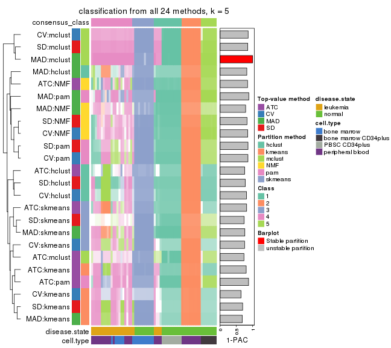
collect_classes(res_list, k = 6)
Overlap of top rows from different top-row methods:
top_rows_overlap(res_list, top_n = 1000, method = "euler")
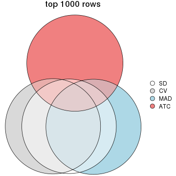
top_rows_overlap(res_list, top_n = 2000, method = "euler")
top_rows_overlap(res_list, top_n = 3000, method = "euler")
top_rows_overlap(res_list, top_n = 4000, method = "euler")
top_rows_overlap(res_list, top_n = 5000, method = "euler")
Also visualize the correspondance of rankings between different top-row methods:
top_rows_overlap(res_list, top_n = 1000, method = "correspondance")
top_rows_overlap(res_list, top_n = 2000, method = "correspondance")
top_rows_overlap(res_list, top_n = 3000, method = "correspondance")

top_rows_overlap(res_list, top_n = 4000, method = "correspondance")
top_rows_overlap(res_list, top_n = 5000, method = "correspondance")
Heatmaps of the top rows:
top_rows_heatmap(res_list, top_n = 1000)
top_rows_heatmap(res_list, top_n = 2000)
top_rows_heatmap(res_list, top_n = 3000)
top_rows_heatmap(res_list, top_n = 4000)
top_rows_heatmap(res_list, top_n = 5000)
Test correlation between subgroups and known annotations. If the known annotation is numeric, one-way ANOVA test is applied, and if the known annotation is discrete, chi-squared contingency table test is applied.
test_to_known_factors(res_list, k = 2)
#> n disease.state(p) cell.type(p) k
#> SD:NMF 63 0.019972 6.81e-04 2
#> CV:NMF 62 0.026393 5.64e-04 2
#> MAD:NMF 61 0.034406 8.02e-04 2
#> ATC:NMF 63 0.516615 1.84e-04 2
#> SD:skmeans 64 0.243470 4.64e-05 2
#> CV:skmeans 64 0.243470 4.64e-05 2
#> MAD:skmeans 64 0.243470 4.64e-05 2
#> ATC:skmeans 63 0.045846 3.91e-04 2
#> SD:mclust 63 0.045846 2.81e-04 2
#> CV:mclust 58 0.000201 1.38e-03 2
#> MAD:mclust 64 0.012519 2.52e-03 2
#> ATC:mclust 63 0.094400 9.65e-05 2
#> SD:kmeans 63 0.019972 6.81e-04 2
#> CV:kmeans 63 0.019972 6.81e-04 2
#> MAD:kmeans 61 0.077619 1.32e-04 2
#> ATC:kmeans 64 0.464719 7.80e-05 2
#> SD:pam 64 0.577513 3.27e-06 2
#> CV:pam 64 0.577513 3.27e-06 2
#> MAD:pam 64 0.577513 3.27e-06 2
#> ATC:pam 64 0.464719 7.80e-05 2
#> SD:hclust 51 0.434745 1.07e-03 2
#> CV:hclust 64 0.721287 2.96e-05 2
#> MAD:hclust 64 0.721287 2.96e-05 2
#> ATC:hclust 64 0.464719 7.80e-05 2
test_to_known_factors(res_list, k = 3)
#> n disease.state(p) cell.type(p) k
#> SD:NMF 59 4.30e-01 5.06e-11 3
#> CV:NMF 58 2.98e-01 6.38e-12 3
#> MAD:NMF 60 1.12e-01 4.07e-09 3
#> ATC:NMF 58 3.73e-07 3.93e-05 3
#> SD:skmeans 64 4.74e-01 4.36e-13 3
#> CV:skmeans 37 2.48e-01 7.52e-04 3
#> MAD:skmeans 63 5.45e-01 1.06e-13 3
#> ATC:skmeans 64 4.15e-02 1.38e-10 3
#> SD:mclust 64 4.76e-05 6.76e-08 3
#> CV:mclust 64 4.76e-05 6.76e-08 3
#> MAD:mclust 52 8.93e-07 2.78e-11 3
#> ATC:mclust 59 7.93e-03 5.61e-09 3
#> SD:kmeans 64 1.70e-02 5.17e-08 3
#> CV:kmeans 58 1.96e-02 3.85e-07 3
#> MAD:kmeans 61 5.37e-04 3.71e-05 3
#> ATC:kmeans 64 1.70e-02 5.17e-08 3
#> SD:pam 64 1.53e-02 7.97e-09 3
#> CV:pam 64 1.53e-02 7.97e-09 3
#> MAD:pam 62 8.42e-02 2.89e-10 3
#> ATC:pam 63 2.00e-02 2.69e-08 3
#> SD:hclust 53 4.63e-02 2.08e-10 3
#> CV:hclust 59 7.93e-03 4.37e-10 3
#> MAD:hclust 60 6.58e-01 9.06e-12 3
#> ATC:hclust 56 8.54e-01 1.09e-12 3
test_to_known_factors(res_list, k = 4)
#> n disease.state(p) cell.type(p) k
#> SD:NMF 54 8.85e-08 2.21e-09 4
#> CV:NMF 52 1.72e-07 1.14e-09 4
#> MAD:NMF 58 6.66e-08 1.16e-12 4
#> ATC:NMF 57 1.47e-05 1.25e-10 4
#> SD:skmeans 50 7.51e-06 1.04e-12 4
#> CV:skmeans 60 1.50e-07 1.85e-14 4
#> MAD:skmeans 29 1.02e-02 1.94e-06 4
#> ATC:skmeans 64 2.32e-05 7.38e-13 4
#> SD:mclust 64 2.07e-08 2.89e-18 4
#> CV:mclust 64 2.07e-08 2.89e-18 4
#> MAD:mclust 64 6.53e-08 9.38e-17 4
#> ATC:mclust 63 7.00e-05 8.60e-09 4
#> SD:kmeans 45 1.54e-05 8.56e-12 4
#> CV:kmeans 41 5.80e-06 3.86e-12 4
#> MAD:kmeans 54 5.22e-09 6.09e-13 4
#> ATC:kmeans 59 7.55e-09 8.53e-13 4
#> SD:pam 64 3.11e-02 1.18e-11 4
#> CV:pam 63 2.96e-02 8.84e-12 4
#> MAD:pam 61 1.84e-01 2.28e-15 4
#> ATC:pam 59 7.55e-09 1.87e-12 4
#> SD:hclust 64 1.31e-02 8.35e-13 4
#> CV:hclust 61 4.78e-02 1.25e-12 4
#> MAD:hclust 52 5.94e-02 9.07e-11 4
#> ATC:hclust 52 1.68e-03 1.94e-12 4
test_to_known_factors(res_list, k = 5)
#> n disease.state(p) cell.type(p) k
#> SD:NMF 58 3.12e-07 1.61e-18 5
#> CV:NMF 58 2.22e-08 2.44e-20 5
#> MAD:NMF 52 1.44e-07 1.30e-21 5
#> ATC:NMF 60 2.16e-04 2.92e-15 5
#> SD:skmeans 33 7.90e-02 1.07e-10 5
#> CV:skmeans 52 8.27e-10 5.68e-14 5
#> MAD:skmeans 59 4.99e-05 9.44e-22 5
#> ATC:skmeans 59 1.06e-05 1.98e-13 5
#> SD:mclust 64 4.18e-13 2.66e-28 5
#> CV:mclust 63 6.79e-13 8.68e-28 5
#> MAD:mclust 64 4.18e-13 2.66e-28 5
#> ATC:mclust 42 1.08e-01 2.61e-17 5
#> SD:kmeans 59 4.71e-12 1.48e-14 5
#> CV:kmeans 52 3.00e-11 1.05e-14 5
#> MAD:kmeans 59 4.71e-12 1.48e-14 5
#> ATC:kmeans 60 5.97e-10 9.36e-14 5
#> SD:pam 59 2.28e-05 2.81e-15 5
#> CV:pam 64 1.38e-05 6.53e-14 5
#> MAD:pam 59 3.10e-06 3.49e-21 5
#> ATC:pam 58 2.45e-07 5.38e-21 5
#> SD:hclust 61 4.16e-06 3.00e-10 5
#> CV:hclust 52 7.20e-08 3.16e-14 5
#> MAD:hclust 51 8.67e-01 8.08e-22 5
#> ATC:hclust 49 7.25e-04 5.03e-12 5
test_to_known_factors(res_list, k = 6)
#> n disease.state(p) cell.type(p) k
#> SD:NMF 62 2.77e-09 8.27e-22 6
#> CV:NMF 64 9.74e-10 4.97e-22 6
#> MAD:NMF 62 1.41e-09 7.25e-23 6
#> ATC:NMF 55 7.27e-06 2.00e-17 6
#> SD:skmeans 62 4.74e-10 1.49e-23 6
#> CV:skmeans 63 2.84e-10 2.84e-23 6
#> MAD:skmeans 61 1.36e-06 5.49e-24 6
#> ATC:skmeans 56 6.39e-05 3.49e-22 6
#> SD:mclust 64 1.81e-12 2.08e-27 6
#> CV:mclust 64 1.81e-12 2.08e-27 6
#> MAD:mclust 60 1.22e-11 3.65e-25 6
#> ATC:mclust 59 5.10e-10 4.97e-24 6
#> SD:kmeans 61 7.55e-12 3.12e-25 6
#> CV:kmeans 40 4.33e-08 2.05e-11 6
#> MAD:kmeans 60 7.80e-11 9.03e-24 6
#> ATC:kmeans 60 4.98e-10 7.67e-24 6
#> SD:pam 63 8.39e-10 9.93e-22 6
#> CV:pam 63 8.39e-10 9.93e-22 6
#> MAD:pam 58 3.93e-09 1.26e-21 6
#> ATC:pam 60 3.90e-08 5.47e-22 6
#> SD:hclust 63 7.55e-06 2.11e-21 6
#> CV:hclust 52 1.32e-07 3.62e-22 6
#> MAD:hclust 59 1.88e-04 7.32e-24 6
#> ATC:hclust 46 6.45e-06 8.20e-12 6
The object with results only for a single top-value method and a single partition method can be extracted as:
res = res_list["SD", "hclust"]
# you can also extract it by
# res = res_list["SD:hclust"]
A summary of res and all the functions that can be applied to it:
res
#> A 'ConsensusPartition' object with k = 2, 3, 4, 5, 6.
#> On a matrix with 21168 rows and 64 columns.
#> Top rows (1000, 2000, 3000, 4000, 5000) are extracted by 'SD' method.
#> Subgroups are detected by 'hclust' method.
#> Performed in total 1250 partitions by row resampling.
#> Best k for subgroups seems to be 3.
#>
#> Following methods can be applied to this 'ConsensusPartition' object:
#> [1] "cola_report" "collect_classes" "collect_plots"
#> [4] "collect_stats" "colnames" "compare_signatures"
#> [7] "consensus_heatmap" "dimension_reduction" "functional_enrichment"
#> [10] "get_anno_col" "get_anno" "get_classes"
#> [13] "get_consensus" "get_matrix" "get_membership"
#> [16] "get_param" "get_signatures" "get_stats"
#> [19] "is_best_k" "is_stable_k" "membership_heatmap"
#> [22] "ncol" "nrow" "plot_ecdf"
#> [25] "rownames" "select_partition_number" "show"
#> [28] "suggest_best_k" "test_to_known_factors"
collect_plots() function collects all the plots made from res for all k (number of partitions)
into one single page to provide an easy and fast comparison between different k.
collect_plots(res)
The plots are:
k and the heatmap of
predicted classes for each k.k.k.k.All the plots in panels can be made by individual functions and they are plotted later in this section.
select_partition_number() produces several plots showing different
statistics for choosing “optimized” k. There are following statistics:
k;k, the area increased is defined as \(A_k - A_{k-1}\).The detailed explanations of these statistics can be found in the cola vignette.
Generally speaking, lower PAC score, higher mean silhouette score or higher
concordance corresponds to better partition. Rand index and Jaccard index
measure how similar the current partition is compared to partition with k-1.
If they are too similar, we won't accept k is better than k-1.
select_partition_number(res)
The numeric values for all these statistics can be obtained by get_stats().
get_stats(res)
#> k 1-PAC mean_silhouette concordance area_increased Rand Jaccard
#> 2 2 0.646 0.811 0.909 0.4213 0.635 0.635
#> 3 3 0.810 0.821 0.911 0.4573 0.757 0.617
#> 4 4 0.849 0.869 0.893 0.0903 0.917 0.789
#> 5 5 0.775 0.862 0.901 0.0952 0.975 0.921
#> 6 6 0.788 0.855 0.874 0.0951 0.913 0.698
suggest_best_k() suggests the best \(k\) based on these statistics. The rules are as follows:
NA.suggest_best_k(res)
#> [1] 3
Following shows the table of the partitions (You need to click the show/hide
code output link to see it). The membership matrix (columns with name p*)
is inferred by
clue::cl_consensus()
function with the SE method. Basically the value in the membership matrix
represents the probability to belong to a certain group. The finall class
label for an item is determined with the group with highest probability it
belongs to.
In get_classes() function, the entropy is calculated from the membership
matrix and the silhouette score is calculated from the consensus matrix.
cbind(get_classes(res, k = 2), get_membership(res, k = 2))
#> class entropy silhouette p1 p2
#> GSM239371 1 0.0000 0.867 1.000 0.000
#> GSM239487 1 0.9815 0.466 0.580 0.420
#> GSM239489 1 0.3733 0.822 0.928 0.072
#> GSM239492 1 0.0000 0.867 1.000 0.000
#> GSM239497 1 0.9815 0.466 0.580 0.420
#> GSM239520 1 0.9815 0.466 0.580 0.420
#> GSM240427 1 0.0000 0.867 1.000 0.000
#> GSM239345 1 0.0000 0.867 1.000 0.000
#> GSM239346 2 0.1184 0.985 0.016 0.984
#> GSM239348 1 0.0000 0.867 1.000 0.000
#> GSM239363 2 0.1184 0.985 0.016 0.984
#> GSM239460 1 0.6801 0.739 0.820 0.180
#> GSM239485 1 0.0000 0.867 1.000 0.000
#> GSM239488 2 0.1184 0.985 0.016 0.984
#> GSM239490 1 0.0000 0.867 1.000 0.000
#> GSM239491 1 0.0000 0.867 1.000 0.000
#> GSM239493 1 0.0000 0.867 1.000 0.000
#> GSM239494 1 0.0000 0.867 1.000 0.000
#> GSM239495 1 0.0000 0.867 1.000 0.000
#> GSM239496 1 0.0000 0.867 1.000 0.000
#> GSM239498 2 0.1184 0.985 0.016 0.984
#> GSM239516 2 0.1184 0.985 0.016 0.984
#> GSM239580 1 0.0000 0.867 1.000 0.000
#> GSM240405 1 0.0000 0.867 1.000 0.000
#> GSM240406 1 0.0000 0.867 1.000 0.000
#> GSM240429 1 0.0376 0.864 0.996 0.004
#> GSM239323 1 0.9815 0.466 0.580 0.420
#> GSM239324 1 0.9815 0.466 0.580 0.420
#> GSM239326 1 0.9815 0.466 0.580 0.420
#> GSM239328 1 0.9815 0.466 0.580 0.420
#> GSM239329 1 0.9815 0.466 0.580 0.420
#> GSM239331 1 0.9815 0.466 0.580 0.420
#> GSM239332 1 0.9815 0.466 0.580 0.420
#> GSM239333 1 0.9815 0.466 0.580 0.420
#> GSM239334 1 0.9815 0.466 0.580 0.420
#> GSM239335 1 0.9815 0.466 0.580 0.420
#> GSM240430 2 0.0000 0.993 0.000 1.000
#> GSM240431 2 0.0000 0.993 0.000 1.000
#> GSM240432 2 0.0000 0.993 0.000 1.000
#> GSM240433 2 0.0000 0.993 0.000 1.000
#> GSM240494 2 0.0000 0.993 0.000 1.000
#> GSM240495 2 0.0000 0.993 0.000 1.000
#> GSM240496 2 0.0000 0.993 0.000 1.000
#> GSM240497 2 0.0000 0.993 0.000 1.000
#> GSM240498 2 0.0000 0.993 0.000 1.000
#> GSM240499 2 0.0000 0.993 0.000 1.000
#> GSM239170 1 0.0000 0.867 1.000 0.000
#> GSM239338 1 0.0000 0.867 1.000 0.000
#> GSM239339 1 0.0000 0.867 1.000 0.000
#> GSM239340 1 0.0000 0.867 1.000 0.000
#> GSM239341 1 0.0000 0.867 1.000 0.000
#> GSM239342 1 0.0000 0.867 1.000 0.000
#> GSM239343 1 0.0000 0.867 1.000 0.000
#> GSM239344 1 0.0000 0.867 1.000 0.000
#> GSM240500 1 0.0000 0.867 1.000 0.000
#> GSM240501 1 0.0000 0.867 1.000 0.000
#> GSM240502 1 0.0000 0.867 1.000 0.000
#> GSM240503 1 0.0000 0.867 1.000 0.000
#> GSM240504 1 0.0000 0.867 1.000 0.000
#> GSM240505 1 0.0000 0.867 1.000 0.000
#> GSM240506 1 0.0000 0.867 1.000 0.000
#> GSM240507 1 0.0000 0.867 1.000 0.000
#> GSM240508 1 0.0000 0.867 1.000 0.000
#> GSM240509 1 0.0000 0.867 1.000 0.000
cbind(get_classes(res, k = 3), get_membership(res, k = 3))
#> class entropy silhouette p1 p2 p3
#> GSM239371 1 0.0000 0.913 1.000 0.000 0.000
#> GSM239487 3 0.1031 0.945 0.024 0.000 0.976
#> GSM239489 1 0.3267 0.834 0.884 0.000 0.116
#> GSM239492 1 0.0237 0.912 0.996 0.000 0.004
#> GSM239497 3 0.1031 0.945 0.024 0.000 0.976
#> GSM239520 3 0.1031 0.945 0.024 0.000 0.976
#> GSM240427 1 0.0424 0.911 0.992 0.000 0.008
#> GSM239345 1 0.0000 0.913 1.000 0.000 0.000
#> GSM239346 2 0.6235 0.488 0.000 0.564 0.436
#> GSM239348 1 0.6154 0.443 0.592 0.000 0.408
#> GSM239363 2 0.6235 0.488 0.000 0.564 0.436
#> GSM239460 3 0.6154 0.119 0.408 0.000 0.592
#> GSM239485 1 0.6154 0.443 0.592 0.000 0.408
#> GSM239488 2 0.6235 0.488 0.000 0.564 0.436
#> GSM239490 1 0.6154 0.443 0.592 0.000 0.408
#> GSM239491 1 0.6154 0.443 0.592 0.000 0.408
#> GSM239493 1 0.0000 0.913 1.000 0.000 0.000
#> GSM239494 1 0.0000 0.913 1.000 0.000 0.000
#> GSM239495 1 0.0000 0.913 1.000 0.000 0.000
#> GSM239496 1 0.6154 0.443 0.592 0.000 0.408
#> GSM239498 2 0.6235 0.488 0.000 0.564 0.436
#> GSM239516 2 0.6235 0.488 0.000 0.564 0.436
#> GSM239580 1 0.0000 0.913 1.000 0.000 0.000
#> GSM240405 1 0.0000 0.913 1.000 0.000 0.000
#> GSM240406 1 0.0237 0.912 0.996 0.000 0.004
#> GSM240429 1 0.0237 0.912 0.996 0.000 0.004
#> GSM239323 3 0.1267 0.948 0.024 0.004 0.972
#> GSM239324 3 0.1267 0.948 0.024 0.004 0.972
#> GSM239326 3 0.1267 0.948 0.024 0.004 0.972
#> GSM239328 3 0.1267 0.948 0.024 0.004 0.972
#> GSM239329 3 0.1267 0.948 0.024 0.004 0.972
#> GSM239331 3 0.1267 0.948 0.024 0.004 0.972
#> GSM239332 3 0.1267 0.948 0.024 0.004 0.972
#> GSM239333 3 0.1267 0.948 0.024 0.004 0.972
#> GSM239334 3 0.1267 0.948 0.024 0.004 0.972
#> GSM239335 3 0.1267 0.948 0.024 0.004 0.972
#> GSM240430 2 0.0000 0.833 0.000 1.000 0.000
#> GSM240431 2 0.0000 0.833 0.000 1.000 0.000
#> GSM240432 2 0.0000 0.833 0.000 1.000 0.000
#> GSM240433 2 0.0000 0.833 0.000 1.000 0.000
#> GSM240494 2 0.0000 0.833 0.000 1.000 0.000
#> GSM240495 2 0.0000 0.833 0.000 1.000 0.000
#> GSM240496 2 0.0000 0.833 0.000 1.000 0.000
#> GSM240497 2 0.0000 0.833 0.000 1.000 0.000
#> GSM240498 2 0.0000 0.833 0.000 1.000 0.000
#> GSM240499 2 0.0000 0.833 0.000 1.000 0.000
#> GSM239170 1 0.2356 0.887 0.928 0.000 0.072
#> GSM239338 1 0.2356 0.887 0.928 0.000 0.072
#> GSM239339 1 0.2356 0.887 0.928 0.000 0.072
#> GSM239340 1 0.2356 0.887 0.928 0.000 0.072
#> GSM239341 1 0.2356 0.887 0.928 0.000 0.072
#> GSM239342 1 0.2356 0.887 0.928 0.000 0.072
#> GSM239343 1 0.2356 0.887 0.928 0.000 0.072
#> GSM239344 1 0.2356 0.887 0.928 0.000 0.072
#> GSM240500 1 0.0000 0.913 1.000 0.000 0.000
#> GSM240501 1 0.0000 0.913 1.000 0.000 0.000
#> GSM240502 1 0.0000 0.913 1.000 0.000 0.000
#> GSM240503 1 0.0000 0.913 1.000 0.000 0.000
#> GSM240504 1 0.0000 0.913 1.000 0.000 0.000
#> GSM240505 1 0.0000 0.913 1.000 0.000 0.000
#> GSM240506 1 0.0000 0.913 1.000 0.000 0.000
#> GSM240507 1 0.0000 0.913 1.000 0.000 0.000
#> GSM240508 1 0.0000 0.913 1.000 0.000 0.000
#> GSM240509 1 0.0000 0.913 1.000 0.000 0.000
cbind(get_classes(res, k = 4), get_membership(res, k = 4))
#> class entropy silhouette p1 p2 p3 p4
#> GSM239371 1 0.0000 0.935 1.000 0.00 0.000 0.000
#> GSM239487 3 0.4817 0.635 0.000 0.00 0.612 0.388
#> GSM239489 1 0.2867 0.778 0.884 0.00 0.012 0.104
#> GSM239492 1 0.0188 0.935 0.996 0.00 0.004 0.000
#> GSM239497 3 0.4817 0.635 0.000 0.00 0.612 0.388
#> GSM239520 3 0.4817 0.635 0.000 0.00 0.612 0.388
#> GSM240427 1 0.0336 0.934 0.992 0.00 0.008 0.000
#> GSM239345 1 0.0707 0.939 0.980 0.00 0.000 0.020
#> GSM239346 2 0.5535 0.664 0.000 0.56 0.020 0.420
#> GSM239348 4 0.4948 0.920 0.440 0.00 0.000 0.560
#> GSM239363 2 0.5535 0.664 0.000 0.56 0.020 0.420
#> GSM239460 4 0.4868 0.700 0.256 0.00 0.024 0.720
#> GSM239485 4 0.4977 0.888 0.460 0.00 0.000 0.540
#> GSM239488 2 0.5535 0.664 0.000 0.56 0.020 0.420
#> GSM239490 4 0.4948 0.920 0.440 0.00 0.000 0.560
#> GSM239491 4 0.4948 0.920 0.440 0.00 0.000 0.560
#> GSM239493 1 0.0000 0.935 1.000 0.00 0.000 0.000
#> GSM239494 1 0.0000 0.935 1.000 0.00 0.000 0.000
#> GSM239495 1 0.0000 0.935 1.000 0.00 0.000 0.000
#> GSM239496 4 0.4948 0.920 0.440 0.00 0.000 0.560
#> GSM239498 2 0.5535 0.664 0.000 0.56 0.020 0.420
#> GSM239516 2 0.5535 0.664 0.000 0.56 0.020 0.420
#> GSM239580 1 0.0469 0.938 0.988 0.00 0.000 0.012
#> GSM240405 1 0.0707 0.939 0.980 0.00 0.000 0.020
#> GSM240406 1 0.0188 0.934 0.996 0.00 0.000 0.004
#> GSM240429 1 0.0895 0.936 0.976 0.00 0.004 0.020
#> GSM239323 3 0.0000 0.909 0.000 0.00 1.000 0.000
#> GSM239324 3 0.0000 0.909 0.000 0.00 1.000 0.000
#> GSM239326 3 0.0000 0.909 0.000 0.00 1.000 0.000
#> GSM239328 3 0.0000 0.909 0.000 0.00 1.000 0.000
#> GSM239329 3 0.0000 0.909 0.000 0.00 1.000 0.000
#> GSM239331 3 0.0000 0.909 0.000 0.00 1.000 0.000
#> GSM239332 3 0.0000 0.909 0.000 0.00 1.000 0.000
#> GSM239333 3 0.0000 0.909 0.000 0.00 1.000 0.000
#> GSM239334 3 0.0000 0.909 0.000 0.00 1.000 0.000
#> GSM239335 3 0.0000 0.909 0.000 0.00 1.000 0.000
#> GSM240430 2 0.0000 0.856 0.000 1.00 0.000 0.000
#> GSM240431 2 0.0000 0.856 0.000 1.00 0.000 0.000
#> GSM240432 2 0.0000 0.856 0.000 1.00 0.000 0.000
#> GSM240433 2 0.0000 0.856 0.000 1.00 0.000 0.000
#> GSM240494 2 0.0000 0.856 0.000 1.00 0.000 0.000
#> GSM240495 2 0.0000 0.856 0.000 1.00 0.000 0.000
#> GSM240496 2 0.0000 0.856 0.000 1.00 0.000 0.000
#> GSM240497 2 0.0000 0.856 0.000 1.00 0.000 0.000
#> GSM240498 2 0.0000 0.856 0.000 1.00 0.000 0.000
#> GSM240499 2 0.0000 0.856 0.000 1.00 0.000 0.000
#> GSM239170 1 0.1940 0.874 0.924 0.00 0.076 0.000
#> GSM239338 1 0.1940 0.874 0.924 0.00 0.076 0.000
#> GSM239339 1 0.1940 0.874 0.924 0.00 0.076 0.000
#> GSM239340 1 0.1940 0.874 0.924 0.00 0.076 0.000
#> GSM239341 1 0.1940 0.874 0.924 0.00 0.076 0.000
#> GSM239342 1 0.1940 0.874 0.924 0.00 0.076 0.000
#> GSM239343 1 0.1940 0.874 0.924 0.00 0.076 0.000
#> GSM239344 1 0.1940 0.874 0.924 0.00 0.076 0.000
#> GSM240500 1 0.0707 0.939 0.980 0.00 0.000 0.020
#> GSM240501 1 0.0707 0.939 0.980 0.00 0.000 0.020
#> GSM240502 1 0.0707 0.939 0.980 0.00 0.000 0.020
#> GSM240503 1 0.0707 0.939 0.980 0.00 0.000 0.020
#> GSM240504 1 0.0707 0.939 0.980 0.00 0.000 0.020
#> GSM240505 1 0.0707 0.939 0.980 0.00 0.000 0.020
#> GSM240506 1 0.0707 0.939 0.980 0.00 0.000 0.020
#> GSM240507 1 0.0707 0.939 0.980 0.00 0.000 0.020
#> GSM240508 1 0.0707 0.939 0.980 0.00 0.000 0.020
#> GSM240509 1 0.0707 0.939 0.980 0.00 0.000 0.020
cbind(get_classes(res, k = 5), get_membership(res, k = 5))
#> class entropy silhouette p1 p2 p3 p4 p5
#> GSM239371 1 0.1792 0.831 0.916 0.000 0.000 0.084 0.000
#> GSM239487 3 0.4299 0.465 0.000 0.000 0.608 0.004 0.388
#> GSM239489 1 0.5147 0.570 0.664 0.000 0.004 0.264 0.068
#> GSM239492 1 0.2179 0.822 0.888 0.000 0.000 0.112 0.000
#> GSM239497 3 0.4299 0.465 0.000 0.000 0.608 0.004 0.388
#> GSM239520 3 0.4299 0.465 0.000 0.000 0.608 0.004 0.388
#> GSM240427 1 0.2338 0.820 0.884 0.000 0.004 0.112 0.000
#> GSM239345 1 0.2561 0.850 0.856 0.000 0.000 0.144 0.000
#> GSM239346 5 0.0404 1.000 0.000 0.012 0.000 0.000 0.988
#> GSM239348 4 0.2966 0.878 0.184 0.000 0.000 0.816 0.000
#> GSM239363 5 0.0404 1.000 0.000 0.012 0.000 0.000 0.988
#> GSM239460 4 0.2929 0.606 0.000 0.000 0.000 0.820 0.180
#> GSM239485 4 0.3508 0.882 0.252 0.000 0.000 0.748 0.000
#> GSM239488 5 0.0404 1.000 0.000 0.012 0.000 0.000 0.988
#> GSM239490 4 0.3395 0.904 0.236 0.000 0.000 0.764 0.000
#> GSM239491 4 0.3395 0.904 0.236 0.000 0.000 0.764 0.000
#> GSM239493 1 0.1792 0.831 0.916 0.000 0.000 0.084 0.000
#> GSM239494 1 0.1792 0.831 0.916 0.000 0.000 0.084 0.000
#> GSM239495 1 0.1792 0.831 0.916 0.000 0.000 0.084 0.000
#> GSM239496 4 0.3274 0.905 0.220 0.000 0.000 0.780 0.000
#> GSM239498 5 0.0404 1.000 0.000 0.012 0.000 0.000 0.988
#> GSM239516 5 0.0404 1.000 0.000 0.012 0.000 0.000 0.988
#> GSM239580 1 0.2074 0.835 0.896 0.000 0.000 0.104 0.000
#> GSM240405 1 0.2561 0.850 0.856 0.000 0.000 0.144 0.000
#> GSM240406 1 0.1851 0.829 0.912 0.000 0.000 0.088 0.000
#> GSM240429 1 0.3242 0.823 0.784 0.000 0.000 0.216 0.000
#> GSM239323 3 0.0000 0.893 0.000 0.000 1.000 0.000 0.000
#> GSM239324 3 0.0000 0.893 0.000 0.000 1.000 0.000 0.000
#> GSM239326 3 0.0000 0.893 0.000 0.000 1.000 0.000 0.000
#> GSM239328 3 0.0000 0.893 0.000 0.000 1.000 0.000 0.000
#> GSM239329 3 0.0000 0.893 0.000 0.000 1.000 0.000 0.000
#> GSM239331 3 0.0000 0.893 0.000 0.000 1.000 0.000 0.000
#> GSM239332 3 0.0000 0.893 0.000 0.000 1.000 0.000 0.000
#> GSM239333 3 0.0000 0.893 0.000 0.000 1.000 0.000 0.000
#> GSM239334 3 0.0000 0.893 0.000 0.000 1.000 0.000 0.000
#> GSM239335 3 0.0000 0.893 0.000 0.000 1.000 0.000 0.000
#> GSM240430 2 0.0000 1.000 0.000 1.000 0.000 0.000 0.000
#> GSM240431 2 0.0000 1.000 0.000 1.000 0.000 0.000 0.000
#> GSM240432 2 0.0000 1.000 0.000 1.000 0.000 0.000 0.000
#> GSM240433 2 0.0000 1.000 0.000 1.000 0.000 0.000 0.000
#> GSM240494 2 0.0000 1.000 0.000 1.000 0.000 0.000 0.000
#> GSM240495 2 0.0000 1.000 0.000 1.000 0.000 0.000 0.000
#> GSM240496 2 0.0000 1.000 0.000 1.000 0.000 0.000 0.000
#> GSM240497 2 0.0000 1.000 0.000 1.000 0.000 0.000 0.000
#> GSM240498 2 0.0000 1.000 0.000 1.000 0.000 0.000 0.000
#> GSM240499 2 0.0000 1.000 0.000 1.000 0.000 0.000 0.000
#> GSM239170 1 0.2507 0.812 0.900 0.000 0.072 0.016 0.012
#> GSM239338 1 0.2507 0.812 0.900 0.000 0.072 0.016 0.012
#> GSM239339 1 0.2507 0.812 0.900 0.000 0.072 0.016 0.012
#> GSM239340 1 0.2507 0.812 0.900 0.000 0.072 0.016 0.012
#> GSM239341 1 0.2507 0.812 0.900 0.000 0.072 0.016 0.012
#> GSM239342 1 0.2507 0.812 0.900 0.000 0.072 0.016 0.012
#> GSM239343 1 0.2507 0.812 0.900 0.000 0.072 0.016 0.012
#> GSM239344 1 0.2507 0.812 0.900 0.000 0.072 0.016 0.012
#> GSM240500 1 0.2471 0.851 0.864 0.000 0.000 0.136 0.000
#> GSM240501 1 0.2471 0.851 0.864 0.000 0.000 0.136 0.000
#> GSM240502 1 0.2471 0.851 0.864 0.000 0.000 0.136 0.000
#> GSM240503 1 0.2471 0.851 0.864 0.000 0.000 0.136 0.000
#> GSM240504 1 0.2471 0.851 0.864 0.000 0.000 0.136 0.000
#> GSM240505 1 0.2471 0.851 0.864 0.000 0.000 0.136 0.000
#> GSM240506 1 0.2471 0.851 0.864 0.000 0.000 0.136 0.000
#> GSM240507 1 0.2471 0.851 0.864 0.000 0.000 0.136 0.000
#> GSM240508 1 0.2471 0.851 0.864 0.000 0.000 0.136 0.000
#> GSM240509 1 0.2471 0.851 0.864 0.000 0.000 0.136 0.000
cbind(get_classes(res, k = 6), get_membership(res, k = 6))
#> class entropy silhouette p1 p2 p3 p4 p5 p6
#> GSM239371 1 0.397 0.677 0.728 0 0.000 0.048 0.224 0.000
#> GSM239487 3 0.538 0.506 0.000 0 0.592 0.088 0.020 0.300
#> GSM239489 1 0.638 0.454 0.532 0 0.004 0.260 0.156 0.048
#> GSM239492 1 0.443 0.596 0.652 0 0.000 0.052 0.296 0.000
#> GSM239497 3 0.538 0.506 0.000 0 0.592 0.088 0.020 0.300
#> GSM239520 3 0.538 0.506 0.000 0 0.592 0.088 0.020 0.300
#> GSM240427 1 0.456 0.592 0.648 0 0.004 0.052 0.296 0.000
#> GSM239345 1 0.144 0.803 0.928 0 0.000 0.000 0.072 0.000
#> GSM239346 6 0.000 1.000 0.000 0 0.000 0.000 0.000 1.000
#> GSM239348 4 0.327 0.870 0.044 0 0.000 0.812 0.144 0.000
#> GSM239363 6 0.000 1.000 0.000 0 0.000 0.000 0.000 1.000
#> GSM239460 4 0.222 0.659 0.000 0 0.000 0.864 0.000 0.136
#> GSM239485 4 0.353 0.880 0.028 0 0.000 0.764 0.208 0.000
#> GSM239488 6 0.000 1.000 0.000 0 0.000 0.000 0.000 1.000
#> GSM239490 4 0.323 0.901 0.016 0 0.000 0.784 0.200 0.000
#> GSM239491 4 0.323 0.901 0.016 0 0.000 0.784 0.200 0.000
#> GSM239493 1 0.397 0.677 0.728 0 0.000 0.048 0.224 0.000
#> GSM239494 1 0.397 0.677 0.728 0 0.000 0.048 0.224 0.000
#> GSM239495 1 0.397 0.677 0.728 0 0.000 0.048 0.224 0.000
#> GSM239496 4 0.310 0.901 0.016 0 0.000 0.800 0.184 0.000
#> GSM239498 6 0.000 1.000 0.000 0 0.000 0.000 0.000 1.000
#> GSM239516 6 0.000 1.000 0.000 0 0.000 0.000 0.000 1.000
#> GSM239580 1 0.369 0.688 0.748 0 0.000 0.032 0.220 0.000
#> GSM240405 1 0.144 0.803 0.928 0 0.000 0.000 0.072 0.000
#> GSM240406 1 0.403 0.674 0.724 0 0.000 0.052 0.224 0.000
#> GSM240429 1 0.115 0.765 0.956 0 0.000 0.032 0.012 0.000
#> GSM239323 3 0.000 0.897 0.000 0 1.000 0.000 0.000 0.000
#> GSM239324 3 0.000 0.897 0.000 0 1.000 0.000 0.000 0.000
#> GSM239326 3 0.000 0.897 0.000 0 1.000 0.000 0.000 0.000
#> GSM239328 3 0.000 0.897 0.000 0 1.000 0.000 0.000 0.000
#> GSM239329 3 0.000 0.897 0.000 0 1.000 0.000 0.000 0.000
#> GSM239331 3 0.000 0.897 0.000 0 1.000 0.000 0.000 0.000
#> GSM239332 3 0.000 0.897 0.000 0 1.000 0.000 0.000 0.000
#> GSM239333 3 0.000 0.897 0.000 0 1.000 0.000 0.000 0.000
#> GSM239334 3 0.000 0.897 0.000 0 1.000 0.000 0.000 0.000
#> GSM239335 3 0.000 0.897 0.000 0 1.000 0.000 0.000 0.000
#> GSM240430 2 0.000 1.000 0.000 1 0.000 0.000 0.000 0.000
#> GSM240431 2 0.000 1.000 0.000 1 0.000 0.000 0.000 0.000
#> GSM240432 2 0.000 1.000 0.000 1 0.000 0.000 0.000 0.000
#> GSM240433 2 0.000 1.000 0.000 1 0.000 0.000 0.000 0.000
#> GSM240494 2 0.000 1.000 0.000 1 0.000 0.000 0.000 0.000
#> GSM240495 2 0.000 1.000 0.000 1 0.000 0.000 0.000 0.000
#> GSM240496 2 0.000 1.000 0.000 1 0.000 0.000 0.000 0.000
#> GSM240497 2 0.000 1.000 0.000 1 0.000 0.000 0.000 0.000
#> GSM240498 2 0.000 1.000 0.000 1 0.000 0.000 0.000 0.000
#> GSM240499 2 0.000 1.000 0.000 1 0.000 0.000 0.000 0.000
#> GSM239170 5 0.079 1.000 0.032 0 0.000 0.000 0.968 0.000
#> GSM239338 5 0.079 1.000 0.032 0 0.000 0.000 0.968 0.000
#> GSM239339 5 0.079 1.000 0.032 0 0.000 0.000 0.968 0.000
#> GSM239340 5 0.079 1.000 0.032 0 0.000 0.000 0.968 0.000
#> GSM239341 5 0.079 1.000 0.032 0 0.000 0.000 0.968 0.000
#> GSM239342 5 0.079 1.000 0.032 0 0.000 0.000 0.968 0.000
#> GSM239343 5 0.079 1.000 0.032 0 0.000 0.000 0.968 0.000
#> GSM239344 5 0.079 1.000 0.032 0 0.000 0.000 0.968 0.000
#> GSM240500 1 0.181 0.807 0.900 0 0.000 0.000 0.100 0.000
#> GSM240501 1 0.181 0.807 0.900 0 0.000 0.000 0.100 0.000
#> GSM240502 1 0.181 0.807 0.900 0 0.000 0.000 0.100 0.000
#> GSM240503 1 0.181 0.807 0.900 0 0.000 0.000 0.100 0.000
#> GSM240504 1 0.181 0.807 0.900 0 0.000 0.000 0.100 0.000
#> GSM240505 1 0.181 0.807 0.900 0 0.000 0.000 0.100 0.000
#> GSM240506 1 0.181 0.807 0.900 0 0.000 0.000 0.100 0.000
#> GSM240507 1 0.181 0.807 0.900 0 0.000 0.000 0.100 0.000
#> GSM240508 1 0.181 0.807 0.900 0 0.000 0.000 0.100 0.000
#> GSM240509 1 0.181 0.807 0.900 0 0.000 0.000 0.100 0.000
Heatmaps for the consensus matrix. It visualizes the probability of two samples to be in a same group.
consensus_heatmap(res, k = 2)
consensus_heatmap(res, k = 3)
consensus_heatmap(res, k = 4)
consensus_heatmap(res, k = 5)
consensus_heatmap(res, k = 6)
Heatmaps for the membership of samples in all partitions to see how consistent they are:
membership_heatmap(res, k = 2)
membership_heatmap(res, k = 3)
membership_heatmap(res, k = 4)
membership_heatmap(res, k = 5)
membership_heatmap(res, k = 6)
As soon as we have had the classes for columns, we can look for signatures which are significantly different between classes which can be candidate marks for certain classes. Following are the heatmaps for signatures.
Signature heatmaps where rows are scaled:
get_signatures(res, k = 2)
get_signatures(res, k = 3)
get_signatures(res, k = 4)
get_signatures(res, k = 5)
get_signatures(res, k = 6)
Signature heatmaps where rows are not scaled:
get_signatures(res, k = 2, scale_rows = FALSE)
get_signatures(res, k = 3, scale_rows = FALSE)
get_signatures(res, k = 4, scale_rows = FALSE)
get_signatures(res, k = 5, scale_rows = FALSE)
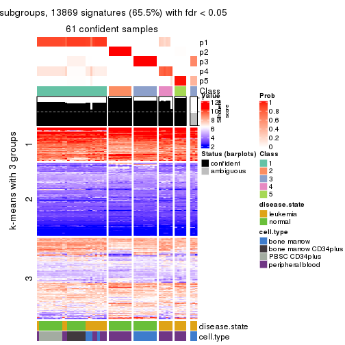
get_signatures(res, k = 6, scale_rows = FALSE)
Compare the overlap of signatures from different k:
compare_signatures(res)
get_signature() returns a data frame invisibly. TO get the list of signatures, the function
call should be assigned to a variable explicitly. In following code, if plot argument is set
to FALSE, no heatmap is plotted while only the differential analysis is performed.
# code only for demonstration
tb = get_signature(res, k = ..., plot = FALSE)
An example of the output of tb is:
#> which_row fdr mean_1 mean_2 scaled_mean_1 scaled_mean_2 km
#> 1 38 0.042760348 8.373488 9.131774 -0.5533452 0.5164555 1
#> 2 40 0.018707592 7.106213 8.469186 -0.6173731 0.5762149 1
#> 3 55 0.019134737 10.221463 11.207825 -0.6159697 0.5749050 1
#> 4 59 0.006059896 5.921854 7.869574 -0.6899429 0.6439467 1
#> 5 60 0.018055526 8.928898 10.211722 -0.6204761 0.5791110 1
#> 6 98 0.009384629 15.714769 14.887706 0.6635654 -0.6193277 2
...
The columns in tb are:
which_row: row indices corresponding to the input matrix.fdr: FDR for the differential test. mean_x: The mean value in group x.scaled_mean_x: The mean value in group x after rows are scaled.km: Row groups if k-means clustering is applied to rows.UMAP plot which shows how samples are separated.
dimension_reduction(res, k = 2, method = "UMAP")
dimension_reduction(res, k = 3, method = "UMAP")
dimension_reduction(res, k = 4, method = "UMAP")
dimension_reduction(res, k = 5, method = "UMAP")
dimension_reduction(res, k = 6, method = "UMAP")
Following heatmap shows how subgroups are split when increasing k:
collect_classes(res)
Test correlation between subgroups and known annotations. If the known annotation is numeric, one-way ANOVA test is applied, and if the known annotation is discrete, chi-squared contingency table test is applied.
test_to_known_factors(res)
#> n disease.state(p) cell.type(p) k
#> SD:hclust 51 4.35e-01 1.07e-03 2
#> SD:hclust 53 4.63e-02 2.08e-10 3
#> SD:hclust 64 1.31e-02 8.35e-13 4
#> SD:hclust 61 4.16e-06 3.00e-10 5
#> SD:hclust 63 7.55e-06 2.11e-21 6
If matrix rows can be associated to genes, consider to use GO_Enrichment(res,
...) to perform function enrichment for the signature genes.
The object with results only for a single top-value method and a single partition method can be extracted as:
res = res_list["SD", "kmeans"]
# you can also extract it by
# res = res_list["SD:kmeans"]
A summary of res and all the functions that can be applied to it:
res
#> A 'ConsensusPartition' object with k = 2, 3, 4, 5, 6.
#> On a matrix with 21168 rows and 64 columns.
#> Top rows (1000, 2000, 3000, 4000, 5000) are extracted by 'SD' method.
#> Subgroups are detected by 'kmeans' method.
#> Performed in total 1250 partitions by row resampling.
#> Best k for subgroups seems to be 2.
#>
#> Following methods can be applied to this 'ConsensusPartition' object:
#> [1] "cola_report" "collect_classes" "collect_plots"
#> [4] "collect_stats" "colnames" "compare_signatures"
#> [7] "consensus_heatmap" "dimension_reduction" "functional_enrichment"
#> [10] "get_anno_col" "get_anno" "get_classes"
#> [13] "get_consensus" "get_matrix" "get_membership"
#> [16] "get_param" "get_signatures" "get_stats"
#> [19] "is_best_k" "is_stable_k" "membership_heatmap"
#> [22] "ncol" "nrow" "plot_ecdf"
#> [25] "rownames" "select_partition_number" "show"
#> [28] "suggest_best_k" "test_to_known_factors"
collect_plots() function collects all the plots made from res for all k (number of partitions)
into one single page to provide an easy and fast comparison between different k.
collect_plots(res)
The plots are:
k and the heatmap of
predicted classes for each k.k.k.k.All the plots in panels can be made by individual functions and they are plotted later in this section.
select_partition_number() produces several plots showing different
statistics for choosing “optimized” k. There are following statistics:
k;k, the area increased is defined as \(A_k - A_{k-1}\).The detailed explanations of these statistics can be found in the cola vignette.
Generally speaking, lower PAC score, higher mean silhouette score or higher
concordance corresponds to better partition. Rand index and Jaccard index
measure how similar the current partition is compared to partition with k-1.
If they are too similar, we won't accept k is better than k-1.
select_partition_number(res)
The numeric values for all these statistics can be obtained by get_stats().
get_stats(res)
#> k 1-PAC mean_silhouette concordance area_increased Rand Jaccard
#> 2 2 0.702 0.894 0.939 0.4494 0.516 0.516
#> 3 3 0.609 0.777 0.807 0.3999 0.804 0.646
#> 4 4 0.614 0.463 0.669 0.1382 0.883 0.712
#> 5 5 0.693 0.763 0.767 0.0790 0.846 0.539
#> 6 6 0.840 0.859 0.825 0.0559 0.948 0.760
suggest_best_k() suggests the best \(k\) based on these statistics. The rules are as follows:
NA.suggest_best_k(res)
#> [1] 2
Following shows the table of the partitions (You need to click the show/hide
code output link to see it). The membership matrix (columns with name p*)
is inferred by
clue::cl_consensus()
function with the SE method. Basically the value in the membership matrix
represents the probability to belong to a certain group. The finall class
label for an item is determined with the group with highest probability it
belongs to.
In get_classes() function, the entropy is calculated from the membership
matrix and the silhouette score is calculated from the consensus matrix.
cbind(get_classes(res, k = 2), get_membership(res, k = 2))
#> class entropy silhouette p1 p2
#> GSM239371 1 0.0000 0.979 1.000 0.000
#> GSM239487 1 0.6973 0.724 0.812 0.188
#> GSM239489 1 0.0672 0.975 0.992 0.008
#> GSM239492 1 0.0672 0.975 0.992 0.008
#> GSM239497 1 0.3274 0.920 0.940 0.060
#> GSM239520 1 0.9248 0.356 0.660 0.340
#> GSM240427 1 0.0672 0.975 0.992 0.008
#> GSM239345 1 0.0000 0.979 1.000 0.000
#> GSM239346 2 0.1843 0.855 0.028 0.972
#> GSM239348 1 0.0000 0.979 1.000 0.000
#> GSM239363 2 0.1843 0.855 0.028 0.972
#> GSM239460 1 0.0000 0.979 1.000 0.000
#> GSM239485 1 0.0000 0.979 1.000 0.000
#> GSM239488 2 0.1843 0.855 0.028 0.972
#> GSM239490 1 0.0000 0.979 1.000 0.000
#> GSM239491 1 0.0000 0.979 1.000 0.000
#> GSM239493 1 0.0000 0.979 1.000 0.000
#> GSM239494 1 0.0000 0.979 1.000 0.000
#> GSM239495 1 0.0000 0.979 1.000 0.000
#> GSM239496 1 0.0000 0.979 1.000 0.000
#> GSM239498 2 0.1843 0.855 0.028 0.972
#> GSM239516 2 0.1843 0.855 0.028 0.972
#> GSM239580 1 0.0000 0.979 1.000 0.000
#> GSM240405 1 0.0000 0.979 1.000 0.000
#> GSM240406 1 0.0000 0.979 1.000 0.000
#> GSM240429 1 0.0000 0.979 1.000 0.000
#> GSM239323 2 0.8861 0.720 0.304 0.696
#> GSM239324 2 0.8861 0.720 0.304 0.696
#> GSM239326 2 0.8861 0.720 0.304 0.696
#> GSM239328 2 0.8861 0.720 0.304 0.696
#> GSM239329 2 0.8861 0.720 0.304 0.696
#> GSM239331 2 0.8861 0.720 0.304 0.696
#> GSM239332 2 0.8861 0.720 0.304 0.696
#> GSM239333 2 0.8861 0.720 0.304 0.696
#> GSM239334 2 0.8861 0.720 0.304 0.696
#> GSM239335 2 0.8861 0.720 0.304 0.696
#> GSM240430 2 0.0672 0.854 0.008 0.992
#> GSM240431 2 0.0672 0.854 0.008 0.992
#> GSM240432 2 0.0672 0.854 0.008 0.992
#> GSM240433 2 0.0672 0.854 0.008 0.992
#> GSM240494 2 0.0672 0.854 0.008 0.992
#> GSM240495 2 0.0672 0.854 0.008 0.992
#> GSM240496 2 0.0672 0.854 0.008 0.992
#> GSM240497 2 0.0672 0.854 0.008 0.992
#> GSM240498 2 0.0672 0.854 0.008 0.992
#> GSM240499 2 0.0672 0.854 0.008 0.992
#> GSM239170 1 0.0672 0.975 0.992 0.008
#> GSM239338 1 0.0672 0.975 0.992 0.008
#> GSM239339 1 0.0672 0.975 0.992 0.008
#> GSM239340 1 0.0672 0.975 0.992 0.008
#> GSM239341 1 0.0672 0.975 0.992 0.008
#> GSM239342 1 0.0672 0.975 0.992 0.008
#> GSM239343 1 0.0672 0.975 0.992 0.008
#> GSM239344 1 0.0672 0.975 0.992 0.008
#> GSM240500 1 0.0000 0.979 1.000 0.000
#> GSM240501 1 0.0000 0.979 1.000 0.000
#> GSM240502 1 0.0000 0.979 1.000 0.000
#> GSM240503 1 0.0000 0.979 1.000 0.000
#> GSM240504 1 0.0000 0.979 1.000 0.000
#> GSM240505 1 0.0000 0.979 1.000 0.000
#> GSM240506 1 0.0000 0.979 1.000 0.000
#> GSM240507 1 0.0000 0.979 1.000 0.000
#> GSM240508 1 0.0000 0.979 1.000 0.000
#> GSM240509 1 0.0000 0.979 1.000 0.000
cbind(get_classes(res, k = 3), get_membership(res, k = 3))
#> class entropy silhouette p1 p2 p3
#> GSM239371 1 0.5760 0.809 0.672 0.000 0.328
#> GSM239487 3 0.0892 0.511 0.020 0.000 0.980
#> GSM239489 3 0.1289 0.508 0.032 0.000 0.968
#> GSM239492 1 0.6008 0.791 0.628 0.000 0.372
#> GSM239497 3 0.1031 0.509 0.024 0.000 0.976
#> GSM239520 3 0.0892 0.511 0.020 0.000 0.980
#> GSM240427 1 0.6291 0.698 0.532 0.000 0.468
#> GSM239345 1 0.3816 0.834 0.852 0.000 0.148
#> GSM239346 3 0.6126 0.594 0.000 0.400 0.600
#> GSM239348 1 0.6045 0.786 0.620 0.000 0.380
#> GSM239363 3 0.4555 0.554 0.000 0.200 0.800
#> GSM239460 3 0.1289 0.508 0.032 0.000 0.968
#> GSM239485 1 0.4931 0.844 0.768 0.000 0.232
#> GSM239488 3 0.5882 0.598 0.000 0.348 0.652
#> GSM239490 1 0.4887 0.845 0.772 0.000 0.228
#> GSM239491 1 0.5254 0.834 0.736 0.000 0.264
#> GSM239493 1 0.5621 0.814 0.692 0.000 0.308
#> GSM239494 1 0.5621 0.814 0.692 0.000 0.308
#> GSM239495 1 0.5678 0.812 0.684 0.000 0.316
#> GSM239496 1 0.5431 0.826 0.716 0.000 0.284
#> GSM239498 3 0.5882 0.598 0.000 0.348 0.652
#> GSM239516 3 0.6126 0.594 0.000 0.400 0.600
#> GSM239580 1 0.5254 0.819 0.736 0.000 0.264
#> GSM240405 1 0.0424 0.844 0.992 0.000 0.008
#> GSM240406 1 0.5621 0.814 0.692 0.000 0.308
#> GSM240429 1 0.4121 0.830 0.832 0.000 0.168
#> GSM239323 3 0.7295 0.608 0.028 0.480 0.492
#> GSM239324 3 0.7295 0.608 0.028 0.480 0.492
#> GSM239326 3 0.7295 0.608 0.028 0.480 0.492
#> GSM239328 3 0.7295 0.608 0.028 0.480 0.492
#> GSM239329 3 0.7278 0.604 0.028 0.456 0.516
#> GSM239331 3 0.7295 0.608 0.028 0.480 0.492
#> GSM239332 3 0.7295 0.608 0.028 0.480 0.492
#> GSM239333 3 0.7295 0.608 0.028 0.480 0.492
#> GSM239334 3 0.7295 0.608 0.028 0.480 0.492
#> GSM239335 3 0.7295 0.608 0.028 0.480 0.492
#> GSM240430 2 0.0000 1.000 0.000 1.000 0.000
#> GSM240431 2 0.0000 1.000 0.000 1.000 0.000
#> GSM240432 2 0.0000 1.000 0.000 1.000 0.000
#> GSM240433 2 0.0000 1.000 0.000 1.000 0.000
#> GSM240494 2 0.0000 1.000 0.000 1.000 0.000
#> GSM240495 2 0.0000 1.000 0.000 1.000 0.000
#> GSM240496 2 0.0000 1.000 0.000 1.000 0.000
#> GSM240497 2 0.0000 1.000 0.000 1.000 0.000
#> GSM240498 2 0.0000 1.000 0.000 1.000 0.000
#> GSM240499 2 0.0000 1.000 0.000 1.000 0.000
#> GSM239170 1 0.4291 0.843 0.820 0.000 0.180
#> GSM239338 1 0.4291 0.843 0.820 0.000 0.180
#> GSM239339 1 0.4291 0.843 0.820 0.000 0.180
#> GSM239340 1 0.4291 0.843 0.820 0.000 0.180
#> GSM239341 1 0.4291 0.843 0.820 0.000 0.180
#> GSM239342 1 0.4291 0.843 0.820 0.000 0.180
#> GSM239343 1 0.4291 0.843 0.820 0.000 0.180
#> GSM239344 1 0.4291 0.843 0.820 0.000 0.180
#> GSM240500 1 0.0000 0.843 1.000 0.000 0.000
#> GSM240501 1 0.0000 0.843 1.000 0.000 0.000
#> GSM240502 1 0.0000 0.843 1.000 0.000 0.000
#> GSM240503 1 0.0000 0.843 1.000 0.000 0.000
#> GSM240504 1 0.0000 0.843 1.000 0.000 0.000
#> GSM240505 1 0.0000 0.843 1.000 0.000 0.000
#> GSM240506 1 0.0000 0.843 1.000 0.000 0.000
#> GSM240507 1 0.0000 0.843 1.000 0.000 0.000
#> GSM240508 1 0.0000 0.843 1.000 0.000 0.000
#> GSM240509 1 0.0000 0.843 1.000 0.000 0.000
cbind(get_classes(res, k = 4), get_membership(res, k = 4))
#> class entropy silhouette p1 p2 p3 p4
#> GSM239371 4 0.7683 0.959 0.384 0.000 0.216 0.400
#> GSM239487 3 0.0921 0.510 0.000 0.000 0.972 0.028
#> GSM239489 3 0.4804 -0.153 0.000 0.000 0.616 0.384
#> GSM239492 4 0.7743 0.906 0.368 0.000 0.232 0.400
#> GSM239497 3 0.0921 0.510 0.000 0.000 0.972 0.028
#> GSM239520 3 0.0817 0.513 0.000 0.000 0.976 0.024
#> GSM240427 3 0.7197 -0.553 0.140 0.000 0.468 0.392
#> GSM239345 1 0.5836 -0.342 0.640 0.000 0.056 0.304
#> GSM239346 3 0.3743 0.522 0.000 0.160 0.824 0.016
#> GSM239348 4 0.7710 0.938 0.368 0.000 0.224 0.408
#> GSM239363 3 0.1890 0.523 0.000 0.056 0.936 0.008
#> GSM239460 3 0.4730 -0.106 0.000 0.000 0.636 0.364
#> GSM239485 1 0.7206 -0.819 0.460 0.000 0.140 0.400
#> GSM239488 3 0.3123 0.523 0.000 0.156 0.844 0.000
#> GSM239490 1 0.7171 -0.808 0.464 0.000 0.136 0.400
#> GSM239491 1 0.7474 -0.910 0.424 0.000 0.176 0.400
#> GSM239493 4 0.7629 0.965 0.396 0.000 0.204 0.400
#> GSM239494 4 0.7629 0.965 0.396 0.000 0.204 0.400
#> GSM239495 4 0.7629 0.965 0.396 0.000 0.204 0.400
#> GSM239496 1 0.7474 -0.910 0.424 0.000 0.176 0.400
#> GSM239498 3 0.3123 0.523 0.000 0.156 0.844 0.000
#> GSM239516 3 0.3743 0.522 0.000 0.160 0.824 0.016
#> GSM239580 1 0.7603 -0.883 0.436 0.000 0.204 0.360
#> GSM240405 1 0.3933 0.202 0.792 0.000 0.008 0.200
#> GSM240406 4 0.7629 0.965 0.396 0.000 0.204 0.400
#> GSM240429 1 0.5972 -0.364 0.632 0.000 0.064 0.304
#> GSM239323 3 0.8035 0.509 0.004 0.284 0.376 0.336
#> GSM239324 3 0.8035 0.509 0.004 0.284 0.376 0.336
#> GSM239326 3 0.8035 0.509 0.004 0.284 0.376 0.336
#> GSM239328 3 0.8035 0.509 0.004 0.284 0.376 0.336
#> GSM239329 3 0.8035 0.509 0.004 0.284 0.376 0.336
#> GSM239331 3 0.8035 0.509 0.004 0.284 0.376 0.336
#> GSM239332 3 0.8035 0.509 0.004 0.284 0.376 0.336
#> GSM239333 3 0.8035 0.509 0.004 0.284 0.376 0.336
#> GSM239334 3 0.8035 0.509 0.004 0.284 0.376 0.336
#> GSM239335 3 0.8035 0.509 0.004 0.284 0.376 0.336
#> GSM240430 2 0.0000 0.995 0.000 1.000 0.000 0.000
#> GSM240431 2 0.0000 0.995 0.000 1.000 0.000 0.000
#> GSM240432 2 0.0000 0.995 0.000 1.000 0.000 0.000
#> GSM240433 2 0.0000 0.995 0.000 1.000 0.000 0.000
#> GSM240494 2 0.0000 0.995 0.000 1.000 0.000 0.000
#> GSM240495 2 0.0000 0.995 0.000 1.000 0.000 0.000
#> GSM240496 2 0.0592 0.989 0.000 0.984 0.000 0.016
#> GSM240497 2 0.0592 0.989 0.000 0.984 0.000 0.016
#> GSM240498 2 0.0592 0.989 0.000 0.984 0.000 0.016
#> GSM240499 2 0.0000 0.995 0.000 1.000 0.000 0.000
#> GSM239170 1 0.5903 0.487 0.616 0.000 0.052 0.332
#> GSM239338 1 0.5903 0.487 0.616 0.000 0.052 0.332
#> GSM239339 1 0.5903 0.487 0.616 0.000 0.052 0.332
#> GSM239340 1 0.5903 0.487 0.616 0.000 0.052 0.332
#> GSM239341 1 0.5903 0.487 0.616 0.000 0.052 0.332
#> GSM239342 1 0.5903 0.487 0.616 0.000 0.052 0.332
#> GSM239343 1 0.5903 0.487 0.616 0.000 0.052 0.332
#> GSM239344 1 0.5903 0.487 0.616 0.000 0.052 0.332
#> GSM240500 1 0.0000 0.558 1.000 0.000 0.000 0.000
#> GSM240501 1 0.0000 0.558 1.000 0.000 0.000 0.000
#> GSM240502 1 0.0000 0.558 1.000 0.000 0.000 0.000
#> GSM240503 1 0.0000 0.558 1.000 0.000 0.000 0.000
#> GSM240504 1 0.0000 0.558 1.000 0.000 0.000 0.000
#> GSM240505 1 0.0000 0.558 1.000 0.000 0.000 0.000
#> GSM240506 1 0.0000 0.558 1.000 0.000 0.000 0.000
#> GSM240507 1 0.0000 0.558 1.000 0.000 0.000 0.000
#> GSM240508 1 0.0000 0.558 1.000 0.000 0.000 0.000
#> GSM240509 1 0.0000 0.558 1.000 0.000 0.000 0.000
cbind(get_classes(res, k = 5), get_membership(res, k = 5))
#> class entropy silhouette p1 p2 p3 p4 p5
#> GSM239371 4 0.345 0.85312 0.244 0.000 0.000 0.756 0.000
#> GSM239487 5 0.494 0.94266 0.000 0.000 0.172 0.116 0.712
#> GSM239489 4 0.436 0.41253 0.000 0.000 0.024 0.692 0.284
#> GSM239492 4 0.393 0.84485 0.244 0.000 0.000 0.740 0.016
#> GSM239497 5 0.495 0.93740 0.000 0.000 0.164 0.124 0.712
#> GSM239520 5 0.493 0.94377 0.000 0.000 0.176 0.112 0.712
#> GSM240427 4 0.445 0.60513 0.032 0.000 0.020 0.756 0.192
#> GSM239345 1 0.496 -0.44416 0.516 0.000 0.020 0.460 0.004
#> GSM239346 5 0.492 0.95661 0.000 0.028 0.164 0.064 0.744
#> GSM239348 4 0.448 0.84454 0.228 0.000 0.016 0.732 0.024
#> GSM239363 5 0.476 0.95545 0.000 0.008 0.160 0.088 0.744
#> GSM239460 4 0.491 0.34474 0.000 0.000 0.036 0.608 0.356
#> GSM239485 4 0.525 0.81297 0.284 0.000 0.032 0.656 0.028
#> GSM239488 5 0.492 0.95992 0.000 0.024 0.160 0.072 0.744
#> GSM239490 4 0.527 0.80777 0.288 0.000 0.032 0.652 0.028
#> GSM239491 4 0.509 0.83952 0.256 0.000 0.032 0.684 0.028
#> GSM239493 4 0.351 0.85514 0.252 0.000 0.000 0.748 0.000
#> GSM239494 4 0.351 0.85514 0.252 0.000 0.000 0.748 0.000
#> GSM239495 4 0.351 0.85514 0.252 0.000 0.000 0.748 0.000
#> GSM239496 4 0.509 0.83952 0.256 0.000 0.032 0.684 0.028
#> GSM239498 5 0.492 0.95992 0.000 0.024 0.160 0.072 0.744
#> GSM239516 5 0.492 0.95661 0.000 0.028 0.164 0.064 0.744
#> GSM239580 4 0.373 0.82743 0.288 0.000 0.000 0.712 0.000
#> GSM240405 1 0.457 -0.00264 0.664 0.000 0.020 0.312 0.004
#> GSM240406 4 0.351 0.85514 0.252 0.000 0.000 0.748 0.000
#> GSM240429 1 0.488 -0.44547 0.516 0.000 0.016 0.464 0.004
#> GSM239323 3 0.313 0.98622 0.000 0.168 0.824 0.004 0.004
#> GSM239324 3 0.297 0.99112 0.004 0.168 0.828 0.000 0.000
#> GSM239326 3 0.297 0.99112 0.004 0.168 0.828 0.000 0.000
#> GSM239328 3 0.297 0.99112 0.004 0.168 0.828 0.000 0.000
#> GSM239329 3 0.364 0.98789 0.004 0.168 0.808 0.012 0.008
#> GSM239331 3 0.364 0.98789 0.004 0.168 0.808 0.012 0.008
#> GSM239332 3 0.364 0.98789 0.004 0.168 0.808 0.012 0.008
#> GSM239333 3 0.364 0.98789 0.004 0.168 0.808 0.012 0.008
#> GSM239334 3 0.297 0.99112 0.004 0.168 0.828 0.000 0.000
#> GSM239335 3 0.297 0.99112 0.004 0.168 0.828 0.000 0.000
#> GSM240430 2 0.000 0.97934 0.000 1.000 0.000 0.000 0.000
#> GSM240431 2 0.000 0.97934 0.000 1.000 0.000 0.000 0.000
#> GSM240432 2 0.029 0.97794 0.000 0.992 0.000 0.008 0.000
#> GSM240433 2 0.000 0.97934 0.000 1.000 0.000 0.000 0.000
#> GSM240494 2 0.029 0.97794 0.000 0.992 0.000 0.008 0.000
#> GSM240495 2 0.029 0.97794 0.000 0.992 0.000 0.008 0.000
#> GSM240496 2 0.167 0.95588 0.000 0.936 0.000 0.052 0.012
#> GSM240497 2 0.167 0.95588 0.000 0.936 0.000 0.052 0.012
#> GSM240498 2 0.167 0.95588 0.000 0.936 0.000 0.052 0.012
#> GSM240499 2 0.000 0.97934 0.000 1.000 0.000 0.000 0.000
#> GSM239170 1 0.782 0.56914 0.472 0.000 0.124 0.196 0.208
#> GSM239338 1 0.784 0.56914 0.472 0.000 0.128 0.196 0.204
#> GSM239339 1 0.784 0.56914 0.472 0.000 0.128 0.196 0.204
#> GSM239340 1 0.784 0.56914 0.472 0.000 0.128 0.196 0.204
#> GSM239341 1 0.782 0.56914 0.472 0.000 0.124 0.196 0.208
#> GSM239342 1 0.782 0.56914 0.472 0.000 0.124 0.196 0.208
#> GSM239343 1 0.782 0.56914 0.472 0.000 0.124 0.196 0.208
#> GSM239344 1 0.784 0.56914 0.472 0.000 0.128 0.196 0.204
#> GSM240500 1 0.000 0.65114 1.000 0.000 0.000 0.000 0.000
#> GSM240501 1 0.000 0.65114 1.000 0.000 0.000 0.000 0.000
#> GSM240502 1 0.000 0.65114 1.000 0.000 0.000 0.000 0.000
#> GSM240503 1 0.000 0.65114 1.000 0.000 0.000 0.000 0.000
#> GSM240504 1 0.000 0.65114 1.000 0.000 0.000 0.000 0.000
#> GSM240505 1 0.000 0.65114 1.000 0.000 0.000 0.000 0.000
#> GSM240506 1 0.000 0.65114 1.000 0.000 0.000 0.000 0.000
#> GSM240507 1 0.000 0.65114 1.000 0.000 0.000 0.000 0.000
#> GSM240508 1 0.000 0.65114 1.000 0.000 0.000 0.000 0.000
#> GSM240509 1 0.000 0.65114 1.000 0.000 0.000 0.000 0.000
cbind(get_classes(res, k = 6), get_membership(res, k = 6))
#> class entropy silhouette p1 p2 p3 p4 p5 p6
#> GSM239371 4 0.2196 0.8412 0.108 0.000 0.004 0.884 0.004 0.000
#> GSM239487 6 0.4766 0.8796 0.000 0.000 0.084 0.056 0.124 0.736
#> GSM239489 4 0.4024 0.6680 0.000 0.000 0.008 0.772 0.128 0.092
#> GSM239492 4 0.2739 0.8310 0.084 0.000 0.008 0.876 0.024 0.008
#> GSM239497 6 0.4774 0.8638 0.000 0.000 0.060 0.080 0.124 0.736
#> GSM239520 6 0.4755 0.8807 0.000 0.000 0.088 0.052 0.124 0.736
#> GSM240427 4 0.3904 0.6971 0.004 0.000 0.012 0.788 0.140 0.056
#> GSM239345 1 0.6187 0.0830 0.496 0.000 0.036 0.380 0.052 0.036
#> GSM239346 6 0.1610 0.9293 0.000 0.000 0.084 0.000 0.000 0.916
#> GSM239348 4 0.4836 0.8210 0.080 0.000 0.052 0.760 0.080 0.028
#> GSM239363 6 0.1753 0.9291 0.000 0.000 0.084 0.000 0.004 0.912
#> GSM239460 4 0.6201 0.5912 0.000 0.000 0.064 0.564 0.136 0.236
#> GSM239485 4 0.5782 0.8050 0.108 0.000 0.064 0.688 0.096 0.044
#> GSM239488 6 0.1753 0.9291 0.000 0.000 0.084 0.000 0.004 0.912
#> GSM239490 4 0.5863 0.8045 0.116 0.000 0.064 0.680 0.096 0.044
#> GSM239491 4 0.5801 0.8048 0.104 0.000 0.064 0.688 0.096 0.048
#> GSM239493 4 0.1957 0.8409 0.112 0.000 0.000 0.888 0.000 0.000
#> GSM239494 4 0.1957 0.8409 0.112 0.000 0.000 0.888 0.000 0.000
#> GSM239495 4 0.2196 0.8412 0.108 0.000 0.004 0.884 0.004 0.000
#> GSM239496 4 0.5801 0.8048 0.104 0.000 0.064 0.688 0.096 0.048
#> GSM239498 6 0.1610 0.9293 0.000 0.000 0.084 0.000 0.000 0.916
#> GSM239516 6 0.1610 0.9293 0.000 0.000 0.084 0.000 0.000 0.916
#> GSM239580 4 0.3643 0.7895 0.156 0.000 0.012 0.800 0.020 0.012
#> GSM240405 1 0.5941 0.3551 0.596 0.000 0.036 0.276 0.056 0.036
#> GSM240406 4 0.2355 0.8378 0.112 0.000 0.004 0.876 0.008 0.000
#> GSM240429 1 0.5932 0.0727 0.496 0.000 0.028 0.400 0.040 0.036
#> GSM239323 3 0.1949 0.9757 0.004 0.088 0.904 0.004 0.000 0.000
#> GSM239324 3 0.1949 0.9757 0.004 0.088 0.904 0.004 0.000 0.000
#> GSM239326 3 0.1949 0.9757 0.004 0.088 0.904 0.004 0.000 0.000
#> GSM239328 3 0.1949 0.9757 0.004 0.088 0.904 0.004 0.000 0.000
#> GSM239329 3 0.3362 0.9633 0.004 0.088 0.840 0.016 0.052 0.000
#> GSM239331 3 0.3362 0.9633 0.004 0.088 0.840 0.016 0.052 0.000
#> GSM239332 3 0.3362 0.9633 0.004 0.088 0.840 0.016 0.052 0.000
#> GSM239333 3 0.3362 0.9633 0.004 0.088 0.840 0.016 0.052 0.000
#> GSM239334 3 0.1949 0.9757 0.004 0.088 0.904 0.004 0.000 0.000
#> GSM239335 3 0.1949 0.9757 0.004 0.088 0.904 0.004 0.000 0.000
#> GSM240430 2 0.0000 0.9687 0.000 1.000 0.000 0.000 0.000 0.000
#> GSM240431 2 0.0146 0.9685 0.000 0.996 0.000 0.000 0.004 0.000
#> GSM240432 2 0.0260 0.9679 0.000 0.992 0.000 0.000 0.008 0.000
#> GSM240433 2 0.0363 0.9668 0.000 0.988 0.000 0.012 0.000 0.000
#> GSM240494 2 0.0000 0.9687 0.000 1.000 0.000 0.000 0.000 0.000
#> GSM240495 2 0.0000 0.9687 0.000 1.000 0.000 0.000 0.000 0.000
#> GSM240496 2 0.2545 0.9316 0.000 0.892 0.004 0.032 0.060 0.012
#> GSM240497 2 0.2663 0.9303 0.000 0.884 0.004 0.032 0.068 0.012
#> GSM240498 2 0.2545 0.9316 0.000 0.892 0.004 0.032 0.060 0.012
#> GSM240499 2 0.0260 0.9679 0.000 0.992 0.000 0.000 0.008 0.000
#> GSM239170 5 0.4883 0.9922 0.316 0.000 0.008 0.052 0.620 0.004
#> GSM239338 5 0.5171 0.9920 0.316 0.000 0.012 0.052 0.608 0.012
#> GSM239339 5 0.5171 0.9920 0.316 0.000 0.012 0.052 0.608 0.012
#> GSM239340 5 0.5079 0.9927 0.316 0.000 0.012 0.052 0.612 0.008
#> GSM239341 5 0.4748 0.9928 0.316 0.000 0.008 0.052 0.624 0.000
#> GSM239342 5 0.4748 0.9928 0.316 0.000 0.008 0.052 0.624 0.000
#> GSM239343 5 0.4748 0.9928 0.316 0.000 0.008 0.052 0.624 0.000
#> GSM239344 5 0.5079 0.9927 0.316 0.000 0.012 0.052 0.612 0.008
#> GSM240500 1 0.0000 0.8144 1.000 0.000 0.000 0.000 0.000 0.000
#> GSM240501 1 0.0146 0.8126 0.996 0.000 0.000 0.000 0.004 0.000
#> GSM240502 1 0.0000 0.8144 1.000 0.000 0.000 0.000 0.000 0.000
#> GSM240503 1 0.0000 0.8144 1.000 0.000 0.000 0.000 0.000 0.000
#> GSM240504 1 0.0000 0.8144 1.000 0.000 0.000 0.000 0.000 0.000
#> GSM240505 1 0.0000 0.8144 1.000 0.000 0.000 0.000 0.000 0.000
#> GSM240506 1 0.0146 0.8126 0.996 0.000 0.000 0.000 0.004 0.000
#> GSM240507 1 0.0000 0.8144 1.000 0.000 0.000 0.000 0.000 0.000
#> GSM240508 1 0.0000 0.8144 1.000 0.000 0.000 0.000 0.000 0.000
#> GSM240509 1 0.0146 0.8126 0.996 0.000 0.000 0.000 0.004 0.000
Heatmaps for the consensus matrix. It visualizes the probability of two samples to be in a same group.
consensus_heatmap(res, k = 2)
consensus_heatmap(res, k = 3)
consensus_heatmap(res, k = 4)
consensus_heatmap(res, k = 5)
consensus_heatmap(res, k = 6)
Heatmaps for the membership of samples in all partitions to see how consistent they are:
membership_heatmap(res, k = 2)
membership_heatmap(res, k = 3)
membership_heatmap(res, k = 4)
membership_heatmap(res, k = 5)
membership_heatmap(res, k = 6)
As soon as we have had the classes for columns, we can look for signatures which are significantly different between classes which can be candidate marks for certain classes. Following are the heatmaps for signatures.
Signature heatmaps where rows are scaled:
get_signatures(res, k = 2)
get_signatures(res, k = 3)
get_signatures(res, k = 4)
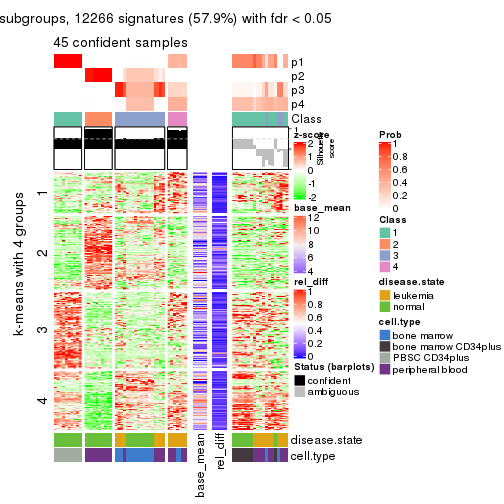
get_signatures(res, k = 5)
get_signatures(res, k = 6)
Signature heatmaps where rows are not scaled:
get_signatures(res, k = 2, scale_rows = FALSE)
get_signatures(res, k = 3, scale_rows = FALSE)
get_signatures(res, k = 4, scale_rows = FALSE)
get_signatures(res, k = 5, scale_rows = FALSE)
get_signatures(res, k = 6, scale_rows = FALSE)
Compare the overlap of signatures from different k:
compare_signatures(res)
get_signature() returns a data frame invisibly. TO get the list of signatures, the function
call should be assigned to a variable explicitly. In following code, if plot argument is set
to FALSE, no heatmap is plotted while only the differential analysis is performed.
# code only for demonstration
tb = get_signature(res, k = ..., plot = FALSE)
An example of the output of tb is:
#> which_row fdr mean_1 mean_2 scaled_mean_1 scaled_mean_2 km
#> 1 38 0.042760348 8.373488 9.131774 -0.5533452 0.5164555 1
#> 2 40 0.018707592 7.106213 8.469186 -0.6173731 0.5762149 1
#> 3 55 0.019134737 10.221463 11.207825 -0.6159697 0.5749050 1
#> 4 59 0.006059896 5.921854 7.869574 -0.6899429 0.6439467 1
#> 5 60 0.018055526 8.928898 10.211722 -0.6204761 0.5791110 1
#> 6 98 0.009384629 15.714769 14.887706 0.6635654 -0.6193277 2
...
The columns in tb are:
which_row: row indices corresponding to the input matrix.fdr: FDR for the differential test. mean_x: The mean value in group x.scaled_mean_x: The mean value in group x after rows are scaled.km: Row groups if k-means clustering is applied to rows.UMAP plot which shows how samples are separated.
dimension_reduction(res, k = 2, method = "UMAP")
dimension_reduction(res, k = 3, method = "UMAP")
dimension_reduction(res, k = 4, method = "UMAP")
dimension_reduction(res, k = 5, method = "UMAP")
dimension_reduction(res, k = 6, method = "UMAP")
Following heatmap shows how subgroups are split when increasing k:
collect_classes(res)
Test correlation between subgroups and known annotations. If the known annotation is numeric, one-way ANOVA test is applied, and if the known annotation is discrete, chi-squared contingency table test is applied.
test_to_known_factors(res)
#> n disease.state(p) cell.type(p) k
#> SD:kmeans 63 2.00e-02 6.81e-04 2
#> SD:kmeans 64 1.70e-02 5.17e-08 3
#> SD:kmeans 45 1.54e-05 8.56e-12 4
#> SD:kmeans 59 4.71e-12 1.48e-14 5
#> SD:kmeans 61 7.55e-12 3.12e-25 6
If matrix rows can be associated to genes, consider to use GO_Enrichment(res,
...) to perform function enrichment for the signature genes.
The object with results only for a single top-value method and a single partition method can be extracted as:
res = res_list["SD", "skmeans"]
# you can also extract it by
# res = res_list["SD:skmeans"]
A summary of res and all the functions that can be applied to it:
res
#> A 'ConsensusPartition' object with k = 2, 3, 4, 5, 6.
#> On a matrix with 21168 rows and 64 columns.
#> Top rows (1000, 2000, 3000, 4000, 5000) are extracted by 'SD' method.
#> Subgroups are detected by 'skmeans' method.
#> Performed in total 1250 partitions by row resampling.
#> Best k for subgroups seems to be 6.
#>
#> Following methods can be applied to this 'ConsensusPartition' object:
#> [1] "cola_report" "collect_classes" "collect_plots"
#> [4] "collect_stats" "colnames" "compare_signatures"
#> [7] "consensus_heatmap" "dimension_reduction" "functional_enrichment"
#> [10] "get_anno_col" "get_anno" "get_classes"
#> [13] "get_consensus" "get_matrix" "get_membership"
#> [16] "get_param" "get_signatures" "get_stats"
#> [19] "is_best_k" "is_stable_k" "membership_heatmap"
#> [22] "ncol" "nrow" "plot_ecdf"
#> [25] "rownames" "select_partition_number" "show"
#> [28] "suggest_best_k" "test_to_known_factors"
collect_plots() function collects all the plots made from res for all k (number of partitions)
into one single page to provide an easy and fast comparison between different k.
collect_plots(res)
The plots are:
k and the heatmap of
predicted classes for each k.k.k.k.All the plots in panels can be made by individual functions and they are plotted later in this section.
select_partition_number() produces several plots showing different
statistics for choosing “optimized” k. There are following statistics:
k;k, the area increased is defined as \(A_k - A_{k-1}\).The detailed explanations of these statistics can be found in the cola vignette.
Generally speaking, lower PAC score, higher mean silhouette score or higher
concordance corresponds to better partition. Rand index and Jaccard index
measure how similar the current partition is compared to partition with k-1.
If they are too similar, we won't accept k is better than k-1.
select_partition_number(res)
The numeric values for all these statistics can be obtained by get_stats().
get_stats(res)
#> k 1-PAC mean_silhouette concordance area_increased Rand Jaccard
#> 2 2 1.000 0.993 0.997 0.5033 0.497 0.497
#> 3 3 0.929 0.936 0.952 0.2225 0.874 0.749
#> 4 4 0.731 0.710 0.859 0.1765 0.818 0.558
#> 5 5 0.741 0.565 0.732 0.1010 0.835 0.465
#> 6 6 0.908 0.877 0.912 0.0509 0.906 0.578
suggest_best_k() suggests the best \(k\) based on these statistics. The rules are as follows:
NA.suggest_best_k(res)
#> [1] 6
#> attr(,"optional")
#> [1] 2 3
There is also optional best \(k\) = 2 3 that is worth to check.
Following shows the table of the partitions (You need to click the show/hide
code output link to see it). The membership matrix (columns with name p*)
is inferred by
clue::cl_consensus()
function with the SE method. Basically the value in the membership matrix
represents the probability to belong to a certain group. The finall class
label for an item is determined with the group with highest probability it
belongs to.
In get_classes() function, the entropy is calculated from the membership
matrix and the silhouette score is calculated from the consensus matrix.
cbind(get_classes(res, k = 2), get_membership(res, k = 2))
#> class entropy silhouette p1 p2
#> GSM239371 1 0.0000 0.999 1.000 0.000
#> GSM239487 2 0.4161 0.912 0.084 0.916
#> GSM239489 1 0.1843 0.971 0.972 0.028
#> GSM239492 1 0.0000 0.999 1.000 0.000
#> GSM239497 2 0.4161 0.912 0.084 0.916
#> GSM239520 2 0.0000 0.994 0.000 1.000
#> GSM240427 1 0.0000 0.999 1.000 0.000
#> GSM239345 1 0.0000 0.999 1.000 0.000
#> GSM239346 2 0.0000 0.994 0.000 1.000
#> GSM239348 1 0.0000 0.999 1.000 0.000
#> GSM239363 2 0.0000 0.994 0.000 1.000
#> GSM239460 2 0.0938 0.983 0.012 0.988
#> GSM239485 1 0.0000 0.999 1.000 0.000
#> GSM239488 2 0.0000 0.994 0.000 1.000
#> GSM239490 1 0.0000 0.999 1.000 0.000
#> GSM239491 1 0.0000 0.999 1.000 0.000
#> GSM239493 1 0.0000 0.999 1.000 0.000
#> GSM239494 1 0.0000 0.999 1.000 0.000
#> GSM239495 1 0.0000 0.999 1.000 0.000
#> GSM239496 1 0.0000 0.999 1.000 0.000
#> GSM239498 2 0.0000 0.994 0.000 1.000
#> GSM239516 2 0.0000 0.994 0.000 1.000
#> GSM239580 1 0.0000 0.999 1.000 0.000
#> GSM240405 1 0.0000 0.999 1.000 0.000
#> GSM240406 1 0.0000 0.999 1.000 0.000
#> GSM240429 1 0.0000 0.999 1.000 0.000
#> GSM239323 2 0.0000 0.994 0.000 1.000
#> GSM239324 2 0.0000 0.994 0.000 1.000
#> GSM239326 2 0.0000 0.994 0.000 1.000
#> GSM239328 2 0.0000 0.994 0.000 1.000
#> GSM239329 2 0.0000 0.994 0.000 1.000
#> GSM239331 2 0.0000 0.994 0.000 1.000
#> GSM239332 2 0.0000 0.994 0.000 1.000
#> GSM239333 2 0.0000 0.994 0.000 1.000
#> GSM239334 2 0.0000 0.994 0.000 1.000
#> GSM239335 2 0.0000 0.994 0.000 1.000
#> GSM240430 2 0.0000 0.994 0.000 1.000
#> GSM240431 2 0.0000 0.994 0.000 1.000
#> GSM240432 2 0.0000 0.994 0.000 1.000
#> GSM240433 2 0.0000 0.994 0.000 1.000
#> GSM240494 2 0.0000 0.994 0.000 1.000
#> GSM240495 2 0.0000 0.994 0.000 1.000
#> GSM240496 2 0.0000 0.994 0.000 1.000
#> GSM240497 2 0.0000 0.994 0.000 1.000
#> GSM240498 2 0.0000 0.994 0.000 1.000
#> GSM240499 2 0.0000 0.994 0.000 1.000
#> GSM239170 1 0.0000 0.999 1.000 0.000
#> GSM239338 1 0.0000 0.999 1.000 0.000
#> GSM239339 1 0.0000 0.999 1.000 0.000
#> GSM239340 1 0.0000 0.999 1.000 0.000
#> GSM239341 1 0.0000 0.999 1.000 0.000
#> GSM239342 1 0.0000 0.999 1.000 0.000
#> GSM239343 1 0.0000 0.999 1.000 0.000
#> GSM239344 1 0.0000 0.999 1.000 0.000
#> GSM240500 1 0.0000 0.999 1.000 0.000
#> GSM240501 1 0.0000 0.999 1.000 0.000
#> GSM240502 1 0.0000 0.999 1.000 0.000
#> GSM240503 1 0.0000 0.999 1.000 0.000
#> GSM240504 1 0.0000 0.999 1.000 0.000
#> GSM240505 1 0.0000 0.999 1.000 0.000
#> GSM240506 1 0.0000 0.999 1.000 0.000
#> GSM240507 1 0.0000 0.999 1.000 0.000
#> GSM240508 1 0.0000 0.999 1.000 0.000
#> GSM240509 1 0.0000 0.999 1.000 0.000
cbind(get_classes(res, k = 3), get_membership(res, k = 3))
#> class entropy silhouette p1 p2 p3
#> GSM239371 1 0.0747 0.981 0.984 0.000 0.016
#> GSM239487 3 0.6651 0.603 0.020 0.340 0.640
#> GSM239489 3 0.6407 0.696 0.160 0.080 0.760
#> GSM239492 1 0.0747 0.981 0.984 0.000 0.016
#> GSM239497 3 0.6651 0.603 0.020 0.340 0.640
#> GSM239520 3 0.6318 0.600 0.008 0.356 0.636
#> GSM240427 1 0.3272 0.906 0.904 0.080 0.016
#> GSM239345 1 0.0892 0.983 0.980 0.000 0.020
#> GSM239346 2 0.0000 0.929 0.000 1.000 0.000
#> GSM239348 1 0.0747 0.981 0.984 0.000 0.016
#> GSM239363 2 0.0237 0.925 0.000 0.996 0.004
#> GSM239460 2 0.1781 0.889 0.020 0.960 0.020
#> GSM239485 1 0.0592 0.983 0.988 0.000 0.012
#> GSM239488 2 0.0000 0.929 0.000 1.000 0.000
#> GSM239490 1 0.0424 0.984 0.992 0.000 0.008
#> GSM239491 1 0.0592 0.983 0.988 0.000 0.012
#> GSM239493 1 0.0747 0.981 0.984 0.000 0.016
#> GSM239494 1 0.0747 0.981 0.984 0.000 0.016
#> GSM239495 1 0.0747 0.981 0.984 0.000 0.016
#> GSM239496 1 0.0592 0.983 0.988 0.000 0.012
#> GSM239498 2 0.0000 0.929 0.000 1.000 0.000
#> GSM239516 2 0.0000 0.929 0.000 1.000 0.000
#> GSM239580 1 0.1411 0.981 0.964 0.000 0.036
#> GSM240405 1 0.0892 0.983 0.980 0.000 0.020
#> GSM240406 1 0.0747 0.981 0.984 0.000 0.016
#> GSM240429 1 0.0892 0.983 0.980 0.000 0.020
#> GSM239323 3 0.1411 0.897 0.000 0.036 0.964
#> GSM239324 3 0.1411 0.897 0.000 0.036 0.964
#> GSM239326 3 0.1411 0.897 0.000 0.036 0.964
#> GSM239328 3 0.1411 0.897 0.000 0.036 0.964
#> GSM239329 3 0.1411 0.897 0.000 0.036 0.964
#> GSM239331 3 0.1411 0.897 0.000 0.036 0.964
#> GSM239332 3 0.1411 0.897 0.000 0.036 0.964
#> GSM239333 3 0.1411 0.897 0.000 0.036 0.964
#> GSM239334 3 0.1411 0.897 0.000 0.036 0.964
#> GSM239335 3 0.1411 0.897 0.000 0.036 0.964
#> GSM240430 2 0.2537 0.956 0.000 0.920 0.080
#> GSM240431 2 0.2537 0.956 0.000 0.920 0.080
#> GSM240432 2 0.2537 0.956 0.000 0.920 0.080
#> GSM240433 2 0.2537 0.956 0.000 0.920 0.080
#> GSM240494 2 0.2537 0.956 0.000 0.920 0.080
#> GSM240495 2 0.2537 0.956 0.000 0.920 0.080
#> GSM240496 2 0.2537 0.956 0.000 0.920 0.080
#> GSM240497 2 0.2537 0.956 0.000 0.920 0.080
#> GSM240498 2 0.2537 0.956 0.000 0.920 0.080
#> GSM240499 2 0.2537 0.956 0.000 0.920 0.080
#> GSM239170 1 0.0000 0.985 1.000 0.000 0.000
#> GSM239338 1 0.0000 0.985 1.000 0.000 0.000
#> GSM239339 1 0.0000 0.985 1.000 0.000 0.000
#> GSM239340 1 0.0000 0.985 1.000 0.000 0.000
#> GSM239341 1 0.0000 0.985 1.000 0.000 0.000
#> GSM239342 1 0.0000 0.985 1.000 0.000 0.000
#> GSM239343 1 0.0000 0.985 1.000 0.000 0.000
#> GSM239344 1 0.0000 0.985 1.000 0.000 0.000
#> GSM240500 1 0.0892 0.983 0.980 0.000 0.020
#> GSM240501 1 0.0892 0.983 0.980 0.000 0.020
#> GSM240502 1 0.0892 0.983 0.980 0.000 0.020
#> GSM240503 1 0.0892 0.983 0.980 0.000 0.020
#> GSM240504 1 0.0892 0.983 0.980 0.000 0.020
#> GSM240505 1 0.0892 0.983 0.980 0.000 0.020
#> GSM240506 1 0.0892 0.983 0.980 0.000 0.020
#> GSM240507 1 0.0892 0.983 0.980 0.000 0.020
#> GSM240508 1 0.0892 0.983 0.980 0.000 0.020
#> GSM240509 1 0.0892 0.983 0.980 0.000 0.020
cbind(get_classes(res, k = 4), get_membership(res, k = 4))
#> class entropy silhouette p1 p2 p3 p4
#> GSM239371 4 0.4134 0.6264 0.260 0.000 0.000 0.740
#> GSM239487 4 0.0707 0.6306 0.000 0.020 0.000 0.980
#> GSM239489 4 0.0336 0.6320 0.000 0.008 0.000 0.992
#> GSM239492 4 0.3907 0.6209 0.232 0.000 0.000 0.768
#> GSM239497 4 0.0707 0.6306 0.000 0.020 0.000 0.980
#> GSM239520 4 0.6181 0.2134 0.000 0.204 0.128 0.668
#> GSM240427 4 0.0000 0.6337 0.000 0.000 0.000 1.000
#> GSM239345 1 0.0000 0.7441 1.000 0.000 0.000 0.000
#> GSM239346 2 0.3801 0.8358 0.000 0.780 0.000 0.220
#> GSM239348 4 0.3907 0.6284 0.232 0.000 0.000 0.768
#> GSM239363 2 0.3873 0.8310 0.000 0.772 0.000 0.228
#> GSM239460 4 0.0707 0.6311 0.000 0.020 0.000 0.980
#> GSM239485 4 0.5000 0.2555 0.500 0.000 0.000 0.500
#> GSM239488 2 0.3873 0.8310 0.000 0.772 0.000 0.228
#> GSM239490 1 0.4866 0.0644 0.596 0.000 0.000 0.404
#> GSM239491 4 0.4996 0.3157 0.484 0.000 0.000 0.516
#> GSM239493 4 0.4730 0.5763 0.364 0.000 0.000 0.636
#> GSM239494 4 0.4713 0.5813 0.360 0.000 0.000 0.640
#> GSM239495 4 0.4543 0.6066 0.324 0.000 0.000 0.676
#> GSM239496 4 0.4961 0.4178 0.448 0.000 0.000 0.552
#> GSM239498 2 0.3873 0.8310 0.000 0.772 0.000 0.228
#> GSM239516 2 0.3801 0.8358 0.000 0.780 0.000 0.220
#> GSM239580 1 0.4855 -0.1138 0.600 0.000 0.000 0.400
#> GSM240405 1 0.0000 0.7441 1.000 0.000 0.000 0.000
#> GSM240406 4 0.4713 0.5813 0.360 0.000 0.000 0.640
#> GSM240429 1 0.1211 0.7081 0.960 0.000 0.000 0.040
#> GSM239323 3 0.0000 1.0000 0.000 0.000 1.000 0.000
#> GSM239324 3 0.0000 1.0000 0.000 0.000 1.000 0.000
#> GSM239326 3 0.0000 1.0000 0.000 0.000 1.000 0.000
#> GSM239328 3 0.0000 1.0000 0.000 0.000 1.000 0.000
#> GSM239329 3 0.0000 1.0000 0.000 0.000 1.000 0.000
#> GSM239331 3 0.0000 1.0000 0.000 0.000 1.000 0.000
#> GSM239332 3 0.0000 1.0000 0.000 0.000 1.000 0.000
#> GSM239333 3 0.0000 1.0000 0.000 0.000 1.000 0.000
#> GSM239334 3 0.0000 1.0000 0.000 0.000 1.000 0.000
#> GSM239335 3 0.0000 1.0000 0.000 0.000 1.000 0.000
#> GSM240430 2 0.0336 0.9203 0.000 0.992 0.008 0.000
#> GSM240431 2 0.0336 0.9203 0.000 0.992 0.008 0.000
#> GSM240432 2 0.0336 0.9203 0.000 0.992 0.008 0.000
#> GSM240433 2 0.0336 0.9203 0.000 0.992 0.008 0.000
#> GSM240494 2 0.0336 0.9203 0.000 0.992 0.008 0.000
#> GSM240495 2 0.0336 0.9203 0.000 0.992 0.008 0.000
#> GSM240496 2 0.0336 0.9203 0.000 0.992 0.008 0.000
#> GSM240497 2 0.0336 0.9203 0.000 0.992 0.008 0.000
#> GSM240498 2 0.0336 0.9203 0.000 0.992 0.008 0.000
#> GSM240499 2 0.0336 0.9203 0.000 0.992 0.008 0.000
#> GSM239170 1 0.4746 0.4868 0.632 0.000 0.000 0.368
#> GSM239338 1 0.4746 0.4868 0.632 0.000 0.000 0.368
#> GSM239339 1 0.4746 0.4868 0.632 0.000 0.000 0.368
#> GSM239340 1 0.4746 0.4868 0.632 0.000 0.000 0.368
#> GSM239341 1 0.4746 0.4868 0.632 0.000 0.000 0.368
#> GSM239342 1 0.4746 0.4868 0.632 0.000 0.000 0.368
#> GSM239343 1 0.4746 0.4868 0.632 0.000 0.000 0.368
#> GSM239344 1 0.4746 0.4868 0.632 0.000 0.000 0.368
#> GSM240500 1 0.0000 0.7441 1.000 0.000 0.000 0.000
#> GSM240501 1 0.0000 0.7441 1.000 0.000 0.000 0.000
#> GSM240502 1 0.0000 0.7441 1.000 0.000 0.000 0.000
#> GSM240503 1 0.0000 0.7441 1.000 0.000 0.000 0.000
#> GSM240504 1 0.0000 0.7441 1.000 0.000 0.000 0.000
#> GSM240505 1 0.0000 0.7441 1.000 0.000 0.000 0.000
#> GSM240506 1 0.0000 0.7441 1.000 0.000 0.000 0.000
#> GSM240507 1 0.0000 0.7441 1.000 0.000 0.000 0.000
#> GSM240508 1 0.0000 0.7441 1.000 0.000 0.000 0.000
#> GSM240509 1 0.0000 0.7441 1.000 0.000 0.000 0.000
cbind(get_classes(res, k = 5), get_membership(res, k = 5))
#> class entropy silhouette p1 p2 p3 p4 p5
#> GSM239371 5 0.528 0.163 0.048 0.000 0 0.436 0.516
#> GSM239487 4 0.417 0.265 0.000 0.000 0 0.604 0.396
#> GSM239489 4 0.304 0.314 0.000 0.000 0 0.808 0.192
#> GSM239492 5 0.143 0.298 0.004 0.000 0 0.052 0.944
#> GSM239497 4 0.417 0.265 0.000 0.000 0 0.604 0.396
#> GSM239520 4 0.417 0.265 0.000 0.000 0 0.604 0.396
#> GSM240427 5 0.260 0.233 0.000 0.000 0 0.148 0.852
#> GSM239345 1 0.265 0.747 0.848 0.000 0 0.000 0.152
#> GSM239346 2 0.431 0.180 0.000 0.504 0 0.496 0.000
#> GSM239348 5 0.528 0.162 0.048 0.000 0 0.440 0.512
#> GSM239363 4 0.426 -0.180 0.000 0.440 0 0.560 0.000
#> GSM239460 4 0.029 0.297 0.000 0.000 0 0.992 0.008
#> GSM239485 4 0.672 -0.145 0.256 0.000 0 0.404 0.340
#> GSM239488 4 0.428 -0.207 0.000 0.456 0 0.544 0.000
#> GSM239490 4 0.677 -0.142 0.296 0.000 0 0.396 0.308
#> GSM239491 4 0.674 -0.154 0.268 0.000 0 0.404 0.328
#> GSM239493 5 0.600 0.119 0.112 0.000 0 0.436 0.452
#> GSM239494 5 0.589 0.130 0.100 0.000 0 0.436 0.464
#> GSM239495 5 0.539 0.160 0.056 0.000 0 0.436 0.508
#> GSM239496 4 0.655 -0.172 0.200 0.000 0 0.404 0.396
#> GSM239498 4 0.428 -0.207 0.000 0.456 0 0.544 0.000
#> GSM239516 2 0.431 0.172 0.000 0.500 0 0.500 0.000
#> GSM239580 1 0.649 0.131 0.468 0.000 0 0.204 0.328
#> GSM240405 1 0.104 0.866 0.960 0.000 0 0.000 0.040
#> GSM240406 5 0.600 0.119 0.112 0.000 0 0.436 0.452
#> GSM240429 1 0.327 0.661 0.780 0.000 0 0.000 0.220
#> GSM239323 3 0.000 1.000 0.000 0.000 1 0.000 0.000
#> GSM239324 3 0.000 1.000 0.000 0.000 1 0.000 0.000
#> GSM239326 3 0.000 1.000 0.000 0.000 1 0.000 0.000
#> GSM239328 3 0.000 1.000 0.000 0.000 1 0.000 0.000
#> GSM239329 3 0.000 1.000 0.000 0.000 1 0.000 0.000
#> GSM239331 3 0.000 1.000 0.000 0.000 1 0.000 0.000
#> GSM239332 3 0.000 1.000 0.000 0.000 1 0.000 0.000
#> GSM239333 3 0.000 1.000 0.000 0.000 1 0.000 0.000
#> GSM239334 3 0.000 1.000 0.000 0.000 1 0.000 0.000
#> GSM239335 3 0.000 1.000 0.000 0.000 1 0.000 0.000
#> GSM240430 2 0.000 0.892 0.000 1.000 0 0.000 0.000
#> GSM240431 2 0.000 0.892 0.000 1.000 0 0.000 0.000
#> GSM240432 2 0.000 0.892 0.000 1.000 0 0.000 0.000
#> GSM240433 2 0.000 0.892 0.000 1.000 0 0.000 0.000
#> GSM240494 2 0.000 0.892 0.000 1.000 0 0.000 0.000
#> GSM240495 2 0.000 0.892 0.000 1.000 0 0.000 0.000
#> GSM240496 2 0.000 0.892 0.000 1.000 0 0.000 0.000
#> GSM240497 2 0.000 0.892 0.000 1.000 0 0.000 0.000
#> GSM240498 2 0.000 0.892 0.000 1.000 0 0.000 0.000
#> GSM240499 2 0.000 0.892 0.000 1.000 0 0.000 0.000
#> GSM239170 5 0.398 0.486 0.340 0.000 0 0.000 0.660
#> GSM239338 5 0.398 0.486 0.340 0.000 0 0.000 0.660
#> GSM239339 5 0.398 0.486 0.340 0.000 0 0.000 0.660
#> GSM239340 5 0.398 0.486 0.340 0.000 0 0.000 0.660
#> GSM239341 5 0.398 0.486 0.340 0.000 0 0.000 0.660
#> GSM239342 5 0.398 0.486 0.340 0.000 0 0.000 0.660
#> GSM239343 5 0.398 0.486 0.340 0.000 0 0.000 0.660
#> GSM239344 5 0.398 0.486 0.340 0.000 0 0.000 0.660
#> GSM240500 1 0.000 0.899 1.000 0.000 0 0.000 0.000
#> GSM240501 1 0.000 0.899 1.000 0.000 0 0.000 0.000
#> GSM240502 1 0.000 0.899 1.000 0.000 0 0.000 0.000
#> GSM240503 1 0.000 0.899 1.000 0.000 0 0.000 0.000
#> GSM240504 1 0.000 0.899 1.000 0.000 0 0.000 0.000
#> GSM240505 1 0.000 0.899 1.000 0.000 0 0.000 0.000
#> GSM240506 1 0.000 0.899 1.000 0.000 0 0.000 0.000
#> GSM240507 1 0.000 0.899 1.000 0.000 0 0.000 0.000
#> GSM240508 1 0.000 0.899 1.000 0.000 0 0.000 0.000
#> GSM240509 1 0.000 0.899 1.000 0.000 0 0.000 0.000
cbind(get_classes(res, k = 6), get_membership(res, k = 6))
#> class entropy silhouette p1 p2 p3 p4 p5 p6
#> GSM239371 4 0.0922 0.7675 0.004 0.000 0.000 0.968 0.004 0.024
#> GSM239487 6 0.1462 0.8115 0.000 0.000 0.000 0.008 0.056 0.936
#> GSM239489 6 0.2325 0.7809 0.000 0.000 0.000 0.048 0.060 0.892
#> GSM239492 4 0.4948 0.0389 0.000 0.000 0.000 0.476 0.460 0.064
#> GSM239497 6 0.1462 0.8115 0.000 0.000 0.000 0.008 0.056 0.936
#> GSM239520 6 0.1462 0.8115 0.000 0.000 0.000 0.008 0.056 0.936
#> GSM240427 4 0.6031 0.1243 0.000 0.000 0.000 0.404 0.344 0.252
#> GSM239345 1 0.1528 0.9097 0.936 0.000 0.000 0.048 0.016 0.000
#> GSM239346 6 0.3288 0.7230 0.000 0.276 0.000 0.000 0.000 0.724
#> GSM239348 4 0.1951 0.7505 0.004 0.000 0.000 0.916 0.060 0.020
#> GSM239363 6 0.1765 0.8280 0.000 0.096 0.000 0.000 0.000 0.904
#> GSM239460 6 0.3964 0.5843 0.000 0.000 0.000 0.232 0.044 0.724
#> GSM239485 4 0.4763 0.6659 0.216 0.000 0.000 0.692 0.072 0.020
#> GSM239488 6 0.2823 0.7922 0.000 0.204 0.000 0.000 0.000 0.796
#> GSM239490 4 0.4917 0.6134 0.260 0.000 0.000 0.656 0.064 0.020
#> GSM239491 4 0.4557 0.6977 0.180 0.000 0.000 0.724 0.076 0.020
#> GSM239493 4 0.0891 0.7674 0.008 0.000 0.000 0.968 0.000 0.024
#> GSM239494 4 0.0922 0.7675 0.004 0.000 0.000 0.968 0.004 0.024
#> GSM239495 4 0.0922 0.7675 0.004 0.000 0.000 0.968 0.004 0.024
#> GSM239496 4 0.4377 0.7065 0.164 0.000 0.000 0.744 0.072 0.020
#> GSM239498 6 0.2730 0.7994 0.000 0.192 0.000 0.000 0.000 0.808
#> GSM239516 6 0.3244 0.7328 0.000 0.268 0.000 0.000 0.000 0.732
#> GSM239580 4 0.3279 0.6765 0.176 0.000 0.000 0.796 0.000 0.028
#> GSM240405 1 0.0603 0.9543 0.980 0.000 0.000 0.004 0.016 0.000
#> GSM240406 4 0.0717 0.7679 0.008 0.000 0.000 0.976 0.000 0.016
#> GSM240429 1 0.2738 0.7605 0.820 0.000 0.000 0.176 0.004 0.000
#> GSM239323 3 0.0000 0.9986 0.000 0.000 1.000 0.000 0.000 0.000
#> GSM239324 3 0.0000 0.9986 0.000 0.000 1.000 0.000 0.000 0.000
#> GSM239326 3 0.0000 0.9986 0.000 0.000 1.000 0.000 0.000 0.000
#> GSM239328 3 0.0000 0.9986 0.000 0.000 1.000 0.000 0.000 0.000
#> GSM239329 3 0.0146 0.9980 0.000 0.000 0.996 0.000 0.000 0.004
#> GSM239331 3 0.0146 0.9980 0.000 0.000 0.996 0.000 0.000 0.004
#> GSM239332 3 0.0146 0.9980 0.000 0.000 0.996 0.000 0.000 0.004
#> GSM239333 3 0.0146 0.9980 0.000 0.000 0.996 0.000 0.000 0.004
#> GSM239334 3 0.0000 0.9986 0.000 0.000 1.000 0.000 0.000 0.000
#> GSM239335 3 0.0000 0.9986 0.000 0.000 1.000 0.000 0.000 0.000
#> GSM240430 2 0.0000 1.0000 0.000 1.000 0.000 0.000 0.000 0.000
#> GSM240431 2 0.0000 1.0000 0.000 1.000 0.000 0.000 0.000 0.000
#> GSM240432 2 0.0000 1.0000 0.000 1.000 0.000 0.000 0.000 0.000
#> GSM240433 2 0.0000 1.0000 0.000 1.000 0.000 0.000 0.000 0.000
#> GSM240494 2 0.0000 1.0000 0.000 1.000 0.000 0.000 0.000 0.000
#> GSM240495 2 0.0000 1.0000 0.000 1.000 0.000 0.000 0.000 0.000
#> GSM240496 2 0.0000 1.0000 0.000 1.000 0.000 0.000 0.000 0.000
#> GSM240497 2 0.0000 1.0000 0.000 1.000 0.000 0.000 0.000 0.000
#> GSM240498 2 0.0000 1.0000 0.000 1.000 0.000 0.000 0.000 0.000
#> GSM240499 2 0.0000 1.0000 0.000 1.000 0.000 0.000 0.000 0.000
#> GSM239170 5 0.1970 1.0000 0.092 0.000 0.000 0.008 0.900 0.000
#> GSM239338 5 0.1970 1.0000 0.092 0.000 0.000 0.008 0.900 0.000
#> GSM239339 5 0.1970 1.0000 0.092 0.000 0.000 0.008 0.900 0.000
#> GSM239340 5 0.1970 1.0000 0.092 0.000 0.000 0.008 0.900 0.000
#> GSM239341 5 0.1970 1.0000 0.092 0.000 0.000 0.008 0.900 0.000
#> GSM239342 5 0.1970 1.0000 0.092 0.000 0.000 0.008 0.900 0.000
#> GSM239343 5 0.1970 1.0000 0.092 0.000 0.000 0.008 0.900 0.000
#> GSM239344 5 0.1970 1.0000 0.092 0.000 0.000 0.008 0.900 0.000
#> GSM240500 1 0.0146 0.9728 0.996 0.000 0.000 0.000 0.004 0.000
#> GSM240501 1 0.0146 0.9728 0.996 0.000 0.000 0.000 0.004 0.000
#> GSM240502 1 0.0146 0.9728 0.996 0.000 0.000 0.000 0.004 0.000
#> GSM240503 1 0.0000 0.9703 1.000 0.000 0.000 0.000 0.000 0.000
#> GSM240504 1 0.0146 0.9728 0.996 0.000 0.000 0.000 0.004 0.000
#> GSM240505 1 0.0146 0.9728 0.996 0.000 0.000 0.000 0.004 0.000
#> GSM240506 1 0.0146 0.9728 0.996 0.000 0.000 0.000 0.004 0.000
#> GSM240507 1 0.0146 0.9728 0.996 0.000 0.000 0.000 0.004 0.000
#> GSM240508 1 0.0146 0.9728 0.996 0.000 0.000 0.000 0.004 0.000
#> GSM240509 1 0.0146 0.9728 0.996 0.000 0.000 0.000 0.004 0.000
Heatmaps for the consensus matrix. It visualizes the probability of two samples to be in a same group.
consensus_heatmap(res, k = 2)
consensus_heatmap(res, k = 3)
consensus_heatmap(res, k = 4)
consensus_heatmap(res, k = 5)
consensus_heatmap(res, k = 6)
Heatmaps for the membership of samples in all partitions to see how consistent they are:
membership_heatmap(res, k = 2)
membership_heatmap(res, k = 3)
membership_heatmap(res, k = 4)
membership_heatmap(res, k = 5)
membership_heatmap(res, k = 6)
As soon as we have had the classes for columns, we can look for signatures which are significantly different between classes which can be candidate marks for certain classes. Following are the heatmaps for signatures.
Signature heatmaps where rows are scaled:
get_signatures(res, k = 2)

get_signatures(res, k = 3)
get_signatures(res, k = 4)
get_signatures(res, k = 5)
get_signatures(res, k = 6)
Signature heatmaps where rows are not scaled:
get_signatures(res, k = 2, scale_rows = FALSE)
get_signatures(res, k = 3, scale_rows = FALSE)
get_signatures(res, k = 4, scale_rows = FALSE)
get_signatures(res, k = 5, scale_rows = FALSE)
get_signatures(res, k = 6, scale_rows = FALSE)
Compare the overlap of signatures from different k:
compare_signatures(res)
get_signature() returns a data frame invisibly. TO get the list of signatures, the function
call should be assigned to a variable explicitly. In following code, if plot argument is set
to FALSE, no heatmap is plotted while only the differential analysis is performed.
# code only for demonstration
tb = get_signature(res, k = ..., plot = FALSE)
An example of the output of tb is:
#> which_row fdr mean_1 mean_2 scaled_mean_1 scaled_mean_2 km
#> 1 38 0.042760348 8.373488 9.131774 -0.5533452 0.5164555 1
#> 2 40 0.018707592 7.106213 8.469186 -0.6173731 0.5762149 1
#> 3 55 0.019134737 10.221463 11.207825 -0.6159697 0.5749050 1
#> 4 59 0.006059896 5.921854 7.869574 -0.6899429 0.6439467 1
#> 5 60 0.018055526 8.928898 10.211722 -0.6204761 0.5791110 1
#> 6 98 0.009384629 15.714769 14.887706 0.6635654 -0.6193277 2
...
The columns in tb are:
which_row: row indices corresponding to the input matrix.fdr: FDR for the differential test. mean_x: The mean value in group x.scaled_mean_x: The mean value in group x after rows are scaled.km: Row groups if k-means clustering is applied to rows.UMAP plot which shows how samples are separated.
dimension_reduction(res, k = 2, method = "UMAP")
dimension_reduction(res, k = 3, method = "UMAP")
dimension_reduction(res, k = 4, method = "UMAP")
dimension_reduction(res, k = 5, method = "UMAP")
dimension_reduction(res, k = 6, method = "UMAP")
Following heatmap shows how subgroups are split when increasing k:
collect_classes(res)
Test correlation between subgroups and known annotations. If the known annotation is numeric, one-way ANOVA test is applied, and if the known annotation is discrete, chi-squared contingency table test is applied.
test_to_known_factors(res)
#> n disease.state(p) cell.type(p) k
#> SD:skmeans 64 2.43e-01 4.64e-05 2
#> SD:skmeans 64 4.74e-01 4.36e-13 3
#> SD:skmeans 50 7.51e-06 1.04e-12 4
#> SD:skmeans 33 7.90e-02 1.07e-10 5
#> SD:skmeans 62 4.74e-10 1.49e-23 6
If matrix rows can be associated to genes, consider to use GO_Enrichment(res,
...) to perform function enrichment for the signature genes.
The object with results only for a single top-value method and a single partition method can be extracted as:
res = res_list["SD", "pam"]
# you can also extract it by
# res = res_list["SD:pam"]
A summary of res and all the functions that can be applied to it:
res
#> A 'ConsensusPartition' object with k = 2, 3, 4, 5, 6.
#> On a matrix with 21168 rows and 64 columns.
#> Top rows (1000, 2000, 3000, 4000, 5000) are extracted by 'SD' method.
#> Subgroups are detected by 'pam' method.
#> Performed in total 1250 partitions by row resampling.
#> Best k for subgroups seems to be 6.
#>
#> Following methods can be applied to this 'ConsensusPartition' object:
#> [1] "cola_report" "collect_classes" "collect_plots"
#> [4] "collect_stats" "colnames" "compare_signatures"
#> [7] "consensus_heatmap" "dimension_reduction" "functional_enrichment"
#> [10] "get_anno_col" "get_anno" "get_classes"
#> [13] "get_consensus" "get_matrix" "get_membership"
#> [16] "get_param" "get_signatures" "get_stats"
#> [19] "is_best_k" "is_stable_k" "membership_heatmap"
#> [22] "ncol" "nrow" "plot_ecdf"
#> [25] "rownames" "select_partition_number" "show"
#> [28] "suggest_best_k" "test_to_known_factors"
collect_plots() function collects all the plots made from res for all k (number of partitions)
into one single page to provide an easy and fast comparison between different k.
collect_plots(res)
The plots are:
k and the heatmap of
predicted classes for each k.k.k.k.All the plots in panels can be made by individual functions and they are plotted later in this section.
select_partition_number() produces several plots showing different
statistics for choosing “optimized” k. There are following statistics:
k;k, the area increased is defined as \(A_k - A_{k-1}\).The detailed explanations of these statistics can be found in the cola vignette.
Generally speaking, lower PAC score, higher mean silhouette score or higher
concordance corresponds to better partition. Rand index and Jaccard index
measure how similar the current partition is compared to partition with k-1.
If they are too similar, we won't accept k is better than k-1.
select_partition_number(res)
The numeric values for all these statistics can be obtained by get_stats().
get_stats(res)
#> k 1-PAC mean_silhouette concordance area_increased Rand Jaccard
#> 2 2 1.000 0.989 0.993 0.5053 0.493 0.493
#> 3 3 1.000 0.967 0.984 0.2157 0.896 0.789
#> 4 4 0.769 0.911 0.923 0.1988 0.807 0.535
#> 5 5 0.857 0.774 0.868 0.0779 0.924 0.711
#> 6 6 1.000 0.967 0.985 0.0574 0.916 0.623
suggest_best_k() suggests the best \(k\) based on these statistics. The rules are as follows:
NA.suggest_best_k(res)
#> [1] 6
#> attr(,"optional")
#> [1] 2 3
There is also optional best \(k\) = 2 3 that is worth to check.
Following shows the table of the partitions (You need to click the show/hide
code output link to see it). The membership matrix (columns with name p*)
is inferred by
clue::cl_consensus()
function with the SE method. Basically the value in the membership matrix
represents the probability to belong to a certain group. The finall class
label for an item is determined with the group with highest probability it
belongs to.
In get_classes() function, the entropy is calculated from the membership
matrix and the silhouette score is calculated from the consensus matrix.
cbind(get_classes(res, k = 2), get_membership(res, k = 2))
#> class entropy silhouette p1 p2
#> GSM239371 1 0.0000 1.000 1.000 0.000
#> GSM239487 2 0.1414 0.983 0.020 0.980
#> GSM239489 2 0.1414 0.983 0.020 0.980
#> GSM239492 1 0.0000 1.000 1.000 0.000
#> GSM239497 2 0.1414 0.983 0.020 0.980
#> GSM239520 2 0.1414 0.983 0.020 0.980
#> GSM240427 2 0.5629 0.866 0.132 0.868
#> GSM239345 1 0.0000 1.000 1.000 0.000
#> GSM239346 2 0.0000 0.985 0.000 1.000
#> GSM239348 1 0.0000 1.000 1.000 0.000
#> GSM239363 2 0.0000 0.985 0.000 1.000
#> GSM239460 2 0.4161 0.923 0.084 0.916
#> GSM239485 1 0.0000 1.000 1.000 0.000
#> GSM239488 2 0.0000 0.985 0.000 1.000
#> GSM239490 1 0.0000 1.000 1.000 0.000
#> GSM239491 1 0.0000 1.000 1.000 0.000
#> GSM239493 1 0.0000 1.000 1.000 0.000
#> GSM239494 1 0.0000 1.000 1.000 0.000
#> GSM239495 1 0.0000 1.000 1.000 0.000
#> GSM239496 1 0.0000 1.000 1.000 0.000
#> GSM239498 2 0.0000 0.985 0.000 1.000
#> GSM239516 2 0.0000 0.985 0.000 1.000
#> GSM239580 1 0.0000 1.000 1.000 0.000
#> GSM240405 1 0.0000 1.000 1.000 0.000
#> GSM240406 1 0.0000 1.000 1.000 0.000
#> GSM240429 1 0.0000 1.000 1.000 0.000
#> GSM239323 2 0.1414 0.983 0.020 0.980
#> GSM239324 2 0.1414 0.983 0.020 0.980
#> GSM239326 2 0.0672 0.984 0.008 0.992
#> GSM239328 2 0.1414 0.983 0.020 0.980
#> GSM239329 2 0.1414 0.983 0.020 0.980
#> GSM239331 2 0.1414 0.983 0.020 0.980
#> GSM239332 2 0.1414 0.983 0.020 0.980
#> GSM239333 2 0.0376 0.985 0.004 0.996
#> GSM239334 2 0.1414 0.983 0.020 0.980
#> GSM239335 2 0.1414 0.983 0.020 0.980
#> GSM240430 2 0.0000 0.985 0.000 1.000
#> GSM240431 2 0.0000 0.985 0.000 1.000
#> GSM240432 2 0.0000 0.985 0.000 1.000
#> GSM240433 2 0.0000 0.985 0.000 1.000
#> GSM240494 2 0.0000 0.985 0.000 1.000
#> GSM240495 2 0.0000 0.985 0.000 1.000
#> GSM240496 2 0.0000 0.985 0.000 1.000
#> GSM240497 2 0.0000 0.985 0.000 1.000
#> GSM240498 2 0.0000 0.985 0.000 1.000
#> GSM240499 2 0.0000 0.985 0.000 1.000
#> GSM239170 1 0.0000 1.000 1.000 0.000
#> GSM239338 1 0.0000 1.000 1.000 0.000
#> GSM239339 1 0.0000 1.000 1.000 0.000
#> GSM239340 1 0.0000 1.000 1.000 0.000
#> GSM239341 1 0.0000 1.000 1.000 0.000
#> GSM239342 1 0.0000 1.000 1.000 0.000
#> GSM239343 1 0.0000 1.000 1.000 0.000
#> GSM239344 1 0.0000 1.000 1.000 0.000
#> GSM240500 1 0.0000 1.000 1.000 0.000
#> GSM240501 1 0.0000 1.000 1.000 0.000
#> GSM240502 1 0.0000 1.000 1.000 0.000
#> GSM240503 1 0.0000 1.000 1.000 0.000
#> GSM240504 1 0.0000 1.000 1.000 0.000
#> GSM240505 1 0.0000 1.000 1.000 0.000
#> GSM240506 1 0.0000 1.000 1.000 0.000
#> GSM240507 1 0.0000 1.000 1.000 0.000
#> GSM240508 1 0.0000 1.000 1.000 0.000
#> GSM240509 1 0.0000 1.000 1.000 0.000
cbind(get_classes(res, k = 3), get_membership(res, k = 3))
#> class entropy silhouette p1 p2 p3
#> GSM239371 1 0.000 1.000 1.000 0.000 0.000
#> GSM239487 3 0.000 0.947 0.000 0.000 1.000
#> GSM239489 3 0.000 0.947 0.000 0.000 1.000
#> GSM239492 1 0.000 1.000 1.000 0.000 0.000
#> GSM239497 3 0.000 0.947 0.000 0.000 1.000
#> GSM239520 3 0.000 0.947 0.000 0.000 1.000
#> GSM240427 3 0.245 0.875 0.076 0.000 0.924
#> GSM239345 1 0.000 1.000 1.000 0.000 0.000
#> GSM239346 3 0.440 0.781 0.000 0.188 0.812
#> GSM239348 1 0.000 1.000 1.000 0.000 0.000
#> GSM239363 3 0.000 0.947 0.000 0.000 1.000
#> GSM239460 3 0.216 0.889 0.064 0.000 0.936
#> GSM239485 1 0.000 1.000 1.000 0.000 0.000
#> GSM239488 3 0.581 0.555 0.000 0.336 0.664
#> GSM239490 1 0.000 1.000 1.000 0.000 0.000
#> GSM239491 1 0.000 1.000 1.000 0.000 0.000
#> GSM239493 1 0.000 1.000 1.000 0.000 0.000
#> GSM239494 1 0.000 1.000 1.000 0.000 0.000
#> GSM239495 1 0.000 1.000 1.000 0.000 0.000
#> GSM239496 1 0.000 1.000 1.000 0.000 0.000
#> GSM239498 3 0.129 0.928 0.000 0.032 0.968
#> GSM239516 3 0.556 0.621 0.000 0.300 0.700
#> GSM239580 1 0.000 1.000 1.000 0.000 0.000
#> GSM240405 1 0.000 1.000 1.000 0.000 0.000
#> GSM240406 1 0.000 1.000 1.000 0.000 0.000
#> GSM240429 1 0.000 1.000 1.000 0.000 0.000
#> GSM239323 3 0.000 0.947 0.000 0.000 1.000
#> GSM239324 3 0.000 0.947 0.000 0.000 1.000
#> GSM239326 3 0.000 0.947 0.000 0.000 1.000
#> GSM239328 3 0.000 0.947 0.000 0.000 1.000
#> GSM239329 3 0.000 0.947 0.000 0.000 1.000
#> GSM239331 3 0.000 0.947 0.000 0.000 1.000
#> GSM239332 3 0.000 0.947 0.000 0.000 1.000
#> GSM239333 3 0.000 0.947 0.000 0.000 1.000
#> GSM239334 3 0.000 0.947 0.000 0.000 1.000
#> GSM239335 3 0.000 0.947 0.000 0.000 1.000
#> GSM240430 2 0.000 1.000 0.000 1.000 0.000
#> GSM240431 2 0.000 1.000 0.000 1.000 0.000
#> GSM240432 2 0.000 1.000 0.000 1.000 0.000
#> GSM240433 2 0.000 1.000 0.000 1.000 0.000
#> GSM240494 2 0.000 1.000 0.000 1.000 0.000
#> GSM240495 2 0.000 1.000 0.000 1.000 0.000
#> GSM240496 2 0.000 1.000 0.000 1.000 0.000
#> GSM240497 2 0.000 1.000 0.000 1.000 0.000
#> GSM240498 2 0.000 1.000 0.000 1.000 0.000
#> GSM240499 2 0.000 1.000 0.000 1.000 0.000
#> GSM239170 1 0.000 1.000 1.000 0.000 0.000
#> GSM239338 1 0.000 1.000 1.000 0.000 0.000
#> GSM239339 1 0.000 1.000 1.000 0.000 0.000
#> GSM239340 1 0.000 1.000 1.000 0.000 0.000
#> GSM239341 1 0.000 1.000 1.000 0.000 0.000
#> GSM239342 1 0.000 1.000 1.000 0.000 0.000
#> GSM239343 1 0.000 1.000 1.000 0.000 0.000
#> GSM239344 1 0.000 1.000 1.000 0.000 0.000
#> GSM240500 1 0.000 1.000 1.000 0.000 0.000
#> GSM240501 1 0.000 1.000 1.000 0.000 0.000
#> GSM240502 1 0.000 1.000 1.000 0.000 0.000
#> GSM240503 1 0.000 1.000 1.000 0.000 0.000
#> GSM240504 1 0.000 1.000 1.000 0.000 0.000
#> GSM240505 1 0.000 1.000 1.000 0.000 0.000
#> GSM240506 1 0.000 1.000 1.000 0.000 0.000
#> GSM240507 1 0.000 1.000 1.000 0.000 0.000
#> GSM240508 1 0.000 1.000 1.000 0.000 0.000
#> GSM240509 1 0.000 1.000 1.000 0.000 0.000
cbind(get_classes(res, k = 4), get_membership(res, k = 4))
#> class entropy silhouette p1 p2 p3 p4
#> GSM239371 4 0.0000 0.924 0.000 0.000 0.000 1.000
#> GSM239487 4 0.5647 0.689 0.164 0.000 0.116 0.720
#> GSM239489 4 0.4544 0.758 0.164 0.000 0.048 0.788
#> GSM239492 4 0.0000 0.924 0.000 0.000 0.000 1.000
#> GSM239497 4 0.4104 0.773 0.164 0.000 0.028 0.808
#> GSM239520 3 0.3219 0.852 0.164 0.000 0.836 0.000
#> GSM240427 4 0.3219 0.793 0.164 0.000 0.000 0.836
#> GSM239345 1 0.3219 0.975 0.836 0.000 0.000 0.164
#> GSM239346 3 0.5122 0.812 0.164 0.080 0.756 0.000
#> GSM239348 4 0.0188 0.922 0.004 0.000 0.000 0.996
#> GSM239363 3 0.3219 0.852 0.164 0.000 0.836 0.000
#> GSM239460 3 0.6634 0.639 0.164 0.000 0.624 0.212
#> GSM239485 1 0.4304 0.842 0.716 0.000 0.000 0.284
#> GSM239488 3 0.6664 0.667 0.164 0.216 0.620 0.000
#> GSM239490 1 0.3486 0.958 0.812 0.000 0.000 0.188
#> GSM239491 4 0.1389 0.886 0.048 0.000 0.000 0.952
#> GSM239493 1 0.3649 0.943 0.796 0.000 0.000 0.204
#> GSM239494 1 0.4543 0.784 0.676 0.000 0.000 0.324
#> GSM239495 4 0.1118 0.897 0.036 0.000 0.000 0.964
#> GSM239496 4 0.2530 0.803 0.112 0.000 0.000 0.888
#> GSM239498 3 0.4004 0.844 0.164 0.024 0.812 0.000
#> GSM239516 3 0.6284 0.725 0.164 0.172 0.664 0.000
#> GSM239580 1 0.3219 0.975 0.836 0.000 0.000 0.164
#> GSM240405 1 0.3219 0.975 0.836 0.000 0.000 0.164
#> GSM240406 1 0.3569 0.950 0.804 0.000 0.000 0.196
#> GSM240429 1 0.3219 0.975 0.836 0.000 0.000 0.164
#> GSM239323 3 0.0000 0.899 0.000 0.000 1.000 0.000
#> GSM239324 3 0.0000 0.899 0.000 0.000 1.000 0.000
#> GSM239326 3 0.0000 0.899 0.000 0.000 1.000 0.000
#> GSM239328 3 0.0000 0.899 0.000 0.000 1.000 0.000
#> GSM239329 3 0.0000 0.899 0.000 0.000 1.000 0.000
#> GSM239331 3 0.0000 0.899 0.000 0.000 1.000 0.000
#> GSM239332 3 0.0000 0.899 0.000 0.000 1.000 0.000
#> GSM239333 3 0.0000 0.899 0.000 0.000 1.000 0.000
#> GSM239334 3 0.0000 0.899 0.000 0.000 1.000 0.000
#> GSM239335 3 0.0000 0.899 0.000 0.000 1.000 0.000
#> GSM240430 2 0.0000 1.000 0.000 1.000 0.000 0.000
#> GSM240431 2 0.0000 1.000 0.000 1.000 0.000 0.000
#> GSM240432 2 0.0000 1.000 0.000 1.000 0.000 0.000
#> GSM240433 2 0.0000 1.000 0.000 1.000 0.000 0.000
#> GSM240494 2 0.0000 1.000 0.000 1.000 0.000 0.000
#> GSM240495 2 0.0000 1.000 0.000 1.000 0.000 0.000
#> GSM240496 2 0.0000 1.000 0.000 1.000 0.000 0.000
#> GSM240497 2 0.0000 1.000 0.000 1.000 0.000 0.000
#> GSM240498 2 0.0000 1.000 0.000 1.000 0.000 0.000
#> GSM240499 2 0.0000 1.000 0.000 1.000 0.000 0.000
#> GSM239170 4 0.0000 0.924 0.000 0.000 0.000 1.000
#> GSM239338 4 0.0000 0.924 0.000 0.000 0.000 1.000
#> GSM239339 4 0.0000 0.924 0.000 0.000 0.000 1.000
#> GSM239340 4 0.0000 0.924 0.000 0.000 0.000 1.000
#> GSM239341 4 0.0000 0.924 0.000 0.000 0.000 1.000
#> GSM239342 4 0.0000 0.924 0.000 0.000 0.000 1.000
#> GSM239343 4 0.0000 0.924 0.000 0.000 0.000 1.000
#> GSM239344 4 0.0000 0.924 0.000 0.000 0.000 1.000
#> GSM240500 1 0.3219 0.975 0.836 0.000 0.000 0.164
#> GSM240501 1 0.3219 0.975 0.836 0.000 0.000 0.164
#> GSM240502 1 0.3219 0.975 0.836 0.000 0.000 0.164
#> GSM240503 1 0.3219 0.975 0.836 0.000 0.000 0.164
#> GSM240504 1 0.3219 0.975 0.836 0.000 0.000 0.164
#> GSM240505 1 0.3219 0.975 0.836 0.000 0.000 0.164
#> GSM240506 1 0.3219 0.975 0.836 0.000 0.000 0.164
#> GSM240507 1 0.3219 0.975 0.836 0.000 0.000 0.164
#> GSM240508 1 0.3219 0.975 0.836 0.000 0.000 0.164
#> GSM240509 1 0.3219 0.975 0.836 0.000 0.000 0.164
cbind(get_classes(res, k = 5), get_membership(res, k = 5))
#> class entropy silhouette p1 p2 p3 p4 p5
#> GSM239371 5 0.400 0.664 0.000 0 0.000 0.344 0.656
#> GSM239487 4 0.470 0.625 0.000 0 0.320 0.648 0.032
#> GSM239489 4 0.409 -0.339 0.000 0 0.000 0.632 0.368
#> GSM239492 5 0.400 0.664 0.000 0 0.000 0.344 0.656
#> GSM239497 4 0.548 0.551 0.000 0 0.176 0.656 0.168
#> GSM239520 4 0.403 0.625 0.000 0 0.352 0.648 0.000
#> GSM240427 5 0.400 0.664 0.000 0 0.000 0.344 0.656
#> GSM239345 1 0.000 0.885 1.000 0 0.000 0.000 0.000
#> GSM239346 4 0.403 0.625 0.000 0 0.352 0.648 0.000
#> GSM239348 5 0.437 0.656 0.012 0 0.000 0.344 0.644
#> GSM239363 4 0.400 0.632 0.000 0 0.344 0.656 0.000
#> GSM239460 4 0.000 0.414 0.000 0 0.000 1.000 0.000
#> GSM239485 1 0.427 0.666 0.684 0 0.000 0.300 0.016
#> GSM239488 4 0.400 0.632 0.000 0 0.344 0.656 0.000
#> GSM239490 1 0.251 0.818 0.876 0 0.000 0.116 0.008
#> GSM239491 5 0.677 0.303 0.276 0 0.000 0.344 0.380
#> GSM239493 1 0.464 0.610 0.632 0 0.000 0.344 0.024
#> GSM239494 1 0.536 0.542 0.588 0 0.000 0.344 0.068
#> GSM239495 5 0.666 0.395 0.236 0 0.000 0.344 0.420
#> GSM239496 4 0.682 -0.416 0.324 0 0.000 0.344 0.332
#> GSM239498 4 0.400 0.632 0.000 0 0.344 0.656 0.000
#> GSM239516 4 0.400 0.632 0.000 0 0.344 0.656 0.000
#> GSM239580 1 0.400 0.641 0.656 0 0.000 0.344 0.000
#> GSM240405 1 0.000 0.885 1.000 0 0.000 0.000 0.000
#> GSM240406 1 0.437 0.626 0.644 0 0.000 0.344 0.012
#> GSM240429 1 0.000 0.885 1.000 0 0.000 0.000 0.000
#> GSM239323 3 0.000 1.000 0.000 0 1.000 0.000 0.000
#> GSM239324 3 0.000 1.000 0.000 0 1.000 0.000 0.000
#> GSM239326 3 0.000 1.000 0.000 0 1.000 0.000 0.000
#> GSM239328 3 0.000 1.000 0.000 0 1.000 0.000 0.000
#> GSM239329 3 0.000 1.000 0.000 0 1.000 0.000 0.000
#> GSM239331 3 0.000 1.000 0.000 0 1.000 0.000 0.000
#> GSM239332 3 0.000 1.000 0.000 0 1.000 0.000 0.000
#> GSM239333 3 0.000 1.000 0.000 0 1.000 0.000 0.000
#> GSM239334 3 0.000 1.000 0.000 0 1.000 0.000 0.000
#> GSM239335 3 0.000 1.000 0.000 0 1.000 0.000 0.000
#> GSM240430 2 0.000 1.000 0.000 1 0.000 0.000 0.000
#> GSM240431 2 0.000 1.000 0.000 1 0.000 0.000 0.000
#> GSM240432 2 0.000 1.000 0.000 1 0.000 0.000 0.000
#> GSM240433 2 0.000 1.000 0.000 1 0.000 0.000 0.000
#> GSM240494 2 0.000 1.000 0.000 1 0.000 0.000 0.000
#> GSM240495 2 0.000 1.000 0.000 1 0.000 0.000 0.000
#> GSM240496 2 0.000 1.000 0.000 1 0.000 0.000 0.000
#> GSM240497 2 0.000 1.000 0.000 1 0.000 0.000 0.000
#> GSM240498 2 0.000 1.000 0.000 1 0.000 0.000 0.000
#> GSM240499 2 0.000 1.000 0.000 1 0.000 0.000 0.000
#> GSM239170 5 0.000 0.769 0.000 0 0.000 0.000 1.000
#> GSM239338 5 0.000 0.769 0.000 0 0.000 0.000 1.000
#> GSM239339 5 0.000 0.769 0.000 0 0.000 0.000 1.000
#> GSM239340 5 0.000 0.769 0.000 0 0.000 0.000 1.000
#> GSM239341 5 0.000 0.769 0.000 0 0.000 0.000 1.000
#> GSM239342 5 0.000 0.769 0.000 0 0.000 0.000 1.000
#> GSM239343 5 0.000 0.769 0.000 0 0.000 0.000 1.000
#> GSM239344 5 0.000 0.769 0.000 0 0.000 0.000 1.000
#> GSM240500 1 0.000 0.885 1.000 0 0.000 0.000 0.000
#> GSM240501 1 0.000 0.885 1.000 0 0.000 0.000 0.000
#> GSM240502 1 0.000 0.885 1.000 0 0.000 0.000 0.000
#> GSM240503 1 0.000 0.885 1.000 0 0.000 0.000 0.000
#> GSM240504 1 0.000 0.885 1.000 0 0.000 0.000 0.000
#> GSM240505 1 0.000 0.885 1.000 0 0.000 0.000 0.000
#> GSM240506 1 0.000 0.885 1.000 0 0.000 0.000 0.000
#> GSM240507 1 0.000 0.885 1.000 0 0.000 0.000 0.000
#> GSM240508 1 0.000 0.885 1.000 0 0.000 0.000 0.000
#> GSM240509 1 0.000 0.885 1.000 0 0.000 0.000 0.000
cbind(get_classes(res, k = 6), get_membership(res, k = 6))
#> class entropy silhouette p1 p2 p3 p4 p5 p6
#> GSM239371 4 0.0000 0.998 0.000 0 0.000 1.000 0 0.000
#> GSM239487 6 0.0000 0.972 0.000 0 0.000 0.000 0 1.000
#> GSM239489 4 0.0146 0.995 0.000 0 0.000 0.996 0 0.004
#> GSM239492 4 0.0000 0.998 0.000 0 0.000 1.000 0 0.000
#> GSM239497 6 0.0000 0.972 0.000 0 0.000 0.000 0 1.000
#> GSM239520 6 0.0458 0.963 0.000 0 0.016 0.000 0 0.984
#> GSM240427 4 0.0000 0.998 0.000 0 0.000 1.000 0 0.000
#> GSM239345 1 0.0146 0.942 0.996 0 0.000 0.004 0 0.000
#> GSM239346 6 0.2631 0.785 0.000 0 0.180 0.000 0 0.820
#> GSM239348 4 0.0000 0.998 0.000 0 0.000 1.000 0 0.000
#> GSM239363 6 0.0000 0.972 0.000 0 0.000 0.000 0 1.000
#> GSM239460 6 0.0363 0.964 0.000 0 0.000 0.012 0 0.988
#> GSM239485 1 0.3672 0.441 0.632 0 0.000 0.368 0 0.000
#> GSM239488 6 0.0000 0.972 0.000 0 0.000 0.000 0 1.000
#> GSM239490 1 0.2340 0.820 0.852 0 0.000 0.148 0 0.000
#> GSM239491 4 0.0260 0.991 0.008 0 0.000 0.992 0 0.000
#> GSM239493 4 0.0000 0.998 0.000 0 0.000 1.000 0 0.000
#> GSM239494 4 0.0000 0.998 0.000 0 0.000 1.000 0 0.000
#> GSM239495 4 0.0000 0.998 0.000 0 0.000 1.000 0 0.000
#> GSM239496 4 0.0146 0.995 0.004 0 0.000 0.996 0 0.000
#> GSM239498 6 0.0000 0.972 0.000 0 0.000 0.000 0 1.000
#> GSM239516 6 0.0000 0.972 0.000 0 0.000 0.000 0 1.000
#> GSM239580 4 0.0000 0.998 0.000 0 0.000 1.000 0 0.000
#> GSM240405 1 0.0000 0.944 1.000 0 0.000 0.000 0 0.000
#> GSM240406 4 0.0000 0.998 0.000 0 0.000 1.000 0 0.000
#> GSM240429 1 0.2730 0.761 0.808 0 0.000 0.192 0 0.000
#> GSM239323 3 0.0000 1.000 0.000 0 1.000 0.000 0 0.000
#> GSM239324 3 0.0000 1.000 0.000 0 1.000 0.000 0 0.000
#> GSM239326 3 0.0000 1.000 0.000 0 1.000 0.000 0 0.000
#> GSM239328 3 0.0000 1.000 0.000 0 1.000 0.000 0 0.000
#> GSM239329 3 0.0000 1.000 0.000 0 1.000 0.000 0 0.000
#> GSM239331 3 0.0000 1.000 0.000 0 1.000 0.000 0 0.000
#> GSM239332 3 0.0000 1.000 0.000 0 1.000 0.000 0 0.000
#> GSM239333 3 0.0000 1.000 0.000 0 1.000 0.000 0 0.000
#> GSM239334 3 0.0000 1.000 0.000 0 1.000 0.000 0 0.000
#> GSM239335 3 0.0000 1.000 0.000 0 1.000 0.000 0 0.000
#> GSM240430 2 0.0000 1.000 0.000 1 0.000 0.000 0 0.000
#> GSM240431 2 0.0000 1.000 0.000 1 0.000 0.000 0 0.000
#> GSM240432 2 0.0000 1.000 0.000 1 0.000 0.000 0 0.000
#> GSM240433 2 0.0000 1.000 0.000 1 0.000 0.000 0 0.000
#> GSM240494 2 0.0000 1.000 0.000 1 0.000 0.000 0 0.000
#> GSM240495 2 0.0000 1.000 0.000 1 0.000 0.000 0 0.000
#> GSM240496 2 0.0000 1.000 0.000 1 0.000 0.000 0 0.000
#> GSM240497 2 0.0000 1.000 0.000 1 0.000 0.000 0 0.000
#> GSM240498 2 0.0000 1.000 0.000 1 0.000 0.000 0 0.000
#> GSM240499 2 0.0000 1.000 0.000 1 0.000 0.000 0 0.000
#> GSM239170 5 0.0000 1.000 0.000 0 0.000 0.000 1 0.000
#> GSM239338 5 0.0000 1.000 0.000 0 0.000 0.000 1 0.000
#> GSM239339 5 0.0000 1.000 0.000 0 0.000 0.000 1 0.000
#> GSM239340 5 0.0000 1.000 0.000 0 0.000 0.000 1 0.000
#> GSM239341 5 0.0000 1.000 0.000 0 0.000 0.000 1 0.000
#> GSM239342 5 0.0000 1.000 0.000 0 0.000 0.000 1 0.000
#> GSM239343 5 0.0000 1.000 0.000 0 0.000 0.000 1 0.000
#> GSM239344 5 0.0000 1.000 0.000 0 0.000 0.000 1 0.000
#> GSM240500 1 0.0000 0.944 1.000 0 0.000 0.000 0 0.000
#> GSM240501 1 0.0000 0.944 1.000 0 0.000 0.000 0 0.000
#> GSM240502 1 0.0000 0.944 1.000 0 0.000 0.000 0 0.000
#> GSM240503 1 0.0000 0.944 1.000 0 0.000 0.000 0 0.000
#> GSM240504 1 0.0000 0.944 1.000 0 0.000 0.000 0 0.000
#> GSM240505 1 0.0000 0.944 1.000 0 0.000 0.000 0 0.000
#> GSM240506 1 0.0000 0.944 1.000 0 0.000 0.000 0 0.000
#> GSM240507 1 0.0000 0.944 1.000 0 0.000 0.000 0 0.000
#> GSM240508 1 0.0000 0.944 1.000 0 0.000 0.000 0 0.000
#> GSM240509 1 0.0000 0.944 1.000 0 0.000 0.000 0 0.000
Heatmaps for the consensus matrix. It visualizes the probability of two samples to be in a same group.
consensus_heatmap(res, k = 2)
consensus_heatmap(res, k = 3)
consensus_heatmap(res, k = 4)
consensus_heatmap(res, k = 5)
consensus_heatmap(res, k = 6)
Heatmaps for the membership of samples in all partitions to see how consistent they are:
membership_heatmap(res, k = 2)
membership_heatmap(res, k = 3)
membership_heatmap(res, k = 4)
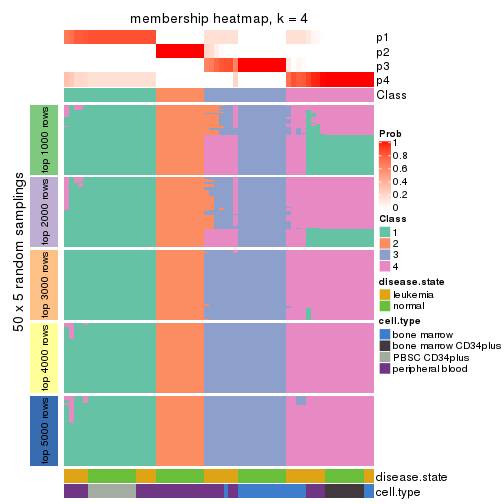
membership_heatmap(res, k = 5)
membership_heatmap(res, k = 6)
As soon as we have had the classes for columns, we can look for signatures which are significantly different between classes which can be candidate marks for certain classes. Following are the heatmaps for signatures.
Signature heatmaps where rows are scaled:
get_signatures(res, k = 2)
get_signatures(res, k = 3)
get_signatures(res, k = 4)
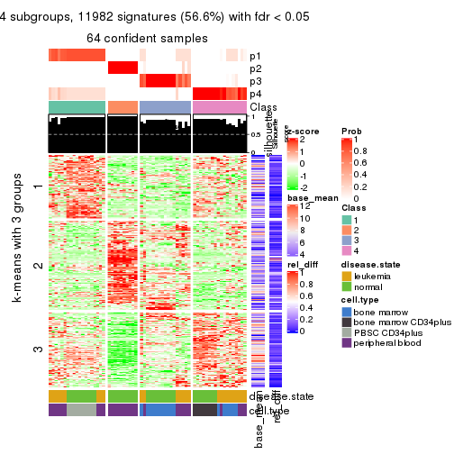
get_signatures(res, k = 5)
get_signatures(res, k = 6)
Signature heatmaps where rows are not scaled:
get_signatures(res, k = 2, scale_rows = FALSE)
get_signatures(res, k = 3, scale_rows = FALSE)
get_signatures(res, k = 4, scale_rows = FALSE)
get_signatures(res, k = 5, scale_rows = FALSE)
get_signatures(res, k = 6, scale_rows = FALSE)
Compare the overlap of signatures from different k:
compare_signatures(res)
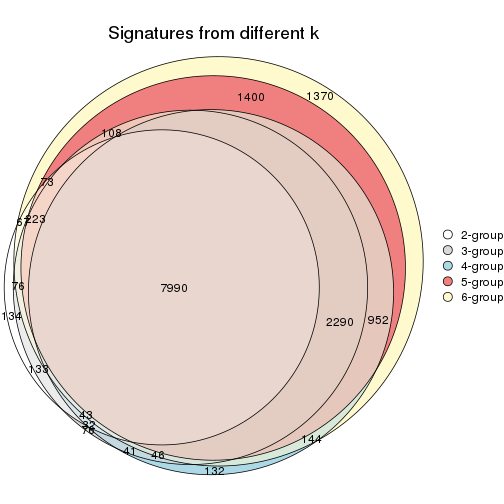
get_signature() returns a data frame invisibly. TO get the list of signatures, the function
call should be assigned to a variable explicitly. In following code, if plot argument is set
to FALSE, no heatmap is plotted while only the differential analysis is performed.
# code only for demonstration
tb = get_signature(res, k = ..., plot = FALSE)
An example of the output of tb is:
#> which_row fdr mean_1 mean_2 scaled_mean_1 scaled_mean_2 km
#> 1 38 0.042760348 8.373488 9.131774 -0.5533452 0.5164555 1
#> 2 40 0.018707592 7.106213 8.469186 -0.6173731 0.5762149 1
#> 3 55 0.019134737 10.221463 11.207825 -0.6159697 0.5749050 1
#> 4 59 0.006059896 5.921854 7.869574 -0.6899429 0.6439467 1
#> 5 60 0.018055526 8.928898 10.211722 -0.6204761 0.5791110 1
#> 6 98 0.009384629 15.714769 14.887706 0.6635654 -0.6193277 2
...
The columns in tb are:
which_row: row indices corresponding to the input matrix.fdr: FDR for the differential test. mean_x: The mean value in group x.scaled_mean_x: The mean value in group x after rows are scaled.km: Row groups if k-means clustering is applied to rows.UMAP plot which shows how samples are separated.
dimension_reduction(res, k = 2, method = "UMAP")
dimension_reduction(res, k = 3, method = "UMAP")
dimension_reduction(res, k = 4, method = "UMAP")
dimension_reduction(res, k = 5, method = "UMAP")
dimension_reduction(res, k = 6, method = "UMAP")
Following heatmap shows how subgroups are split when increasing k:
collect_classes(res)
Test correlation between subgroups and known annotations. If the known annotation is numeric, one-way ANOVA test is applied, and if the known annotation is discrete, chi-squared contingency table test is applied.
test_to_known_factors(res)
#> n disease.state(p) cell.type(p) k
#> SD:pam 64 5.78e-01 3.27e-06 2
#> SD:pam 64 1.53e-02 7.97e-09 3
#> SD:pam 64 3.11e-02 1.18e-11 4
#> SD:pam 59 2.28e-05 2.81e-15 5
#> SD:pam 63 8.39e-10 9.93e-22 6
If matrix rows can be associated to genes, consider to use GO_Enrichment(res,
...) to perform function enrichment for the signature genes.
The object with results only for a single top-value method and a single partition method can be extracted as:
res = res_list["SD", "mclust"]
# you can also extract it by
# res = res_list["SD:mclust"]
A summary of res and all the functions that can be applied to it:
res
#> A 'ConsensusPartition' object with k = 2, 3, 4, 5, 6.
#> On a matrix with 21168 rows and 64 columns.
#> Top rows (1000, 2000, 3000, 4000, 5000) are extracted by 'SD' method.
#> Subgroups are detected by 'mclust' method.
#> Performed in total 1250 partitions by row resampling.
#> Best k for subgroups seems to be 6.
#>
#> Following methods can be applied to this 'ConsensusPartition' object:
#> [1] "cola_report" "collect_classes" "collect_plots"
#> [4] "collect_stats" "colnames" "compare_signatures"
#> [7] "consensus_heatmap" "dimension_reduction" "functional_enrichment"
#> [10] "get_anno_col" "get_anno" "get_classes"
#> [13] "get_consensus" "get_matrix" "get_membership"
#> [16] "get_param" "get_signatures" "get_stats"
#> [19] "is_best_k" "is_stable_k" "membership_heatmap"
#> [22] "ncol" "nrow" "plot_ecdf"
#> [25] "rownames" "select_partition_number" "show"
#> [28] "suggest_best_k" "test_to_known_factors"
collect_plots() function collects all the plots made from res for all k (number of partitions)
into one single page to provide an easy and fast comparison between different k.
collect_plots(res)
The plots are:
k and the heatmap of
predicted classes for each k.k.k.k.All the plots in panels can be made by individual functions and they are plotted later in this section.
select_partition_number() produces several plots showing different
statistics for choosing “optimized” k. There are following statistics:
k;k, the area increased is defined as \(A_k - A_{k-1}\).The detailed explanations of these statistics can be found in the cola vignette.
Generally speaking, lower PAC score, higher mean silhouette score or higher
concordance corresponds to better partition. Rand index and Jaccard index
measure how similar the current partition is compared to partition with k-1.
If they are too similar, we won't accept k is better than k-1.
select_partition_number(res)
The numeric values for all these statistics can be obtained by get_stats().
get_stats(res)
#> k 1-PAC mean_silhouette concordance area_increased Rand Jaccard
#> 2 2 0.627 0.850 0.892 0.404 0.510 0.510
#> 3 3 1.000 1.000 1.000 0.205 0.778 0.643
#> 4 4 0.788 0.954 0.925 0.350 0.831 0.672
#> 5 5 0.850 0.943 0.951 0.160 0.897 0.701
#> 6 6 0.971 0.947 0.968 0.102 0.918 0.662
suggest_best_k() suggests the best \(k\) based on these statistics. The rules are as follows:
NA.suggest_best_k(res)
#> [1] 6
#> attr(,"optional")
#> [1] 3
There is also optional best \(k\) = 3 that is worth to check.
Following shows the table of the partitions (You need to click the show/hide
code output link to see it). The membership matrix (columns with name p*)
is inferred by
clue::cl_consensus()
function with the SE method. Basically the value in the membership matrix
represents the probability to belong to a certain group. The finall class
label for an item is determined with the group with highest probability it
belongs to.
In get_classes() function, the entropy is calculated from the membership
matrix and the silhouette score is calculated from the consensus matrix.
cbind(get_classes(res, k = 2), get_membership(res, k = 2))
#> class entropy silhouette p1 p2
#> GSM239371 1 0.000 0.983 1.000 0.000
#> GSM239487 1 0.992 -0.372 0.552 0.448
#> GSM239489 1 0.000 0.983 1.000 0.000
#> GSM239492 1 0.000 0.983 1.000 0.000
#> GSM239497 1 0.000 0.983 1.000 0.000
#> GSM239520 2 0.994 0.610 0.456 0.544
#> GSM240427 1 0.000 0.983 1.000 0.000
#> GSM239345 1 0.000 0.983 1.000 0.000
#> GSM239346 2 0.971 0.722 0.400 0.600
#> GSM239348 1 0.000 0.983 1.000 0.000
#> GSM239363 2 0.971 0.722 0.400 0.600
#> GSM239460 1 0.000 0.983 1.000 0.000
#> GSM239485 1 0.000 0.983 1.000 0.000
#> GSM239488 2 0.971 0.722 0.400 0.600
#> GSM239490 1 0.000 0.983 1.000 0.000
#> GSM239491 1 0.000 0.983 1.000 0.000
#> GSM239493 1 0.000 0.983 1.000 0.000
#> GSM239494 1 0.000 0.983 1.000 0.000
#> GSM239495 1 0.000 0.983 1.000 0.000
#> GSM239496 1 0.000 0.983 1.000 0.000
#> GSM239498 2 0.971 0.722 0.400 0.600
#> GSM239516 2 0.971 0.722 0.400 0.600
#> GSM239580 1 0.000 0.983 1.000 0.000
#> GSM240405 1 0.000 0.983 1.000 0.000
#> GSM240406 1 0.000 0.983 1.000 0.000
#> GSM240429 1 0.000 0.983 1.000 0.000
#> GSM239323 2 0.971 0.722 0.400 0.600
#> GSM239324 2 0.971 0.722 0.400 0.600
#> GSM239326 2 0.971 0.722 0.400 0.600
#> GSM239328 2 0.971 0.722 0.400 0.600
#> GSM239329 2 0.971 0.722 0.400 0.600
#> GSM239331 2 0.971 0.722 0.400 0.600
#> GSM239332 2 0.971 0.722 0.400 0.600
#> GSM239333 2 0.971 0.722 0.400 0.600
#> GSM239334 2 0.971 0.722 0.400 0.600
#> GSM239335 2 0.971 0.722 0.400 0.600
#> GSM240430 2 0.000 0.698 0.000 1.000
#> GSM240431 2 0.000 0.698 0.000 1.000
#> GSM240432 2 0.000 0.698 0.000 1.000
#> GSM240433 2 0.000 0.698 0.000 1.000
#> GSM240494 2 0.000 0.698 0.000 1.000
#> GSM240495 2 0.000 0.698 0.000 1.000
#> GSM240496 2 0.000 0.698 0.000 1.000
#> GSM240497 2 0.000 0.698 0.000 1.000
#> GSM240498 2 0.000 0.698 0.000 1.000
#> GSM240499 2 0.000 0.698 0.000 1.000
#> GSM239170 1 0.000 0.983 1.000 0.000
#> GSM239338 1 0.000 0.983 1.000 0.000
#> GSM239339 1 0.000 0.983 1.000 0.000
#> GSM239340 1 0.000 0.983 1.000 0.000
#> GSM239341 1 0.000 0.983 1.000 0.000
#> GSM239342 1 0.000 0.983 1.000 0.000
#> GSM239343 1 0.000 0.983 1.000 0.000
#> GSM239344 1 0.000 0.983 1.000 0.000
#> GSM240500 1 0.000 0.983 1.000 0.000
#> GSM240501 1 0.000 0.983 1.000 0.000
#> GSM240502 1 0.000 0.983 1.000 0.000
#> GSM240503 1 0.000 0.983 1.000 0.000
#> GSM240504 1 0.000 0.983 1.000 0.000
#> GSM240505 1 0.000 0.983 1.000 0.000
#> GSM240506 1 0.000 0.983 1.000 0.000
#> GSM240507 1 0.000 0.983 1.000 0.000
#> GSM240508 1 0.000 0.983 1.000 0.000
#> GSM240509 1 0.000 0.983 1.000 0.000
cbind(get_classes(res, k = 3), get_membership(res, k = 3))
#> class entropy silhouette p1 p2 p3
#> GSM239371 1 0 1 1 0 0
#> GSM239487 1 0 1 1 0 0
#> GSM239489 1 0 1 1 0 0
#> GSM239492 1 0 1 1 0 0
#> GSM239497 1 0 1 1 0 0
#> GSM239520 1 0 1 1 0 0
#> GSM240427 1 0 1 1 0 0
#> GSM239345 1 0 1 1 0 0
#> GSM239346 1 0 1 1 0 0
#> GSM239348 1 0 1 1 0 0
#> GSM239363 1 0 1 1 0 0
#> GSM239460 1 0 1 1 0 0
#> GSM239485 1 0 1 1 0 0
#> GSM239488 1 0 1 1 0 0
#> GSM239490 1 0 1 1 0 0
#> GSM239491 1 0 1 1 0 0
#> GSM239493 1 0 1 1 0 0
#> GSM239494 1 0 1 1 0 0
#> GSM239495 1 0 1 1 0 0
#> GSM239496 1 0 1 1 0 0
#> GSM239498 1 0 1 1 0 0
#> GSM239516 1 0 1 1 0 0
#> GSM239580 1 0 1 1 0 0
#> GSM240405 1 0 1 1 0 0
#> GSM240406 1 0 1 1 0 0
#> GSM240429 1 0 1 1 0 0
#> GSM239323 3 0 1 0 0 1
#> GSM239324 3 0 1 0 0 1
#> GSM239326 3 0 1 0 0 1
#> GSM239328 3 0 1 0 0 1
#> GSM239329 3 0 1 0 0 1
#> GSM239331 3 0 1 0 0 1
#> GSM239332 3 0 1 0 0 1
#> GSM239333 3 0 1 0 0 1
#> GSM239334 3 0 1 0 0 1
#> GSM239335 3 0 1 0 0 1
#> GSM240430 2 0 1 0 1 0
#> GSM240431 2 0 1 0 1 0
#> GSM240432 2 0 1 0 1 0
#> GSM240433 2 0 1 0 1 0
#> GSM240494 2 0 1 0 1 0
#> GSM240495 2 0 1 0 1 0
#> GSM240496 2 0 1 0 1 0
#> GSM240497 2 0 1 0 1 0
#> GSM240498 2 0 1 0 1 0
#> GSM240499 2 0 1 0 1 0
#> GSM239170 1 0 1 1 0 0
#> GSM239338 1 0 1 1 0 0
#> GSM239339 1 0 1 1 0 0
#> GSM239340 1 0 1 1 0 0
#> GSM239341 1 0 1 1 0 0
#> GSM239342 1 0 1 1 0 0
#> GSM239343 1 0 1 1 0 0
#> GSM239344 1 0 1 1 0 0
#> GSM240500 1 0 1 1 0 0
#> GSM240501 1 0 1 1 0 0
#> GSM240502 1 0 1 1 0 0
#> GSM240503 1 0 1 1 0 0
#> GSM240504 1 0 1 1 0 0
#> GSM240505 1 0 1 1 0 0
#> GSM240506 1 0 1 1 0 0
#> GSM240507 1 0 1 1 0 0
#> GSM240508 1 0 1 1 0 0
#> GSM240509 1 0 1 1 0 0
cbind(get_classes(res, k = 4), get_membership(res, k = 4))
#> class entropy silhouette p1 p2 p3 p4
#> GSM239371 4 0.000 0.943 0.000 0 0 1.000
#> GSM239487 4 0.265 0.886 0.120 0 0 0.880
#> GSM239489 4 0.130 0.929 0.044 0 0 0.956
#> GSM239492 4 0.000 0.943 0.000 0 0 1.000
#> GSM239497 4 0.187 0.915 0.072 0 0 0.928
#> GSM239520 4 0.265 0.886 0.120 0 0 0.880
#> GSM240427 4 0.130 0.929 0.044 0 0 0.956
#> GSM239345 4 0.000 0.943 0.000 0 0 1.000
#> GSM239346 4 0.265 0.886 0.120 0 0 0.880
#> GSM239348 4 0.000 0.943 0.000 0 0 1.000
#> GSM239363 4 0.265 0.886 0.120 0 0 0.880
#> GSM239460 4 0.130 0.929 0.044 0 0 0.956
#> GSM239485 4 0.000 0.943 0.000 0 0 1.000
#> GSM239488 4 0.265 0.886 0.120 0 0 0.880
#> GSM239490 4 0.000 0.943 0.000 0 0 1.000
#> GSM239491 4 0.000 0.943 0.000 0 0 1.000
#> GSM239493 4 0.000 0.943 0.000 0 0 1.000
#> GSM239494 4 0.000 0.943 0.000 0 0 1.000
#> GSM239495 4 0.000 0.943 0.000 0 0 1.000
#> GSM239496 4 0.000 0.943 0.000 0 0 1.000
#> GSM239498 4 0.265 0.886 0.120 0 0 0.880
#> GSM239516 4 0.265 0.886 0.120 0 0 0.880
#> GSM239580 4 0.000 0.943 0.000 0 0 1.000
#> GSM240405 4 0.000 0.943 0.000 0 0 1.000
#> GSM240406 4 0.000 0.943 0.000 0 0 1.000
#> GSM240429 4 0.000 0.943 0.000 0 0 1.000
#> GSM239323 3 0.000 1.000 0.000 0 1 0.000
#> GSM239324 3 0.000 1.000 0.000 0 1 0.000
#> GSM239326 3 0.000 1.000 0.000 0 1 0.000
#> GSM239328 3 0.000 1.000 0.000 0 1 0.000
#> GSM239329 3 0.000 1.000 0.000 0 1 0.000
#> GSM239331 3 0.000 1.000 0.000 0 1 0.000
#> GSM239332 3 0.000 1.000 0.000 0 1 0.000
#> GSM239333 3 0.000 1.000 0.000 0 1 0.000
#> GSM239334 3 0.000 1.000 0.000 0 1 0.000
#> GSM239335 3 0.000 1.000 0.000 0 1 0.000
#> GSM240430 2 0.000 1.000 0.000 1 0 0.000
#> GSM240431 2 0.000 1.000 0.000 1 0 0.000
#> GSM240432 2 0.000 1.000 0.000 1 0 0.000
#> GSM240433 2 0.000 1.000 0.000 1 0 0.000
#> GSM240494 2 0.000 1.000 0.000 1 0 0.000
#> GSM240495 2 0.000 1.000 0.000 1 0 0.000
#> GSM240496 2 0.000 1.000 0.000 1 0 0.000
#> GSM240497 2 0.000 1.000 0.000 1 0 0.000
#> GSM240498 2 0.000 1.000 0.000 1 0 0.000
#> GSM240499 2 0.000 1.000 0.000 1 0 0.000
#> GSM239170 4 0.187 0.906 0.072 0 0 0.928
#> GSM239338 4 0.187 0.906 0.072 0 0 0.928
#> GSM239339 4 0.187 0.906 0.072 0 0 0.928
#> GSM239340 4 0.187 0.906 0.072 0 0 0.928
#> GSM239341 4 0.187 0.906 0.072 0 0 0.928
#> GSM239342 4 0.187 0.906 0.072 0 0 0.928
#> GSM239343 4 0.187 0.906 0.072 0 0 0.928
#> GSM239344 4 0.187 0.906 0.072 0 0 0.928
#> GSM240500 1 0.265 0.985 0.880 0 0 0.120
#> GSM240501 1 0.265 0.985 0.880 0 0 0.120
#> GSM240502 1 0.265 0.985 0.880 0 0 0.120
#> GSM240503 1 0.265 0.985 0.880 0 0 0.120
#> GSM240504 1 0.265 0.985 0.880 0 0 0.120
#> GSM240505 1 0.265 0.985 0.880 0 0 0.120
#> GSM240506 1 0.287 0.968 0.864 0 0 0.136
#> GSM240507 1 0.265 0.985 0.880 0 0 0.120
#> GSM240508 1 0.265 0.985 0.880 0 0 0.120
#> GSM240509 1 0.357 0.891 0.804 0 0 0.196
cbind(get_classes(res, k = 5), get_membership(res, k = 5))
#> class entropy silhouette p1 p2 p3 p4 p5
#> GSM239371 4 0.0000 0.885 0.000 0 0 1.000 0.000
#> GSM239487 4 0.3143 0.852 0.000 0 0 0.796 0.204
#> GSM239489 4 0.3143 0.852 0.000 0 0 0.796 0.204
#> GSM239492 4 0.0162 0.884 0.000 0 0 0.996 0.004
#> GSM239497 4 0.3143 0.852 0.000 0 0 0.796 0.204
#> GSM239520 4 0.3143 0.852 0.000 0 0 0.796 0.204
#> GSM240427 4 0.3143 0.852 0.000 0 0 0.796 0.204
#> GSM239345 4 0.0000 0.885 0.000 0 0 1.000 0.000
#> GSM239346 4 0.3143 0.852 0.000 0 0 0.796 0.204
#> GSM239348 4 0.0000 0.885 0.000 0 0 1.000 0.000
#> GSM239363 4 0.3143 0.852 0.000 0 0 0.796 0.204
#> GSM239460 4 0.3143 0.852 0.000 0 0 0.796 0.204
#> GSM239485 4 0.0000 0.885 0.000 0 0 1.000 0.000
#> GSM239488 4 0.3143 0.852 0.000 0 0 0.796 0.204
#> GSM239490 4 0.0000 0.885 0.000 0 0 1.000 0.000
#> GSM239491 4 0.0000 0.885 0.000 0 0 1.000 0.000
#> GSM239493 4 0.0000 0.885 0.000 0 0 1.000 0.000
#> GSM239494 4 0.0000 0.885 0.000 0 0 1.000 0.000
#> GSM239495 4 0.0000 0.885 0.000 0 0 1.000 0.000
#> GSM239496 4 0.0000 0.885 0.000 0 0 1.000 0.000
#> GSM239498 4 0.3143 0.852 0.000 0 0 0.796 0.204
#> GSM239516 4 0.3143 0.852 0.000 0 0 0.796 0.204
#> GSM239580 4 0.0000 0.885 0.000 0 0 1.000 0.000
#> GSM240405 4 0.0000 0.885 0.000 0 0 1.000 0.000
#> GSM240406 4 0.0000 0.885 0.000 0 0 1.000 0.000
#> GSM240429 4 0.0000 0.885 0.000 0 0 1.000 0.000
#> GSM239323 3 0.0000 1.000 0.000 0 1 0.000 0.000
#> GSM239324 3 0.0000 1.000 0.000 0 1 0.000 0.000
#> GSM239326 3 0.0000 1.000 0.000 0 1 0.000 0.000
#> GSM239328 3 0.0000 1.000 0.000 0 1 0.000 0.000
#> GSM239329 3 0.0000 1.000 0.000 0 1 0.000 0.000
#> GSM239331 3 0.0000 1.000 0.000 0 1 0.000 0.000
#> GSM239332 3 0.0000 1.000 0.000 0 1 0.000 0.000
#> GSM239333 3 0.0000 1.000 0.000 0 1 0.000 0.000
#> GSM239334 3 0.0000 1.000 0.000 0 1 0.000 0.000
#> GSM239335 3 0.0000 1.000 0.000 0 1 0.000 0.000
#> GSM240430 2 0.0000 1.000 0.000 1 0 0.000 0.000
#> GSM240431 2 0.0000 1.000 0.000 1 0 0.000 0.000
#> GSM240432 2 0.0000 1.000 0.000 1 0 0.000 0.000
#> GSM240433 2 0.0000 1.000 0.000 1 0 0.000 0.000
#> GSM240494 2 0.0000 1.000 0.000 1 0 0.000 0.000
#> GSM240495 2 0.0000 1.000 0.000 1 0 0.000 0.000
#> GSM240496 2 0.0000 1.000 0.000 1 0 0.000 0.000
#> GSM240497 2 0.0000 1.000 0.000 1 0 0.000 0.000
#> GSM240498 2 0.0000 1.000 0.000 1 0 0.000 0.000
#> GSM240499 2 0.0000 1.000 0.000 1 0 0.000 0.000
#> GSM239170 5 0.3143 0.980 0.000 0 0 0.204 0.796
#> GSM239338 5 0.3143 0.980 0.000 0 0 0.204 0.796
#> GSM239339 5 0.3143 0.980 0.000 0 0 0.204 0.796
#> GSM239340 5 0.3143 0.980 0.000 0 0 0.204 0.796
#> GSM239341 5 0.3143 0.980 0.000 0 0 0.204 0.796
#> GSM239342 5 0.3143 0.980 0.000 0 0 0.204 0.796
#> GSM239343 5 0.3837 0.854 0.000 0 0 0.308 0.692
#> GSM239344 5 0.3143 0.980 0.000 0 0 0.204 0.796
#> GSM240500 1 0.0000 0.999 1.000 0 0 0.000 0.000
#> GSM240501 1 0.0000 0.999 1.000 0 0 0.000 0.000
#> GSM240502 1 0.0000 0.999 1.000 0 0 0.000 0.000
#> GSM240503 1 0.0000 0.999 1.000 0 0 0.000 0.000
#> GSM240504 1 0.0000 0.999 1.000 0 0 0.000 0.000
#> GSM240505 1 0.0000 0.999 1.000 0 0 0.000 0.000
#> GSM240506 1 0.0000 0.999 1.000 0 0 0.000 0.000
#> GSM240507 1 0.0000 0.999 1.000 0 0 0.000 0.000
#> GSM240508 1 0.0000 0.999 1.000 0 0 0.000 0.000
#> GSM240509 1 0.0162 0.994 0.996 0 0 0.004 0.000
cbind(get_classes(res, k = 6), get_membership(res, k = 6))
#> class entropy silhouette p1 p2 p3 p4 p5 p6
#> GSM239371 4 0.0000 0.861 0.000 0 0.000 1.000 0.000 0.000
#> GSM239487 6 0.0000 0.995 0.000 0 0.000 0.000 0.000 1.000
#> GSM239489 6 0.0146 0.993 0.000 0 0.000 0.004 0.000 0.996
#> GSM239492 4 0.3647 0.565 0.000 0 0.000 0.640 0.000 0.360
#> GSM239497 6 0.0000 0.995 0.000 0 0.000 0.000 0.000 1.000
#> GSM239520 6 0.0000 0.995 0.000 0 0.000 0.000 0.000 1.000
#> GSM240427 6 0.0790 0.962 0.000 0 0.000 0.032 0.000 0.968
#> GSM239345 4 0.4877 0.711 0.192 0 0.000 0.660 0.000 0.148
#> GSM239346 6 0.0000 0.995 0.000 0 0.000 0.000 0.000 1.000
#> GSM239348 4 0.3547 0.614 0.000 0 0.000 0.668 0.000 0.332
#> GSM239363 6 0.0000 0.995 0.000 0 0.000 0.000 0.000 1.000
#> GSM239460 6 0.0146 0.993 0.000 0 0.000 0.004 0.000 0.996
#> GSM239485 4 0.0260 0.861 0.008 0 0.000 0.992 0.000 0.000
#> GSM239488 6 0.0000 0.995 0.000 0 0.000 0.000 0.000 1.000
#> GSM239490 4 0.0260 0.861 0.008 0 0.000 0.992 0.000 0.000
#> GSM239491 4 0.0260 0.861 0.008 0 0.000 0.992 0.000 0.000
#> GSM239493 4 0.0000 0.861 0.000 0 0.000 1.000 0.000 0.000
#> GSM239494 4 0.0000 0.861 0.000 0 0.000 1.000 0.000 0.000
#> GSM239495 4 0.0000 0.861 0.000 0 0.000 1.000 0.000 0.000
#> GSM239496 4 0.0000 0.861 0.000 0 0.000 1.000 0.000 0.000
#> GSM239498 6 0.0000 0.995 0.000 0 0.000 0.000 0.000 1.000
#> GSM239516 6 0.0000 0.995 0.000 0 0.000 0.000 0.000 1.000
#> GSM239580 4 0.3602 0.788 0.072 0 0.000 0.792 0.000 0.136
#> GSM240405 4 0.4931 0.703 0.200 0 0.000 0.652 0.000 0.148
#> GSM240406 4 0.0000 0.861 0.000 0 0.000 1.000 0.000 0.000
#> GSM240429 4 0.4931 0.703 0.200 0 0.000 0.652 0.000 0.148
#> GSM239323 3 0.0000 0.999 0.000 0 1.000 0.000 0.000 0.000
#> GSM239324 3 0.0000 0.999 0.000 0 1.000 0.000 0.000 0.000
#> GSM239326 3 0.0000 0.999 0.000 0 1.000 0.000 0.000 0.000
#> GSM239328 3 0.0000 0.999 0.000 0 1.000 0.000 0.000 0.000
#> GSM239329 3 0.0260 0.990 0.000 0 0.992 0.000 0.000 0.008
#> GSM239331 3 0.0000 0.999 0.000 0 1.000 0.000 0.000 0.000
#> GSM239332 3 0.0000 0.999 0.000 0 1.000 0.000 0.000 0.000
#> GSM239333 3 0.0000 0.999 0.000 0 1.000 0.000 0.000 0.000
#> GSM239334 3 0.0000 0.999 0.000 0 1.000 0.000 0.000 0.000
#> GSM239335 3 0.0000 0.999 0.000 0 1.000 0.000 0.000 0.000
#> GSM240430 2 0.0000 1.000 0.000 1 0.000 0.000 0.000 0.000
#> GSM240431 2 0.0000 1.000 0.000 1 0.000 0.000 0.000 0.000
#> GSM240432 2 0.0000 1.000 0.000 1 0.000 0.000 0.000 0.000
#> GSM240433 2 0.0000 1.000 0.000 1 0.000 0.000 0.000 0.000
#> GSM240494 2 0.0000 1.000 0.000 1 0.000 0.000 0.000 0.000
#> GSM240495 2 0.0000 1.000 0.000 1 0.000 0.000 0.000 0.000
#> GSM240496 2 0.0000 1.000 0.000 1 0.000 0.000 0.000 0.000
#> GSM240497 2 0.0000 1.000 0.000 1 0.000 0.000 0.000 0.000
#> GSM240498 2 0.0000 1.000 0.000 1 0.000 0.000 0.000 0.000
#> GSM240499 2 0.0000 1.000 0.000 1 0.000 0.000 0.000 0.000
#> GSM239170 5 0.0000 0.991 0.000 0 0.000 0.000 1.000 0.000
#> GSM239338 5 0.0000 0.991 0.000 0 0.000 0.000 1.000 0.000
#> GSM239339 5 0.0000 0.991 0.000 0 0.000 0.000 1.000 0.000
#> GSM239340 5 0.0000 0.991 0.000 0 0.000 0.000 1.000 0.000
#> GSM239341 5 0.0000 0.991 0.000 0 0.000 0.000 1.000 0.000
#> GSM239342 5 0.0000 0.991 0.000 0 0.000 0.000 1.000 0.000
#> GSM239343 5 0.1204 0.937 0.000 0 0.000 0.000 0.944 0.056
#> GSM239344 5 0.0000 0.991 0.000 0 0.000 0.000 1.000 0.000
#> GSM240500 1 0.0000 1.000 1.000 0 0.000 0.000 0.000 0.000
#> GSM240501 1 0.0000 1.000 1.000 0 0.000 0.000 0.000 0.000
#> GSM240502 1 0.0000 1.000 1.000 0 0.000 0.000 0.000 0.000
#> GSM240503 1 0.0000 1.000 1.000 0 0.000 0.000 0.000 0.000
#> GSM240504 1 0.0000 1.000 1.000 0 0.000 0.000 0.000 0.000
#> GSM240505 1 0.0000 1.000 1.000 0 0.000 0.000 0.000 0.000
#> GSM240506 1 0.0000 1.000 1.000 0 0.000 0.000 0.000 0.000
#> GSM240507 1 0.0000 1.000 1.000 0 0.000 0.000 0.000 0.000
#> GSM240508 1 0.0000 1.000 1.000 0 0.000 0.000 0.000 0.000
#> GSM240509 1 0.0000 1.000 1.000 0 0.000 0.000 0.000 0.000
Heatmaps for the consensus matrix. It visualizes the probability of two samples to be in a same group.
consensus_heatmap(res, k = 2)
consensus_heatmap(res, k = 3)

consensus_heatmap(res, k = 4)
consensus_heatmap(res, k = 5)
consensus_heatmap(res, k = 6)
Heatmaps for the membership of samples in all partitions to see how consistent they are:
membership_heatmap(res, k = 2)
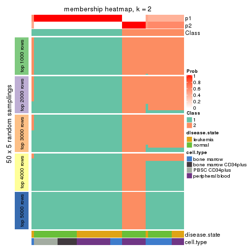
membership_heatmap(res, k = 3)
membership_heatmap(res, k = 4)
membership_heatmap(res, k = 5)
membership_heatmap(res, k = 6)
As soon as we have had the classes for columns, we can look for signatures which are significantly different between classes which can be candidate marks for certain classes. Following are the heatmaps for signatures.
Signature heatmaps where rows are scaled:
get_signatures(res, k = 2)
get_signatures(res, k = 3)
get_signatures(res, k = 4)
get_signatures(res, k = 5)
get_signatures(res, k = 6)
Signature heatmaps where rows are not scaled:
get_signatures(res, k = 2, scale_rows = FALSE)
get_signatures(res, k = 3, scale_rows = FALSE)

get_signatures(res, k = 4, scale_rows = FALSE)
get_signatures(res, k = 5, scale_rows = FALSE)
get_signatures(res, k = 6, scale_rows = FALSE)
Compare the overlap of signatures from different k:
compare_signatures(res)
get_signature() returns a data frame invisibly. TO get the list of signatures, the function
call should be assigned to a variable explicitly. In following code, if plot argument is set
to FALSE, no heatmap is plotted while only the differential analysis is performed.
# code only for demonstration
tb = get_signature(res, k = ..., plot = FALSE)
An example of the output of tb is:
#> which_row fdr mean_1 mean_2 scaled_mean_1 scaled_mean_2 km
#> 1 38 0.042760348 8.373488 9.131774 -0.5533452 0.5164555 1
#> 2 40 0.018707592 7.106213 8.469186 -0.6173731 0.5762149 1
#> 3 55 0.019134737 10.221463 11.207825 -0.6159697 0.5749050 1
#> 4 59 0.006059896 5.921854 7.869574 -0.6899429 0.6439467 1
#> 5 60 0.018055526 8.928898 10.211722 -0.6204761 0.5791110 1
#> 6 98 0.009384629 15.714769 14.887706 0.6635654 -0.6193277 2
...
The columns in tb are:
which_row: row indices corresponding to the input matrix.fdr: FDR for the differential test. mean_x: The mean value in group x.scaled_mean_x: The mean value in group x after rows are scaled.km: Row groups if k-means clustering is applied to rows.UMAP plot which shows how samples are separated.
dimension_reduction(res, k = 2, method = "UMAP")
dimension_reduction(res, k = 3, method = "UMAP")
dimension_reduction(res, k = 4, method = "UMAP")
dimension_reduction(res, k = 5, method = "UMAP")
dimension_reduction(res, k = 6, method = "UMAP")
Following heatmap shows how subgroups are split when increasing k:
collect_classes(res)
Test correlation between subgroups and known annotations. If the known annotation is numeric, one-way ANOVA test is applied, and if the known annotation is discrete, chi-squared contingency table test is applied.
test_to_known_factors(res)
#> n disease.state(p) cell.type(p) k
#> SD:mclust 63 4.58e-02 2.81e-04 2
#> SD:mclust 64 4.76e-05 6.76e-08 3
#> SD:mclust 64 2.07e-08 2.89e-18 4
#> SD:mclust 64 4.18e-13 2.66e-28 5
#> SD:mclust 64 1.81e-12 2.08e-27 6
If matrix rows can be associated to genes, consider to use GO_Enrichment(res,
...) to perform function enrichment for the signature genes.
The object with results only for a single top-value method and a single partition method can be extracted as:
res = res_list["SD", "NMF"]
# you can also extract it by
# res = res_list["SD:NMF"]
A summary of res and all the functions that can be applied to it:
res
#> A 'ConsensusPartition' object with k = 2, 3, 4, 5, 6.
#> On a matrix with 21168 rows and 64 columns.
#> Top rows (1000, 2000, 3000, 4000, 5000) are extracted by 'SD' method.
#> Subgroups are detected by 'NMF' method.
#> Performed in total 1250 partitions by row resampling.
#> Best k for subgroups seems to be 6.
#>
#> Following methods can be applied to this 'ConsensusPartition' object:
#> [1] "cola_report" "collect_classes" "collect_plots"
#> [4] "collect_stats" "colnames" "compare_signatures"
#> [7] "consensus_heatmap" "dimension_reduction" "functional_enrichment"
#> [10] "get_anno_col" "get_anno" "get_classes"
#> [13] "get_consensus" "get_matrix" "get_membership"
#> [16] "get_param" "get_signatures" "get_stats"
#> [19] "is_best_k" "is_stable_k" "membership_heatmap"
#> [22] "ncol" "nrow" "plot_ecdf"
#> [25] "rownames" "select_partition_number" "show"
#> [28] "suggest_best_k" "test_to_known_factors"
collect_plots() function collects all the plots made from res for all k (number of partitions)
into one single page to provide an easy and fast comparison between different k.
collect_plots(res)
The plots are:
k and the heatmap of
predicted classes for each k.k.k.k.All the plots in panels can be made by individual functions and they are plotted later in this section.
select_partition_number() produces several plots showing different
statistics for choosing “optimized” k. There are following statistics:
k;k, the area increased is defined as \(A_k - A_{k-1}\).The detailed explanations of these statistics can be found in the cola vignette.
Generally speaking, lower PAC score, higher mean silhouette score or higher
concordance corresponds to better partition. Rand index and Jaccard index
measure how similar the current partition is compared to partition with k-1.
If they are too similar, we won't accept k is better than k-1.
select_partition_number(res)
The numeric values for all these statistics can be obtained by get_stats().
get_stats(res)
#> k 1-PAC mean_silhouette concordance area_increased Rand Jaccard
#> 2 2 0.967 0.944 0.977 0.4881 0.516 0.516
#> 3 3 0.869 0.867 0.946 0.3440 0.705 0.488
#> 4 4 0.698 0.746 0.888 0.1277 0.810 0.511
#> 5 5 0.828 0.814 0.895 0.0765 0.906 0.653
#> 6 6 0.976 0.933 0.969 0.0575 0.896 0.551
suggest_best_k() suggests the best \(k\) based on these statistics. The rules are as follows:
NA.suggest_best_k(res)
#> [1] 6
#> attr(,"optional")
#> [1] 2
There is also optional best \(k\) = 2 that is worth to check.
Following shows the table of the partitions (You need to click the show/hide
code output link to see it). The membership matrix (columns with name p*)
is inferred by
clue::cl_consensus()
function with the SE method. Basically the value in the membership matrix
represents the probability to belong to a certain group. The finall class
label for an item is determined with the group with highest probability it
belongs to.
In get_classes() function, the entropy is calculated from the membership
matrix and the silhouette score is calculated from the consensus matrix.
cbind(get_classes(res, k = 2), get_membership(res, k = 2))
#> class entropy silhouette p1 p2
#> GSM239371 1 0.000 0.969 1.000 0.000
#> GSM239487 1 0.745 0.734 0.788 0.212
#> GSM239489 1 0.000 0.969 1.000 0.000
#> GSM239492 1 0.000 0.969 1.000 0.000
#> GSM239497 1 0.827 0.659 0.740 0.260
#> GSM239520 1 0.995 0.176 0.540 0.460
#> GSM240427 1 0.000 0.969 1.000 0.000
#> GSM239345 1 0.000 0.969 1.000 0.000
#> GSM239346 2 0.000 0.987 0.000 1.000
#> GSM239348 1 0.000 0.969 1.000 0.000
#> GSM239363 2 0.000 0.987 0.000 1.000
#> GSM239460 1 0.760 0.723 0.780 0.220
#> GSM239485 1 0.000 0.969 1.000 0.000
#> GSM239488 2 0.000 0.987 0.000 1.000
#> GSM239490 1 0.000 0.969 1.000 0.000
#> GSM239491 1 0.000 0.969 1.000 0.000
#> GSM239493 1 0.000 0.969 1.000 0.000
#> GSM239494 1 0.000 0.969 1.000 0.000
#> GSM239495 1 0.000 0.969 1.000 0.000
#> GSM239496 1 0.000 0.969 1.000 0.000
#> GSM239498 2 0.000 0.987 0.000 1.000
#> GSM239516 2 0.000 0.987 0.000 1.000
#> GSM239580 1 0.000 0.969 1.000 0.000
#> GSM240405 1 0.000 0.969 1.000 0.000
#> GSM240406 1 0.000 0.969 1.000 0.000
#> GSM240429 1 0.000 0.969 1.000 0.000
#> GSM239323 2 0.000 0.987 0.000 1.000
#> GSM239324 2 0.000 0.987 0.000 1.000
#> GSM239326 2 0.000 0.987 0.000 1.000
#> GSM239328 2 0.000 0.987 0.000 1.000
#> GSM239329 2 0.876 0.549 0.296 0.704
#> GSM239331 2 0.000 0.987 0.000 1.000
#> GSM239332 2 0.000 0.987 0.000 1.000
#> GSM239333 2 0.000 0.987 0.000 1.000
#> GSM239334 2 0.000 0.987 0.000 1.000
#> GSM239335 2 0.000 0.987 0.000 1.000
#> GSM240430 2 0.000 0.987 0.000 1.000
#> GSM240431 2 0.000 0.987 0.000 1.000
#> GSM240432 2 0.000 0.987 0.000 1.000
#> GSM240433 2 0.000 0.987 0.000 1.000
#> GSM240494 2 0.000 0.987 0.000 1.000
#> GSM240495 2 0.000 0.987 0.000 1.000
#> GSM240496 2 0.000 0.987 0.000 1.000
#> GSM240497 2 0.000 0.987 0.000 1.000
#> GSM240498 2 0.000 0.987 0.000 1.000
#> GSM240499 2 0.000 0.987 0.000 1.000
#> GSM239170 1 0.000 0.969 1.000 0.000
#> GSM239338 1 0.000 0.969 1.000 0.000
#> GSM239339 1 0.000 0.969 1.000 0.000
#> GSM239340 1 0.000 0.969 1.000 0.000
#> GSM239341 1 0.000 0.969 1.000 0.000
#> GSM239342 1 0.000 0.969 1.000 0.000
#> GSM239343 1 0.000 0.969 1.000 0.000
#> GSM239344 1 0.000 0.969 1.000 0.000
#> GSM240500 1 0.000 0.969 1.000 0.000
#> GSM240501 1 0.000 0.969 1.000 0.000
#> GSM240502 1 0.000 0.969 1.000 0.000
#> GSM240503 1 0.000 0.969 1.000 0.000
#> GSM240504 1 0.000 0.969 1.000 0.000
#> GSM240505 1 0.000 0.969 1.000 0.000
#> GSM240506 1 0.000 0.969 1.000 0.000
#> GSM240507 1 0.000 0.969 1.000 0.000
#> GSM240508 1 0.000 0.969 1.000 0.000
#> GSM240509 1 0.000 0.969 1.000 0.000
cbind(get_classes(res, k = 3), get_membership(res, k = 3))
#> class entropy silhouette p1 p2 p3
#> GSM239371 1 0.0424 0.9459 0.992 0.000 0.008
#> GSM239487 3 0.0000 0.8771 0.000 0.000 1.000
#> GSM239489 3 0.0000 0.8771 0.000 0.000 1.000
#> GSM239492 3 0.5497 0.5953 0.292 0.000 0.708
#> GSM239497 3 0.0000 0.8771 0.000 0.000 1.000
#> GSM239520 3 0.0000 0.8771 0.000 0.000 1.000
#> GSM240427 3 0.0000 0.8771 0.000 0.000 1.000
#> GSM239345 1 0.0000 0.9520 1.000 0.000 0.000
#> GSM239346 2 0.0000 0.9949 0.000 1.000 0.000
#> GSM239348 1 0.6180 0.2051 0.584 0.000 0.416
#> GSM239363 2 0.2165 0.9236 0.000 0.936 0.064
#> GSM239460 3 0.5506 0.6839 0.016 0.220 0.764
#> GSM239485 1 0.0000 0.9520 1.000 0.000 0.000
#> GSM239488 2 0.0000 0.9949 0.000 1.000 0.000
#> GSM239490 1 0.0000 0.9520 1.000 0.000 0.000
#> GSM239491 1 0.0000 0.9520 1.000 0.000 0.000
#> GSM239493 1 0.0000 0.9520 1.000 0.000 0.000
#> GSM239494 1 0.0000 0.9520 1.000 0.000 0.000
#> GSM239495 1 0.0000 0.9520 1.000 0.000 0.000
#> GSM239496 1 0.0000 0.9520 1.000 0.000 0.000
#> GSM239498 2 0.0000 0.9949 0.000 1.000 0.000
#> GSM239516 2 0.0000 0.9949 0.000 1.000 0.000
#> GSM239580 1 0.0000 0.9520 1.000 0.000 0.000
#> GSM240405 1 0.0000 0.9520 1.000 0.000 0.000
#> GSM240406 1 0.0000 0.9520 1.000 0.000 0.000
#> GSM240429 1 0.0424 0.9453 0.992 0.000 0.008
#> GSM239323 3 0.0592 0.8716 0.000 0.012 0.988
#> GSM239324 3 0.0000 0.8771 0.000 0.000 1.000
#> GSM239326 3 0.2796 0.8141 0.000 0.092 0.908
#> GSM239328 3 0.0000 0.8771 0.000 0.000 1.000
#> GSM239329 3 0.0000 0.8771 0.000 0.000 1.000
#> GSM239331 3 0.0000 0.8771 0.000 0.000 1.000
#> GSM239332 3 0.0000 0.8771 0.000 0.000 1.000
#> GSM239333 3 0.5760 0.4774 0.000 0.328 0.672
#> GSM239334 3 0.0000 0.8771 0.000 0.000 1.000
#> GSM239335 3 0.0000 0.8771 0.000 0.000 1.000
#> GSM240430 2 0.0000 0.9949 0.000 1.000 0.000
#> GSM240431 2 0.0000 0.9949 0.000 1.000 0.000
#> GSM240432 2 0.0000 0.9949 0.000 1.000 0.000
#> GSM240433 2 0.0000 0.9949 0.000 1.000 0.000
#> GSM240494 2 0.0000 0.9949 0.000 1.000 0.000
#> GSM240495 2 0.0000 0.9949 0.000 1.000 0.000
#> GSM240496 2 0.0000 0.9949 0.000 1.000 0.000
#> GSM240497 2 0.0000 0.9949 0.000 1.000 0.000
#> GSM240498 2 0.0000 0.9949 0.000 1.000 0.000
#> GSM240499 2 0.0000 0.9949 0.000 1.000 0.000
#> GSM239170 3 0.6215 0.2979 0.428 0.000 0.572
#> GSM239338 1 0.4062 0.7601 0.836 0.000 0.164
#> GSM239339 1 0.0892 0.9343 0.980 0.000 0.020
#> GSM239340 1 0.6299 -0.0345 0.524 0.000 0.476
#> GSM239341 3 0.5650 0.5678 0.312 0.000 0.688
#> GSM239342 3 0.4452 0.7360 0.192 0.000 0.808
#> GSM239343 3 0.1031 0.8671 0.024 0.000 0.976
#> GSM239344 3 0.6008 0.4439 0.372 0.000 0.628
#> GSM240500 1 0.0000 0.9520 1.000 0.000 0.000
#> GSM240501 1 0.0000 0.9520 1.000 0.000 0.000
#> GSM240502 1 0.0000 0.9520 1.000 0.000 0.000
#> GSM240503 1 0.0000 0.9520 1.000 0.000 0.000
#> GSM240504 1 0.0000 0.9520 1.000 0.000 0.000
#> GSM240505 1 0.0000 0.9520 1.000 0.000 0.000
#> GSM240506 1 0.0000 0.9520 1.000 0.000 0.000
#> GSM240507 1 0.0000 0.9520 1.000 0.000 0.000
#> GSM240508 1 0.0000 0.9520 1.000 0.000 0.000
#> GSM240509 1 0.0000 0.9520 1.000 0.000 0.000
cbind(get_classes(res, k = 4), get_membership(res, k = 4))
#> class entropy silhouette p1 p2 p3 p4
#> GSM239371 4 0.3123 0.756 0.156 0.000 0.000 0.844
#> GSM239487 4 0.0000 0.829 0.000 0.000 0.000 1.000
#> GSM239489 4 0.0000 0.829 0.000 0.000 0.000 1.000
#> GSM239492 4 0.5728 0.623 0.188 0.000 0.104 0.708
#> GSM239497 4 0.0592 0.822 0.000 0.000 0.016 0.984
#> GSM239520 4 0.0000 0.829 0.000 0.000 0.000 1.000
#> GSM240427 4 0.0000 0.829 0.000 0.000 0.000 1.000
#> GSM239345 1 0.0000 0.900 1.000 0.000 0.000 0.000
#> GSM239346 2 0.4776 0.402 0.000 0.624 0.000 0.376
#> GSM239348 4 0.0000 0.829 0.000 0.000 0.000 1.000
#> GSM239363 4 0.0000 0.829 0.000 0.000 0.000 1.000
#> GSM239460 4 0.0000 0.829 0.000 0.000 0.000 1.000
#> GSM239485 1 0.2530 0.813 0.888 0.000 0.000 0.112
#> GSM239488 4 0.4605 0.389 0.000 0.336 0.000 0.664
#> GSM239490 1 0.0000 0.900 1.000 0.000 0.000 0.000
#> GSM239491 1 0.4925 0.197 0.572 0.000 0.000 0.428
#> GSM239493 4 0.2814 0.782 0.132 0.000 0.000 0.868
#> GSM239494 4 0.2281 0.801 0.096 0.000 0.000 0.904
#> GSM239495 4 0.4134 0.623 0.260 0.000 0.000 0.740
#> GSM239496 4 0.4967 0.157 0.452 0.000 0.000 0.548
#> GSM239498 4 0.4679 0.354 0.000 0.352 0.000 0.648
#> GSM239516 2 0.4967 0.193 0.000 0.548 0.000 0.452
#> GSM239580 1 0.1211 0.871 0.960 0.000 0.000 0.040
#> GSM240405 1 0.0188 0.897 0.996 0.000 0.004 0.000
#> GSM240406 1 0.4250 0.577 0.724 0.000 0.000 0.276
#> GSM240429 1 0.2345 0.801 0.900 0.000 0.100 0.000
#> GSM239323 3 0.0469 0.805 0.000 0.012 0.988 0.000
#> GSM239324 3 0.0000 0.810 0.000 0.000 1.000 0.000
#> GSM239326 3 0.0469 0.805 0.000 0.012 0.988 0.000
#> GSM239328 3 0.0188 0.809 0.000 0.004 0.996 0.000
#> GSM239329 3 0.0000 0.810 0.000 0.000 1.000 0.000
#> GSM239331 3 0.0000 0.810 0.000 0.000 1.000 0.000
#> GSM239332 3 0.0000 0.810 0.000 0.000 1.000 0.000
#> GSM239333 3 0.0592 0.802 0.000 0.016 0.984 0.000
#> GSM239334 3 0.0000 0.810 0.000 0.000 1.000 0.000
#> GSM239335 3 0.0000 0.810 0.000 0.000 1.000 0.000
#> GSM240430 2 0.0000 0.916 0.000 1.000 0.000 0.000
#> GSM240431 2 0.0000 0.916 0.000 1.000 0.000 0.000
#> GSM240432 2 0.0000 0.916 0.000 1.000 0.000 0.000
#> GSM240433 2 0.0000 0.916 0.000 1.000 0.000 0.000
#> GSM240494 2 0.0000 0.916 0.000 1.000 0.000 0.000
#> GSM240495 2 0.0000 0.916 0.000 1.000 0.000 0.000
#> GSM240496 2 0.0000 0.916 0.000 1.000 0.000 0.000
#> GSM240497 2 0.0000 0.916 0.000 1.000 0.000 0.000
#> GSM240498 2 0.0000 0.916 0.000 1.000 0.000 0.000
#> GSM240499 2 0.0000 0.916 0.000 1.000 0.000 0.000
#> GSM239170 3 0.7222 0.480 0.300 0.000 0.528 0.172
#> GSM239338 1 0.5733 0.370 0.640 0.000 0.312 0.048
#> GSM239339 1 0.4220 0.581 0.748 0.000 0.248 0.004
#> GSM239340 3 0.6270 0.360 0.404 0.000 0.536 0.060
#> GSM239341 3 0.6483 0.526 0.312 0.000 0.592 0.096
#> GSM239342 3 0.6664 0.561 0.272 0.000 0.600 0.128
#> GSM239343 3 0.6411 0.508 0.092 0.000 0.600 0.308
#> GSM239344 3 0.6773 0.452 0.348 0.000 0.544 0.108
#> GSM240500 1 0.0000 0.900 1.000 0.000 0.000 0.000
#> GSM240501 1 0.0000 0.900 1.000 0.000 0.000 0.000
#> GSM240502 1 0.0000 0.900 1.000 0.000 0.000 0.000
#> GSM240503 1 0.0000 0.900 1.000 0.000 0.000 0.000
#> GSM240504 1 0.0000 0.900 1.000 0.000 0.000 0.000
#> GSM240505 1 0.0000 0.900 1.000 0.000 0.000 0.000
#> GSM240506 1 0.0000 0.900 1.000 0.000 0.000 0.000
#> GSM240507 1 0.0000 0.900 1.000 0.000 0.000 0.000
#> GSM240508 1 0.0000 0.900 1.000 0.000 0.000 0.000
#> GSM240509 1 0.0000 0.900 1.000 0.000 0.000 0.000
cbind(get_classes(res, k = 5), get_membership(res, k = 5))
#> class entropy silhouette p1 p2 p3 p4 p5
#> GSM239371 4 0.5775 0.580 0.244 0.000 0.000 0.608 0.148
#> GSM239487 4 0.0162 0.708 0.000 0.000 0.000 0.996 0.004
#> GSM239489 4 0.0000 0.710 0.000 0.000 0.000 1.000 0.000
#> GSM239492 5 0.4305 0.645 0.128 0.000 0.004 0.088 0.780
#> GSM239497 4 0.3932 0.325 0.000 0.000 0.000 0.672 0.328
#> GSM239520 4 0.3336 0.504 0.000 0.000 0.000 0.772 0.228
#> GSM240427 4 0.3934 0.609 0.016 0.000 0.000 0.740 0.244
#> GSM239345 1 0.0162 0.930 0.996 0.000 0.000 0.000 0.004
#> GSM239346 2 0.4242 0.320 0.000 0.572 0.000 0.428 0.000
#> GSM239348 4 0.2625 0.705 0.016 0.000 0.000 0.876 0.108
#> GSM239363 4 0.0000 0.710 0.000 0.000 0.000 1.000 0.000
#> GSM239460 4 0.2136 0.709 0.008 0.000 0.000 0.904 0.088
#> GSM239485 1 0.3741 0.758 0.816 0.000 0.000 0.076 0.108
#> GSM239488 4 0.0000 0.710 0.000 0.000 0.000 1.000 0.000
#> GSM239490 1 0.2127 0.850 0.892 0.000 0.000 0.000 0.108
#> GSM239491 4 0.5966 0.256 0.432 0.000 0.000 0.460 0.108
#> GSM239493 4 0.5045 0.641 0.196 0.000 0.000 0.696 0.108
#> GSM239494 4 0.5649 0.532 0.296 0.000 0.000 0.596 0.108
#> GSM239495 4 0.5959 0.292 0.420 0.000 0.000 0.472 0.108
#> GSM239496 4 0.5908 0.386 0.380 0.000 0.000 0.512 0.108
#> GSM239498 4 0.0000 0.710 0.000 0.000 0.000 1.000 0.000
#> GSM239516 4 0.3999 0.243 0.000 0.344 0.000 0.656 0.000
#> GSM239580 1 0.1704 0.880 0.928 0.000 0.000 0.004 0.068
#> GSM240405 1 0.0290 0.923 0.992 0.000 0.000 0.000 0.008
#> GSM240406 1 0.5013 0.544 0.700 0.000 0.000 0.192 0.108
#> GSM240429 1 0.2969 0.795 0.852 0.000 0.128 0.000 0.020
#> GSM239323 3 0.0000 0.992 0.000 0.000 1.000 0.000 0.000
#> GSM239324 3 0.0000 0.992 0.000 0.000 1.000 0.000 0.000
#> GSM239326 3 0.0290 0.985 0.000 0.008 0.992 0.000 0.000
#> GSM239328 3 0.0000 0.992 0.000 0.000 1.000 0.000 0.000
#> GSM239329 3 0.0000 0.992 0.000 0.000 1.000 0.000 0.000
#> GSM239331 3 0.0000 0.992 0.000 0.000 1.000 0.000 0.000
#> GSM239332 3 0.0000 0.992 0.000 0.000 1.000 0.000 0.000
#> GSM239333 3 0.1197 0.940 0.000 0.048 0.952 0.000 0.000
#> GSM239334 3 0.0000 0.992 0.000 0.000 1.000 0.000 0.000
#> GSM239335 3 0.0000 0.992 0.000 0.000 1.000 0.000 0.000
#> GSM240430 2 0.0000 0.955 0.000 1.000 0.000 0.000 0.000
#> GSM240431 2 0.0000 0.955 0.000 1.000 0.000 0.000 0.000
#> GSM240432 2 0.0000 0.955 0.000 1.000 0.000 0.000 0.000
#> GSM240433 2 0.0000 0.955 0.000 1.000 0.000 0.000 0.000
#> GSM240494 2 0.0000 0.955 0.000 1.000 0.000 0.000 0.000
#> GSM240495 2 0.0000 0.955 0.000 1.000 0.000 0.000 0.000
#> GSM240496 2 0.0000 0.955 0.000 1.000 0.000 0.000 0.000
#> GSM240497 2 0.0000 0.955 0.000 1.000 0.000 0.000 0.000
#> GSM240498 2 0.0000 0.955 0.000 1.000 0.000 0.000 0.000
#> GSM240499 2 0.0000 0.955 0.000 1.000 0.000 0.000 0.000
#> GSM239170 5 0.2361 0.933 0.012 0.000 0.096 0.000 0.892
#> GSM239338 5 0.2580 0.922 0.044 0.000 0.064 0.000 0.892
#> GSM239339 5 0.2511 0.889 0.080 0.000 0.028 0.000 0.892
#> GSM239340 5 0.2535 0.928 0.032 0.000 0.076 0.000 0.892
#> GSM239341 5 0.2411 0.929 0.008 0.000 0.108 0.000 0.884
#> GSM239342 5 0.2338 0.926 0.004 0.000 0.112 0.000 0.884
#> GSM239343 5 0.2329 0.914 0.000 0.000 0.124 0.000 0.876
#> GSM239344 5 0.2361 0.933 0.012 0.000 0.096 0.000 0.892
#> GSM240500 1 0.0510 0.935 0.984 0.000 0.000 0.000 0.016
#> GSM240501 1 0.0510 0.935 0.984 0.000 0.000 0.000 0.016
#> GSM240502 1 0.0510 0.935 0.984 0.000 0.000 0.000 0.016
#> GSM240503 1 0.0510 0.935 0.984 0.000 0.000 0.000 0.016
#> GSM240504 1 0.0510 0.935 0.984 0.000 0.000 0.000 0.016
#> GSM240505 1 0.0510 0.935 0.984 0.000 0.000 0.000 0.016
#> GSM240506 1 0.0510 0.935 0.984 0.000 0.000 0.000 0.016
#> GSM240507 1 0.0510 0.935 0.984 0.000 0.000 0.000 0.016
#> GSM240508 1 0.0510 0.935 0.984 0.000 0.000 0.000 0.016
#> GSM240509 1 0.0510 0.935 0.984 0.000 0.000 0.000 0.016
cbind(get_classes(res, k = 6), get_membership(res, k = 6))
#> class entropy silhouette p1 p2 p3 p4 p5 p6
#> GSM239371 4 0.0622 0.894 0.000 0.000 0.000 0.980 0.008 0.012
#> GSM239487 6 0.0146 0.977 0.000 0.000 0.000 0.004 0.000 0.996
#> GSM239489 6 0.1765 0.885 0.000 0.000 0.000 0.096 0.000 0.904
#> GSM239492 4 0.3756 0.457 0.000 0.000 0.000 0.644 0.352 0.004
#> GSM239497 6 0.0692 0.967 0.000 0.000 0.004 0.000 0.020 0.976
#> GSM239520 6 0.0508 0.973 0.000 0.000 0.004 0.000 0.012 0.984
#> GSM240427 5 0.2258 0.893 0.000 0.000 0.000 0.060 0.896 0.044
#> GSM239345 1 0.0405 0.953 0.988 0.000 0.000 0.008 0.004 0.000
#> GSM239346 6 0.0363 0.975 0.000 0.012 0.000 0.000 0.000 0.988
#> GSM239348 4 0.0291 0.895 0.000 0.000 0.000 0.992 0.004 0.004
#> GSM239363 6 0.0260 0.977 0.000 0.000 0.000 0.008 0.000 0.992
#> GSM239460 4 0.3288 0.579 0.000 0.000 0.000 0.724 0.000 0.276
#> GSM239485 4 0.0508 0.892 0.012 0.000 0.000 0.984 0.004 0.000
#> GSM239488 6 0.0291 0.977 0.000 0.004 0.000 0.004 0.000 0.992
#> GSM239490 4 0.0405 0.894 0.008 0.000 0.000 0.988 0.004 0.000
#> GSM239491 4 0.0436 0.895 0.004 0.000 0.000 0.988 0.004 0.004
#> GSM239493 4 0.0891 0.890 0.000 0.000 0.000 0.968 0.008 0.024
#> GSM239494 4 0.0717 0.893 0.000 0.000 0.000 0.976 0.008 0.016
#> GSM239495 4 0.0520 0.895 0.000 0.000 0.000 0.984 0.008 0.008
#> GSM239496 4 0.0291 0.895 0.000 0.000 0.000 0.992 0.004 0.004
#> GSM239498 6 0.0260 0.977 0.000 0.000 0.000 0.008 0.000 0.992
#> GSM239516 6 0.0363 0.975 0.000 0.012 0.000 0.000 0.000 0.988
#> GSM239580 4 0.4010 0.256 0.408 0.000 0.000 0.584 0.008 0.000
#> GSM240405 1 0.2838 0.764 0.808 0.000 0.004 0.188 0.000 0.000
#> GSM240406 4 0.0551 0.895 0.004 0.000 0.000 0.984 0.008 0.004
#> GSM240429 1 0.3791 0.716 0.760 0.000 0.032 0.200 0.008 0.000
#> GSM239323 3 0.0000 1.000 0.000 0.000 1.000 0.000 0.000 0.000
#> GSM239324 3 0.0000 1.000 0.000 0.000 1.000 0.000 0.000 0.000
#> GSM239326 3 0.0000 1.000 0.000 0.000 1.000 0.000 0.000 0.000
#> GSM239328 3 0.0000 1.000 0.000 0.000 1.000 0.000 0.000 0.000
#> GSM239329 3 0.0000 1.000 0.000 0.000 1.000 0.000 0.000 0.000
#> GSM239331 3 0.0000 1.000 0.000 0.000 1.000 0.000 0.000 0.000
#> GSM239332 3 0.0000 1.000 0.000 0.000 1.000 0.000 0.000 0.000
#> GSM239333 3 0.0146 0.996 0.000 0.004 0.996 0.000 0.000 0.000
#> GSM239334 3 0.0000 1.000 0.000 0.000 1.000 0.000 0.000 0.000
#> GSM239335 3 0.0000 1.000 0.000 0.000 1.000 0.000 0.000 0.000
#> GSM240430 2 0.0000 1.000 0.000 1.000 0.000 0.000 0.000 0.000
#> GSM240431 2 0.0000 1.000 0.000 1.000 0.000 0.000 0.000 0.000
#> GSM240432 2 0.0000 1.000 0.000 1.000 0.000 0.000 0.000 0.000
#> GSM240433 2 0.0000 1.000 0.000 1.000 0.000 0.000 0.000 0.000
#> GSM240494 2 0.0000 1.000 0.000 1.000 0.000 0.000 0.000 0.000
#> GSM240495 2 0.0000 1.000 0.000 1.000 0.000 0.000 0.000 0.000
#> GSM240496 2 0.0000 1.000 0.000 1.000 0.000 0.000 0.000 0.000
#> GSM240497 2 0.0000 1.000 0.000 1.000 0.000 0.000 0.000 0.000
#> GSM240498 2 0.0000 1.000 0.000 1.000 0.000 0.000 0.000 0.000
#> GSM240499 2 0.0000 1.000 0.000 1.000 0.000 0.000 0.000 0.000
#> GSM239170 5 0.0291 0.984 0.004 0.000 0.004 0.000 0.992 0.000
#> GSM239338 5 0.0260 0.983 0.008 0.000 0.000 0.000 0.992 0.000
#> GSM239339 5 0.0260 0.983 0.008 0.000 0.000 0.000 0.992 0.000
#> GSM239340 5 0.0260 0.983 0.008 0.000 0.000 0.000 0.992 0.000
#> GSM239341 5 0.0291 0.984 0.004 0.000 0.004 0.000 0.992 0.000
#> GSM239342 5 0.0260 0.982 0.000 0.000 0.008 0.000 0.992 0.000
#> GSM239343 5 0.0260 0.982 0.000 0.000 0.008 0.000 0.992 0.000
#> GSM239344 5 0.0291 0.984 0.004 0.000 0.004 0.000 0.992 0.000
#> GSM240500 1 0.0000 0.961 1.000 0.000 0.000 0.000 0.000 0.000
#> GSM240501 1 0.0000 0.961 1.000 0.000 0.000 0.000 0.000 0.000
#> GSM240502 1 0.0000 0.961 1.000 0.000 0.000 0.000 0.000 0.000
#> GSM240503 1 0.0000 0.961 1.000 0.000 0.000 0.000 0.000 0.000
#> GSM240504 1 0.0000 0.961 1.000 0.000 0.000 0.000 0.000 0.000
#> GSM240505 1 0.0000 0.961 1.000 0.000 0.000 0.000 0.000 0.000
#> GSM240506 1 0.0000 0.961 1.000 0.000 0.000 0.000 0.000 0.000
#> GSM240507 1 0.0000 0.961 1.000 0.000 0.000 0.000 0.000 0.000
#> GSM240508 1 0.0000 0.961 1.000 0.000 0.000 0.000 0.000 0.000
#> GSM240509 1 0.0000 0.961 1.000 0.000 0.000 0.000 0.000 0.000
Heatmaps for the consensus matrix. It visualizes the probability of two samples to be in a same group.
consensus_heatmap(res, k = 2)
consensus_heatmap(res, k = 3)
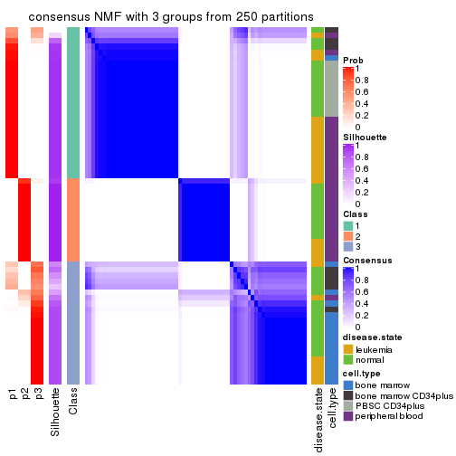
consensus_heatmap(res, k = 4)
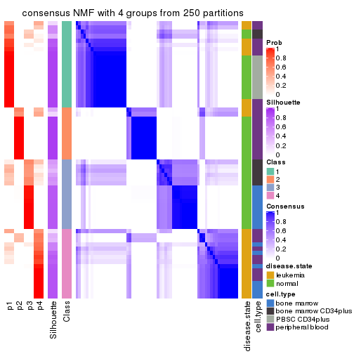
consensus_heatmap(res, k = 5)
consensus_heatmap(res, k = 6)
Heatmaps for the membership of samples in all partitions to see how consistent they are:
membership_heatmap(res, k = 2)
membership_heatmap(res, k = 3)
membership_heatmap(res, k = 4)
membership_heatmap(res, k = 5)
membership_heatmap(res, k = 6)
As soon as we have had the classes for columns, we can look for signatures which are significantly different between classes which can be candidate marks for certain classes. Following are the heatmaps for signatures.
Signature heatmaps where rows are scaled:
get_signatures(res, k = 2)
get_signatures(res, k = 3)
get_signatures(res, k = 4)
get_signatures(res, k = 5)
get_signatures(res, k = 6)
Signature heatmaps where rows are not scaled:
get_signatures(res, k = 2, scale_rows = FALSE)
get_signatures(res, k = 3, scale_rows = FALSE)
get_signatures(res, k = 4, scale_rows = FALSE)
get_signatures(res, k = 5, scale_rows = FALSE)
get_signatures(res, k = 6, scale_rows = FALSE)
Compare the overlap of signatures from different k:
compare_signatures(res)
get_signature() returns a data frame invisibly. TO get the list of signatures, the function
call should be assigned to a variable explicitly. In following code, if plot argument is set
to FALSE, no heatmap is plotted while only the differential analysis is performed.
# code only for demonstration
tb = get_signature(res, k = ..., plot = FALSE)
An example of the output of tb is:
#> which_row fdr mean_1 mean_2 scaled_mean_1 scaled_mean_2 km
#> 1 38 0.042760348 8.373488 9.131774 -0.5533452 0.5164555 1
#> 2 40 0.018707592 7.106213 8.469186 -0.6173731 0.5762149 1
#> 3 55 0.019134737 10.221463 11.207825 -0.6159697 0.5749050 1
#> 4 59 0.006059896 5.921854 7.869574 -0.6899429 0.6439467 1
#> 5 60 0.018055526 8.928898 10.211722 -0.6204761 0.5791110 1
#> 6 98 0.009384629 15.714769 14.887706 0.6635654 -0.6193277 2
...
The columns in tb are:
which_row: row indices corresponding to the input matrix.fdr: FDR for the differential test. mean_x: The mean value in group x.scaled_mean_x: The mean value in group x after rows are scaled.km: Row groups if k-means clustering is applied to rows.UMAP plot which shows how samples are separated.
dimension_reduction(res, k = 2, method = "UMAP")

dimension_reduction(res, k = 3, method = "UMAP")
dimension_reduction(res, k = 4, method = "UMAP")
dimension_reduction(res, k = 5, method = "UMAP")
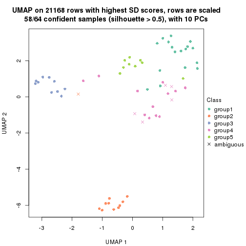
dimension_reduction(res, k = 6, method = "UMAP")
Following heatmap shows how subgroups are split when increasing k:
collect_classes(res)
Test correlation between subgroups and known annotations. If the known annotation is numeric, one-way ANOVA test is applied, and if the known annotation is discrete, chi-squared contingency table test is applied.
test_to_known_factors(res)
#> n disease.state(p) cell.type(p) k
#> SD:NMF 63 2.00e-02 6.81e-04 2
#> SD:NMF 59 4.30e-01 5.06e-11 3
#> SD:NMF 54 8.85e-08 2.21e-09 4
#> SD:NMF 58 3.12e-07 1.61e-18 5
#> SD:NMF 62 2.77e-09 8.27e-22 6
If matrix rows can be associated to genes, consider to use GO_Enrichment(res,
...) to perform function enrichment for the signature genes.
The object with results only for a single top-value method and a single partition method can be extracted as:
res = res_list["CV", "hclust"]
# you can also extract it by
# res = res_list["CV:hclust"]
A summary of res and all the functions that can be applied to it:
res
#> A 'ConsensusPartition' object with k = 2, 3, 4, 5, 6.
#> On a matrix with 21168 rows and 64 columns.
#> Top rows (1000, 2000, 3000, 4000, 5000) are extracted by 'CV' method.
#> Subgroups are detected by 'hclust' method.
#> Performed in total 1250 partitions by row resampling.
#> Best k for subgroups seems to be 3.
#>
#> Following methods can be applied to this 'ConsensusPartition' object:
#> [1] "cola_report" "collect_classes" "collect_plots"
#> [4] "collect_stats" "colnames" "compare_signatures"
#> [7] "consensus_heatmap" "dimension_reduction" "functional_enrichment"
#> [10] "get_anno_col" "get_anno" "get_classes"
#> [13] "get_consensus" "get_matrix" "get_membership"
#> [16] "get_param" "get_signatures" "get_stats"
#> [19] "is_best_k" "is_stable_k" "membership_heatmap"
#> [22] "ncol" "nrow" "plot_ecdf"
#> [25] "rownames" "select_partition_number" "show"
#> [28] "suggest_best_k" "test_to_known_factors"
collect_plots() function collects all the plots made from res for all k (number of partitions)
into one single page to provide an easy and fast comparison between different k.
collect_plots(res)
The plots are:
k and the heatmap of
predicted classes for each k.k.k.k.All the plots in panels can be made by individual functions and they are plotted later in this section.
select_partition_number() produces several plots showing different
statistics for choosing “optimized” k. There are following statistics:
k;k, the area increased is defined as \(A_k - A_{k-1}\).The detailed explanations of these statistics can be found in the cola vignette.
Generally speaking, lower PAC score, higher mean silhouette score or higher
concordance corresponds to better partition. Rand index and Jaccard index
measure how similar the current partition is compared to partition with k-1.
If they are too similar, we won't accept k is better than k-1.
select_partition_number(res)
The numeric values for all these statistics can be obtained by get_stats().
get_stats(res)
#> k 1-PAC mean_silhouette concordance area_increased Rand Jaccard
#> 2 2 0.596 0.862 0.930 0.3801 0.635 0.635
#> 3 3 0.796 0.866 0.928 0.5959 0.768 0.635
#> 4 4 0.793 0.760 0.879 0.1044 0.937 0.843
#> 5 5 0.814 0.765 0.894 0.1068 0.926 0.786
#> 6 6 0.787 0.767 0.856 0.0927 0.917 0.700
suggest_best_k() suggests the best \(k\) based on these statistics. The rules are as follows:
NA.suggest_best_k(res)
#> [1] 3
Following shows the table of the partitions (You need to click the show/hide
code output link to see it). The membership matrix (columns with name p*)
is inferred by
clue::cl_consensus()
function with the SE method. Basically the value in the membership matrix
represents the probability to belong to a certain group. The finall class
label for an item is determined with the group with highest probability it
belongs to.
In get_classes() function, the entropy is calculated from the membership
matrix and the silhouette score is calculated from the consensus matrix.
cbind(get_classes(res, k = 2), get_membership(res, k = 2))
#> class entropy silhouette p1 p2
#> GSM239371 1 0.000 0.915 1.000 0.000
#> GSM239487 1 0.827 0.707 0.740 0.260
#> GSM239489 1 0.204 0.897 0.968 0.032
#> GSM239492 1 0.000 0.915 1.000 0.000
#> GSM239497 1 0.827 0.707 0.740 0.260
#> GSM239520 1 0.827 0.707 0.740 0.260
#> GSM240427 1 0.000 0.915 1.000 0.000
#> GSM239345 1 0.000 0.915 1.000 0.000
#> GSM239346 2 0.738 0.777 0.208 0.792
#> GSM239348 1 0.000 0.915 1.000 0.000
#> GSM239363 2 0.738 0.777 0.208 0.792
#> GSM239460 1 0.260 0.889 0.956 0.044
#> GSM239485 1 0.000 0.915 1.000 0.000
#> GSM239488 2 0.738 0.777 0.208 0.792
#> GSM239490 1 0.000 0.915 1.000 0.000
#> GSM239491 1 0.000 0.915 1.000 0.000
#> GSM239493 1 0.000 0.915 1.000 0.000
#> GSM239494 1 0.000 0.915 1.000 0.000
#> GSM239495 1 0.000 0.915 1.000 0.000
#> GSM239496 1 0.000 0.915 1.000 0.000
#> GSM239498 2 0.738 0.777 0.208 0.792
#> GSM239516 2 0.738 0.777 0.208 0.792
#> GSM239580 1 0.000 0.915 1.000 0.000
#> GSM240405 1 0.000 0.915 1.000 0.000
#> GSM240406 1 0.000 0.915 1.000 0.000
#> GSM240429 1 0.000 0.915 1.000 0.000
#> GSM239323 1 0.821 0.713 0.744 0.256
#> GSM239324 1 0.821 0.713 0.744 0.256
#> GSM239326 1 0.821 0.713 0.744 0.256
#> GSM239328 1 0.821 0.713 0.744 0.256
#> GSM239329 1 0.821 0.713 0.744 0.256
#> GSM239331 1 0.821 0.713 0.744 0.256
#> GSM239332 1 0.821 0.713 0.744 0.256
#> GSM239333 1 0.821 0.713 0.744 0.256
#> GSM239334 1 0.821 0.713 0.744 0.256
#> GSM239335 1 0.821 0.713 0.744 0.256
#> GSM240430 2 0.000 0.912 0.000 1.000
#> GSM240431 2 0.000 0.912 0.000 1.000
#> GSM240432 2 0.000 0.912 0.000 1.000
#> GSM240433 2 0.000 0.912 0.000 1.000
#> GSM240494 2 0.000 0.912 0.000 1.000
#> GSM240495 2 0.000 0.912 0.000 1.000
#> GSM240496 2 0.000 0.912 0.000 1.000
#> GSM240497 2 0.000 0.912 0.000 1.000
#> GSM240498 2 0.000 0.912 0.000 1.000
#> GSM240499 2 0.000 0.912 0.000 1.000
#> GSM239170 1 0.000 0.915 1.000 0.000
#> GSM239338 1 0.000 0.915 1.000 0.000
#> GSM239339 1 0.000 0.915 1.000 0.000
#> GSM239340 1 0.000 0.915 1.000 0.000
#> GSM239341 1 0.000 0.915 1.000 0.000
#> GSM239342 1 0.000 0.915 1.000 0.000
#> GSM239343 1 0.000 0.915 1.000 0.000
#> GSM239344 1 0.000 0.915 1.000 0.000
#> GSM240500 1 0.000 0.915 1.000 0.000
#> GSM240501 1 0.000 0.915 1.000 0.000
#> GSM240502 1 0.000 0.915 1.000 0.000
#> GSM240503 1 0.000 0.915 1.000 0.000
#> GSM240504 1 0.000 0.915 1.000 0.000
#> GSM240505 1 0.000 0.915 1.000 0.000
#> GSM240506 1 0.000 0.915 1.000 0.000
#> GSM240507 1 0.000 0.915 1.000 0.000
#> GSM240508 1 0.000 0.915 1.000 0.000
#> GSM240509 1 0.000 0.915 1.000 0.000
cbind(get_classes(res, k = 3), get_membership(res, k = 3))
#> class entropy silhouette p1 p2 p3
#> GSM239371 1 0.1529 0.929 0.960 0.000 0.040
#> GSM239487 3 0.0592 0.994 0.012 0.000 0.988
#> GSM239489 1 0.3412 0.866 0.876 0.000 0.124
#> GSM239492 1 0.1529 0.929 0.960 0.000 0.040
#> GSM239497 3 0.0592 0.994 0.012 0.000 0.988
#> GSM239520 3 0.0592 0.994 0.012 0.000 0.988
#> GSM240427 1 0.1529 0.929 0.960 0.000 0.040
#> GSM239345 1 0.0000 0.942 1.000 0.000 0.000
#> GSM239346 2 0.6291 0.390 0.000 0.532 0.468
#> GSM239348 1 0.5431 0.695 0.716 0.000 0.284
#> GSM239363 2 0.6291 0.390 0.000 0.532 0.468
#> GSM239460 1 0.5948 0.561 0.640 0.000 0.360
#> GSM239485 1 0.4605 0.792 0.796 0.000 0.204
#> GSM239488 2 0.6291 0.390 0.000 0.532 0.468
#> GSM239490 1 0.4605 0.792 0.796 0.000 0.204
#> GSM239491 1 0.5431 0.695 0.716 0.000 0.284
#> GSM239493 1 0.1529 0.929 0.960 0.000 0.040
#> GSM239494 1 0.1529 0.929 0.960 0.000 0.040
#> GSM239495 1 0.1529 0.929 0.960 0.000 0.040
#> GSM239496 1 0.5431 0.695 0.716 0.000 0.284
#> GSM239498 2 0.6291 0.390 0.000 0.532 0.468
#> GSM239516 2 0.6291 0.390 0.000 0.532 0.468
#> GSM239580 1 0.0892 0.936 0.980 0.000 0.020
#> GSM240405 1 0.0000 0.942 1.000 0.000 0.000
#> GSM240406 1 0.2066 0.919 0.940 0.000 0.060
#> GSM240429 1 0.0000 0.942 1.000 0.000 0.000
#> GSM239323 3 0.0747 0.998 0.016 0.000 0.984
#> GSM239324 3 0.0747 0.998 0.016 0.000 0.984
#> GSM239326 3 0.0747 0.998 0.016 0.000 0.984
#> GSM239328 3 0.0747 0.998 0.016 0.000 0.984
#> GSM239329 3 0.0747 0.998 0.016 0.000 0.984
#> GSM239331 3 0.0747 0.998 0.016 0.000 0.984
#> GSM239332 3 0.0747 0.998 0.016 0.000 0.984
#> GSM239333 3 0.0747 0.998 0.016 0.000 0.984
#> GSM239334 3 0.0747 0.998 0.016 0.000 0.984
#> GSM239335 3 0.0747 0.998 0.016 0.000 0.984
#> GSM240430 2 0.0000 0.818 0.000 1.000 0.000
#> GSM240431 2 0.0000 0.818 0.000 1.000 0.000
#> GSM240432 2 0.0000 0.818 0.000 1.000 0.000
#> GSM240433 2 0.0000 0.818 0.000 1.000 0.000
#> GSM240494 2 0.0000 0.818 0.000 1.000 0.000
#> GSM240495 2 0.0000 0.818 0.000 1.000 0.000
#> GSM240496 2 0.0000 0.818 0.000 1.000 0.000
#> GSM240497 2 0.0000 0.818 0.000 1.000 0.000
#> GSM240498 2 0.0000 0.818 0.000 1.000 0.000
#> GSM240499 2 0.0000 0.818 0.000 1.000 0.000
#> GSM239170 1 0.0000 0.942 1.000 0.000 0.000
#> GSM239338 1 0.0000 0.942 1.000 0.000 0.000
#> GSM239339 1 0.0000 0.942 1.000 0.000 0.000
#> GSM239340 1 0.0000 0.942 1.000 0.000 0.000
#> GSM239341 1 0.0000 0.942 1.000 0.000 0.000
#> GSM239342 1 0.0000 0.942 1.000 0.000 0.000
#> GSM239343 1 0.0000 0.942 1.000 0.000 0.000
#> GSM239344 1 0.0000 0.942 1.000 0.000 0.000
#> GSM240500 1 0.0000 0.942 1.000 0.000 0.000
#> GSM240501 1 0.0000 0.942 1.000 0.000 0.000
#> GSM240502 1 0.0000 0.942 1.000 0.000 0.000
#> GSM240503 1 0.0000 0.942 1.000 0.000 0.000
#> GSM240504 1 0.0000 0.942 1.000 0.000 0.000
#> GSM240505 1 0.0000 0.942 1.000 0.000 0.000
#> GSM240506 1 0.0000 0.942 1.000 0.000 0.000
#> GSM240507 1 0.0000 0.942 1.000 0.000 0.000
#> GSM240508 1 0.0000 0.942 1.000 0.000 0.000
#> GSM240509 1 0.0000 0.942 1.000 0.000 0.000
cbind(get_classes(res, k = 4), get_membership(res, k = 4))
#> class entropy silhouette p1 p2 p3 p4
#> GSM239371 1 0.2868 0.723 0.864 0.000 0.000 0.136
#> GSM239487 3 0.5137 0.557 0.000 0.452 0.544 0.004
#> GSM239489 1 0.5109 0.414 0.744 0.060 0.000 0.196
#> GSM239492 1 0.2868 0.723 0.864 0.000 0.000 0.136
#> GSM239497 3 0.5137 0.557 0.000 0.452 0.544 0.004
#> GSM239520 3 0.5137 0.557 0.000 0.452 0.544 0.004
#> GSM240427 1 0.2868 0.723 0.864 0.000 0.000 0.136
#> GSM239345 1 0.0000 0.862 1.000 0.000 0.000 0.000
#> GSM239346 2 0.0469 0.634 0.000 0.988 0.012 0.000
#> GSM239348 4 0.4967 0.937 0.452 0.000 0.000 0.548
#> GSM239363 2 0.0469 0.634 0.000 0.988 0.012 0.000
#> GSM239460 4 0.6567 0.832 0.380 0.072 0.004 0.544
#> GSM239485 1 0.4981 -0.740 0.536 0.000 0.000 0.464
#> GSM239488 2 0.0469 0.634 0.000 0.988 0.012 0.000
#> GSM239490 1 0.4981 -0.740 0.536 0.000 0.000 0.464
#> GSM239491 4 0.4967 0.937 0.452 0.000 0.000 0.548
#> GSM239493 1 0.2868 0.723 0.864 0.000 0.000 0.136
#> GSM239494 1 0.2868 0.723 0.864 0.000 0.000 0.136
#> GSM239495 1 0.2868 0.723 0.864 0.000 0.000 0.136
#> GSM239496 4 0.4967 0.937 0.452 0.000 0.000 0.548
#> GSM239498 2 0.0469 0.634 0.000 0.988 0.012 0.000
#> GSM239516 2 0.0469 0.634 0.000 0.988 0.012 0.000
#> GSM239580 1 0.2530 0.749 0.888 0.000 0.000 0.112
#> GSM240405 1 0.0000 0.862 1.000 0.000 0.000 0.000
#> GSM240406 1 0.3172 0.675 0.840 0.000 0.000 0.160
#> GSM240429 1 0.0000 0.862 1.000 0.000 0.000 0.000
#> GSM239323 3 0.5137 0.894 0.004 0.000 0.544 0.452
#> GSM239324 3 0.5137 0.894 0.004 0.000 0.544 0.452
#> GSM239326 3 0.5137 0.894 0.004 0.000 0.544 0.452
#> GSM239328 3 0.5137 0.894 0.004 0.000 0.544 0.452
#> GSM239329 3 0.5137 0.894 0.004 0.000 0.544 0.452
#> GSM239331 3 0.5137 0.894 0.004 0.000 0.544 0.452
#> GSM239332 3 0.5137 0.894 0.004 0.000 0.544 0.452
#> GSM239333 3 0.5137 0.894 0.004 0.000 0.544 0.452
#> GSM239334 3 0.5137 0.894 0.004 0.000 0.544 0.452
#> GSM239335 3 0.5137 0.894 0.004 0.000 0.544 0.452
#> GSM240430 2 0.4972 0.844 0.000 0.544 0.456 0.000
#> GSM240431 2 0.4972 0.844 0.000 0.544 0.456 0.000
#> GSM240432 2 0.4972 0.844 0.000 0.544 0.456 0.000
#> GSM240433 2 0.4972 0.844 0.000 0.544 0.456 0.000
#> GSM240494 2 0.4972 0.844 0.000 0.544 0.456 0.000
#> GSM240495 2 0.4972 0.844 0.000 0.544 0.456 0.000
#> GSM240496 2 0.4972 0.844 0.000 0.544 0.456 0.000
#> GSM240497 2 0.4972 0.844 0.000 0.544 0.456 0.000
#> GSM240498 2 0.4972 0.844 0.000 0.544 0.456 0.000
#> GSM240499 2 0.4972 0.844 0.000 0.544 0.456 0.000
#> GSM239170 1 0.0188 0.862 0.996 0.000 0.000 0.004
#> GSM239338 1 0.0188 0.862 0.996 0.000 0.000 0.004
#> GSM239339 1 0.0188 0.862 0.996 0.000 0.000 0.004
#> GSM239340 1 0.0188 0.862 0.996 0.000 0.000 0.004
#> GSM239341 1 0.0188 0.862 0.996 0.000 0.000 0.004
#> GSM239342 1 0.0188 0.862 0.996 0.000 0.000 0.004
#> GSM239343 1 0.0188 0.862 0.996 0.000 0.000 0.004
#> GSM239344 1 0.0188 0.862 0.996 0.000 0.000 0.004
#> GSM240500 1 0.0000 0.862 1.000 0.000 0.000 0.000
#> GSM240501 1 0.0000 0.862 1.000 0.000 0.000 0.000
#> GSM240502 1 0.0000 0.862 1.000 0.000 0.000 0.000
#> GSM240503 1 0.0000 0.862 1.000 0.000 0.000 0.000
#> GSM240504 1 0.0000 0.862 1.000 0.000 0.000 0.000
#> GSM240505 1 0.0000 0.862 1.000 0.000 0.000 0.000
#> GSM240506 1 0.0000 0.862 1.000 0.000 0.000 0.000
#> GSM240507 1 0.0000 0.862 1.000 0.000 0.000 0.000
#> GSM240508 1 0.0000 0.862 1.000 0.000 0.000 0.000
#> GSM240509 1 0.0000 0.862 1.000 0.000 0.000 0.000
cbind(get_classes(res, k = 5), get_membership(res, k = 5))
#> class entropy silhouette p1 p2 p3 p4 p5
#> GSM239371 1 0.4242 0.398 0.572 0 0.000 0.428 0.000
#> GSM239487 3 0.0000 0.289 0.000 0 1.000 0.000 0.000
#> GSM239489 4 0.5547 -0.140 0.456 0 0.056 0.484 0.004
#> GSM239492 1 0.4256 0.394 0.564 0 0.000 0.436 0.000
#> GSM239497 3 0.0000 0.289 0.000 0 1.000 0.000 0.000
#> GSM239520 3 0.0000 0.289 0.000 0 1.000 0.000 0.000
#> GSM240427 1 0.4256 0.394 0.564 0 0.000 0.436 0.000
#> GSM239345 1 0.0963 0.806 0.964 0 0.000 0.036 0.000
#> GSM239346 5 0.4287 1.000 0.000 0 0.460 0.000 0.540
#> GSM239348 4 0.0510 0.688 0.016 0 0.000 0.984 0.000
#> GSM239363 5 0.4287 1.000 0.000 0 0.460 0.000 0.540
#> GSM239460 4 0.1990 0.637 0.004 0 0.068 0.920 0.008
#> GSM239485 4 0.3424 0.739 0.240 0 0.000 0.760 0.000
#> GSM239488 5 0.4287 1.000 0.000 0 0.460 0.000 0.540
#> GSM239490 4 0.3336 0.752 0.228 0 0.000 0.772 0.000
#> GSM239491 4 0.2561 0.756 0.144 0 0.000 0.856 0.000
#> GSM239493 1 0.4242 0.398 0.572 0 0.000 0.428 0.000
#> GSM239494 1 0.4242 0.398 0.572 0 0.000 0.428 0.000
#> GSM239495 1 0.4242 0.398 0.572 0 0.000 0.428 0.000
#> GSM239496 4 0.2516 0.757 0.140 0 0.000 0.860 0.000
#> GSM239498 5 0.4287 1.000 0.000 0 0.460 0.000 0.540
#> GSM239516 5 0.4287 1.000 0.000 0 0.460 0.000 0.540
#> GSM239580 1 0.4192 0.432 0.596 0 0.000 0.404 0.000
#> GSM240405 1 0.0963 0.806 0.964 0 0.000 0.036 0.000
#> GSM240406 1 0.4283 0.327 0.544 0 0.000 0.456 0.000
#> GSM240429 1 0.2516 0.739 0.860 0 0.000 0.140 0.000
#> GSM239323 3 0.4287 0.874 0.000 0 0.540 0.000 0.460
#> GSM239324 3 0.4287 0.874 0.000 0 0.540 0.000 0.460
#> GSM239326 3 0.4287 0.874 0.000 0 0.540 0.000 0.460
#> GSM239328 3 0.4287 0.874 0.000 0 0.540 0.000 0.460
#> GSM239329 3 0.4287 0.874 0.000 0 0.540 0.000 0.460
#> GSM239331 3 0.4287 0.874 0.000 0 0.540 0.000 0.460
#> GSM239332 3 0.4287 0.874 0.000 0 0.540 0.000 0.460
#> GSM239333 3 0.4287 0.874 0.000 0 0.540 0.000 0.460
#> GSM239334 3 0.4287 0.874 0.000 0 0.540 0.000 0.460
#> GSM239335 3 0.4287 0.874 0.000 0 0.540 0.000 0.460
#> GSM240430 2 0.0000 1.000 0.000 1 0.000 0.000 0.000
#> GSM240431 2 0.0000 1.000 0.000 1 0.000 0.000 0.000
#> GSM240432 2 0.0000 1.000 0.000 1 0.000 0.000 0.000
#> GSM240433 2 0.0000 1.000 0.000 1 0.000 0.000 0.000
#> GSM240494 2 0.0000 1.000 0.000 1 0.000 0.000 0.000
#> GSM240495 2 0.0000 1.000 0.000 1 0.000 0.000 0.000
#> GSM240496 2 0.0000 1.000 0.000 1 0.000 0.000 0.000
#> GSM240497 2 0.0000 1.000 0.000 1 0.000 0.000 0.000
#> GSM240498 2 0.0000 1.000 0.000 1 0.000 0.000 0.000
#> GSM240499 2 0.0000 1.000 0.000 1 0.000 0.000 0.000
#> GSM239170 1 0.1043 0.815 0.960 0 0.000 0.040 0.000
#> GSM239338 1 0.1043 0.815 0.960 0 0.000 0.040 0.000
#> GSM239339 1 0.1043 0.815 0.960 0 0.000 0.040 0.000
#> GSM239340 1 0.1043 0.815 0.960 0 0.000 0.040 0.000
#> GSM239341 1 0.1043 0.815 0.960 0 0.000 0.040 0.000
#> GSM239342 1 0.1043 0.815 0.960 0 0.000 0.040 0.000
#> GSM239343 1 0.1043 0.815 0.960 0 0.000 0.040 0.000
#> GSM239344 1 0.1043 0.815 0.960 0 0.000 0.040 0.000
#> GSM240500 1 0.0162 0.815 0.996 0 0.000 0.004 0.000
#> GSM240501 1 0.0162 0.815 0.996 0 0.000 0.004 0.000
#> GSM240502 1 0.0162 0.815 0.996 0 0.000 0.004 0.000
#> GSM240503 1 0.0162 0.815 0.996 0 0.000 0.004 0.000
#> GSM240504 1 0.0162 0.815 0.996 0 0.000 0.004 0.000
#> GSM240505 1 0.0162 0.815 0.996 0 0.000 0.004 0.000
#> GSM240506 1 0.0162 0.815 0.996 0 0.000 0.004 0.000
#> GSM240507 1 0.0162 0.815 0.996 0 0.000 0.004 0.000
#> GSM240508 1 0.0162 0.815 0.996 0 0.000 0.004 0.000
#> GSM240509 1 0.0162 0.815 0.996 0 0.000 0.004 0.000
cbind(get_classes(res, k = 6), get_membership(res, k = 6))
#> class entropy silhouette p1 p2 p3 p4 p5 p6
#> GSM239371 1 0.5574 0.3973 0.504 0 0.000 0.344 0.152 0.000
#> GSM239487 3 0.4850 0.2886 0.000 0 0.524 0.024 0.020 0.432
#> GSM239489 4 0.6735 0.0292 0.348 0 0.000 0.416 0.176 0.060
#> GSM239492 1 0.5979 0.2715 0.424 0 0.000 0.340 0.236 0.000
#> GSM239497 3 0.4850 0.2886 0.000 0 0.524 0.024 0.020 0.432
#> GSM239520 3 0.4850 0.2886 0.000 0 0.524 0.024 0.020 0.432
#> GSM240427 1 0.5979 0.2715 0.424 0 0.000 0.340 0.236 0.000
#> GSM239345 1 0.0972 0.6885 0.964 0 0.000 0.028 0.008 0.000
#> GSM239346 6 0.0000 1.0000 0.000 0 0.000 0.000 0.000 1.000
#> GSM239348 4 0.1327 0.7064 0.000 0 0.000 0.936 0.064 0.000
#> GSM239363 6 0.0000 1.0000 0.000 0 0.000 0.000 0.000 1.000
#> GSM239460 4 0.2740 0.6746 0.000 0 0.000 0.864 0.060 0.076
#> GSM239485 4 0.4062 0.7413 0.176 0 0.000 0.744 0.080 0.000
#> GSM239488 6 0.0000 1.0000 0.000 0 0.000 0.000 0.000 1.000
#> GSM239490 4 0.3893 0.7556 0.156 0 0.000 0.764 0.080 0.000
#> GSM239491 4 0.2709 0.7838 0.132 0 0.000 0.848 0.020 0.000
#> GSM239493 1 0.5574 0.3973 0.504 0 0.000 0.344 0.152 0.000
#> GSM239494 1 0.5574 0.3973 0.504 0 0.000 0.344 0.152 0.000
#> GSM239495 1 0.5574 0.3973 0.504 0 0.000 0.344 0.152 0.000
#> GSM239496 4 0.2667 0.7844 0.128 0 0.000 0.852 0.020 0.000
#> GSM239498 6 0.0000 1.0000 0.000 0 0.000 0.000 0.000 1.000
#> GSM239516 6 0.0000 1.0000 0.000 0 0.000 0.000 0.000 1.000
#> GSM239580 1 0.5487 0.4226 0.532 0 0.000 0.320 0.148 0.000
#> GSM240405 1 0.0713 0.6913 0.972 0 0.000 0.028 0.000 0.000
#> GSM240406 1 0.5629 0.3400 0.472 0 0.000 0.376 0.152 0.000
#> GSM240429 1 0.3014 0.6054 0.832 0 0.000 0.036 0.132 0.000
#> GSM239323 3 0.0000 0.8730 0.000 0 1.000 0.000 0.000 0.000
#> GSM239324 3 0.0000 0.8730 0.000 0 1.000 0.000 0.000 0.000
#> GSM239326 3 0.0000 0.8730 0.000 0 1.000 0.000 0.000 0.000
#> GSM239328 3 0.0000 0.8730 0.000 0 1.000 0.000 0.000 0.000
#> GSM239329 3 0.0000 0.8730 0.000 0 1.000 0.000 0.000 0.000
#> GSM239331 3 0.0000 0.8730 0.000 0 1.000 0.000 0.000 0.000
#> GSM239332 3 0.0000 0.8730 0.000 0 1.000 0.000 0.000 0.000
#> GSM239333 3 0.0000 0.8730 0.000 0 1.000 0.000 0.000 0.000
#> GSM239334 3 0.0000 0.8730 0.000 0 1.000 0.000 0.000 0.000
#> GSM239335 3 0.0000 0.8730 0.000 0 1.000 0.000 0.000 0.000
#> GSM240430 2 0.0000 1.0000 0.000 1 0.000 0.000 0.000 0.000
#> GSM240431 2 0.0000 1.0000 0.000 1 0.000 0.000 0.000 0.000
#> GSM240432 2 0.0000 1.0000 0.000 1 0.000 0.000 0.000 0.000
#> GSM240433 2 0.0000 1.0000 0.000 1 0.000 0.000 0.000 0.000
#> GSM240494 2 0.0000 1.0000 0.000 1 0.000 0.000 0.000 0.000
#> GSM240495 2 0.0000 1.0000 0.000 1 0.000 0.000 0.000 0.000
#> GSM240496 2 0.0000 1.0000 0.000 1 0.000 0.000 0.000 0.000
#> GSM240497 2 0.0000 1.0000 0.000 1 0.000 0.000 0.000 0.000
#> GSM240498 2 0.0000 1.0000 0.000 1 0.000 0.000 0.000 0.000
#> GSM240499 2 0.0000 1.0000 0.000 1 0.000 0.000 0.000 0.000
#> GSM239170 5 0.2597 1.0000 0.176 0 0.000 0.000 0.824 0.000
#> GSM239338 5 0.2597 1.0000 0.176 0 0.000 0.000 0.824 0.000
#> GSM239339 5 0.2597 1.0000 0.176 0 0.000 0.000 0.824 0.000
#> GSM239340 5 0.2597 1.0000 0.176 0 0.000 0.000 0.824 0.000
#> GSM239341 5 0.2597 1.0000 0.176 0 0.000 0.000 0.824 0.000
#> GSM239342 5 0.2597 1.0000 0.176 0 0.000 0.000 0.824 0.000
#> GSM239343 5 0.2597 1.0000 0.176 0 0.000 0.000 0.824 0.000
#> GSM239344 5 0.2597 1.0000 0.176 0 0.000 0.000 0.824 0.000
#> GSM240500 1 0.0632 0.7110 0.976 0 0.000 0.000 0.024 0.000
#> GSM240501 1 0.0632 0.7110 0.976 0 0.000 0.000 0.024 0.000
#> GSM240502 1 0.0632 0.7110 0.976 0 0.000 0.000 0.024 0.000
#> GSM240503 1 0.0632 0.7110 0.976 0 0.000 0.000 0.024 0.000
#> GSM240504 1 0.0632 0.7110 0.976 0 0.000 0.000 0.024 0.000
#> GSM240505 1 0.0632 0.7110 0.976 0 0.000 0.000 0.024 0.000
#> GSM240506 1 0.0632 0.7110 0.976 0 0.000 0.000 0.024 0.000
#> GSM240507 1 0.0632 0.7110 0.976 0 0.000 0.000 0.024 0.000
#> GSM240508 1 0.0632 0.7110 0.976 0 0.000 0.000 0.024 0.000
#> GSM240509 1 0.0632 0.7110 0.976 0 0.000 0.000 0.024 0.000
Heatmaps for the consensus matrix. It visualizes the probability of two samples to be in a same group.
consensus_heatmap(res, k = 2)
consensus_heatmap(res, k = 3)
consensus_heatmap(res, k = 4)
consensus_heatmap(res, k = 5)
consensus_heatmap(res, k = 6)
Heatmaps for the membership of samples in all partitions to see how consistent they are:
membership_heatmap(res, k = 2)
membership_heatmap(res, k = 3)
membership_heatmap(res, k = 4)
membership_heatmap(res, k = 5)
membership_heatmap(res, k = 6)
As soon as we have had the classes for columns, we can look for signatures which are significantly different between classes which can be candidate marks for certain classes. Following are the heatmaps for signatures.
Signature heatmaps where rows are scaled:
get_signatures(res, k = 2)
get_signatures(res, k = 3)
get_signatures(res, k = 4)
get_signatures(res, k = 5)
get_signatures(res, k = 6)
Signature heatmaps where rows are not scaled:
get_signatures(res, k = 2, scale_rows = FALSE)
get_signatures(res, k = 3, scale_rows = FALSE)
get_signatures(res, k = 4, scale_rows = FALSE)
get_signatures(res, k = 5, scale_rows = FALSE)
get_signatures(res, k = 6, scale_rows = FALSE)
Compare the overlap of signatures from different k:
compare_signatures(res)

get_signature() returns a data frame invisibly. TO get the list of signatures, the function
call should be assigned to a variable explicitly. In following code, if plot argument is set
to FALSE, no heatmap is plotted while only the differential analysis is performed.
# code only for demonstration
tb = get_signature(res, k = ..., plot = FALSE)
An example of the output of tb is:
#> which_row fdr mean_1 mean_2 scaled_mean_1 scaled_mean_2 km
#> 1 38 0.042760348 8.373488 9.131774 -0.5533452 0.5164555 1
#> 2 40 0.018707592 7.106213 8.469186 -0.6173731 0.5762149 1
#> 3 55 0.019134737 10.221463 11.207825 -0.6159697 0.5749050 1
#> 4 59 0.006059896 5.921854 7.869574 -0.6899429 0.6439467 1
#> 5 60 0.018055526 8.928898 10.211722 -0.6204761 0.5791110 1
#> 6 98 0.009384629 15.714769 14.887706 0.6635654 -0.6193277 2
...
The columns in tb are:
which_row: row indices corresponding to the input matrix.fdr: FDR for the differential test. mean_x: The mean value in group x.scaled_mean_x: The mean value in group x after rows are scaled.km: Row groups if k-means clustering is applied to rows.UMAP plot which shows how samples are separated.
dimension_reduction(res, k = 2, method = "UMAP")
dimension_reduction(res, k = 3, method = "UMAP")
dimension_reduction(res, k = 4, method = "UMAP")
dimension_reduction(res, k = 5, method = "UMAP")
dimension_reduction(res, k = 6, method = "UMAP")
Following heatmap shows how subgroups are split when increasing k:
collect_classes(res)

Test correlation between subgroups and known annotations. If the known annotation is numeric, one-way ANOVA test is applied, and if the known annotation is discrete, chi-squared contingency table test is applied.
test_to_known_factors(res)
#> n disease.state(p) cell.type(p) k
#> CV:hclust 64 7.21e-01 2.96e-05 2
#> CV:hclust 59 7.93e-03 4.37e-10 3
#> CV:hclust 61 4.78e-02 1.25e-12 4
#> CV:hclust 52 7.20e-08 3.16e-14 5
#> CV:hclust 52 1.32e-07 3.62e-22 6
If matrix rows can be associated to genes, consider to use GO_Enrichment(res,
...) to perform function enrichment for the signature genes.
The object with results only for a single top-value method and a single partition method can be extracted as:
res = res_list["CV", "kmeans"]
# you can also extract it by
# res = res_list["CV:kmeans"]
A summary of res and all the functions that can be applied to it:
res
#> A 'ConsensusPartition' object with k = 2, 3, 4, 5, 6.
#> On a matrix with 21168 rows and 64 columns.
#> Top rows (1000, 2000, 3000, 4000, 5000) are extracted by 'CV' method.
#> Subgroups are detected by 'kmeans' method.
#> Performed in total 1250 partitions by row resampling.
#> Best k for subgroups seems to be 2.
#>
#> Following methods can be applied to this 'ConsensusPartition' object:
#> [1] "cola_report" "collect_classes" "collect_plots"
#> [4] "collect_stats" "colnames" "compare_signatures"
#> [7] "consensus_heatmap" "dimension_reduction" "functional_enrichment"
#> [10] "get_anno_col" "get_anno" "get_classes"
#> [13] "get_consensus" "get_matrix" "get_membership"
#> [16] "get_param" "get_signatures" "get_stats"
#> [19] "is_best_k" "is_stable_k" "membership_heatmap"
#> [22] "ncol" "nrow" "plot_ecdf"
#> [25] "rownames" "select_partition_number" "show"
#> [28] "suggest_best_k" "test_to_known_factors"
collect_plots() function collects all the plots made from res for all k (number of partitions)
into one single page to provide an easy and fast comparison between different k.
collect_plots(res)
The plots are:
k and the heatmap of
predicted classes for each k.k.k.k.All the plots in panels can be made by individual functions and they are plotted later in this section.
select_partition_number() produces several plots showing different
statistics for choosing “optimized” k. There are following statistics:
k;k, the area increased is defined as \(A_k - A_{k-1}\).The detailed explanations of these statistics can be found in the cola vignette.
Generally speaking, lower PAC score, higher mean silhouette score or higher
concordance corresponds to better partition. Rand index and Jaccard index
measure how similar the current partition is compared to partition with k-1.
If they are too similar, we won't accept k is better than k-1.
select_partition_number(res)
The numeric values for all these statistics can be obtained by get_stats().
get_stats(res)
#> k 1-PAC mean_silhouette concordance area_increased Rand Jaccard
#> 2 2 0.725 0.897 0.937 0.4519 0.516 0.516
#> 3 3 0.590 0.676 0.768 0.3878 0.809 0.649
#> 4 4 0.637 0.638 0.744 0.1423 0.760 0.466
#> 5 5 0.646 0.603 0.685 0.0779 0.882 0.634
#> 6 6 0.755 0.498 0.682 0.0518 0.810 0.421
suggest_best_k() suggests the best \(k\) based on these statistics. The rules are as follows:
NA.suggest_best_k(res)
#> [1] 2
Following shows the table of the partitions (You need to click the show/hide
code output link to see it). The membership matrix (columns with name p*)
is inferred by
clue::cl_consensus()
function with the SE method. Basically the value in the membership matrix
represents the probability to belong to a certain group. The finall class
label for an item is determined with the group with highest probability it
belongs to.
In get_classes() function, the entropy is calculated from the membership
matrix and the silhouette score is calculated from the consensus matrix.
cbind(get_classes(res, k = 2), get_membership(res, k = 2))
#> class entropy silhouette p1 p2
#> GSM239371 1 0.0376 0.972 0.996 0.004
#> GSM239487 1 0.7453 0.691 0.788 0.212
#> GSM239489 1 0.1184 0.968 0.984 0.016
#> GSM239492 1 0.1184 0.968 0.984 0.016
#> GSM239497 1 0.2948 0.935 0.948 0.052
#> GSM239520 1 0.9754 0.142 0.592 0.408
#> GSM240427 1 0.1184 0.968 0.984 0.016
#> GSM239345 1 0.0000 0.973 1.000 0.000
#> GSM239346 2 0.2948 0.867 0.052 0.948
#> GSM239348 1 0.0376 0.972 0.996 0.004
#> GSM239363 2 0.3431 0.865 0.064 0.936
#> GSM239460 1 0.1843 0.952 0.972 0.028
#> GSM239485 1 0.0000 0.973 1.000 0.000
#> GSM239488 2 0.2948 0.867 0.052 0.948
#> GSM239490 1 0.0000 0.973 1.000 0.000
#> GSM239491 1 0.0000 0.973 1.000 0.000
#> GSM239493 1 0.0000 0.973 1.000 0.000
#> GSM239494 1 0.0000 0.973 1.000 0.000
#> GSM239495 1 0.0000 0.973 1.000 0.000
#> GSM239496 1 0.0000 0.973 1.000 0.000
#> GSM239498 2 0.3431 0.865 0.064 0.936
#> GSM239516 2 0.2948 0.867 0.052 0.948
#> GSM239580 1 0.0000 0.973 1.000 0.000
#> GSM240405 1 0.0000 0.973 1.000 0.000
#> GSM240406 1 0.0000 0.973 1.000 0.000
#> GSM240429 1 0.0000 0.973 1.000 0.000
#> GSM239323 2 0.8386 0.771 0.268 0.732
#> GSM239324 2 0.8386 0.771 0.268 0.732
#> GSM239326 2 0.8386 0.771 0.268 0.732
#> GSM239328 2 0.8386 0.771 0.268 0.732
#> GSM239329 2 0.8386 0.771 0.268 0.732
#> GSM239331 2 0.8386 0.771 0.268 0.732
#> GSM239332 2 0.8386 0.771 0.268 0.732
#> GSM239333 2 0.8386 0.771 0.268 0.732
#> GSM239334 2 0.8386 0.771 0.268 0.732
#> GSM239335 2 0.8386 0.771 0.268 0.732
#> GSM240430 2 0.1184 0.864 0.016 0.984
#> GSM240431 2 0.1184 0.864 0.016 0.984
#> GSM240432 2 0.1184 0.864 0.016 0.984
#> GSM240433 2 0.1184 0.864 0.016 0.984
#> GSM240494 2 0.1184 0.864 0.016 0.984
#> GSM240495 2 0.1184 0.864 0.016 0.984
#> GSM240496 2 0.1184 0.864 0.016 0.984
#> GSM240497 2 0.1184 0.864 0.016 0.984
#> GSM240498 2 0.1184 0.864 0.016 0.984
#> GSM240499 2 0.1184 0.864 0.016 0.984
#> GSM239170 1 0.1184 0.968 0.984 0.016
#> GSM239338 1 0.1184 0.968 0.984 0.016
#> GSM239339 1 0.1184 0.968 0.984 0.016
#> GSM239340 1 0.1184 0.968 0.984 0.016
#> GSM239341 1 0.1184 0.968 0.984 0.016
#> GSM239342 1 0.1184 0.968 0.984 0.016
#> GSM239343 1 0.1184 0.968 0.984 0.016
#> GSM239344 1 0.1184 0.968 0.984 0.016
#> GSM240500 1 0.0000 0.973 1.000 0.000
#> GSM240501 1 0.0000 0.973 1.000 0.000
#> GSM240502 1 0.0000 0.973 1.000 0.000
#> GSM240503 1 0.0000 0.973 1.000 0.000
#> GSM240504 1 0.0000 0.973 1.000 0.000
#> GSM240505 1 0.0000 0.973 1.000 0.000
#> GSM240506 1 0.0000 0.973 1.000 0.000
#> GSM240507 1 0.0000 0.973 1.000 0.000
#> GSM240508 1 0.0000 0.973 1.000 0.000
#> GSM240509 1 0.0000 0.973 1.000 0.000
cbind(get_classes(res, k = 3), get_membership(res, k = 3))
#> class entropy silhouette p1 p2 p3
#> GSM239371 1 0.6931 0.762 0.640 0.328 0.032
#> GSM239487 3 0.7995 0.309 0.060 0.460 0.480
#> GSM239489 2 0.8405 -0.369 0.084 0.460 0.456
#> GSM239492 1 0.7044 0.751 0.620 0.348 0.032
#> GSM239497 2 0.8342 -0.373 0.080 0.460 0.460
#> GSM239520 3 0.7995 0.309 0.060 0.460 0.480
#> GSM240427 1 0.8069 0.572 0.476 0.460 0.064
#> GSM239345 1 0.4994 0.825 0.816 0.160 0.024
#> GSM239346 3 0.5397 0.575 0.000 0.280 0.720
#> GSM239348 1 0.6931 0.762 0.640 0.328 0.032
#> GSM239363 3 0.6280 0.437 0.000 0.460 0.540
#> GSM239460 2 0.8465 -0.365 0.088 0.460 0.452
#> GSM239485 1 0.4808 0.830 0.804 0.188 0.008
#> GSM239488 3 0.6079 0.517 0.000 0.388 0.612
#> GSM239490 1 0.4413 0.837 0.832 0.160 0.008
#> GSM239491 1 0.6141 0.801 0.736 0.232 0.032
#> GSM239493 1 0.6487 0.781 0.700 0.268 0.032
#> GSM239494 1 0.6487 0.781 0.700 0.268 0.032
#> GSM239495 1 0.6487 0.781 0.700 0.268 0.032
#> GSM239496 1 0.6183 0.800 0.732 0.236 0.032
#> GSM239498 3 0.6095 0.514 0.000 0.392 0.608
#> GSM239516 3 0.5397 0.575 0.000 0.280 0.720
#> GSM239580 1 0.6252 0.782 0.708 0.268 0.024
#> GSM240405 1 0.0424 0.846 0.992 0.008 0.000
#> GSM240406 1 0.6487 0.781 0.700 0.268 0.032
#> GSM240429 1 0.5167 0.821 0.804 0.172 0.024
#> GSM239323 3 0.0747 0.698 0.016 0.000 0.984
#> GSM239324 3 0.0747 0.698 0.016 0.000 0.984
#> GSM239326 3 0.0747 0.698 0.016 0.000 0.984
#> GSM239328 3 0.0747 0.698 0.016 0.000 0.984
#> GSM239329 3 0.0747 0.698 0.016 0.000 0.984
#> GSM239331 3 0.0747 0.698 0.016 0.000 0.984
#> GSM239332 3 0.0747 0.698 0.016 0.000 0.984
#> GSM239333 3 0.0747 0.698 0.016 0.000 0.984
#> GSM239334 3 0.0747 0.698 0.016 0.000 0.984
#> GSM239335 3 0.0747 0.698 0.016 0.000 0.984
#> GSM240430 2 0.6286 0.652 0.000 0.536 0.464
#> GSM240431 2 0.6286 0.652 0.000 0.536 0.464
#> GSM240432 2 0.6286 0.652 0.000 0.536 0.464
#> GSM240433 2 0.6286 0.652 0.000 0.536 0.464
#> GSM240494 2 0.6286 0.652 0.000 0.536 0.464
#> GSM240495 2 0.6286 0.652 0.000 0.536 0.464
#> GSM240496 2 0.6286 0.652 0.000 0.536 0.464
#> GSM240497 2 0.6286 0.652 0.000 0.536 0.464
#> GSM240498 2 0.6286 0.652 0.000 0.536 0.464
#> GSM240499 2 0.6286 0.652 0.000 0.536 0.464
#> GSM239170 1 0.3832 0.832 0.880 0.100 0.020
#> GSM239338 1 0.3832 0.832 0.880 0.100 0.020
#> GSM239339 1 0.3832 0.832 0.880 0.100 0.020
#> GSM239340 1 0.3832 0.832 0.880 0.100 0.020
#> GSM239341 1 0.3832 0.832 0.880 0.100 0.020
#> GSM239342 1 0.3832 0.832 0.880 0.100 0.020
#> GSM239343 1 0.3832 0.832 0.880 0.100 0.020
#> GSM239344 1 0.3832 0.832 0.880 0.100 0.020
#> GSM240500 1 0.0000 0.845 1.000 0.000 0.000
#> GSM240501 1 0.0000 0.845 1.000 0.000 0.000
#> GSM240502 1 0.0000 0.845 1.000 0.000 0.000
#> GSM240503 1 0.0000 0.845 1.000 0.000 0.000
#> GSM240504 1 0.0000 0.845 1.000 0.000 0.000
#> GSM240505 1 0.0000 0.845 1.000 0.000 0.000
#> GSM240506 1 0.0000 0.845 1.000 0.000 0.000
#> GSM240507 1 0.0000 0.845 1.000 0.000 0.000
#> GSM240508 1 0.0000 0.845 1.000 0.000 0.000
#> GSM240509 1 0.0000 0.845 1.000 0.000 0.000
cbind(get_classes(res, k = 4), get_membership(res, k = 4))
#> class entropy silhouette p1 p2 p3 p4
#> GSM239371 4 0.4800 0.3357 0.340 0.000 0.004 0.656
#> GSM239487 4 0.7128 0.3494 0.000 0.184 0.260 0.556
#> GSM239489 4 0.3107 0.5233 0.000 0.036 0.080 0.884
#> GSM239492 4 0.4976 0.3325 0.340 0.004 0.004 0.652
#> GSM239497 4 0.7082 0.3574 0.000 0.184 0.252 0.564
#> GSM239520 4 0.7128 0.3494 0.000 0.184 0.260 0.556
#> GSM240427 4 0.3793 0.4951 0.016 0.044 0.076 0.864
#> GSM239345 1 0.5007 0.2564 0.636 0.000 0.008 0.356
#> GSM239346 4 0.7310 0.1686 0.000 0.160 0.360 0.480
#> GSM239348 4 0.4800 0.3357 0.340 0.000 0.004 0.656
#> GSM239363 4 0.6994 0.3228 0.000 0.152 0.288 0.560
#> GSM239460 4 0.3333 0.5247 0.000 0.040 0.088 0.872
#> GSM239485 1 0.5000 0.0131 0.500 0.000 0.000 0.500
#> GSM239488 4 0.7121 0.2976 0.000 0.160 0.300 0.540
#> GSM239490 1 0.4967 0.1762 0.548 0.000 0.000 0.452
#> GSM239491 4 0.5039 0.2331 0.404 0.000 0.004 0.592
#> GSM239493 4 0.4872 0.3299 0.356 0.000 0.004 0.640
#> GSM239494 4 0.4872 0.3299 0.356 0.000 0.004 0.640
#> GSM239495 4 0.4837 0.3331 0.348 0.000 0.004 0.648
#> GSM239496 4 0.5050 0.2281 0.408 0.000 0.004 0.588
#> GSM239498 4 0.7121 0.2976 0.000 0.160 0.300 0.540
#> GSM239516 4 0.7310 0.1686 0.000 0.160 0.360 0.480
#> GSM239580 4 0.4978 0.3021 0.384 0.000 0.004 0.612
#> GSM240405 1 0.3105 0.6364 0.856 0.000 0.004 0.140
#> GSM240406 4 0.4872 0.3299 0.356 0.000 0.004 0.640
#> GSM240429 1 0.5070 0.2298 0.620 0.000 0.008 0.372
#> GSM239323 3 0.0000 0.9850 0.000 0.000 1.000 0.000
#> GSM239324 3 0.0336 0.9983 0.008 0.000 0.992 0.000
#> GSM239326 3 0.0336 0.9983 0.008 0.000 0.992 0.000
#> GSM239328 3 0.0336 0.9983 0.008 0.000 0.992 0.000
#> GSM239329 3 0.0336 0.9983 0.008 0.000 0.992 0.000
#> GSM239331 3 0.0336 0.9983 0.008 0.000 0.992 0.000
#> GSM239332 3 0.0336 0.9983 0.008 0.000 0.992 0.000
#> GSM239333 3 0.0336 0.9983 0.008 0.000 0.992 0.000
#> GSM239334 3 0.0336 0.9983 0.008 0.000 0.992 0.000
#> GSM239335 3 0.0336 0.9983 0.008 0.000 0.992 0.000
#> GSM240430 2 0.4382 0.9961 0.000 0.704 0.296 0.000
#> GSM240431 2 0.4382 0.9961 0.000 0.704 0.296 0.000
#> GSM240432 2 0.4382 0.9961 0.000 0.704 0.296 0.000
#> GSM240433 2 0.4382 0.9961 0.000 0.704 0.296 0.000
#> GSM240494 2 0.4382 0.9961 0.000 0.704 0.296 0.000
#> GSM240495 2 0.4382 0.9961 0.000 0.704 0.296 0.000
#> GSM240496 2 0.4820 0.9908 0.000 0.692 0.296 0.012
#> GSM240497 2 0.4820 0.9908 0.000 0.692 0.296 0.012
#> GSM240498 2 0.4820 0.9908 0.000 0.692 0.296 0.012
#> GSM240499 2 0.4382 0.9961 0.000 0.704 0.296 0.000
#> GSM239170 1 0.7091 0.6587 0.644 0.156 0.032 0.168
#> GSM239338 1 0.7091 0.6587 0.644 0.156 0.032 0.168
#> GSM239339 1 0.7091 0.6587 0.644 0.156 0.032 0.168
#> GSM239340 1 0.7091 0.6587 0.644 0.156 0.032 0.168
#> GSM239341 1 0.7091 0.6587 0.644 0.156 0.032 0.168
#> GSM239342 1 0.7091 0.6587 0.644 0.156 0.032 0.168
#> GSM239343 1 0.7091 0.6587 0.644 0.156 0.032 0.168
#> GSM239344 1 0.7091 0.6587 0.644 0.156 0.032 0.168
#> GSM240500 1 0.0188 0.7396 0.996 0.000 0.004 0.000
#> GSM240501 1 0.0188 0.7396 0.996 0.000 0.004 0.000
#> GSM240502 1 0.0188 0.7396 0.996 0.000 0.004 0.000
#> GSM240503 1 0.0188 0.7396 0.996 0.000 0.004 0.000
#> GSM240504 1 0.0188 0.7396 0.996 0.000 0.004 0.000
#> GSM240505 1 0.0188 0.7396 0.996 0.000 0.004 0.000
#> GSM240506 1 0.0188 0.7396 0.996 0.000 0.004 0.000
#> GSM240507 1 0.0188 0.7396 0.996 0.000 0.004 0.000
#> GSM240508 1 0.0188 0.7396 0.996 0.000 0.004 0.000
#> GSM240509 1 0.0188 0.7396 0.996 0.000 0.004 0.000
cbind(get_classes(res, k = 5), get_membership(res, k = 5))
#> class entropy silhouette p1 p2 p3 p4 p5
#> GSM239371 4 0.311 0.786 0.200 0.000 0.000 0.800 NA
#> GSM239487 3 0.683 0.308 0.000 0.000 0.336 0.336 NA
#> GSM239489 4 0.319 0.522 0.000 0.000 0.040 0.848 NA
#> GSM239492 4 0.325 0.781 0.184 0.000 0.000 0.808 NA
#> GSM239497 4 0.682 -0.361 0.000 0.000 0.312 0.356 NA
#> GSM239520 3 0.683 0.308 0.000 0.000 0.336 0.336 NA
#> GSM240427 4 0.104 0.638 0.000 0.000 0.004 0.964 NA
#> GSM239345 1 0.511 -0.317 0.508 0.000 0.000 0.456 NA
#> GSM239346 3 0.680 0.325 0.000 0.000 0.360 0.292 NA
#> GSM239348 4 0.424 0.777 0.192 0.000 0.000 0.756 NA
#> GSM239363 3 0.680 0.325 0.000 0.000 0.360 0.292 NA
#> GSM239460 4 0.476 0.463 0.000 0.000 0.080 0.716 NA
#> GSM239485 4 0.516 0.718 0.264 0.000 0.000 0.656 NA
#> GSM239488 3 0.680 0.325 0.000 0.000 0.360 0.292 NA
#> GSM239490 4 0.530 0.675 0.292 0.000 0.000 0.628 NA
#> GSM239491 4 0.506 0.737 0.248 0.000 0.000 0.672 NA
#> GSM239493 4 0.314 0.786 0.204 0.000 0.000 0.796 NA
#> GSM239494 4 0.314 0.786 0.204 0.000 0.000 0.796 NA
#> GSM239495 4 0.314 0.786 0.204 0.000 0.000 0.796 NA
#> GSM239496 4 0.506 0.737 0.248 0.000 0.000 0.672 NA
#> GSM239498 3 0.680 0.325 0.000 0.000 0.360 0.292 NA
#> GSM239516 3 0.680 0.325 0.000 0.000 0.360 0.292 NA
#> GSM239580 4 0.346 0.775 0.224 0.000 0.000 0.772 NA
#> GSM240405 1 0.469 0.208 0.680 0.000 0.000 0.276 NA
#> GSM240406 4 0.314 0.786 0.204 0.000 0.000 0.796 NA
#> GSM240429 1 0.505 -0.332 0.500 0.000 0.000 0.468 NA
#> GSM239323 3 0.343 0.514 0.000 0.220 0.776 0.000 NA
#> GSM239324 3 0.327 0.515 0.000 0.220 0.780 0.000 NA
#> GSM239326 3 0.327 0.515 0.000 0.220 0.780 0.000 NA
#> GSM239328 3 0.343 0.514 0.000 0.220 0.776 0.000 NA
#> GSM239329 3 0.402 0.512 0.000 0.220 0.752 0.000 NA
#> GSM239331 3 0.402 0.512 0.000 0.220 0.752 0.000 NA
#> GSM239332 3 0.402 0.512 0.000 0.220 0.752 0.000 NA
#> GSM239333 3 0.402 0.512 0.000 0.220 0.752 0.000 NA
#> GSM239334 3 0.327 0.515 0.000 0.220 0.780 0.000 NA
#> GSM239335 3 0.327 0.515 0.000 0.220 0.780 0.000 NA
#> GSM240430 2 0.000 0.978 0.000 1.000 0.000 0.000 NA
#> GSM240431 2 0.000 0.978 0.000 1.000 0.000 0.000 NA
#> GSM240432 2 0.029 0.976 0.000 0.992 0.000 0.000 NA
#> GSM240433 2 0.000 0.978 0.000 1.000 0.000 0.000 NA
#> GSM240494 2 0.000 0.978 0.000 1.000 0.000 0.000 NA
#> GSM240495 2 0.000 0.978 0.000 1.000 0.000 0.000 NA
#> GSM240496 2 0.177 0.951 0.000 0.924 0.000 0.004 NA
#> GSM240497 2 0.177 0.951 0.000 0.924 0.000 0.004 NA
#> GSM240498 2 0.177 0.951 0.000 0.924 0.000 0.004 NA
#> GSM240499 2 0.000 0.978 0.000 1.000 0.000 0.000 NA
#> GSM239170 1 0.565 0.595 0.492 0.000 0.008 0.056 NA
#> GSM239338 1 0.565 0.595 0.492 0.000 0.008 0.056 NA
#> GSM239339 1 0.565 0.595 0.492 0.000 0.008 0.056 NA
#> GSM239340 1 0.565 0.595 0.492 0.000 0.008 0.056 NA
#> GSM239341 1 0.565 0.595 0.492 0.000 0.008 0.056 NA
#> GSM239342 1 0.565 0.595 0.492 0.000 0.008 0.056 NA
#> GSM239343 1 0.565 0.595 0.492 0.000 0.008 0.056 NA
#> GSM239344 1 0.565 0.595 0.492 0.000 0.008 0.056 NA
#> GSM240500 1 0.000 0.681 1.000 0.000 0.000 0.000 NA
#> GSM240501 1 0.000 0.681 1.000 0.000 0.000 0.000 NA
#> GSM240502 1 0.000 0.681 1.000 0.000 0.000 0.000 NA
#> GSM240503 1 0.000 0.681 1.000 0.000 0.000 0.000 NA
#> GSM240504 1 0.000 0.681 1.000 0.000 0.000 0.000 NA
#> GSM240505 1 0.000 0.681 1.000 0.000 0.000 0.000 NA
#> GSM240506 1 0.000 0.681 1.000 0.000 0.000 0.000 NA
#> GSM240507 1 0.000 0.681 1.000 0.000 0.000 0.000 NA
#> GSM240508 1 0.000 0.681 1.000 0.000 0.000 0.000 NA
#> GSM240509 1 0.000 0.681 1.000 0.000 0.000 0.000 NA
cbind(get_classes(res, k = 6), get_membership(res, k = 6))
#> class entropy silhouette p1 p2 p3 p4 p5 p6
#> GSM239371 1 0.4124 -0.695 0.516 0.000 0.000 0.476 0.004 0.004
#> GSM239487 6 0.4460 0.878 0.000 0.036 0.064 0.152 0.000 0.748
#> GSM239489 4 0.5838 0.621 0.256 0.024 0.000 0.568 0.000 0.152
#> GSM239492 4 0.4199 0.668 0.444 0.000 0.000 0.544 0.004 0.008
#> GSM239497 6 0.4472 0.865 0.004 0.036 0.048 0.164 0.000 0.748
#> GSM239520 6 0.4460 0.878 0.000 0.036 0.064 0.152 0.000 0.748
#> GSM240427 4 0.5309 0.696 0.300 0.024 0.000 0.608 0.004 0.064
#> GSM239345 1 0.3589 -0.194 0.776 0.016 0.000 0.196 0.004 0.008
#> GSM239346 6 0.1387 0.931 0.000 0.000 0.068 0.000 0.000 0.932
#> GSM239348 1 0.4861 -0.520 0.648 0.024 0.000 0.288 0.004 0.036
#> GSM239363 6 0.1387 0.931 0.000 0.000 0.068 0.000 0.000 0.932
#> GSM239460 1 0.6284 -0.450 0.476 0.024 0.000 0.200 0.000 0.300
#> GSM239485 1 0.4317 -0.421 0.740 0.024 0.000 0.196 0.004 0.036
#> GSM239488 6 0.1387 0.931 0.000 0.000 0.068 0.000 0.000 0.932
#> GSM239490 1 0.4317 -0.421 0.740 0.024 0.000 0.196 0.004 0.036
#> GSM239491 1 0.4317 -0.421 0.740 0.024 0.000 0.196 0.004 0.036
#> GSM239493 1 0.4124 -0.695 0.516 0.000 0.000 0.476 0.004 0.004
#> GSM239494 1 0.4124 -0.695 0.516 0.000 0.000 0.476 0.004 0.004
#> GSM239495 1 0.4124 -0.695 0.516 0.000 0.000 0.476 0.004 0.004
#> GSM239496 1 0.4317 -0.421 0.740 0.024 0.000 0.196 0.004 0.036
#> GSM239498 6 0.1387 0.931 0.000 0.000 0.068 0.000 0.000 0.932
#> GSM239516 6 0.1387 0.931 0.000 0.000 0.068 0.000 0.000 0.932
#> GSM239580 4 0.4226 0.610 0.484 0.000 0.000 0.504 0.004 0.008
#> GSM240405 1 0.4642 0.119 0.752 0.040 0.000 0.068 0.132 0.008
#> GSM240406 1 0.4124 -0.695 0.516 0.000 0.000 0.476 0.004 0.004
#> GSM240429 1 0.3679 -0.201 0.764 0.016 0.000 0.208 0.004 0.008
#> GSM239323 3 0.0508 0.968 0.000 0.000 0.984 0.012 0.004 0.000
#> GSM239324 3 0.0000 0.974 0.000 0.000 1.000 0.000 0.000 0.000
#> GSM239326 3 0.0000 0.974 0.000 0.000 1.000 0.000 0.000 0.000
#> GSM239328 3 0.0146 0.973 0.000 0.000 0.996 0.000 0.004 0.000
#> GSM239329 3 0.1492 0.964 0.000 0.000 0.940 0.036 0.024 0.000
#> GSM239331 3 0.1492 0.964 0.000 0.000 0.940 0.036 0.024 0.000
#> GSM239332 3 0.1492 0.964 0.000 0.000 0.940 0.036 0.024 0.000
#> GSM239333 3 0.1492 0.964 0.000 0.000 0.940 0.036 0.024 0.000
#> GSM239334 3 0.0000 0.974 0.000 0.000 1.000 0.000 0.000 0.000
#> GSM239335 3 0.0000 0.974 0.000 0.000 1.000 0.000 0.000 0.000
#> GSM240430 2 0.2562 0.964 0.000 0.828 0.172 0.000 0.000 0.000
#> GSM240431 2 0.2703 0.964 0.000 0.824 0.172 0.000 0.004 0.000
#> GSM240432 2 0.2955 0.963 0.000 0.816 0.172 0.008 0.004 0.000
#> GSM240433 2 0.2912 0.962 0.000 0.816 0.172 0.000 0.012 0.000
#> GSM240494 2 0.2562 0.964 0.000 0.828 0.172 0.000 0.000 0.000
#> GSM240495 2 0.2562 0.964 0.000 0.828 0.172 0.000 0.000 0.000
#> GSM240496 2 0.4744 0.922 0.000 0.712 0.172 0.100 0.012 0.004
#> GSM240497 2 0.4744 0.922 0.000 0.712 0.172 0.100 0.012 0.004
#> GSM240498 2 0.4744 0.922 0.000 0.712 0.172 0.100 0.012 0.004
#> GSM240499 2 0.2703 0.964 0.000 0.824 0.172 0.000 0.004 0.000
#> GSM239170 5 0.1812 0.991 0.060 0.004 0.008 0.000 0.924 0.004
#> GSM239338 5 0.2181 0.991 0.060 0.008 0.008 0.004 0.912 0.008
#> GSM239339 5 0.2181 0.991 0.060 0.008 0.008 0.004 0.912 0.008
#> GSM239340 5 0.1956 0.992 0.060 0.004 0.008 0.004 0.920 0.004
#> GSM239341 5 0.1524 0.992 0.060 0.000 0.008 0.000 0.932 0.000
#> GSM239342 5 0.1524 0.992 0.060 0.000 0.008 0.000 0.932 0.000
#> GSM239343 5 0.1524 0.992 0.060 0.000 0.008 0.000 0.932 0.000
#> GSM239344 5 0.1956 0.992 0.060 0.004 0.008 0.004 0.920 0.004
#> GSM240500 1 0.7448 0.129 0.368 0.096 0.000 0.180 0.340 0.016
#> GSM240501 1 0.7448 0.129 0.368 0.096 0.000 0.180 0.340 0.016
#> GSM240502 1 0.7448 0.129 0.368 0.096 0.000 0.180 0.340 0.016
#> GSM240503 1 0.7448 0.129 0.368 0.096 0.000 0.180 0.340 0.016
#> GSM240504 1 0.7448 0.129 0.368 0.096 0.000 0.180 0.340 0.016
#> GSM240505 1 0.7448 0.129 0.368 0.096 0.000 0.180 0.340 0.016
#> GSM240506 1 0.7448 0.129 0.368 0.096 0.000 0.180 0.340 0.016
#> GSM240507 1 0.7448 0.129 0.368 0.096 0.000 0.180 0.340 0.016
#> GSM240508 1 0.7448 0.129 0.368 0.096 0.000 0.180 0.340 0.016
#> GSM240509 1 0.7448 0.129 0.368 0.096 0.000 0.180 0.340 0.016
Heatmaps for the consensus matrix. It visualizes the probability of two samples to be in a same group.
consensus_heatmap(res, k = 2)
consensus_heatmap(res, k = 3)
consensus_heatmap(res, k = 4)
consensus_heatmap(res, k = 5)
consensus_heatmap(res, k = 6)
Heatmaps for the membership of samples in all partitions to see how consistent they are:
membership_heatmap(res, k = 2)
membership_heatmap(res, k = 3)
membership_heatmap(res, k = 4)
membership_heatmap(res, k = 5)
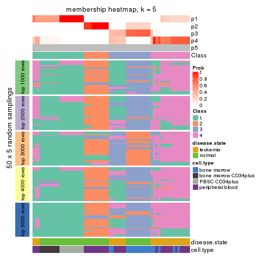
membership_heatmap(res, k = 6)
As soon as we have had the classes for columns, we can look for signatures which are significantly different between classes which can be candidate marks for certain classes. Following are the heatmaps for signatures.
Signature heatmaps where rows are scaled:
get_signatures(res, k = 2)
get_signatures(res, k = 3)
get_signatures(res, k = 4)
get_signatures(res, k = 5)
get_signatures(res, k = 6)
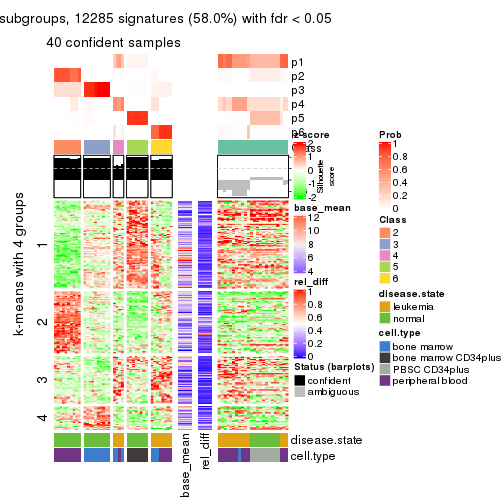
Signature heatmaps where rows are not scaled:
get_signatures(res, k = 2, scale_rows = FALSE)
get_signatures(res, k = 3, scale_rows = FALSE)
get_signatures(res, k = 4, scale_rows = FALSE)
get_signatures(res, k = 5, scale_rows = FALSE)
get_signatures(res, k = 6, scale_rows = FALSE)
Compare the overlap of signatures from different k:
compare_signatures(res)
get_signature() returns a data frame invisibly. TO get the list of signatures, the function
call should be assigned to a variable explicitly. In following code, if plot argument is set
to FALSE, no heatmap is plotted while only the differential analysis is performed.
# code only for demonstration
tb = get_signature(res, k = ..., plot = FALSE)
An example of the output of tb is:
#> which_row fdr mean_1 mean_2 scaled_mean_1 scaled_mean_2 km
#> 1 38 0.042760348 8.373488 9.131774 -0.5533452 0.5164555 1
#> 2 40 0.018707592 7.106213 8.469186 -0.6173731 0.5762149 1
#> 3 55 0.019134737 10.221463 11.207825 -0.6159697 0.5749050 1
#> 4 59 0.006059896 5.921854 7.869574 -0.6899429 0.6439467 1
#> 5 60 0.018055526 8.928898 10.211722 -0.6204761 0.5791110 1
#> 6 98 0.009384629 15.714769 14.887706 0.6635654 -0.6193277 2
...
The columns in tb are:
which_row: row indices corresponding to the input matrix.fdr: FDR for the differential test. mean_x: The mean value in group x.scaled_mean_x: The mean value in group x after rows are scaled.km: Row groups if k-means clustering is applied to rows.UMAP plot which shows how samples are separated.
dimension_reduction(res, k = 2, method = "UMAP")
dimension_reduction(res, k = 3, method = "UMAP")
dimension_reduction(res, k = 4, method = "UMAP")
dimension_reduction(res, k = 5, method = "UMAP")
dimension_reduction(res, k = 6, method = "UMAP")
Following heatmap shows how subgroups are split when increasing k:
collect_classes(res)
Test correlation between subgroups and known annotations. If the known annotation is numeric, one-way ANOVA test is applied, and if the known annotation is discrete, chi-squared contingency table test is applied.
test_to_known_factors(res)
#> n disease.state(p) cell.type(p) k
#> CV:kmeans 63 2.00e-02 6.81e-04 2
#> CV:kmeans 58 1.96e-02 3.85e-07 3
#> CV:kmeans 41 5.80e-06 3.86e-12 4
#> CV:kmeans 52 3.00e-11 1.05e-14 5
#> CV:kmeans 40 4.33e-08 2.05e-11 6
If matrix rows can be associated to genes, consider to use GO_Enrichment(res,
...) to perform function enrichment for the signature genes.
The object with results only for a single top-value method and a single partition method can be extracted as:
res = res_list["CV", "skmeans"]
# you can also extract it by
# res = res_list["CV:skmeans"]
A summary of res and all the functions that can be applied to it:
res
#> A 'ConsensusPartition' object with k = 2, 3, 4, 5, 6.
#> On a matrix with 21168 rows and 64 columns.
#> Top rows (1000, 2000, 3000, 4000, 5000) are extracted by 'CV' method.
#> Subgroups are detected by 'skmeans' method.
#> Performed in total 1250 partitions by row resampling.
#> Best k for subgroups seems to be 6.
#>
#> Following methods can be applied to this 'ConsensusPartition' object:
#> [1] "cola_report" "collect_classes" "collect_plots"
#> [4] "collect_stats" "colnames" "compare_signatures"
#> [7] "consensus_heatmap" "dimension_reduction" "functional_enrichment"
#> [10] "get_anno_col" "get_anno" "get_classes"
#> [13] "get_consensus" "get_matrix" "get_membership"
#> [16] "get_param" "get_signatures" "get_stats"
#> [19] "is_best_k" "is_stable_k" "membership_heatmap"
#> [22] "ncol" "nrow" "plot_ecdf"
#> [25] "rownames" "select_partition_number" "show"
#> [28] "suggest_best_k" "test_to_known_factors"
collect_plots() function collects all the plots made from res for all k (number of partitions)
into one single page to provide an easy and fast comparison between different k.
collect_plots(res)
The plots are:
k and the heatmap of
predicted classes for each k.k.k.k.All the plots in panels can be made by individual functions and they are plotted later in this section.
select_partition_number() produces several plots showing different
statistics for choosing “optimized” k. There are following statistics:
k;k, the area increased is defined as \(A_k - A_{k-1}\).The detailed explanations of these statistics can be found in the cola vignette.
Generally speaking, lower PAC score, higher mean silhouette score or higher
concordance corresponds to better partition. Rand index and Jaccard index
measure how similar the current partition is compared to partition with k-1.
If they are too similar, we won't accept k is better than k-1.
select_partition_number(res)

The numeric values for all these statistics can be obtained by get_stats().
get_stats(res)
#> k 1-PAC mean_silhouette concordance area_increased Rand Jaccard
#> 2 2 1.000 0.995 0.998 0.5035 0.497 0.497
#> 3 3 0.931 0.615 0.805 0.2182 0.943 0.885
#> 4 4 0.734 0.806 0.882 0.1817 0.750 0.474
#> 5 5 0.753 0.715 0.838 0.0982 0.887 0.606
#> 6 6 0.938 0.926 0.936 0.0531 0.933 0.686
suggest_best_k() suggests the best \(k\) based on these statistics. The rules are as follows:
NA.suggest_best_k(res)
#> [1] 6
#> attr(,"optional")
#> [1] 2 3
There is also optional best \(k\) = 2 3 that is worth to check.
Following shows the table of the partitions (You need to click the show/hide
code output link to see it). The membership matrix (columns with name p*)
is inferred by
clue::cl_consensus()
function with the SE method. Basically the value in the membership matrix
represents the probability to belong to a certain group. The finall class
label for an item is determined with the group with highest probability it
belongs to.
In get_classes() function, the entropy is calculated from the membership
matrix and the silhouette score is calculated from the consensus matrix.
cbind(get_classes(res, k = 2), get_membership(res, k = 2))
#> class entropy silhouette p1 p2
#> GSM239371 1 0.0000 1.000 1.000 0.000
#> GSM239487 2 0.0000 0.995 0.000 1.000
#> GSM239489 1 0.0376 0.996 0.996 0.004
#> GSM239492 1 0.0000 1.000 1.000 0.000
#> GSM239497 2 0.0000 0.995 0.000 1.000
#> GSM239520 2 0.0000 0.995 0.000 1.000
#> GSM240427 1 0.0000 1.000 1.000 0.000
#> GSM239345 1 0.0000 1.000 1.000 0.000
#> GSM239346 2 0.0000 0.995 0.000 1.000
#> GSM239348 1 0.0000 1.000 1.000 0.000
#> GSM239363 2 0.0000 0.995 0.000 1.000
#> GSM239460 2 0.6148 0.821 0.152 0.848
#> GSM239485 1 0.0000 1.000 1.000 0.000
#> GSM239488 2 0.0000 0.995 0.000 1.000
#> GSM239490 1 0.0000 1.000 1.000 0.000
#> GSM239491 1 0.0000 1.000 1.000 0.000
#> GSM239493 1 0.0000 1.000 1.000 0.000
#> GSM239494 1 0.0000 1.000 1.000 0.000
#> GSM239495 1 0.0000 1.000 1.000 0.000
#> GSM239496 1 0.0000 1.000 1.000 0.000
#> GSM239498 2 0.0000 0.995 0.000 1.000
#> GSM239516 2 0.0000 0.995 0.000 1.000
#> GSM239580 1 0.0000 1.000 1.000 0.000
#> GSM240405 1 0.0000 1.000 1.000 0.000
#> GSM240406 1 0.0000 1.000 1.000 0.000
#> GSM240429 1 0.0000 1.000 1.000 0.000
#> GSM239323 2 0.0000 0.995 0.000 1.000
#> GSM239324 2 0.0000 0.995 0.000 1.000
#> GSM239326 2 0.0000 0.995 0.000 1.000
#> GSM239328 2 0.0000 0.995 0.000 1.000
#> GSM239329 2 0.0000 0.995 0.000 1.000
#> GSM239331 2 0.0000 0.995 0.000 1.000
#> GSM239332 2 0.0000 0.995 0.000 1.000
#> GSM239333 2 0.0000 0.995 0.000 1.000
#> GSM239334 2 0.0000 0.995 0.000 1.000
#> GSM239335 2 0.0000 0.995 0.000 1.000
#> GSM240430 2 0.0000 0.995 0.000 1.000
#> GSM240431 2 0.0000 0.995 0.000 1.000
#> GSM240432 2 0.0000 0.995 0.000 1.000
#> GSM240433 2 0.0000 0.995 0.000 1.000
#> GSM240494 2 0.0000 0.995 0.000 1.000
#> GSM240495 2 0.0000 0.995 0.000 1.000
#> GSM240496 2 0.0000 0.995 0.000 1.000
#> GSM240497 2 0.0000 0.995 0.000 1.000
#> GSM240498 2 0.0000 0.995 0.000 1.000
#> GSM240499 2 0.0000 0.995 0.000 1.000
#> GSM239170 1 0.0000 1.000 1.000 0.000
#> GSM239338 1 0.0000 1.000 1.000 0.000
#> GSM239339 1 0.0000 1.000 1.000 0.000
#> GSM239340 1 0.0000 1.000 1.000 0.000
#> GSM239341 1 0.0000 1.000 1.000 0.000
#> GSM239342 1 0.0000 1.000 1.000 0.000
#> GSM239343 1 0.0000 1.000 1.000 0.000
#> GSM239344 1 0.0000 1.000 1.000 0.000
#> GSM240500 1 0.0000 1.000 1.000 0.000
#> GSM240501 1 0.0000 1.000 1.000 0.000
#> GSM240502 1 0.0000 1.000 1.000 0.000
#> GSM240503 1 0.0000 1.000 1.000 0.000
#> GSM240504 1 0.0000 1.000 1.000 0.000
#> GSM240505 1 0.0000 1.000 1.000 0.000
#> GSM240506 1 0.0000 1.000 1.000 0.000
#> GSM240507 1 0.0000 1.000 1.000 0.000
#> GSM240508 1 0.0000 1.000 1.000 0.000
#> GSM240509 1 0.0000 1.000 1.000 0.000
cbind(get_classes(res, k = 3), get_membership(res, k = 3))
#> class entropy silhouette p1 p2 p3
#> GSM239371 1 0.1031 0.975 0.976 0.000 0.024
#> GSM239487 3 0.0892 0.677 0.020 0.000 0.980
#> GSM239489 3 0.9025 0.314 0.284 0.172 0.544
#> GSM239492 1 0.1031 0.975 0.976 0.000 0.024
#> GSM239497 3 0.0892 0.677 0.020 0.000 0.980
#> GSM239520 3 0.0983 0.671 0.016 0.004 0.980
#> GSM240427 1 0.2537 0.922 0.920 0.000 0.080
#> GSM239345 1 0.0892 0.979 0.980 0.000 0.020
#> GSM239346 2 0.6286 0.383 0.000 0.536 0.464
#> GSM239348 1 0.1031 0.975 0.976 0.000 0.024
#> GSM239363 2 0.6291 0.380 0.000 0.532 0.468
#> GSM239460 2 0.7075 0.327 0.020 0.492 0.488
#> GSM239485 1 0.0892 0.977 0.980 0.000 0.020
#> GSM239488 2 0.6291 0.380 0.000 0.532 0.468
#> GSM239490 1 0.0892 0.977 0.980 0.000 0.020
#> GSM239491 1 0.0892 0.977 0.980 0.000 0.020
#> GSM239493 1 0.1031 0.975 0.976 0.000 0.024
#> GSM239494 1 0.1031 0.975 0.976 0.000 0.024
#> GSM239495 1 0.1031 0.975 0.976 0.000 0.024
#> GSM239496 1 0.0892 0.977 0.980 0.000 0.020
#> GSM239498 2 0.6291 0.380 0.000 0.532 0.468
#> GSM239516 2 0.6286 0.383 0.000 0.536 0.464
#> GSM239580 1 0.1643 0.976 0.956 0.000 0.044
#> GSM240405 1 0.0892 0.979 0.980 0.000 0.020
#> GSM240406 1 0.1031 0.975 0.976 0.000 0.024
#> GSM240429 1 0.0892 0.979 0.980 0.000 0.020
#> GSM239323 2 0.6308 -0.240 0.000 0.508 0.492
#> GSM239324 2 0.6308 -0.240 0.000 0.508 0.492
#> GSM239326 2 0.6308 -0.240 0.000 0.508 0.492
#> GSM239328 2 0.6308 -0.240 0.000 0.508 0.492
#> GSM239329 2 0.6308 -0.240 0.000 0.508 0.492
#> GSM239331 2 0.6308 -0.240 0.000 0.508 0.492
#> GSM239332 2 0.6308 -0.240 0.000 0.508 0.492
#> GSM239333 2 0.6308 -0.240 0.000 0.508 0.492
#> GSM239334 2 0.6308 -0.240 0.000 0.508 0.492
#> GSM239335 2 0.6308 -0.240 0.000 0.508 0.492
#> GSM240430 2 0.6215 0.399 0.000 0.572 0.428
#> GSM240431 2 0.6215 0.399 0.000 0.572 0.428
#> GSM240432 2 0.6215 0.399 0.000 0.572 0.428
#> GSM240433 2 0.6215 0.399 0.000 0.572 0.428
#> GSM240494 2 0.6215 0.399 0.000 0.572 0.428
#> GSM240495 2 0.6215 0.399 0.000 0.572 0.428
#> GSM240496 2 0.6215 0.399 0.000 0.572 0.428
#> GSM240497 2 0.6215 0.399 0.000 0.572 0.428
#> GSM240498 2 0.6215 0.399 0.000 0.572 0.428
#> GSM240499 2 0.6215 0.399 0.000 0.572 0.428
#> GSM239170 1 0.0000 0.981 1.000 0.000 0.000
#> GSM239338 1 0.0000 0.981 1.000 0.000 0.000
#> GSM239339 1 0.0000 0.981 1.000 0.000 0.000
#> GSM239340 1 0.0000 0.981 1.000 0.000 0.000
#> GSM239341 1 0.0000 0.981 1.000 0.000 0.000
#> GSM239342 1 0.0000 0.981 1.000 0.000 0.000
#> GSM239343 1 0.0000 0.981 1.000 0.000 0.000
#> GSM239344 1 0.0000 0.981 1.000 0.000 0.000
#> GSM240500 1 0.0892 0.979 0.980 0.000 0.020
#> GSM240501 1 0.0892 0.979 0.980 0.000 0.020
#> GSM240502 1 0.0892 0.979 0.980 0.000 0.020
#> GSM240503 1 0.0892 0.979 0.980 0.000 0.020
#> GSM240504 1 0.0892 0.979 0.980 0.000 0.020
#> GSM240505 1 0.0892 0.979 0.980 0.000 0.020
#> GSM240506 1 0.0892 0.979 0.980 0.000 0.020
#> GSM240507 1 0.0892 0.979 0.980 0.000 0.020
#> GSM240508 1 0.0892 0.979 0.980 0.000 0.020
#> GSM240509 1 0.0892 0.979 0.980 0.000 0.020
cbind(get_classes(res, k = 4), get_membership(res, k = 4))
#> class entropy silhouette p1 p2 p3 p4
#> GSM239371 4 0.3942 0.714 0.236 0.000 0.000 0.764
#> GSM239487 4 0.1489 0.658 0.000 0.044 0.004 0.952
#> GSM239489 4 0.0657 0.679 0.000 0.012 0.004 0.984
#> GSM239492 4 0.4018 0.709 0.224 0.000 0.004 0.772
#> GSM239497 4 0.1489 0.658 0.000 0.044 0.004 0.952
#> GSM239520 4 0.3937 0.458 0.000 0.188 0.012 0.800
#> GSM240427 4 0.0188 0.685 0.000 0.000 0.004 0.996
#> GSM239345 1 0.0921 0.843 0.972 0.000 0.000 0.028
#> GSM239346 2 0.3837 0.827 0.000 0.776 0.000 0.224
#> GSM239348 4 0.3907 0.713 0.232 0.000 0.000 0.768
#> GSM239363 2 0.3907 0.821 0.000 0.768 0.000 0.232
#> GSM239460 4 0.2011 0.634 0.000 0.080 0.000 0.920
#> GSM239485 4 0.4985 0.438 0.468 0.000 0.000 0.532
#> GSM239488 2 0.3873 0.824 0.000 0.772 0.000 0.228
#> GSM239490 1 0.4804 0.117 0.616 0.000 0.000 0.384
#> GSM239491 4 0.4967 0.482 0.452 0.000 0.000 0.548
#> GSM239493 4 0.4522 0.699 0.320 0.000 0.000 0.680
#> GSM239494 4 0.4454 0.706 0.308 0.000 0.000 0.692
#> GSM239495 4 0.4382 0.710 0.296 0.000 0.000 0.704
#> GSM239496 4 0.4916 0.545 0.424 0.000 0.000 0.576
#> GSM239498 2 0.3873 0.824 0.000 0.772 0.000 0.228
#> GSM239516 2 0.3837 0.827 0.000 0.776 0.000 0.224
#> GSM239580 4 0.4925 0.574 0.428 0.000 0.000 0.572
#> GSM240405 1 0.0188 0.860 0.996 0.000 0.000 0.004
#> GSM240406 4 0.4477 0.704 0.312 0.000 0.000 0.688
#> GSM240429 1 0.1637 0.816 0.940 0.000 0.000 0.060
#> GSM239323 3 0.0336 1.000 0.000 0.008 0.992 0.000
#> GSM239324 3 0.0336 1.000 0.000 0.008 0.992 0.000
#> GSM239326 3 0.0336 1.000 0.000 0.008 0.992 0.000
#> GSM239328 3 0.0336 1.000 0.000 0.008 0.992 0.000
#> GSM239329 3 0.0336 1.000 0.000 0.008 0.992 0.000
#> GSM239331 3 0.0336 1.000 0.000 0.008 0.992 0.000
#> GSM239332 3 0.0336 1.000 0.000 0.008 0.992 0.000
#> GSM239333 3 0.0336 1.000 0.000 0.008 0.992 0.000
#> GSM239334 3 0.0336 1.000 0.000 0.008 0.992 0.000
#> GSM239335 3 0.0336 1.000 0.000 0.008 0.992 0.000
#> GSM240430 2 0.0469 0.917 0.000 0.988 0.012 0.000
#> GSM240431 2 0.0469 0.917 0.000 0.988 0.012 0.000
#> GSM240432 2 0.0469 0.917 0.000 0.988 0.012 0.000
#> GSM240433 2 0.0469 0.917 0.000 0.988 0.012 0.000
#> GSM240494 2 0.0469 0.917 0.000 0.988 0.012 0.000
#> GSM240495 2 0.0469 0.917 0.000 0.988 0.012 0.000
#> GSM240496 2 0.0469 0.917 0.000 0.988 0.012 0.000
#> GSM240497 2 0.0469 0.917 0.000 0.988 0.012 0.000
#> GSM240498 2 0.0469 0.917 0.000 0.988 0.012 0.000
#> GSM240499 2 0.0469 0.917 0.000 0.988 0.012 0.000
#> GSM239170 1 0.3933 0.782 0.792 0.000 0.008 0.200
#> GSM239338 1 0.3933 0.782 0.792 0.000 0.008 0.200
#> GSM239339 1 0.3933 0.782 0.792 0.000 0.008 0.200
#> GSM239340 1 0.3933 0.782 0.792 0.000 0.008 0.200
#> GSM239341 1 0.3933 0.782 0.792 0.000 0.008 0.200
#> GSM239342 1 0.3933 0.782 0.792 0.000 0.008 0.200
#> GSM239343 1 0.3933 0.782 0.792 0.000 0.008 0.200
#> GSM239344 1 0.3933 0.782 0.792 0.000 0.008 0.200
#> GSM240500 1 0.0000 0.862 1.000 0.000 0.000 0.000
#> GSM240501 1 0.0000 0.862 1.000 0.000 0.000 0.000
#> GSM240502 1 0.0000 0.862 1.000 0.000 0.000 0.000
#> GSM240503 1 0.0000 0.862 1.000 0.000 0.000 0.000
#> GSM240504 1 0.0000 0.862 1.000 0.000 0.000 0.000
#> GSM240505 1 0.0000 0.862 1.000 0.000 0.000 0.000
#> GSM240506 1 0.0000 0.862 1.000 0.000 0.000 0.000
#> GSM240507 1 0.0000 0.862 1.000 0.000 0.000 0.000
#> GSM240508 1 0.0000 0.862 1.000 0.000 0.000 0.000
#> GSM240509 1 0.0000 0.862 1.000 0.000 0.000 0.000
cbind(get_classes(res, k = 5), get_membership(res, k = 5))
#> class entropy silhouette p1 p2 p3 p4 p5
#> GSM239371 4 0.2127 0.683 0.108 0.000 0 0.892 0.000
#> GSM239487 5 0.4983 0.697 0.256 0.004 0 0.060 0.680
#> GSM239489 5 0.5227 0.657 0.116 0.000 0 0.208 0.676
#> GSM239492 4 0.4114 0.458 0.376 0.000 0 0.624 0.000
#> GSM239497 5 0.4983 0.697 0.256 0.004 0 0.060 0.680
#> GSM239520 5 0.5082 0.701 0.256 0.012 0 0.052 0.680
#> GSM240427 4 0.5432 0.362 0.392 0.000 0 0.544 0.064
#> GSM239345 4 0.6809 -0.272 0.312 0.000 0 0.368 0.320
#> GSM239346 5 0.3966 0.686 0.000 0.336 0 0.000 0.664
#> GSM239348 4 0.1671 0.709 0.076 0.000 0 0.924 0.000
#> GSM239363 5 0.3895 0.704 0.000 0.320 0 0.000 0.680
#> GSM239460 5 0.3932 0.551 0.000 0.000 0 0.328 0.672
#> GSM239485 4 0.3003 0.688 0.092 0.000 0 0.864 0.044
#> GSM239488 5 0.3895 0.704 0.000 0.320 0 0.000 0.680
#> GSM239490 4 0.3090 0.680 0.088 0.000 0 0.860 0.052
#> GSM239491 4 0.2830 0.697 0.080 0.000 0 0.876 0.044
#> GSM239493 4 0.0290 0.736 0.008 0.000 0 0.992 0.000
#> GSM239494 4 0.0404 0.736 0.012 0.000 0 0.988 0.000
#> GSM239495 4 0.1043 0.730 0.040 0.000 0 0.960 0.000
#> GSM239496 4 0.2153 0.717 0.044 0.000 0 0.916 0.040
#> GSM239498 5 0.3895 0.704 0.000 0.320 0 0.000 0.680
#> GSM239516 5 0.3949 0.692 0.000 0.332 0 0.000 0.668
#> GSM239580 4 0.4072 0.575 0.108 0.000 0 0.792 0.100
#> GSM240405 1 0.6497 0.544 0.472 0.000 0 0.208 0.320
#> GSM240406 4 0.0404 0.736 0.012 0.000 0 0.988 0.000
#> GSM240429 4 0.6781 -0.241 0.292 0.000 0 0.388 0.320
#> GSM239323 3 0.0000 1.000 0.000 0.000 1 0.000 0.000
#> GSM239324 3 0.0000 1.000 0.000 0.000 1 0.000 0.000
#> GSM239326 3 0.0000 1.000 0.000 0.000 1 0.000 0.000
#> GSM239328 3 0.0000 1.000 0.000 0.000 1 0.000 0.000
#> GSM239329 3 0.0000 1.000 0.000 0.000 1 0.000 0.000
#> GSM239331 3 0.0000 1.000 0.000 0.000 1 0.000 0.000
#> GSM239332 3 0.0000 1.000 0.000 0.000 1 0.000 0.000
#> GSM239333 3 0.0000 1.000 0.000 0.000 1 0.000 0.000
#> GSM239334 3 0.0000 1.000 0.000 0.000 1 0.000 0.000
#> GSM239335 3 0.0000 1.000 0.000 0.000 1 0.000 0.000
#> GSM240430 2 0.0000 1.000 0.000 1.000 0 0.000 0.000
#> GSM240431 2 0.0000 1.000 0.000 1.000 0 0.000 0.000
#> GSM240432 2 0.0000 1.000 0.000 1.000 0 0.000 0.000
#> GSM240433 2 0.0000 1.000 0.000 1.000 0 0.000 0.000
#> GSM240494 2 0.0000 1.000 0.000 1.000 0 0.000 0.000
#> GSM240495 2 0.0000 1.000 0.000 1.000 0 0.000 0.000
#> GSM240496 2 0.0000 1.000 0.000 1.000 0 0.000 0.000
#> GSM240497 2 0.0000 1.000 0.000 1.000 0 0.000 0.000
#> GSM240498 2 0.0000 1.000 0.000 1.000 0 0.000 0.000
#> GSM240499 2 0.0000 1.000 0.000 1.000 0 0.000 0.000
#> GSM239170 1 0.2127 0.497 0.892 0.000 0 0.108 0.000
#> GSM239338 1 0.2127 0.497 0.892 0.000 0 0.108 0.000
#> GSM239339 1 0.2127 0.497 0.892 0.000 0 0.108 0.000
#> GSM239340 1 0.2127 0.497 0.892 0.000 0 0.108 0.000
#> GSM239341 1 0.2127 0.497 0.892 0.000 0 0.108 0.000
#> GSM239342 1 0.2127 0.497 0.892 0.000 0 0.108 0.000
#> GSM239343 1 0.2127 0.497 0.892 0.000 0 0.108 0.000
#> GSM239344 1 0.2127 0.497 0.892 0.000 0 0.108 0.000
#> GSM240500 1 0.6043 0.643 0.540 0.000 0 0.140 0.320
#> GSM240501 1 0.6043 0.643 0.540 0.000 0 0.140 0.320
#> GSM240502 1 0.6043 0.643 0.540 0.000 0 0.140 0.320
#> GSM240503 1 0.6043 0.643 0.540 0.000 0 0.140 0.320
#> GSM240504 1 0.6043 0.643 0.540 0.000 0 0.140 0.320
#> GSM240505 1 0.6043 0.643 0.540 0.000 0 0.140 0.320
#> GSM240506 1 0.6043 0.643 0.540 0.000 0 0.140 0.320
#> GSM240507 1 0.6043 0.643 0.540 0.000 0 0.140 0.320
#> GSM240508 1 0.6043 0.643 0.540 0.000 0 0.140 0.320
#> GSM240509 1 0.6043 0.643 0.540 0.000 0 0.140 0.320
cbind(get_classes(res, k = 6), get_membership(res, k = 6))
#> class entropy silhouette p1 p2 p3 p4 p5 p6
#> GSM239371 4 0.0665 0.842 0.008 0.000 0.000 0.980 0.004 0.008
#> GSM239487 6 0.1682 0.913 0.000 0.000 0.000 0.020 0.052 0.928
#> GSM239489 6 0.2328 0.894 0.000 0.000 0.000 0.056 0.052 0.892
#> GSM239492 4 0.3925 0.612 0.000 0.000 0.000 0.724 0.236 0.040
#> GSM239497 6 0.1745 0.912 0.000 0.000 0.000 0.020 0.056 0.924
#> GSM239520 6 0.1682 0.913 0.000 0.000 0.000 0.020 0.052 0.928
#> GSM240427 4 0.5063 0.476 0.000 0.000 0.000 0.604 0.284 0.112
#> GSM239345 1 0.1265 0.898 0.948 0.000 0.000 0.044 0.008 0.000
#> GSM239346 6 0.2092 0.879 0.000 0.124 0.000 0.000 0.000 0.876
#> GSM239348 4 0.1406 0.836 0.008 0.004 0.000 0.952 0.020 0.016
#> GSM239363 6 0.1075 0.923 0.000 0.048 0.000 0.000 0.000 0.952
#> GSM239460 6 0.2723 0.823 0.000 0.004 0.000 0.120 0.020 0.856
#> GSM239485 4 0.4214 0.730 0.236 0.004 0.000 0.720 0.024 0.016
#> GSM239488 6 0.1267 0.922 0.000 0.060 0.000 0.000 0.000 0.940
#> GSM239490 4 0.4321 0.669 0.284 0.004 0.000 0.680 0.016 0.016
#> GSM239491 4 0.4083 0.751 0.216 0.004 0.000 0.740 0.024 0.016
#> GSM239493 4 0.0622 0.842 0.012 0.000 0.000 0.980 0.000 0.008
#> GSM239494 4 0.0665 0.842 0.008 0.000 0.000 0.980 0.004 0.008
#> GSM239495 4 0.0665 0.842 0.008 0.000 0.000 0.980 0.004 0.008
#> GSM239496 4 0.3700 0.783 0.176 0.004 0.000 0.784 0.020 0.016
#> GSM239498 6 0.1267 0.922 0.000 0.060 0.000 0.000 0.000 0.940
#> GSM239516 6 0.1714 0.905 0.000 0.092 0.000 0.000 0.000 0.908
#> GSM239580 4 0.1970 0.813 0.092 0.000 0.000 0.900 0.000 0.008
#> GSM240405 1 0.0632 0.925 0.976 0.000 0.000 0.024 0.000 0.000
#> GSM240406 4 0.0622 0.842 0.012 0.000 0.000 0.980 0.008 0.000
#> GSM240429 1 0.2302 0.833 0.872 0.000 0.000 0.120 0.008 0.000
#> GSM239323 3 0.0000 1.000 0.000 0.000 1.000 0.000 0.000 0.000
#> GSM239324 3 0.0000 1.000 0.000 0.000 1.000 0.000 0.000 0.000
#> GSM239326 3 0.0000 1.000 0.000 0.000 1.000 0.000 0.000 0.000
#> GSM239328 3 0.0000 1.000 0.000 0.000 1.000 0.000 0.000 0.000
#> GSM239329 3 0.0000 1.000 0.000 0.000 1.000 0.000 0.000 0.000
#> GSM239331 3 0.0000 1.000 0.000 0.000 1.000 0.000 0.000 0.000
#> GSM239332 3 0.0000 1.000 0.000 0.000 1.000 0.000 0.000 0.000
#> GSM239333 3 0.0000 1.000 0.000 0.000 1.000 0.000 0.000 0.000
#> GSM239334 3 0.0000 1.000 0.000 0.000 1.000 0.000 0.000 0.000
#> GSM239335 3 0.0000 1.000 0.000 0.000 1.000 0.000 0.000 0.000
#> GSM240430 2 0.0146 1.000 0.000 0.996 0.004 0.000 0.000 0.000
#> GSM240431 2 0.0146 1.000 0.000 0.996 0.004 0.000 0.000 0.000
#> GSM240432 2 0.0146 1.000 0.000 0.996 0.004 0.000 0.000 0.000
#> GSM240433 2 0.0146 1.000 0.000 0.996 0.004 0.000 0.000 0.000
#> GSM240494 2 0.0146 1.000 0.000 0.996 0.004 0.000 0.000 0.000
#> GSM240495 2 0.0146 1.000 0.000 0.996 0.004 0.000 0.000 0.000
#> GSM240496 2 0.0146 1.000 0.000 0.996 0.004 0.000 0.000 0.000
#> GSM240497 2 0.0146 1.000 0.000 0.996 0.004 0.000 0.000 0.000
#> GSM240498 2 0.0146 1.000 0.000 0.996 0.004 0.000 0.000 0.000
#> GSM240499 2 0.0146 1.000 0.000 0.996 0.004 0.000 0.000 0.000
#> GSM239170 5 0.1625 1.000 0.060 0.000 0.000 0.012 0.928 0.000
#> GSM239338 5 0.1625 1.000 0.060 0.000 0.000 0.012 0.928 0.000
#> GSM239339 5 0.1625 1.000 0.060 0.000 0.000 0.012 0.928 0.000
#> GSM239340 5 0.1625 1.000 0.060 0.000 0.000 0.012 0.928 0.000
#> GSM239341 5 0.1625 1.000 0.060 0.000 0.000 0.012 0.928 0.000
#> GSM239342 5 0.1625 1.000 0.060 0.000 0.000 0.012 0.928 0.000
#> GSM239343 5 0.1625 1.000 0.060 0.000 0.000 0.012 0.928 0.000
#> GSM239344 5 0.1625 1.000 0.060 0.000 0.000 0.012 0.928 0.000
#> GSM240500 1 0.0865 0.972 0.964 0.000 0.000 0.000 0.036 0.000
#> GSM240501 1 0.0865 0.972 0.964 0.000 0.000 0.000 0.036 0.000
#> GSM240502 1 0.0865 0.972 0.964 0.000 0.000 0.000 0.036 0.000
#> GSM240503 1 0.0865 0.972 0.964 0.000 0.000 0.000 0.036 0.000
#> GSM240504 1 0.0865 0.972 0.964 0.000 0.000 0.000 0.036 0.000
#> GSM240505 1 0.0865 0.972 0.964 0.000 0.000 0.000 0.036 0.000
#> GSM240506 1 0.0865 0.972 0.964 0.000 0.000 0.000 0.036 0.000
#> GSM240507 1 0.0865 0.972 0.964 0.000 0.000 0.000 0.036 0.000
#> GSM240508 1 0.0865 0.972 0.964 0.000 0.000 0.000 0.036 0.000
#> GSM240509 1 0.0865 0.972 0.964 0.000 0.000 0.000 0.036 0.000
Heatmaps for the consensus matrix. It visualizes the probability of two samples to be in a same group.
consensus_heatmap(res, k = 2)
consensus_heatmap(res, k = 3)
consensus_heatmap(res, k = 4)
consensus_heatmap(res, k = 5)
consensus_heatmap(res, k = 6)
Heatmaps for the membership of samples in all partitions to see how consistent they are:
membership_heatmap(res, k = 2)
membership_heatmap(res, k = 3)
membership_heatmap(res, k = 4)
membership_heatmap(res, k = 5)
membership_heatmap(res, k = 6)
As soon as we have had the classes for columns, we can look for signatures which are significantly different between classes which can be candidate marks for certain classes. Following are the heatmaps for signatures.
Signature heatmaps where rows are scaled:
get_signatures(res, k = 2)
get_signatures(res, k = 3)
get_signatures(res, k = 4)
get_signatures(res, k = 5)
get_signatures(res, k = 6)
Signature heatmaps where rows are not scaled:
get_signatures(res, k = 2, scale_rows = FALSE)
get_signatures(res, k = 3, scale_rows = FALSE)
get_signatures(res, k = 4, scale_rows = FALSE)
get_signatures(res, k = 5, scale_rows = FALSE)
get_signatures(res, k = 6, scale_rows = FALSE)
Compare the overlap of signatures from different k:
compare_signatures(res)
get_signature() returns a data frame invisibly. TO get the list of signatures, the function
call should be assigned to a variable explicitly. In following code, if plot argument is set
to FALSE, no heatmap is plotted while only the differential analysis is performed.
# code only for demonstration
tb = get_signature(res, k = ..., plot = FALSE)
An example of the output of tb is:
#> which_row fdr mean_1 mean_2 scaled_mean_1 scaled_mean_2 km
#> 1 38 0.042760348 8.373488 9.131774 -0.5533452 0.5164555 1
#> 2 40 0.018707592 7.106213 8.469186 -0.6173731 0.5762149 1
#> 3 55 0.019134737 10.221463 11.207825 -0.6159697 0.5749050 1
#> 4 59 0.006059896 5.921854 7.869574 -0.6899429 0.6439467 1
#> 5 60 0.018055526 8.928898 10.211722 -0.6204761 0.5791110 1
#> 6 98 0.009384629 15.714769 14.887706 0.6635654 -0.6193277 2
...
The columns in tb are:
which_row: row indices corresponding to the input matrix.fdr: FDR for the differential test. mean_x: The mean value in group x.scaled_mean_x: The mean value in group x after rows are scaled.km: Row groups if k-means clustering is applied to rows.UMAP plot which shows how samples are separated.
dimension_reduction(res, k = 2, method = "UMAP")
dimension_reduction(res, k = 3, method = "UMAP")
dimension_reduction(res, k = 4, method = "UMAP")
dimension_reduction(res, k = 5, method = "UMAP")
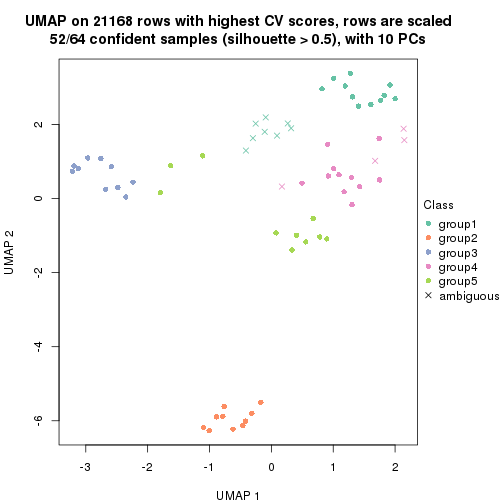
dimension_reduction(res, k = 6, method = "UMAP")
Following heatmap shows how subgroups are split when increasing k:
collect_classes(res)
Test correlation between subgroups and known annotations. If the known annotation is numeric, one-way ANOVA test is applied, and if the known annotation is discrete, chi-squared contingency table test is applied.
test_to_known_factors(res)
#> n disease.state(p) cell.type(p) k
#> CV:skmeans 64 2.43e-01 4.64e-05 2
#> CV:skmeans 37 2.48e-01 7.52e-04 3
#> CV:skmeans 60 1.50e-07 1.85e-14 4
#> CV:skmeans 52 8.27e-10 5.68e-14 5
#> CV:skmeans 63 2.84e-10 2.84e-23 6
If matrix rows can be associated to genes, consider to use GO_Enrichment(res,
...) to perform function enrichment for the signature genes.
The object with results only for a single top-value method and a single partition method can be extracted as:
res = res_list["CV", "pam"]
# you can also extract it by
# res = res_list["CV:pam"]
A summary of res and all the functions that can be applied to it:
res
#> A 'ConsensusPartition' object with k = 2, 3, 4, 5, 6.
#> On a matrix with 21168 rows and 64 columns.
#> Top rows (1000, 2000, 3000, 4000, 5000) are extracted by 'CV' method.
#> Subgroups are detected by 'pam' method.
#> Performed in total 1250 partitions by row resampling.
#> Best k for subgroups seems to be 6.
#>
#> Following methods can be applied to this 'ConsensusPartition' object:
#> [1] "cola_report" "collect_classes" "collect_plots"
#> [4] "collect_stats" "colnames" "compare_signatures"
#> [7] "consensus_heatmap" "dimension_reduction" "functional_enrichment"
#> [10] "get_anno_col" "get_anno" "get_classes"
#> [13] "get_consensus" "get_matrix" "get_membership"
#> [16] "get_param" "get_signatures" "get_stats"
#> [19] "is_best_k" "is_stable_k" "membership_heatmap"
#> [22] "ncol" "nrow" "plot_ecdf"
#> [25] "rownames" "select_partition_number" "show"
#> [28] "suggest_best_k" "test_to_known_factors"
collect_plots() function collects all the plots made from res for all k (number of partitions)
into one single page to provide an easy and fast comparison between different k.
collect_plots(res)
The plots are:
k and the heatmap of
predicted classes for each k.k.k.k.All the plots in panels can be made by individual functions and they are plotted later in this section.
select_partition_number() produces several plots showing different
statistics for choosing “optimized” k. There are following statistics:
k;k, the area increased is defined as \(A_k - A_{k-1}\).The detailed explanations of these statistics can be found in the cola vignette.
Generally speaking, lower PAC score, higher mean silhouette score or higher
concordance corresponds to better partition. Rand index and Jaccard index
measure how similar the current partition is compared to partition with k-1.
If they are too similar, we won't accept k is better than k-1.
select_partition_number(res)
The numeric values for all these statistics can be obtained by get_stats().
get_stats(res)
#> k 1-PAC mean_silhouette concordance area_increased Rand Jaccard
#> 2 2 0.994 0.968 0.977 0.4979 0.493 0.493
#> 3 3 0.999 0.968 0.985 0.2245 0.896 0.789
#> 4 4 0.800 0.925 0.928 0.2051 0.807 0.535
#> 5 5 0.855 0.861 0.901 0.0799 0.942 0.776
#> 6 6 0.988 0.950 0.980 0.0569 0.923 0.653
suggest_best_k() suggests the best \(k\) based on these statistics. The rules are as follows:
NA.suggest_best_k(res)
#> [1] 6
#> attr(,"optional")
#> [1] 2 3
There is also optional best \(k\) = 2 3 that is worth to check.
Following shows the table of the partitions (You need to click the show/hide
code output link to see it). The membership matrix (columns with name p*)
is inferred by
clue::cl_consensus()
function with the SE method. Basically the value in the membership matrix
represents the probability to belong to a certain group. The finall class
label for an item is determined with the group with highest probability it
belongs to.
In get_classes() function, the entropy is calculated from the membership
matrix and the silhouette score is calculated from the consensus matrix.
cbind(get_classes(res, k = 2), get_membership(res, k = 2))
#> class entropy silhouette p1 p2
#> GSM239371 1 0.0000 0.999 1.000 0.000
#> GSM239487 2 0.3879 0.944 0.076 0.924
#> GSM239489 2 0.3879 0.944 0.076 0.924
#> GSM239492 1 0.0000 0.999 1.000 0.000
#> GSM239497 2 0.4562 0.928 0.096 0.904
#> GSM239520 2 0.3879 0.944 0.076 0.924
#> GSM240427 2 0.8499 0.693 0.276 0.724
#> GSM239345 1 0.0000 0.999 1.000 0.000
#> GSM239346 2 0.0000 0.952 0.000 1.000
#> GSM239348 1 0.0000 0.999 1.000 0.000
#> GSM239363 2 0.0376 0.952 0.004 0.996
#> GSM239460 2 0.6712 0.842 0.176 0.824
#> GSM239485 1 0.0000 0.999 1.000 0.000
#> GSM239488 2 0.0000 0.952 0.000 1.000
#> GSM239490 1 0.0000 0.999 1.000 0.000
#> GSM239491 1 0.2043 0.964 0.968 0.032
#> GSM239493 1 0.0000 0.999 1.000 0.000
#> GSM239494 1 0.0000 0.999 1.000 0.000
#> GSM239495 1 0.0000 0.999 1.000 0.000
#> GSM239496 1 0.0000 0.999 1.000 0.000
#> GSM239498 2 0.0000 0.952 0.000 1.000
#> GSM239516 2 0.0000 0.952 0.000 1.000
#> GSM239580 1 0.0000 0.999 1.000 0.000
#> GSM240405 1 0.0000 0.999 1.000 0.000
#> GSM240406 1 0.0000 0.999 1.000 0.000
#> GSM240429 1 0.0000 0.999 1.000 0.000
#> GSM239323 2 0.3879 0.944 0.076 0.924
#> GSM239324 2 0.3879 0.944 0.076 0.924
#> GSM239326 2 0.2236 0.951 0.036 0.964
#> GSM239328 2 0.3879 0.944 0.076 0.924
#> GSM239329 2 0.3879 0.944 0.076 0.924
#> GSM239331 2 0.3879 0.944 0.076 0.924
#> GSM239332 2 0.3879 0.944 0.076 0.924
#> GSM239333 2 0.1843 0.951 0.028 0.972
#> GSM239334 2 0.3879 0.944 0.076 0.924
#> GSM239335 2 0.3879 0.944 0.076 0.924
#> GSM240430 2 0.0000 0.952 0.000 1.000
#> GSM240431 2 0.0000 0.952 0.000 1.000
#> GSM240432 2 0.0000 0.952 0.000 1.000
#> GSM240433 2 0.0000 0.952 0.000 1.000
#> GSM240494 2 0.0000 0.952 0.000 1.000
#> GSM240495 2 0.0000 0.952 0.000 1.000
#> GSM240496 2 0.0000 0.952 0.000 1.000
#> GSM240497 2 0.0000 0.952 0.000 1.000
#> GSM240498 2 0.0000 0.952 0.000 1.000
#> GSM240499 2 0.0000 0.952 0.000 1.000
#> GSM239170 1 0.0000 0.999 1.000 0.000
#> GSM239338 1 0.0000 0.999 1.000 0.000
#> GSM239339 1 0.0000 0.999 1.000 0.000
#> GSM239340 1 0.0000 0.999 1.000 0.000
#> GSM239341 1 0.0000 0.999 1.000 0.000
#> GSM239342 1 0.0000 0.999 1.000 0.000
#> GSM239343 1 0.0000 0.999 1.000 0.000
#> GSM239344 1 0.0000 0.999 1.000 0.000
#> GSM240500 1 0.0000 0.999 1.000 0.000
#> GSM240501 1 0.0000 0.999 1.000 0.000
#> GSM240502 1 0.0000 0.999 1.000 0.000
#> GSM240503 1 0.0000 0.999 1.000 0.000
#> GSM240504 1 0.0000 0.999 1.000 0.000
#> GSM240505 1 0.0000 0.999 1.000 0.000
#> GSM240506 1 0.0000 0.999 1.000 0.000
#> GSM240507 1 0.0000 0.999 1.000 0.000
#> GSM240508 1 0.0000 0.999 1.000 0.000
#> GSM240509 1 0.0000 0.999 1.000 0.000
cbind(get_classes(res, k = 3), get_membership(res, k = 3))
#> class entropy silhouette p1 p2 p3
#> GSM239371 1 0.0000 0.999 1.000 0.000 0.000
#> GSM239487 3 0.0000 0.945 0.000 0.000 1.000
#> GSM239489 3 0.0747 0.935 0.016 0.000 0.984
#> GSM239492 1 0.0000 0.999 1.000 0.000 0.000
#> GSM239497 3 0.2878 0.862 0.096 0.000 0.904
#> GSM239520 3 0.0000 0.945 0.000 0.000 1.000
#> GSM240427 3 0.4702 0.723 0.212 0.000 0.788
#> GSM239345 1 0.0000 0.999 1.000 0.000 0.000
#> GSM239346 3 0.3412 0.857 0.000 0.124 0.876
#> GSM239348 1 0.0000 0.999 1.000 0.000 0.000
#> GSM239363 3 0.0000 0.945 0.000 0.000 1.000
#> GSM239460 3 0.4555 0.739 0.200 0.000 0.800
#> GSM239485 1 0.0000 0.999 1.000 0.000 0.000
#> GSM239488 3 0.4555 0.771 0.000 0.200 0.800
#> GSM239490 1 0.0000 0.999 1.000 0.000 0.000
#> GSM239491 1 0.1289 0.963 0.968 0.000 0.032
#> GSM239493 1 0.0000 0.999 1.000 0.000 0.000
#> GSM239494 1 0.0000 0.999 1.000 0.000 0.000
#> GSM239495 1 0.0000 0.999 1.000 0.000 0.000
#> GSM239496 1 0.0000 0.999 1.000 0.000 0.000
#> GSM239498 3 0.0237 0.943 0.000 0.004 0.996
#> GSM239516 3 0.2711 0.888 0.000 0.088 0.912
#> GSM239580 1 0.0000 0.999 1.000 0.000 0.000
#> GSM240405 1 0.0000 0.999 1.000 0.000 0.000
#> GSM240406 1 0.0000 0.999 1.000 0.000 0.000
#> GSM240429 1 0.0000 0.999 1.000 0.000 0.000
#> GSM239323 3 0.0000 0.945 0.000 0.000 1.000
#> GSM239324 3 0.0000 0.945 0.000 0.000 1.000
#> GSM239326 3 0.0000 0.945 0.000 0.000 1.000
#> GSM239328 3 0.0000 0.945 0.000 0.000 1.000
#> GSM239329 3 0.0000 0.945 0.000 0.000 1.000
#> GSM239331 3 0.0000 0.945 0.000 0.000 1.000
#> GSM239332 3 0.0000 0.945 0.000 0.000 1.000
#> GSM239333 3 0.0000 0.945 0.000 0.000 1.000
#> GSM239334 3 0.0000 0.945 0.000 0.000 1.000
#> GSM239335 3 0.0000 0.945 0.000 0.000 1.000
#> GSM240430 2 0.0000 1.000 0.000 1.000 0.000
#> GSM240431 2 0.0000 1.000 0.000 1.000 0.000
#> GSM240432 2 0.0000 1.000 0.000 1.000 0.000
#> GSM240433 2 0.0000 1.000 0.000 1.000 0.000
#> GSM240494 2 0.0000 1.000 0.000 1.000 0.000
#> GSM240495 2 0.0000 1.000 0.000 1.000 0.000
#> GSM240496 2 0.0000 1.000 0.000 1.000 0.000
#> GSM240497 2 0.0000 1.000 0.000 1.000 0.000
#> GSM240498 2 0.0000 1.000 0.000 1.000 0.000
#> GSM240499 2 0.0000 1.000 0.000 1.000 0.000
#> GSM239170 1 0.0000 0.999 1.000 0.000 0.000
#> GSM239338 1 0.0000 0.999 1.000 0.000 0.000
#> GSM239339 1 0.0000 0.999 1.000 0.000 0.000
#> GSM239340 1 0.0000 0.999 1.000 0.000 0.000
#> GSM239341 1 0.0000 0.999 1.000 0.000 0.000
#> GSM239342 1 0.0000 0.999 1.000 0.000 0.000
#> GSM239343 1 0.0000 0.999 1.000 0.000 0.000
#> GSM239344 1 0.0000 0.999 1.000 0.000 0.000
#> GSM240500 1 0.0000 0.999 1.000 0.000 0.000
#> GSM240501 1 0.0000 0.999 1.000 0.000 0.000
#> GSM240502 1 0.0000 0.999 1.000 0.000 0.000
#> GSM240503 1 0.0000 0.999 1.000 0.000 0.000
#> GSM240504 1 0.0000 0.999 1.000 0.000 0.000
#> GSM240505 1 0.0000 0.999 1.000 0.000 0.000
#> GSM240506 1 0.0000 0.999 1.000 0.000 0.000
#> GSM240507 1 0.0000 0.999 1.000 0.000 0.000
#> GSM240508 1 0.0000 0.999 1.000 0.000 0.000
#> GSM240509 1 0.0000 0.999 1.000 0.000 0.000
cbind(get_classes(res, k = 4), get_membership(res, k = 4))
#> class entropy silhouette p1 p2 p3 p4
#> GSM239371 4 0.3356 0.926 0.176 0.000 0.000 0.824
#> GSM239487 4 0.0336 0.784 0.000 0.000 0.008 0.992
#> GSM239489 4 0.0000 0.789 0.000 0.000 0.000 1.000
#> GSM239492 4 0.3356 0.926 0.176 0.000 0.000 0.824
#> GSM239497 4 0.0188 0.787 0.000 0.000 0.004 0.996
#> GSM239520 3 0.3688 0.842 0.000 0.000 0.792 0.208
#> GSM240427 4 0.0188 0.793 0.004 0.000 0.000 0.996
#> GSM239345 1 0.0000 0.992 1.000 0.000 0.000 0.000
#> GSM239346 3 0.4595 0.838 0.000 0.044 0.780 0.176
#> GSM239348 4 0.3726 0.901 0.212 0.000 0.000 0.788
#> GSM239363 3 0.3356 0.857 0.000 0.000 0.824 0.176
#> GSM239460 3 0.4994 0.452 0.000 0.000 0.520 0.480
#> GSM239485 1 0.1211 0.956 0.960 0.000 0.000 0.040
#> GSM239488 3 0.5665 0.785 0.000 0.108 0.716 0.176
#> GSM239490 1 0.0817 0.975 0.976 0.000 0.000 0.024
#> GSM239491 4 0.3975 0.873 0.240 0.000 0.000 0.760
#> GSM239493 1 0.0592 0.983 0.984 0.000 0.000 0.016
#> GSM239494 1 0.0707 0.980 0.980 0.000 0.000 0.020
#> GSM239495 4 0.3610 0.912 0.200 0.000 0.000 0.800
#> GSM239496 4 0.4164 0.844 0.264 0.000 0.000 0.736
#> GSM239498 3 0.3539 0.856 0.000 0.004 0.820 0.176
#> GSM239516 3 0.4423 0.843 0.000 0.036 0.788 0.176
#> GSM239580 1 0.0188 0.990 0.996 0.000 0.000 0.004
#> GSM240405 1 0.0000 0.992 1.000 0.000 0.000 0.000
#> GSM240406 1 0.0707 0.980 0.980 0.000 0.000 0.020
#> GSM240429 1 0.0000 0.992 1.000 0.000 0.000 0.000
#> GSM239323 3 0.0000 0.902 0.000 0.000 1.000 0.000
#> GSM239324 3 0.0000 0.902 0.000 0.000 1.000 0.000
#> GSM239326 3 0.0000 0.902 0.000 0.000 1.000 0.000
#> GSM239328 3 0.0000 0.902 0.000 0.000 1.000 0.000
#> GSM239329 3 0.0000 0.902 0.000 0.000 1.000 0.000
#> GSM239331 3 0.0000 0.902 0.000 0.000 1.000 0.000
#> GSM239332 3 0.0000 0.902 0.000 0.000 1.000 0.000
#> GSM239333 3 0.0000 0.902 0.000 0.000 1.000 0.000
#> GSM239334 3 0.0000 0.902 0.000 0.000 1.000 0.000
#> GSM239335 3 0.0000 0.902 0.000 0.000 1.000 0.000
#> GSM240430 2 0.0000 1.000 0.000 1.000 0.000 0.000
#> GSM240431 2 0.0000 1.000 0.000 1.000 0.000 0.000
#> GSM240432 2 0.0000 1.000 0.000 1.000 0.000 0.000
#> GSM240433 2 0.0000 1.000 0.000 1.000 0.000 0.000
#> GSM240494 2 0.0000 1.000 0.000 1.000 0.000 0.000
#> GSM240495 2 0.0000 1.000 0.000 1.000 0.000 0.000
#> GSM240496 2 0.0000 1.000 0.000 1.000 0.000 0.000
#> GSM240497 2 0.0000 1.000 0.000 1.000 0.000 0.000
#> GSM240498 2 0.0000 1.000 0.000 1.000 0.000 0.000
#> GSM240499 2 0.0000 1.000 0.000 1.000 0.000 0.000
#> GSM239170 4 0.3400 0.927 0.180 0.000 0.000 0.820
#> GSM239338 4 0.3400 0.927 0.180 0.000 0.000 0.820
#> GSM239339 4 0.3400 0.927 0.180 0.000 0.000 0.820
#> GSM239340 4 0.3400 0.927 0.180 0.000 0.000 0.820
#> GSM239341 4 0.3400 0.927 0.180 0.000 0.000 0.820
#> GSM239342 4 0.3400 0.927 0.180 0.000 0.000 0.820
#> GSM239343 4 0.3400 0.927 0.180 0.000 0.000 0.820
#> GSM239344 4 0.3400 0.927 0.180 0.000 0.000 0.820
#> GSM240500 1 0.0000 0.992 1.000 0.000 0.000 0.000
#> GSM240501 1 0.0000 0.992 1.000 0.000 0.000 0.000
#> GSM240502 1 0.0000 0.992 1.000 0.000 0.000 0.000
#> GSM240503 1 0.0000 0.992 1.000 0.000 0.000 0.000
#> GSM240504 1 0.0000 0.992 1.000 0.000 0.000 0.000
#> GSM240505 1 0.0000 0.992 1.000 0.000 0.000 0.000
#> GSM240506 1 0.0000 0.992 1.000 0.000 0.000 0.000
#> GSM240507 1 0.0000 0.992 1.000 0.000 0.000 0.000
#> GSM240508 1 0.0000 0.992 1.000 0.000 0.000 0.000
#> GSM240509 1 0.0000 0.992 1.000 0.000 0.000 0.000
cbind(get_classes(res, k = 5), get_membership(res, k = 5))
#> class entropy silhouette p1 p2 p3 p4 p5
#> GSM239371 5 0.345 0.747 0.000 0 0.000 0.244 0.756
#> GSM239487 4 0.423 0.746 0.000 0 0.044 0.748 0.208
#> GSM239489 5 0.443 0.562 0.000 0 0.004 0.456 0.540
#> GSM239492 5 0.345 0.747 0.000 0 0.000 0.244 0.756
#> GSM239497 4 0.394 0.728 0.000 0 0.024 0.756 0.220
#> GSM239520 4 0.351 0.858 0.000 0 0.252 0.748 0.000
#> GSM240427 5 0.348 0.745 0.000 0 0.000 0.248 0.752
#> GSM239345 1 0.000 0.912 1.000 0 0.000 0.000 0.000
#> GSM239346 4 0.351 0.858 0.000 0 0.252 0.748 0.000
#> GSM239348 5 0.605 0.639 0.180 0 0.000 0.248 0.572
#> GSM239363 4 0.340 0.861 0.000 0 0.236 0.764 0.000
#> GSM239460 4 0.000 0.638 0.000 0 0.000 1.000 0.000
#> GSM239485 1 0.385 0.777 0.760 0 0.000 0.220 0.020
#> GSM239488 4 0.345 0.862 0.000 0 0.244 0.756 0.000
#> GSM239490 1 0.356 0.792 0.780 0 0.000 0.208 0.012
#> GSM239491 5 0.644 0.531 0.252 0 0.000 0.244 0.504
#> GSM239493 1 0.361 0.771 0.752 0 0.000 0.244 0.004
#> GSM239494 1 0.393 0.757 0.740 0 0.000 0.244 0.016
#> GSM239495 5 0.606 0.636 0.184 0 0.000 0.244 0.572
#> GSM239496 5 0.649 0.509 0.264 0 0.000 0.244 0.492
#> GSM239498 4 0.342 0.863 0.000 0 0.240 0.760 0.000
#> GSM239516 4 0.345 0.862 0.000 0 0.244 0.756 0.000
#> GSM239580 1 0.345 0.774 0.756 0 0.000 0.244 0.000
#> GSM240405 1 0.000 0.912 1.000 0 0.000 0.000 0.000
#> GSM240406 1 0.373 0.767 0.748 0 0.000 0.244 0.008
#> GSM240429 1 0.000 0.912 1.000 0 0.000 0.000 0.000
#> GSM239323 3 0.000 1.000 0.000 0 1.000 0.000 0.000
#> GSM239324 3 0.000 1.000 0.000 0 1.000 0.000 0.000
#> GSM239326 3 0.000 1.000 0.000 0 1.000 0.000 0.000
#> GSM239328 3 0.000 1.000 0.000 0 1.000 0.000 0.000
#> GSM239329 3 0.000 1.000 0.000 0 1.000 0.000 0.000
#> GSM239331 3 0.000 1.000 0.000 0 1.000 0.000 0.000
#> GSM239332 3 0.000 1.000 0.000 0 1.000 0.000 0.000
#> GSM239333 3 0.000 1.000 0.000 0 1.000 0.000 0.000
#> GSM239334 3 0.000 1.000 0.000 0 1.000 0.000 0.000
#> GSM239335 3 0.000 1.000 0.000 0 1.000 0.000 0.000
#> GSM240430 2 0.000 1.000 0.000 1 0.000 0.000 0.000
#> GSM240431 2 0.000 1.000 0.000 1 0.000 0.000 0.000
#> GSM240432 2 0.000 1.000 0.000 1 0.000 0.000 0.000
#> GSM240433 2 0.000 1.000 0.000 1 0.000 0.000 0.000
#> GSM240494 2 0.000 1.000 0.000 1 0.000 0.000 0.000
#> GSM240495 2 0.000 1.000 0.000 1 0.000 0.000 0.000
#> GSM240496 2 0.000 1.000 0.000 1 0.000 0.000 0.000
#> GSM240497 2 0.000 1.000 0.000 1 0.000 0.000 0.000
#> GSM240498 2 0.000 1.000 0.000 1 0.000 0.000 0.000
#> GSM240499 2 0.000 1.000 0.000 1 0.000 0.000 0.000
#> GSM239170 5 0.000 0.777 0.000 0 0.000 0.000 1.000
#> GSM239338 5 0.000 0.777 0.000 0 0.000 0.000 1.000
#> GSM239339 5 0.000 0.777 0.000 0 0.000 0.000 1.000
#> GSM239340 5 0.000 0.777 0.000 0 0.000 0.000 1.000
#> GSM239341 5 0.000 0.777 0.000 0 0.000 0.000 1.000
#> GSM239342 5 0.000 0.777 0.000 0 0.000 0.000 1.000
#> GSM239343 5 0.000 0.777 0.000 0 0.000 0.000 1.000
#> GSM239344 5 0.000 0.777 0.000 0 0.000 0.000 1.000
#> GSM240500 1 0.000 0.912 1.000 0 0.000 0.000 0.000
#> GSM240501 1 0.000 0.912 1.000 0 0.000 0.000 0.000
#> GSM240502 1 0.000 0.912 1.000 0 0.000 0.000 0.000
#> GSM240503 1 0.000 0.912 1.000 0 0.000 0.000 0.000
#> GSM240504 1 0.000 0.912 1.000 0 0.000 0.000 0.000
#> GSM240505 1 0.000 0.912 1.000 0 0.000 0.000 0.000
#> GSM240506 1 0.000 0.912 1.000 0 0.000 0.000 0.000
#> GSM240507 1 0.000 0.912 1.000 0 0.000 0.000 0.000
#> GSM240508 1 0.000 0.912 1.000 0 0.000 0.000 0.000
#> GSM240509 1 0.000 0.912 1.000 0 0.000 0.000 0.000
cbind(get_classes(res, k = 6), get_membership(res, k = 6))
#> class entropy silhouette p1 p2 p3 p4 p5 p6
#> GSM239371 4 0.0000 0.958 0.000 0 0.000 1.000 0.000 0.000
#> GSM239487 6 0.0146 0.990 0.000 0 0.000 0.000 0.004 0.996
#> GSM239489 4 0.0777 0.939 0.000 0 0.004 0.972 0.000 0.024
#> GSM239492 4 0.0000 0.958 0.000 0 0.000 1.000 0.000 0.000
#> GSM239497 6 0.0000 0.992 0.000 0 0.000 0.000 0.000 1.000
#> GSM239520 6 0.0146 0.990 0.000 0 0.004 0.000 0.000 0.996
#> GSM240427 4 0.0000 0.958 0.000 0 0.000 1.000 0.000 0.000
#> GSM239345 1 0.0000 0.934 1.000 0 0.000 0.000 0.000 0.000
#> GSM239346 6 0.1141 0.945 0.000 0 0.052 0.000 0.000 0.948
#> GSM239348 4 0.0000 0.958 0.000 0 0.000 1.000 0.000 0.000
#> GSM239363 6 0.0000 0.992 0.000 0 0.000 0.000 0.000 1.000
#> GSM239460 6 0.0000 0.992 0.000 0 0.000 0.000 0.000 1.000
#> GSM239485 1 0.3765 0.310 0.596 0 0.000 0.404 0.000 0.000
#> GSM239488 6 0.0000 0.992 0.000 0 0.000 0.000 0.000 1.000
#> GSM239490 1 0.3515 0.512 0.676 0 0.000 0.324 0.000 0.000
#> GSM239491 4 0.3076 0.668 0.240 0 0.000 0.760 0.000 0.000
#> GSM239493 4 0.0000 0.958 0.000 0 0.000 1.000 0.000 0.000
#> GSM239494 4 0.0000 0.958 0.000 0 0.000 1.000 0.000 0.000
#> GSM239495 4 0.0000 0.958 0.000 0 0.000 1.000 0.000 0.000
#> GSM239496 4 0.2219 0.828 0.136 0 0.000 0.864 0.000 0.000
#> GSM239498 6 0.0000 0.992 0.000 0 0.000 0.000 0.000 1.000
#> GSM239516 6 0.0000 0.992 0.000 0 0.000 0.000 0.000 1.000
#> GSM239580 4 0.0000 0.958 0.000 0 0.000 1.000 0.000 0.000
#> GSM240405 1 0.0000 0.934 1.000 0 0.000 0.000 0.000 0.000
#> GSM240406 4 0.0000 0.958 0.000 0 0.000 1.000 0.000 0.000
#> GSM240429 1 0.1957 0.833 0.888 0 0.000 0.112 0.000 0.000
#> GSM239323 3 0.0000 1.000 0.000 0 1.000 0.000 0.000 0.000
#> GSM239324 3 0.0000 1.000 0.000 0 1.000 0.000 0.000 0.000
#> GSM239326 3 0.0000 1.000 0.000 0 1.000 0.000 0.000 0.000
#> GSM239328 3 0.0000 1.000 0.000 0 1.000 0.000 0.000 0.000
#> GSM239329 3 0.0000 1.000 0.000 0 1.000 0.000 0.000 0.000
#> GSM239331 3 0.0000 1.000 0.000 0 1.000 0.000 0.000 0.000
#> GSM239332 3 0.0000 1.000 0.000 0 1.000 0.000 0.000 0.000
#> GSM239333 3 0.0000 1.000 0.000 0 1.000 0.000 0.000 0.000
#> GSM239334 3 0.0000 1.000 0.000 0 1.000 0.000 0.000 0.000
#> GSM239335 3 0.0000 1.000 0.000 0 1.000 0.000 0.000 0.000
#> GSM240430 2 0.0000 1.000 0.000 1 0.000 0.000 0.000 0.000
#> GSM240431 2 0.0000 1.000 0.000 1 0.000 0.000 0.000 0.000
#> GSM240432 2 0.0000 1.000 0.000 1 0.000 0.000 0.000 0.000
#> GSM240433 2 0.0000 1.000 0.000 1 0.000 0.000 0.000 0.000
#> GSM240494 2 0.0000 1.000 0.000 1 0.000 0.000 0.000 0.000
#> GSM240495 2 0.0000 1.000 0.000 1 0.000 0.000 0.000 0.000
#> GSM240496 2 0.0000 1.000 0.000 1 0.000 0.000 0.000 0.000
#> GSM240497 2 0.0000 1.000 0.000 1 0.000 0.000 0.000 0.000
#> GSM240498 2 0.0000 1.000 0.000 1 0.000 0.000 0.000 0.000
#> GSM240499 2 0.0000 1.000 0.000 1 0.000 0.000 0.000 0.000
#> GSM239170 5 0.0000 1.000 0.000 0 0.000 0.000 1.000 0.000
#> GSM239338 5 0.0000 1.000 0.000 0 0.000 0.000 1.000 0.000
#> GSM239339 5 0.0000 1.000 0.000 0 0.000 0.000 1.000 0.000
#> GSM239340 5 0.0000 1.000 0.000 0 0.000 0.000 1.000 0.000
#> GSM239341 5 0.0000 1.000 0.000 0 0.000 0.000 1.000 0.000
#> GSM239342 5 0.0000 1.000 0.000 0 0.000 0.000 1.000 0.000
#> GSM239343 5 0.0000 1.000 0.000 0 0.000 0.000 1.000 0.000
#> GSM239344 5 0.0000 1.000 0.000 0 0.000 0.000 1.000 0.000
#> GSM240500 1 0.0000 0.934 1.000 0 0.000 0.000 0.000 0.000
#> GSM240501 1 0.0000 0.934 1.000 0 0.000 0.000 0.000 0.000
#> GSM240502 1 0.0000 0.934 1.000 0 0.000 0.000 0.000 0.000
#> GSM240503 1 0.0000 0.934 1.000 0 0.000 0.000 0.000 0.000
#> GSM240504 1 0.0000 0.934 1.000 0 0.000 0.000 0.000 0.000
#> GSM240505 1 0.0000 0.934 1.000 0 0.000 0.000 0.000 0.000
#> GSM240506 1 0.0000 0.934 1.000 0 0.000 0.000 0.000 0.000
#> GSM240507 1 0.0000 0.934 1.000 0 0.000 0.000 0.000 0.000
#> GSM240508 1 0.0000 0.934 1.000 0 0.000 0.000 0.000 0.000
#> GSM240509 1 0.0000 0.934 1.000 0 0.000 0.000 0.000 0.000
Heatmaps for the consensus matrix. It visualizes the probability of two samples to be in a same group.
consensus_heatmap(res, k = 2)
consensus_heatmap(res, k = 3)
consensus_heatmap(res, k = 4)
consensus_heatmap(res, k = 5)
consensus_heatmap(res, k = 6)
Heatmaps for the membership of samples in all partitions to see how consistent they are:
membership_heatmap(res, k = 2)
membership_heatmap(res, k = 3)

membership_heatmap(res, k = 4)

membership_heatmap(res, k = 5)
membership_heatmap(res, k = 6)
As soon as we have had the classes for columns, we can look for signatures which are significantly different between classes which can be candidate marks for certain classes. Following are the heatmaps for signatures.
Signature heatmaps where rows are scaled:
get_signatures(res, k = 2)
get_signatures(res, k = 3)
get_signatures(res, k = 4)
get_signatures(res, k = 5)
get_signatures(res, k = 6)
Signature heatmaps where rows are not scaled:
get_signatures(res, k = 2, scale_rows = FALSE)
get_signatures(res, k = 3, scale_rows = FALSE)
get_signatures(res, k = 4, scale_rows = FALSE)
get_signatures(res, k = 5, scale_rows = FALSE)
get_signatures(res, k = 6, scale_rows = FALSE)
Compare the overlap of signatures from different k:
compare_signatures(res)
get_signature() returns a data frame invisibly. TO get the list of signatures, the function
call should be assigned to a variable explicitly. In following code, if plot argument is set
to FALSE, no heatmap is plotted while only the differential analysis is performed.
# code only for demonstration
tb = get_signature(res, k = ..., plot = FALSE)
An example of the output of tb is:
#> which_row fdr mean_1 mean_2 scaled_mean_1 scaled_mean_2 km
#> 1 38 0.042760348 8.373488 9.131774 -0.5533452 0.5164555 1
#> 2 40 0.018707592 7.106213 8.469186 -0.6173731 0.5762149 1
#> 3 55 0.019134737 10.221463 11.207825 -0.6159697 0.5749050 1
#> 4 59 0.006059896 5.921854 7.869574 -0.6899429 0.6439467 1
#> 5 60 0.018055526 8.928898 10.211722 -0.6204761 0.5791110 1
#> 6 98 0.009384629 15.714769 14.887706 0.6635654 -0.6193277 2
...
The columns in tb are:
which_row: row indices corresponding to the input matrix.fdr: FDR for the differential test. mean_x: The mean value in group x.scaled_mean_x: The mean value in group x after rows are scaled.km: Row groups if k-means clustering is applied to rows.UMAP plot which shows how samples are separated.
dimension_reduction(res, k = 2, method = "UMAP")
dimension_reduction(res, k = 3, method = "UMAP")
dimension_reduction(res, k = 4, method = "UMAP")
dimension_reduction(res, k = 5, method = "UMAP")
dimension_reduction(res, k = 6, method = "UMAP")
Following heatmap shows how subgroups are split when increasing k:
collect_classes(res)
Test correlation between subgroups and known annotations. If the known annotation is numeric, one-way ANOVA test is applied, and if the known annotation is discrete, chi-squared contingency table test is applied.
test_to_known_factors(res)
#> n disease.state(p) cell.type(p) k
#> CV:pam 64 5.78e-01 3.27e-06 2
#> CV:pam 64 1.53e-02 7.97e-09 3
#> CV:pam 63 2.96e-02 8.84e-12 4
#> CV:pam 64 1.38e-05 6.53e-14 5
#> CV:pam 63 8.39e-10 9.93e-22 6
If matrix rows can be associated to genes, consider to use GO_Enrichment(res,
...) to perform function enrichment for the signature genes.
The object with results only for a single top-value method and a single partition method can be extracted as:
res = res_list["CV", "mclust"]
# you can also extract it by
# res = res_list["CV:mclust"]
A summary of res and all the functions that can be applied to it:
res
#> A 'ConsensusPartition' object with k = 2, 3, 4, 5, 6.
#> On a matrix with 21168 rows and 64 columns.
#> Top rows (1000, 2000, 3000, 4000, 5000) are extracted by 'CV' method.
#> Subgroups are detected by 'mclust' method.
#> Performed in total 1250 partitions by row resampling.
#> Best k for subgroups seems to be 6.
#>
#> Following methods can be applied to this 'ConsensusPartition' object:
#> [1] "cola_report" "collect_classes" "collect_plots"
#> [4] "collect_stats" "colnames" "compare_signatures"
#> [7] "consensus_heatmap" "dimension_reduction" "functional_enrichment"
#> [10] "get_anno_col" "get_anno" "get_classes"
#> [13] "get_consensus" "get_matrix" "get_membership"
#> [16] "get_param" "get_signatures" "get_stats"
#> [19] "is_best_k" "is_stable_k" "membership_heatmap"
#> [22] "ncol" "nrow" "plot_ecdf"
#> [25] "rownames" "select_partition_number" "show"
#> [28] "suggest_best_k" "test_to_known_factors"
collect_plots() function collects all the plots made from res for all k (number of partitions)
into one single page to provide an easy and fast comparison between different k.
collect_plots(res)
The plots are:
k and the heatmap of
predicted classes for each k.k.k.k.All the plots in panels can be made by individual functions and they are plotted later in this section.
select_partition_number() produces several plots showing different
statistics for choosing “optimized” k. There are following statistics:
k;k, the area increased is defined as \(A_k - A_{k-1}\).The detailed explanations of these statistics can be found in the cola vignette.
Generally speaking, lower PAC score, higher mean silhouette score or higher
concordance corresponds to better partition. Rand index and Jaccard index
measure how similar the current partition is compared to partition with k-1.
If they are too similar, we won't accept k is better than k-1.
select_partition_number(res)
The numeric values for all these statistics can be obtained by get_stats().
get_stats(res)
#> k 1-PAC mean_silhouette concordance area_increased Rand Jaccard
#> 2 2 0.648 0.747 0.883 0.381 0.542 0.542
#> 3 3 1.000 1.000 1.000 0.278 0.889 0.810
#> 4 4 0.804 0.976 0.971 0.339 0.831 0.672
#> 5 5 0.862 0.871 0.913 0.170 0.897 0.701
#> 6 6 1.000 0.984 0.991 0.100 0.918 0.662
suggest_best_k() suggests the best \(k\) based on these statistics. The rules are as follows:
NA.suggest_best_k(res)
#> [1] 6
#> attr(,"optional")
#> [1] 3
There is also optional best \(k\) = 3 that is worth to check.
Following shows the table of the partitions (You need to click the show/hide
code output link to see it). The membership matrix (columns with name p*)
is inferred by
clue::cl_consensus()
function with the SE method. Basically the value in the membership matrix
represents the probability to belong to a certain group. The finall class
label for an item is determined with the group with highest probability it
belongs to.
In get_classes() function, the entropy is calculated from the membership
matrix and the silhouette score is calculated from the consensus matrix.
cbind(get_classes(res, k = 2), get_membership(res, k = 2))
#> class entropy silhouette p1 p2
#> GSM239371 1 0.000 0.938 1.000 0.000
#> GSM239487 1 0.634 0.683 0.840 0.160
#> GSM239489 1 0.000 0.938 1.000 0.000
#> GSM239492 1 0.000 0.938 1.000 0.000
#> GSM239497 1 0.000 0.938 1.000 0.000
#> GSM239520 1 0.866 0.345 0.712 0.288
#> GSM240427 1 0.000 0.938 1.000 0.000
#> GSM239345 1 0.000 0.938 1.000 0.000
#> GSM239346 2 0.999 0.498 0.484 0.516
#> GSM239348 1 0.000 0.938 1.000 0.000
#> GSM239363 1 0.980 -0.195 0.584 0.416
#> GSM239460 1 0.000 0.938 1.000 0.000
#> GSM239485 1 0.000 0.938 1.000 0.000
#> GSM239488 1 0.985 -0.241 0.572 0.428
#> GSM239490 1 0.000 0.938 1.000 0.000
#> GSM239491 1 0.000 0.938 1.000 0.000
#> GSM239493 1 0.000 0.938 1.000 0.000
#> GSM239494 1 0.000 0.938 1.000 0.000
#> GSM239495 1 0.000 0.938 1.000 0.000
#> GSM239496 1 0.000 0.938 1.000 0.000
#> GSM239498 1 0.985 -0.241 0.572 0.428
#> GSM239516 2 0.999 0.498 0.484 0.516
#> GSM239580 1 0.000 0.938 1.000 0.000
#> GSM240405 1 0.000 0.938 1.000 0.000
#> GSM240406 1 0.000 0.938 1.000 0.000
#> GSM240429 1 0.000 0.938 1.000 0.000
#> GSM239323 2 0.999 0.508 0.480 0.520
#> GSM239324 2 0.999 0.508 0.480 0.520
#> GSM239326 2 0.999 0.508 0.480 0.520
#> GSM239328 2 0.999 0.508 0.480 0.520
#> GSM239329 2 0.999 0.508 0.480 0.520
#> GSM239331 2 0.999 0.508 0.480 0.520
#> GSM239332 2 0.999 0.508 0.480 0.520
#> GSM239333 2 0.999 0.508 0.480 0.520
#> GSM239334 2 0.999 0.508 0.480 0.520
#> GSM239335 2 0.999 0.508 0.480 0.520
#> GSM240430 2 0.000 0.670 0.000 1.000
#> GSM240431 2 0.000 0.670 0.000 1.000
#> GSM240432 2 0.000 0.670 0.000 1.000
#> GSM240433 2 0.000 0.670 0.000 1.000
#> GSM240494 2 0.000 0.670 0.000 1.000
#> GSM240495 2 0.000 0.670 0.000 1.000
#> GSM240496 2 0.000 0.670 0.000 1.000
#> GSM240497 2 0.000 0.670 0.000 1.000
#> GSM240498 2 0.000 0.670 0.000 1.000
#> GSM240499 2 0.000 0.670 0.000 1.000
#> GSM239170 1 0.000 0.938 1.000 0.000
#> GSM239338 1 0.000 0.938 1.000 0.000
#> GSM239339 1 0.000 0.938 1.000 0.000
#> GSM239340 1 0.000 0.938 1.000 0.000
#> GSM239341 1 0.000 0.938 1.000 0.000
#> GSM239342 1 0.000 0.938 1.000 0.000
#> GSM239343 1 0.000 0.938 1.000 0.000
#> GSM239344 1 0.000 0.938 1.000 0.000
#> GSM240500 1 0.000 0.938 1.000 0.000
#> GSM240501 1 0.000 0.938 1.000 0.000
#> GSM240502 1 0.000 0.938 1.000 0.000
#> GSM240503 1 0.000 0.938 1.000 0.000
#> GSM240504 1 0.000 0.938 1.000 0.000
#> GSM240505 1 0.000 0.938 1.000 0.000
#> GSM240506 1 0.000 0.938 1.000 0.000
#> GSM240507 1 0.000 0.938 1.000 0.000
#> GSM240508 1 0.000 0.938 1.000 0.000
#> GSM240509 1 0.000 0.938 1.000 0.000
cbind(get_classes(res, k = 3), get_membership(res, k = 3))
#> class entropy silhouette p1 p2 p3
#> GSM239371 1 0 1 1 0 0
#> GSM239487 1 0 1 1 0 0
#> GSM239489 1 0 1 1 0 0
#> GSM239492 1 0 1 1 0 0
#> GSM239497 1 0 1 1 0 0
#> GSM239520 1 0 1 1 0 0
#> GSM240427 1 0 1 1 0 0
#> GSM239345 1 0 1 1 0 0
#> GSM239346 1 0 1 1 0 0
#> GSM239348 1 0 1 1 0 0
#> GSM239363 1 0 1 1 0 0
#> GSM239460 1 0 1 1 0 0
#> GSM239485 1 0 1 1 0 0
#> GSM239488 1 0 1 1 0 0
#> GSM239490 1 0 1 1 0 0
#> GSM239491 1 0 1 1 0 0
#> GSM239493 1 0 1 1 0 0
#> GSM239494 1 0 1 1 0 0
#> GSM239495 1 0 1 1 0 0
#> GSM239496 1 0 1 1 0 0
#> GSM239498 1 0 1 1 0 0
#> GSM239516 1 0 1 1 0 0
#> GSM239580 1 0 1 1 0 0
#> GSM240405 1 0 1 1 0 0
#> GSM240406 1 0 1 1 0 0
#> GSM240429 1 0 1 1 0 0
#> GSM239323 3 0 1 0 0 1
#> GSM239324 3 0 1 0 0 1
#> GSM239326 3 0 1 0 0 1
#> GSM239328 3 0 1 0 0 1
#> GSM239329 3 0 1 0 0 1
#> GSM239331 3 0 1 0 0 1
#> GSM239332 3 0 1 0 0 1
#> GSM239333 3 0 1 0 0 1
#> GSM239334 3 0 1 0 0 1
#> GSM239335 3 0 1 0 0 1
#> GSM240430 2 0 1 0 1 0
#> GSM240431 2 0 1 0 1 0
#> GSM240432 2 0 1 0 1 0
#> GSM240433 2 0 1 0 1 0
#> GSM240494 2 0 1 0 1 0
#> GSM240495 2 0 1 0 1 0
#> GSM240496 2 0 1 0 1 0
#> GSM240497 2 0 1 0 1 0
#> GSM240498 2 0 1 0 1 0
#> GSM240499 2 0 1 0 1 0
#> GSM239170 1 0 1 1 0 0
#> GSM239338 1 0 1 1 0 0
#> GSM239339 1 0 1 1 0 0
#> GSM239340 1 0 1 1 0 0
#> GSM239341 1 0 1 1 0 0
#> GSM239342 1 0 1 1 0 0
#> GSM239343 1 0 1 1 0 0
#> GSM239344 1 0 1 1 0 0
#> GSM240500 1 0 1 1 0 0
#> GSM240501 1 0 1 1 0 0
#> GSM240502 1 0 1 1 0 0
#> GSM240503 1 0 1 1 0 0
#> GSM240504 1 0 1 1 0 0
#> GSM240505 1 0 1 1 0 0
#> GSM240506 1 0 1 1 0 0
#> GSM240507 1 0 1 1 0 0
#> GSM240508 1 0 1 1 0 0
#> GSM240509 1 0 1 1 0 0
cbind(get_classes(res, k = 4), get_membership(res, k = 4))
#> class entropy silhouette p1 p2 p3 p4
#> GSM239371 4 0.0000 0.973 0.000 0 0 1.000
#> GSM239487 4 0.2345 0.912 0.100 0 0 0.900
#> GSM239489 4 0.0707 0.965 0.020 0 0 0.980
#> GSM239492 4 0.0000 0.973 0.000 0 0 1.000
#> GSM239497 4 0.0817 0.963 0.024 0 0 0.976
#> GSM239520 4 0.2345 0.912 0.100 0 0 0.900
#> GSM240427 4 0.0592 0.967 0.016 0 0 0.984
#> GSM239345 4 0.0000 0.973 0.000 0 0 1.000
#> GSM239346 4 0.2345 0.912 0.100 0 0 0.900
#> GSM239348 4 0.0000 0.973 0.000 0 0 1.000
#> GSM239363 4 0.2345 0.912 0.100 0 0 0.900
#> GSM239460 4 0.0707 0.965 0.020 0 0 0.980
#> GSM239485 4 0.0000 0.973 0.000 0 0 1.000
#> GSM239488 4 0.2345 0.912 0.100 0 0 0.900
#> GSM239490 4 0.0000 0.973 0.000 0 0 1.000
#> GSM239491 4 0.0000 0.973 0.000 0 0 1.000
#> GSM239493 4 0.0000 0.973 0.000 0 0 1.000
#> GSM239494 4 0.0000 0.973 0.000 0 0 1.000
#> GSM239495 4 0.0000 0.973 0.000 0 0 1.000
#> GSM239496 4 0.0000 0.973 0.000 0 0 1.000
#> GSM239498 4 0.2345 0.912 0.100 0 0 0.900
#> GSM239516 4 0.2345 0.912 0.100 0 0 0.900
#> GSM239580 4 0.0000 0.973 0.000 0 0 1.000
#> GSM240405 4 0.0000 0.973 0.000 0 0 1.000
#> GSM240406 4 0.0000 0.973 0.000 0 0 1.000
#> GSM240429 4 0.0000 0.973 0.000 0 0 1.000
#> GSM239323 3 0.0000 1.000 0.000 0 1 0.000
#> GSM239324 3 0.0000 1.000 0.000 0 1 0.000
#> GSM239326 3 0.0000 1.000 0.000 0 1 0.000
#> GSM239328 3 0.0000 1.000 0.000 0 1 0.000
#> GSM239329 3 0.0000 1.000 0.000 0 1 0.000
#> GSM239331 3 0.0000 1.000 0.000 0 1 0.000
#> GSM239332 3 0.0000 1.000 0.000 0 1 0.000
#> GSM239333 3 0.0000 1.000 0.000 0 1 0.000
#> GSM239334 3 0.0000 1.000 0.000 0 1 0.000
#> GSM239335 3 0.0000 1.000 0.000 0 1 0.000
#> GSM240430 2 0.0000 1.000 0.000 1 0 0.000
#> GSM240431 2 0.0000 1.000 0.000 1 0 0.000
#> GSM240432 2 0.0000 1.000 0.000 1 0 0.000
#> GSM240433 2 0.0000 1.000 0.000 1 0 0.000
#> GSM240494 2 0.0000 1.000 0.000 1 0 0.000
#> GSM240495 2 0.0000 1.000 0.000 1 0 0.000
#> GSM240496 2 0.0000 1.000 0.000 1 0 0.000
#> GSM240497 2 0.0000 1.000 0.000 1 0 0.000
#> GSM240498 2 0.0000 1.000 0.000 1 0 0.000
#> GSM240499 2 0.0000 1.000 0.000 1 0 0.000
#> GSM239170 4 0.0188 0.972 0.004 0 0 0.996
#> GSM239338 4 0.0188 0.972 0.004 0 0 0.996
#> GSM239339 4 0.0188 0.972 0.004 0 0 0.996
#> GSM239340 4 0.0188 0.972 0.004 0 0 0.996
#> GSM239341 4 0.0188 0.972 0.004 0 0 0.996
#> GSM239342 4 0.0188 0.972 0.004 0 0 0.996
#> GSM239343 4 0.0188 0.972 0.004 0 0 0.996
#> GSM239344 4 0.0188 0.972 0.004 0 0 0.996
#> GSM240500 1 0.2345 0.991 0.900 0 0 0.100
#> GSM240501 1 0.2345 0.991 0.900 0 0 0.100
#> GSM240502 1 0.2345 0.991 0.900 0 0 0.100
#> GSM240503 1 0.2345 0.991 0.900 0 0 0.100
#> GSM240504 1 0.2345 0.991 0.900 0 0 0.100
#> GSM240505 1 0.2345 0.991 0.900 0 0 0.100
#> GSM240506 1 0.2345 0.991 0.900 0 0 0.100
#> GSM240507 1 0.2345 0.991 0.900 0 0 0.100
#> GSM240508 1 0.2345 0.991 0.900 0 0 0.100
#> GSM240509 1 0.3123 0.916 0.844 0 0 0.156
cbind(get_classes(res, k = 5), get_membership(res, k = 5))
#> class entropy silhouette p1 p2 p3 p4 p5
#> GSM239371 4 0.402 0.747 0.000 0 0 0.652 0.348
#> GSM239487 4 0.000 0.713 0.000 0 0 1.000 0.000
#> GSM239489 4 0.000 0.713 0.000 0 0 1.000 0.000
#> GSM239492 4 0.402 0.747 0.000 0 0 0.652 0.348
#> GSM239497 4 0.000 0.713 0.000 0 0 1.000 0.000
#> GSM239520 4 0.000 0.713 0.000 0 0 1.000 0.000
#> GSM240427 4 0.000 0.713 0.000 0 0 1.000 0.000
#> GSM239345 4 0.402 0.747 0.000 0 0 0.652 0.348
#> GSM239346 4 0.000 0.713 0.000 0 0 1.000 0.000
#> GSM239348 4 0.402 0.747 0.000 0 0 0.652 0.348
#> GSM239363 4 0.000 0.713 0.000 0 0 1.000 0.000
#> GSM239460 4 0.000 0.713 0.000 0 0 1.000 0.000
#> GSM239485 4 0.402 0.747 0.000 0 0 0.652 0.348
#> GSM239488 4 0.000 0.713 0.000 0 0 1.000 0.000
#> GSM239490 4 0.402 0.747 0.000 0 0 0.652 0.348
#> GSM239491 4 0.402 0.747 0.000 0 0 0.652 0.348
#> GSM239493 4 0.402 0.747 0.000 0 0 0.652 0.348
#> GSM239494 4 0.402 0.747 0.000 0 0 0.652 0.348
#> GSM239495 4 0.402 0.747 0.000 0 0 0.652 0.348
#> GSM239496 4 0.402 0.747 0.000 0 0 0.652 0.348
#> GSM239498 4 0.000 0.713 0.000 0 0 1.000 0.000
#> GSM239516 4 0.000 0.713 0.000 0 0 1.000 0.000
#> GSM239580 4 0.402 0.747 0.000 0 0 0.652 0.348
#> GSM240405 4 0.402 0.747 0.000 0 0 0.652 0.348
#> GSM240406 4 0.402 0.747 0.000 0 0 0.652 0.348
#> GSM240429 4 0.402 0.747 0.000 0 0 0.652 0.348
#> GSM239323 3 0.000 1.000 0.000 0 1 0.000 0.000
#> GSM239324 3 0.000 1.000 0.000 0 1 0.000 0.000
#> GSM239326 3 0.000 1.000 0.000 0 1 0.000 0.000
#> GSM239328 3 0.000 1.000 0.000 0 1 0.000 0.000
#> GSM239329 3 0.000 1.000 0.000 0 1 0.000 0.000
#> GSM239331 3 0.000 1.000 0.000 0 1 0.000 0.000
#> GSM239332 3 0.000 1.000 0.000 0 1 0.000 0.000
#> GSM239333 3 0.000 1.000 0.000 0 1 0.000 0.000
#> GSM239334 3 0.000 1.000 0.000 0 1 0.000 0.000
#> GSM239335 3 0.000 1.000 0.000 0 1 0.000 0.000
#> GSM240430 2 0.000 1.000 0.000 1 0 0.000 0.000
#> GSM240431 2 0.000 1.000 0.000 1 0 0.000 0.000
#> GSM240432 2 0.000 1.000 0.000 1 0 0.000 0.000
#> GSM240433 2 0.000 1.000 0.000 1 0 0.000 0.000
#> GSM240494 2 0.000 1.000 0.000 1 0 0.000 0.000
#> GSM240495 2 0.000 1.000 0.000 1 0 0.000 0.000
#> GSM240496 2 0.000 1.000 0.000 1 0 0.000 0.000
#> GSM240497 2 0.000 1.000 0.000 1 0 0.000 0.000
#> GSM240498 2 0.000 1.000 0.000 1 0 0.000 0.000
#> GSM240499 2 0.000 1.000 0.000 1 0 0.000 0.000
#> GSM239170 5 0.000 0.935 0.000 0 0 0.000 1.000
#> GSM239338 5 0.000 0.935 0.000 0 0 0.000 1.000
#> GSM239339 5 0.000 0.935 0.000 0 0 0.000 1.000
#> GSM239340 5 0.000 0.935 0.000 0 0 0.000 1.000
#> GSM239341 5 0.000 0.935 0.000 0 0 0.000 1.000
#> GSM239342 5 0.000 0.935 0.000 0 0 0.000 1.000
#> GSM239343 5 0.388 0.230 0.000 0 0 0.316 0.684
#> GSM239344 5 0.000 0.935 0.000 0 0 0.000 1.000
#> GSM240500 1 0.000 0.995 1.000 0 0 0.000 0.000
#> GSM240501 1 0.000 0.995 1.000 0 0 0.000 0.000
#> GSM240502 1 0.000 0.995 1.000 0 0 0.000 0.000
#> GSM240503 1 0.000 0.995 1.000 0 0 0.000 0.000
#> GSM240504 1 0.000 0.995 1.000 0 0 0.000 0.000
#> GSM240505 1 0.000 0.995 1.000 0 0 0.000 0.000
#> GSM240506 1 0.000 0.995 1.000 0 0 0.000 0.000
#> GSM240507 1 0.000 0.995 1.000 0 0 0.000 0.000
#> GSM240508 1 0.000 0.995 1.000 0 0 0.000 0.000
#> GSM240509 1 0.088 0.956 0.968 0 0 0.032 0.000
cbind(get_classes(res, k = 6), get_membership(res, k = 6))
#> class entropy silhouette p1 p2 p3 p4 p5 p6
#> GSM239371 4 0.0000 0.977 0.000 0 0 1.000 0.000 0.000
#> GSM239487 6 0.0000 0.997 0.000 0 0 0.000 0.000 1.000
#> GSM239489 6 0.0260 0.992 0.000 0 0 0.008 0.000 0.992
#> GSM239492 4 0.1610 0.927 0.000 0 0 0.916 0.000 0.084
#> GSM239497 6 0.0000 0.997 0.000 0 0 0.000 0.000 1.000
#> GSM239520 6 0.0000 0.997 0.000 0 0 0.000 0.000 1.000
#> GSM240427 6 0.0260 0.992 0.000 0 0 0.008 0.000 0.992
#> GSM239345 4 0.1528 0.951 0.016 0 0 0.936 0.000 0.048
#> GSM239346 6 0.0000 0.997 0.000 0 0 0.000 0.000 1.000
#> GSM239348 4 0.1075 0.956 0.000 0 0 0.952 0.000 0.048
#> GSM239363 6 0.0000 0.997 0.000 0 0 0.000 0.000 1.000
#> GSM239460 6 0.0260 0.992 0.000 0 0 0.008 0.000 0.992
#> GSM239485 4 0.0000 0.977 0.000 0 0 1.000 0.000 0.000
#> GSM239488 6 0.0000 0.997 0.000 0 0 0.000 0.000 1.000
#> GSM239490 4 0.0000 0.977 0.000 0 0 1.000 0.000 0.000
#> GSM239491 4 0.0000 0.977 0.000 0 0 1.000 0.000 0.000
#> GSM239493 4 0.0000 0.977 0.000 0 0 1.000 0.000 0.000
#> GSM239494 4 0.0000 0.977 0.000 0 0 1.000 0.000 0.000
#> GSM239495 4 0.0000 0.977 0.000 0 0 1.000 0.000 0.000
#> GSM239496 4 0.0000 0.977 0.000 0 0 1.000 0.000 0.000
#> GSM239498 6 0.0000 0.997 0.000 0 0 0.000 0.000 1.000
#> GSM239516 6 0.0000 0.997 0.000 0 0 0.000 0.000 1.000
#> GSM239580 4 0.0146 0.976 0.000 0 0 0.996 0.000 0.004
#> GSM240405 4 0.1528 0.951 0.016 0 0 0.936 0.000 0.048
#> GSM240406 4 0.0000 0.977 0.000 0 0 1.000 0.000 0.000
#> GSM240429 4 0.1528 0.951 0.016 0 0 0.936 0.000 0.048
#> GSM239323 3 0.0000 1.000 0.000 0 1 0.000 0.000 0.000
#> GSM239324 3 0.0000 1.000 0.000 0 1 0.000 0.000 0.000
#> GSM239326 3 0.0000 1.000 0.000 0 1 0.000 0.000 0.000
#> GSM239328 3 0.0000 1.000 0.000 0 1 0.000 0.000 0.000
#> GSM239329 3 0.0000 1.000 0.000 0 1 0.000 0.000 0.000
#> GSM239331 3 0.0000 1.000 0.000 0 1 0.000 0.000 0.000
#> GSM239332 3 0.0000 1.000 0.000 0 1 0.000 0.000 0.000
#> GSM239333 3 0.0000 1.000 0.000 0 1 0.000 0.000 0.000
#> GSM239334 3 0.0000 1.000 0.000 0 1 0.000 0.000 0.000
#> GSM239335 3 0.0000 1.000 0.000 0 1 0.000 0.000 0.000
#> GSM240430 2 0.0000 1.000 0.000 1 0 0.000 0.000 0.000
#> GSM240431 2 0.0000 1.000 0.000 1 0 0.000 0.000 0.000
#> GSM240432 2 0.0000 1.000 0.000 1 0 0.000 0.000 0.000
#> GSM240433 2 0.0000 1.000 0.000 1 0 0.000 0.000 0.000
#> GSM240494 2 0.0000 1.000 0.000 1 0 0.000 0.000 0.000
#> GSM240495 2 0.0000 1.000 0.000 1 0 0.000 0.000 0.000
#> GSM240496 2 0.0000 1.000 0.000 1 0 0.000 0.000 0.000
#> GSM240497 2 0.0000 1.000 0.000 1 0 0.000 0.000 0.000
#> GSM240498 2 0.0000 1.000 0.000 1 0 0.000 0.000 0.000
#> GSM240499 2 0.0000 1.000 0.000 1 0 0.000 0.000 0.000
#> GSM239170 5 0.0000 0.968 0.000 0 0 0.000 1.000 0.000
#> GSM239338 5 0.0000 0.968 0.000 0 0 0.000 1.000 0.000
#> GSM239339 5 0.0000 0.968 0.000 0 0 0.000 1.000 0.000
#> GSM239340 5 0.0000 0.968 0.000 0 0 0.000 1.000 0.000
#> GSM239341 5 0.0000 0.968 0.000 0 0 0.000 1.000 0.000
#> GSM239342 5 0.0000 0.968 0.000 0 0 0.000 1.000 0.000
#> GSM239343 5 0.2912 0.723 0.000 0 0 0.000 0.784 0.216
#> GSM239344 5 0.0000 0.968 0.000 0 0 0.000 1.000 0.000
#> GSM240500 1 0.0000 1.000 1.000 0 0 0.000 0.000 0.000
#> GSM240501 1 0.0000 1.000 1.000 0 0 0.000 0.000 0.000
#> GSM240502 1 0.0000 1.000 1.000 0 0 0.000 0.000 0.000
#> GSM240503 1 0.0000 1.000 1.000 0 0 0.000 0.000 0.000
#> GSM240504 1 0.0000 1.000 1.000 0 0 0.000 0.000 0.000
#> GSM240505 1 0.0000 1.000 1.000 0 0 0.000 0.000 0.000
#> GSM240506 1 0.0000 1.000 1.000 0 0 0.000 0.000 0.000
#> GSM240507 1 0.0000 1.000 1.000 0 0 0.000 0.000 0.000
#> GSM240508 1 0.0000 1.000 1.000 0 0 0.000 0.000 0.000
#> GSM240509 1 0.0000 1.000 1.000 0 0 0.000 0.000 0.000
Heatmaps for the consensus matrix. It visualizes the probability of two samples to be in a same group.
consensus_heatmap(res, k = 2)
consensus_heatmap(res, k = 3)
consensus_heatmap(res, k = 4)
consensus_heatmap(res, k = 5)
consensus_heatmap(res, k = 6)
Heatmaps for the membership of samples in all partitions to see how consistent they are:
membership_heatmap(res, k = 2)
membership_heatmap(res, k = 3)

membership_heatmap(res, k = 4)
membership_heatmap(res, k = 5)
membership_heatmap(res, k = 6)
As soon as we have had the classes for columns, we can look for signatures which are significantly different between classes which can be candidate marks for certain classes. Following are the heatmaps for signatures.
Signature heatmaps where rows are scaled:
get_signatures(res, k = 2)
get_signatures(res, k = 3)

get_signatures(res, k = 4)
get_signatures(res, k = 5)
get_signatures(res, k = 6)
Signature heatmaps where rows are not scaled:
get_signatures(res, k = 2, scale_rows = FALSE)
get_signatures(res, k = 3, scale_rows = FALSE)

get_signatures(res, k = 4, scale_rows = FALSE)
get_signatures(res, k = 5, scale_rows = FALSE)
get_signatures(res, k = 6, scale_rows = FALSE)
Compare the overlap of signatures from different k:
compare_signatures(res)
get_signature() returns a data frame invisibly. TO get the list of signatures, the function
call should be assigned to a variable explicitly. In following code, if plot argument is set
to FALSE, no heatmap is plotted while only the differential analysis is performed.
# code only for demonstration
tb = get_signature(res, k = ..., plot = FALSE)
An example of the output of tb is:
#> which_row fdr mean_1 mean_2 scaled_mean_1 scaled_mean_2 km
#> 1 38 0.042760348 8.373488 9.131774 -0.5533452 0.5164555 1
#> 2 40 0.018707592 7.106213 8.469186 -0.6173731 0.5762149 1
#> 3 55 0.019134737 10.221463 11.207825 -0.6159697 0.5749050 1
#> 4 59 0.006059896 5.921854 7.869574 -0.6899429 0.6439467 1
#> 5 60 0.018055526 8.928898 10.211722 -0.6204761 0.5791110 1
#> 6 98 0.009384629 15.714769 14.887706 0.6635654 -0.6193277 2
...
The columns in tb are:
which_row: row indices corresponding to the input matrix.fdr: FDR for the differential test. mean_x: The mean value in group x.scaled_mean_x: The mean value in group x after rows are scaled.km: Row groups if k-means clustering is applied to rows.UMAP plot which shows how samples are separated.
dimension_reduction(res, k = 2, method = "UMAP")
dimension_reduction(res, k = 3, method = "UMAP")
dimension_reduction(res, k = 4, method = "UMAP")
dimension_reduction(res, k = 5, method = "UMAP")
dimension_reduction(res, k = 6, method = "UMAP")
Following heatmap shows how subgroups are split when increasing k:
collect_classes(res)
Test correlation between subgroups and known annotations. If the known annotation is numeric, one-way ANOVA test is applied, and if the known annotation is discrete, chi-squared contingency table test is applied.
test_to_known_factors(res)
#> n disease.state(p) cell.type(p) k
#> CV:mclust 58 2.01e-04 1.38e-03 2
#> CV:mclust 64 4.76e-05 6.76e-08 3
#> CV:mclust 64 2.07e-08 2.89e-18 4
#> CV:mclust 63 6.79e-13 8.68e-28 5
#> CV:mclust 64 1.81e-12 2.08e-27 6
If matrix rows can be associated to genes, consider to use GO_Enrichment(res,
...) to perform function enrichment for the signature genes.
The object with results only for a single top-value method and a single partition method can be extracted as:
res = res_list["CV", "NMF"]
# you can also extract it by
# res = res_list["CV:NMF"]
A summary of res and all the functions that can be applied to it:
res
#> A 'ConsensusPartition' object with k = 2, 3, 4, 5, 6.
#> On a matrix with 21168 rows and 64 columns.
#> Top rows (1000, 2000, 3000, 4000, 5000) are extracted by 'CV' method.
#> Subgroups are detected by 'NMF' method.
#> Performed in total 1250 partitions by row resampling.
#> Best k for subgroups seems to be 6.
#>
#> Following methods can be applied to this 'ConsensusPartition' object:
#> [1] "cola_report" "collect_classes" "collect_plots"
#> [4] "collect_stats" "colnames" "compare_signatures"
#> [7] "consensus_heatmap" "dimension_reduction" "functional_enrichment"
#> [10] "get_anno_col" "get_anno" "get_classes"
#> [13] "get_consensus" "get_matrix" "get_membership"
#> [16] "get_param" "get_signatures" "get_stats"
#> [19] "is_best_k" "is_stable_k" "membership_heatmap"
#> [22] "ncol" "nrow" "plot_ecdf"
#> [25] "rownames" "select_partition_number" "show"
#> [28] "suggest_best_k" "test_to_known_factors"
collect_plots() function collects all the plots made from res for all k (number of partitions)
into one single page to provide an easy and fast comparison between different k.
collect_plots(res)
The plots are:
k and the heatmap of
predicted classes for each k.k.k.k.All the plots in panels can be made by individual functions and they are plotted later in this section.
select_partition_number() produces several plots showing different
statistics for choosing “optimized” k. There are following statistics:
k;k, the area increased is defined as \(A_k - A_{k-1}\).The detailed explanations of these statistics can be found in the cola vignette.
Generally speaking, lower PAC score, higher mean silhouette score or higher
concordance corresponds to better partition. Rand index and Jaccard index
measure how similar the current partition is compared to partition with k-1.
If they are too similar, we won't accept k is better than k-1.
select_partition_number(res)
The numeric values for all these statistics can be obtained by get_stats().
get_stats(res)
#> k 1-PAC mean_silhouette concordance area_increased Rand Jaccard
#> 2 2 1.000 0.939 0.977 0.4931 0.504 0.504
#> 3 3 0.827 0.846 0.940 0.3116 0.783 0.598
#> 4 4 0.731 0.747 0.890 0.1362 0.795 0.509
#> 5 5 0.850 0.827 0.904 0.0821 0.916 0.702
#> 6 6 0.989 0.950 0.977 0.0596 0.900 0.572
suggest_best_k() suggests the best \(k\) based on these statistics. The rules are as follows:
NA.suggest_best_k(res)
#> [1] 6
#> attr(,"optional")
#> [1] 2
There is also optional best \(k\) = 2 that is worth to check.
Following shows the table of the partitions (You need to click the show/hide
code output link to see it). The membership matrix (columns with name p*)
is inferred by
clue::cl_consensus()
function with the SE method. Basically the value in the membership matrix
represents the probability to belong to a certain group. The finall class
label for an item is determined with the group with highest probability it
belongs to.
In get_classes() function, the entropy is calculated from the membership
matrix and the silhouette score is calculated from the consensus matrix.
cbind(get_classes(res, k = 2), get_membership(res, k = 2))
#> class entropy silhouette p1 p2
#> GSM239371 1 0.000 0.983 1.000 0.000
#> GSM239487 1 0.839 0.619 0.732 0.268
#> GSM239489 1 0.000 0.983 1.000 0.000
#> GSM239492 1 0.000 0.983 1.000 0.000
#> GSM239497 1 0.900 0.521 0.684 0.316
#> GSM239520 2 0.991 0.199 0.444 0.556
#> GSM240427 1 0.000 0.983 1.000 0.000
#> GSM239345 1 0.000 0.983 1.000 0.000
#> GSM239346 2 0.000 0.964 0.000 1.000
#> GSM239348 1 0.000 0.983 1.000 0.000
#> GSM239363 2 0.000 0.964 0.000 1.000
#> GSM239460 2 0.985 0.250 0.428 0.572
#> GSM239485 1 0.000 0.983 1.000 0.000
#> GSM239488 2 0.000 0.964 0.000 1.000
#> GSM239490 1 0.000 0.983 1.000 0.000
#> GSM239491 1 0.000 0.983 1.000 0.000
#> GSM239493 1 0.000 0.983 1.000 0.000
#> GSM239494 1 0.000 0.983 1.000 0.000
#> GSM239495 1 0.000 0.983 1.000 0.000
#> GSM239496 1 0.000 0.983 1.000 0.000
#> GSM239498 2 0.000 0.964 0.000 1.000
#> GSM239516 2 0.000 0.964 0.000 1.000
#> GSM239580 1 0.000 0.983 1.000 0.000
#> GSM240405 1 0.000 0.983 1.000 0.000
#> GSM240406 1 0.000 0.983 1.000 0.000
#> GSM240429 1 0.000 0.983 1.000 0.000
#> GSM239323 2 0.000 0.964 0.000 1.000
#> GSM239324 2 0.000 0.964 0.000 1.000
#> GSM239326 2 0.000 0.964 0.000 1.000
#> GSM239328 2 0.000 0.964 0.000 1.000
#> GSM239329 2 0.141 0.946 0.020 0.980
#> GSM239331 2 0.000 0.964 0.000 1.000
#> GSM239332 2 0.000 0.964 0.000 1.000
#> GSM239333 2 0.000 0.964 0.000 1.000
#> GSM239334 2 0.000 0.964 0.000 1.000
#> GSM239335 2 0.000 0.964 0.000 1.000
#> GSM240430 2 0.000 0.964 0.000 1.000
#> GSM240431 2 0.000 0.964 0.000 1.000
#> GSM240432 2 0.000 0.964 0.000 1.000
#> GSM240433 2 0.000 0.964 0.000 1.000
#> GSM240494 2 0.000 0.964 0.000 1.000
#> GSM240495 2 0.000 0.964 0.000 1.000
#> GSM240496 2 0.000 0.964 0.000 1.000
#> GSM240497 2 0.000 0.964 0.000 1.000
#> GSM240498 2 0.000 0.964 0.000 1.000
#> GSM240499 2 0.000 0.964 0.000 1.000
#> GSM239170 1 0.000 0.983 1.000 0.000
#> GSM239338 1 0.000 0.983 1.000 0.000
#> GSM239339 1 0.000 0.983 1.000 0.000
#> GSM239340 1 0.000 0.983 1.000 0.000
#> GSM239341 1 0.000 0.983 1.000 0.000
#> GSM239342 1 0.000 0.983 1.000 0.000
#> GSM239343 1 0.000 0.983 1.000 0.000
#> GSM239344 1 0.000 0.983 1.000 0.000
#> GSM240500 1 0.000 0.983 1.000 0.000
#> GSM240501 1 0.000 0.983 1.000 0.000
#> GSM240502 1 0.000 0.983 1.000 0.000
#> GSM240503 1 0.000 0.983 1.000 0.000
#> GSM240504 1 0.000 0.983 1.000 0.000
#> GSM240505 1 0.000 0.983 1.000 0.000
#> GSM240506 1 0.000 0.983 1.000 0.000
#> GSM240507 1 0.000 0.983 1.000 0.000
#> GSM240508 1 0.000 0.983 1.000 0.000
#> GSM240509 1 0.000 0.983 1.000 0.000
cbind(get_classes(res, k = 3), get_membership(res, k = 3))
#> class entropy silhouette p1 p2 p3
#> GSM239371 1 0.0000 0.9135 1.000 0.000 0.000
#> GSM239487 3 0.0000 0.9051 0.000 0.000 1.000
#> GSM239489 3 0.0000 0.9051 0.000 0.000 1.000
#> GSM239492 1 0.5497 0.5868 0.708 0.000 0.292
#> GSM239497 3 0.0000 0.9051 0.000 0.000 1.000
#> GSM239520 3 0.0000 0.9051 0.000 0.000 1.000
#> GSM240427 3 0.0000 0.9051 0.000 0.000 1.000
#> GSM239345 1 0.0000 0.9135 1.000 0.000 0.000
#> GSM239346 2 0.0000 0.9918 0.000 1.000 0.000
#> GSM239348 1 0.4974 0.6793 0.764 0.000 0.236
#> GSM239363 2 0.3038 0.8715 0.000 0.896 0.104
#> GSM239460 3 0.6905 0.2111 0.016 0.440 0.544
#> GSM239485 1 0.0000 0.9135 1.000 0.000 0.000
#> GSM239488 2 0.0000 0.9918 0.000 1.000 0.000
#> GSM239490 1 0.0000 0.9135 1.000 0.000 0.000
#> GSM239491 1 0.0000 0.9135 1.000 0.000 0.000
#> GSM239493 1 0.0000 0.9135 1.000 0.000 0.000
#> GSM239494 1 0.0000 0.9135 1.000 0.000 0.000
#> GSM239495 1 0.0000 0.9135 1.000 0.000 0.000
#> GSM239496 1 0.0000 0.9135 1.000 0.000 0.000
#> GSM239498 2 0.0000 0.9918 0.000 1.000 0.000
#> GSM239516 2 0.0000 0.9918 0.000 1.000 0.000
#> GSM239580 1 0.0000 0.9135 1.000 0.000 0.000
#> GSM240405 1 0.0000 0.9135 1.000 0.000 0.000
#> GSM240406 1 0.0000 0.9135 1.000 0.000 0.000
#> GSM240429 1 0.3482 0.7955 0.872 0.000 0.128
#> GSM239323 3 0.0000 0.9051 0.000 0.000 1.000
#> GSM239324 3 0.0000 0.9051 0.000 0.000 1.000
#> GSM239326 3 0.1163 0.8833 0.000 0.028 0.972
#> GSM239328 3 0.0000 0.9051 0.000 0.000 1.000
#> GSM239329 3 0.0000 0.9051 0.000 0.000 1.000
#> GSM239331 3 0.0000 0.9051 0.000 0.000 1.000
#> GSM239332 3 0.0000 0.9051 0.000 0.000 1.000
#> GSM239333 3 0.3879 0.7483 0.000 0.152 0.848
#> GSM239334 3 0.0000 0.9051 0.000 0.000 1.000
#> GSM239335 3 0.0000 0.9051 0.000 0.000 1.000
#> GSM240430 2 0.0000 0.9918 0.000 1.000 0.000
#> GSM240431 2 0.0000 0.9918 0.000 1.000 0.000
#> GSM240432 2 0.0000 0.9918 0.000 1.000 0.000
#> GSM240433 2 0.0000 0.9918 0.000 1.000 0.000
#> GSM240494 2 0.0000 0.9918 0.000 1.000 0.000
#> GSM240495 2 0.0000 0.9918 0.000 1.000 0.000
#> GSM240496 2 0.0000 0.9918 0.000 1.000 0.000
#> GSM240497 2 0.0000 0.9918 0.000 1.000 0.000
#> GSM240498 2 0.0000 0.9918 0.000 1.000 0.000
#> GSM240499 2 0.0000 0.9918 0.000 1.000 0.000
#> GSM239170 1 0.6168 0.3368 0.588 0.000 0.412
#> GSM239338 1 0.1964 0.8734 0.944 0.000 0.056
#> GSM239339 1 0.0424 0.9084 0.992 0.000 0.008
#> GSM239340 1 0.5591 0.5704 0.696 0.000 0.304
#> GSM239341 1 0.6286 0.1824 0.536 0.000 0.464
#> GSM239342 3 0.6286 0.0122 0.464 0.000 0.536
#> GSM239343 3 0.5650 0.4711 0.312 0.000 0.688
#> GSM239344 1 0.6235 0.2698 0.564 0.000 0.436
#> GSM240500 1 0.0000 0.9135 1.000 0.000 0.000
#> GSM240501 1 0.0000 0.9135 1.000 0.000 0.000
#> GSM240502 1 0.0000 0.9135 1.000 0.000 0.000
#> GSM240503 1 0.0000 0.9135 1.000 0.000 0.000
#> GSM240504 1 0.0000 0.9135 1.000 0.000 0.000
#> GSM240505 1 0.0000 0.9135 1.000 0.000 0.000
#> GSM240506 1 0.0000 0.9135 1.000 0.000 0.000
#> GSM240507 1 0.0000 0.9135 1.000 0.000 0.000
#> GSM240508 1 0.0000 0.9135 1.000 0.000 0.000
#> GSM240509 1 0.0000 0.9135 1.000 0.000 0.000
cbind(get_classes(res, k = 4), get_membership(res, k = 4))
#> class entropy silhouette p1 p2 p3 p4
#> GSM239371 4 0.2760 0.766901 0.128 0.000 0.000 0.872
#> GSM239487 4 0.0188 0.833924 0.000 0.000 0.004 0.996
#> GSM239489 4 0.0188 0.833924 0.000 0.000 0.004 0.996
#> GSM239492 4 0.2142 0.816495 0.056 0.000 0.016 0.928
#> GSM239497 4 0.0188 0.833924 0.000 0.000 0.004 0.996
#> GSM239520 4 0.0188 0.833924 0.000 0.000 0.004 0.996
#> GSM240427 4 0.0000 0.833298 0.000 0.000 0.000 1.000
#> GSM239345 1 0.0000 0.828706 1.000 0.000 0.000 0.000
#> GSM239346 2 0.5097 0.114510 0.000 0.568 0.004 0.428
#> GSM239348 4 0.0188 0.833504 0.004 0.000 0.000 0.996
#> GSM239363 4 0.0376 0.832467 0.000 0.004 0.004 0.992
#> GSM239460 4 0.0188 0.833924 0.000 0.000 0.004 0.996
#> GSM239485 1 0.2216 0.782270 0.908 0.000 0.000 0.092
#> GSM239488 4 0.4889 0.396312 0.000 0.360 0.004 0.636
#> GSM239490 1 0.0000 0.828706 1.000 0.000 0.000 0.000
#> GSM239491 1 0.4855 0.337658 0.600 0.000 0.000 0.400
#> GSM239493 4 0.2011 0.811717 0.080 0.000 0.000 0.920
#> GSM239494 4 0.2081 0.806187 0.084 0.000 0.000 0.916
#> GSM239495 4 0.3726 0.656687 0.212 0.000 0.000 0.788
#> GSM239496 4 0.4933 0.148840 0.432 0.000 0.000 0.568
#> GSM239498 4 0.4837 0.419356 0.000 0.348 0.004 0.648
#> GSM239516 4 0.5168 0.000372 0.000 0.492 0.004 0.504
#> GSM239580 1 0.3172 0.698127 0.840 0.000 0.000 0.160
#> GSM240405 1 0.0000 0.828706 1.000 0.000 0.000 0.000
#> GSM240406 1 0.4977 0.152355 0.540 0.000 0.000 0.460
#> GSM240429 1 0.3172 0.696317 0.840 0.000 0.160 0.000
#> GSM239323 3 0.0000 0.945942 0.000 0.000 1.000 0.000
#> GSM239324 3 0.0000 0.945942 0.000 0.000 1.000 0.000
#> GSM239326 3 0.0000 0.945942 0.000 0.000 1.000 0.000
#> GSM239328 3 0.0000 0.945942 0.000 0.000 1.000 0.000
#> GSM239329 3 0.0000 0.945942 0.000 0.000 1.000 0.000
#> GSM239331 3 0.0000 0.945942 0.000 0.000 1.000 0.000
#> GSM239332 3 0.0000 0.945942 0.000 0.000 1.000 0.000
#> GSM239333 3 0.0188 0.941996 0.000 0.004 0.996 0.000
#> GSM239334 3 0.0000 0.945942 0.000 0.000 1.000 0.000
#> GSM239335 3 0.0000 0.945942 0.000 0.000 1.000 0.000
#> GSM240430 2 0.0000 0.949965 0.000 1.000 0.000 0.000
#> GSM240431 2 0.0000 0.949965 0.000 1.000 0.000 0.000
#> GSM240432 2 0.0000 0.949965 0.000 1.000 0.000 0.000
#> GSM240433 2 0.0000 0.949965 0.000 1.000 0.000 0.000
#> GSM240494 2 0.0000 0.949965 0.000 1.000 0.000 0.000
#> GSM240495 2 0.0000 0.949965 0.000 1.000 0.000 0.000
#> GSM240496 2 0.0000 0.949965 0.000 1.000 0.000 0.000
#> GSM240497 2 0.0000 0.949965 0.000 1.000 0.000 0.000
#> GSM240498 2 0.0000 0.949965 0.000 1.000 0.000 0.000
#> GSM240499 2 0.0000 0.949965 0.000 1.000 0.000 0.000
#> GSM239170 1 0.7031 0.432877 0.536 0.000 0.324 0.140
#> GSM239338 1 0.4152 0.730573 0.808 0.000 0.160 0.032
#> GSM239339 1 0.3351 0.749169 0.844 0.000 0.148 0.008
#> GSM239340 1 0.5677 0.526985 0.628 0.000 0.332 0.040
#> GSM239341 1 0.6121 0.401158 0.552 0.000 0.396 0.052
#> GSM239342 1 0.6878 0.257189 0.472 0.000 0.424 0.104
#> GSM239343 3 0.7577 0.216741 0.216 0.000 0.468 0.316
#> GSM239344 1 0.5943 0.474683 0.592 0.000 0.360 0.048
#> GSM240500 1 0.0000 0.828706 1.000 0.000 0.000 0.000
#> GSM240501 1 0.0000 0.828706 1.000 0.000 0.000 0.000
#> GSM240502 1 0.0000 0.828706 1.000 0.000 0.000 0.000
#> GSM240503 1 0.0000 0.828706 1.000 0.000 0.000 0.000
#> GSM240504 1 0.0000 0.828706 1.000 0.000 0.000 0.000
#> GSM240505 1 0.0000 0.828706 1.000 0.000 0.000 0.000
#> GSM240506 1 0.0000 0.828706 1.000 0.000 0.000 0.000
#> GSM240507 1 0.0000 0.828706 1.000 0.000 0.000 0.000
#> GSM240508 1 0.0000 0.828706 1.000 0.000 0.000 0.000
#> GSM240509 1 0.0000 0.828706 1.000 0.000 0.000 0.000
cbind(get_classes(res, k = 5), get_membership(res, k = 5))
#> class entropy silhouette p1 p2 p3 p4 p5
#> GSM239371 4 0.4725 0.6749 0.080 0.000 0.000 0.720 0.200
#> GSM239487 4 0.0404 0.7485 0.000 0.000 0.000 0.988 0.012
#> GSM239489 4 0.0000 0.7509 0.000 0.000 0.000 1.000 0.000
#> GSM239492 4 0.5370 0.5098 0.068 0.000 0.000 0.584 0.348
#> GSM239497 4 0.3480 0.5510 0.000 0.000 0.000 0.752 0.248
#> GSM239520 4 0.3039 0.6218 0.000 0.000 0.000 0.808 0.192
#> GSM240427 4 0.3086 0.6823 0.004 0.000 0.000 0.816 0.180
#> GSM239345 1 0.0162 0.8948 0.996 0.000 0.000 0.004 0.000
#> GSM239346 4 0.4273 0.1102 0.000 0.448 0.000 0.552 0.000
#> GSM239348 4 0.2270 0.7439 0.020 0.000 0.000 0.904 0.076
#> GSM239363 4 0.0290 0.7507 0.000 0.008 0.000 0.992 0.000
#> GSM239460 4 0.1671 0.7473 0.000 0.000 0.000 0.924 0.076
#> GSM239485 1 0.3180 0.7933 0.856 0.000 0.000 0.068 0.076
#> GSM239488 4 0.0290 0.7507 0.000 0.008 0.000 0.992 0.000
#> GSM239490 1 0.1956 0.8491 0.916 0.000 0.000 0.008 0.076
#> GSM239491 1 0.5611 0.0547 0.516 0.000 0.000 0.408 0.076
#> GSM239493 4 0.4701 0.6361 0.204 0.000 0.000 0.720 0.076
#> GSM239494 4 0.5105 0.5589 0.264 0.000 0.000 0.660 0.076
#> GSM239495 4 0.5530 0.3579 0.368 0.000 0.000 0.556 0.076
#> GSM239496 4 0.5576 0.3059 0.388 0.000 0.000 0.536 0.076
#> GSM239498 4 0.0290 0.7507 0.000 0.008 0.000 0.992 0.000
#> GSM239516 4 0.3983 0.3843 0.000 0.340 0.000 0.660 0.000
#> GSM239580 1 0.2438 0.8436 0.900 0.000 0.000 0.040 0.060
#> GSM240405 1 0.0000 0.8961 1.000 0.000 0.000 0.000 0.000
#> GSM240406 1 0.5252 0.4087 0.632 0.000 0.000 0.292 0.076
#> GSM240429 1 0.2763 0.7624 0.848 0.000 0.148 0.004 0.000
#> GSM239323 3 0.0000 0.9983 0.000 0.000 1.000 0.000 0.000
#> GSM239324 3 0.0000 0.9983 0.000 0.000 1.000 0.000 0.000
#> GSM239326 3 0.0000 0.9983 0.000 0.000 1.000 0.000 0.000
#> GSM239328 3 0.0000 0.9983 0.000 0.000 1.000 0.000 0.000
#> GSM239329 3 0.0000 0.9983 0.000 0.000 1.000 0.000 0.000
#> GSM239331 3 0.0000 0.9983 0.000 0.000 1.000 0.000 0.000
#> GSM239332 3 0.0000 0.9983 0.000 0.000 1.000 0.000 0.000
#> GSM239333 3 0.0404 0.9843 0.000 0.012 0.988 0.000 0.000
#> GSM239334 3 0.0000 0.9983 0.000 0.000 1.000 0.000 0.000
#> GSM239335 3 0.0000 0.9983 0.000 0.000 1.000 0.000 0.000
#> GSM240430 2 0.0000 1.0000 0.000 1.000 0.000 0.000 0.000
#> GSM240431 2 0.0000 1.0000 0.000 1.000 0.000 0.000 0.000
#> GSM240432 2 0.0000 1.0000 0.000 1.000 0.000 0.000 0.000
#> GSM240433 2 0.0000 1.0000 0.000 1.000 0.000 0.000 0.000
#> GSM240494 2 0.0000 1.0000 0.000 1.000 0.000 0.000 0.000
#> GSM240495 2 0.0000 1.0000 0.000 1.000 0.000 0.000 0.000
#> GSM240496 2 0.0000 1.0000 0.000 1.000 0.000 0.000 0.000
#> GSM240497 2 0.0000 1.0000 0.000 1.000 0.000 0.000 0.000
#> GSM240498 2 0.0000 1.0000 0.000 1.000 0.000 0.000 0.000
#> GSM240499 2 0.0000 1.0000 0.000 1.000 0.000 0.000 0.000
#> GSM239170 5 0.1671 0.9819 0.000 0.000 0.076 0.000 0.924
#> GSM239338 5 0.1992 0.9615 0.032 0.000 0.044 0.000 0.924
#> GSM239339 5 0.1992 0.9476 0.044 0.000 0.032 0.000 0.924
#> GSM239340 5 0.1877 0.9772 0.012 0.000 0.064 0.000 0.924
#> GSM239341 5 0.1671 0.9819 0.000 0.000 0.076 0.000 0.924
#> GSM239342 5 0.1671 0.9819 0.000 0.000 0.076 0.000 0.924
#> GSM239343 5 0.1732 0.9779 0.000 0.000 0.080 0.000 0.920
#> GSM239344 5 0.1671 0.9819 0.000 0.000 0.076 0.000 0.924
#> GSM240500 1 0.0609 0.9040 0.980 0.000 0.000 0.000 0.020
#> GSM240501 1 0.0609 0.9040 0.980 0.000 0.000 0.000 0.020
#> GSM240502 1 0.0609 0.9040 0.980 0.000 0.000 0.000 0.020
#> GSM240503 1 0.0609 0.9040 0.980 0.000 0.000 0.000 0.020
#> GSM240504 1 0.0609 0.9040 0.980 0.000 0.000 0.000 0.020
#> GSM240505 1 0.0609 0.9040 0.980 0.000 0.000 0.000 0.020
#> GSM240506 1 0.0609 0.9040 0.980 0.000 0.000 0.000 0.020
#> GSM240507 1 0.0609 0.9040 0.980 0.000 0.000 0.000 0.020
#> GSM240508 1 0.0609 0.9040 0.980 0.000 0.000 0.000 0.020
#> GSM240509 1 0.0609 0.9040 0.980 0.000 0.000 0.000 0.020
cbind(get_classes(res, k = 6), get_membership(res, k = 6))
#> class entropy silhouette p1 p2 p3 p4 p5 p6
#> GSM239371 4 0.0000 0.938 0.000 0.000 0.000 1.000 0.000 0.000
#> GSM239487 6 0.0146 0.994 0.000 0.000 0.000 0.000 0.004 0.996
#> GSM239489 6 0.0547 0.977 0.000 0.000 0.000 0.020 0.000 0.980
#> GSM239492 4 0.2734 0.800 0.004 0.000 0.000 0.840 0.148 0.008
#> GSM239497 6 0.0146 0.994 0.000 0.000 0.000 0.000 0.004 0.996
#> GSM239520 6 0.0146 0.994 0.000 0.000 0.000 0.000 0.004 0.996
#> GSM240427 5 0.1168 0.958 0.000 0.000 0.000 0.028 0.956 0.016
#> GSM239345 1 0.1327 0.898 0.936 0.000 0.000 0.064 0.000 0.000
#> GSM239346 6 0.0146 0.993 0.000 0.004 0.000 0.000 0.000 0.996
#> GSM239348 4 0.0146 0.938 0.000 0.000 0.000 0.996 0.000 0.004
#> GSM239363 6 0.0000 0.994 0.000 0.000 0.000 0.000 0.000 1.000
#> GSM239460 4 0.3464 0.535 0.000 0.000 0.000 0.688 0.000 0.312
#> GSM239485 4 0.0146 0.938 0.004 0.000 0.000 0.996 0.000 0.000
#> GSM239488 6 0.0146 0.992 0.000 0.000 0.000 0.004 0.000 0.996
#> GSM239490 4 0.0146 0.938 0.004 0.000 0.000 0.996 0.000 0.000
#> GSM239491 4 0.0146 0.938 0.000 0.000 0.000 0.996 0.000 0.004
#> GSM239493 4 0.0260 0.935 0.000 0.000 0.000 0.992 0.000 0.008
#> GSM239494 4 0.0000 0.938 0.000 0.000 0.000 1.000 0.000 0.000
#> GSM239495 4 0.0000 0.938 0.000 0.000 0.000 1.000 0.000 0.000
#> GSM239496 4 0.0146 0.938 0.000 0.000 0.000 0.996 0.000 0.004
#> GSM239498 6 0.0000 0.994 0.000 0.000 0.000 0.000 0.000 1.000
#> GSM239516 6 0.0260 0.991 0.000 0.008 0.000 0.000 0.000 0.992
#> GSM239580 4 0.2854 0.704 0.208 0.000 0.000 0.792 0.000 0.000
#> GSM240405 1 0.3175 0.666 0.744 0.000 0.000 0.256 0.000 0.000
#> GSM240406 4 0.0000 0.938 0.000 0.000 0.000 1.000 0.000 0.000
#> GSM240429 1 0.5046 0.573 0.632 0.000 0.144 0.224 0.000 0.000
#> GSM239323 3 0.0000 1.000 0.000 0.000 1.000 0.000 0.000 0.000
#> GSM239324 3 0.0000 1.000 0.000 0.000 1.000 0.000 0.000 0.000
#> GSM239326 3 0.0000 1.000 0.000 0.000 1.000 0.000 0.000 0.000
#> GSM239328 3 0.0000 1.000 0.000 0.000 1.000 0.000 0.000 0.000
#> GSM239329 3 0.0000 1.000 0.000 0.000 1.000 0.000 0.000 0.000
#> GSM239331 3 0.0000 1.000 0.000 0.000 1.000 0.000 0.000 0.000
#> GSM239332 3 0.0000 1.000 0.000 0.000 1.000 0.000 0.000 0.000
#> GSM239333 3 0.0000 1.000 0.000 0.000 1.000 0.000 0.000 0.000
#> GSM239334 3 0.0000 1.000 0.000 0.000 1.000 0.000 0.000 0.000
#> GSM239335 3 0.0000 1.000 0.000 0.000 1.000 0.000 0.000 0.000
#> GSM240430 2 0.0000 1.000 0.000 1.000 0.000 0.000 0.000 0.000
#> GSM240431 2 0.0000 1.000 0.000 1.000 0.000 0.000 0.000 0.000
#> GSM240432 2 0.0000 1.000 0.000 1.000 0.000 0.000 0.000 0.000
#> GSM240433 2 0.0000 1.000 0.000 1.000 0.000 0.000 0.000 0.000
#> GSM240494 2 0.0000 1.000 0.000 1.000 0.000 0.000 0.000 0.000
#> GSM240495 2 0.0000 1.000 0.000 1.000 0.000 0.000 0.000 0.000
#> GSM240496 2 0.0000 1.000 0.000 1.000 0.000 0.000 0.000 0.000
#> GSM240497 2 0.0000 1.000 0.000 1.000 0.000 0.000 0.000 0.000
#> GSM240498 2 0.0000 1.000 0.000 1.000 0.000 0.000 0.000 0.000
#> GSM240499 2 0.0000 1.000 0.000 1.000 0.000 0.000 0.000 0.000
#> GSM239170 5 0.0000 0.995 0.000 0.000 0.000 0.000 1.000 0.000
#> GSM239338 5 0.0000 0.995 0.000 0.000 0.000 0.000 1.000 0.000
#> GSM239339 5 0.0000 0.995 0.000 0.000 0.000 0.000 1.000 0.000
#> GSM239340 5 0.0000 0.995 0.000 0.000 0.000 0.000 1.000 0.000
#> GSM239341 5 0.0000 0.995 0.000 0.000 0.000 0.000 1.000 0.000
#> GSM239342 5 0.0000 0.995 0.000 0.000 0.000 0.000 1.000 0.000
#> GSM239343 5 0.0000 0.995 0.000 0.000 0.000 0.000 1.000 0.000
#> GSM239344 5 0.0000 0.995 0.000 0.000 0.000 0.000 1.000 0.000
#> GSM240500 1 0.0000 0.943 1.000 0.000 0.000 0.000 0.000 0.000
#> GSM240501 1 0.0000 0.943 1.000 0.000 0.000 0.000 0.000 0.000
#> GSM240502 1 0.0000 0.943 1.000 0.000 0.000 0.000 0.000 0.000
#> GSM240503 1 0.0000 0.943 1.000 0.000 0.000 0.000 0.000 0.000
#> GSM240504 1 0.0000 0.943 1.000 0.000 0.000 0.000 0.000 0.000
#> GSM240505 1 0.0000 0.943 1.000 0.000 0.000 0.000 0.000 0.000
#> GSM240506 1 0.0000 0.943 1.000 0.000 0.000 0.000 0.000 0.000
#> GSM240507 1 0.0000 0.943 1.000 0.000 0.000 0.000 0.000 0.000
#> GSM240508 1 0.0000 0.943 1.000 0.000 0.000 0.000 0.000 0.000
#> GSM240509 1 0.0000 0.943 1.000 0.000 0.000 0.000 0.000 0.000
Heatmaps for the consensus matrix. It visualizes the probability of two samples to be in a same group.
consensus_heatmap(res, k = 2)
consensus_heatmap(res, k = 3)
consensus_heatmap(res, k = 4)
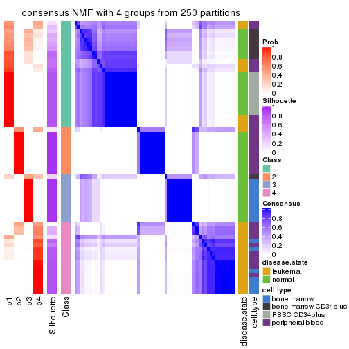
consensus_heatmap(res, k = 5)
consensus_heatmap(res, k = 6)
Heatmaps for the membership of samples in all partitions to see how consistent they are:
membership_heatmap(res, k = 2)
membership_heatmap(res, k = 3)
membership_heatmap(res, k = 4)
membership_heatmap(res, k = 5)
membership_heatmap(res, k = 6)
As soon as we have had the classes for columns, we can look for signatures which are significantly different between classes which can be candidate marks for certain classes. Following are the heatmaps for signatures.
Signature heatmaps where rows are scaled:
get_signatures(res, k = 2)
get_signatures(res, k = 3)
get_signatures(res, k = 4)
get_signatures(res, k = 5)
get_signatures(res, k = 6)
Signature heatmaps where rows are not scaled:
get_signatures(res, k = 2, scale_rows = FALSE)
get_signatures(res, k = 3, scale_rows = FALSE)
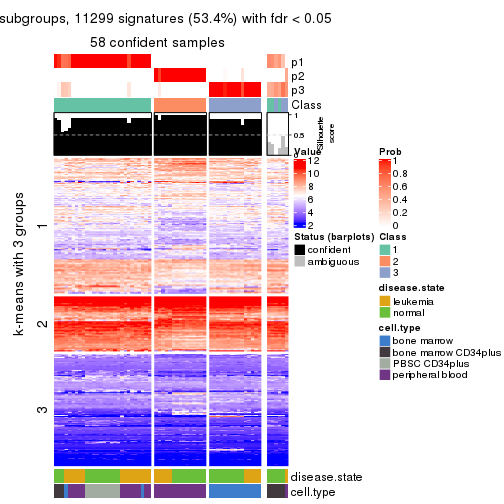
get_signatures(res, k = 4, scale_rows = FALSE)
get_signatures(res, k = 5, scale_rows = FALSE)
get_signatures(res, k = 6, scale_rows = FALSE)
Compare the overlap of signatures from different k:
compare_signatures(res)
get_signature() returns a data frame invisibly. TO get the list of signatures, the function
call should be assigned to a variable explicitly. In following code, if plot argument is set
to FALSE, no heatmap is plotted while only the differential analysis is performed.
# code only for demonstration
tb = get_signature(res, k = ..., plot = FALSE)
An example of the output of tb is:
#> which_row fdr mean_1 mean_2 scaled_mean_1 scaled_mean_2 km
#> 1 38 0.042760348 8.373488 9.131774 -0.5533452 0.5164555 1
#> 2 40 0.018707592 7.106213 8.469186 -0.6173731 0.5762149 1
#> 3 55 0.019134737 10.221463 11.207825 -0.6159697 0.5749050 1
#> 4 59 0.006059896 5.921854 7.869574 -0.6899429 0.6439467 1
#> 5 60 0.018055526 8.928898 10.211722 -0.6204761 0.5791110 1
#> 6 98 0.009384629 15.714769 14.887706 0.6635654 -0.6193277 2
...
The columns in tb are:
which_row: row indices corresponding to the input matrix.fdr: FDR for the differential test. mean_x: The mean value in group x.scaled_mean_x: The mean value in group x after rows are scaled.km: Row groups if k-means clustering is applied to rows.UMAP plot which shows how samples are separated.
dimension_reduction(res, k = 2, method = "UMAP")
dimension_reduction(res, k = 3, method = "UMAP")
dimension_reduction(res, k = 4, method = "UMAP")
dimension_reduction(res, k = 5, method = "UMAP")
dimension_reduction(res, k = 6, method = "UMAP")
Following heatmap shows how subgroups are split when increasing k:
collect_classes(res)
Test correlation between subgroups and known annotations. If the known annotation is numeric, one-way ANOVA test is applied, and if the known annotation is discrete, chi-squared contingency table test is applied.
test_to_known_factors(res)
#> n disease.state(p) cell.type(p) k
#> CV:NMF 62 2.64e-02 5.64e-04 2
#> CV:NMF 58 2.98e-01 6.38e-12 3
#> CV:NMF 52 1.72e-07 1.14e-09 4
#> CV:NMF 58 2.22e-08 2.44e-20 5
#> CV:NMF 64 9.74e-10 4.97e-22 6
If matrix rows can be associated to genes, consider to use GO_Enrichment(res,
...) to perform function enrichment for the signature genes.
The object with results only for a single top-value method and a single partition method can be extracted as:
res = res_list["MAD", "hclust"]
# you can also extract it by
# res = res_list["MAD:hclust"]
A summary of res and all the functions that can be applied to it:
res
#> A 'ConsensusPartition' object with k = 2, 3, 4, 5, 6.
#> On a matrix with 21168 rows and 64 columns.
#> Top rows (1000, 2000, 3000, 4000, 5000) are extracted by 'MAD' method.
#> Subgroups are detected by 'hclust' method.
#> Performed in total 1250 partitions by row resampling.
#> Best k for subgroups seems to be 3.
#>
#> Following methods can be applied to this 'ConsensusPartition' object:
#> [1] "cola_report" "collect_classes" "collect_plots"
#> [4] "collect_stats" "colnames" "compare_signatures"
#> [7] "consensus_heatmap" "dimension_reduction" "functional_enrichment"
#> [10] "get_anno_col" "get_anno" "get_classes"
#> [13] "get_consensus" "get_matrix" "get_membership"
#> [16] "get_param" "get_signatures" "get_stats"
#> [19] "is_best_k" "is_stable_k" "membership_heatmap"
#> [22] "ncol" "nrow" "plot_ecdf"
#> [25] "rownames" "select_partition_number" "show"
#> [28] "suggest_best_k" "test_to_known_factors"
collect_plots() function collects all the plots made from res for all k (number of partitions)
into one single page to provide an easy and fast comparison between different k.
collect_plots(res)
The plots are:
k and the heatmap of
predicted classes for each k.k.k.k.All the plots in panels can be made by individual functions and they are plotted later in this section.
select_partition_number() produces several plots showing different
statistics for choosing “optimized” k. There are following statistics:
k;k, the area increased is defined as \(A_k - A_{k-1}\).The detailed explanations of these statistics can be found in the cola vignette.
Generally speaking, lower PAC score, higher mean silhouette score or higher
concordance corresponds to better partition. Rand index and Jaccard index
measure how similar the current partition is compared to partition with k-1.
If they are too similar, we won't accept k is better than k-1.
select_partition_number(res)
The numeric values for all these statistics can be obtained by get_stats().
get_stats(res)
#> k 1-PAC mean_silhouette concordance area_increased Rand Jaccard
#> 2 2 0.679 0.907 0.946 0.3985 0.635 0.635
#> 3 3 0.568 0.825 0.886 0.5080 0.723 0.564
#> 4 4 0.684 0.662 0.808 0.1748 0.950 0.867
#> 5 5 0.821 0.753 0.857 0.1006 0.878 0.644
#> 6 6 0.842 0.795 0.844 0.0549 0.942 0.746
suggest_best_k() suggests the best \(k\) based on these statistics. The rules are as follows:
NA.suggest_best_k(res)
#> [1] 3
Following shows the table of the partitions (You need to click the show/hide
code output link to see it). The membership matrix (columns with name p*)
is inferred by
clue::cl_consensus()
function with the SE method. Basically the value in the membership matrix
represents the probability to belong to a certain group. The finall class
label for an item is determined with the group with highest probability it
belongs to.
In get_classes() function, the entropy is calculated from the membership
matrix and the silhouette score is calculated from the consensus matrix.
cbind(get_classes(res, k = 2), get_membership(res, k = 2))
#> class entropy silhouette p1 p2
#> GSM239371 1 0.0000 0.921 1.000 0.000
#> GSM239487 1 0.7883 0.781 0.764 0.236
#> GSM239489 1 0.6712 0.823 0.824 0.176
#> GSM239492 1 0.0000 0.921 1.000 0.000
#> GSM239497 1 0.7883 0.781 0.764 0.236
#> GSM239520 1 0.7883 0.781 0.764 0.236
#> GSM240427 1 0.0376 0.919 0.996 0.004
#> GSM239345 1 0.0000 0.921 1.000 0.000
#> GSM239346 2 0.0000 1.000 0.000 1.000
#> GSM239348 1 0.0000 0.921 1.000 0.000
#> GSM239363 2 0.0000 1.000 0.000 1.000
#> GSM239460 1 0.7883 0.781 0.764 0.236
#> GSM239485 1 0.0000 0.921 1.000 0.000
#> GSM239488 2 0.0000 1.000 0.000 1.000
#> GSM239490 1 0.0000 0.921 1.000 0.000
#> GSM239491 1 0.0000 0.921 1.000 0.000
#> GSM239493 1 0.0000 0.921 1.000 0.000
#> GSM239494 1 0.0000 0.921 1.000 0.000
#> GSM239495 1 0.0000 0.921 1.000 0.000
#> GSM239496 1 0.0000 0.921 1.000 0.000
#> GSM239498 2 0.0000 1.000 0.000 1.000
#> GSM239516 2 0.0000 1.000 0.000 1.000
#> GSM239580 1 0.0000 0.921 1.000 0.000
#> GSM240405 1 0.0000 0.921 1.000 0.000
#> GSM240406 1 0.0000 0.921 1.000 0.000
#> GSM240429 1 0.0000 0.921 1.000 0.000
#> GSM239323 1 0.7883 0.781 0.764 0.236
#> GSM239324 1 0.7883 0.781 0.764 0.236
#> GSM239326 1 0.7883 0.781 0.764 0.236
#> GSM239328 1 0.7883 0.781 0.764 0.236
#> GSM239329 1 0.7883 0.781 0.764 0.236
#> GSM239331 1 0.7883 0.781 0.764 0.236
#> GSM239332 1 0.7883 0.781 0.764 0.236
#> GSM239333 1 0.7883 0.781 0.764 0.236
#> GSM239334 1 0.7883 0.781 0.764 0.236
#> GSM239335 1 0.7883 0.781 0.764 0.236
#> GSM240430 2 0.0000 1.000 0.000 1.000
#> GSM240431 2 0.0000 1.000 0.000 1.000
#> GSM240432 2 0.0000 1.000 0.000 1.000
#> GSM240433 2 0.0000 1.000 0.000 1.000
#> GSM240494 2 0.0000 1.000 0.000 1.000
#> GSM240495 2 0.0000 1.000 0.000 1.000
#> GSM240496 2 0.0000 1.000 0.000 1.000
#> GSM240497 2 0.0000 1.000 0.000 1.000
#> GSM240498 2 0.0000 1.000 0.000 1.000
#> GSM240499 2 0.0000 1.000 0.000 1.000
#> GSM239170 1 0.0000 0.921 1.000 0.000
#> GSM239338 1 0.0000 0.921 1.000 0.000
#> GSM239339 1 0.0000 0.921 1.000 0.000
#> GSM239340 1 0.0000 0.921 1.000 0.000
#> GSM239341 1 0.0000 0.921 1.000 0.000
#> GSM239342 1 0.0000 0.921 1.000 0.000
#> GSM239343 1 0.0000 0.921 1.000 0.000
#> GSM239344 1 0.0000 0.921 1.000 0.000
#> GSM240500 1 0.0000 0.921 1.000 0.000
#> GSM240501 1 0.0000 0.921 1.000 0.000
#> GSM240502 1 0.0000 0.921 1.000 0.000
#> GSM240503 1 0.0000 0.921 1.000 0.000
#> GSM240504 1 0.0000 0.921 1.000 0.000
#> GSM240505 1 0.0000 0.921 1.000 0.000
#> GSM240506 1 0.0000 0.921 1.000 0.000
#> GSM240507 1 0.0000 0.921 1.000 0.000
#> GSM240508 1 0.0000 0.921 1.000 0.000
#> GSM240509 1 0.0000 0.921 1.000 0.000
cbind(get_classes(res, k = 3), get_membership(res, k = 3))
#> class entropy silhouette p1 p2 p3
#> GSM239371 1 0.1529 0.9146 0.960 0.000 0.040
#> GSM239487 3 0.4733 0.8421 0.196 0.004 0.800
#> GSM239489 3 0.6079 0.3598 0.388 0.000 0.612
#> GSM239492 1 0.2165 0.9024 0.936 0.000 0.064
#> GSM239497 3 0.4733 0.8421 0.196 0.004 0.800
#> GSM239520 3 0.4733 0.8421 0.196 0.004 0.800
#> GSM240427 1 0.2356 0.8961 0.928 0.000 0.072
#> GSM239345 1 0.0592 0.9212 0.988 0.000 0.012
#> GSM239346 2 0.4842 0.8044 0.000 0.776 0.224
#> GSM239348 3 0.6260 0.0147 0.448 0.000 0.552
#> GSM239363 2 0.4842 0.8044 0.000 0.776 0.224
#> GSM239460 3 0.0661 0.6211 0.004 0.008 0.988
#> GSM239485 1 0.4291 0.8193 0.820 0.000 0.180
#> GSM239488 2 0.4842 0.8044 0.000 0.776 0.224
#> GSM239490 1 0.5529 0.6583 0.704 0.000 0.296
#> GSM239491 3 0.6260 0.0147 0.448 0.000 0.552
#> GSM239493 1 0.1529 0.9146 0.960 0.000 0.040
#> GSM239494 1 0.1529 0.9146 0.960 0.000 0.040
#> GSM239495 1 0.1529 0.9146 0.960 0.000 0.040
#> GSM239496 3 0.6260 0.0147 0.448 0.000 0.552
#> GSM239498 2 0.4842 0.8044 0.000 0.776 0.224
#> GSM239516 2 0.4842 0.8044 0.000 0.776 0.224
#> GSM239580 1 0.0747 0.9208 0.984 0.000 0.016
#> GSM240405 1 0.0000 0.9236 1.000 0.000 0.000
#> GSM240406 1 0.1529 0.9146 0.960 0.000 0.040
#> GSM240429 1 0.0592 0.9212 0.988 0.000 0.012
#> GSM239323 3 0.4912 0.8456 0.196 0.008 0.796
#> GSM239324 3 0.4912 0.8456 0.196 0.008 0.796
#> GSM239326 3 0.4912 0.8456 0.196 0.008 0.796
#> GSM239328 3 0.4912 0.8456 0.196 0.008 0.796
#> GSM239329 3 0.4912 0.8456 0.196 0.008 0.796
#> GSM239331 3 0.4912 0.8456 0.196 0.008 0.796
#> GSM239332 3 0.4912 0.8456 0.196 0.008 0.796
#> GSM239333 3 0.4912 0.8456 0.196 0.008 0.796
#> GSM239334 3 0.4912 0.8456 0.196 0.008 0.796
#> GSM239335 3 0.4912 0.8456 0.196 0.008 0.796
#> GSM240430 2 0.0000 0.9162 0.000 1.000 0.000
#> GSM240431 2 0.0000 0.9162 0.000 1.000 0.000
#> GSM240432 2 0.0000 0.9162 0.000 1.000 0.000
#> GSM240433 2 0.0000 0.9162 0.000 1.000 0.000
#> GSM240494 2 0.0000 0.9162 0.000 1.000 0.000
#> GSM240495 2 0.0000 0.9162 0.000 1.000 0.000
#> GSM240496 2 0.0000 0.9162 0.000 1.000 0.000
#> GSM240497 2 0.0000 0.9162 0.000 1.000 0.000
#> GSM240498 2 0.0000 0.9162 0.000 1.000 0.000
#> GSM240499 2 0.0000 0.9162 0.000 1.000 0.000
#> GSM239170 1 0.3267 0.8567 0.884 0.000 0.116
#> GSM239338 1 0.3267 0.8567 0.884 0.000 0.116
#> GSM239339 1 0.3267 0.8567 0.884 0.000 0.116
#> GSM239340 1 0.3267 0.8567 0.884 0.000 0.116
#> GSM239341 1 0.3267 0.8567 0.884 0.000 0.116
#> GSM239342 1 0.3267 0.8567 0.884 0.000 0.116
#> GSM239343 1 0.3267 0.8567 0.884 0.000 0.116
#> GSM239344 1 0.3267 0.8567 0.884 0.000 0.116
#> GSM240500 1 0.0000 0.9236 1.000 0.000 0.000
#> GSM240501 1 0.0000 0.9236 1.000 0.000 0.000
#> GSM240502 1 0.0000 0.9236 1.000 0.000 0.000
#> GSM240503 1 0.0000 0.9236 1.000 0.000 0.000
#> GSM240504 1 0.0000 0.9236 1.000 0.000 0.000
#> GSM240505 1 0.0000 0.9236 1.000 0.000 0.000
#> GSM240506 1 0.0000 0.9236 1.000 0.000 0.000
#> GSM240507 1 0.0000 0.9236 1.000 0.000 0.000
#> GSM240508 1 0.0000 0.9236 1.000 0.000 0.000
#> GSM240509 1 0.0000 0.9236 1.000 0.000 0.000
cbind(get_classes(res, k = 4), get_membership(res, k = 4))
#> class entropy silhouette p1 p2 p3 p4
#> GSM239371 1 0.1109 0.55185 0.968 0.000 0.004 0.028
#> GSM239487 3 0.2888 0.87037 0.000 0.004 0.872 0.124
#> GSM239489 1 0.7832 -0.31758 0.380 0.000 0.360 0.260
#> GSM239492 1 0.2021 0.53688 0.936 0.000 0.024 0.040
#> GSM239497 3 0.2888 0.87037 0.000 0.004 0.872 0.124
#> GSM239520 3 0.2888 0.87037 0.000 0.004 0.872 0.124
#> GSM240427 1 0.2500 0.52776 0.916 0.000 0.044 0.040
#> GSM239345 1 0.4343 0.60139 0.732 0.000 0.004 0.264
#> GSM239346 2 0.4955 0.82280 0.000 0.772 0.084 0.144
#> GSM239348 4 0.4866 0.71693 0.404 0.000 0.000 0.596
#> GSM239363 2 0.4955 0.82280 0.000 0.772 0.084 0.144
#> GSM239460 4 0.5375 0.00543 0.008 0.004 0.416 0.572
#> GSM239485 1 0.6238 0.25912 0.652 0.000 0.236 0.112
#> GSM239488 2 0.4955 0.82280 0.000 0.772 0.084 0.144
#> GSM239490 1 0.6560 0.06254 0.620 0.000 0.132 0.248
#> GSM239491 4 0.4866 0.71693 0.404 0.000 0.000 0.596
#> GSM239493 1 0.1109 0.55185 0.968 0.000 0.004 0.028
#> GSM239494 1 0.1109 0.55185 0.968 0.000 0.004 0.028
#> GSM239495 1 0.1109 0.55185 0.968 0.000 0.004 0.028
#> GSM239496 4 0.4866 0.71693 0.404 0.000 0.000 0.596
#> GSM239498 2 0.4955 0.82280 0.000 0.772 0.084 0.144
#> GSM239516 2 0.4955 0.82280 0.000 0.772 0.084 0.144
#> GSM239580 1 0.1557 0.57351 0.944 0.000 0.000 0.056
#> GSM240405 1 0.4103 0.60761 0.744 0.000 0.000 0.256
#> GSM240406 1 0.1109 0.55185 0.968 0.000 0.004 0.028
#> GSM240429 1 0.4343 0.60139 0.732 0.000 0.004 0.264
#> GSM239323 3 0.0000 0.96277 0.000 0.000 1.000 0.000
#> GSM239324 3 0.0000 0.96277 0.000 0.000 1.000 0.000
#> GSM239326 3 0.0000 0.96277 0.000 0.000 1.000 0.000
#> GSM239328 3 0.0000 0.96277 0.000 0.000 1.000 0.000
#> GSM239329 3 0.0000 0.96277 0.000 0.000 1.000 0.000
#> GSM239331 3 0.0000 0.96277 0.000 0.000 1.000 0.000
#> GSM239332 3 0.0000 0.96277 0.000 0.000 1.000 0.000
#> GSM239333 3 0.0000 0.96277 0.000 0.000 1.000 0.000
#> GSM239334 3 0.0000 0.96277 0.000 0.000 1.000 0.000
#> GSM239335 3 0.0000 0.96277 0.000 0.000 1.000 0.000
#> GSM240430 2 0.0336 0.91716 0.000 0.992 0.008 0.000
#> GSM240431 2 0.0336 0.91716 0.000 0.992 0.008 0.000
#> GSM240432 2 0.0336 0.91716 0.000 0.992 0.008 0.000
#> GSM240433 2 0.0336 0.91716 0.000 0.992 0.008 0.000
#> GSM240494 2 0.0336 0.91716 0.000 0.992 0.008 0.000
#> GSM240495 2 0.0336 0.91716 0.000 0.992 0.008 0.000
#> GSM240496 2 0.0336 0.91716 0.000 0.992 0.008 0.000
#> GSM240497 2 0.0336 0.91716 0.000 0.992 0.008 0.000
#> GSM240498 2 0.0336 0.91716 0.000 0.992 0.008 0.000
#> GSM240499 2 0.0336 0.91716 0.000 0.992 0.008 0.000
#> GSM239170 1 0.5733 0.29830 0.640 0.000 0.312 0.048
#> GSM239338 1 0.5733 0.29830 0.640 0.000 0.312 0.048
#> GSM239339 1 0.5733 0.29830 0.640 0.000 0.312 0.048
#> GSM239340 1 0.5733 0.29830 0.640 0.000 0.312 0.048
#> GSM239341 1 0.5733 0.29830 0.640 0.000 0.312 0.048
#> GSM239342 1 0.5733 0.29830 0.640 0.000 0.312 0.048
#> GSM239343 1 0.5733 0.29830 0.640 0.000 0.312 0.048
#> GSM239344 1 0.5733 0.29830 0.640 0.000 0.312 0.048
#> GSM240500 1 0.4103 0.60761 0.744 0.000 0.000 0.256
#> GSM240501 1 0.4103 0.60761 0.744 0.000 0.000 0.256
#> GSM240502 1 0.4103 0.60761 0.744 0.000 0.000 0.256
#> GSM240503 1 0.4103 0.60761 0.744 0.000 0.000 0.256
#> GSM240504 1 0.4103 0.60761 0.744 0.000 0.000 0.256
#> GSM240505 1 0.4103 0.60761 0.744 0.000 0.000 0.256
#> GSM240506 1 0.4103 0.60761 0.744 0.000 0.000 0.256
#> GSM240507 1 0.4103 0.60761 0.744 0.000 0.000 0.256
#> GSM240508 1 0.4103 0.60761 0.744 0.000 0.000 0.256
#> GSM240509 1 0.4103 0.60761 0.744 0.000 0.000 0.256
cbind(get_classes(res, k = 5), get_membership(res, k = 5))
#> class entropy silhouette p1 p2 p3 p4 p5
#> GSM239371 1 0.4961 0.333 0.524 0.000 0.000 0.028 0.448
#> GSM239487 3 0.3461 0.783 0.000 0.004 0.772 0.224 0.000
#> GSM239489 4 0.8272 0.362 0.208 0.000 0.224 0.396 0.172
#> GSM239492 1 0.5551 0.265 0.484 0.000 0.016 0.036 0.464
#> GSM239497 3 0.3461 0.783 0.000 0.004 0.772 0.224 0.000
#> GSM239520 3 0.3461 0.783 0.000 0.004 0.772 0.224 0.000
#> GSM240427 1 0.5911 0.248 0.472 0.000 0.032 0.040 0.456
#> GSM239345 1 0.0162 0.698 0.996 0.000 0.000 0.000 0.004
#> GSM239346 2 0.3336 0.830 0.000 0.772 0.000 0.228 0.000
#> GSM239348 4 0.4268 0.475 0.000 0.000 0.000 0.556 0.444
#> GSM239363 2 0.3336 0.830 0.000 0.772 0.000 0.228 0.000
#> GSM239460 4 0.3430 0.355 0.000 0.004 0.220 0.776 0.000
#> GSM239485 5 0.2362 0.826 0.024 0.000 0.000 0.076 0.900
#> GSM239488 2 0.3336 0.830 0.000 0.772 0.000 0.228 0.000
#> GSM239490 5 0.3333 0.595 0.004 0.000 0.000 0.208 0.788
#> GSM239491 4 0.4410 0.481 0.004 0.000 0.000 0.556 0.440
#> GSM239493 1 0.4961 0.333 0.524 0.000 0.000 0.028 0.448
#> GSM239494 1 0.4961 0.333 0.524 0.000 0.000 0.028 0.448
#> GSM239495 1 0.4961 0.333 0.524 0.000 0.000 0.028 0.448
#> GSM239496 4 0.4410 0.481 0.004 0.000 0.000 0.556 0.440
#> GSM239498 2 0.3336 0.830 0.000 0.772 0.000 0.228 0.000
#> GSM239516 2 0.3336 0.830 0.000 0.772 0.000 0.228 0.000
#> GSM239580 1 0.4392 0.432 0.612 0.000 0.000 0.008 0.380
#> GSM240405 1 0.1270 0.723 0.948 0.000 0.000 0.000 0.052
#> GSM240406 1 0.4968 0.316 0.516 0.000 0.000 0.028 0.456
#> GSM240429 1 0.0000 0.698 1.000 0.000 0.000 0.000 0.000
#> GSM239323 3 0.0000 0.939 0.000 0.000 1.000 0.000 0.000
#> GSM239324 3 0.0000 0.939 0.000 0.000 1.000 0.000 0.000
#> GSM239326 3 0.0000 0.939 0.000 0.000 1.000 0.000 0.000
#> GSM239328 3 0.0000 0.939 0.000 0.000 1.000 0.000 0.000
#> GSM239329 3 0.0000 0.939 0.000 0.000 1.000 0.000 0.000
#> GSM239331 3 0.0000 0.939 0.000 0.000 1.000 0.000 0.000
#> GSM239332 3 0.0000 0.939 0.000 0.000 1.000 0.000 0.000
#> GSM239333 3 0.0000 0.939 0.000 0.000 1.000 0.000 0.000
#> GSM239334 3 0.0000 0.939 0.000 0.000 1.000 0.000 0.000
#> GSM239335 3 0.0000 0.939 0.000 0.000 1.000 0.000 0.000
#> GSM240430 2 0.0290 0.920 0.000 0.992 0.008 0.000 0.000
#> GSM240431 2 0.0290 0.920 0.000 0.992 0.008 0.000 0.000
#> GSM240432 2 0.0290 0.920 0.000 0.992 0.008 0.000 0.000
#> GSM240433 2 0.0290 0.920 0.000 0.992 0.008 0.000 0.000
#> GSM240494 2 0.0290 0.920 0.000 0.992 0.008 0.000 0.000
#> GSM240495 2 0.0290 0.920 0.000 0.992 0.008 0.000 0.000
#> GSM240496 2 0.0290 0.920 0.000 0.992 0.008 0.000 0.000
#> GSM240497 2 0.0290 0.920 0.000 0.992 0.008 0.000 0.000
#> GSM240498 2 0.0290 0.920 0.000 0.992 0.008 0.000 0.000
#> GSM240499 2 0.0290 0.920 0.000 0.992 0.008 0.000 0.000
#> GSM239170 5 0.0000 0.948 0.000 0.000 0.000 0.000 1.000
#> GSM239338 5 0.0000 0.948 0.000 0.000 0.000 0.000 1.000
#> GSM239339 5 0.0000 0.948 0.000 0.000 0.000 0.000 1.000
#> GSM239340 5 0.0000 0.948 0.000 0.000 0.000 0.000 1.000
#> GSM239341 5 0.0000 0.948 0.000 0.000 0.000 0.000 1.000
#> GSM239342 5 0.0000 0.948 0.000 0.000 0.000 0.000 1.000
#> GSM239343 5 0.0000 0.948 0.000 0.000 0.000 0.000 1.000
#> GSM239344 5 0.0000 0.948 0.000 0.000 0.000 0.000 1.000
#> GSM240500 1 0.1197 0.724 0.952 0.000 0.000 0.000 0.048
#> GSM240501 1 0.1197 0.724 0.952 0.000 0.000 0.000 0.048
#> GSM240502 1 0.1197 0.724 0.952 0.000 0.000 0.000 0.048
#> GSM240503 1 0.1197 0.724 0.952 0.000 0.000 0.000 0.048
#> GSM240504 1 0.1197 0.724 0.952 0.000 0.000 0.000 0.048
#> GSM240505 1 0.1197 0.724 0.952 0.000 0.000 0.000 0.048
#> GSM240506 1 0.1197 0.724 0.952 0.000 0.000 0.000 0.048
#> GSM240507 1 0.1197 0.724 0.952 0.000 0.000 0.000 0.048
#> GSM240508 1 0.1197 0.724 0.952 0.000 0.000 0.000 0.048
#> GSM240509 1 0.1197 0.724 0.952 0.000 0.000 0.000 0.048
cbind(get_classes(res, k = 6), get_membership(res, k = 6))
#> class entropy silhouette p1 p2 p3 p4 p5 p6
#> GSM239371 4 0.0603 0.781 0.016 0.000 0.000 0.980 0.004 0.000
#> GSM239487 3 0.4403 0.725 0.048 0.000 0.712 0.016 0.000 0.224
#> GSM239489 4 0.6374 -0.266 0.000 0.000 0.212 0.392 0.020 0.376
#> GSM239492 4 0.2615 0.674 0.000 0.000 0.004 0.852 0.136 0.008
#> GSM239497 3 0.4403 0.725 0.048 0.000 0.712 0.016 0.000 0.224
#> GSM239520 3 0.4403 0.725 0.048 0.000 0.712 0.016 0.000 0.224
#> GSM240427 4 0.3019 0.665 0.000 0.000 0.020 0.840 0.128 0.012
#> GSM239345 1 0.3409 0.920 0.700 0.000 0.000 0.300 0.000 0.000
#> GSM239346 2 0.5660 0.621 0.252 0.532 0.000 0.000 0.000 0.216
#> GSM239348 6 0.5399 0.756 0.000 0.000 0.000 0.344 0.128 0.528
#> GSM239363 2 0.5660 0.621 0.252 0.532 0.000 0.000 0.000 0.216
#> GSM239460 6 0.3081 0.421 0.004 0.000 0.220 0.000 0.000 0.776
#> GSM239485 5 0.4700 0.329 0.008 0.000 0.000 0.304 0.636 0.052
#> GSM239488 2 0.5660 0.621 0.252 0.532 0.000 0.000 0.000 0.216
#> GSM239490 5 0.5751 -0.178 0.000 0.000 0.000 0.348 0.472 0.180
#> GSM239491 6 0.5377 0.758 0.000 0.000 0.000 0.348 0.124 0.528
#> GSM239493 4 0.0603 0.781 0.016 0.000 0.000 0.980 0.004 0.000
#> GSM239494 4 0.0603 0.781 0.016 0.000 0.000 0.980 0.004 0.000
#> GSM239495 4 0.0603 0.781 0.016 0.000 0.000 0.980 0.004 0.000
#> GSM239496 6 0.5377 0.758 0.000 0.000 0.000 0.348 0.124 0.528
#> GSM239498 2 0.5660 0.621 0.252 0.532 0.000 0.000 0.000 0.216
#> GSM239516 2 0.5660 0.621 0.252 0.532 0.000 0.000 0.000 0.216
#> GSM239580 4 0.3136 0.472 0.228 0.000 0.000 0.768 0.004 0.000
#> GSM240405 1 0.4168 0.982 0.696 0.000 0.000 0.256 0.048 0.000
#> GSM240406 4 0.0622 0.776 0.012 0.000 0.000 0.980 0.008 0.000
#> GSM240429 1 0.3390 0.923 0.704 0.000 0.000 0.296 0.000 0.000
#> GSM239323 3 0.0000 0.926 0.000 0.000 1.000 0.000 0.000 0.000
#> GSM239324 3 0.0000 0.926 0.000 0.000 1.000 0.000 0.000 0.000
#> GSM239326 3 0.0000 0.926 0.000 0.000 1.000 0.000 0.000 0.000
#> GSM239328 3 0.0000 0.926 0.000 0.000 1.000 0.000 0.000 0.000
#> GSM239329 3 0.0000 0.926 0.000 0.000 1.000 0.000 0.000 0.000
#> GSM239331 3 0.0000 0.926 0.000 0.000 1.000 0.000 0.000 0.000
#> GSM239332 3 0.0000 0.926 0.000 0.000 1.000 0.000 0.000 0.000
#> GSM239333 3 0.0000 0.926 0.000 0.000 1.000 0.000 0.000 0.000
#> GSM239334 3 0.0000 0.926 0.000 0.000 1.000 0.000 0.000 0.000
#> GSM239335 3 0.0000 0.926 0.000 0.000 1.000 0.000 0.000 0.000
#> GSM240430 2 0.0000 0.835 0.000 1.000 0.000 0.000 0.000 0.000
#> GSM240431 2 0.0000 0.835 0.000 1.000 0.000 0.000 0.000 0.000
#> GSM240432 2 0.0000 0.835 0.000 1.000 0.000 0.000 0.000 0.000
#> GSM240433 2 0.0000 0.835 0.000 1.000 0.000 0.000 0.000 0.000
#> GSM240494 2 0.0000 0.835 0.000 1.000 0.000 0.000 0.000 0.000
#> GSM240495 2 0.0000 0.835 0.000 1.000 0.000 0.000 0.000 0.000
#> GSM240496 2 0.0000 0.835 0.000 1.000 0.000 0.000 0.000 0.000
#> GSM240497 2 0.0000 0.835 0.000 1.000 0.000 0.000 0.000 0.000
#> GSM240498 2 0.0000 0.835 0.000 1.000 0.000 0.000 0.000 0.000
#> GSM240499 2 0.0000 0.835 0.000 1.000 0.000 0.000 0.000 0.000
#> GSM239170 5 0.0000 0.875 0.000 0.000 0.000 0.000 1.000 0.000
#> GSM239338 5 0.0000 0.875 0.000 0.000 0.000 0.000 1.000 0.000
#> GSM239339 5 0.0000 0.875 0.000 0.000 0.000 0.000 1.000 0.000
#> GSM239340 5 0.0000 0.875 0.000 0.000 0.000 0.000 1.000 0.000
#> GSM239341 5 0.0000 0.875 0.000 0.000 0.000 0.000 1.000 0.000
#> GSM239342 5 0.0000 0.875 0.000 0.000 0.000 0.000 1.000 0.000
#> GSM239343 5 0.0000 0.875 0.000 0.000 0.000 0.000 1.000 0.000
#> GSM239344 5 0.0000 0.875 0.000 0.000 0.000 0.000 1.000 0.000
#> GSM240500 1 0.4145 0.986 0.700 0.000 0.000 0.252 0.048 0.000
#> GSM240501 1 0.4145 0.986 0.700 0.000 0.000 0.252 0.048 0.000
#> GSM240502 1 0.4145 0.986 0.700 0.000 0.000 0.252 0.048 0.000
#> GSM240503 1 0.4145 0.986 0.700 0.000 0.000 0.252 0.048 0.000
#> GSM240504 1 0.4145 0.986 0.700 0.000 0.000 0.252 0.048 0.000
#> GSM240505 1 0.4145 0.986 0.700 0.000 0.000 0.252 0.048 0.000
#> GSM240506 1 0.4145 0.986 0.700 0.000 0.000 0.252 0.048 0.000
#> GSM240507 1 0.4145 0.986 0.700 0.000 0.000 0.252 0.048 0.000
#> GSM240508 1 0.4145 0.986 0.700 0.000 0.000 0.252 0.048 0.000
#> GSM240509 1 0.4145 0.986 0.700 0.000 0.000 0.252 0.048 0.000
Heatmaps for the consensus matrix. It visualizes the probability of two samples to be in a same group.
consensus_heatmap(res, k = 2)
consensus_heatmap(res, k = 3)
consensus_heatmap(res, k = 4)
consensus_heatmap(res, k = 5)
consensus_heatmap(res, k = 6)
Heatmaps for the membership of samples in all partitions to see how consistent they are:
membership_heatmap(res, k = 2)
membership_heatmap(res, k = 3)
membership_heatmap(res, k = 4)
membership_heatmap(res, k = 5)
membership_heatmap(res, k = 6)
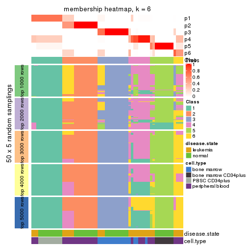
As soon as we have had the classes for columns, we can look for signatures which are significantly different between classes which can be candidate marks for certain classes. Following are the heatmaps for signatures.
Signature heatmaps where rows are scaled:
get_signatures(res, k = 2)
get_signatures(res, k = 3)
get_signatures(res, k = 4)
get_signatures(res, k = 5)
get_signatures(res, k = 6)
Signature heatmaps where rows are not scaled:
get_signatures(res, k = 2, scale_rows = FALSE)
get_signatures(res, k = 3, scale_rows = FALSE)
get_signatures(res, k = 4, scale_rows = FALSE)
get_signatures(res, k = 5, scale_rows = FALSE)
get_signatures(res, k = 6, scale_rows = FALSE)
Compare the overlap of signatures from different k:
compare_signatures(res)
get_signature() returns a data frame invisibly. TO get the list of signatures, the function
call should be assigned to a variable explicitly. In following code, if plot argument is set
to FALSE, no heatmap is plotted while only the differential analysis is performed.
# code only for demonstration
tb = get_signature(res, k = ..., plot = FALSE)
An example of the output of tb is:
#> which_row fdr mean_1 mean_2 scaled_mean_1 scaled_mean_2 km
#> 1 38 0.042760348 8.373488 9.131774 -0.5533452 0.5164555 1
#> 2 40 0.018707592 7.106213 8.469186 -0.6173731 0.5762149 1
#> 3 55 0.019134737 10.221463 11.207825 -0.6159697 0.5749050 1
#> 4 59 0.006059896 5.921854 7.869574 -0.6899429 0.6439467 1
#> 5 60 0.018055526 8.928898 10.211722 -0.6204761 0.5791110 1
#> 6 98 0.009384629 15.714769 14.887706 0.6635654 -0.6193277 2
...
The columns in tb are:
which_row: row indices corresponding to the input matrix.fdr: FDR for the differential test. mean_x: The mean value in group x.scaled_mean_x: The mean value in group x after rows are scaled.km: Row groups if k-means clustering is applied to rows.UMAP plot which shows how samples are separated.
dimension_reduction(res, k = 2, method = "UMAP")
dimension_reduction(res, k = 3, method = "UMAP")
dimension_reduction(res, k = 4, method = "UMAP")
dimension_reduction(res, k = 5, method = "UMAP")
dimension_reduction(res, k = 6, method = "UMAP")
Following heatmap shows how subgroups are split when increasing k:
collect_classes(res)
Test correlation between subgroups and known annotations. If the known annotation is numeric, one-way ANOVA test is applied, and if the known annotation is discrete, chi-squared contingency table test is applied.
test_to_known_factors(res)
#> n disease.state(p) cell.type(p) k
#> MAD:hclust 64 0.721287 2.96e-05 2
#> MAD:hclust 60 0.657891 9.06e-12 3
#> MAD:hclust 52 0.059422 9.07e-11 4
#> MAD:hclust 51 0.867483 8.08e-22 5
#> MAD:hclust 59 0.000188 7.32e-24 6
If matrix rows can be associated to genes, consider to use GO_Enrichment(res,
...) to perform function enrichment for the signature genes.
The object with results only for a single top-value method and a single partition method can be extracted as:
res = res_list["MAD", "kmeans"]
# you can also extract it by
# res = res_list["MAD:kmeans"]
A summary of res and all the functions that can be applied to it:
res
#> A 'ConsensusPartition' object with k = 2, 3, 4, 5, 6.
#> On a matrix with 21168 rows and 64 columns.
#> Top rows (1000, 2000, 3000, 4000, 5000) are extracted by 'MAD' method.
#> Subgroups are detected by 'kmeans' method.
#> Performed in total 1250 partitions by row resampling.
#> Best k for subgroups seems to be 2.
#>
#> Following methods can be applied to this 'ConsensusPartition' object:
#> [1] "cola_report" "collect_classes" "collect_plots"
#> [4] "collect_stats" "colnames" "compare_signatures"
#> [7] "consensus_heatmap" "dimension_reduction" "functional_enrichment"
#> [10] "get_anno_col" "get_anno" "get_classes"
#> [13] "get_consensus" "get_matrix" "get_membership"
#> [16] "get_param" "get_signatures" "get_stats"
#> [19] "is_best_k" "is_stable_k" "membership_heatmap"
#> [22] "ncol" "nrow" "plot_ecdf"
#> [25] "rownames" "select_partition_number" "show"
#> [28] "suggest_best_k" "test_to_known_factors"
collect_plots() function collects all the plots made from res for all k (number of partitions)
into one single page to provide an easy and fast comparison between different k.
collect_plots(res)
The plots are:
k and the heatmap of
predicted classes for each k.k.k.k.All the plots in panels can be made by individual functions and they are plotted later in this section.
select_partition_number() produces several plots showing different
statistics for choosing “optimized” k. There are following statistics:
k;k, the area increased is defined as \(A_k - A_{k-1}\).The detailed explanations of these statistics can be found in the cola vignette.
Generally speaking, lower PAC score, higher mean silhouette score or higher
concordance corresponds to better partition. Rand index and Jaccard index
measure how similar the current partition is compared to partition with k-1.
If they are too similar, we won't accept k is better than k-1.
select_partition_number(res)
The numeric values for all these statistics can be obtained by get_stats().
get_stats(res)
#> k 1-PAC mean_silhouette concordance area_increased Rand Jaccard
#> 2 2 0.718 0.908 0.952 0.4743 0.510 0.510
#> 3 3 0.609 0.648 0.752 0.3433 0.905 0.815
#> 4 4 0.625 0.685 0.736 0.1334 0.750 0.461
#> 5 5 0.684 0.781 0.764 0.0860 0.927 0.727
#> 6 6 0.790 0.868 0.837 0.0464 0.931 0.687
suggest_best_k() suggests the best \(k\) based on these statistics. The rules are as follows:
NA.suggest_best_k(res)
#> [1] 2
Following shows the table of the partitions (You need to click the show/hide
code output link to see it). The membership matrix (columns with name p*)
is inferred by
clue::cl_consensus()
function with the SE method. Basically the value in the membership matrix
represents the probability to belong to a certain group. The finall class
label for an item is determined with the group with highest probability it
belongs to.
In get_classes() function, the entropy is calculated from the membership
matrix and the silhouette score is calculated from the consensus matrix.
cbind(get_classes(res, k = 2), get_membership(res, k = 2))
#> class entropy silhouette p1 p2
#> GSM239371 1 0.0376 0.965 0.996 0.004
#> GSM239487 1 0.9248 0.431 0.660 0.340
#> GSM239489 1 0.0672 0.962 0.992 0.008
#> GSM239492 1 0.0376 0.965 0.996 0.004
#> GSM239497 1 0.9248 0.431 0.660 0.340
#> GSM239520 2 0.9129 0.602 0.328 0.672
#> GSM240427 1 0.0376 0.965 0.996 0.004
#> GSM239345 1 0.0000 0.967 1.000 0.000
#> GSM239346 2 0.0000 0.915 0.000 1.000
#> GSM239348 1 0.0376 0.965 0.996 0.004
#> GSM239363 2 0.0000 0.915 0.000 1.000
#> GSM239460 1 0.9427 0.377 0.640 0.360
#> GSM239485 1 0.0000 0.967 1.000 0.000
#> GSM239488 2 0.0000 0.915 0.000 1.000
#> GSM239490 1 0.0000 0.967 1.000 0.000
#> GSM239491 1 0.0000 0.967 1.000 0.000
#> GSM239493 1 0.0376 0.965 0.996 0.004
#> GSM239494 1 0.0376 0.965 0.996 0.004
#> GSM239495 1 0.0376 0.965 0.996 0.004
#> GSM239496 1 0.0000 0.967 1.000 0.000
#> GSM239498 2 0.0000 0.915 0.000 1.000
#> GSM239516 2 0.0000 0.915 0.000 1.000
#> GSM239580 1 0.0000 0.967 1.000 0.000
#> GSM240405 1 0.0000 0.967 1.000 0.000
#> GSM240406 1 0.0000 0.967 1.000 0.000
#> GSM240429 1 0.0000 0.967 1.000 0.000
#> GSM239323 2 0.6343 0.873 0.160 0.840
#> GSM239324 2 0.6343 0.873 0.160 0.840
#> GSM239326 2 0.6343 0.873 0.160 0.840
#> GSM239328 2 0.6343 0.873 0.160 0.840
#> GSM239329 2 0.6343 0.873 0.160 0.840
#> GSM239331 2 0.6343 0.873 0.160 0.840
#> GSM239332 2 0.6343 0.873 0.160 0.840
#> GSM239333 2 0.6343 0.873 0.160 0.840
#> GSM239334 2 0.6343 0.873 0.160 0.840
#> GSM239335 2 0.6343 0.873 0.160 0.840
#> GSM240430 2 0.0376 0.916 0.004 0.996
#> GSM240431 2 0.0376 0.916 0.004 0.996
#> GSM240432 2 0.0376 0.916 0.004 0.996
#> GSM240433 2 0.0376 0.916 0.004 0.996
#> GSM240494 2 0.0376 0.916 0.004 0.996
#> GSM240495 2 0.0376 0.916 0.004 0.996
#> GSM240496 2 0.0376 0.916 0.004 0.996
#> GSM240497 2 0.0376 0.916 0.004 0.996
#> GSM240498 2 0.0376 0.916 0.004 0.996
#> GSM240499 2 0.0376 0.916 0.004 0.996
#> GSM239170 1 0.0000 0.967 1.000 0.000
#> GSM239338 1 0.0000 0.967 1.000 0.000
#> GSM239339 1 0.0000 0.967 1.000 0.000
#> GSM239340 1 0.0000 0.967 1.000 0.000
#> GSM239341 1 0.0000 0.967 1.000 0.000
#> GSM239342 1 0.0000 0.967 1.000 0.000
#> GSM239343 1 0.0000 0.967 1.000 0.000
#> GSM239344 1 0.0000 0.967 1.000 0.000
#> GSM240500 1 0.0000 0.967 1.000 0.000
#> GSM240501 1 0.0000 0.967 1.000 0.000
#> GSM240502 1 0.0000 0.967 1.000 0.000
#> GSM240503 1 0.0000 0.967 1.000 0.000
#> GSM240504 1 0.0000 0.967 1.000 0.000
#> GSM240505 1 0.0000 0.967 1.000 0.000
#> GSM240506 1 0.0000 0.967 1.000 0.000
#> GSM240507 1 0.0000 0.967 1.000 0.000
#> GSM240508 1 0.0000 0.967 1.000 0.000
#> GSM240509 1 0.0000 0.967 1.000 0.000
cbind(get_classes(res, k = 3), get_membership(res, k = 3))
#> class entropy silhouette p1 p2 p3
#> GSM239371 1 0.0892 0.66907 0.980 0.000 0.020
#> GSM239487 3 0.7424 0.80451 0.388 0.040 0.572
#> GSM239489 3 0.6410 0.77190 0.420 0.004 0.576
#> GSM239492 1 0.1643 0.65510 0.956 0.000 0.044
#> GSM239497 3 0.7424 0.80451 0.388 0.040 0.572
#> GSM239520 3 0.8179 0.75520 0.352 0.084 0.564
#> GSM240427 1 0.5529 0.00623 0.704 0.000 0.296
#> GSM239345 1 0.4842 0.74166 0.776 0.000 0.224
#> GSM239346 2 0.6286 0.48767 0.000 0.536 0.464
#> GSM239348 1 0.1964 0.64623 0.944 0.000 0.056
#> GSM239363 3 0.6676 -0.52146 0.008 0.476 0.516
#> GSM239460 3 0.7156 0.79905 0.400 0.028 0.572
#> GSM239485 1 0.1289 0.66909 0.968 0.000 0.032
#> GSM239488 2 0.6225 0.51603 0.000 0.568 0.432
#> GSM239490 1 0.0592 0.68234 0.988 0.000 0.012
#> GSM239491 1 0.0237 0.67496 0.996 0.000 0.004
#> GSM239493 1 0.0237 0.67496 0.996 0.000 0.004
#> GSM239494 1 0.0237 0.67496 0.996 0.000 0.004
#> GSM239495 1 0.0424 0.67365 0.992 0.000 0.008
#> GSM239496 1 0.0237 0.67496 0.996 0.000 0.004
#> GSM239498 2 0.6225 0.51603 0.000 0.568 0.432
#> GSM239516 2 0.6225 0.51603 0.000 0.568 0.432
#> GSM239580 1 0.2448 0.67821 0.924 0.000 0.076
#> GSM240405 1 0.5948 0.76932 0.640 0.000 0.360
#> GSM240406 1 0.0237 0.67496 0.996 0.000 0.004
#> GSM240429 1 0.4842 0.74166 0.776 0.000 0.224
#> GSM239323 2 0.6260 0.56921 0.000 0.552 0.448
#> GSM239324 2 0.6260 0.56921 0.000 0.552 0.448
#> GSM239326 2 0.6260 0.56921 0.000 0.552 0.448
#> GSM239328 2 0.6260 0.56921 0.000 0.552 0.448
#> GSM239329 2 0.6280 0.54795 0.000 0.540 0.460
#> GSM239331 2 0.6260 0.56921 0.000 0.552 0.448
#> GSM239332 2 0.6260 0.56921 0.000 0.552 0.448
#> GSM239333 2 0.6260 0.56921 0.000 0.552 0.448
#> GSM239334 2 0.6260 0.56921 0.000 0.552 0.448
#> GSM239335 2 0.6260 0.56921 0.000 0.552 0.448
#> GSM240430 2 0.0000 0.63238 0.000 1.000 0.000
#> GSM240431 2 0.0000 0.63238 0.000 1.000 0.000
#> GSM240432 2 0.0000 0.63238 0.000 1.000 0.000
#> GSM240433 2 0.0000 0.63238 0.000 1.000 0.000
#> GSM240494 2 0.0000 0.63238 0.000 1.000 0.000
#> GSM240495 2 0.0000 0.63238 0.000 1.000 0.000
#> GSM240496 2 0.0000 0.63238 0.000 1.000 0.000
#> GSM240497 2 0.0000 0.63238 0.000 1.000 0.000
#> GSM240498 2 0.0000 0.63238 0.000 1.000 0.000
#> GSM240499 2 0.0000 0.63238 0.000 1.000 0.000
#> GSM239170 1 0.6111 0.75741 0.604 0.000 0.396
#> GSM239338 1 0.6111 0.75741 0.604 0.000 0.396
#> GSM239339 1 0.6111 0.75741 0.604 0.000 0.396
#> GSM239340 1 0.6111 0.75741 0.604 0.000 0.396
#> GSM239341 1 0.6111 0.75741 0.604 0.000 0.396
#> GSM239342 1 0.6111 0.75741 0.604 0.000 0.396
#> GSM239343 1 0.6111 0.75741 0.604 0.000 0.396
#> GSM239344 1 0.6111 0.75741 0.604 0.000 0.396
#> GSM240500 1 0.6126 0.76846 0.600 0.000 0.400
#> GSM240501 1 0.6126 0.76846 0.600 0.000 0.400
#> GSM240502 1 0.6126 0.76846 0.600 0.000 0.400
#> GSM240503 1 0.6126 0.76846 0.600 0.000 0.400
#> GSM240504 1 0.6126 0.76846 0.600 0.000 0.400
#> GSM240505 1 0.6126 0.76846 0.600 0.000 0.400
#> GSM240506 1 0.6126 0.76846 0.600 0.000 0.400
#> GSM240507 1 0.6126 0.76846 0.600 0.000 0.400
#> GSM240508 1 0.6126 0.76846 0.600 0.000 0.400
#> GSM240509 1 0.6126 0.76846 0.600 0.000 0.400
cbind(get_classes(res, k = 4), get_membership(res, k = 4))
#> class entropy silhouette p1 p2 p3 p4
#> GSM239371 4 0.3688 0.826 0.208 0.000 0.000 0.792
#> GSM239487 3 0.4661 0.453 0.000 0.000 0.652 0.348
#> GSM239489 4 0.4222 0.357 0.000 0.000 0.272 0.728
#> GSM239492 4 0.4818 0.776 0.216 0.000 0.036 0.748
#> GSM239497 3 0.4605 0.471 0.000 0.000 0.664 0.336
#> GSM239520 3 0.4761 0.479 0.000 0.004 0.664 0.332
#> GSM240427 4 0.5889 0.597 0.100 0.000 0.212 0.688
#> GSM239345 1 0.4961 -0.120 0.552 0.000 0.000 0.448
#> GSM239346 3 0.7145 0.547 0.000 0.252 0.556 0.192
#> GSM239348 4 0.4019 0.820 0.196 0.000 0.012 0.792
#> GSM239363 3 0.7276 0.547 0.000 0.224 0.540 0.236
#> GSM239460 4 0.4193 0.285 0.000 0.000 0.268 0.732
#> GSM239485 4 0.4086 0.826 0.216 0.000 0.008 0.776
#> GSM239488 3 0.7597 0.422 0.000 0.356 0.440 0.204
#> GSM239490 4 0.4360 0.792 0.248 0.000 0.008 0.744
#> GSM239491 4 0.4011 0.828 0.208 0.000 0.008 0.784
#> GSM239493 4 0.3726 0.829 0.212 0.000 0.000 0.788
#> GSM239494 4 0.3764 0.828 0.216 0.000 0.000 0.784
#> GSM239495 4 0.3764 0.828 0.216 0.000 0.000 0.784
#> GSM239496 4 0.4011 0.828 0.208 0.000 0.008 0.784
#> GSM239498 3 0.7597 0.422 0.000 0.356 0.440 0.204
#> GSM239516 3 0.7534 0.423 0.000 0.360 0.448 0.192
#> GSM239580 4 0.4624 0.648 0.340 0.000 0.000 0.660
#> GSM240405 1 0.3528 0.619 0.808 0.000 0.000 0.192
#> GSM240406 4 0.3764 0.828 0.216 0.000 0.000 0.784
#> GSM240429 1 0.4961 -0.120 0.552 0.000 0.000 0.448
#> GSM239323 3 0.4957 0.676 0.004 0.336 0.656 0.004
#> GSM239324 3 0.4976 0.676 0.004 0.340 0.652 0.004
#> GSM239326 3 0.4976 0.676 0.004 0.340 0.652 0.004
#> GSM239328 3 0.4976 0.676 0.004 0.340 0.652 0.004
#> GSM239329 3 0.4957 0.674 0.004 0.336 0.656 0.004
#> GSM239331 3 0.4976 0.676 0.004 0.340 0.652 0.004
#> GSM239332 3 0.4976 0.676 0.004 0.340 0.652 0.004
#> GSM239333 3 0.4976 0.676 0.004 0.340 0.652 0.004
#> GSM239334 3 0.4976 0.676 0.004 0.340 0.652 0.004
#> GSM239335 3 0.4976 0.676 0.004 0.340 0.652 0.004
#> GSM240430 2 0.0000 0.997 0.000 1.000 0.000 0.000
#> GSM240431 2 0.0000 0.997 0.000 1.000 0.000 0.000
#> GSM240432 2 0.0000 0.997 0.000 1.000 0.000 0.000
#> GSM240433 2 0.0000 0.997 0.000 1.000 0.000 0.000
#> GSM240494 2 0.0000 0.997 0.000 1.000 0.000 0.000
#> GSM240495 2 0.0000 0.997 0.000 1.000 0.000 0.000
#> GSM240496 2 0.0336 0.994 0.000 0.992 0.000 0.008
#> GSM240497 2 0.0336 0.994 0.000 0.992 0.000 0.008
#> GSM240498 2 0.0336 0.994 0.000 0.992 0.000 0.008
#> GSM240499 2 0.0000 0.997 0.000 1.000 0.000 0.000
#> GSM239170 1 0.5889 0.610 0.696 0.000 0.188 0.116
#> GSM239338 1 0.5889 0.610 0.696 0.000 0.188 0.116
#> GSM239339 1 0.5889 0.610 0.696 0.000 0.188 0.116
#> GSM239340 1 0.5889 0.610 0.696 0.000 0.188 0.116
#> GSM239341 1 0.5889 0.610 0.696 0.000 0.188 0.116
#> GSM239342 1 0.5889 0.610 0.696 0.000 0.188 0.116
#> GSM239343 1 0.5889 0.610 0.696 0.000 0.188 0.116
#> GSM239344 1 0.5889 0.610 0.696 0.000 0.188 0.116
#> GSM240500 1 0.2469 0.718 0.892 0.000 0.000 0.108
#> GSM240501 1 0.2469 0.718 0.892 0.000 0.000 0.108
#> GSM240502 1 0.2469 0.718 0.892 0.000 0.000 0.108
#> GSM240503 1 0.2469 0.718 0.892 0.000 0.000 0.108
#> GSM240504 1 0.2469 0.718 0.892 0.000 0.000 0.108
#> GSM240505 1 0.2469 0.718 0.892 0.000 0.000 0.108
#> GSM240506 1 0.2469 0.718 0.892 0.000 0.000 0.108
#> GSM240507 1 0.2469 0.718 0.892 0.000 0.000 0.108
#> GSM240508 1 0.2469 0.718 0.892 0.000 0.000 0.108
#> GSM240509 1 0.2469 0.718 0.892 0.000 0.000 0.108
cbind(get_classes(res, k = 5), get_membership(res, k = 5))
#> class entropy silhouette p1 p2 p3 p4 p5
#> GSM239371 4 0.0963 0.8254 0.036 0.000 0.000 0.964 0.000
#> GSM239487 5 0.5475 0.7953 0.000 0.000 0.308 0.088 0.604
#> GSM239489 4 0.5316 0.2886 0.000 0.000 0.064 0.588 0.348
#> GSM239492 4 0.1597 0.8153 0.048 0.000 0.000 0.940 0.012
#> GSM239497 5 0.5534 0.7945 0.000 0.000 0.300 0.096 0.604
#> GSM239520 5 0.5459 0.7924 0.000 0.000 0.316 0.084 0.600
#> GSM240427 4 0.3359 0.6769 0.000 0.000 0.052 0.840 0.108
#> GSM239345 4 0.4738 0.2206 0.464 0.000 0.016 0.520 0.000
#> GSM239346 5 0.5216 0.8387 0.000 0.092 0.248 0.000 0.660
#> GSM239348 4 0.2765 0.8089 0.024 0.000 0.036 0.896 0.044
#> GSM239363 5 0.5660 0.8466 0.000 0.076 0.236 0.028 0.660
#> GSM239460 4 0.5297 0.0439 0.000 0.000 0.048 0.476 0.476
#> GSM239485 4 0.2855 0.8209 0.040 0.000 0.040 0.892 0.028
#> GSM239488 5 0.5447 0.8317 0.000 0.172 0.168 0.000 0.660
#> GSM239490 4 0.2931 0.8197 0.044 0.000 0.040 0.888 0.028
#> GSM239491 4 0.2855 0.8209 0.040 0.000 0.040 0.892 0.028
#> GSM239493 4 0.1043 0.8263 0.040 0.000 0.000 0.960 0.000
#> GSM239494 4 0.1043 0.8263 0.040 0.000 0.000 0.960 0.000
#> GSM239495 4 0.1043 0.8263 0.040 0.000 0.000 0.960 0.000
#> GSM239496 4 0.2855 0.8209 0.040 0.000 0.040 0.892 0.028
#> GSM239498 5 0.5447 0.8317 0.000 0.172 0.168 0.000 0.660
#> GSM239516 5 0.5447 0.8317 0.000 0.172 0.168 0.000 0.660
#> GSM239580 4 0.2439 0.7733 0.120 0.000 0.004 0.876 0.000
#> GSM240405 1 0.4114 0.4587 0.712 0.000 0.016 0.272 0.000
#> GSM240406 4 0.1043 0.8263 0.040 0.000 0.000 0.960 0.000
#> GSM240429 4 0.4738 0.2206 0.464 0.000 0.016 0.520 0.000
#> GSM239323 3 0.3086 0.9982 0.000 0.180 0.816 0.004 0.000
#> GSM239324 3 0.3086 0.9982 0.000 0.180 0.816 0.004 0.000
#> GSM239326 3 0.3086 0.9982 0.000 0.180 0.816 0.004 0.000
#> GSM239328 3 0.3086 0.9982 0.000 0.180 0.816 0.004 0.000
#> GSM239329 3 0.3209 0.9973 0.000 0.180 0.812 0.008 0.000
#> GSM239331 3 0.3209 0.9973 0.000 0.180 0.812 0.008 0.000
#> GSM239332 3 0.3209 0.9973 0.000 0.180 0.812 0.008 0.000
#> GSM239333 3 0.3209 0.9973 0.000 0.180 0.812 0.008 0.000
#> GSM239334 3 0.3086 0.9982 0.000 0.180 0.816 0.004 0.000
#> GSM239335 3 0.3086 0.9982 0.000 0.180 0.816 0.004 0.000
#> GSM240430 2 0.0000 0.9908 0.000 1.000 0.000 0.000 0.000
#> GSM240431 2 0.0000 0.9908 0.000 1.000 0.000 0.000 0.000
#> GSM240432 2 0.0000 0.9908 0.000 1.000 0.000 0.000 0.000
#> GSM240433 2 0.0000 0.9908 0.000 1.000 0.000 0.000 0.000
#> GSM240494 2 0.0000 0.9908 0.000 1.000 0.000 0.000 0.000
#> GSM240495 2 0.0000 0.9908 0.000 1.000 0.000 0.000 0.000
#> GSM240496 2 0.1012 0.9785 0.000 0.968 0.000 0.012 0.020
#> GSM240497 2 0.1012 0.9785 0.000 0.968 0.000 0.012 0.020
#> GSM240498 2 0.1012 0.9785 0.000 0.968 0.000 0.012 0.020
#> GSM240499 2 0.0000 0.9908 0.000 1.000 0.000 0.000 0.000
#> GSM239170 1 0.7074 0.6095 0.528 0.000 0.128 0.068 0.276
#> GSM239338 1 0.7074 0.6095 0.528 0.000 0.128 0.068 0.276
#> GSM239339 1 0.7074 0.6095 0.528 0.000 0.128 0.068 0.276
#> GSM239340 1 0.7054 0.6097 0.528 0.000 0.124 0.068 0.280
#> GSM239341 1 0.7054 0.6097 0.528 0.000 0.124 0.068 0.280
#> GSM239342 1 0.7054 0.6097 0.528 0.000 0.124 0.068 0.280
#> GSM239343 1 0.7054 0.6097 0.528 0.000 0.124 0.068 0.280
#> GSM239344 1 0.7054 0.6097 0.528 0.000 0.124 0.068 0.280
#> GSM240500 1 0.2020 0.6979 0.900 0.000 0.000 0.100 0.000
#> GSM240501 1 0.2020 0.6979 0.900 0.000 0.000 0.100 0.000
#> GSM240502 1 0.2020 0.6979 0.900 0.000 0.000 0.100 0.000
#> GSM240503 1 0.2020 0.6979 0.900 0.000 0.000 0.100 0.000
#> GSM240504 1 0.2020 0.6979 0.900 0.000 0.000 0.100 0.000
#> GSM240505 1 0.2020 0.6979 0.900 0.000 0.000 0.100 0.000
#> GSM240506 1 0.2020 0.6979 0.900 0.000 0.000 0.100 0.000
#> GSM240507 1 0.2020 0.6979 0.900 0.000 0.000 0.100 0.000
#> GSM240508 1 0.2020 0.6979 0.900 0.000 0.000 0.100 0.000
#> GSM240509 1 0.2020 0.6979 0.900 0.000 0.000 0.100 0.000
cbind(get_classes(res, k = 6), get_membership(res, k = 6))
#> class entropy silhouette p1 p2 p3 p4 p5 p6
#> GSM239371 4 0.1204 0.822 0.056 0.000 0.000 0.944 0.000 0.000
#> GSM239487 6 0.4234 0.842 0.000 0.000 0.048 0.048 0.132 0.772
#> GSM239489 4 0.6586 0.383 0.000 0.000 0.068 0.512 0.196 0.224
#> GSM239492 4 0.2307 0.800 0.068 0.000 0.032 0.896 0.000 0.004
#> GSM239497 6 0.4234 0.842 0.000 0.000 0.048 0.048 0.132 0.772
#> GSM239520 6 0.4234 0.842 0.000 0.000 0.048 0.048 0.132 0.772
#> GSM240427 4 0.3664 0.690 0.004 0.000 0.016 0.808 0.132 0.040
#> GSM239345 1 0.5471 0.374 0.564 0.000 0.088 0.332 0.008 0.008
#> GSM239346 6 0.1398 0.890 0.000 0.008 0.052 0.000 0.000 0.940
#> GSM239348 4 0.4936 0.797 0.036 0.000 0.100 0.744 0.096 0.024
#> GSM239363 6 0.1523 0.894 0.000 0.008 0.044 0.008 0.000 0.940
#> GSM239460 4 0.7044 0.373 0.000 0.000 0.116 0.444 0.164 0.276
#> GSM239485 4 0.5364 0.798 0.052 0.000 0.120 0.708 0.100 0.020
#> GSM239488 6 0.1498 0.895 0.000 0.032 0.028 0.000 0.000 0.940
#> GSM239490 4 0.5422 0.799 0.056 0.000 0.120 0.704 0.100 0.020
#> GSM239491 4 0.5383 0.797 0.048 0.000 0.120 0.708 0.100 0.024
#> GSM239493 4 0.1204 0.822 0.056 0.000 0.000 0.944 0.000 0.000
#> GSM239494 4 0.1204 0.822 0.056 0.000 0.000 0.944 0.000 0.000
#> GSM239495 4 0.1204 0.822 0.056 0.000 0.000 0.944 0.000 0.000
#> GSM239496 4 0.5383 0.797 0.048 0.000 0.120 0.708 0.100 0.024
#> GSM239498 6 0.1498 0.895 0.000 0.032 0.028 0.000 0.000 0.940
#> GSM239516 6 0.1498 0.895 0.000 0.032 0.028 0.000 0.000 0.940
#> GSM239580 4 0.3575 0.740 0.112 0.000 0.060 0.816 0.004 0.008
#> GSM240405 1 0.4567 0.635 0.732 0.000 0.092 0.160 0.008 0.008
#> GSM240406 4 0.1349 0.821 0.056 0.000 0.004 0.940 0.000 0.000
#> GSM240429 1 0.5471 0.374 0.564 0.000 0.088 0.332 0.008 0.008
#> GSM239323 3 0.3878 0.986 0.000 0.116 0.772 0.000 0.000 0.112
#> GSM239324 3 0.3876 0.990 0.000 0.120 0.772 0.000 0.000 0.108
#> GSM239326 3 0.3876 0.990 0.000 0.120 0.772 0.000 0.000 0.108
#> GSM239328 3 0.3876 0.990 0.000 0.120 0.772 0.000 0.000 0.108
#> GSM239329 3 0.4534 0.985 0.000 0.120 0.748 0.004 0.020 0.108
#> GSM239331 3 0.4534 0.985 0.000 0.120 0.748 0.004 0.020 0.108
#> GSM239332 3 0.4534 0.985 0.000 0.120 0.748 0.004 0.020 0.108
#> GSM239333 3 0.4534 0.985 0.000 0.120 0.748 0.004 0.020 0.108
#> GSM239334 3 0.3876 0.990 0.000 0.120 0.772 0.000 0.000 0.108
#> GSM239335 3 0.3876 0.990 0.000 0.120 0.772 0.000 0.000 0.108
#> GSM240430 2 0.0000 0.977 0.000 1.000 0.000 0.000 0.000 0.000
#> GSM240431 2 0.0000 0.977 0.000 1.000 0.000 0.000 0.000 0.000
#> GSM240432 2 0.0508 0.974 0.000 0.984 0.000 0.004 0.012 0.000
#> GSM240433 2 0.0146 0.977 0.000 0.996 0.000 0.004 0.000 0.000
#> GSM240494 2 0.0000 0.977 0.000 1.000 0.000 0.000 0.000 0.000
#> GSM240495 2 0.0000 0.977 0.000 1.000 0.000 0.000 0.000 0.000
#> GSM240496 2 0.1787 0.952 0.000 0.920 0.008 0.004 0.068 0.000
#> GSM240497 2 0.1787 0.952 0.000 0.920 0.008 0.004 0.068 0.000
#> GSM240498 2 0.1787 0.952 0.000 0.920 0.008 0.004 0.068 0.000
#> GSM240499 2 0.0000 0.977 0.000 1.000 0.000 0.000 0.000 0.000
#> GSM239170 5 0.4502 0.991 0.292 0.000 0.012 0.028 0.664 0.004
#> GSM239338 5 0.4365 0.991 0.292 0.000 0.012 0.028 0.668 0.000
#> GSM239339 5 0.4365 0.991 0.292 0.000 0.012 0.028 0.668 0.000
#> GSM239340 5 0.4029 0.994 0.292 0.000 0.000 0.028 0.680 0.000
#> GSM239341 5 0.4165 0.994 0.292 0.000 0.000 0.028 0.676 0.004
#> GSM239342 5 0.4165 0.994 0.292 0.000 0.000 0.028 0.676 0.004
#> GSM239343 5 0.4165 0.994 0.292 0.000 0.000 0.028 0.676 0.004
#> GSM239344 5 0.4029 0.994 0.292 0.000 0.000 0.028 0.680 0.000
#> GSM240500 1 0.0000 0.862 1.000 0.000 0.000 0.000 0.000 0.000
#> GSM240501 1 0.0146 0.861 0.996 0.000 0.004 0.000 0.000 0.000
#> GSM240502 1 0.0146 0.861 0.996 0.000 0.004 0.000 0.000 0.000
#> GSM240503 1 0.0000 0.862 1.000 0.000 0.000 0.000 0.000 0.000
#> GSM240504 1 0.0000 0.862 1.000 0.000 0.000 0.000 0.000 0.000
#> GSM240505 1 0.0146 0.861 0.996 0.000 0.004 0.000 0.000 0.000
#> GSM240506 1 0.0146 0.861 0.996 0.000 0.004 0.000 0.000 0.000
#> GSM240507 1 0.0000 0.862 1.000 0.000 0.000 0.000 0.000 0.000
#> GSM240508 1 0.0000 0.862 1.000 0.000 0.000 0.000 0.000 0.000
#> GSM240509 1 0.0000 0.862 1.000 0.000 0.000 0.000 0.000 0.000
Heatmaps for the consensus matrix. It visualizes the probability of two samples to be in a same group.
consensus_heatmap(res, k = 2)
consensus_heatmap(res, k = 3)
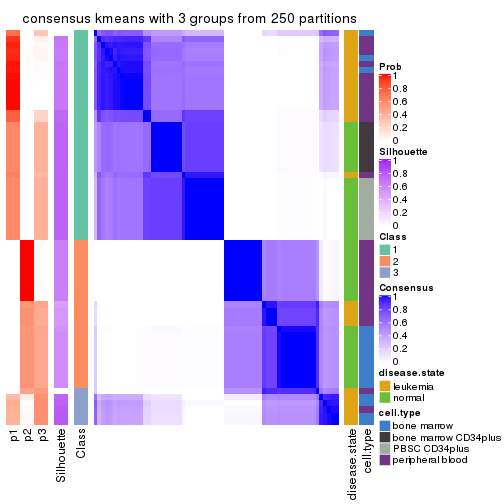
consensus_heatmap(res, k = 4)
consensus_heatmap(res, k = 5)
consensus_heatmap(res, k = 6)
Heatmaps for the membership of samples in all partitions to see how consistent they are:
membership_heatmap(res, k = 2)
membership_heatmap(res, k = 3)
membership_heatmap(res, k = 4)
membership_heatmap(res, k = 5)
membership_heatmap(res, k = 6)
As soon as we have had the classes for columns, we can look for signatures which are significantly different between classes which can be candidate marks for certain classes. Following are the heatmaps for signatures.
Signature heatmaps where rows are scaled:
get_signatures(res, k = 2)
get_signatures(res, k = 3)
get_signatures(res, k = 4)
get_signatures(res, k = 5)
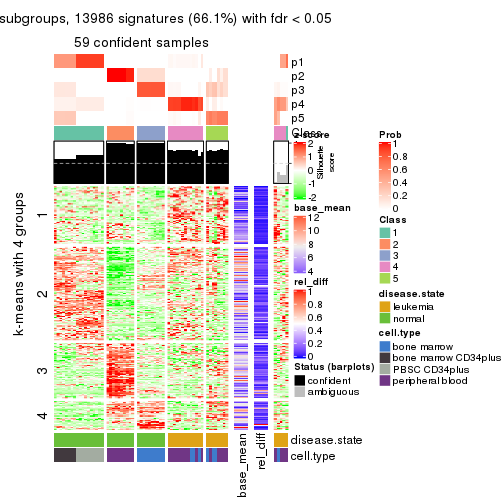
get_signatures(res, k = 6)
Signature heatmaps where rows are not scaled:
get_signatures(res, k = 2, scale_rows = FALSE)
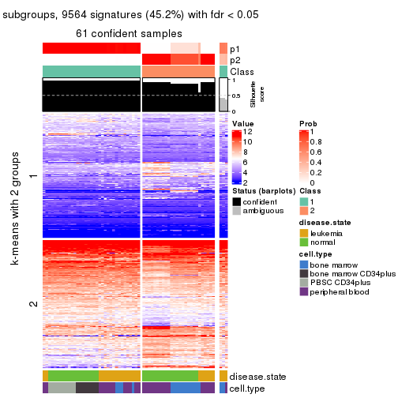
get_signatures(res, k = 3, scale_rows = FALSE)
get_signatures(res, k = 4, scale_rows = FALSE)
get_signatures(res, k = 5, scale_rows = FALSE)
get_signatures(res, k = 6, scale_rows = FALSE)
Compare the overlap of signatures from different k:
compare_signatures(res)
get_signature() returns a data frame invisibly. TO get the list of signatures, the function
call should be assigned to a variable explicitly. In following code, if plot argument is set
to FALSE, no heatmap is plotted while only the differential analysis is performed.
# code only for demonstration
tb = get_signature(res, k = ..., plot = FALSE)
An example of the output of tb is:
#> which_row fdr mean_1 mean_2 scaled_mean_1 scaled_mean_2 km
#> 1 38 0.042760348 8.373488 9.131774 -0.5533452 0.5164555 1
#> 2 40 0.018707592 7.106213 8.469186 -0.6173731 0.5762149 1
#> 3 55 0.019134737 10.221463 11.207825 -0.6159697 0.5749050 1
#> 4 59 0.006059896 5.921854 7.869574 -0.6899429 0.6439467 1
#> 5 60 0.018055526 8.928898 10.211722 -0.6204761 0.5791110 1
#> 6 98 0.009384629 15.714769 14.887706 0.6635654 -0.6193277 2
...
The columns in tb are:
which_row: row indices corresponding to the input matrix.fdr: FDR for the differential test. mean_x: The mean value in group x.scaled_mean_x: The mean value in group x after rows are scaled.km: Row groups if k-means clustering is applied to rows.UMAP plot which shows how samples are separated.
dimension_reduction(res, k = 2, method = "UMAP")
dimension_reduction(res, k = 3, method = "UMAP")
dimension_reduction(res, k = 4, method = "UMAP")
dimension_reduction(res, k = 5, method = "UMAP")

dimension_reduction(res, k = 6, method = "UMAP")
Following heatmap shows how subgroups are split when increasing k:
collect_classes(res)
Test correlation between subgroups and known annotations. If the known annotation is numeric, one-way ANOVA test is applied, and if the known annotation is discrete, chi-squared contingency table test is applied.
test_to_known_factors(res)
#> n disease.state(p) cell.type(p) k
#> MAD:kmeans 61 7.76e-02 1.32e-04 2
#> MAD:kmeans 61 5.37e-04 3.71e-05 3
#> MAD:kmeans 54 5.22e-09 6.09e-13 4
#> MAD:kmeans 59 4.71e-12 1.48e-14 5
#> MAD:kmeans 60 7.80e-11 9.03e-24 6
If matrix rows can be associated to genes, consider to use GO_Enrichment(res,
...) to perform function enrichment for the signature genes.
The object with results only for a single top-value method and a single partition method can be extracted as:
res = res_list["MAD", "skmeans"]
# you can also extract it by
# res = res_list["MAD:skmeans"]
A summary of res and all the functions that can be applied to it:
res
#> A 'ConsensusPartition' object with k = 2, 3, 4, 5, 6.
#> On a matrix with 21168 rows and 64 columns.
#> Top rows (1000, 2000, 3000, 4000, 5000) are extracted by 'MAD' method.
#> Subgroups are detected by 'skmeans' method.
#> Performed in total 1250 partitions by row resampling.
#> Best k for subgroups seems to be 6.
#>
#> Following methods can be applied to this 'ConsensusPartition' object:
#> [1] "cola_report" "collect_classes" "collect_plots"
#> [4] "collect_stats" "colnames" "compare_signatures"
#> [7] "consensus_heatmap" "dimension_reduction" "functional_enrichment"
#> [10] "get_anno_col" "get_anno" "get_classes"
#> [13] "get_consensus" "get_matrix" "get_membership"
#> [16] "get_param" "get_signatures" "get_stats"
#> [19] "is_best_k" "is_stable_k" "membership_heatmap"
#> [22] "ncol" "nrow" "plot_ecdf"
#> [25] "rownames" "select_partition_number" "show"
#> [28] "suggest_best_k" "test_to_known_factors"
collect_plots() function collects all the plots made from res for all k (number of partitions)
into one single page to provide an easy and fast comparison between different k.
collect_plots(res)
The plots are:
k and the heatmap of
predicted classes for each k.k.k.k.All the plots in panels can be made by individual functions and they are plotted later in this section.
select_partition_number() produces several plots showing different
statistics for choosing “optimized” k. There are following statistics:
k;k, the area increased is defined as \(A_k - A_{k-1}\).The detailed explanations of these statistics can be found in the cola vignette.
Generally speaking, lower PAC score, higher mean silhouette score or higher
concordance corresponds to better partition. Rand index and Jaccard index
measure how similar the current partition is compared to partition with k-1.
If they are too similar, we won't accept k is better than k-1.
select_partition_number(res)
The numeric values for all these statistics can be obtained by get_stats().
get_stats(res)
#> k 1-PAC mean_silhouette concordance area_increased Rand Jaccard
#> 2 2 1.000 0.989 0.995 0.5042 0.497 0.497
#> 3 3 0.731 0.882 0.861 0.2433 0.874 0.749
#> 4 4 0.738 0.493 0.759 0.1695 0.908 0.773
#> 5 5 0.760 0.842 0.857 0.0905 0.787 0.421
#> 6 6 0.932 0.852 0.925 0.0428 0.965 0.822
suggest_best_k() suggests the best \(k\) based on these statistics. The rules are as follows:
NA.suggest_best_k(res)
#> [1] 6
#> attr(,"optional")
#> [1] 2
There is also optional best \(k\) = 2 that is worth to check.
Following shows the table of the partitions (You need to click the show/hide
code output link to see it). The membership matrix (columns with name p*)
is inferred by
clue::cl_consensus()
function with the SE method. Basically the value in the membership matrix
represents the probability to belong to a certain group. The finall class
label for an item is determined with the group with highest probability it
belongs to.
In get_classes() function, the entropy is calculated from the membership
matrix and the silhouette score is calculated from the consensus matrix.
cbind(get_classes(res, k = 2), get_membership(res, k = 2))
#> class entropy silhouette p1 p2
#> GSM239371 1 0.000 0.993 1.000 0.000
#> GSM239487 2 0.278 0.951 0.048 0.952
#> GSM239489 1 0.760 0.716 0.780 0.220
#> GSM239492 1 0.000 0.993 1.000 0.000
#> GSM239497 2 0.224 0.963 0.036 0.964
#> GSM239520 2 0.000 0.997 0.000 1.000
#> GSM240427 1 0.000 0.993 1.000 0.000
#> GSM239345 1 0.000 0.993 1.000 0.000
#> GSM239346 2 0.000 0.997 0.000 1.000
#> GSM239348 1 0.000 0.993 1.000 0.000
#> GSM239363 2 0.000 0.997 0.000 1.000
#> GSM239460 2 0.000 0.997 0.000 1.000
#> GSM239485 1 0.000 0.993 1.000 0.000
#> GSM239488 2 0.000 0.997 0.000 1.000
#> GSM239490 1 0.000 0.993 1.000 0.000
#> GSM239491 1 0.000 0.993 1.000 0.000
#> GSM239493 1 0.000 0.993 1.000 0.000
#> GSM239494 1 0.000 0.993 1.000 0.000
#> GSM239495 1 0.000 0.993 1.000 0.000
#> GSM239496 1 0.000 0.993 1.000 0.000
#> GSM239498 2 0.000 0.997 0.000 1.000
#> GSM239516 2 0.000 0.997 0.000 1.000
#> GSM239580 1 0.000 0.993 1.000 0.000
#> GSM240405 1 0.000 0.993 1.000 0.000
#> GSM240406 1 0.000 0.993 1.000 0.000
#> GSM240429 1 0.000 0.993 1.000 0.000
#> GSM239323 2 0.000 0.997 0.000 1.000
#> GSM239324 2 0.000 0.997 0.000 1.000
#> GSM239326 2 0.000 0.997 0.000 1.000
#> GSM239328 2 0.000 0.997 0.000 1.000
#> GSM239329 2 0.000 0.997 0.000 1.000
#> GSM239331 2 0.000 0.997 0.000 1.000
#> GSM239332 2 0.000 0.997 0.000 1.000
#> GSM239333 2 0.000 0.997 0.000 1.000
#> GSM239334 2 0.000 0.997 0.000 1.000
#> GSM239335 2 0.000 0.997 0.000 1.000
#> GSM240430 2 0.000 0.997 0.000 1.000
#> GSM240431 2 0.000 0.997 0.000 1.000
#> GSM240432 2 0.000 0.997 0.000 1.000
#> GSM240433 2 0.000 0.997 0.000 1.000
#> GSM240494 2 0.000 0.997 0.000 1.000
#> GSM240495 2 0.000 0.997 0.000 1.000
#> GSM240496 2 0.000 0.997 0.000 1.000
#> GSM240497 2 0.000 0.997 0.000 1.000
#> GSM240498 2 0.000 0.997 0.000 1.000
#> GSM240499 2 0.000 0.997 0.000 1.000
#> GSM239170 1 0.000 0.993 1.000 0.000
#> GSM239338 1 0.000 0.993 1.000 0.000
#> GSM239339 1 0.000 0.993 1.000 0.000
#> GSM239340 1 0.000 0.993 1.000 0.000
#> GSM239341 1 0.000 0.993 1.000 0.000
#> GSM239342 1 0.000 0.993 1.000 0.000
#> GSM239343 1 0.000 0.993 1.000 0.000
#> GSM239344 1 0.000 0.993 1.000 0.000
#> GSM240500 1 0.000 0.993 1.000 0.000
#> GSM240501 1 0.000 0.993 1.000 0.000
#> GSM240502 1 0.000 0.993 1.000 0.000
#> GSM240503 1 0.000 0.993 1.000 0.000
#> GSM240504 1 0.000 0.993 1.000 0.000
#> GSM240505 1 0.000 0.993 1.000 0.000
#> GSM240506 1 0.000 0.993 1.000 0.000
#> GSM240507 1 0.000 0.993 1.000 0.000
#> GSM240508 1 0.000 0.993 1.000 0.000
#> GSM240509 1 0.000 0.993 1.000 0.000
cbind(get_classes(res, k = 3), get_membership(res, k = 3))
#> class entropy silhouette p1 p2 p3
#> GSM239371 1 0.0747 0.902 0.984 0.000 0.016
#> GSM239487 3 0.7807 0.639 0.184 0.144 0.672
#> GSM239489 3 0.6662 0.670 0.192 0.072 0.736
#> GSM239492 1 0.0747 0.902 0.984 0.000 0.016
#> GSM239497 3 0.7807 0.639 0.184 0.144 0.672
#> GSM239520 3 0.5859 0.714 0.000 0.344 0.656
#> GSM240427 1 0.5785 0.437 0.668 0.000 0.332
#> GSM239345 1 0.4346 0.879 0.816 0.000 0.184
#> GSM239346 2 0.1289 0.947 0.000 0.968 0.032
#> GSM239348 1 0.0747 0.902 0.984 0.000 0.016
#> GSM239363 2 0.1289 0.947 0.000 0.968 0.032
#> GSM239460 2 0.6107 0.629 0.184 0.764 0.052
#> GSM239485 1 0.0424 0.905 0.992 0.000 0.008
#> GSM239488 2 0.1289 0.947 0.000 0.968 0.032
#> GSM239490 1 0.0592 0.905 0.988 0.000 0.012
#> GSM239491 1 0.0747 0.902 0.984 0.000 0.016
#> GSM239493 1 0.1964 0.902 0.944 0.000 0.056
#> GSM239494 1 0.0747 0.904 0.984 0.000 0.016
#> GSM239495 1 0.0747 0.902 0.984 0.000 0.016
#> GSM239496 1 0.0747 0.902 0.984 0.000 0.016
#> GSM239498 2 0.1289 0.947 0.000 0.968 0.032
#> GSM239516 2 0.1289 0.947 0.000 0.968 0.032
#> GSM239580 1 0.4504 0.878 0.804 0.000 0.196
#> GSM240405 1 0.4346 0.879 0.816 0.000 0.184
#> GSM240406 1 0.0747 0.904 0.984 0.000 0.016
#> GSM240429 1 0.4346 0.879 0.816 0.000 0.184
#> GSM239323 3 0.4931 0.892 0.000 0.232 0.768
#> GSM239324 3 0.4931 0.892 0.000 0.232 0.768
#> GSM239326 3 0.4931 0.892 0.000 0.232 0.768
#> GSM239328 3 0.4931 0.892 0.000 0.232 0.768
#> GSM239329 3 0.4931 0.892 0.000 0.232 0.768
#> GSM239331 3 0.4931 0.892 0.000 0.232 0.768
#> GSM239332 3 0.4931 0.892 0.000 0.232 0.768
#> GSM239333 3 0.4931 0.892 0.000 0.232 0.768
#> GSM239334 3 0.4931 0.892 0.000 0.232 0.768
#> GSM239335 3 0.4931 0.892 0.000 0.232 0.768
#> GSM240430 2 0.0000 0.960 0.000 1.000 0.000
#> GSM240431 2 0.0000 0.960 0.000 1.000 0.000
#> GSM240432 2 0.0000 0.960 0.000 1.000 0.000
#> GSM240433 2 0.0000 0.960 0.000 1.000 0.000
#> GSM240494 2 0.0000 0.960 0.000 1.000 0.000
#> GSM240495 2 0.0000 0.960 0.000 1.000 0.000
#> GSM240496 2 0.0000 0.960 0.000 1.000 0.000
#> GSM240497 2 0.0000 0.960 0.000 1.000 0.000
#> GSM240498 2 0.0000 0.960 0.000 1.000 0.000
#> GSM240499 2 0.0000 0.960 0.000 1.000 0.000
#> GSM239170 1 0.0237 0.905 0.996 0.000 0.004
#> GSM239338 1 0.0237 0.905 0.996 0.000 0.004
#> GSM239339 1 0.0237 0.905 0.996 0.000 0.004
#> GSM239340 1 0.0237 0.905 0.996 0.000 0.004
#> GSM239341 1 0.0237 0.905 0.996 0.000 0.004
#> GSM239342 1 0.0237 0.905 0.996 0.000 0.004
#> GSM239343 1 0.0237 0.905 0.996 0.000 0.004
#> GSM239344 1 0.0237 0.905 0.996 0.000 0.004
#> GSM240500 1 0.4346 0.879 0.816 0.000 0.184
#> GSM240501 1 0.4346 0.879 0.816 0.000 0.184
#> GSM240502 1 0.4346 0.879 0.816 0.000 0.184
#> GSM240503 1 0.4346 0.879 0.816 0.000 0.184
#> GSM240504 1 0.4346 0.879 0.816 0.000 0.184
#> GSM240505 1 0.4346 0.879 0.816 0.000 0.184
#> GSM240506 1 0.4346 0.879 0.816 0.000 0.184
#> GSM240507 1 0.4346 0.879 0.816 0.000 0.184
#> GSM240508 1 0.4346 0.879 0.816 0.000 0.184
#> GSM240509 1 0.4346 0.879 0.816 0.000 0.184
cbind(get_classes(res, k = 4), get_membership(res, k = 4))
#> class entropy silhouette p1 p2 p3 p4
#> GSM239371 1 0.5440 -0.412 0.596 0.000 0.020 0.384
#> GSM239487 4 0.8996 0.478 0.352 0.100 0.148 0.400
#> GSM239489 4 0.5881 0.558 0.448 0.008 0.020 0.524
#> GSM239492 1 0.3873 -0.158 0.772 0.000 0.000 0.228
#> GSM239497 1 0.9451 -0.466 0.352 0.104 0.256 0.288
#> GSM239520 3 0.6791 0.645 0.036 0.132 0.676 0.156
#> GSM240427 4 0.4992 0.549 0.476 0.000 0.000 0.524
#> GSM239345 1 0.4992 0.468 0.524 0.000 0.000 0.476
#> GSM239346 2 0.1211 0.958 0.000 0.960 0.000 0.040
#> GSM239348 1 0.5535 -0.491 0.560 0.000 0.020 0.420
#> GSM239363 2 0.3024 0.863 0.000 0.852 0.000 0.148
#> GSM239460 4 0.7622 0.551 0.328 0.136 0.020 0.516
#> GSM239485 1 0.5517 -0.288 0.568 0.000 0.020 0.412
#> GSM239488 2 0.1389 0.954 0.000 0.952 0.000 0.048
#> GSM239490 1 0.5558 -0.272 0.548 0.000 0.020 0.432
#> GSM239491 1 0.5590 -0.366 0.524 0.000 0.020 0.456
#> GSM239493 4 0.5508 0.222 0.408 0.000 0.020 0.572
#> GSM239494 1 0.5594 -0.377 0.520 0.000 0.020 0.460
#> GSM239495 1 0.5550 -0.392 0.552 0.000 0.020 0.428
#> GSM239496 1 0.5594 -0.370 0.520 0.000 0.020 0.460
#> GSM239498 2 0.1389 0.954 0.000 0.952 0.000 0.048
#> GSM239516 2 0.1118 0.960 0.000 0.964 0.000 0.036
#> GSM239580 4 0.3444 -0.162 0.184 0.000 0.000 0.816
#> GSM240405 1 0.4992 0.468 0.524 0.000 0.000 0.476
#> GSM240406 1 0.5607 -0.373 0.496 0.000 0.020 0.484
#> GSM240429 1 0.4992 0.468 0.524 0.000 0.000 0.476
#> GSM239323 3 0.0707 0.971 0.000 0.020 0.980 0.000
#> GSM239324 3 0.0707 0.971 0.000 0.020 0.980 0.000
#> GSM239326 3 0.0707 0.971 0.000 0.020 0.980 0.000
#> GSM239328 3 0.0707 0.971 0.000 0.020 0.980 0.000
#> GSM239329 3 0.0707 0.971 0.000 0.020 0.980 0.000
#> GSM239331 3 0.0707 0.971 0.000 0.020 0.980 0.000
#> GSM239332 3 0.0707 0.971 0.000 0.020 0.980 0.000
#> GSM239333 3 0.0707 0.971 0.000 0.020 0.980 0.000
#> GSM239334 3 0.0707 0.971 0.000 0.020 0.980 0.000
#> GSM239335 3 0.0707 0.971 0.000 0.020 0.980 0.000
#> GSM240430 2 0.0336 0.976 0.000 0.992 0.008 0.000
#> GSM240431 2 0.0336 0.976 0.000 0.992 0.008 0.000
#> GSM240432 2 0.0336 0.976 0.000 0.992 0.008 0.000
#> GSM240433 2 0.0336 0.976 0.000 0.992 0.008 0.000
#> GSM240494 2 0.0336 0.976 0.000 0.992 0.008 0.000
#> GSM240495 2 0.0336 0.976 0.000 0.992 0.008 0.000
#> GSM240496 2 0.0336 0.976 0.000 0.992 0.008 0.000
#> GSM240497 2 0.0336 0.976 0.000 0.992 0.008 0.000
#> GSM240498 2 0.0336 0.976 0.000 0.992 0.008 0.000
#> GSM240499 2 0.0336 0.976 0.000 0.992 0.008 0.000
#> GSM239170 1 0.0000 0.303 1.000 0.000 0.000 0.000
#> GSM239338 1 0.0000 0.303 1.000 0.000 0.000 0.000
#> GSM239339 1 0.0000 0.303 1.000 0.000 0.000 0.000
#> GSM239340 1 0.0000 0.303 1.000 0.000 0.000 0.000
#> GSM239341 1 0.0000 0.303 1.000 0.000 0.000 0.000
#> GSM239342 1 0.0000 0.303 1.000 0.000 0.000 0.000
#> GSM239343 1 0.0000 0.303 1.000 0.000 0.000 0.000
#> GSM239344 1 0.0000 0.303 1.000 0.000 0.000 0.000
#> GSM240500 1 0.4992 0.468 0.524 0.000 0.000 0.476
#> GSM240501 1 0.4992 0.468 0.524 0.000 0.000 0.476
#> GSM240502 1 0.4992 0.468 0.524 0.000 0.000 0.476
#> GSM240503 1 0.4992 0.468 0.524 0.000 0.000 0.476
#> GSM240504 1 0.4992 0.468 0.524 0.000 0.000 0.476
#> GSM240505 1 0.4992 0.468 0.524 0.000 0.000 0.476
#> GSM240506 1 0.4992 0.468 0.524 0.000 0.000 0.476
#> GSM240507 1 0.4992 0.468 0.524 0.000 0.000 0.476
#> GSM240508 1 0.4992 0.468 0.524 0.000 0.000 0.476
#> GSM240509 1 0.4992 0.468 0.524 0.000 0.000 0.476
cbind(get_classes(res, k = 5), get_membership(res, k = 5))
#> class entropy silhouette p1 p2 p3 p4 p5
#> GSM239371 4 0.393 0.737 0.004 0.000 0.000 0.700 0.296
#> GSM239487 5 0.497 0.491 0.000 0.028 0.012 0.316 0.644
#> GSM239489 4 0.407 0.246 0.000 0.016 0.000 0.720 0.264
#> GSM239492 5 0.352 0.631 0.040 0.000 0.000 0.140 0.820
#> GSM239497 5 0.496 0.492 0.000 0.028 0.012 0.312 0.648
#> GSM239520 5 0.623 0.440 0.000 0.040 0.076 0.304 0.580
#> GSM240427 5 0.331 0.588 0.000 0.000 0.000 0.224 0.776
#> GSM239345 1 0.112 0.933 0.956 0.000 0.000 0.044 0.000
#> GSM239346 2 0.364 0.831 0.000 0.812 0.000 0.144 0.044
#> GSM239348 4 0.377 0.732 0.000 0.000 0.000 0.704 0.296
#> GSM239363 2 0.572 0.603 0.000 0.596 0.000 0.284 0.120
#> GSM239460 4 0.287 0.455 0.000 0.020 0.000 0.860 0.120
#> GSM239485 4 0.554 0.780 0.188 0.000 0.000 0.648 0.164
#> GSM239488 2 0.379 0.823 0.000 0.800 0.000 0.152 0.048
#> GSM239490 4 0.557 0.757 0.216 0.000 0.000 0.640 0.144
#> GSM239491 4 0.515 0.810 0.104 0.000 0.000 0.680 0.216
#> GSM239493 4 0.509 0.801 0.152 0.000 0.000 0.700 0.148
#> GSM239494 4 0.500 0.817 0.104 0.000 0.000 0.700 0.196
#> GSM239495 4 0.476 0.798 0.064 0.000 0.000 0.700 0.236
#> GSM239496 4 0.498 0.817 0.100 0.000 0.000 0.700 0.200
#> GSM239498 2 0.379 0.823 0.000 0.800 0.000 0.152 0.048
#> GSM239516 2 0.355 0.835 0.000 0.820 0.000 0.136 0.044
#> GSM239580 1 0.320 0.718 0.804 0.000 0.000 0.192 0.004
#> GSM240405 1 0.000 0.974 1.000 0.000 0.000 0.000 0.000
#> GSM240406 4 0.508 0.810 0.136 0.000 0.000 0.700 0.164
#> GSM240429 1 0.088 0.946 0.968 0.000 0.000 0.032 0.000
#> GSM239323 3 0.000 1.000 0.000 0.000 1.000 0.000 0.000
#> GSM239324 3 0.000 1.000 0.000 0.000 1.000 0.000 0.000
#> GSM239326 3 0.000 1.000 0.000 0.000 1.000 0.000 0.000
#> GSM239328 3 0.000 1.000 0.000 0.000 1.000 0.000 0.000
#> GSM239329 3 0.000 1.000 0.000 0.000 1.000 0.000 0.000
#> GSM239331 3 0.000 1.000 0.000 0.000 1.000 0.000 0.000
#> GSM239332 3 0.000 1.000 0.000 0.000 1.000 0.000 0.000
#> GSM239333 3 0.000 1.000 0.000 0.000 1.000 0.000 0.000
#> GSM239334 3 0.000 1.000 0.000 0.000 1.000 0.000 0.000
#> GSM239335 3 0.000 1.000 0.000 0.000 1.000 0.000 0.000
#> GSM240430 2 0.051 0.917 0.000 0.984 0.016 0.000 0.000
#> GSM240431 2 0.051 0.917 0.000 0.984 0.016 0.000 0.000
#> GSM240432 2 0.051 0.917 0.000 0.984 0.016 0.000 0.000
#> GSM240433 2 0.051 0.917 0.000 0.984 0.016 0.000 0.000
#> GSM240494 2 0.051 0.917 0.000 0.984 0.016 0.000 0.000
#> GSM240495 2 0.051 0.917 0.000 0.984 0.016 0.000 0.000
#> GSM240496 2 0.051 0.917 0.000 0.984 0.016 0.000 0.000
#> GSM240497 2 0.051 0.917 0.000 0.984 0.016 0.000 0.000
#> GSM240498 2 0.051 0.917 0.000 0.984 0.016 0.000 0.000
#> GSM240499 2 0.051 0.917 0.000 0.984 0.016 0.000 0.000
#> GSM239170 5 0.273 0.788 0.160 0.000 0.000 0.000 0.840
#> GSM239338 5 0.273 0.788 0.160 0.000 0.000 0.000 0.840
#> GSM239339 5 0.273 0.788 0.160 0.000 0.000 0.000 0.840
#> GSM239340 5 0.273 0.788 0.160 0.000 0.000 0.000 0.840
#> GSM239341 5 0.273 0.788 0.160 0.000 0.000 0.000 0.840
#> GSM239342 5 0.273 0.788 0.160 0.000 0.000 0.000 0.840
#> GSM239343 5 0.273 0.788 0.160 0.000 0.000 0.000 0.840
#> GSM239344 5 0.273 0.788 0.160 0.000 0.000 0.000 0.840
#> GSM240500 1 0.000 0.974 1.000 0.000 0.000 0.000 0.000
#> GSM240501 1 0.000 0.974 1.000 0.000 0.000 0.000 0.000
#> GSM240502 1 0.000 0.974 1.000 0.000 0.000 0.000 0.000
#> GSM240503 1 0.000 0.974 1.000 0.000 0.000 0.000 0.000
#> GSM240504 1 0.000 0.974 1.000 0.000 0.000 0.000 0.000
#> GSM240505 1 0.000 0.974 1.000 0.000 0.000 0.000 0.000
#> GSM240506 1 0.000 0.974 1.000 0.000 0.000 0.000 0.000
#> GSM240507 1 0.000 0.974 1.000 0.000 0.000 0.000 0.000
#> GSM240508 1 0.000 0.974 1.000 0.000 0.000 0.000 0.000
#> GSM240509 1 0.000 0.974 1.000 0.000 0.000 0.000 0.000
cbind(get_classes(res, k = 6), get_membership(res, k = 6))
#> class entropy silhouette p1 p2 p3 p4 p5 p6
#> GSM239371 4 0.1745 0.8729 0.000 0.000 0.000 0.920 0.068 0.012
#> GSM239487 6 0.0692 0.8099 0.000 0.004 0.000 0.000 0.020 0.976
#> GSM239489 6 0.0972 0.7926 0.000 0.000 0.000 0.028 0.008 0.964
#> GSM239492 5 0.3719 0.6565 0.008 0.000 0.000 0.200 0.764 0.028
#> GSM239497 6 0.0692 0.8099 0.000 0.004 0.000 0.000 0.020 0.976
#> GSM239520 6 0.0665 0.8062 0.000 0.004 0.008 0.000 0.008 0.980
#> GSM240427 6 0.4468 0.5069 0.000 0.000 0.000 0.092 0.212 0.696
#> GSM239345 1 0.1268 0.9158 0.952 0.000 0.000 0.008 0.036 0.004
#> GSM239346 2 0.4062 0.6751 0.000 0.724 0.000 0.028 0.012 0.236
#> GSM239348 4 0.1320 0.8680 0.000 0.000 0.000 0.948 0.036 0.016
#> GSM239363 6 0.4765 -0.0888 0.000 0.436 0.000 0.028 0.012 0.524
#> GSM239460 4 0.4336 -0.0216 0.000 0.000 0.000 0.504 0.020 0.476
#> GSM239485 4 0.3480 0.7868 0.124 0.000 0.000 0.816 0.048 0.012
#> GSM239488 2 0.4327 0.6076 0.000 0.676 0.000 0.028 0.012 0.284
#> GSM239490 4 0.3415 0.7692 0.152 0.000 0.000 0.808 0.028 0.012
#> GSM239491 4 0.1850 0.8616 0.008 0.000 0.000 0.924 0.052 0.016
#> GSM239493 4 0.1921 0.8738 0.012 0.000 0.000 0.920 0.056 0.012
#> GSM239494 4 0.1882 0.8751 0.008 0.000 0.000 0.920 0.060 0.012
#> GSM239495 4 0.1829 0.8747 0.004 0.000 0.000 0.920 0.064 0.012
#> GSM239496 4 0.1225 0.8689 0.000 0.000 0.000 0.952 0.036 0.012
#> GSM239498 2 0.4327 0.6076 0.000 0.676 0.000 0.028 0.012 0.284
#> GSM239516 2 0.4037 0.6797 0.000 0.728 0.000 0.028 0.012 0.232
#> GSM239580 1 0.4922 0.2300 0.548 0.000 0.000 0.400 0.036 0.016
#> GSM240405 1 0.0146 0.9528 0.996 0.000 0.000 0.000 0.000 0.004
#> GSM240406 4 0.1793 0.8761 0.012 0.000 0.000 0.928 0.048 0.012
#> GSM240429 1 0.0972 0.9254 0.964 0.000 0.000 0.008 0.028 0.000
#> GSM239323 3 0.0000 0.9985 0.000 0.000 1.000 0.000 0.000 0.000
#> GSM239324 3 0.0000 0.9985 0.000 0.000 1.000 0.000 0.000 0.000
#> GSM239326 3 0.0000 0.9985 0.000 0.000 1.000 0.000 0.000 0.000
#> GSM239328 3 0.0000 0.9985 0.000 0.000 1.000 0.000 0.000 0.000
#> GSM239329 3 0.0146 0.9977 0.000 0.000 0.996 0.000 0.000 0.004
#> GSM239331 3 0.0146 0.9977 0.000 0.000 0.996 0.000 0.000 0.004
#> GSM239332 3 0.0146 0.9977 0.000 0.000 0.996 0.000 0.000 0.004
#> GSM239333 3 0.0146 0.9977 0.000 0.000 0.996 0.000 0.000 0.004
#> GSM239334 3 0.0000 0.9985 0.000 0.000 1.000 0.000 0.000 0.000
#> GSM239335 3 0.0000 0.9985 0.000 0.000 1.000 0.000 0.000 0.000
#> GSM240430 2 0.0000 0.8929 0.000 1.000 0.000 0.000 0.000 0.000
#> GSM240431 2 0.0000 0.8929 0.000 1.000 0.000 0.000 0.000 0.000
#> GSM240432 2 0.0000 0.8929 0.000 1.000 0.000 0.000 0.000 0.000
#> GSM240433 2 0.0000 0.8929 0.000 1.000 0.000 0.000 0.000 0.000
#> GSM240494 2 0.0000 0.8929 0.000 1.000 0.000 0.000 0.000 0.000
#> GSM240495 2 0.0000 0.8929 0.000 1.000 0.000 0.000 0.000 0.000
#> GSM240496 2 0.0000 0.8929 0.000 1.000 0.000 0.000 0.000 0.000
#> GSM240497 2 0.0000 0.8929 0.000 1.000 0.000 0.000 0.000 0.000
#> GSM240498 2 0.0000 0.8929 0.000 1.000 0.000 0.000 0.000 0.000
#> GSM240499 2 0.0000 0.8929 0.000 1.000 0.000 0.000 0.000 0.000
#> GSM239170 5 0.1204 0.9624 0.056 0.000 0.000 0.000 0.944 0.000
#> GSM239338 5 0.1204 0.9624 0.056 0.000 0.000 0.000 0.944 0.000
#> GSM239339 5 0.1204 0.9624 0.056 0.000 0.000 0.000 0.944 0.000
#> GSM239340 5 0.1204 0.9624 0.056 0.000 0.000 0.000 0.944 0.000
#> GSM239341 5 0.1204 0.9624 0.056 0.000 0.000 0.000 0.944 0.000
#> GSM239342 5 0.1204 0.9624 0.056 0.000 0.000 0.000 0.944 0.000
#> GSM239343 5 0.1204 0.9624 0.056 0.000 0.000 0.000 0.944 0.000
#> GSM239344 5 0.1204 0.9624 0.056 0.000 0.000 0.000 0.944 0.000
#> GSM240500 1 0.0000 0.9549 1.000 0.000 0.000 0.000 0.000 0.000
#> GSM240501 1 0.0000 0.9549 1.000 0.000 0.000 0.000 0.000 0.000
#> GSM240502 1 0.0000 0.9549 1.000 0.000 0.000 0.000 0.000 0.000
#> GSM240503 1 0.0000 0.9549 1.000 0.000 0.000 0.000 0.000 0.000
#> GSM240504 1 0.0000 0.9549 1.000 0.000 0.000 0.000 0.000 0.000
#> GSM240505 1 0.0000 0.9549 1.000 0.000 0.000 0.000 0.000 0.000
#> GSM240506 1 0.0000 0.9549 1.000 0.000 0.000 0.000 0.000 0.000
#> GSM240507 1 0.0000 0.9549 1.000 0.000 0.000 0.000 0.000 0.000
#> GSM240508 1 0.0000 0.9549 1.000 0.000 0.000 0.000 0.000 0.000
#> GSM240509 1 0.0000 0.9549 1.000 0.000 0.000 0.000 0.000 0.000
Heatmaps for the consensus matrix. It visualizes the probability of two samples to be in a same group.
consensus_heatmap(res, k = 2)
consensus_heatmap(res, k = 3)
consensus_heatmap(res, k = 4)
consensus_heatmap(res, k = 5)
consensus_heatmap(res, k = 6)
Heatmaps for the membership of samples in all partitions to see how consistent they are:
membership_heatmap(res, k = 2)
membership_heatmap(res, k = 3)
membership_heatmap(res, k = 4)
membership_heatmap(res, k = 5)
membership_heatmap(res, k = 6)
As soon as we have had the classes for columns, we can look for signatures which are significantly different between classes which can be candidate marks for certain classes. Following are the heatmaps for signatures.
Signature heatmaps where rows are scaled:
get_signatures(res, k = 2)
get_signatures(res, k = 3)
get_signatures(res, k = 4)
get_signatures(res, k = 5)
get_signatures(res, k = 6)
Signature heatmaps where rows are not scaled:
get_signatures(res, k = 2, scale_rows = FALSE)
get_signatures(res, k = 3, scale_rows = FALSE)
get_signatures(res, k = 4, scale_rows = FALSE)
get_signatures(res, k = 5, scale_rows = FALSE)
get_signatures(res, k = 6, scale_rows = FALSE)
Compare the overlap of signatures from different k:
compare_signatures(res)
get_signature() returns a data frame invisibly. TO get the list of signatures, the function
call should be assigned to a variable explicitly. In following code, if plot argument is set
to FALSE, no heatmap is plotted while only the differential analysis is performed.
# code only for demonstration
tb = get_signature(res, k = ..., plot = FALSE)
An example of the output of tb is:
#> which_row fdr mean_1 mean_2 scaled_mean_1 scaled_mean_2 km
#> 1 38 0.042760348 8.373488 9.131774 -0.5533452 0.5164555 1
#> 2 40 0.018707592 7.106213 8.469186 -0.6173731 0.5762149 1
#> 3 55 0.019134737 10.221463 11.207825 -0.6159697 0.5749050 1
#> 4 59 0.006059896 5.921854 7.869574 -0.6899429 0.6439467 1
#> 5 60 0.018055526 8.928898 10.211722 -0.6204761 0.5791110 1
#> 6 98 0.009384629 15.714769 14.887706 0.6635654 -0.6193277 2
...
The columns in tb are:
which_row: row indices corresponding to the input matrix.fdr: FDR for the differential test. mean_x: The mean value in group x.scaled_mean_x: The mean value in group x after rows are scaled.km: Row groups if k-means clustering is applied to rows.UMAP plot which shows how samples are separated.
dimension_reduction(res, k = 2, method = "UMAP")
dimension_reduction(res, k = 3, method = "UMAP")
dimension_reduction(res, k = 4, method = "UMAP")
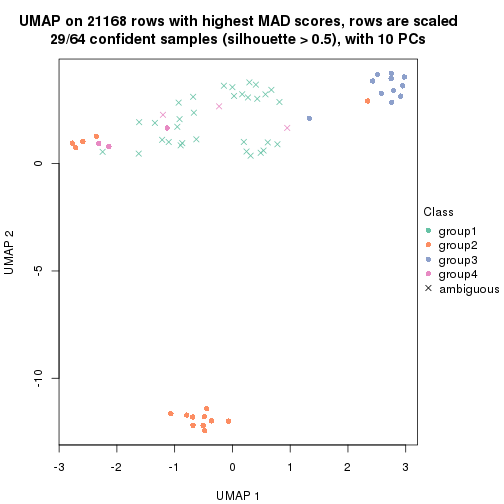
dimension_reduction(res, k = 5, method = "UMAP")
dimension_reduction(res, k = 6, method = "UMAP")
Following heatmap shows how subgroups are split when increasing k:
collect_classes(res)
Test correlation between subgroups and known annotations. If the known annotation is numeric, one-way ANOVA test is applied, and if the known annotation is discrete, chi-squared contingency table test is applied.
test_to_known_factors(res)
#> n disease.state(p) cell.type(p) k
#> MAD:skmeans 64 2.43e-01 4.64e-05 2
#> MAD:skmeans 63 5.45e-01 1.06e-13 3
#> MAD:skmeans 29 1.02e-02 1.94e-06 4
#> MAD:skmeans 59 4.99e-05 9.44e-22 5
#> MAD:skmeans 61 1.36e-06 5.49e-24 6
If matrix rows can be associated to genes, consider to use GO_Enrichment(res,
...) to perform function enrichment for the signature genes.
The object with results only for a single top-value method and a single partition method can be extracted as:
res = res_list["MAD", "pam"]
# you can also extract it by
# res = res_list["MAD:pam"]
A summary of res and all the functions that can be applied to it:
res
#> A 'ConsensusPartition' object with k = 2, 3, 4, 5, 6.
#> On a matrix with 21168 rows and 64 columns.
#> Top rows (1000, 2000, 3000, 4000, 5000) are extracted by 'MAD' method.
#> Subgroups are detected by 'pam' method.
#> Performed in total 1250 partitions by row resampling.
#> Best k for subgroups seems to be 6.
#>
#> Following methods can be applied to this 'ConsensusPartition' object:
#> [1] "cola_report" "collect_classes" "collect_plots"
#> [4] "collect_stats" "colnames" "compare_signatures"
#> [7] "consensus_heatmap" "dimension_reduction" "functional_enrichment"
#> [10] "get_anno_col" "get_anno" "get_classes"
#> [13] "get_consensus" "get_matrix" "get_membership"
#> [16] "get_param" "get_signatures" "get_stats"
#> [19] "is_best_k" "is_stable_k" "membership_heatmap"
#> [22] "ncol" "nrow" "plot_ecdf"
#> [25] "rownames" "select_partition_number" "show"
#> [28] "suggest_best_k" "test_to_known_factors"
collect_plots() function collects all the plots made from res for all k (number of partitions)
into one single page to provide an easy and fast comparison between different k.
collect_plots(res)
The plots are:
k and the heatmap of
predicted classes for each k.k.k.k.All the plots in panels can be made by individual functions and they are plotted later in this section.
select_partition_number() produces several plots showing different
statistics for choosing “optimized” k. There are following statistics:
k;k, the area increased is defined as \(A_k - A_{k-1}\).The detailed explanations of these statistics can be found in the cola vignette.
Generally speaking, lower PAC score, higher mean silhouette score or higher
concordance corresponds to better partition. Rand index and Jaccard index
measure how similar the current partition is compared to partition with k-1.
If they are too similar, we won't accept k is better than k-1.
select_partition_number(res)
The numeric values for all these statistics can be obtained by get_stats().
get_stats(res)
#> k 1-PAC mean_silhouette concordance area_increased Rand Jaccard
#> 2 2 1.000 1.000 1.000 0.5079 0.493 0.493
#> 3 3 1.000 0.948 0.980 0.2180 0.891 0.778
#> 4 4 0.893 0.897 0.956 0.2138 0.852 0.620
#> 5 5 0.882 0.864 0.924 0.0629 0.920 0.700
#> 6 6 0.979 0.882 0.959 0.0484 0.938 0.712
suggest_best_k() suggests the best \(k\) based on these statistics. The rules are as follows:
NA.suggest_best_k(res)
#> [1] 6
#> attr(,"optional")
#> [1] 2 3
There is also optional best \(k\) = 2 3 that is worth to check.
Following shows the table of the partitions (You need to click the show/hide
code output link to see it). The membership matrix (columns with name p*)
is inferred by
clue::cl_consensus()
function with the SE method. Basically the value in the membership matrix
represents the probability to belong to a certain group. The finall class
label for an item is determined with the group with highest probability it
belongs to.
In get_classes() function, the entropy is calculated from the membership
matrix and the silhouette score is calculated from the consensus matrix.
cbind(get_classes(res, k = 2), get_membership(res, k = 2))
#> class entropy silhouette p1 p2
#> GSM239371 1 0 1 1 0
#> GSM239487 2 0 1 0 1
#> GSM239489 2 0 1 0 1
#> GSM239492 1 0 1 1 0
#> GSM239497 2 0 1 0 1
#> GSM239520 2 0 1 0 1
#> GSM240427 2 0 1 0 1
#> GSM239345 1 0 1 1 0
#> GSM239346 2 0 1 0 1
#> GSM239348 1 0 1 1 0
#> GSM239363 2 0 1 0 1
#> GSM239460 2 0 1 0 1
#> GSM239485 1 0 1 1 0
#> GSM239488 2 0 1 0 1
#> GSM239490 1 0 1 1 0
#> GSM239491 1 0 1 1 0
#> GSM239493 1 0 1 1 0
#> GSM239494 1 0 1 1 0
#> GSM239495 1 0 1 1 0
#> GSM239496 1 0 1 1 0
#> GSM239498 2 0 1 0 1
#> GSM239516 2 0 1 0 1
#> GSM239580 1 0 1 1 0
#> GSM240405 1 0 1 1 0
#> GSM240406 1 0 1 1 0
#> GSM240429 1 0 1 1 0
#> GSM239323 2 0 1 0 1
#> GSM239324 2 0 1 0 1
#> GSM239326 2 0 1 0 1
#> GSM239328 2 0 1 0 1
#> GSM239329 2 0 1 0 1
#> GSM239331 2 0 1 0 1
#> GSM239332 2 0 1 0 1
#> GSM239333 2 0 1 0 1
#> GSM239334 2 0 1 0 1
#> GSM239335 2 0 1 0 1
#> GSM240430 2 0 1 0 1
#> GSM240431 2 0 1 0 1
#> GSM240432 2 0 1 0 1
#> GSM240433 2 0 1 0 1
#> GSM240494 2 0 1 0 1
#> GSM240495 2 0 1 0 1
#> GSM240496 2 0 1 0 1
#> GSM240497 2 0 1 0 1
#> GSM240498 2 0 1 0 1
#> GSM240499 2 0 1 0 1
#> GSM239170 1 0 1 1 0
#> GSM239338 1 0 1 1 0
#> GSM239339 1 0 1 1 0
#> GSM239340 1 0 1 1 0
#> GSM239341 1 0 1 1 0
#> GSM239342 1 0 1 1 0
#> GSM239343 1 0 1 1 0
#> GSM239344 1 0 1 1 0
#> GSM240500 1 0 1 1 0
#> GSM240501 1 0 1 1 0
#> GSM240502 1 0 1 1 0
#> GSM240503 1 0 1 1 0
#> GSM240504 1 0 1 1 0
#> GSM240505 1 0 1 1 0
#> GSM240506 1 0 1 1 0
#> GSM240507 1 0 1 1 0
#> GSM240508 1 0 1 1 0
#> GSM240509 1 0 1 1 0
cbind(get_classes(res, k = 3), get_membership(res, k = 3))
#> class entropy silhouette p1 p2 p3
#> GSM239371 1 0.0000 1.000 1 0.000 0.000
#> GSM239487 3 0.0000 0.944 0 0.000 1.000
#> GSM239489 3 0.0000 0.944 0 0.000 1.000
#> GSM239492 1 0.0000 1.000 1 0.000 0.000
#> GSM239497 3 0.0000 0.944 0 0.000 1.000
#> GSM239520 3 0.0000 0.944 0 0.000 1.000
#> GSM240427 3 0.0000 0.944 0 0.000 1.000
#> GSM239345 1 0.0000 1.000 1 0.000 0.000
#> GSM239346 3 0.4178 0.768 0 0.172 0.828
#> GSM239348 1 0.0000 1.000 1 0.000 0.000
#> GSM239363 3 0.0237 0.941 0 0.004 0.996
#> GSM239460 3 0.0000 0.944 0 0.000 1.000
#> GSM239485 1 0.0000 1.000 1 0.000 0.000
#> GSM239488 2 0.5529 0.528 0 0.704 0.296
#> GSM239490 1 0.0000 1.000 1 0.000 0.000
#> GSM239491 1 0.0000 1.000 1 0.000 0.000
#> GSM239493 1 0.0000 1.000 1 0.000 0.000
#> GSM239494 1 0.0000 1.000 1 0.000 0.000
#> GSM239495 1 0.0000 1.000 1 0.000 0.000
#> GSM239496 1 0.0000 1.000 1 0.000 0.000
#> GSM239498 3 0.6126 0.353 0 0.400 0.600
#> GSM239516 3 0.6168 0.321 0 0.412 0.588
#> GSM239580 1 0.0000 1.000 1 0.000 0.000
#> GSM240405 1 0.0000 1.000 1 0.000 0.000
#> GSM240406 1 0.0000 1.000 1 0.000 0.000
#> GSM240429 1 0.0000 1.000 1 0.000 0.000
#> GSM239323 3 0.0000 0.944 0 0.000 1.000
#> GSM239324 3 0.0000 0.944 0 0.000 1.000
#> GSM239326 3 0.0000 0.944 0 0.000 1.000
#> GSM239328 3 0.0000 0.944 0 0.000 1.000
#> GSM239329 3 0.0000 0.944 0 0.000 1.000
#> GSM239331 3 0.0000 0.944 0 0.000 1.000
#> GSM239332 3 0.0000 0.944 0 0.000 1.000
#> GSM239333 3 0.0000 0.944 0 0.000 1.000
#> GSM239334 3 0.0000 0.944 0 0.000 1.000
#> GSM239335 3 0.0000 0.944 0 0.000 1.000
#> GSM240430 2 0.0000 0.967 0 1.000 0.000
#> GSM240431 2 0.0000 0.967 0 1.000 0.000
#> GSM240432 2 0.0000 0.967 0 1.000 0.000
#> GSM240433 2 0.0000 0.967 0 1.000 0.000
#> GSM240494 2 0.0000 0.967 0 1.000 0.000
#> GSM240495 2 0.0000 0.967 0 1.000 0.000
#> GSM240496 2 0.0000 0.967 0 1.000 0.000
#> GSM240497 2 0.0000 0.967 0 1.000 0.000
#> GSM240498 2 0.0000 0.967 0 1.000 0.000
#> GSM240499 2 0.0000 0.967 0 1.000 0.000
#> GSM239170 1 0.0000 1.000 1 0.000 0.000
#> GSM239338 1 0.0000 1.000 1 0.000 0.000
#> GSM239339 1 0.0000 1.000 1 0.000 0.000
#> GSM239340 1 0.0000 1.000 1 0.000 0.000
#> GSM239341 1 0.0000 1.000 1 0.000 0.000
#> GSM239342 1 0.0000 1.000 1 0.000 0.000
#> GSM239343 1 0.0000 1.000 1 0.000 0.000
#> GSM239344 1 0.0000 1.000 1 0.000 0.000
#> GSM240500 1 0.0000 1.000 1 0.000 0.000
#> GSM240501 1 0.0000 1.000 1 0.000 0.000
#> GSM240502 1 0.0000 1.000 1 0.000 0.000
#> GSM240503 1 0.0000 1.000 1 0.000 0.000
#> GSM240504 1 0.0000 1.000 1 0.000 0.000
#> GSM240505 1 0.0000 1.000 1 0.000 0.000
#> GSM240506 1 0.0000 1.000 1 0.000 0.000
#> GSM240507 1 0.0000 1.000 1 0.000 0.000
#> GSM240508 1 0.0000 1.000 1 0.000 0.000
#> GSM240509 1 0.0000 1.000 1 0.000 0.000
cbind(get_classes(res, k = 4), get_membership(res, k = 4))
#> class entropy silhouette p1 p2 p3 p4
#> GSM239371 4 0.0707 0.930 0.020 0.000 0.000 0.980
#> GSM239487 3 0.0921 0.902 0.000 0.000 0.972 0.028
#> GSM239489 3 0.4008 0.646 0.000 0.000 0.756 0.244
#> GSM239492 4 0.0592 0.930 0.016 0.000 0.000 0.984
#> GSM239497 3 0.0000 0.924 0.000 0.000 1.000 0.000
#> GSM239520 3 0.0000 0.924 0.000 0.000 1.000 0.000
#> GSM240427 4 0.4817 0.322 0.000 0.000 0.388 0.612
#> GSM239345 1 0.0000 0.972 1.000 0.000 0.000 0.000
#> GSM239346 3 0.3311 0.765 0.000 0.172 0.828 0.000
#> GSM239348 4 0.0000 0.939 0.000 0.000 0.000 1.000
#> GSM239363 3 0.0188 0.922 0.000 0.004 0.996 0.000
#> GSM239460 3 0.0000 0.924 0.000 0.000 1.000 0.000
#> GSM239485 1 0.2868 0.851 0.864 0.000 0.000 0.136
#> GSM239488 2 0.4382 0.510 0.000 0.704 0.296 0.000
#> GSM239490 1 0.2760 0.860 0.872 0.000 0.000 0.128
#> GSM239491 4 0.3354 0.856 0.044 0.000 0.084 0.872
#> GSM239493 1 0.0707 0.960 0.980 0.000 0.000 0.020
#> GSM239494 1 0.2814 0.854 0.868 0.000 0.000 0.132
#> GSM239495 4 0.1792 0.895 0.068 0.000 0.000 0.932
#> GSM239496 4 0.2921 0.825 0.140 0.000 0.000 0.860
#> GSM239498 3 0.4855 0.373 0.000 0.400 0.600 0.000
#> GSM239516 3 0.4888 0.342 0.000 0.412 0.588 0.000
#> GSM239580 1 0.0000 0.972 1.000 0.000 0.000 0.000
#> GSM240405 1 0.0000 0.972 1.000 0.000 0.000 0.000
#> GSM240406 1 0.1557 0.932 0.944 0.000 0.000 0.056
#> GSM240429 1 0.0000 0.972 1.000 0.000 0.000 0.000
#> GSM239323 3 0.0000 0.924 0.000 0.000 1.000 0.000
#> GSM239324 3 0.0000 0.924 0.000 0.000 1.000 0.000
#> GSM239326 3 0.0000 0.924 0.000 0.000 1.000 0.000
#> GSM239328 3 0.0000 0.924 0.000 0.000 1.000 0.000
#> GSM239329 3 0.0000 0.924 0.000 0.000 1.000 0.000
#> GSM239331 3 0.0000 0.924 0.000 0.000 1.000 0.000
#> GSM239332 3 0.0000 0.924 0.000 0.000 1.000 0.000
#> GSM239333 3 0.0000 0.924 0.000 0.000 1.000 0.000
#> GSM239334 3 0.0000 0.924 0.000 0.000 1.000 0.000
#> GSM239335 3 0.0000 0.924 0.000 0.000 1.000 0.000
#> GSM240430 2 0.0000 0.966 0.000 1.000 0.000 0.000
#> GSM240431 2 0.0000 0.966 0.000 1.000 0.000 0.000
#> GSM240432 2 0.0000 0.966 0.000 1.000 0.000 0.000
#> GSM240433 2 0.0000 0.966 0.000 1.000 0.000 0.000
#> GSM240494 2 0.0000 0.966 0.000 1.000 0.000 0.000
#> GSM240495 2 0.0000 0.966 0.000 1.000 0.000 0.000
#> GSM240496 2 0.0000 0.966 0.000 1.000 0.000 0.000
#> GSM240497 2 0.0000 0.966 0.000 1.000 0.000 0.000
#> GSM240498 2 0.0000 0.966 0.000 1.000 0.000 0.000
#> GSM240499 2 0.0000 0.966 0.000 1.000 0.000 0.000
#> GSM239170 4 0.0000 0.939 0.000 0.000 0.000 1.000
#> GSM239338 4 0.0000 0.939 0.000 0.000 0.000 1.000
#> GSM239339 4 0.0000 0.939 0.000 0.000 0.000 1.000
#> GSM239340 4 0.0000 0.939 0.000 0.000 0.000 1.000
#> GSM239341 4 0.0000 0.939 0.000 0.000 0.000 1.000
#> GSM239342 4 0.0000 0.939 0.000 0.000 0.000 1.000
#> GSM239343 4 0.0000 0.939 0.000 0.000 0.000 1.000
#> GSM239344 4 0.0000 0.939 0.000 0.000 0.000 1.000
#> GSM240500 1 0.0000 0.972 1.000 0.000 0.000 0.000
#> GSM240501 1 0.0000 0.972 1.000 0.000 0.000 0.000
#> GSM240502 1 0.0000 0.972 1.000 0.000 0.000 0.000
#> GSM240503 1 0.0000 0.972 1.000 0.000 0.000 0.000
#> GSM240504 1 0.0000 0.972 1.000 0.000 0.000 0.000
#> GSM240505 1 0.0000 0.972 1.000 0.000 0.000 0.000
#> GSM240506 1 0.0000 0.972 1.000 0.000 0.000 0.000
#> GSM240507 1 0.0000 0.972 1.000 0.000 0.000 0.000
#> GSM240508 1 0.0000 0.972 1.000 0.000 0.000 0.000
#> GSM240509 1 0.0000 0.972 1.000 0.000 0.000 0.000
cbind(get_classes(res, k = 5), get_membership(res, k = 5))
#> class entropy silhouette p1 p2 p3 p4 p5
#> GSM239371 4 0.202 0.893 0.000 0.000 0.000 0.900 0.100
#> GSM239487 3 0.202 0.856 0.000 0.000 0.900 0.100 0.000
#> GSM239489 3 0.502 0.384 0.000 0.000 0.528 0.440 0.032
#> GSM239492 4 0.202 0.893 0.000 0.000 0.000 0.900 0.100
#> GSM239497 3 0.277 0.831 0.000 0.000 0.836 0.164 0.000
#> GSM239520 3 0.202 0.856 0.000 0.000 0.900 0.100 0.000
#> GSM240427 4 0.202 0.893 0.000 0.000 0.000 0.900 0.100
#> GSM239345 1 0.000 0.965 1.000 0.000 0.000 0.000 0.000
#> GSM239346 3 0.386 0.801 0.000 0.092 0.808 0.100 0.000
#> GSM239348 4 0.202 0.893 0.000 0.000 0.000 0.900 0.100
#> GSM239363 3 0.230 0.853 0.000 0.008 0.892 0.100 0.000
#> GSM239460 3 0.413 0.581 0.000 0.000 0.620 0.380 0.000
#> GSM239485 1 0.419 0.207 0.596 0.000 0.000 0.404 0.000
#> GSM239488 2 0.556 0.312 0.000 0.604 0.296 0.100 0.000
#> GSM239490 4 0.430 0.104 0.484 0.000 0.000 0.516 0.000
#> GSM239491 4 0.329 0.876 0.048 0.000 0.000 0.844 0.108
#> GSM239493 4 0.202 0.870 0.100 0.000 0.000 0.900 0.000
#> GSM239494 4 0.245 0.899 0.044 0.000 0.000 0.900 0.056
#> GSM239495 4 0.236 0.902 0.024 0.000 0.000 0.900 0.076
#> GSM239496 4 0.236 0.902 0.024 0.000 0.000 0.900 0.076
#> GSM239498 3 0.580 0.384 0.000 0.368 0.532 0.100 0.000
#> GSM239516 3 0.563 0.504 0.000 0.312 0.588 0.100 0.000
#> GSM239580 4 0.202 0.870 0.100 0.000 0.000 0.900 0.000
#> GSM240405 1 0.000 0.965 1.000 0.000 0.000 0.000 0.000
#> GSM240406 4 0.233 0.884 0.080 0.000 0.000 0.900 0.020
#> GSM240429 1 0.000 0.965 1.000 0.000 0.000 0.000 0.000
#> GSM239323 3 0.000 0.879 0.000 0.000 1.000 0.000 0.000
#> GSM239324 3 0.000 0.879 0.000 0.000 1.000 0.000 0.000
#> GSM239326 3 0.000 0.879 0.000 0.000 1.000 0.000 0.000
#> GSM239328 3 0.000 0.879 0.000 0.000 1.000 0.000 0.000
#> GSM239329 3 0.000 0.879 0.000 0.000 1.000 0.000 0.000
#> GSM239331 3 0.000 0.879 0.000 0.000 1.000 0.000 0.000
#> GSM239332 3 0.000 0.879 0.000 0.000 1.000 0.000 0.000
#> GSM239333 3 0.000 0.879 0.000 0.000 1.000 0.000 0.000
#> GSM239334 3 0.000 0.879 0.000 0.000 1.000 0.000 0.000
#> GSM239335 3 0.000 0.879 0.000 0.000 1.000 0.000 0.000
#> GSM240430 2 0.000 0.954 0.000 1.000 0.000 0.000 0.000
#> GSM240431 2 0.000 0.954 0.000 1.000 0.000 0.000 0.000
#> GSM240432 2 0.000 0.954 0.000 1.000 0.000 0.000 0.000
#> GSM240433 2 0.000 0.954 0.000 1.000 0.000 0.000 0.000
#> GSM240494 2 0.000 0.954 0.000 1.000 0.000 0.000 0.000
#> GSM240495 2 0.000 0.954 0.000 1.000 0.000 0.000 0.000
#> GSM240496 2 0.000 0.954 0.000 1.000 0.000 0.000 0.000
#> GSM240497 2 0.000 0.954 0.000 1.000 0.000 0.000 0.000
#> GSM240498 2 0.000 0.954 0.000 1.000 0.000 0.000 0.000
#> GSM240499 2 0.000 0.954 0.000 1.000 0.000 0.000 0.000
#> GSM239170 5 0.000 1.000 0.000 0.000 0.000 0.000 1.000
#> GSM239338 5 0.000 1.000 0.000 0.000 0.000 0.000 1.000
#> GSM239339 5 0.000 1.000 0.000 0.000 0.000 0.000 1.000
#> GSM239340 5 0.000 1.000 0.000 0.000 0.000 0.000 1.000
#> GSM239341 5 0.000 1.000 0.000 0.000 0.000 0.000 1.000
#> GSM239342 5 0.000 1.000 0.000 0.000 0.000 0.000 1.000
#> GSM239343 5 0.000 1.000 0.000 0.000 0.000 0.000 1.000
#> GSM239344 5 0.000 1.000 0.000 0.000 0.000 0.000 1.000
#> GSM240500 1 0.000 0.965 1.000 0.000 0.000 0.000 0.000
#> GSM240501 1 0.000 0.965 1.000 0.000 0.000 0.000 0.000
#> GSM240502 1 0.000 0.965 1.000 0.000 0.000 0.000 0.000
#> GSM240503 1 0.000 0.965 1.000 0.000 0.000 0.000 0.000
#> GSM240504 1 0.000 0.965 1.000 0.000 0.000 0.000 0.000
#> GSM240505 1 0.000 0.965 1.000 0.000 0.000 0.000 0.000
#> GSM240506 1 0.000 0.965 1.000 0.000 0.000 0.000 0.000
#> GSM240507 1 0.000 0.965 1.000 0.000 0.000 0.000 0.000
#> GSM240508 1 0.000 0.965 1.000 0.000 0.000 0.000 0.000
#> GSM240509 1 0.000 0.965 1.000 0.000 0.000 0.000 0.000
cbind(get_classes(res, k = 6), get_membership(res, k = 6))
#> class entropy silhouette p1 p2 p3 p4 p5 p6
#> GSM239371 4 0.0000 0.9135 0.000 0 0.000 1.000 0.00 0.000
#> GSM239487 6 0.0000 0.8575 0.000 0 0.000 0.000 0.00 1.000
#> GSM239489 4 0.3993 0.4782 0.000 0 0.300 0.676 0.00 0.024
#> GSM239492 4 0.0000 0.9135 0.000 0 0.000 1.000 0.00 0.000
#> GSM239497 6 0.3782 0.3162 0.000 0 0.412 0.000 0.00 0.588
#> GSM239520 6 0.3851 0.1846 0.000 0 0.460 0.000 0.00 0.540
#> GSM240427 4 0.0000 0.9135 0.000 0 0.000 1.000 0.00 0.000
#> GSM239345 1 0.0000 0.9652 1.000 0 0.000 0.000 0.00 0.000
#> GSM239346 3 0.3810 0.0469 0.000 0 0.572 0.000 0.00 0.428
#> GSM239348 4 0.0000 0.9135 0.000 0 0.000 1.000 0.00 0.000
#> GSM239363 6 0.0000 0.8575 0.000 0 0.000 0.000 0.00 1.000
#> GSM239460 6 0.0146 0.8547 0.000 0 0.000 0.004 0.00 0.996
#> GSM239485 1 0.3765 0.2715 0.596 0 0.000 0.404 0.00 0.000
#> GSM239488 6 0.0000 0.8575 0.000 0 0.000 0.000 0.00 1.000
#> GSM239490 4 0.3866 0.0128 0.484 0 0.000 0.516 0.00 0.000
#> GSM239491 4 0.2001 0.8493 0.048 0 0.000 0.912 0.04 0.000
#> GSM239493 4 0.0000 0.9135 0.000 0 0.000 1.000 0.00 0.000
#> GSM239494 4 0.0000 0.9135 0.000 0 0.000 1.000 0.00 0.000
#> GSM239495 4 0.0000 0.9135 0.000 0 0.000 1.000 0.00 0.000
#> GSM239496 4 0.0000 0.9135 0.000 0 0.000 1.000 0.00 0.000
#> GSM239498 6 0.0000 0.8575 0.000 0 0.000 0.000 0.00 1.000
#> GSM239516 6 0.0000 0.8575 0.000 0 0.000 0.000 0.00 1.000
#> GSM239580 4 0.0000 0.9135 0.000 0 0.000 1.000 0.00 0.000
#> GSM240405 1 0.0000 0.9652 1.000 0 0.000 0.000 0.00 0.000
#> GSM240406 4 0.0000 0.9135 0.000 0 0.000 1.000 0.00 0.000
#> GSM240429 1 0.0000 0.9652 1.000 0 0.000 0.000 0.00 0.000
#> GSM239323 3 0.0000 0.9484 0.000 0 1.000 0.000 0.00 0.000
#> GSM239324 3 0.0000 0.9484 0.000 0 1.000 0.000 0.00 0.000
#> GSM239326 3 0.0000 0.9484 0.000 0 1.000 0.000 0.00 0.000
#> GSM239328 3 0.0000 0.9484 0.000 0 1.000 0.000 0.00 0.000
#> GSM239329 3 0.0000 0.9484 0.000 0 1.000 0.000 0.00 0.000
#> GSM239331 3 0.0000 0.9484 0.000 0 1.000 0.000 0.00 0.000
#> GSM239332 3 0.0000 0.9484 0.000 0 1.000 0.000 0.00 0.000
#> GSM239333 3 0.0000 0.9484 0.000 0 1.000 0.000 0.00 0.000
#> GSM239334 3 0.0000 0.9484 0.000 0 1.000 0.000 0.00 0.000
#> GSM239335 3 0.0000 0.9484 0.000 0 1.000 0.000 0.00 0.000
#> GSM240430 2 0.0000 1.0000 0.000 1 0.000 0.000 0.00 0.000
#> GSM240431 2 0.0000 1.0000 0.000 1 0.000 0.000 0.00 0.000
#> GSM240432 2 0.0000 1.0000 0.000 1 0.000 0.000 0.00 0.000
#> GSM240433 2 0.0000 1.0000 0.000 1 0.000 0.000 0.00 0.000
#> GSM240494 2 0.0000 1.0000 0.000 1 0.000 0.000 0.00 0.000
#> GSM240495 2 0.0000 1.0000 0.000 1 0.000 0.000 0.00 0.000
#> GSM240496 2 0.0000 1.0000 0.000 1 0.000 0.000 0.00 0.000
#> GSM240497 2 0.0000 1.0000 0.000 1 0.000 0.000 0.00 0.000
#> GSM240498 2 0.0000 1.0000 0.000 1 0.000 0.000 0.00 0.000
#> GSM240499 2 0.0000 1.0000 0.000 1 0.000 0.000 0.00 0.000
#> GSM239170 5 0.0000 1.0000 0.000 0 0.000 0.000 1.00 0.000
#> GSM239338 5 0.0000 1.0000 0.000 0 0.000 0.000 1.00 0.000
#> GSM239339 5 0.0000 1.0000 0.000 0 0.000 0.000 1.00 0.000
#> GSM239340 5 0.0000 1.0000 0.000 0 0.000 0.000 1.00 0.000
#> GSM239341 5 0.0000 1.0000 0.000 0 0.000 0.000 1.00 0.000
#> GSM239342 5 0.0000 1.0000 0.000 0 0.000 0.000 1.00 0.000
#> GSM239343 5 0.0000 1.0000 0.000 0 0.000 0.000 1.00 0.000
#> GSM239344 5 0.0000 1.0000 0.000 0 0.000 0.000 1.00 0.000
#> GSM240500 1 0.0000 0.9652 1.000 0 0.000 0.000 0.00 0.000
#> GSM240501 1 0.0000 0.9652 1.000 0 0.000 0.000 0.00 0.000
#> GSM240502 1 0.0000 0.9652 1.000 0 0.000 0.000 0.00 0.000
#> GSM240503 1 0.0000 0.9652 1.000 0 0.000 0.000 0.00 0.000
#> GSM240504 1 0.0000 0.9652 1.000 0 0.000 0.000 0.00 0.000
#> GSM240505 1 0.0000 0.9652 1.000 0 0.000 0.000 0.00 0.000
#> GSM240506 1 0.0000 0.9652 1.000 0 0.000 0.000 0.00 0.000
#> GSM240507 1 0.0000 0.9652 1.000 0 0.000 0.000 0.00 0.000
#> GSM240508 1 0.0000 0.9652 1.000 0 0.000 0.000 0.00 0.000
#> GSM240509 1 0.0000 0.9652 1.000 0 0.000 0.000 0.00 0.000
Heatmaps for the consensus matrix. It visualizes the probability of two samples to be in a same group.
consensus_heatmap(res, k = 2)
consensus_heatmap(res, k = 3)
consensus_heatmap(res, k = 4)
consensus_heatmap(res, k = 5)
consensus_heatmap(res, k = 6)
Heatmaps for the membership of samples in all partitions to see how consistent they are:
membership_heatmap(res, k = 2)
membership_heatmap(res, k = 3)
membership_heatmap(res, k = 4)
membership_heatmap(res, k = 5)
membership_heatmap(res, k = 6)
As soon as we have had the classes for columns, we can look for signatures which are significantly different between classes which can be candidate marks for certain classes. Following are the heatmaps for signatures.
Signature heatmaps where rows are scaled:
get_signatures(res, k = 2)
get_signatures(res, k = 3)

get_signatures(res, k = 4)
get_signatures(res, k = 5)
get_signatures(res, k = 6)
Signature heatmaps where rows are not scaled:
get_signatures(res, k = 2, scale_rows = FALSE)
get_signatures(res, k = 3, scale_rows = FALSE)
get_signatures(res, k = 4, scale_rows = FALSE)
get_signatures(res, k = 5, scale_rows = FALSE)
get_signatures(res, k = 6, scale_rows = FALSE)
Compare the overlap of signatures from different k:
compare_signatures(res)
get_signature() returns a data frame invisibly. TO get the list of signatures, the function
call should be assigned to a variable explicitly. In following code, if plot argument is set
to FALSE, no heatmap is plotted while only the differential analysis is performed.
# code only for demonstration
tb = get_signature(res, k = ..., plot = FALSE)
An example of the output of tb is:
#> which_row fdr mean_1 mean_2 scaled_mean_1 scaled_mean_2 km
#> 1 38 0.042760348 8.373488 9.131774 -0.5533452 0.5164555 1
#> 2 40 0.018707592 7.106213 8.469186 -0.6173731 0.5762149 1
#> 3 55 0.019134737 10.221463 11.207825 -0.6159697 0.5749050 1
#> 4 59 0.006059896 5.921854 7.869574 -0.6899429 0.6439467 1
#> 5 60 0.018055526 8.928898 10.211722 -0.6204761 0.5791110 1
#> 6 98 0.009384629 15.714769 14.887706 0.6635654 -0.6193277 2
...
The columns in tb are:
which_row: row indices corresponding to the input matrix.fdr: FDR for the differential test. mean_x: The mean value in group x.scaled_mean_x: The mean value in group x after rows are scaled.km: Row groups if k-means clustering is applied to rows.UMAP plot which shows how samples are separated.
dimension_reduction(res, k = 2, method = "UMAP")
dimension_reduction(res, k = 3, method = "UMAP")
dimension_reduction(res, k = 4, method = "UMAP")
dimension_reduction(res, k = 5, method = "UMAP")
dimension_reduction(res, k = 6, method = "UMAP")
Following heatmap shows how subgroups are split when increasing k:
collect_classes(res)

Test correlation between subgroups and known annotations. If the known annotation is numeric, one-way ANOVA test is applied, and if the known annotation is discrete, chi-squared contingency table test is applied.
test_to_known_factors(res)
#> n disease.state(p) cell.type(p) k
#> MAD:pam 64 5.78e-01 3.27e-06 2
#> MAD:pam 62 8.42e-02 2.89e-10 3
#> MAD:pam 61 1.84e-01 2.28e-15 4
#> MAD:pam 59 3.10e-06 3.49e-21 5
#> MAD:pam 58 3.93e-09 1.26e-21 6
If matrix rows can be associated to genes, consider to use GO_Enrichment(res,
...) to perform function enrichment for the signature genes.
The object with results only for a single top-value method and a single partition method can be extracted as:
res = res_list["MAD", "mclust"]
# you can also extract it by
# res = res_list["MAD:mclust"]
A summary of res and all the functions that can be applied to it:
res
#> A 'ConsensusPartition' object with k = 2, 3, 4, 5, 6.
#> On a matrix with 21168 rows and 64 columns.
#> Top rows (1000, 2000, 3000, 4000, 5000) are extracted by 'MAD' method.
#> Subgroups are detected by 'mclust' method.
#> Performed in total 1250 partitions by row resampling.
#> Best k for subgroups seems to be 6.
#>
#> Following methods can be applied to this 'ConsensusPartition' object:
#> [1] "cola_report" "collect_classes" "collect_plots"
#> [4] "collect_stats" "colnames" "compare_signatures"
#> [7] "consensus_heatmap" "dimension_reduction" "functional_enrichment"
#> [10] "get_anno_col" "get_anno" "get_classes"
#> [13] "get_consensus" "get_matrix" "get_membership"
#> [16] "get_param" "get_signatures" "get_stats"
#> [19] "is_best_k" "is_stable_k" "membership_heatmap"
#> [22] "ncol" "nrow" "plot_ecdf"
#> [25] "rownames" "select_partition_number" "show"
#> [28] "suggest_best_k" "test_to_known_factors"
collect_plots() function collects all the plots made from res for all k (number of partitions)
into one single page to provide an easy and fast comparison between different k.
collect_plots(res)
The plots are:
k and the heatmap of
predicted classes for each k.k.k.k.All the plots in panels can be made by individual functions and they are plotted later in this section.
select_partition_number() produces several plots showing different
statistics for choosing “optimized” k. There are following statistics:
k;k, the area increased is defined as \(A_k - A_{k-1}\).The detailed explanations of these statistics can be found in the cola vignette.
Generally speaking, lower PAC score, higher mean silhouette score or higher
concordance corresponds to better partition. Rand index and Jaccard index
measure how similar the current partition is compared to partition with k-1.
If they are too similar, we won't accept k is better than k-1.
select_partition_number(res)
The numeric values for all these statistics can be obtained by get_stats().
get_stats(res)
#> k 1-PAC mean_silhouette concordance area_increased Rand Jaccard
#> 2 2 0.581 0.884 0.931 0.326 0.732 0.732
#> 3 3 0.662 0.763 0.849 0.511 0.750 0.659
#> 4 4 1.000 0.993 0.997 0.308 0.780 0.585
#> 5 5 1.000 0.972 0.988 0.176 0.875 0.656
#> 6 6 0.977 0.906 0.960 0.107 0.885 0.554
suggest_best_k() suggests the best \(k\) based on these statistics. The rules are as follows:
NA.suggest_best_k(res)
#> [1] 6
#> attr(,"optional")
#> [1] 4 5
There is also optional best \(k\) = 4 5 that is worth to check.
Following shows the table of the partitions (You need to click the show/hide
code output link to see it). The membership matrix (columns with name p*)
is inferred by
clue::cl_consensus()
function with the SE method. Basically the value in the membership matrix
represents the probability to belong to a certain group. The finall class
label for an item is determined with the group with highest probability it
belongs to.
In get_classes() function, the entropy is calculated from the membership
matrix and the silhouette score is calculated from the consensus matrix.
cbind(get_classes(res, k = 2), get_membership(res, k = 2))
#> class entropy silhouette p1 p2
#> GSM239371 1 0.0000 0.907 1.000 0.000
#> GSM239487 1 0.8144 0.770 0.748 0.252
#> GSM239489 1 0.0000 0.907 1.000 0.000
#> GSM239492 1 0.0000 0.907 1.000 0.000
#> GSM239497 1 0.5519 0.844 0.872 0.128
#> GSM239520 1 0.8144 0.770 0.748 0.252
#> GSM240427 1 0.0000 0.907 1.000 0.000
#> GSM239345 1 0.0000 0.907 1.000 0.000
#> GSM239346 1 0.8144 0.770 0.748 0.252
#> GSM239348 1 0.0000 0.907 1.000 0.000
#> GSM239363 1 0.8144 0.770 0.748 0.252
#> GSM239460 1 0.0376 0.905 0.996 0.004
#> GSM239485 1 0.0000 0.907 1.000 0.000
#> GSM239488 1 0.8144 0.770 0.748 0.252
#> GSM239490 1 0.0000 0.907 1.000 0.000
#> GSM239491 1 0.0000 0.907 1.000 0.000
#> GSM239493 1 0.0000 0.907 1.000 0.000
#> GSM239494 1 0.0000 0.907 1.000 0.000
#> GSM239495 1 0.0000 0.907 1.000 0.000
#> GSM239496 1 0.0000 0.907 1.000 0.000
#> GSM239498 1 0.8144 0.770 0.748 0.252
#> GSM239516 1 0.8144 0.770 0.748 0.252
#> GSM239580 1 0.0000 0.907 1.000 0.000
#> GSM240405 1 0.0000 0.907 1.000 0.000
#> GSM240406 1 0.0000 0.907 1.000 0.000
#> GSM240429 1 0.0000 0.907 1.000 0.000
#> GSM239323 1 0.8144 0.770 0.748 0.252
#> GSM239324 1 0.8144 0.770 0.748 0.252
#> GSM239326 1 0.8144 0.770 0.748 0.252
#> GSM239328 1 0.8144 0.770 0.748 0.252
#> GSM239329 1 0.8144 0.770 0.748 0.252
#> GSM239331 1 0.8144 0.770 0.748 0.252
#> GSM239332 1 0.8144 0.770 0.748 0.252
#> GSM239333 1 0.8144 0.770 0.748 0.252
#> GSM239334 1 0.8144 0.770 0.748 0.252
#> GSM239335 1 0.8144 0.770 0.748 0.252
#> GSM240430 2 0.0000 1.000 0.000 1.000
#> GSM240431 2 0.0000 1.000 0.000 1.000
#> GSM240432 2 0.0000 1.000 0.000 1.000
#> GSM240433 2 0.0000 1.000 0.000 1.000
#> GSM240494 2 0.0000 1.000 0.000 1.000
#> GSM240495 2 0.0000 1.000 0.000 1.000
#> GSM240496 2 0.0000 1.000 0.000 1.000
#> GSM240497 2 0.0000 1.000 0.000 1.000
#> GSM240498 2 0.0000 1.000 0.000 1.000
#> GSM240499 2 0.0000 1.000 0.000 1.000
#> GSM239170 1 0.0000 0.907 1.000 0.000
#> GSM239338 1 0.0000 0.907 1.000 0.000
#> GSM239339 1 0.0000 0.907 1.000 0.000
#> GSM239340 1 0.0000 0.907 1.000 0.000
#> GSM239341 1 0.0000 0.907 1.000 0.000
#> GSM239342 1 0.0000 0.907 1.000 0.000
#> GSM239343 1 0.0000 0.907 1.000 0.000
#> GSM239344 1 0.0000 0.907 1.000 0.000
#> GSM240500 1 0.0000 0.907 1.000 0.000
#> GSM240501 1 0.0000 0.907 1.000 0.000
#> GSM240502 1 0.0000 0.907 1.000 0.000
#> GSM240503 1 0.0000 0.907 1.000 0.000
#> GSM240504 1 0.0000 0.907 1.000 0.000
#> GSM240505 1 0.0000 0.907 1.000 0.000
#> GSM240506 1 0.0000 0.907 1.000 0.000
#> GSM240507 1 0.0000 0.907 1.000 0.000
#> GSM240508 1 0.0000 0.907 1.000 0.000
#> GSM240509 1 0.0000 0.907 1.000 0.000
cbind(get_classes(res, k = 3), get_membership(res, k = 3))
#> class entropy silhouette p1 p2 p3
#> GSM239371 3 0.614 0.811 0.404 0 0.596
#> GSM239487 3 0.614 0.811 0.404 0 0.596
#> GSM239489 3 0.614 0.811 0.404 0 0.596
#> GSM239492 3 0.614 0.811 0.404 0 0.596
#> GSM239497 3 0.614 0.811 0.404 0 0.596
#> GSM239520 3 0.614 0.811 0.404 0 0.596
#> GSM240427 3 0.614 0.811 0.404 0 0.596
#> GSM239345 1 0.610 -0.286 0.608 0 0.392
#> GSM239346 3 0.614 0.811 0.404 0 0.596
#> GSM239348 3 0.614 0.811 0.404 0 0.596
#> GSM239363 3 0.614 0.811 0.404 0 0.596
#> GSM239460 3 0.614 0.811 0.404 0 0.596
#> GSM239485 3 0.614 0.811 0.404 0 0.596
#> GSM239488 3 0.614 0.811 0.404 0 0.596
#> GSM239490 3 0.614 0.811 0.404 0 0.596
#> GSM239491 3 0.614 0.811 0.404 0 0.596
#> GSM239493 3 0.614 0.811 0.404 0 0.596
#> GSM239494 3 0.614 0.811 0.404 0 0.596
#> GSM239495 3 0.614 0.811 0.404 0 0.596
#> GSM239496 3 0.614 0.811 0.404 0 0.596
#> GSM239498 3 0.614 0.811 0.404 0 0.596
#> GSM239516 3 0.614 0.811 0.404 0 0.596
#> GSM239580 3 0.614 0.811 0.404 0 0.596
#> GSM240405 3 0.618 0.790 0.416 0 0.584
#> GSM240406 3 0.614 0.811 0.404 0 0.596
#> GSM240429 1 0.610 -0.286 0.608 0 0.392
#> GSM239323 3 0.000 0.468 0.000 0 1.000
#> GSM239324 3 0.000 0.468 0.000 0 1.000
#> GSM239326 3 0.000 0.468 0.000 0 1.000
#> GSM239328 3 0.000 0.468 0.000 0 1.000
#> GSM239329 3 0.000 0.468 0.000 0 1.000
#> GSM239331 3 0.000 0.468 0.000 0 1.000
#> GSM239332 3 0.000 0.468 0.000 0 1.000
#> GSM239333 3 0.000 0.468 0.000 0 1.000
#> GSM239334 3 0.000 0.468 0.000 0 1.000
#> GSM239335 3 0.000 0.468 0.000 0 1.000
#> GSM240430 2 0.000 1.000 0.000 1 0.000
#> GSM240431 2 0.000 1.000 0.000 1 0.000
#> GSM240432 2 0.000 1.000 0.000 1 0.000
#> GSM240433 2 0.000 1.000 0.000 1 0.000
#> GSM240494 2 0.000 1.000 0.000 1 0.000
#> GSM240495 2 0.000 1.000 0.000 1 0.000
#> GSM240496 2 0.000 1.000 0.000 1 0.000
#> GSM240497 2 0.000 1.000 0.000 1 0.000
#> GSM240498 2 0.000 1.000 0.000 1 0.000
#> GSM240499 2 0.000 1.000 0.000 1 0.000
#> GSM239170 3 0.614 0.811 0.404 0 0.596
#> GSM239338 3 0.614 0.811 0.404 0 0.596
#> GSM239339 3 0.614 0.811 0.404 0 0.596
#> GSM239340 3 0.614 0.811 0.404 0 0.596
#> GSM239341 3 0.614 0.811 0.404 0 0.596
#> GSM239342 3 0.614 0.811 0.404 0 0.596
#> GSM239343 3 0.614 0.811 0.404 0 0.596
#> GSM239344 3 0.614 0.811 0.404 0 0.596
#> GSM240500 1 0.000 0.880 1.000 0 0.000
#> GSM240501 1 0.000 0.880 1.000 0 0.000
#> GSM240502 1 0.000 0.880 1.000 0 0.000
#> GSM240503 1 0.000 0.880 1.000 0 0.000
#> GSM240504 1 0.000 0.880 1.000 0 0.000
#> GSM240505 1 0.000 0.880 1.000 0 0.000
#> GSM240506 1 0.000 0.880 1.000 0 0.000
#> GSM240507 1 0.000 0.880 1.000 0 0.000
#> GSM240508 1 0.000 0.880 1.000 0 0.000
#> GSM240509 1 0.000 0.880 1.000 0 0.000
cbind(get_classes(res, k = 4), get_membership(res, k = 4))
#> class entropy silhouette p1 p2 p3 p4
#> GSM239371 1 0.0000 0.994 1.000 0 0.000 0.000
#> GSM239487 1 0.0000 0.994 1.000 0 0.000 0.000
#> GSM239489 1 0.0000 0.994 1.000 0 0.000 0.000
#> GSM239492 1 0.0000 0.994 1.000 0 0.000 0.000
#> GSM239497 1 0.0000 0.994 1.000 0 0.000 0.000
#> GSM239520 1 0.0000 0.994 1.000 0 0.000 0.000
#> GSM240427 1 0.0000 0.994 1.000 0 0.000 0.000
#> GSM239345 1 0.0592 0.981 0.984 0 0.000 0.016
#> GSM239346 1 0.0000 0.994 1.000 0 0.000 0.000
#> GSM239348 1 0.0000 0.994 1.000 0 0.000 0.000
#> GSM239363 1 0.0000 0.994 1.000 0 0.000 0.000
#> GSM239460 1 0.0000 0.994 1.000 0 0.000 0.000
#> GSM239485 1 0.0000 0.994 1.000 0 0.000 0.000
#> GSM239488 1 0.0000 0.994 1.000 0 0.000 0.000
#> GSM239490 1 0.0000 0.994 1.000 0 0.000 0.000
#> GSM239491 1 0.0000 0.994 1.000 0 0.000 0.000
#> GSM239493 1 0.0000 0.994 1.000 0 0.000 0.000
#> GSM239494 1 0.0000 0.994 1.000 0 0.000 0.000
#> GSM239495 1 0.0000 0.994 1.000 0 0.000 0.000
#> GSM239496 1 0.0000 0.994 1.000 0 0.000 0.000
#> GSM239498 1 0.0000 0.994 1.000 0 0.000 0.000
#> GSM239516 1 0.0000 0.994 1.000 0 0.000 0.000
#> GSM239580 1 0.0000 0.994 1.000 0 0.000 0.000
#> GSM240405 1 0.0336 0.987 0.992 0 0.000 0.008
#> GSM240406 1 0.0000 0.994 1.000 0 0.000 0.000
#> GSM240429 1 0.0592 0.981 0.984 0 0.000 0.016
#> GSM239323 3 0.0000 0.999 0.000 0 1.000 0.000
#> GSM239324 3 0.0000 0.999 0.000 0 1.000 0.000
#> GSM239326 3 0.0000 0.999 0.000 0 1.000 0.000
#> GSM239328 3 0.0000 0.999 0.000 0 1.000 0.000
#> GSM239329 3 0.0188 0.994 0.004 0 0.996 0.000
#> GSM239331 3 0.0000 0.999 0.000 0 1.000 0.000
#> GSM239332 3 0.0000 0.999 0.000 0 1.000 0.000
#> GSM239333 3 0.0000 0.999 0.000 0 1.000 0.000
#> GSM239334 3 0.0000 0.999 0.000 0 1.000 0.000
#> GSM239335 3 0.0000 0.999 0.000 0 1.000 0.000
#> GSM240430 2 0.0000 1.000 0.000 1 0.000 0.000
#> GSM240431 2 0.0000 1.000 0.000 1 0.000 0.000
#> GSM240432 2 0.0000 1.000 0.000 1 0.000 0.000
#> GSM240433 2 0.0000 1.000 0.000 1 0.000 0.000
#> GSM240494 2 0.0000 1.000 0.000 1 0.000 0.000
#> GSM240495 2 0.0000 1.000 0.000 1 0.000 0.000
#> GSM240496 2 0.0000 1.000 0.000 1 0.000 0.000
#> GSM240497 2 0.0000 1.000 0.000 1 0.000 0.000
#> GSM240498 2 0.0000 1.000 0.000 1 0.000 0.000
#> GSM240499 2 0.0000 1.000 0.000 1 0.000 0.000
#> GSM239170 1 0.0000 0.994 1.000 0 0.000 0.000
#> GSM239338 1 0.0000 0.994 1.000 0 0.000 0.000
#> GSM239339 1 0.0000 0.994 1.000 0 0.000 0.000
#> GSM239340 1 0.0000 0.994 1.000 0 0.000 0.000
#> GSM239341 1 0.0000 0.994 1.000 0 0.000 0.000
#> GSM239342 1 0.0000 0.994 1.000 0 0.000 0.000
#> GSM239343 1 0.0000 0.994 1.000 0 0.000 0.000
#> GSM239344 1 0.0000 0.994 1.000 0 0.000 0.000
#> GSM240500 4 0.0000 1.000 0.000 0 0.000 1.000
#> GSM240501 4 0.0000 1.000 0.000 0 0.000 1.000
#> GSM240502 4 0.0000 1.000 0.000 0 0.000 1.000
#> GSM240503 4 0.0000 1.000 0.000 0 0.000 1.000
#> GSM240504 4 0.0000 1.000 0.000 0 0.000 1.000
#> GSM240505 4 0.0000 1.000 0.000 0 0.000 1.000
#> GSM240506 1 0.3219 0.807 0.836 0 0.000 0.164
#> GSM240507 4 0.0000 1.000 0.000 0 0.000 1.000
#> GSM240508 4 0.0000 1.000 0.000 0 0.000 1.000
#> GSM240509 4 0.0000 1.000 0.000 0 0.000 1.000
cbind(get_classes(res, k = 5), get_membership(res, k = 5))
#> class entropy silhouette p1 p2 p3 p4 p5
#> GSM239371 4 0.000 0.979 0.000 0 0.00 1.000 0.000
#> GSM239487 4 0.000 0.979 0.000 0 0.00 1.000 0.000
#> GSM239489 4 0.000 0.979 0.000 0 0.00 1.000 0.000
#> GSM239492 4 0.000 0.979 0.000 0 0.00 1.000 0.000
#> GSM239497 4 0.000 0.979 0.000 0 0.00 1.000 0.000
#> GSM239520 4 0.000 0.979 0.000 0 0.00 1.000 0.000
#> GSM240427 4 0.000 0.979 0.000 0 0.00 1.000 0.000
#> GSM239345 4 0.247 0.860 0.136 0 0.00 0.864 0.000
#> GSM239346 4 0.000 0.979 0.000 0 0.00 1.000 0.000
#> GSM239348 4 0.000 0.979 0.000 0 0.00 1.000 0.000
#> GSM239363 4 0.000 0.979 0.000 0 0.00 1.000 0.000
#> GSM239460 4 0.000 0.979 0.000 0 0.00 1.000 0.000
#> GSM239485 4 0.000 0.979 0.000 0 0.00 1.000 0.000
#> GSM239488 4 0.000 0.979 0.000 0 0.00 1.000 0.000
#> GSM239490 4 0.179 0.911 0.084 0 0.00 0.916 0.000
#> GSM239491 4 0.000 0.979 0.000 0 0.00 1.000 0.000
#> GSM239493 4 0.000 0.979 0.000 0 0.00 1.000 0.000
#> GSM239494 4 0.000 0.979 0.000 0 0.00 1.000 0.000
#> GSM239495 4 0.000 0.979 0.000 0 0.00 1.000 0.000
#> GSM239496 4 0.000 0.979 0.000 0 0.00 1.000 0.000
#> GSM239498 4 0.000 0.979 0.000 0 0.00 1.000 0.000
#> GSM239516 4 0.000 0.979 0.000 0 0.00 1.000 0.000
#> GSM239580 4 0.000 0.979 0.000 0 0.00 1.000 0.000
#> GSM240405 4 0.252 0.856 0.140 0 0.00 0.860 0.000
#> GSM240406 4 0.000 0.979 0.000 0 0.00 1.000 0.000
#> GSM240429 4 0.252 0.856 0.140 0 0.00 0.860 0.000
#> GSM239323 3 0.000 0.959 0.000 0 1.00 0.000 0.000
#> GSM239324 3 0.000 0.959 0.000 0 1.00 0.000 0.000
#> GSM239326 3 0.000 0.959 0.000 0 1.00 0.000 0.000
#> GSM239328 3 0.000 0.959 0.000 0 1.00 0.000 0.000
#> GSM239329 3 0.356 0.605 0.000 0 0.74 0.260 0.000
#> GSM239331 3 0.000 0.959 0.000 0 1.00 0.000 0.000
#> GSM239332 3 0.000 0.959 0.000 0 1.00 0.000 0.000
#> GSM239333 3 0.000 0.959 0.000 0 1.00 0.000 0.000
#> GSM239334 3 0.000 0.959 0.000 0 1.00 0.000 0.000
#> GSM239335 3 0.000 0.959 0.000 0 1.00 0.000 0.000
#> GSM240430 2 0.000 1.000 0.000 1 0.00 0.000 0.000
#> GSM240431 2 0.000 1.000 0.000 1 0.00 0.000 0.000
#> GSM240432 2 0.000 1.000 0.000 1 0.00 0.000 0.000
#> GSM240433 2 0.000 1.000 0.000 1 0.00 0.000 0.000
#> GSM240494 2 0.000 1.000 0.000 1 0.00 0.000 0.000
#> GSM240495 2 0.000 1.000 0.000 1 0.00 0.000 0.000
#> GSM240496 2 0.000 1.000 0.000 1 0.00 0.000 0.000
#> GSM240497 2 0.000 1.000 0.000 1 0.00 0.000 0.000
#> GSM240498 2 0.000 1.000 0.000 1 0.00 0.000 0.000
#> GSM240499 2 0.000 1.000 0.000 1 0.00 0.000 0.000
#> GSM239170 5 0.000 0.997 0.000 0 0.00 0.000 1.000
#> GSM239338 5 0.000 0.997 0.000 0 0.00 0.000 1.000
#> GSM239339 5 0.000 0.997 0.000 0 0.00 0.000 1.000
#> GSM239340 5 0.000 0.997 0.000 0 0.00 0.000 1.000
#> GSM239341 5 0.000 0.997 0.000 0 0.00 0.000 1.000
#> GSM239342 5 0.000 0.997 0.000 0 0.00 0.000 1.000
#> GSM239343 5 0.051 0.977 0.000 0 0.00 0.016 0.984
#> GSM239344 5 0.000 0.997 0.000 0 0.00 0.000 1.000
#> GSM240500 1 0.000 0.999 1.000 0 0.00 0.000 0.000
#> GSM240501 1 0.000 0.999 1.000 0 0.00 0.000 0.000
#> GSM240502 1 0.000 0.999 1.000 0 0.00 0.000 0.000
#> GSM240503 1 0.000 0.999 1.000 0 0.00 0.000 0.000
#> GSM240504 1 0.000 0.999 1.000 0 0.00 0.000 0.000
#> GSM240505 1 0.000 0.999 1.000 0 0.00 0.000 0.000
#> GSM240506 1 0.029 0.989 0.992 0 0.00 0.008 0.000
#> GSM240507 1 0.000 0.999 1.000 0 0.00 0.000 0.000
#> GSM240508 1 0.000 0.999 1.000 0 0.00 0.000 0.000
#> GSM240509 1 0.000 0.999 1.000 0 0.00 0.000 0.000
cbind(get_classes(res, k = 6), get_membership(res, k = 6))
#> class entropy silhouette p1 p2 p3 p4 p5 p6
#> GSM239371 4 0.0146 0.913 0.000 0 0.00 0.996 0.000 0.004
#> GSM239487 6 0.0000 0.998 0.000 0 0.00 0.000 0.000 1.000
#> GSM239489 6 0.0000 0.998 0.000 0 0.00 0.000 0.000 1.000
#> GSM239492 4 0.3978 0.706 0.064 0 0.00 0.744 0.000 0.192
#> GSM239497 6 0.0000 0.998 0.000 0 0.00 0.000 0.000 1.000
#> GSM239520 6 0.0000 0.998 0.000 0 0.00 0.000 0.000 1.000
#> GSM240427 6 0.0458 0.981 0.000 0 0.00 0.016 0.000 0.984
#> GSM239345 1 0.5758 0.152 0.456 0 0.00 0.368 0.000 0.176
#> GSM239346 6 0.0000 0.998 0.000 0 0.00 0.000 0.000 1.000
#> GSM239348 4 0.2823 0.756 0.000 0 0.00 0.796 0.000 0.204
#> GSM239363 6 0.0000 0.998 0.000 0 0.00 0.000 0.000 1.000
#> GSM239460 6 0.0000 0.998 0.000 0 0.00 0.000 0.000 1.000
#> GSM239485 4 0.0363 0.909 0.000 0 0.00 0.988 0.000 0.012
#> GSM239488 6 0.0000 0.998 0.000 0 0.00 0.000 0.000 1.000
#> GSM239490 4 0.0146 0.912 0.004 0 0.00 0.996 0.000 0.000
#> GSM239491 4 0.0146 0.913 0.000 0 0.00 0.996 0.000 0.004
#> GSM239493 4 0.0000 0.913 0.000 0 0.00 1.000 0.000 0.000
#> GSM239494 4 0.0000 0.913 0.000 0 0.00 1.000 0.000 0.000
#> GSM239495 4 0.0000 0.913 0.000 0 0.00 1.000 0.000 0.000
#> GSM239496 4 0.0000 0.913 0.000 0 0.00 1.000 0.000 0.000
#> GSM239498 6 0.0000 0.998 0.000 0 0.00 0.000 0.000 1.000
#> GSM239516 6 0.0000 0.998 0.000 0 0.00 0.000 0.000 1.000
#> GSM239580 4 0.5242 0.472 0.216 0 0.00 0.608 0.000 0.176
#> GSM240405 1 0.5819 0.130 0.444 0 0.00 0.368 0.000 0.188
#> GSM240406 4 0.0000 0.913 0.000 0 0.00 1.000 0.000 0.000
#> GSM240429 1 0.5758 0.152 0.456 0 0.00 0.368 0.000 0.176
#> GSM239323 3 0.0000 0.997 0.000 0 1.00 0.000 0.000 0.000
#> GSM239324 3 0.0000 0.997 0.000 0 1.00 0.000 0.000 0.000
#> GSM239326 3 0.0000 0.997 0.000 0 1.00 0.000 0.000 0.000
#> GSM239328 3 0.0000 0.997 0.000 0 1.00 0.000 0.000 0.000
#> GSM239329 3 0.0547 0.977 0.000 0 0.98 0.000 0.000 0.020
#> GSM239331 3 0.0000 0.997 0.000 0 1.00 0.000 0.000 0.000
#> GSM239332 3 0.0000 0.997 0.000 0 1.00 0.000 0.000 0.000
#> GSM239333 3 0.0000 0.997 0.000 0 1.00 0.000 0.000 0.000
#> GSM239334 3 0.0000 0.997 0.000 0 1.00 0.000 0.000 0.000
#> GSM239335 3 0.0000 0.997 0.000 0 1.00 0.000 0.000 0.000
#> GSM240430 2 0.0000 1.000 0.000 1 0.00 0.000 0.000 0.000
#> GSM240431 2 0.0000 1.000 0.000 1 0.00 0.000 0.000 0.000
#> GSM240432 2 0.0000 1.000 0.000 1 0.00 0.000 0.000 0.000
#> GSM240433 2 0.0000 1.000 0.000 1 0.00 0.000 0.000 0.000
#> GSM240494 2 0.0000 1.000 0.000 1 0.00 0.000 0.000 0.000
#> GSM240495 2 0.0000 1.000 0.000 1 0.00 0.000 0.000 0.000
#> GSM240496 2 0.0000 1.000 0.000 1 0.00 0.000 0.000 0.000
#> GSM240497 2 0.0000 1.000 0.000 1 0.00 0.000 0.000 0.000
#> GSM240498 2 0.0000 1.000 0.000 1 0.00 0.000 0.000 0.000
#> GSM240499 2 0.0000 1.000 0.000 1 0.00 0.000 0.000 0.000
#> GSM239170 5 0.0000 0.995 0.000 0 0.00 0.000 1.000 0.000
#> GSM239338 5 0.0000 0.995 0.000 0 0.00 0.000 1.000 0.000
#> GSM239339 5 0.0000 0.995 0.000 0 0.00 0.000 1.000 0.000
#> GSM239340 5 0.0000 0.995 0.000 0 0.00 0.000 1.000 0.000
#> GSM239341 5 0.0000 0.995 0.000 0 0.00 0.000 1.000 0.000
#> GSM239342 5 0.0000 0.995 0.000 0 0.00 0.000 1.000 0.000
#> GSM239343 5 0.0713 0.967 0.000 0 0.00 0.000 0.972 0.028
#> GSM239344 5 0.0000 0.995 0.000 0 0.00 0.000 1.000 0.000
#> GSM240500 1 0.0000 0.854 1.000 0 0.00 0.000 0.000 0.000
#> GSM240501 1 0.0000 0.854 1.000 0 0.00 0.000 0.000 0.000
#> GSM240502 1 0.0000 0.854 1.000 0 0.00 0.000 0.000 0.000
#> GSM240503 1 0.0000 0.854 1.000 0 0.00 0.000 0.000 0.000
#> GSM240504 1 0.0000 0.854 1.000 0 0.00 0.000 0.000 0.000
#> GSM240505 1 0.0000 0.854 1.000 0 0.00 0.000 0.000 0.000
#> GSM240506 1 0.0146 0.851 0.996 0 0.00 0.000 0.000 0.004
#> GSM240507 1 0.0000 0.854 1.000 0 0.00 0.000 0.000 0.000
#> GSM240508 1 0.0000 0.854 1.000 0 0.00 0.000 0.000 0.000
#> GSM240509 1 0.0000 0.854 1.000 0 0.00 0.000 0.000 0.000
Heatmaps for the consensus matrix. It visualizes the probability of two samples to be in a same group.
consensus_heatmap(res, k = 2)
consensus_heatmap(res, k = 3)
consensus_heatmap(res, k = 4)
consensus_heatmap(res, k = 5)
consensus_heatmap(res, k = 6)
Heatmaps for the membership of samples in all partitions to see how consistent they are:
membership_heatmap(res, k = 2)
membership_heatmap(res, k = 3)
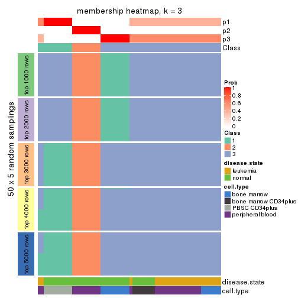
membership_heatmap(res, k = 4)
membership_heatmap(res, k = 5)
membership_heatmap(res, k = 6)
As soon as we have had the classes for columns, we can look for signatures which are significantly different between classes which can be candidate marks for certain classes. Following are the heatmaps for signatures.
Signature heatmaps where rows are scaled:
get_signatures(res, k = 2)
get_signatures(res, k = 3)
get_signatures(res, k = 4)

get_signatures(res, k = 5)
get_signatures(res, k = 6)
Signature heatmaps where rows are not scaled:
get_signatures(res, k = 2, scale_rows = FALSE)
get_signatures(res, k = 3, scale_rows = FALSE)
get_signatures(res, k = 4, scale_rows = FALSE)
get_signatures(res, k = 5, scale_rows = FALSE)
get_signatures(res, k = 6, scale_rows = FALSE)
Compare the overlap of signatures from different k:
compare_signatures(res)
get_signature() returns a data frame invisibly. TO get the list of signatures, the function
call should be assigned to a variable explicitly. In following code, if plot argument is set
to FALSE, no heatmap is plotted while only the differential analysis is performed.
# code only for demonstration
tb = get_signature(res, k = ..., plot = FALSE)
An example of the output of tb is:
#> which_row fdr mean_1 mean_2 scaled_mean_1 scaled_mean_2 km
#> 1 38 0.042760348 8.373488 9.131774 -0.5533452 0.5164555 1
#> 2 40 0.018707592 7.106213 8.469186 -0.6173731 0.5762149 1
#> 3 55 0.019134737 10.221463 11.207825 -0.6159697 0.5749050 1
#> 4 59 0.006059896 5.921854 7.869574 -0.6899429 0.6439467 1
#> 5 60 0.018055526 8.928898 10.211722 -0.6204761 0.5791110 1
#> 6 98 0.009384629 15.714769 14.887706 0.6635654 -0.6193277 2
...
The columns in tb are:
which_row: row indices corresponding to the input matrix.fdr: FDR for the differential test. mean_x: The mean value in group x.scaled_mean_x: The mean value in group x after rows are scaled.km: Row groups if k-means clustering is applied to rows.UMAP plot which shows how samples are separated.
dimension_reduction(res, k = 2, method = "UMAP")
dimension_reduction(res, k = 3, method = "UMAP")
dimension_reduction(res, k = 4, method = "UMAP")
dimension_reduction(res, k = 5, method = "UMAP")
dimension_reduction(res, k = 6, method = "UMAP")
Following heatmap shows how subgroups are split when increasing k:
collect_classes(res)
Test correlation between subgroups and known annotations. If the known annotation is numeric, one-way ANOVA test is applied, and if the known annotation is discrete, chi-squared contingency table test is applied.
test_to_known_factors(res)
#> n disease.state(p) cell.type(p) k
#> MAD:mclust 64 1.25e-02 2.52e-03 2
#> MAD:mclust 52 8.93e-07 2.78e-11 3
#> MAD:mclust 64 6.53e-08 9.38e-17 4
#> MAD:mclust 64 4.18e-13 2.66e-28 5
#> MAD:mclust 60 1.22e-11 3.65e-25 6
If matrix rows can be associated to genes, consider to use GO_Enrichment(res,
...) to perform function enrichment for the signature genes.
The object with results only for a single top-value method and a single partition method can be extracted as:
res = res_list["MAD", "NMF"]
# you can also extract it by
# res = res_list["MAD:NMF"]
A summary of res and all the functions that can be applied to it:
res
#> A 'ConsensusPartition' object with k = 2, 3, 4, 5, 6.
#> On a matrix with 21168 rows and 64 columns.
#> Top rows (1000, 2000, 3000, 4000, 5000) are extracted by 'MAD' method.
#> Subgroups are detected by 'NMF' method.
#> Performed in total 1250 partitions by row resampling.
#> Best k for subgroups seems to be 2.
#>
#> Following methods can be applied to this 'ConsensusPartition' object:
#> [1] "cola_report" "collect_classes" "collect_plots"
#> [4] "collect_stats" "colnames" "compare_signatures"
#> [7] "consensus_heatmap" "dimension_reduction" "functional_enrichment"
#> [10] "get_anno_col" "get_anno" "get_classes"
#> [13] "get_consensus" "get_matrix" "get_membership"
#> [16] "get_param" "get_signatures" "get_stats"
#> [19] "is_best_k" "is_stable_k" "membership_heatmap"
#> [22] "ncol" "nrow" "plot_ecdf"
#> [25] "rownames" "select_partition_number" "show"
#> [28] "suggest_best_k" "test_to_known_factors"
collect_plots() function collects all the plots made from res for all k (number of partitions)
into one single page to provide an easy and fast comparison between different k.
collect_plots(res)
The plots are:
k and the heatmap of
predicted classes for each k.k.k.k.All the plots in panels can be made by individual functions and they are plotted later in this section.
select_partition_number() produces several plots showing different
statistics for choosing “optimized” k. There are following statistics:
k;k, the area increased is defined as \(A_k - A_{k-1}\).The detailed explanations of these statistics can be found in the cola vignette.
Generally speaking, lower PAC score, higher mean silhouette score or higher
concordance corresponds to better partition. Rand index and Jaccard index
measure how similar the current partition is compared to partition with k-1.
If they are too similar, we won't accept k is better than k-1.
select_partition_number(res)
The numeric values for all these statistics can be obtained by get_stats().
get_stats(res)
#> k 1-PAC mean_silhouette concordance area_increased Rand Jaccard
#> 2 2 0.967 0.918 0.971 0.4882 0.510 0.510
#> 3 3 0.802 0.863 0.942 0.3742 0.747 0.535
#> 4 4 0.739 0.751 0.878 0.1231 0.776 0.432
#> 5 5 0.785 0.694 0.777 0.0659 0.879 0.562
#> 6 6 0.894 0.891 0.909 0.0424 0.926 0.649
suggest_best_k() suggests the best \(k\) based on these statistics. The rules are as follows:
NA.suggest_best_k(res)
#> [1] 2
Following shows the table of the partitions (You need to click the show/hide
code output link to see it). The membership matrix (columns with name p*)
is inferred by
clue::cl_consensus()
function with the SE method. Basically the value in the membership matrix
represents the probability to belong to a certain group. The finall class
label for an item is determined with the group with highest probability it
belongs to.
In get_classes() function, the entropy is calculated from the membership
matrix and the silhouette score is calculated from the consensus matrix.
cbind(get_classes(res, k = 2), get_membership(res, k = 2))
#> class entropy silhouette p1 p2
#> GSM239371 1 0.0000 0.97363 1.000 0.000
#> GSM239487 1 0.8016 0.66657 0.756 0.244
#> GSM239489 1 0.1633 0.95148 0.976 0.024
#> GSM239492 1 0.0000 0.97363 1.000 0.000
#> GSM239497 1 0.7453 0.71907 0.788 0.212
#> GSM239520 2 0.9963 0.10858 0.464 0.536
#> GSM240427 1 0.0000 0.97363 1.000 0.000
#> GSM239345 1 0.0000 0.97363 1.000 0.000
#> GSM239346 2 0.0000 0.95915 0.000 1.000
#> GSM239348 1 0.0000 0.97363 1.000 0.000
#> GSM239363 2 0.0000 0.95915 0.000 1.000
#> GSM239460 2 0.9998 0.00394 0.492 0.508
#> GSM239485 1 0.0000 0.97363 1.000 0.000
#> GSM239488 2 0.0000 0.95915 0.000 1.000
#> GSM239490 1 0.0000 0.97363 1.000 0.000
#> GSM239491 1 0.0000 0.97363 1.000 0.000
#> GSM239493 1 0.0000 0.97363 1.000 0.000
#> GSM239494 1 0.0000 0.97363 1.000 0.000
#> GSM239495 1 0.0000 0.97363 1.000 0.000
#> GSM239496 1 0.0000 0.97363 1.000 0.000
#> GSM239498 2 0.0000 0.95915 0.000 1.000
#> GSM239516 2 0.0000 0.95915 0.000 1.000
#> GSM239580 1 0.0000 0.97363 1.000 0.000
#> GSM240405 1 0.0000 0.97363 1.000 0.000
#> GSM240406 1 0.0000 0.97363 1.000 0.000
#> GSM240429 1 0.0000 0.97363 1.000 0.000
#> GSM239323 2 0.0000 0.95915 0.000 1.000
#> GSM239324 2 0.0000 0.95915 0.000 1.000
#> GSM239326 2 0.0000 0.95915 0.000 1.000
#> GSM239328 2 0.0000 0.95915 0.000 1.000
#> GSM239329 1 0.9881 0.20395 0.564 0.436
#> GSM239331 2 0.0000 0.95915 0.000 1.000
#> GSM239332 2 0.0672 0.95195 0.008 0.992
#> GSM239333 2 0.0000 0.95915 0.000 1.000
#> GSM239334 2 0.0000 0.95915 0.000 1.000
#> GSM239335 2 0.0000 0.95915 0.000 1.000
#> GSM240430 2 0.0000 0.95915 0.000 1.000
#> GSM240431 2 0.0000 0.95915 0.000 1.000
#> GSM240432 2 0.0000 0.95915 0.000 1.000
#> GSM240433 2 0.0000 0.95915 0.000 1.000
#> GSM240494 2 0.0000 0.95915 0.000 1.000
#> GSM240495 2 0.0000 0.95915 0.000 1.000
#> GSM240496 2 0.0000 0.95915 0.000 1.000
#> GSM240497 2 0.0000 0.95915 0.000 1.000
#> GSM240498 2 0.0000 0.95915 0.000 1.000
#> GSM240499 2 0.0000 0.95915 0.000 1.000
#> GSM239170 1 0.0000 0.97363 1.000 0.000
#> GSM239338 1 0.0000 0.97363 1.000 0.000
#> GSM239339 1 0.0000 0.97363 1.000 0.000
#> GSM239340 1 0.0000 0.97363 1.000 0.000
#> GSM239341 1 0.0000 0.97363 1.000 0.000
#> GSM239342 1 0.0000 0.97363 1.000 0.000
#> GSM239343 1 0.0000 0.97363 1.000 0.000
#> GSM239344 1 0.0000 0.97363 1.000 0.000
#> GSM240500 1 0.0000 0.97363 1.000 0.000
#> GSM240501 1 0.0000 0.97363 1.000 0.000
#> GSM240502 1 0.0000 0.97363 1.000 0.000
#> GSM240503 1 0.0000 0.97363 1.000 0.000
#> GSM240504 1 0.0000 0.97363 1.000 0.000
#> GSM240505 1 0.0000 0.97363 1.000 0.000
#> GSM240506 1 0.0000 0.97363 1.000 0.000
#> GSM240507 1 0.0000 0.97363 1.000 0.000
#> GSM240508 1 0.0000 0.97363 1.000 0.000
#> GSM240509 1 0.0000 0.97363 1.000 0.000
cbind(get_classes(res, k = 3), get_membership(res, k = 3))
#> class entropy silhouette p1 p2 p3
#> GSM239371 1 0.5216 0.659 0.740 0.000 0.260
#> GSM239487 3 0.0000 0.899 0.000 0.000 1.000
#> GSM239489 3 0.0000 0.899 0.000 0.000 1.000
#> GSM239492 1 0.6252 0.232 0.556 0.000 0.444
#> GSM239497 3 0.0000 0.899 0.000 0.000 1.000
#> GSM239520 3 0.0000 0.899 0.000 0.000 1.000
#> GSM240427 3 0.0000 0.899 0.000 0.000 1.000
#> GSM239345 1 0.0000 0.947 1.000 0.000 0.000
#> GSM239346 2 0.0000 0.948 0.000 1.000 0.000
#> GSM239348 3 0.3551 0.793 0.132 0.000 0.868
#> GSM239363 2 0.0000 0.948 0.000 1.000 0.000
#> GSM239460 3 0.4235 0.752 0.000 0.176 0.824
#> GSM239485 1 0.3551 0.827 0.868 0.000 0.132
#> GSM239488 2 0.0000 0.948 0.000 1.000 0.000
#> GSM239490 1 0.0000 0.947 1.000 0.000 0.000
#> GSM239491 1 0.5216 0.653 0.740 0.000 0.260
#> GSM239493 1 0.0000 0.947 1.000 0.000 0.000
#> GSM239494 1 0.0000 0.947 1.000 0.000 0.000
#> GSM239495 1 0.0000 0.947 1.000 0.000 0.000
#> GSM239496 1 0.1964 0.903 0.944 0.000 0.056
#> GSM239498 2 0.0000 0.948 0.000 1.000 0.000
#> GSM239516 2 0.0000 0.948 0.000 1.000 0.000
#> GSM239580 1 0.0000 0.947 1.000 0.000 0.000
#> GSM240405 1 0.0000 0.947 1.000 0.000 0.000
#> GSM240406 1 0.0000 0.947 1.000 0.000 0.000
#> GSM240429 1 0.0000 0.947 1.000 0.000 0.000
#> GSM239323 3 0.6244 0.239 0.000 0.440 0.560
#> GSM239324 3 0.5835 0.502 0.000 0.340 0.660
#> GSM239326 2 0.0000 0.948 0.000 1.000 0.000
#> GSM239328 2 0.3482 0.827 0.000 0.872 0.128
#> GSM239329 3 0.0000 0.899 0.000 0.000 1.000
#> GSM239331 3 0.5882 0.485 0.000 0.348 0.652
#> GSM239332 2 0.6045 0.344 0.000 0.620 0.380
#> GSM239333 2 0.0000 0.948 0.000 1.000 0.000
#> GSM239334 2 0.4702 0.715 0.000 0.788 0.212
#> GSM239335 2 0.4346 0.758 0.000 0.816 0.184
#> GSM240430 2 0.0000 0.948 0.000 1.000 0.000
#> GSM240431 2 0.0000 0.948 0.000 1.000 0.000
#> GSM240432 2 0.0000 0.948 0.000 1.000 0.000
#> GSM240433 2 0.0000 0.948 0.000 1.000 0.000
#> GSM240494 2 0.0000 0.948 0.000 1.000 0.000
#> GSM240495 2 0.0000 0.948 0.000 1.000 0.000
#> GSM240496 2 0.0000 0.948 0.000 1.000 0.000
#> GSM240497 2 0.0000 0.948 0.000 1.000 0.000
#> GSM240498 2 0.0000 0.948 0.000 1.000 0.000
#> GSM240499 2 0.0000 0.948 0.000 1.000 0.000
#> GSM239170 3 0.0000 0.899 0.000 0.000 1.000
#> GSM239338 3 0.0592 0.894 0.012 0.000 0.988
#> GSM239339 3 0.4235 0.729 0.176 0.000 0.824
#> GSM239340 3 0.0424 0.896 0.008 0.000 0.992
#> GSM239341 3 0.0237 0.898 0.004 0.000 0.996
#> GSM239342 3 0.0000 0.899 0.000 0.000 1.000
#> GSM239343 3 0.0000 0.899 0.000 0.000 1.000
#> GSM239344 3 0.0000 0.899 0.000 0.000 1.000
#> GSM240500 1 0.0000 0.947 1.000 0.000 0.000
#> GSM240501 1 0.0000 0.947 1.000 0.000 0.000
#> GSM240502 1 0.0000 0.947 1.000 0.000 0.000
#> GSM240503 1 0.0000 0.947 1.000 0.000 0.000
#> GSM240504 1 0.0000 0.947 1.000 0.000 0.000
#> GSM240505 1 0.0000 0.947 1.000 0.000 0.000
#> GSM240506 1 0.0000 0.947 1.000 0.000 0.000
#> GSM240507 1 0.0000 0.947 1.000 0.000 0.000
#> GSM240508 1 0.0000 0.947 1.000 0.000 0.000
#> GSM240509 1 0.0000 0.947 1.000 0.000 0.000
cbind(get_classes(res, k = 4), get_membership(res, k = 4))
#> class entropy silhouette p1 p2 p3 p4
#> GSM239371 4 0.3123 0.7242 0.156 0.000 0.000 0.844
#> GSM239487 4 0.1940 0.7324 0.000 0.000 0.076 0.924
#> GSM239489 4 0.0000 0.7735 0.000 0.000 0.000 1.000
#> GSM239492 1 0.4746 0.3809 0.632 0.000 0.000 0.368
#> GSM239497 4 0.4996 -0.1409 0.000 0.000 0.484 0.516
#> GSM239520 4 0.4998 -0.1529 0.000 0.000 0.488 0.512
#> GSM240427 4 0.3356 0.6246 0.000 0.000 0.176 0.824
#> GSM239345 1 0.0000 0.9265 1.000 0.000 0.000 0.000
#> GSM239346 2 0.3610 0.7088 0.000 0.800 0.000 0.200
#> GSM239348 4 0.0000 0.7735 0.000 0.000 0.000 1.000
#> GSM239363 4 0.1867 0.7541 0.000 0.072 0.000 0.928
#> GSM239460 4 0.0336 0.7739 0.000 0.008 0.000 0.992
#> GSM239485 1 0.4989 -0.0386 0.528 0.000 0.000 0.472
#> GSM239488 4 0.1940 0.7518 0.000 0.076 0.000 0.924
#> GSM239490 1 0.3024 0.7601 0.852 0.000 0.000 0.148
#> GSM239491 4 0.4500 0.5346 0.316 0.000 0.000 0.684
#> GSM239493 4 0.2760 0.7477 0.128 0.000 0.000 0.872
#> GSM239494 4 0.3172 0.7298 0.160 0.000 0.000 0.840
#> GSM239495 4 0.4250 0.5987 0.276 0.000 0.000 0.724
#> GSM239496 4 0.2973 0.7406 0.144 0.000 0.000 0.856
#> GSM239498 4 0.1940 0.7518 0.000 0.076 0.000 0.924
#> GSM239516 2 0.4164 0.6142 0.000 0.736 0.000 0.264
#> GSM239580 1 0.0000 0.9265 1.000 0.000 0.000 0.000
#> GSM240405 1 0.0000 0.9265 1.000 0.000 0.000 0.000
#> GSM240406 4 0.4948 0.2578 0.440 0.000 0.000 0.560
#> GSM240429 1 0.0336 0.9193 0.992 0.000 0.008 0.000
#> GSM239323 3 0.3801 0.7552 0.000 0.220 0.780 0.000
#> GSM239324 3 0.3024 0.8072 0.000 0.148 0.852 0.000
#> GSM239326 2 0.4948 0.0195 0.000 0.560 0.440 0.000
#> GSM239328 3 0.4356 0.6691 0.000 0.292 0.708 0.000
#> GSM239329 3 0.0000 0.8357 0.000 0.000 1.000 0.000
#> GSM239331 3 0.3024 0.8072 0.000 0.148 0.852 0.000
#> GSM239332 3 0.3266 0.7958 0.000 0.168 0.832 0.000
#> GSM239333 2 0.2281 0.8251 0.000 0.904 0.096 0.000
#> GSM239334 3 0.4522 0.6236 0.000 0.320 0.680 0.000
#> GSM239335 3 0.4134 0.7118 0.000 0.260 0.740 0.000
#> GSM240430 2 0.0000 0.9085 0.000 1.000 0.000 0.000
#> GSM240431 2 0.0000 0.9085 0.000 1.000 0.000 0.000
#> GSM240432 2 0.0000 0.9085 0.000 1.000 0.000 0.000
#> GSM240433 2 0.0000 0.9085 0.000 1.000 0.000 0.000
#> GSM240494 2 0.0000 0.9085 0.000 1.000 0.000 0.000
#> GSM240495 2 0.0000 0.9085 0.000 1.000 0.000 0.000
#> GSM240496 2 0.0000 0.9085 0.000 1.000 0.000 0.000
#> GSM240497 2 0.0000 0.9085 0.000 1.000 0.000 0.000
#> GSM240498 2 0.0000 0.9085 0.000 1.000 0.000 0.000
#> GSM240499 2 0.0000 0.9085 0.000 1.000 0.000 0.000
#> GSM239170 3 0.1940 0.8445 0.000 0.000 0.924 0.076
#> GSM239338 3 0.1940 0.8445 0.000 0.000 0.924 0.076
#> GSM239339 3 0.2300 0.8335 0.028 0.000 0.924 0.048
#> GSM239340 3 0.1940 0.8445 0.000 0.000 0.924 0.076
#> GSM239341 3 0.1940 0.8445 0.000 0.000 0.924 0.076
#> GSM239342 3 0.1940 0.8445 0.000 0.000 0.924 0.076
#> GSM239343 3 0.1940 0.8445 0.000 0.000 0.924 0.076
#> GSM239344 3 0.1940 0.8445 0.000 0.000 0.924 0.076
#> GSM240500 1 0.0000 0.9265 1.000 0.000 0.000 0.000
#> GSM240501 1 0.0000 0.9265 1.000 0.000 0.000 0.000
#> GSM240502 1 0.0000 0.9265 1.000 0.000 0.000 0.000
#> GSM240503 1 0.0000 0.9265 1.000 0.000 0.000 0.000
#> GSM240504 1 0.0000 0.9265 1.000 0.000 0.000 0.000
#> GSM240505 1 0.0000 0.9265 1.000 0.000 0.000 0.000
#> GSM240506 1 0.0000 0.9265 1.000 0.000 0.000 0.000
#> GSM240507 1 0.0000 0.9265 1.000 0.000 0.000 0.000
#> GSM240508 1 0.0000 0.9265 1.000 0.000 0.000 0.000
#> GSM240509 1 0.0000 0.9265 1.000 0.000 0.000 0.000
cbind(get_classes(res, k = 5), get_membership(res, k = 5))
#> class entropy silhouette p1 p2 p3 p4 p5
#> GSM239371 4 0.1469 0.7202 0.016 0.000 0.000 0.948 0.036
#> GSM239487 5 0.4317 -0.0929 0.000 0.008 0.004 0.320 0.668
#> GSM239489 4 0.4242 0.4693 0.000 0.000 0.000 0.572 0.428
#> GSM239492 1 0.6491 0.1132 0.464 0.000 0.000 0.336 0.200
#> GSM239497 5 0.3902 0.2357 0.000 0.016 0.028 0.152 0.804
#> GSM239520 5 0.4943 0.2137 0.000 0.032 0.076 0.140 0.752
#> GSM240427 5 0.4533 -0.2757 0.000 0.000 0.008 0.448 0.544
#> GSM239345 1 0.0162 0.9464 0.996 0.000 0.000 0.000 0.004
#> GSM239346 2 0.5940 0.3117 0.000 0.480 0.024 0.052 0.444
#> GSM239348 4 0.0290 0.7132 0.000 0.000 0.000 0.992 0.008
#> GSM239363 4 0.5103 0.4350 0.000 0.028 0.004 0.524 0.444
#> GSM239460 4 0.1792 0.7040 0.000 0.000 0.000 0.916 0.084
#> GSM239485 4 0.3940 0.5987 0.220 0.000 0.000 0.756 0.024
#> GSM239488 4 0.5361 0.4293 0.000 0.044 0.004 0.516 0.436
#> GSM239490 4 0.4878 0.0901 0.440 0.000 0.000 0.536 0.024
#> GSM239491 4 0.2905 0.6823 0.096 0.000 0.000 0.868 0.036
#> GSM239493 4 0.3085 0.7019 0.032 0.000 0.000 0.852 0.116
#> GSM239494 4 0.2139 0.7230 0.032 0.000 0.000 0.916 0.052
#> GSM239495 4 0.1952 0.7066 0.084 0.000 0.000 0.912 0.004
#> GSM239496 4 0.1082 0.7155 0.028 0.000 0.000 0.964 0.008
#> GSM239498 4 0.5242 0.4278 0.000 0.036 0.004 0.516 0.444
#> GSM239516 2 0.5864 0.3163 0.000 0.484 0.020 0.052 0.444
#> GSM239580 1 0.2439 0.8276 0.876 0.000 0.000 0.120 0.004
#> GSM240405 1 0.0000 0.9474 1.000 0.000 0.000 0.000 0.000
#> GSM240406 4 0.2929 0.6691 0.152 0.000 0.000 0.840 0.008
#> GSM240429 1 0.1822 0.9038 0.936 0.000 0.036 0.024 0.004
#> GSM239323 3 0.2719 0.8674 0.000 0.144 0.852 0.000 0.004
#> GSM239324 3 0.2648 0.8767 0.000 0.152 0.848 0.000 0.000
#> GSM239326 3 0.3857 0.7626 0.000 0.312 0.688 0.000 0.000
#> GSM239328 3 0.3074 0.8784 0.000 0.196 0.804 0.000 0.000
#> GSM239329 3 0.0671 0.6579 0.000 0.016 0.980 0.000 0.004
#> GSM239331 3 0.2648 0.8767 0.000 0.152 0.848 0.000 0.000
#> GSM239332 3 0.2763 0.8720 0.000 0.148 0.848 0.000 0.004
#> GSM239333 3 0.4161 0.6182 0.000 0.392 0.608 0.000 0.000
#> GSM239334 3 0.3336 0.8606 0.000 0.228 0.772 0.000 0.000
#> GSM239335 3 0.3039 0.8794 0.000 0.192 0.808 0.000 0.000
#> GSM240430 2 0.0290 0.8701 0.000 0.992 0.008 0.000 0.000
#> GSM240431 2 0.0290 0.8702 0.000 0.992 0.008 0.000 0.000
#> GSM240432 2 0.0404 0.8687 0.000 0.988 0.012 0.000 0.000
#> GSM240433 2 0.0000 0.8701 0.000 1.000 0.000 0.000 0.000
#> GSM240494 2 0.0000 0.8701 0.000 1.000 0.000 0.000 0.000
#> GSM240495 2 0.0404 0.8687 0.000 0.988 0.012 0.000 0.000
#> GSM240496 2 0.0404 0.8687 0.000 0.988 0.012 0.000 0.000
#> GSM240497 2 0.0000 0.8701 0.000 1.000 0.000 0.000 0.000
#> GSM240498 2 0.0404 0.8687 0.000 0.988 0.012 0.000 0.000
#> GSM240499 2 0.0000 0.8701 0.000 1.000 0.000 0.000 0.000
#> GSM239170 5 0.5838 0.5937 0.000 0.000 0.336 0.112 0.552
#> GSM239338 5 0.5611 0.6133 0.008 0.000 0.380 0.060 0.552
#> GSM239339 5 0.5670 0.6123 0.020 0.000 0.388 0.044 0.548
#> GSM239340 5 0.4278 0.6100 0.000 0.000 0.452 0.000 0.548
#> GSM239341 5 0.4278 0.6100 0.000 0.000 0.452 0.000 0.548
#> GSM239342 5 0.4420 0.6125 0.000 0.000 0.448 0.004 0.548
#> GSM239343 5 0.4420 0.6125 0.000 0.000 0.448 0.004 0.548
#> GSM239344 5 0.4283 0.6057 0.000 0.000 0.456 0.000 0.544
#> GSM240500 1 0.0000 0.9474 1.000 0.000 0.000 0.000 0.000
#> GSM240501 1 0.0000 0.9474 1.000 0.000 0.000 0.000 0.000
#> GSM240502 1 0.0000 0.9474 1.000 0.000 0.000 0.000 0.000
#> GSM240503 1 0.0162 0.9464 0.996 0.000 0.000 0.000 0.004
#> GSM240504 1 0.0000 0.9474 1.000 0.000 0.000 0.000 0.000
#> GSM240505 1 0.0000 0.9474 1.000 0.000 0.000 0.000 0.000
#> GSM240506 1 0.0162 0.9464 0.996 0.000 0.000 0.000 0.004
#> GSM240507 1 0.0000 0.9474 1.000 0.000 0.000 0.000 0.000
#> GSM240508 1 0.0000 0.9474 1.000 0.000 0.000 0.000 0.000
#> GSM240509 1 0.0162 0.9464 0.996 0.000 0.000 0.000 0.004
cbind(get_classes(res, k = 6), get_membership(res, k = 6))
#> class entropy silhouette p1 p2 p3 p4 p5 p6
#> GSM239371 4 0.1484 0.873 0.004 0.000 0.004 0.944 0.008 0.040
#> GSM239487 6 0.1890 0.863 0.000 0.000 0.024 0.008 0.044 0.924
#> GSM239489 6 0.2531 0.826 0.000 0.000 0.008 0.128 0.004 0.860
#> GSM239492 5 0.7042 0.214 0.256 0.000 0.016 0.296 0.396 0.036
#> GSM239497 6 0.2173 0.854 0.000 0.000 0.028 0.004 0.064 0.904
#> GSM239520 6 0.2052 0.857 0.000 0.000 0.028 0.004 0.056 0.912
#> GSM240427 6 0.6062 0.497 0.000 0.000 0.044 0.188 0.192 0.576
#> GSM239345 1 0.1533 0.927 0.948 0.000 0.012 0.016 0.016 0.008
#> GSM239346 6 0.2219 0.839 0.000 0.136 0.000 0.000 0.000 0.864
#> GSM239348 4 0.2937 0.876 0.000 0.000 0.036 0.864 0.080 0.020
#> GSM239363 6 0.1950 0.867 0.000 0.024 0.000 0.064 0.000 0.912
#> GSM239460 4 0.4614 0.818 0.000 0.008 0.036 0.752 0.068 0.136
#> GSM239485 4 0.4055 0.840 0.076 0.000 0.028 0.804 0.080 0.012
#> GSM239488 6 0.2680 0.855 0.000 0.056 0.000 0.076 0.000 0.868
#> GSM239490 4 0.3953 0.848 0.044 0.000 0.032 0.808 0.104 0.012
#> GSM239491 4 0.3456 0.859 0.012 0.000 0.036 0.832 0.108 0.012
#> GSM239493 4 0.2808 0.809 0.012 0.000 0.004 0.860 0.012 0.112
#> GSM239494 4 0.1484 0.873 0.004 0.000 0.004 0.944 0.008 0.040
#> GSM239495 4 0.1003 0.880 0.004 0.000 0.000 0.964 0.004 0.028
#> GSM239496 4 0.2954 0.873 0.004 0.000 0.036 0.864 0.084 0.012
#> GSM239498 6 0.2201 0.871 0.000 0.052 0.000 0.048 0.000 0.900
#> GSM239516 6 0.2260 0.837 0.000 0.140 0.000 0.000 0.000 0.860
#> GSM239580 1 0.4544 0.641 0.692 0.000 0.020 0.256 0.016 0.016
#> GSM240405 1 0.0436 0.950 0.988 0.000 0.004 0.004 0.004 0.000
#> GSM240406 4 0.1381 0.875 0.020 0.000 0.004 0.952 0.004 0.020
#> GSM240429 1 0.3771 0.813 0.812 0.000 0.056 0.108 0.016 0.008
#> GSM239323 3 0.2380 0.951 0.000 0.068 0.892 0.000 0.036 0.004
#> GSM239324 3 0.2201 0.956 0.000 0.076 0.896 0.000 0.028 0.000
#> GSM239326 3 0.2257 0.951 0.000 0.116 0.876 0.000 0.000 0.008
#> GSM239328 3 0.1910 0.958 0.000 0.108 0.892 0.000 0.000 0.000
#> GSM239329 3 0.1668 0.888 0.000 0.008 0.928 0.000 0.060 0.004
#> GSM239331 3 0.1950 0.952 0.000 0.064 0.912 0.000 0.024 0.000
#> GSM239332 3 0.2066 0.956 0.000 0.072 0.904 0.000 0.024 0.000
#> GSM239333 3 0.2513 0.924 0.000 0.140 0.852 0.000 0.000 0.008
#> GSM239334 3 0.2100 0.957 0.000 0.112 0.884 0.000 0.004 0.000
#> GSM239335 3 0.1910 0.958 0.000 0.108 0.892 0.000 0.000 0.000
#> GSM240430 2 0.0000 0.993 0.000 1.000 0.000 0.000 0.000 0.000
#> GSM240431 2 0.0000 0.993 0.000 1.000 0.000 0.000 0.000 0.000
#> GSM240432 2 0.0508 0.989 0.000 0.984 0.012 0.000 0.000 0.004
#> GSM240433 2 0.0146 0.994 0.000 0.996 0.000 0.000 0.000 0.004
#> GSM240494 2 0.0146 0.994 0.000 0.996 0.000 0.000 0.000 0.004
#> GSM240495 2 0.0458 0.984 0.000 0.984 0.016 0.000 0.000 0.000
#> GSM240496 2 0.0146 0.993 0.000 0.996 0.004 0.000 0.000 0.000
#> GSM240497 2 0.0405 0.992 0.000 0.988 0.004 0.000 0.000 0.008
#> GSM240498 2 0.0291 0.993 0.000 0.992 0.004 0.000 0.000 0.004
#> GSM240499 2 0.0146 0.994 0.000 0.996 0.000 0.000 0.000 0.004
#> GSM239170 5 0.2365 0.844 0.012 0.000 0.024 0.068 0.896 0.000
#> GSM239338 5 0.2016 0.871 0.040 0.000 0.016 0.024 0.920 0.000
#> GSM239339 5 0.1950 0.876 0.044 0.000 0.020 0.008 0.924 0.004
#> GSM239340 5 0.1780 0.883 0.028 0.000 0.028 0.000 0.932 0.012
#> GSM239341 5 0.2076 0.881 0.012 0.000 0.060 0.016 0.912 0.000
#> GSM239342 5 0.2026 0.880 0.012 0.000 0.060 0.004 0.916 0.008
#> GSM239343 5 0.2114 0.869 0.000 0.000 0.076 0.008 0.904 0.012
#> GSM239344 5 0.1605 0.884 0.016 0.000 0.032 0.000 0.940 0.012
#> GSM240500 1 0.0146 0.954 0.996 0.000 0.000 0.000 0.004 0.000
#> GSM240501 1 0.0146 0.954 0.996 0.000 0.000 0.000 0.004 0.000
#> GSM240502 1 0.0260 0.953 0.992 0.000 0.000 0.000 0.008 0.000
#> GSM240503 1 0.0000 0.955 1.000 0.000 0.000 0.000 0.000 0.000
#> GSM240504 1 0.0000 0.955 1.000 0.000 0.000 0.000 0.000 0.000
#> GSM240505 1 0.0260 0.953 0.992 0.000 0.000 0.000 0.008 0.000
#> GSM240506 1 0.0291 0.952 0.992 0.000 0.000 0.004 0.000 0.004
#> GSM240507 1 0.0146 0.954 0.996 0.000 0.000 0.000 0.004 0.000
#> GSM240508 1 0.0000 0.955 1.000 0.000 0.000 0.000 0.000 0.000
#> GSM240509 1 0.0146 0.954 0.996 0.000 0.000 0.000 0.000 0.004
Heatmaps for the consensus matrix. It visualizes the probability of two samples to be in a same group.
consensus_heatmap(res, k = 2)
consensus_heatmap(res, k = 3)
consensus_heatmap(res, k = 4)
consensus_heatmap(res, k = 5)
consensus_heatmap(res, k = 6)
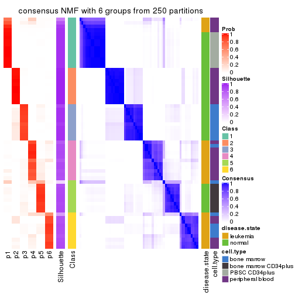
Heatmaps for the membership of samples in all partitions to see how consistent they are:
membership_heatmap(res, k = 2)
membership_heatmap(res, k = 3)
membership_heatmap(res, k = 4)
membership_heatmap(res, k = 5)
membership_heatmap(res, k = 6)
As soon as we have had the classes for columns, we can look for signatures which are significantly different between classes which can be candidate marks for certain classes. Following are the heatmaps for signatures.
Signature heatmaps where rows are scaled:
get_signatures(res, k = 2)
get_signatures(res, k = 3)
get_signatures(res, k = 4)
get_signatures(res, k = 5)
get_signatures(res, k = 6)
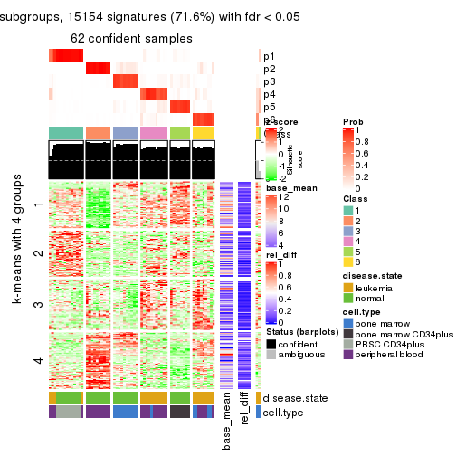
Signature heatmaps where rows are not scaled:
get_signatures(res, k = 2, scale_rows = FALSE)
get_signatures(res, k = 3, scale_rows = FALSE)

get_signatures(res, k = 4, scale_rows = FALSE)
get_signatures(res, k = 5, scale_rows = FALSE)
get_signatures(res, k = 6, scale_rows = FALSE)
Compare the overlap of signatures from different k:
compare_signatures(res)
get_signature() returns a data frame invisibly. TO get the list of signatures, the function
call should be assigned to a variable explicitly. In following code, if plot argument is set
to FALSE, no heatmap is plotted while only the differential analysis is performed.
# code only for demonstration
tb = get_signature(res, k = ..., plot = FALSE)
An example of the output of tb is:
#> which_row fdr mean_1 mean_2 scaled_mean_1 scaled_mean_2 km
#> 1 38 0.042760348 8.373488 9.131774 -0.5533452 0.5164555 1
#> 2 40 0.018707592 7.106213 8.469186 -0.6173731 0.5762149 1
#> 3 55 0.019134737 10.221463 11.207825 -0.6159697 0.5749050 1
#> 4 59 0.006059896 5.921854 7.869574 -0.6899429 0.6439467 1
#> 5 60 0.018055526 8.928898 10.211722 -0.6204761 0.5791110 1
#> 6 98 0.009384629 15.714769 14.887706 0.6635654 -0.6193277 2
...
The columns in tb are:
which_row: row indices corresponding to the input matrix.fdr: FDR for the differential test. mean_x: The mean value in group x.scaled_mean_x: The mean value in group x after rows are scaled.km: Row groups if k-means clustering is applied to rows.UMAP plot which shows how samples are separated.
dimension_reduction(res, k = 2, method = "UMAP")
dimension_reduction(res, k = 3, method = "UMAP")
dimension_reduction(res, k = 4, method = "UMAP")
dimension_reduction(res, k = 5, method = "UMAP")
dimension_reduction(res, k = 6, method = "UMAP")
Following heatmap shows how subgroups are split when increasing k:
collect_classes(res)
Test correlation between subgroups and known annotations. If the known annotation is numeric, one-way ANOVA test is applied, and if the known annotation is discrete, chi-squared contingency table test is applied.
test_to_known_factors(res)
#> n disease.state(p) cell.type(p) k
#> MAD:NMF 61 3.44e-02 8.02e-04 2
#> MAD:NMF 60 1.12e-01 4.07e-09 3
#> MAD:NMF 58 6.66e-08 1.16e-12 4
#> MAD:NMF 52 1.44e-07 1.30e-21 5
#> MAD:NMF 62 1.41e-09 7.25e-23 6
If matrix rows can be associated to genes, consider to use GO_Enrichment(res,
...) to perform function enrichment for the signature genes.
The object with results only for a single top-value method and a single partition method can be extracted as:
res = res_list["ATC", "hclust"]
# you can also extract it by
# res = res_list["ATC:hclust"]
A summary of res and all the functions that can be applied to it:
res
#> A 'ConsensusPartition' object with k = 2, 3, 4, 5, 6.
#> On a matrix with 21168 rows and 64 columns.
#> Top rows (1000, 2000, 3000, 4000, 5000) are extracted by 'ATC' method.
#> Subgroups are detected by 'hclust' method.
#> Performed in total 1250 partitions by row resampling.
#> Best k for subgroups seems to be 4.
#>
#> Following methods can be applied to this 'ConsensusPartition' object:
#> [1] "cola_report" "collect_classes" "collect_plots"
#> [4] "collect_stats" "colnames" "compare_signatures"
#> [7] "consensus_heatmap" "dimension_reduction" "functional_enrichment"
#> [10] "get_anno_col" "get_anno" "get_classes"
#> [13] "get_consensus" "get_matrix" "get_membership"
#> [16] "get_param" "get_signatures" "get_stats"
#> [19] "is_best_k" "is_stable_k" "membership_heatmap"
#> [22] "ncol" "nrow" "plot_ecdf"
#> [25] "rownames" "select_partition_number" "show"
#> [28] "suggest_best_k" "test_to_known_factors"
collect_plots() function collects all the plots made from res for all k (number of partitions)
into one single page to provide an easy and fast comparison between different k.
collect_plots(res)
The plots are:
k and the heatmap of
predicted classes for each k.k.k.k.All the plots in panels can be made by individual functions and they are plotted later in this section.
select_partition_number() produces several plots showing different
statistics for choosing “optimized” k. There are following statistics:
k;k, the area increased is defined as \(A_k - A_{k-1}\).The detailed explanations of these statistics can be found in the cola vignette.
Generally speaking, lower PAC score, higher mean silhouette score or higher
concordance corresponds to better partition. Rand index and Jaccard index
measure how similar the current partition is compared to partition with k-1.
If they are too similar, we won't accept k is better than k-1.
select_partition_number(res)
The numeric values for all these statistics can be obtained by get_stats().
get_stats(res)
#> k 1-PAC mean_silhouette concordance area_increased Rand Jaccard
#> 2 2 0.879 0.972 0.985 0.3385 0.653 0.653
#> 3 3 0.489 0.703 0.791 0.6945 0.730 0.587
#> 4 4 0.610 0.677 0.859 0.1586 0.869 0.689
#> 5 5 0.756 0.646 0.870 0.0848 0.883 0.678
#> 6 6 0.723 0.650 0.806 0.0904 0.902 0.665
suggest_best_k() suggests the best \(k\) based on these statistics. The rules are as follows:
NA.suggest_best_k(res)
#> [1] 4
Following shows the table of the partitions (You need to click the show/hide
code output link to see it). The membership matrix (columns with name p*)
is inferred by
clue::cl_consensus()
function with the SE method. Basically the value in the membership matrix
represents the probability to belong to a certain group. The finall class
label for an item is determined with the group with highest probability it
belongs to.
In get_classes() function, the entropy is calculated from the membership
matrix and the silhouette score is calculated from the consensus matrix.
cbind(get_classes(res, k = 2), get_membership(res, k = 2))
#> class entropy silhouette p1 p2
#> GSM239371 1 0.000 0.995 1.000 0.000
#> GSM239487 1 0.000 0.995 1.000 0.000
#> GSM239489 1 0.000 0.995 1.000 0.000
#> GSM239492 1 0.000 0.995 1.000 0.000
#> GSM239497 1 0.000 0.995 1.000 0.000
#> GSM239520 1 0.000 0.995 1.000 0.000
#> GSM240427 1 0.000 0.995 1.000 0.000
#> GSM239345 1 0.000 0.995 1.000 0.000
#> GSM239346 1 0.802 0.649 0.756 0.244
#> GSM239348 1 0.000 0.995 1.000 0.000
#> GSM239363 2 0.662 0.838 0.172 0.828
#> GSM239460 1 0.000 0.995 1.000 0.000
#> GSM239485 1 0.000 0.995 1.000 0.000
#> GSM239488 2 0.662 0.838 0.172 0.828
#> GSM239490 1 0.000 0.995 1.000 0.000
#> GSM239491 1 0.000 0.995 1.000 0.000
#> GSM239493 1 0.000 0.995 1.000 0.000
#> GSM239494 1 0.000 0.995 1.000 0.000
#> GSM239495 1 0.000 0.995 1.000 0.000
#> GSM239496 1 0.000 0.995 1.000 0.000
#> GSM239498 2 0.662 0.838 0.172 0.828
#> GSM239516 2 0.662 0.838 0.172 0.828
#> GSM239580 1 0.000 0.995 1.000 0.000
#> GSM240405 1 0.000 0.995 1.000 0.000
#> GSM240406 1 0.000 0.995 1.000 0.000
#> GSM240429 1 0.000 0.995 1.000 0.000
#> GSM239323 1 0.000 0.995 1.000 0.000
#> GSM239324 1 0.000 0.995 1.000 0.000
#> GSM239326 1 0.000 0.995 1.000 0.000
#> GSM239328 1 0.000 0.995 1.000 0.000
#> GSM239329 1 0.000 0.995 1.000 0.000
#> GSM239331 1 0.000 0.995 1.000 0.000
#> GSM239332 1 0.000 0.995 1.000 0.000
#> GSM239333 1 0.000 0.995 1.000 0.000
#> GSM239334 1 0.000 0.995 1.000 0.000
#> GSM239335 1 0.000 0.995 1.000 0.000
#> GSM240430 2 0.000 0.946 0.000 1.000
#> GSM240431 2 0.000 0.946 0.000 1.000
#> GSM240432 2 0.000 0.946 0.000 1.000
#> GSM240433 2 0.000 0.946 0.000 1.000
#> GSM240494 2 0.000 0.946 0.000 1.000
#> GSM240495 2 0.000 0.946 0.000 1.000
#> GSM240496 2 0.000 0.946 0.000 1.000
#> GSM240497 2 0.000 0.946 0.000 1.000
#> GSM240498 2 0.000 0.946 0.000 1.000
#> GSM240499 2 0.000 0.946 0.000 1.000
#> GSM239170 1 0.000 0.995 1.000 0.000
#> GSM239338 1 0.000 0.995 1.000 0.000
#> GSM239339 1 0.000 0.995 1.000 0.000
#> GSM239340 1 0.000 0.995 1.000 0.000
#> GSM239341 1 0.000 0.995 1.000 0.000
#> GSM239342 1 0.000 0.995 1.000 0.000
#> GSM239343 1 0.000 0.995 1.000 0.000
#> GSM239344 1 0.000 0.995 1.000 0.000
#> GSM240500 1 0.000 0.995 1.000 0.000
#> GSM240501 1 0.000 0.995 1.000 0.000
#> GSM240502 1 0.000 0.995 1.000 0.000
#> GSM240503 1 0.000 0.995 1.000 0.000
#> GSM240504 1 0.000 0.995 1.000 0.000
#> GSM240505 1 0.000 0.995 1.000 0.000
#> GSM240506 1 0.000 0.995 1.000 0.000
#> GSM240507 1 0.000 0.995 1.000 0.000
#> GSM240508 1 0.000 0.995 1.000 0.000
#> GSM240509 1 0.000 0.995 1.000 0.000
cbind(get_classes(res, k = 3), get_membership(res, k = 3))
#> class entropy silhouette p1 p2 p3
#> GSM239371 1 0.595 0.4682 0.640 0.000 0.360
#> GSM239487 3 0.625 0.7296 0.444 0.000 0.556
#> GSM239489 3 0.506 0.7734 0.244 0.000 0.756
#> GSM239492 1 0.304 0.6893 0.896 0.000 0.104
#> GSM239497 3 0.506 0.7734 0.244 0.000 0.756
#> GSM239520 3 0.625 0.7296 0.444 0.000 0.556
#> GSM240427 1 0.603 0.4321 0.624 0.000 0.376
#> GSM239345 1 0.576 0.5176 0.672 0.000 0.328
#> GSM239346 3 0.455 0.5136 0.200 0.000 0.800
#> GSM239348 1 0.626 0.1781 0.552 0.000 0.448
#> GSM239363 2 0.618 0.7015 0.000 0.584 0.416
#> GSM239460 3 0.506 0.7734 0.244 0.000 0.756
#> GSM239485 1 0.540 0.5540 0.720 0.000 0.280
#> GSM239488 2 0.618 0.7015 0.000 0.584 0.416
#> GSM239490 1 0.271 0.7079 0.912 0.000 0.088
#> GSM239491 1 0.630 0.0889 0.528 0.000 0.472
#> GSM239493 1 0.576 0.5176 0.672 0.000 0.328
#> GSM239494 1 0.590 0.4812 0.648 0.000 0.352
#> GSM239495 1 0.595 0.4682 0.640 0.000 0.360
#> GSM239496 1 0.626 0.1781 0.552 0.000 0.448
#> GSM239498 2 0.618 0.7015 0.000 0.584 0.416
#> GSM239516 2 0.618 0.7015 0.000 0.584 0.416
#> GSM239580 1 0.312 0.6868 0.892 0.000 0.108
#> GSM240405 1 0.000 0.7672 1.000 0.000 0.000
#> GSM240406 1 0.603 0.4321 0.624 0.000 0.376
#> GSM240429 1 0.573 0.5218 0.676 0.000 0.324
#> GSM239323 3 0.514 0.7781 0.252 0.000 0.748
#> GSM239324 3 0.625 0.7296 0.444 0.000 0.556
#> GSM239326 3 0.625 0.7296 0.444 0.000 0.556
#> GSM239328 3 0.625 0.7296 0.444 0.000 0.556
#> GSM239329 3 0.514 0.7781 0.252 0.000 0.748
#> GSM239331 3 0.514 0.7781 0.252 0.000 0.748
#> GSM239332 3 0.514 0.7781 0.252 0.000 0.748
#> GSM239333 3 0.514 0.7781 0.252 0.000 0.748
#> GSM239334 3 0.625 0.7296 0.444 0.000 0.556
#> GSM239335 3 0.625 0.7296 0.444 0.000 0.556
#> GSM240430 2 0.000 0.9010 0.000 1.000 0.000
#> GSM240431 2 0.000 0.9010 0.000 1.000 0.000
#> GSM240432 2 0.000 0.9010 0.000 1.000 0.000
#> GSM240433 2 0.000 0.9010 0.000 1.000 0.000
#> GSM240494 2 0.000 0.9010 0.000 1.000 0.000
#> GSM240495 2 0.000 0.9010 0.000 1.000 0.000
#> GSM240496 2 0.000 0.9010 0.000 1.000 0.000
#> GSM240497 2 0.000 0.9010 0.000 1.000 0.000
#> GSM240498 2 0.000 0.9010 0.000 1.000 0.000
#> GSM240499 2 0.000 0.9010 0.000 1.000 0.000
#> GSM239170 1 0.000 0.7672 1.000 0.000 0.000
#> GSM239338 1 0.000 0.7672 1.000 0.000 0.000
#> GSM239339 1 0.000 0.7672 1.000 0.000 0.000
#> GSM239340 1 0.000 0.7672 1.000 0.000 0.000
#> GSM239341 1 0.000 0.7672 1.000 0.000 0.000
#> GSM239342 1 0.000 0.7672 1.000 0.000 0.000
#> GSM239343 1 0.450 0.6289 0.804 0.000 0.196
#> GSM239344 1 0.000 0.7672 1.000 0.000 0.000
#> GSM240500 1 0.000 0.7672 1.000 0.000 0.000
#> GSM240501 1 0.000 0.7672 1.000 0.000 0.000
#> GSM240502 1 0.000 0.7672 1.000 0.000 0.000
#> GSM240503 1 0.000 0.7672 1.000 0.000 0.000
#> GSM240504 1 0.000 0.7672 1.000 0.000 0.000
#> GSM240505 1 0.000 0.7672 1.000 0.000 0.000
#> GSM240506 1 0.000 0.7672 1.000 0.000 0.000
#> GSM240507 1 0.000 0.7672 1.000 0.000 0.000
#> GSM240508 1 0.000 0.7672 1.000 0.000 0.000
#> GSM240509 1 0.000 0.7672 1.000 0.000 0.000
cbind(get_classes(res, k = 4), get_membership(res, k = 4))
#> class entropy silhouette p1 p2 p3 p4
#> GSM239371 1 0.6163 0.2910 0.532 0.000 0.416 0.052
#> GSM239487 3 0.3610 0.6593 0.200 0.000 0.800 0.000
#> GSM239489 3 0.3649 0.5606 0.000 0.000 0.796 0.204
#> GSM239492 1 0.3688 0.6153 0.792 0.000 0.208 0.000
#> GSM239497 3 0.3610 0.5635 0.000 0.000 0.800 0.200
#> GSM239520 3 0.3610 0.6593 0.200 0.000 0.800 0.000
#> GSM240427 1 0.6235 0.2797 0.524 0.000 0.420 0.056
#> GSM239345 3 0.5168 -0.1787 0.496 0.000 0.500 0.004
#> GSM239346 3 0.7159 0.3610 0.200 0.000 0.556 0.244
#> GSM239348 3 0.6214 0.0848 0.408 0.000 0.536 0.056
#> GSM239363 4 0.1661 1.0000 0.000 0.052 0.004 0.944
#> GSM239460 3 0.3649 0.5606 0.000 0.000 0.796 0.204
#> GSM239485 1 0.5599 0.5250 0.672 0.000 0.276 0.052
#> GSM239488 4 0.1661 1.0000 0.000 0.052 0.004 0.944
#> GSM239490 1 0.3486 0.6449 0.812 0.000 0.188 0.000
#> GSM239491 3 0.5973 0.2858 0.332 0.000 0.612 0.056
#> GSM239493 3 0.5168 -0.1787 0.496 0.000 0.500 0.004
#> GSM239494 1 0.6139 0.3155 0.544 0.000 0.404 0.052
#> GSM239495 1 0.6163 0.2910 0.532 0.000 0.416 0.052
#> GSM239496 3 0.6206 0.0963 0.404 0.000 0.540 0.056
#> GSM239498 4 0.1661 1.0000 0.000 0.052 0.004 0.944
#> GSM239516 4 0.1661 1.0000 0.000 0.052 0.004 0.944
#> GSM239580 1 0.3649 0.6227 0.796 0.000 0.204 0.000
#> GSM240405 1 0.0000 0.8137 1.000 0.000 0.000 0.000
#> GSM240406 1 0.6235 0.2797 0.524 0.000 0.420 0.056
#> GSM240429 1 0.5168 0.1155 0.500 0.000 0.496 0.004
#> GSM239323 3 0.0336 0.6600 0.008 0.000 0.992 0.000
#> GSM239324 3 0.3610 0.6593 0.200 0.000 0.800 0.000
#> GSM239326 3 0.3610 0.6593 0.200 0.000 0.800 0.000
#> GSM239328 3 0.3610 0.6593 0.200 0.000 0.800 0.000
#> GSM239329 3 0.0336 0.6600 0.008 0.000 0.992 0.000
#> GSM239331 3 0.0336 0.6600 0.008 0.000 0.992 0.000
#> GSM239332 3 0.0336 0.6600 0.008 0.000 0.992 0.000
#> GSM239333 3 0.0336 0.6600 0.008 0.000 0.992 0.000
#> GSM239334 3 0.3610 0.6593 0.200 0.000 0.800 0.000
#> GSM239335 3 0.3610 0.6593 0.200 0.000 0.800 0.000
#> GSM240430 2 0.0000 1.0000 0.000 1.000 0.000 0.000
#> GSM240431 2 0.0000 1.0000 0.000 1.000 0.000 0.000
#> GSM240432 2 0.0000 1.0000 0.000 1.000 0.000 0.000
#> GSM240433 2 0.0000 1.0000 0.000 1.000 0.000 0.000
#> GSM240494 2 0.0000 1.0000 0.000 1.000 0.000 0.000
#> GSM240495 2 0.0000 1.0000 0.000 1.000 0.000 0.000
#> GSM240496 2 0.0000 1.0000 0.000 1.000 0.000 0.000
#> GSM240497 2 0.0000 1.0000 0.000 1.000 0.000 0.000
#> GSM240498 2 0.0000 1.0000 0.000 1.000 0.000 0.000
#> GSM240499 2 0.0000 1.0000 0.000 1.000 0.000 0.000
#> GSM239170 1 0.0188 0.8133 0.996 0.000 0.000 0.004
#> GSM239338 1 0.0188 0.8133 0.996 0.000 0.000 0.004
#> GSM239339 1 0.0188 0.8133 0.996 0.000 0.000 0.004
#> GSM239340 1 0.0188 0.8133 0.996 0.000 0.000 0.004
#> GSM239341 1 0.0188 0.8133 0.996 0.000 0.000 0.004
#> GSM239342 1 0.0188 0.8133 0.996 0.000 0.000 0.004
#> GSM239343 1 0.3751 0.6460 0.800 0.000 0.196 0.004
#> GSM239344 1 0.0188 0.8133 0.996 0.000 0.000 0.004
#> GSM240500 1 0.0000 0.8137 1.000 0.000 0.000 0.000
#> GSM240501 1 0.0000 0.8137 1.000 0.000 0.000 0.000
#> GSM240502 1 0.0000 0.8137 1.000 0.000 0.000 0.000
#> GSM240503 1 0.0000 0.8137 1.000 0.000 0.000 0.000
#> GSM240504 1 0.0000 0.8137 1.000 0.000 0.000 0.000
#> GSM240505 1 0.0000 0.8137 1.000 0.000 0.000 0.000
#> GSM240506 1 0.0000 0.8137 1.000 0.000 0.000 0.000
#> GSM240507 1 0.0000 0.8137 1.000 0.000 0.000 0.000
#> GSM240508 1 0.0000 0.8137 1.000 0.000 0.000 0.000
#> GSM240509 1 0.0000 0.8137 1.000 0.000 0.000 0.000
cbind(get_classes(res, k = 5), get_membership(res, k = 5))
#> class entropy silhouette p1 p2 p3 p4 p5
#> GSM239371 4 0.4307 0.102 0.500 0 0.000 0.500 0.000
#> GSM239487 3 0.0703 0.854 0.000 0 0.976 0.024 0.000
#> GSM239489 4 0.2424 0.303 0.000 0 0.132 0.868 0.000
#> GSM239492 1 0.3700 0.517 0.752 0 0.008 0.240 0.000
#> GSM239497 4 0.4126 -0.216 0.000 0 0.380 0.620 0.000
#> GSM239520 3 0.0000 0.863 0.000 0 1.000 0.000 0.000
#> GSM240427 4 0.4307 0.136 0.500 0 0.000 0.500 0.000
#> GSM239345 1 0.5857 -0.254 0.460 0 0.096 0.444 0.000
#> GSM239346 3 0.3671 0.575 0.000 0 0.756 0.008 0.236
#> GSM239348 4 0.4138 0.434 0.384 0 0.000 0.616 0.000
#> GSM239363 5 0.0000 1.000 0.000 0 0.000 0.000 1.000
#> GSM239460 4 0.1197 0.350 0.000 0 0.048 0.952 0.000
#> GSM239485 1 0.3966 0.247 0.664 0 0.000 0.336 0.000
#> GSM239488 5 0.0000 1.000 0.000 0 0.000 0.000 1.000
#> GSM239490 1 0.3398 0.552 0.780 0 0.004 0.216 0.000
#> GSM239491 4 0.4540 0.485 0.320 0 0.024 0.656 0.000
#> GSM239493 1 0.5857 -0.254 0.460 0 0.096 0.444 0.000
#> GSM239494 1 0.4305 -0.209 0.512 0 0.000 0.488 0.000
#> GSM239495 1 0.4307 -0.241 0.500 0 0.000 0.500 0.000
#> GSM239496 4 0.4126 0.439 0.380 0 0.000 0.620 0.000
#> GSM239498 5 0.0000 1.000 0.000 0 0.000 0.000 1.000
#> GSM239516 5 0.0000 1.000 0.000 0 0.000 0.000 1.000
#> GSM239580 1 0.3720 0.528 0.760 0 0.012 0.228 0.000
#> GSM240405 1 0.0162 0.770 0.996 0 0.004 0.000 0.000
#> GSM240406 1 0.4307 -0.270 0.500 0 0.000 0.500 0.000
#> GSM240429 1 0.5856 -0.245 0.464 0 0.096 0.440 0.000
#> GSM239323 3 0.3039 0.797 0.000 0 0.808 0.192 0.000
#> GSM239324 3 0.0000 0.863 0.000 0 1.000 0.000 0.000
#> GSM239326 3 0.0000 0.863 0.000 0 1.000 0.000 0.000
#> GSM239328 3 0.0000 0.863 0.000 0 1.000 0.000 0.000
#> GSM239329 3 0.3039 0.797 0.000 0 0.808 0.192 0.000
#> GSM239331 3 0.3039 0.797 0.000 0 0.808 0.192 0.000
#> GSM239332 3 0.3039 0.797 0.000 0 0.808 0.192 0.000
#> GSM239333 3 0.3039 0.797 0.000 0 0.808 0.192 0.000
#> GSM239334 3 0.0000 0.863 0.000 0 1.000 0.000 0.000
#> GSM239335 3 0.0000 0.863 0.000 0 1.000 0.000 0.000
#> GSM240430 2 0.0000 1.000 0.000 1 0.000 0.000 0.000
#> GSM240431 2 0.0000 1.000 0.000 1 0.000 0.000 0.000
#> GSM240432 2 0.0000 1.000 0.000 1 0.000 0.000 0.000
#> GSM240433 2 0.0000 1.000 0.000 1 0.000 0.000 0.000
#> GSM240494 2 0.0000 1.000 0.000 1 0.000 0.000 0.000
#> GSM240495 2 0.0000 1.000 0.000 1 0.000 0.000 0.000
#> GSM240496 2 0.0000 1.000 0.000 1 0.000 0.000 0.000
#> GSM240497 2 0.0000 1.000 0.000 1 0.000 0.000 0.000
#> GSM240498 2 0.0000 1.000 0.000 1 0.000 0.000 0.000
#> GSM240499 2 0.0000 1.000 0.000 1 0.000 0.000 0.000
#> GSM239170 1 0.0162 0.768 0.996 0 0.000 0.004 0.000
#> GSM239338 1 0.0162 0.768 0.996 0 0.000 0.004 0.000
#> GSM239339 1 0.0162 0.768 0.996 0 0.000 0.004 0.000
#> GSM239340 1 0.0162 0.768 0.996 0 0.000 0.004 0.000
#> GSM239341 1 0.0162 0.768 0.996 0 0.000 0.004 0.000
#> GSM239342 1 0.0162 0.768 0.996 0 0.000 0.004 0.000
#> GSM239343 1 0.3109 0.523 0.800 0 0.000 0.200 0.000
#> GSM239344 1 0.0162 0.768 0.996 0 0.000 0.004 0.000
#> GSM240500 1 0.0162 0.770 0.996 0 0.004 0.000 0.000
#> GSM240501 1 0.0162 0.770 0.996 0 0.004 0.000 0.000
#> GSM240502 1 0.0162 0.770 0.996 0 0.004 0.000 0.000
#> GSM240503 1 0.0162 0.770 0.996 0 0.004 0.000 0.000
#> GSM240504 1 0.0162 0.770 0.996 0 0.004 0.000 0.000
#> GSM240505 1 0.0162 0.770 0.996 0 0.004 0.000 0.000
#> GSM240506 1 0.0162 0.770 0.996 0 0.004 0.000 0.000
#> GSM240507 1 0.0162 0.770 0.996 0 0.004 0.000 0.000
#> GSM240508 1 0.0162 0.770 0.996 0 0.004 0.000 0.000
#> GSM240509 1 0.0162 0.770 0.996 0 0.004 0.000 0.000
cbind(get_classes(res, k = 6), get_membership(res, k = 6))
#> class entropy silhouette p1 p2 p3 p4 p5 p6
#> GSM239371 4 0.4631 0.630 0.320 0 0.000 0.620 0.060 0.000
#> GSM239487 3 0.2201 0.798 0.000 0 0.896 0.028 0.076 0.000
#> GSM239489 5 0.3918 0.594 0.000 0 0.124 0.108 0.768 0.000
#> GSM239492 1 0.3330 0.169 0.716 0 0.000 0.284 0.000 0.000
#> GSM239497 5 0.4326 0.371 0.000 0 0.300 0.044 0.656 0.000
#> GSM239520 3 0.1644 0.814 0.000 0 0.920 0.004 0.076 0.000
#> GSM240427 4 0.6004 0.485 0.288 0 0.000 0.436 0.276 0.000
#> GSM239345 4 0.5252 0.556 0.324 0 0.092 0.576 0.008 0.000
#> GSM239346 3 0.4224 0.622 0.000 0 0.756 0.072 0.016 0.156
#> GSM239348 4 0.5873 0.372 0.208 0 0.000 0.452 0.340 0.000
#> GSM239363 6 0.0000 1.000 0.000 0 0.000 0.000 0.000 1.000
#> GSM239460 5 0.2006 0.555 0.000 0 0.016 0.080 0.904 0.000
#> GSM239485 1 0.6062 -0.254 0.404 0 0.000 0.320 0.276 0.000
#> GSM239488 6 0.0000 1.000 0.000 0 0.000 0.000 0.000 1.000
#> GSM239490 1 0.3198 0.218 0.740 0 0.000 0.260 0.000 0.000
#> GSM239491 5 0.5870 -0.336 0.152 0 0.008 0.392 0.448 0.000
#> GSM239493 4 0.5252 0.556 0.324 0 0.092 0.576 0.008 0.000
#> GSM239494 4 0.4616 0.628 0.316 0 0.000 0.624 0.060 0.000
#> GSM239495 4 0.4646 0.630 0.324 0 0.000 0.616 0.060 0.000
#> GSM239496 4 0.5855 0.370 0.204 0 0.000 0.456 0.340 0.000
#> GSM239498 6 0.0000 1.000 0.000 0 0.000 0.000 0.000 1.000
#> GSM239516 6 0.0000 1.000 0.000 0 0.000 0.000 0.000 1.000
#> GSM239580 1 0.3702 0.195 0.720 0 0.004 0.264 0.012 0.000
#> GSM240405 1 0.0000 0.664 1.000 0 0.000 0.000 0.000 0.000
#> GSM240406 4 0.6004 0.485 0.288 0 0.000 0.436 0.276 0.000
#> GSM240429 4 0.5289 0.553 0.336 0 0.092 0.564 0.008 0.000
#> GSM239323 3 0.2948 0.805 0.000 0 0.804 0.188 0.008 0.000
#> GSM239324 3 0.0000 0.853 0.000 0 1.000 0.000 0.000 0.000
#> GSM239326 3 0.0000 0.853 0.000 0 1.000 0.000 0.000 0.000
#> GSM239328 3 0.0000 0.853 0.000 0 1.000 0.000 0.000 0.000
#> GSM239329 3 0.2948 0.805 0.000 0 0.804 0.188 0.008 0.000
#> GSM239331 3 0.2948 0.805 0.000 0 0.804 0.188 0.008 0.000
#> GSM239332 3 0.2948 0.805 0.000 0 0.804 0.188 0.008 0.000
#> GSM239333 3 0.2948 0.805 0.000 0 0.804 0.188 0.008 0.000
#> GSM239334 3 0.0000 0.853 0.000 0 1.000 0.000 0.000 0.000
#> GSM239335 3 0.0000 0.853 0.000 0 1.000 0.000 0.000 0.000
#> GSM240430 2 0.0000 1.000 0.000 1 0.000 0.000 0.000 0.000
#> GSM240431 2 0.0000 1.000 0.000 1 0.000 0.000 0.000 0.000
#> GSM240432 2 0.0000 1.000 0.000 1 0.000 0.000 0.000 0.000
#> GSM240433 2 0.0000 1.000 0.000 1 0.000 0.000 0.000 0.000
#> GSM240494 2 0.0000 1.000 0.000 1 0.000 0.000 0.000 0.000
#> GSM240495 2 0.0000 1.000 0.000 1 0.000 0.000 0.000 0.000
#> GSM240496 2 0.0000 1.000 0.000 1 0.000 0.000 0.000 0.000
#> GSM240497 2 0.0000 1.000 0.000 1 0.000 0.000 0.000 0.000
#> GSM240498 2 0.0000 1.000 0.000 1 0.000 0.000 0.000 0.000
#> GSM240499 2 0.0000 1.000 0.000 1 0.000 0.000 0.000 0.000
#> GSM239170 1 0.3843 0.458 0.548 0 0.000 0.452 0.000 0.000
#> GSM239338 1 0.3843 0.458 0.548 0 0.000 0.452 0.000 0.000
#> GSM239339 1 0.3843 0.458 0.548 0 0.000 0.452 0.000 0.000
#> GSM239340 1 0.3843 0.458 0.548 0 0.000 0.452 0.000 0.000
#> GSM239341 1 0.3843 0.458 0.548 0 0.000 0.452 0.000 0.000
#> GSM239342 1 0.3843 0.458 0.548 0 0.000 0.452 0.000 0.000
#> GSM239343 4 0.5818 -0.194 0.352 0 0.000 0.456 0.192 0.000
#> GSM239344 1 0.3843 0.458 0.548 0 0.000 0.452 0.000 0.000
#> GSM240500 1 0.0000 0.664 1.000 0 0.000 0.000 0.000 0.000
#> GSM240501 1 0.0146 0.663 0.996 0 0.000 0.004 0.000 0.000
#> GSM240502 1 0.0000 0.664 1.000 0 0.000 0.000 0.000 0.000
#> GSM240503 1 0.0000 0.664 1.000 0 0.000 0.000 0.000 0.000
#> GSM240504 1 0.0000 0.664 1.000 0 0.000 0.000 0.000 0.000
#> GSM240505 1 0.0000 0.664 1.000 0 0.000 0.000 0.000 0.000
#> GSM240506 1 0.0146 0.663 0.996 0 0.000 0.004 0.000 0.000
#> GSM240507 1 0.0000 0.664 1.000 0 0.000 0.000 0.000 0.000
#> GSM240508 1 0.0000 0.664 1.000 0 0.000 0.000 0.000 0.000
#> GSM240509 1 0.0000 0.664 1.000 0 0.000 0.000 0.000 0.000
Heatmaps for the consensus matrix. It visualizes the probability of two samples to be in a same group.
consensus_heatmap(res, k = 2)
consensus_heatmap(res, k = 3)
consensus_heatmap(res, k = 4)
consensus_heatmap(res, k = 5)
consensus_heatmap(res, k = 6)
Heatmaps for the membership of samples in all partitions to see how consistent they are:
membership_heatmap(res, k = 2)
membership_heatmap(res, k = 3)
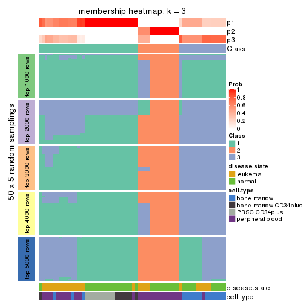
membership_heatmap(res, k = 4)
membership_heatmap(res, k = 5)
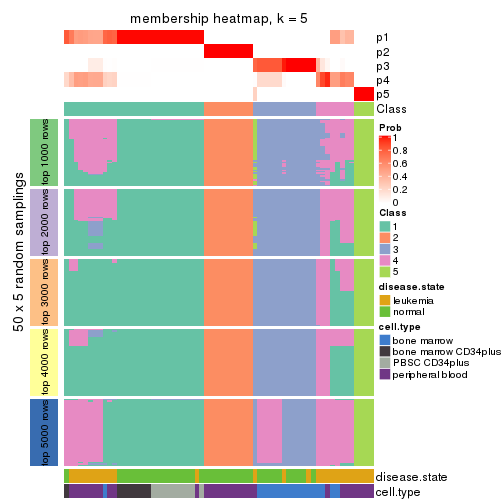
membership_heatmap(res, k = 6)
As soon as we have had the classes for columns, we can look for signatures which are significantly different between classes which can be candidate marks for certain classes. Following are the heatmaps for signatures.
Signature heatmaps where rows are scaled:
get_signatures(res, k = 2)
get_signatures(res, k = 3)
get_signatures(res, k = 4)
get_signatures(res, k = 5)
get_signatures(res, k = 6)
Signature heatmaps where rows are not scaled:
get_signatures(res, k = 2, scale_rows = FALSE)
get_signatures(res, k = 3, scale_rows = FALSE)
get_signatures(res, k = 4, scale_rows = FALSE)
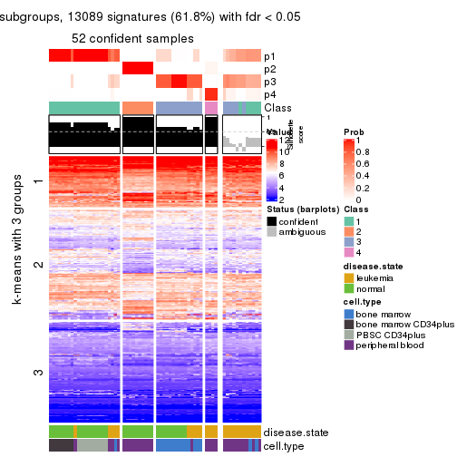
get_signatures(res, k = 5, scale_rows = FALSE)
get_signatures(res, k = 6, scale_rows = FALSE)
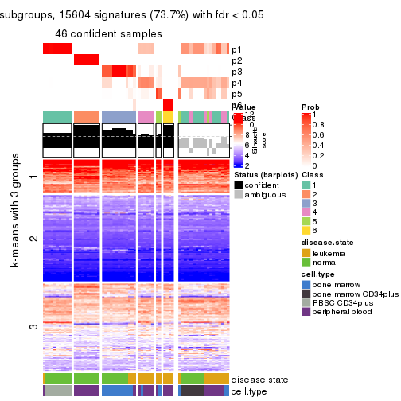
Compare the overlap of signatures from different k:
compare_signatures(res)
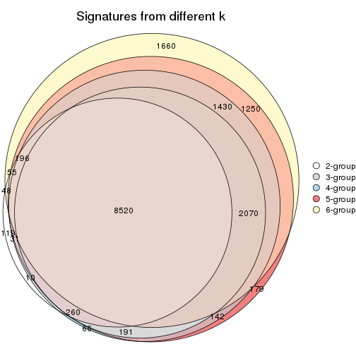
get_signature() returns a data frame invisibly. TO get the list of signatures, the function
call should be assigned to a variable explicitly. In following code, if plot argument is set
to FALSE, no heatmap is plotted while only the differential analysis is performed.
# code only for demonstration
tb = get_signature(res, k = ..., plot = FALSE)
An example of the output of tb is:
#> which_row fdr mean_1 mean_2 scaled_mean_1 scaled_mean_2 km
#> 1 38 0.042760348 8.373488 9.131774 -0.5533452 0.5164555 1
#> 2 40 0.018707592 7.106213 8.469186 -0.6173731 0.5762149 1
#> 3 55 0.019134737 10.221463 11.207825 -0.6159697 0.5749050 1
#> 4 59 0.006059896 5.921854 7.869574 -0.6899429 0.6439467 1
#> 5 60 0.018055526 8.928898 10.211722 -0.6204761 0.5791110 1
#> 6 98 0.009384629 15.714769 14.887706 0.6635654 -0.6193277 2
...
The columns in tb are:
which_row: row indices corresponding to the input matrix.fdr: FDR for the differential test. mean_x: The mean value in group x.scaled_mean_x: The mean value in group x after rows are scaled.km: Row groups if k-means clustering is applied to rows.UMAP plot which shows how samples are separated.
dimension_reduction(res, k = 2, method = "UMAP")

dimension_reduction(res, k = 3, method = "UMAP")
dimension_reduction(res, k = 4, method = "UMAP")
dimension_reduction(res, k = 5, method = "UMAP")

dimension_reduction(res, k = 6, method = "UMAP")
Following heatmap shows how subgroups are split when increasing k:
collect_classes(res)
Test correlation between subgroups and known annotations. If the known annotation is numeric, one-way ANOVA test is applied, and if the known annotation is discrete, chi-squared contingency table test is applied.
test_to_known_factors(res)
#> n disease.state(p) cell.type(p) k
#> ATC:hclust 64 4.65e-01 7.80e-05 2
#> ATC:hclust 56 8.54e-01 1.09e-12 3
#> ATC:hclust 52 1.68e-03 1.94e-12 4
#> ATC:hclust 49 7.25e-04 5.03e-12 5
#> ATC:hclust 46 6.45e-06 8.20e-12 6
If matrix rows can be associated to genes, consider to use GO_Enrichment(res,
...) to perform function enrichment for the signature genes.
The object with results only for a single top-value method and a single partition method can be extracted as:
res = res_list["ATC", "kmeans"]
# you can also extract it by
# res = res_list["ATC:kmeans"]
A summary of res and all the functions that can be applied to it:
res
#> A 'ConsensusPartition' object with k = 2, 3, 4, 5, 6.
#> On a matrix with 21168 rows and 64 columns.
#> Top rows (1000, 2000, 3000, 4000, 5000) are extracted by 'ATC' method.
#> Subgroups are detected by 'kmeans' method.
#> Performed in total 1250 partitions by row resampling.
#> Best k for subgroups seems to be 2.
#>
#> Following methods can be applied to this 'ConsensusPartition' object:
#> [1] "cola_report" "collect_classes" "collect_plots"
#> [4] "collect_stats" "colnames" "compare_signatures"
#> [7] "consensus_heatmap" "dimension_reduction" "functional_enrichment"
#> [10] "get_anno_col" "get_anno" "get_classes"
#> [13] "get_consensus" "get_matrix" "get_membership"
#> [16] "get_param" "get_signatures" "get_stats"
#> [19] "is_best_k" "is_stable_k" "membership_heatmap"
#> [22] "ncol" "nrow" "plot_ecdf"
#> [25] "rownames" "select_partition_number" "show"
#> [28] "suggest_best_k" "test_to_known_factors"
collect_plots() function collects all the plots made from res for all k (number of partitions)
into one single page to provide an easy and fast comparison between different k.
collect_plots(res)
The plots are:
k and the heatmap of
predicted classes for each k.k.k.k.All the plots in panels can be made by individual functions and they are plotted later in this section.
select_partition_number() produces several plots showing different
statistics for choosing “optimized” k. There are following statistics:
k;k, the area increased is defined as \(A_k - A_{k-1}\).The detailed explanations of these statistics can be found in the cola vignette.
Generally speaking, lower PAC score, higher mean silhouette score or higher
concordance corresponds to better partition. Rand index and Jaccard index
measure how similar the current partition is compared to partition with k-1.
If they are too similar, we won't accept k is better than k-1.
select_partition_number(res)
The numeric values for all these statistics can be obtained by get_stats().
get_stats(res)
#> k 1-PAC mean_silhouette concordance area_increased Rand Jaccard
#> 2 2 1.000 0.975 0.986 0.3477 0.653 0.653
#> 3 3 0.787 0.925 0.954 0.7474 0.679 0.530
#> 4 4 0.748 0.813 0.874 0.1859 0.807 0.541
#> 5 5 0.802 0.828 0.853 0.0750 0.940 0.780
#> 6 6 0.812 0.843 0.828 0.0484 0.956 0.808
suggest_best_k() suggests the best \(k\) based on these statistics. The rules are as follows:
NA.suggest_best_k(res)
#> [1] 2
Following shows the table of the partitions (You need to click the show/hide
code output link to see it). The membership matrix (columns with name p*)
is inferred by
clue::cl_consensus()
function with the SE method. Basically the value in the membership matrix
represents the probability to belong to a certain group. The finall class
label for an item is determined with the group with highest probability it
belongs to.
In get_classes() function, the entropy is calculated from the membership
matrix and the silhouette score is calculated from the consensus matrix.
cbind(get_classes(res, k = 2), get_membership(res, k = 2))
#> class entropy silhouette p1 p2
#> GSM239371 1 0.0938 0.986 0.988 0.012
#> GSM239487 1 0.0000 0.990 1.000 0.000
#> GSM239489 1 0.0938 0.986 0.988 0.012
#> GSM239492 1 0.0000 0.990 1.000 0.000
#> GSM239497 1 0.0938 0.986 0.988 0.012
#> GSM239520 1 0.0000 0.990 1.000 0.000
#> GSM240427 1 0.0938 0.986 0.988 0.012
#> GSM239345 1 0.0000 0.990 1.000 0.000
#> GSM239346 1 0.5408 0.862 0.876 0.124
#> GSM239348 1 0.0938 0.986 0.988 0.012
#> GSM239363 2 0.8713 0.576 0.292 0.708
#> GSM239460 1 0.0938 0.986 0.988 0.012
#> GSM239485 1 0.0938 0.986 0.988 0.012
#> GSM239488 2 0.0000 0.968 0.000 1.000
#> GSM239490 1 0.0000 0.990 1.000 0.000
#> GSM239491 1 0.0938 0.986 0.988 0.012
#> GSM239493 1 0.0938 0.986 0.988 0.012
#> GSM239494 1 0.0938 0.986 0.988 0.012
#> GSM239495 1 0.0938 0.986 0.988 0.012
#> GSM239496 1 0.0938 0.986 0.988 0.012
#> GSM239498 2 0.0000 0.968 0.000 1.000
#> GSM239516 2 0.0000 0.968 0.000 1.000
#> GSM239580 1 0.0000 0.990 1.000 0.000
#> GSM240405 1 0.0000 0.990 1.000 0.000
#> GSM240406 1 0.0938 0.986 0.988 0.012
#> GSM240429 1 0.0000 0.990 1.000 0.000
#> GSM239323 1 0.1843 0.978 0.972 0.028
#> GSM239324 1 0.1414 0.979 0.980 0.020
#> GSM239326 1 0.1414 0.979 0.980 0.020
#> GSM239328 1 0.1414 0.979 0.980 0.020
#> GSM239329 1 0.0000 0.990 1.000 0.000
#> GSM239331 1 0.1414 0.979 0.980 0.020
#> GSM239332 1 0.1414 0.979 0.980 0.020
#> GSM239333 1 0.1414 0.979 0.980 0.020
#> GSM239334 1 0.1414 0.979 0.980 0.020
#> GSM239335 1 0.1414 0.979 0.980 0.020
#> GSM240430 2 0.0938 0.973 0.012 0.988
#> GSM240431 2 0.0938 0.973 0.012 0.988
#> GSM240432 2 0.0938 0.973 0.012 0.988
#> GSM240433 2 0.0000 0.968 0.000 1.000
#> GSM240494 2 0.0938 0.973 0.012 0.988
#> GSM240495 2 0.0938 0.973 0.012 0.988
#> GSM240496 2 0.0938 0.973 0.012 0.988
#> GSM240497 2 0.0938 0.973 0.012 0.988
#> GSM240498 2 0.0938 0.973 0.012 0.988
#> GSM240499 2 0.0938 0.973 0.012 0.988
#> GSM239170 1 0.0000 0.990 1.000 0.000
#> GSM239338 1 0.0000 0.990 1.000 0.000
#> GSM239339 1 0.0000 0.990 1.000 0.000
#> GSM239340 1 0.0000 0.990 1.000 0.000
#> GSM239341 1 0.0000 0.990 1.000 0.000
#> GSM239342 1 0.0000 0.990 1.000 0.000
#> GSM239343 1 0.0938 0.986 0.988 0.012
#> GSM239344 1 0.0000 0.990 1.000 0.000
#> GSM240500 1 0.0000 0.990 1.000 0.000
#> GSM240501 1 0.0000 0.990 1.000 0.000
#> GSM240502 1 0.0000 0.990 1.000 0.000
#> GSM240503 1 0.0000 0.990 1.000 0.000
#> GSM240504 1 0.0000 0.990 1.000 0.000
#> GSM240505 1 0.0000 0.990 1.000 0.000
#> GSM240506 1 0.0000 0.990 1.000 0.000
#> GSM240507 1 0.0000 0.990 1.000 0.000
#> GSM240508 1 0.0000 0.990 1.000 0.000
#> GSM240509 1 0.0000 0.990 1.000 0.000
cbind(get_classes(res, k = 3), get_membership(res, k = 3))
#> class entropy silhouette p1 p2 p3
#> GSM239371 1 0.2537 0.934 0.920 0.000 0.080
#> GSM239487 3 0.4931 0.694 0.232 0.000 0.768
#> GSM239489 3 0.3879 0.794 0.152 0.000 0.848
#> GSM239492 1 0.0000 0.953 1.000 0.000 0.000
#> GSM239497 3 0.2261 0.882 0.068 0.000 0.932
#> GSM239520 3 0.1411 0.906 0.036 0.000 0.964
#> GSM240427 1 0.3116 0.921 0.892 0.000 0.108
#> GSM239345 1 0.4002 0.881 0.840 0.000 0.160
#> GSM239346 3 0.0000 0.915 0.000 0.000 1.000
#> GSM239348 1 0.3116 0.921 0.892 0.000 0.108
#> GSM239363 3 0.0592 0.909 0.000 0.012 0.988
#> GSM239460 3 0.2261 0.882 0.068 0.000 0.932
#> GSM239485 1 0.2537 0.934 0.920 0.000 0.080
#> GSM239488 3 0.5785 0.541 0.000 0.332 0.668
#> GSM239490 1 0.0000 0.953 1.000 0.000 0.000
#> GSM239491 1 0.3116 0.921 0.892 0.000 0.108
#> GSM239493 1 0.3412 0.916 0.876 0.000 0.124
#> GSM239494 1 0.3116 0.921 0.892 0.000 0.108
#> GSM239495 1 0.3116 0.921 0.892 0.000 0.108
#> GSM239496 1 0.3116 0.921 0.892 0.000 0.108
#> GSM239498 3 0.4121 0.791 0.000 0.168 0.832
#> GSM239516 3 0.4121 0.791 0.000 0.168 0.832
#> GSM239580 1 0.2537 0.932 0.920 0.000 0.080
#> GSM240405 1 0.0592 0.953 0.988 0.000 0.012
#> GSM240406 1 0.3116 0.921 0.892 0.000 0.108
#> GSM240429 1 0.3340 0.918 0.880 0.000 0.120
#> GSM239323 3 0.0000 0.915 0.000 0.000 1.000
#> GSM239324 3 0.1411 0.906 0.036 0.000 0.964
#> GSM239326 3 0.1411 0.906 0.036 0.000 0.964
#> GSM239328 3 0.1411 0.906 0.036 0.000 0.964
#> GSM239329 3 0.0000 0.915 0.000 0.000 1.000
#> GSM239331 3 0.0000 0.915 0.000 0.000 1.000
#> GSM239332 3 0.0000 0.915 0.000 0.000 1.000
#> GSM239333 3 0.0000 0.915 0.000 0.000 1.000
#> GSM239334 3 0.0000 0.915 0.000 0.000 1.000
#> GSM239335 3 0.1411 0.906 0.036 0.000 0.964
#> GSM240430 2 0.0000 1.000 0.000 1.000 0.000
#> GSM240431 2 0.0000 1.000 0.000 1.000 0.000
#> GSM240432 2 0.0000 1.000 0.000 1.000 0.000
#> GSM240433 2 0.0000 1.000 0.000 1.000 0.000
#> GSM240494 2 0.0000 1.000 0.000 1.000 0.000
#> GSM240495 2 0.0000 1.000 0.000 1.000 0.000
#> GSM240496 2 0.0000 1.000 0.000 1.000 0.000
#> GSM240497 2 0.0000 1.000 0.000 1.000 0.000
#> GSM240498 2 0.0000 1.000 0.000 1.000 0.000
#> GSM240499 2 0.0000 1.000 0.000 1.000 0.000
#> GSM239170 1 0.0000 0.953 1.000 0.000 0.000
#> GSM239338 1 0.0000 0.953 1.000 0.000 0.000
#> GSM239339 1 0.0000 0.953 1.000 0.000 0.000
#> GSM239340 1 0.0000 0.953 1.000 0.000 0.000
#> GSM239341 1 0.0000 0.953 1.000 0.000 0.000
#> GSM239342 1 0.0000 0.953 1.000 0.000 0.000
#> GSM239343 1 0.1411 0.943 0.964 0.000 0.036
#> GSM239344 1 0.0000 0.953 1.000 0.000 0.000
#> GSM240500 1 0.0000 0.953 1.000 0.000 0.000
#> GSM240501 1 0.0592 0.953 0.988 0.000 0.012
#> GSM240502 1 0.0592 0.953 0.988 0.000 0.012
#> GSM240503 1 0.0592 0.953 0.988 0.000 0.012
#> GSM240504 1 0.0592 0.953 0.988 0.000 0.012
#> GSM240505 1 0.0592 0.953 0.988 0.000 0.012
#> GSM240506 1 0.0592 0.953 0.988 0.000 0.012
#> GSM240507 1 0.0592 0.953 0.988 0.000 0.012
#> GSM240508 1 0.0592 0.953 0.988 0.000 0.012
#> GSM240509 1 0.0592 0.953 0.988 0.000 0.012
cbind(get_classes(res, k = 4), get_membership(res, k = 4))
#> class entropy silhouette p1 p2 p3 p4
#> GSM239371 4 0.4134 0.838 0.260 0.000 0.000 0.740
#> GSM239487 4 0.5659 0.446 0.032 0.000 0.368 0.600
#> GSM239489 4 0.3818 0.703 0.048 0.000 0.108 0.844
#> GSM239492 1 0.4996 -0.377 0.516 0.000 0.000 0.484
#> GSM239497 4 0.3554 0.664 0.020 0.000 0.136 0.844
#> GSM239520 3 0.0469 0.896 0.012 0.000 0.988 0.000
#> GSM240427 4 0.4711 0.846 0.236 0.000 0.024 0.740
#> GSM239345 4 0.5599 0.818 0.276 0.000 0.052 0.672
#> GSM239346 3 0.1474 0.876 0.000 0.000 0.948 0.052
#> GSM239348 4 0.4391 0.844 0.252 0.000 0.008 0.740
#> GSM239363 3 0.4761 0.689 0.000 0.000 0.628 0.372
#> GSM239460 4 0.2704 0.610 0.000 0.000 0.124 0.876
#> GSM239485 4 0.4134 0.838 0.260 0.000 0.000 0.740
#> GSM239488 3 0.7386 0.486 0.000 0.168 0.464 0.368
#> GSM239490 1 0.4972 -0.262 0.544 0.000 0.000 0.456
#> GSM239491 4 0.4995 0.846 0.248 0.000 0.032 0.720
#> GSM239493 4 0.5143 0.841 0.256 0.000 0.036 0.708
#> GSM239494 4 0.4539 0.841 0.272 0.000 0.008 0.720
#> GSM239495 4 0.4391 0.844 0.252 0.000 0.008 0.740
#> GSM239496 4 0.4539 0.841 0.272 0.000 0.008 0.720
#> GSM239498 3 0.4761 0.689 0.000 0.000 0.628 0.372
#> GSM239516 3 0.4920 0.690 0.000 0.004 0.628 0.368
#> GSM239580 4 0.5220 0.610 0.424 0.000 0.008 0.568
#> GSM240405 1 0.0469 0.889 0.988 0.000 0.000 0.012
#> GSM240406 4 0.4391 0.844 0.252 0.000 0.008 0.740
#> GSM240429 4 0.5321 0.819 0.296 0.000 0.032 0.672
#> GSM239323 3 0.0188 0.898 0.000 0.000 0.996 0.004
#> GSM239324 3 0.0469 0.896 0.012 0.000 0.988 0.000
#> GSM239326 3 0.0469 0.896 0.012 0.000 0.988 0.000
#> GSM239328 3 0.0469 0.896 0.012 0.000 0.988 0.000
#> GSM239329 3 0.0188 0.898 0.000 0.000 0.996 0.004
#> GSM239331 3 0.0188 0.898 0.000 0.000 0.996 0.004
#> GSM239332 3 0.0188 0.898 0.000 0.000 0.996 0.004
#> GSM239333 3 0.0188 0.898 0.000 0.000 0.996 0.004
#> GSM239334 3 0.0188 0.898 0.000 0.000 0.996 0.004
#> GSM239335 3 0.0469 0.896 0.012 0.000 0.988 0.000
#> GSM240430 2 0.0000 0.995 0.000 1.000 0.000 0.000
#> GSM240431 2 0.0000 0.995 0.000 1.000 0.000 0.000
#> GSM240432 2 0.0657 0.993 0.000 0.984 0.004 0.012
#> GSM240433 2 0.0000 0.995 0.000 1.000 0.000 0.000
#> GSM240494 2 0.0000 0.995 0.000 1.000 0.000 0.000
#> GSM240495 2 0.0000 0.995 0.000 1.000 0.000 0.000
#> GSM240496 2 0.0657 0.993 0.000 0.984 0.004 0.012
#> GSM240497 2 0.0657 0.993 0.000 0.984 0.004 0.012
#> GSM240498 2 0.0657 0.993 0.000 0.984 0.004 0.012
#> GSM240499 2 0.0000 0.995 0.000 1.000 0.000 0.000
#> GSM239170 1 0.1389 0.876 0.952 0.000 0.000 0.048
#> GSM239338 1 0.1389 0.876 0.952 0.000 0.000 0.048
#> GSM239339 1 0.1389 0.876 0.952 0.000 0.000 0.048
#> GSM239340 1 0.1389 0.876 0.952 0.000 0.000 0.048
#> GSM239341 1 0.1389 0.876 0.952 0.000 0.000 0.048
#> GSM239342 1 0.1389 0.876 0.952 0.000 0.000 0.048
#> GSM239343 1 0.4431 0.425 0.696 0.000 0.000 0.304
#> GSM239344 1 0.1389 0.876 0.952 0.000 0.000 0.048
#> GSM240500 1 0.0469 0.889 0.988 0.000 0.000 0.012
#> GSM240501 1 0.0469 0.889 0.988 0.000 0.000 0.012
#> GSM240502 1 0.0469 0.889 0.988 0.000 0.000 0.012
#> GSM240503 1 0.0469 0.889 0.988 0.000 0.000 0.012
#> GSM240504 1 0.0469 0.889 0.988 0.000 0.000 0.012
#> GSM240505 1 0.0469 0.889 0.988 0.000 0.000 0.012
#> GSM240506 1 0.0000 0.884 1.000 0.000 0.000 0.000
#> GSM240507 1 0.0469 0.889 0.988 0.000 0.000 0.012
#> GSM240508 1 0.0469 0.889 0.988 0.000 0.000 0.012
#> GSM240509 1 0.0469 0.889 0.988 0.000 0.000 0.012
cbind(get_classes(res, k = 5), get_membership(res, k = 5))
#> class entropy silhouette p1 p2 p3 p4 p5
#> GSM239371 4 0.1608 0.834 0.072 0.000 0.000 0.928 0.000
#> GSM239487 4 0.5642 0.480 0.004 0.000 0.272 0.620 0.104
#> GSM239489 4 0.3952 0.741 0.020 0.000 0.024 0.800 0.156
#> GSM239492 4 0.4270 0.641 0.320 0.000 0.000 0.668 0.012
#> GSM239497 4 0.3991 0.704 0.000 0.000 0.048 0.780 0.172
#> GSM239520 3 0.1991 0.877 0.004 0.000 0.916 0.004 0.076
#> GSM240427 4 0.3275 0.816 0.064 0.000 0.008 0.860 0.068
#> GSM239345 4 0.4441 0.704 0.280 0.000 0.012 0.696 0.012
#> GSM239346 3 0.0955 0.937 0.000 0.000 0.968 0.004 0.028
#> GSM239348 4 0.2473 0.832 0.072 0.000 0.000 0.896 0.032
#> GSM239363 5 0.5058 0.934 0.000 0.000 0.384 0.040 0.576
#> GSM239460 4 0.4761 0.487 0.000 0.000 0.028 0.616 0.356
#> GSM239485 4 0.2535 0.831 0.076 0.000 0.000 0.892 0.032
#> GSM239488 5 0.6342 0.838 0.000 0.088 0.296 0.040 0.576
#> GSM239490 4 0.4434 0.319 0.460 0.000 0.000 0.536 0.004
#> GSM239491 4 0.2266 0.833 0.064 0.000 0.008 0.912 0.016
#> GSM239493 4 0.2302 0.830 0.080 0.000 0.008 0.904 0.008
#> GSM239494 4 0.1608 0.834 0.072 0.000 0.000 0.928 0.000
#> GSM239495 4 0.1608 0.834 0.072 0.000 0.000 0.928 0.000
#> GSM239496 4 0.2110 0.834 0.072 0.000 0.000 0.912 0.016
#> GSM239498 5 0.5165 0.932 0.000 0.000 0.376 0.048 0.576
#> GSM239516 5 0.5058 0.934 0.000 0.000 0.384 0.040 0.576
#> GSM239580 4 0.4109 0.702 0.288 0.000 0.000 0.700 0.012
#> GSM240405 1 0.1697 0.771 0.932 0.000 0.000 0.060 0.008
#> GSM240406 4 0.2110 0.834 0.072 0.000 0.000 0.912 0.016
#> GSM240429 4 0.4262 0.700 0.288 0.000 0.004 0.696 0.012
#> GSM239323 3 0.0290 0.971 0.000 0.000 0.992 0.008 0.000
#> GSM239324 3 0.0162 0.971 0.004 0.000 0.996 0.000 0.000
#> GSM239326 3 0.0162 0.971 0.004 0.000 0.996 0.000 0.000
#> GSM239328 3 0.0162 0.971 0.004 0.000 0.996 0.000 0.000
#> GSM239329 3 0.1251 0.934 0.000 0.000 0.956 0.008 0.036
#> GSM239331 3 0.0451 0.970 0.000 0.000 0.988 0.008 0.004
#> GSM239332 3 0.0451 0.970 0.000 0.000 0.988 0.008 0.004
#> GSM239333 3 0.0290 0.971 0.000 0.000 0.992 0.008 0.000
#> GSM239334 3 0.0162 0.971 0.000 0.000 0.996 0.004 0.000
#> GSM239335 3 0.0162 0.971 0.004 0.000 0.996 0.000 0.000
#> GSM240430 2 0.0000 0.975 0.000 1.000 0.000 0.000 0.000
#> GSM240431 2 0.0000 0.975 0.000 1.000 0.000 0.000 0.000
#> GSM240432 2 0.1628 0.964 0.000 0.936 0.000 0.056 0.008
#> GSM240433 2 0.0290 0.972 0.000 0.992 0.000 0.008 0.000
#> GSM240494 2 0.0000 0.975 0.000 1.000 0.000 0.000 0.000
#> GSM240495 2 0.0000 0.975 0.000 1.000 0.000 0.000 0.000
#> GSM240496 2 0.1628 0.964 0.000 0.936 0.000 0.056 0.008
#> GSM240497 2 0.1628 0.964 0.000 0.936 0.000 0.056 0.008
#> GSM240498 2 0.1628 0.964 0.000 0.936 0.000 0.056 0.008
#> GSM240499 2 0.0000 0.975 0.000 1.000 0.000 0.000 0.000
#> GSM239170 1 0.5008 0.734 0.644 0.000 0.000 0.056 0.300
#> GSM239338 1 0.5008 0.734 0.644 0.000 0.000 0.056 0.300
#> GSM239339 1 0.5008 0.734 0.644 0.000 0.000 0.056 0.300
#> GSM239340 1 0.5008 0.734 0.644 0.000 0.000 0.056 0.300
#> GSM239341 1 0.5008 0.734 0.644 0.000 0.000 0.056 0.300
#> GSM239342 1 0.5008 0.734 0.644 0.000 0.000 0.056 0.300
#> GSM239343 1 0.6769 0.329 0.396 0.000 0.000 0.288 0.316
#> GSM239344 1 0.5008 0.734 0.644 0.000 0.000 0.056 0.300
#> GSM240500 1 0.0609 0.812 0.980 0.000 0.000 0.020 0.000
#> GSM240501 1 0.0609 0.812 0.980 0.000 0.000 0.020 0.000
#> GSM240502 1 0.0609 0.812 0.980 0.000 0.000 0.020 0.000
#> GSM240503 1 0.0898 0.807 0.972 0.000 0.000 0.020 0.008
#> GSM240504 1 0.0609 0.812 0.980 0.000 0.000 0.020 0.000
#> GSM240505 1 0.0609 0.812 0.980 0.000 0.000 0.020 0.000
#> GSM240506 1 0.0162 0.809 0.996 0.000 0.000 0.004 0.000
#> GSM240507 1 0.0609 0.812 0.980 0.000 0.000 0.020 0.000
#> GSM240508 1 0.0609 0.812 0.980 0.000 0.000 0.020 0.000
#> GSM240509 1 0.0609 0.812 0.980 0.000 0.000 0.020 0.000
cbind(get_classes(res, k = 6), get_membership(res, k = 6))
#> class entropy silhouette p1 p2 p3 p4 p5 p6
#> GSM239371 4 0.0260 0.763 0.008 0.000 0.000 0.992 0.000 0.000
#> GSM239487 4 0.7688 0.232 0.244 0.000 0.204 0.352 0.004 0.196
#> GSM239489 4 0.5173 0.594 0.172 0.000 0.000 0.636 0.004 0.188
#> GSM239492 4 0.4492 0.644 0.216 0.000 0.000 0.712 0.052 0.020
#> GSM239497 4 0.5827 0.479 0.256 0.000 0.000 0.520 0.004 0.220
#> GSM239520 3 0.5231 0.451 0.216 0.000 0.624 0.000 0.004 0.156
#> GSM240427 4 0.4371 0.667 0.148 0.000 0.000 0.732 0.004 0.116
#> GSM239345 4 0.4231 0.656 0.248 0.000 0.000 0.708 0.020 0.024
#> GSM239346 3 0.1856 0.866 0.032 0.000 0.920 0.000 0.000 0.048
#> GSM239348 4 0.1745 0.758 0.012 0.000 0.000 0.920 0.000 0.068
#> GSM239363 6 0.3719 0.967 0.000 0.000 0.248 0.024 0.000 0.728
#> GSM239460 4 0.5645 0.442 0.172 0.000 0.000 0.508 0.000 0.320
#> GSM239485 4 0.2451 0.748 0.056 0.000 0.000 0.884 0.000 0.060
#> GSM239488 6 0.4321 0.916 0.000 0.048 0.200 0.020 0.000 0.732
#> GSM239490 4 0.4929 0.520 0.200 0.000 0.000 0.664 0.132 0.004
#> GSM239491 4 0.1524 0.760 0.008 0.000 0.000 0.932 0.000 0.060
#> GSM239493 4 0.1890 0.752 0.060 0.000 0.000 0.916 0.000 0.024
#> GSM239494 4 0.0790 0.760 0.032 0.000 0.000 0.968 0.000 0.000
#> GSM239495 4 0.0260 0.763 0.008 0.000 0.000 0.992 0.000 0.000
#> GSM239496 4 0.1285 0.761 0.004 0.000 0.000 0.944 0.000 0.052
#> GSM239498 6 0.3719 0.967 0.000 0.000 0.248 0.024 0.000 0.728
#> GSM239516 6 0.3606 0.960 0.000 0.000 0.256 0.016 0.000 0.728
#> GSM239580 4 0.4102 0.666 0.216 0.000 0.000 0.736 0.028 0.020
#> GSM240405 1 0.5029 0.828 0.544 0.000 0.000 0.080 0.376 0.000
#> GSM240406 4 0.1616 0.760 0.048 0.000 0.000 0.932 0.000 0.020
#> GSM240429 4 0.4231 0.656 0.248 0.000 0.000 0.708 0.020 0.024
#> GSM239323 3 0.0603 0.926 0.016 0.000 0.980 0.000 0.004 0.000
#> GSM239324 3 0.0146 0.929 0.004 0.000 0.996 0.000 0.000 0.000
#> GSM239326 3 0.0146 0.929 0.004 0.000 0.996 0.000 0.000 0.000
#> GSM239328 3 0.0146 0.929 0.004 0.000 0.996 0.000 0.000 0.000
#> GSM239329 3 0.1826 0.880 0.020 0.000 0.924 0.000 0.004 0.052
#> GSM239331 3 0.0748 0.925 0.016 0.000 0.976 0.000 0.004 0.004
#> GSM239332 3 0.0748 0.925 0.016 0.000 0.976 0.000 0.004 0.004
#> GSM239333 3 0.0603 0.926 0.016 0.000 0.980 0.000 0.004 0.000
#> GSM239334 3 0.0000 0.929 0.000 0.000 1.000 0.000 0.000 0.000
#> GSM239335 3 0.0146 0.929 0.004 0.000 0.996 0.000 0.000 0.000
#> GSM240430 2 0.0000 0.959 0.000 1.000 0.000 0.000 0.000 0.000
#> GSM240431 2 0.0000 0.959 0.000 1.000 0.000 0.000 0.000 0.000
#> GSM240432 2 0.2113 0.939 0.092 0.896 0.000 0.000 0.008 0.004
#> GSM240433 2 0.0508 0.953 0.012 0.984 0.000 0.000 0.004 0.000
#> GSM240494 2 0.0000 0.959 0.000 1.000 0.000 0.000 0.000 0.000
#> GSM240495 2 0.0000 0.959 0.000 1.000 0.000 0.000 0.000 0.000
#> GSM240496 2 0.2051 0.939 0.096 0.896 0.000 0.000 0.004 0.004
#> GSM240497 2 0.2051 0.939 0.096 0.896 0.000 0.000 0.004 0.004
#> GSM240498 2 0.2051 0.939 0.096 0.896 0.000 0.000 0.004 0.004
#> GSM240499 2 0.0000 0.959 0.000 1.000 0.000 0.000 0.000 0.000
#> GSM239170 5 0.0547 0.934 0.000 0.000 0.000 0.020 0.980 0.000
#> GSM239338 5 0.0547 0.934 0.000 0.000 0.000 0.020 0.980 0.000
#> GSM239339 5 0.0547 0.934 0.000 0.000 0.000 0.020 0.980 0.000
#> GSM239340 5 0.0806 0.932 0.000 0.000 0.000 0.020 0.972 0.008
#> GSM239341 5 0.0909 0.931 0.000 0.000 0.000 0.020 0.968 0.012
#> GSM239342 5 0.0909 0.931 0.000 0.000 0.000 0.020 0.968 0.012
#> GSM239343 5 0.3913 0.633 0.056 0.000 0.000 0.156 0.776 0.012
#> GSM239344 5 0.0547 0.934 0.000 0.000 0.000 0.020 0.980 0.000
#> GSM240500 1 0.4250 0.975 0.528 0.000 0.000 0.016 0.456 0.000
#> GSM240501 1 0.4250 0.975 0.528 0.000 0.000 0.016 0.456 0.000
#> GSM240502 1 0.4250 0.975 0.528 0.000 0.000 0.016 0.456 0.000
#> GSM240503 1 0.4238 0.964 0.540 0.000 0.000 0.016 0.444 0.000
#> GSM240504 1 0.4246 0.974 0.532 0.000 0.000 0.016 0.452 0.000
#> GSM240505 1 0.4250 0.975 0.528 0.000 0.000 0.016 0.456 0.000
#> GSM240506 1 0.4086 0.960 0.528 0.000 0.000 0.008 0.464 0.000
#> GSM240507 1 0.4250 0.975 0.528 0.000 0.000 0.016 0.456 0.000
#> GSM240508 1 0.4246 0.974 0.532 0.000 0.000 0.016 0.452 0.000
#> GSM240509 1 0.4246 0.974 0.532 0.000 0.000 0.016 0.452 0.000
Heatmaps for the consensus matrix. It visualizes the probability of two samples to be in a same group.
consensus_heatmap(res, k = 2)
consensus_heatmap(res, k = 3)
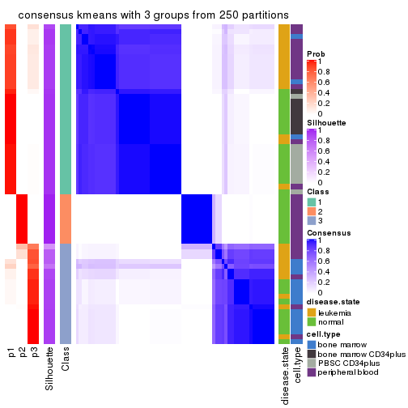
consensus_heatmap(res, k = 4)
consensus_heatmap(res, k = 5)
consensus_heatmap(res, k = 6)
Heatmaps for the membership of samples in all partitions to see how consistent they are:
membership_heatmap(res, k = 2)
membership_heatmap(res, k = 3)
membership_heatmap(res, k = 4)
membership_heatmap(res, k = 5)
membership_heatmap(res, k = 6)
As soon as we have had the classes for columns, we can look for signatures which are significantly different between classes which can be candidate marks for certain classes. Following are the heatmaps for signatures.
Signature heatmaps where rows are scaled:
get_signatures(res, k = 2)
get_signatures(res, k = 3)
get_signatures(res, k = 4)
get_signatures(res, k = 5)
get_signatures(res, k = 6)
Signature heatmaps where rows are not scaled:
get_signatures(res, k = 2, scale_rows = FALSE)
get_signatures(res, k = 3, scale_rows = FALSE)
get_signatures(res, k = 4, scale_rows = FALSE)
get_signatures(res, k = 5, scale_rows = FALSE)
get_signatures(res, k = 6, scale_rows = FALSE)
Compare the overlap of signatures from different k:
compare_signatures(res)
get_signature() returns a data frame invisibly. TO get the list of signatures, the function
call should be assigned to a variable explicitly. In following code, if plot argument is set
to FALSE, no heatmap is plotted while only the differential analysis is performed.
# code only for demonstration
tb = get_signature(res, k = ..., plot = FALSE)
An example of the output of tb is:
#> which_row fdr mean_1 mean_2 scaled_mean_1 scaled_mean_2 km
#> 1 38 0.042760348 8.373488 9.131774 -0.5533452 0.5164555 1
#> 2 40 0.018707592 7.106213 8.469186 -0.6173731 0.5762149 1
#> 3 55 0.019134737 10.221463 11.207825 -0.6159697 0.5749050 1
#> 4 59 0.006059896 5.921854 7.869574 -0.6899429 0.6439467 1
#> 5 60 0.018055526 8.928898 10.211722 -0.6204761 0.5791110 1
#> 6 98 0.009384629 15.714769 14.887706 0.6635654 -0.6193277 2
...
The columns in tb are:
which_row: row indices corresponding to the input matrix.fdr: FDR for the differential test. mean_x: The mean value in group x.scaled_mean_x: The mean value in group x after rows are scaled.km: Row groups if k-means clustering is applied to rows.UMAP plot which shows how samples are separated.
dimension_reduction(res, k = 2, method = "UMAP")

dimension_reduction(res, k = 3, method = "UMAP")
dimension_reduction(res, k = 4, method = "UMAP")
dimension_reduction(res, k = 5, method = "UMAP")
dimension_reduction(res, k = 6, method = "UMAP")
Following heatmap shows how subgroups are split when increasing k:
collect_classes(res)
Test correlation between subgroups and known annotations. If the known annotation is numeric, one-way ANOVA test is applied, and if the known annotation is discrete, chi-squared contingency table test is applied.
test_to_known_factors(res)
#> n disease.state(p) cell.type(p) k
#> ATC:kmeans 64 4.65e-01 7.80e-05 2
#> ATC:kmeans 64 1.70e-02 5.17e-08 3
#> ATC:kmeans 59 7.55e-09 8.53e-13 4
#> ATC:kmeans 60 5.97e-10 9.36e-14 5
#> ATC:kmeans 60 4.98e-10 7.67e-24 6
If matrix rows can be associated to genes, consider to use GO_Enrichment(res,
...) to perform function enrichment for the signature genes.
The object with results only for a single top-value method and a single partition method can be extracted as:
res = res_list["ATC", "skmeans"]
# you can also extract it by
# res = res_list["ATC:skmeans"]
A summary of res and all the functions that can be applied to it:
res
#> A 'ConsensusPartition' object with k = 2, 3, 4, 5, 6.
#> On a matrix with 21168 rows and 64 columns.
#> Top rows (1000, 2000, 3000, 4000, 5000) are extracted by 'ATC' method.
#> Subgroups are detected by 'skmeans' method.
#> Performed in total 1250 partitions by row resampling.
#> Best k for subgroups seems to be 3.
#>
#> Following methods can be applied to this 'ConsensusPartition' object:
#> [1] "cola_report" "collect_classes" "collect_plots"
#> [4] "collect_stats" "colnames" "compare_signatures"
#> [7] "consensus_heatmap" "dimension_reduction" "functional_enrichment"
#> [10] "get_anno_col" "get_anno" "get_classes"
#> [13] "get_consensus" "get_matrix" "get_membership"
#> [16] "get_param" "get_signatures" "get_stats"
#> [19] "is_best_k" "is_stable_k" "membership_heatmap"
#> [22] "ncol" "nrow" "plot_ecdf"
#> [25] "rownames" "select_partition_number" "show"
#> [28] "suggest_best_k" "test_to_known_factors"
collect_plots() function collects all the plots made from res for all k (number of partitions)
into one single page to provide an easy and fast comparison between different k.
collect_plots(res)
The plots are:
k and the heatmap of
predicted classes for each k.k.k.k.All the plots in panels can be made by individual functions and they are plotted later in this section.
select_partition_number() produces several plots showing different
statistics for choosing “optimized” k. There are following statistics:
k;k, the area increased is defined as \(A_k - A_{k-1}\).The detailed explanations of these statistics can be found in the cola vignette.
Generally speaking, lower PAC score, higher mean silhouette score or higher
concordance corresponds to better partition. Rand index and Jaccard index
measure how similar the current partition is compared to partition with k-1.
If they are too similar, we won't accept k is better than k-1.
select_partition_number(res)
The numeric values for all these statistics can be obtained by get_stats().
get_stats(res)
#> k 1-PAC mean_silhouette concordance area_increased Rand Jaccard
#> 2 2 1.000 0.976 0.992 0.4931 0.510 0.510
#> 3 3 1.000 0.969 0.966 0.1963 0.892 0.792
#> 4 4 0.851 0.949 0.952 0.2260 0.826 0.589
#> 5 5 0.816 0.777 0.881 0.0689 0.982 0.931
#> 6 6 0.764 0.748 0.792 0.0400 0.916 0.662
suggest_best_k() suggests the best \(k\) based on these statistics. The rules are as follows:
NA.suggest_best_k(res)
#> [1] 3
#> attr(,"optional")
#> [1] 2
There is also optional best \(k\) = 2 that is worth to check.
Following shows the table of the partitions (You need to click the show/hide
code output link to see it). The membership matrix (columns with name p*)
is inferred by
clue::cl_consensus()
function with the SE method. Basically the value in the membership matrix
represents the probability to belong to a certain group. The finall class
label for an item is determined with the group with highest probability it
belongs to.
In get_classes() function, the entropy is calculated from the membership
matrix and the silhouette score is calculated from the consensus matrix.
cbind(get_classes(res, k = 2), get_membership(res, k = 2))
#> class entropy silhouette p1 p2
#> GSM239371 1 0.000 0.987 1.000 0.000
#> GSM239487 1 0.000 0.987 1.000 0.000
#> GSM239489 1 0.000 0.987 1.000 0.000
#> GSM239492 1 0.000 0.987 1.000 0.000
#> GSM239497 1 0.000 0.987 1.000 0.000
#> GSM239520 2 0.000 0.998 0.000 1.000
#> GSM240427 1 0.000 0.987 1.000 0.000
#> GSM239345 1 0.000 0.987 1.000 0.000
#> GSM239346 2 0.000 0.998 0.000 1.000
#> GSM239348 1 0.000 0.987 1.000 0.000
#> GSM239363 2 0.000 0.998 0.000 1.000
#> GSM239460 1 1.000 0.031 0.508 0.492
#> GSM239485 1 0.000 0.987 1.000 0.000
#> GSM239488 2 0.000 0.998 0.000 1.000
#> GSM239490 1 0.000 0.987 1.000 0.000
#> GSM239491 1 0.000 0.987 1.000 0.000
#> GSM239493 1 0.000 0.987 1.000 0.000
#> GSM239494 1 0.000 0.987 1.000 0.000
#> GSM239495 1 0.000 0.987 1.000 0.000
#> GSM239496 1 0.000 0.987 1.000 0.000
#> GSM239498 2 0.000 0.998 0.000 1.000
#> GSM239516 2 0.000 0.998 0.000 1.000
#> GSM239580 1 0.000 0.987 1.000 0.000
#> GSM240405 1 0.000 0.987 1.000 0.000
#> GSM240406 1 0.000 0.987 1.000 0.000
#> GSM240429 1 0.000 0.987 1.000 0.000
#> GSM239323 2 0.000 0.998 0.000 1.000
#> GSM239324 2 0.000 0.998 0.000 1.000
#> GSM239326 2 0.000 0.998 0.000 1.000
#> GSM239328 2 0.000 0.998 0.000 1.000
#> GSM239329 2 0.242 0.957 0.040 0.960
#> GSM239331 2 0.000 0.998 0.000 1.000
#> GSM239332 2 0.000 0.998 0.000 1.000
#> GSM239333 2 0.000 0.998 0.000 1.000
#> GSM239334 2 0.000 0.998 0.000 1.000
#> GSM239335 2 0.000 0.998 0.000 1.000
#> GSM240430 2 0.000 0.998 0.000 1.000
#> GSM240431 2 0.000 0.998 0.000 1.000
#> GSM240432 2 0.000 0.998 0.000 1.000
#> GSM240433 2 0.000 0.998 0.000 1.000
#> GSM240494 2 0.000 0.998 0.000 1.000
#> GSM240495 2 0.000 0.998 0.000 1.000
#> GSM240496 2 0.000 0.998 0.000 1.000
#> GSM240497 2 0.000 0.998 0.000 1.000
#> GSM240498 2 0.000 0.998 0.000 1.000
#> GSM240499 2 0.000 0.998 0.000 1.000
#> GSM239170 1 0.000 0.987 1.000 0.000
#> GSM239338 1 0.000 0.987 1.000 0.000
#> GSM239339 1 0.000 0.987 1.000 0.000
#> GSM239340 1 0.000 0.987 1.000 0.000
#> GSM239341 1 0.000 0.987 1.000 0.000
#> GSM239342 1 0.000 0.987 1.000 0.000
#> GSM239343 1 0.000 0.987 1.000 0.000
#> GSM239344 1 0.000 0.987 1.000 0.000
#> GSM240500 1 0.000 0.987 1.000 0.000
#> GSM240501 1 0.000 0.987 1.000 0.000
#> GSM240502 1 0.000 0.987 1.000 0.000
#> GSM240503 1 0.000 0.987 1.000 0.000
#> GSM240504 1 0.000 0.987 1.000 0.000
#> GSM240505 1 0.000 0.987 1.000 0.000
#> GSM240506 1 0.000 0.987 1.000 0.000
#> GSM240507 1 0.000 0.987 1.000 0.000
#> GSM240508 1 0.000 0.987 1.000 0.000
#> GSM240509 1 0.000 0.987 1.000 0.000
cbind(get_classes(res, k = 3), get_membership(res, k = 3))
#> class entropy silhouette p1 p2 p3
#> GSM239371 1 0.226 0.956 0.932 0.000 0.068
#> GSM239487 1 0.400 0.851 0.840 0.000 0.160
#> GSM239489 1 0.263 0.947 0.916 0.000 0.084
#> GSM239492 1 0.000 0.974 1.000 0.000 0.000
#> GSM239497 1 0.263 0.947 0.916 0.000 0.084
#> GSM239520 3 0.226 0.983 0.000 0.068 0.932
#> GSM240427 1 0.226 0.956 0.932 0.000 0.068
#> GSM239345 1 0.000 0.974 1.000 0.000 0.000
#> GSM239346 2 0.382 0.804 0.000 0.852 0.148
#> GSM239348 1 0.226 0.956 0.932 0.000 0.068
#> GSM239363 2 0.000 0.982 0.000 1.000 0.000
#> GSM239460 2 0.263 0.888 0.000 0.916 0.084
#> GSM239485 1 0.226 0.956 0.932 0.000 0.068
#> GSM239488 2 0.000 0.982 0.000 1.000 0.000
#> GSM239490 1 0.000 0.974 1.000 0.000 0.000
#> GSM239491 1 0.226 0.956 0.932 0.000 0.068
#> GSM239493 1 0.226 0.956 0.932 0.000 0.068
#> GSM239494 1 0.226 0.956 0.932 0.000 0.068
#> GSM239495 1 0.226 0.956 0.932 0.000 0.068
#> GSM239496 1 0.226 0.956 0.932 0.000 0.068
#> GSM239498 2 0.000 0.982 0.000 1.000 0.000
#> GSM239516 2 0.000 0.982 0.000 1.000 0.000
#> GSM239580 1 0.000 0.974 1.000 0.000 0.000
#> GSM240405 1 0.000 0.974 1.000 0.000 0.000
#> GSM240406 1 0.226 0.956 0.932 0.000 0.068
#> GSM240429 1 0.000 0.974 1.000 0.000 0.000
#> GSM239323 3 0.263 0.996 0.000 0.084 0.916
#> GSM239324 3 0.263 0.996 0.000 0.084 0.916
#> GSM239326 3 0.263 0.996 0.000 0.084 0.916
#> GSM239328 3 0.263 0.996 0.000 0.084 0.916
#> GSM239329 3 0.226 0.983 0.000 0.068 0.932
#> GSM239331 3 0.263 0.996 0.000 0.084 0.916
#> GSM239332 3 0.263 0.996 0.000 0.084 0.916
#> GSM239333 3 0.263 0.996 0.000 0.084 0.916
#> GSM239334 3 0.263 0.996 0.000 0.084 0.916
#> GSM239335 3 0.263 0.996 0.000 0.084 0.916
#> GSM240430 2 0.000 0.982 0.000 1.000 0.000
#> GSM240431 2 0.000 0.982 0.000 1.000 0.000
#> GSM240432 2 0.000 0.982 0.000 1.000 0.000
#> GSM240433 2 0.000 0.982 0.000 1.000 0.000
#> GSM240494 2 0.000 0.982 0.000 1.000 0.000
#> GSM240495 2 0.000 0.982 0.000 1.000 0.000
#> GSM240496 2 0.000 0.982 0.000 1.000 0.000
#> GSM240497 2 0.000 0.982 0.000 1.000 0.000
#> GSM240498 2 0.000 0.982 0.000 1.000 0.000
#> GSM240499 2 0.000 0.982 0.000 1.000 0.000
#> GSM239170 1 0.000 0.974 1.000 0.000 0.000
#> GSM239338 1 0.000 0.974 1.000 0.000 0.000
#> GSM239339 1 0.000 0.974 1.000 0.000 0.000
#> GSM239340 1 0.000 0.974 1.000 0.000 0.000
#> GSM239341 1 0.000 0.974 1.000 0.000 0.000
#> GSM239342 1 0.000 0.974 1.000 0.000 0.000
#> GSM239343 1 0.226 0.956 0.932 0.000 0.068
#> GSM239344 1 0.000 0.974 1.000 0.000 0.000
#> GSM240500 1 0.000 0.974 1.000 0.000 0.000
#> GSM240501 1 0.000 0.974 1.000 0.000 0.000
#> GSM240502 1 0.000 0.974 1.000 0.000 0.000
#> GSM240503 1 0.000 0.974 1.000 0.000 0.000
#> GSM240504 1 0.000 0.974 1.000 0.000 0.000
#> GSM240505 1 0.000 0.974 1.000 0.000 0.000
#> GSM240506 1 0.000 0.974 1.000 0.000 0.000
#> GSM240507 1 0.000 0.974 1.000 0.000 0.000
#> GSM240508 1 0.000 0.974 1.000 0.000 0.000
#> GSM240509 1 0.000 0.974 1.000 0.000 0.000
cbind(get_classes(res, k = 4), get_membership(res, k = 4))
#> class entropy silhouette p1 p2 p3 p4
#> GSM239371 4 0.3726 0.900 0.212 0.000 0.000 0.788
#> GSM239487 4 0.4685 0.581 0.060 0.000 0.156 0.784
#> GSM239489 4 0.0000 0.762 0.000 0.000 0.000 1.000
#> GSM239492 1 0.0000 0.981 1.000 0.000 0.000 0.000
#> GSM239497 4 0.0188 0.765 0.004 0.000 0.000 0.996
#> GSM239520 3 0.3569 0.823 0.000 0.000 0.804 0.196
#> GSM240427 4 0.3172 0.883 0.160 0.000 0.000 0.840
#> GSM239345 1 0.0188 0.978 0.996 0.000 0.000 0.004
#> GSM239346 2 0.1022 0.966 0.000 0.968 0.032 0.000
#> GSM239348 4 0.3649 0.902 0.204 0.000 0.000 0.796
#> GSM239363 2 0.0000 0.998 0.000 1.000 0.000 0.000
#> GSM239460 4 0.0000 0.762 0.000 0.000 0.000 1.000
#> GSM239485 4 0.3688 0.901 0.208 0.000 0.000 0.792
#> GSM239488 2 0.0000 0.998 0.000 1.000 0.000 0.000
#> GSM239490 1 0.1118 0.966 0.964 0.000 0.000 0.036
#> GSM239491 4 0.3649 0.902 0.204 0.000 0.000 0.796
#> GSM239493 4 0.4040 0.869 0.248 0.000 0.000 0.752
#> GSM239494 4 0.3726 0.900 0.212 0.000 0.000 0.788
#> GSM239495 4 0.3726 0.900 0.212 0.000 0.000 0.788
#> GSM239496 4 0.3649 0.902 0.204 0.000 0.000 0.796
#> GSM239498 2 0.0000 0.998 0.000 1.000 0.000 0.000
#> GSM239516 2 0.0000 0.998 0.000 1.000 0.000 0.000
#> GSM239580 1 0.0188 0.979 0.996 0.000 0.000 0.004
#> GSM240405 1 0.0000 0.981 1.000 0.000 0.000 0.000
#> GSM240406 4 0.3801 0.894 0.220 0.000 0.000 0.780
#> GSM240429 1 0.0000 0.981 1.000 0.000 0.000 0.000
#> GSM239323 3 0.0000 0.984 0.000 0.000 1.000 0.000
#> GSM239324 3 0.0000 0.984 0.000 0.000 1.000 0.000
#> GSM239326 3 0.0000 0.984 0.000 0.000 1.000 0.000
#> GSM239328 3 0.0000 0.984 0.000 0.000 1.000 0.000
#> GSM239329 3 0.0000 0.984 0.000 0.000 1.000 0.000
#> GSM239331 3 0.0000 0.984 0.000 0.000 1.000 0.000
#> GSM239332 3 0.0000 0.984 0.000 0.000 1.000 0.000
#> GSM239333 3 0.0000 0.984 0.000 0.000 1.000 0.000
#> GSM239334 3 0.0000 0.984 0.000 0.000 1.000 0.000
#> GSM239335 3 0.0000 0.984 0.000 0.000 1.000 0.000
#> GSM240430 2 0.0000 0.998 0.000 1.000 0.000 0.000
#> GSM240431 2 0.0000 0.998 0.000 1.000 0.000 0.000
#> GSM240432 2 0.0000 0.998 0.000 1.000 0.000 0.000
#> GSM240433 2 0.0000 0.998 0.000 1.000 0.000 0.000
#> GSM240494 2 0.0000 0.998 0.000 1.000 0.000 0.000
#> GSM240495 2 0.0000 0.998 0.000 1.000 0.000 0.000
#> GSM240496 2 0.0000 0.998 0.000 1.000 0.000 0.000
#> GSM240497 2 0.0000 0.998 0.000 1.000 0.000 0.000
#> GSM240498 2 0.0000 0.998 0.000 1.000 0.000 0.000
#> GSM240499 2 0.0000 0.998 0.000 1.000 0.000 0.000
#> GSM239170 1 0.1211 0.964 0.960 0.000 0.000 0.040
#> GSM239338 1 0.1211 0.964 0.960 0.000 0.000 0.040
#> GSM239339 1 0.1211 0.964 0.960 0.000 0.000 0.040
#> GSM239340 1 0.1211 0.964 0.960 0.000 0.000 0.040
#> GSM239341 1 0.1211 0.964 0.960 0.000 0.000 0.040
#> GSM239342 1 0.1211 0.964 0.960 0.000 0.000 0.040
#> GSM239343 4 0.3907 0.883 0.232 0.000 0.000 0.768
#> GSM239344 1 0.1211 0.964 0.960 0.000 0.000 0.040
#> GSM240500 1 0.0000 0.981 1.000 0.000 0.000 0.000
#> GSM240501 1 0.0000 0.981 1.000 0.000 0.000 0.000
#> GSM240502 1 0.0000 0.981 1.000 0.000 0.000 0.000
#> GSM240503 1 0.0000 0.981 1.000 0.000 0.000 0.000
#> GSM240504 1 0.0000 0.981 1.000 0.000 0.000 0.000
#> GSM240505 1 0.0000 0.981 1.000 0.000 0.000 0.000
#> GSM240506 1 0.0000 0.981 1.000 0.000 0.000 0.000
#> GSM240507 1 0.0000 0.981 1.000 0.000 0.000 0.000
#> GSM240508 1 0.0000 0.981 1.000 0.000 0.000 0.000
#> GSM240509 1 0.0000 0.981 1.000 0.000 0.000 0.000
cbind(get_classes(res, k = 5), get_membership(res, k = 5))
#> class entropy silhouette p1 p2 p3 p4 p5
#> GSM239371 4 0.3229 0.717 0.128 0.000 0.000 0.840 0.032
#> GSM239487 5 0.2585 0.482 0.036 0.000 0.004 0.064 0.896
#> GSM239489 4 0.2732 0.574 0.000 0.000 0.000 0.840 0.160
#> GSM239492 1 0.3779 0.708 0.752 0.000 0.000 0.012 0.236
#> GSM239497 5 0.4201 0.326 0.000 0.000 0.000 0.408 0.592
#> GSM239520 3 0.4307 0.309 0.000 0.000 0.504 0.000 0.496
#> GSM240427 5 0.5983 0.328 0.116 0.000 0.000 0.380 0.504
#> GSM239345 1 0.2729 0.722 0.884 0.000 0.000 0.056 0.060
#> GSM239346 2 0.1628 0.932 0.000 0.936 0.008 0.000 0.056
#> GSM239348 4 0.1484 0.735 0.048 0.000 0.000 0.944 0.008
#> GSM239363 2 0.0510 0.985 0.000 0.984 0.000 0.000 0.016
#> GSM239460 4 0.2605 0.591 0.000 0.000 0.000 0.852 0.148
#> GSM239485 4 0.4183 0.639 0.136 0.000 0.000 0.780 0.084
#> GSM239488 2 0.0510 0.985 0.000 0.984 0.000 0.000 0.016
#> GSM239490 1 0.4830 0.665 0.684 0.000 0.000 0.060 0.256
#> GSM239491 4 0.1211 0.701 0.016 0.000 0.000 0.960 0.024
#> GSM239493 4 0.3055 0.683 0.064 0.000 0.000 0.864 0.072
#> GSM239494 4 0.2777 0.731 0.120 0.000 0.000 0.864 0.016
#> GSM239495 4 0.2470 0.740 0.104 0.000 0.000 0.884 0.012
#> GSM239496 4 0.1648 0.728 0.040 0.000 0.000 0.940 0.020
#> GSM239498 2 0.0510 0.985 0.000 0.984 0.000 0.000 0.016
#> GSM239516 2 0.0510 0.985 0.000 0.984 0.000 0.000 0.016
#> GSM239580 1 0.2291 0.744 0.908 0.000 0.000 0.036 0.056
#> GSM240405 1 0.0000 0.806 1.000 0.000 0.000 0.000 0.000
#> GSM240406 4 0.3639 0.687 0.144 0.000 0.000 0.812 0.044
#> GSM240429 1 0.2104 0.750 0.916 0.000 0.000 0.024 0.060
#> GSM239323 3 0.0162 0.930 0.000 0.000 0.996 0.000 0.004
#> GSM239324 3 0.1121 0.934 0.000 0.000 0.956 0.000 0.044
#> GSM239326 3 0.1121 0.934 0.000 0.000 0.956 0.000 0.044
#> GSM239328 3 0.1121 0.934 0.000 0.000 0.956 0.000 0.044
#> GSM239329 3 0.0000 0.933 0.000 0.000 1.000 0.000 0.000
#> GSM239331 3 0.0000 0.933 0.000 0.000 1.000 0.000 0.000
#> GSM239332 3 0.0000 0.933 0.000 0.000 1.000 0.000 0.000
#> GSM239333 3 0.0000 0.933 0.000 0.000 1.000 0.000 0.000
#> GSM239334 3 0.1121 0.934 0.000 0.000 0.956 0.000 0.044
#> GSM239335 3 0.1121 0.934 0.000 0.000 0.956 0.000 0.044
#> GSM240430 2 0.0000 0.991 0.000 1.000 0.000 0.000 0.000
#> GSM240431 2 0.0000 0.991 0.000 1.000 0.000 0.000 0.000
#> GSM240432 2 0.0000 0.991 0.000 1.000 0.000 0.000 0.000
#> GSM240433 2 0.0000 0.991 0.000 1.000 0.000 0.000 0.000
#> GSM240494 2 0.0000 0.991 0.000 1.000 0.000 0.000 0.000
#> GSM240495 2 0.0000 0.991 0.000 1.000 0.000 0.000 0.000
#> GSM240496 2 0.0000 0.991 0.000 1.000 0.000 0.000 0.000
#> GSM240497 2 0.0000 0.991 0.000 1.000 0.000 0.000 0.000
#> GSM240498 2 0.0000 0.991 0.000 1.000 0.000 0.000 0.000
#> GSM240499 2 0.0000 0.991 0.000 1.000 0.000 0.000 0.000
#> GSM239170 1 0.4800 0.607 0.604 0.000 0.000 0.028 0.368
#> GSM239338 1 0.4800 0.607 0.604 0.000 0.000 0.028 0.368
#> GSM239339 1 0.4800 0.607 0.604 0.000 0.000 0.028 0.368
#> GSM239340 1 0.4800 0.607 0.604 0.000 0.000 0.028 0.368
#> GSM239341 1 0.4800 0.607 0.604 0.000 0.000 0.028 0.368
#> GSM239342 1 0.4800 0.607 0.604 0.000 0.000 0.028 0.368
#> GSM239343 4 0.6557 -0.079 0.288 0.000 0.000 0.472 0.240
#> GSM239344 1 0.4800 0.607 0.604 0.000 0.000 0.028 0.368
#> GSM240500 1 0.0000 0.806 1.000 0.000 0.000 0.000 0.000
#> GSM240501 1 0.0000 0.806 1.000 0.000 0.000 0.000 0.000
#> GSM240502 1 0.0000 0.806 1.000 0.000 0.000 0.000 0.000
#> GSM240503 1 0.0000 0.806 1.000 0.000 0.000 0.000 0.000
#> GSM240504 1 0.0000 0.806 1.000 0.000 0.000 0.000 0.000
#> GSM240505 1 0.0000 0.806 1.000 0.000 0.000 0.000 0.000
#> GSM240506 1 0.0000 0.806 1.000 0.000 0.000 0.000 0.000
#> GSM240507 1 0.0000 0.806 1.000 0.000 0.000 0.000 0.000
#> GSM240508 1 0.0000 0.806 1.000 0.000 0.000 0.000 0.000
#> GSM240509 1 0.0000 0.806 1.000 0.000 0.000 0.000 0.000
cbind(get_classes(res, k = 6), get_membership(res, k = 6))
#> class entropy silhouette p1 p2 p3 p4 p5 p6
#> GSM239371 4 0.4168 0.711 0.032 0.000 0.000 0.740 0.204 0.024
#> GSM239487 6 0.4539 0.395 0.004 0.000 0.020 0.008 0.368 0.600
#> GSM239489 4 0.4587 0.375 0.048 0.000 0.000 0.596 0.000 0.356
#> GSM239492 5 0.2933 0.339 0.200 0.000 0.000 0.000 0.796 0.004
#> GSM239497 6 0.3213 0.292 0.000 0.000 0.000 0.160 0.032 0.808
#> GSM239520 6 0.3923 0.169 0.004 0.000 0.416 0.000 0.000 0.580
#> GSM240427 5 0.6449 -0.284 0.016 0.000 0.000 0.272 0.364 0.348
#> GSM239345 1 0.4411 0.503 0.760 0.000 0.000 0.060 0.132 0.048
#> GSM239346 2 0.3417 0.804 0.020 0.832 0.092 0.000 0.000 0.056
#> GSM239348 4 0.2170 0.720 0.000 0.000 0.000 0.888 0.100 0.012
#> GSM239363 2 0.3894 0.810 0.064 0.776 0.000 0.008 0.000 0.152
#> GSM239460 4 0.4887 0.369 0.096 0.000 0.000 0.624 0.000 0.280
#> GSM239485 4 0.4829 0.601 0.000 0.000 0.000 0.612 0.308 0.080
#> GSM239488 2 0.3894 0.810 0.064 0.776 0.000 0.008 0.000 0.152
#> GSM239490 5 0.3361 0.603 0.076 0.000 0.000 0.108 0.816 0.000
#> GSM239491 4 0.1806 0.659 0.044 0.000 0.000 0.928 0.020 0.008
#> GSM239493 4 0.4865 0.538 0.256 0.000 0.000 0.664 0.024 0.056
#> GSM239494 4 0.4297 0.718 0.048 0.000 0.000 0.752 0.168 0.032
#> GSM239495 4 0.4205 0.723 0.040 0.000 0.000 0.760 0.164 0.036
#> GSM239496 4 0.1957 0.712 0.008 0.000 0.000 0.912 0.072 0.008
#> GSM239498 2 0.3894 0.810 0.064 0.776 0.000 0.008 0.000 0.152
#> GSM239516 2 0.3801 0.815 0.060 0.784 0.000 0.008 0.000 0.148
#> GSM239580 1 0.4774 0.707 0.644 0.000 0.000 0.064 0.284 0.008
#> GSM240405 1 0.3804 0.901 0.576 0.000 0.000 0.000 0.424 0.000
#> GSM240406 4 0.5482 0.629 0.024 0.000 0.000 0.604 0.268 0.104
#> GSM240429 1 0.4053 0.605 0.744 0.000 0.000 0.012 0.204 0.040
#> GSM239323 3 0.3062 0.812 0.032 0.000 0.824 0.000 0.000 0.144
#> GSM239324 3 0.0713 0.906 0.000 0.000 0.972 0.000 0.000 0.028
#> GSM239326 3 0.0713 0.906 0.000 0.000 0.972 0.000 0.000 0.028
#> GSM239328 3 0.0713 0.906 0.000 0.000 0.972 0.000 0.000 0.028
#> GSM239329 3 0.2471 0.897 0.056 0.000 0.888 0.004 0.000 0.052
#> GSM239331 3 0.2471 0.897 0.056 0.000 0.888 0.004 0.000 0.052
#> GSM239332 3 0.2471 0.897 0.056 0.000 0.888 0.004 0.000 0.052
#> GSM239333 3 0.2471 0.897 0.056 0.000 0.888 0.004 0.000 0.052
#> GSM239334 3 0.0713 0.906 0.000 0.000 0.972 0.000 0.000 0.028
#> GSM239335 3 0.0713 0.906 0.000 0.000 0.972 0.000 0.000 0.028
#> GSM240430 2 0.0000 0.926 0.000 1.000 0.000 0.000 0.000 0.000
#> GSM240431 2 0.0000 0.926 0.000 1.000 0.000 0.000 0.000 0.000
#> GSM240432 2 0.0000 0.926 0.000 1.000 0.000 0.000 0.000 0.000
#> GSM240433 2 0.0000 0.926 0.000 1.000 0.000 0.000 0.000 0.000
#> GSM240494 2 0.0000 0.926 0.000 1.000 0.000 0.000 0.000 0.000
#> GSM240495 2 0.0000 0.926 0.000 1.000 0.000 0.000 0.000 0.000
#> GSM240496 2 0.0000 0.926 0.000 1.000 0.000 0.000 0.000 0.000
#> GSM240497 2 0.0000 0.926 0.000 1.000 0.000 0.000 0.000 0.000
#> GSM240498 2 0.0000 0.926 0.000 1.000 0.000 0.000 0.000 0.000
#> GSM240499 2 0.0000 0.926 0.000 1.000 0.000 0.000 0.000 0.000
#> GSM239170 5 0.0000 0.786 0.000 0.000 0.000 0.000 1.000 0.000
#> GSM239338 5 0.0000 0.786 0.000 0.000 0.000 0.000 1.000 0.000
#> GSM239339 5 0.0000 0.786 0.000 0.000 0.000 0.000 1.000 0.000
#> GSM239340 5 0.0000 0.786 0.000 0.000 0.000 0.000 1.000 0.000
#> GSM239341 5 0.0000 0.786 0.000 0.000 0.000 0.000 1.000 0.000
#> GSM239342 5 0.0000 0.786 0.000 0.000 0.000 0.000 1.000 0.000
#> GSM239343 5 0.4720 0.161 0.000 0.000 0.000 0.304 0.624 0.072
#> GSM239344 5 0.0000 0.786 0.000 0.000 0.000 0.000 1.000 0.000
#> GSM240500 1 0.3804 0.901 0.576 0.000 0.000 0.000 0.424 0.000
#> GSM240501 1 0.3804 0.901 0.576 0.000 0.000 0.000 0.424 0.000
#> GSM240502 1 0.3804 0.901 0.576 0.000 0.000 0.000 0.424 0.000
#> GSM240503 1 0.3804 0.901 0.576 0.000 0.000 0.000 0.424 0.000
#> GSM240504 1 0.3804 0.901 0.576 0.000 0.000 0.000 0.424 0.000
#> GSM240505 1 0.3804 0.901 0.576 0.000 0.000 0.000 0.424 0.000
#> GSM240506 1 0.3804 0.901 0.576 0.000 0.000 0.000 0.424 0.000
#> GSM240507 1 0.3804 0.901 0.576 0.000 0.000 0.000 0.424 0.000
#> GSM240508 1 0.3804 0.901 0.576 0.000 0.000 0.000 0.424 0.000
#> GSM240509 1 0.3804 0.901 0.576 0.000 0.000 0.000 0.424 0.000
Heatmaps for the consensus matrix. It visualizes the probability of two samples to be in a same group.
consensus_heatmap(res, k = 2)
consensus_heatmap(res, k = 3)
consensus_heatmap(res, k = 4)
consensus_heatmap(res, k = 5)
consensus_heatmap(res, k = 6)
Heatmaps for the membership of samples in all partitions to see how consistent they are:
membership_heatmap(res, k = 2)
membership_heatmap(res, k = 3)
membership_heatmap(res, k = 4)
membership_heatmap(res, k = 5)
membership_heatmap(res, k = 6)

As soon as we have had the classes for columns, we can look for signatures which are significantly different between classes which can be candidate marks for certain classes. Following are the heatmaps for signatures.
Signature heatmaps where rows are scaled:
get_signatures(res, k = 2)
get_signatures(res, k = 3)
get_signatures(res, k = 4)
get_signatures(res, k = 5)
get_signatures(res, k = 6)
Signature heatmaps where rows are not scaled:
get_signatures(res, k = 2, scale_rows = FALSE)
get_signatures(res, k = 3, scale_rows = FALSE)
get_signatures(res, k = 4, scale_rows = FALSE)
get_signatures(res, k = 5, scale_rows = FALSE)
get_signatures(res, k = 6, scale_rows = FALSE)
Compare the overlap of signatures from different k:
compare_signatures(res)
get_signature() returns a data frame invisibly. TO get the list of signatures, the function
call should be assigned to a variable explicitly. In following code, if plot argument is set
to FALSE, no heatmap is plotted while only the differential analysis is performed.
# code only for demonstration
tb = get_signature(res, k = ..., plot = FALSE)
An example of the output of tb is:
#> which_row fdr mean_1 mean_2 scaled_mean_1 scaled_mean_2 km
#> 1 38 0.042760348 8.373488 9.131774 -0.5533452 0.5164555 1
#> 2 40 0.018707592 7.106213 8.469186 -0.6173731 0.5762149 1
#> 3 55 0.019134737 10.221463 11.207825 -0.6159697 0.5749050 1
#> 4 59 0.006059896 5.921854 7.869574 -0.6899429 0.6439467 1
#> 5 60 0.018055526 8.928898 10.211722 -0.6204761 0.5791110 1
#> 6 98 0.009384629 15.714769 14.887706 0.6635654 -0.6193277 2
...
The columns in tb are:
which_row: row indices corresponding to the input matrix.fdr: FDR for the differential test. mean_x: The mean value in group x.scaled_mean_x: The mean value in group x after rows are scaled.km: Row groups if k-means clustering is applied to rows.UMAP plot which shows how samples are separated.
dimension_reduction(res, k = 2, method = "UMAP")
dimension_reduction(res, k = 3, method = "UMAP")
dimension_reduction(res, k = 4, method = "UMAP")
dimension_reduction(res, k = 5, method = "UMAP")
dimension_reduction(res, k = 6, method = "UMAP")
Following heatmap shows how subgroups are split when increasing k:
collect_classes(res)
Test correlation between subgroups and known annotations. If the known annotation is numeric, one-way ANOVA test is applied, and if the known annotation is discrete, chi-squared contingency table test is applied.
test_to_known_factors(res)
#> n disease.state(p) cell.type(p) k
#> ATC:skmeans 63 4.58e-02 3.91e-04 2
#> ATC:skmeans 64 4.15e-02 1.38e-10 3
#> ATC:skmeans 64 2.32e-05 7.38e-13 4
#> ATC:skmeans 59 1.06e-05 1.98e-13 5
#> ATC:skmeans 56 6.39e-05 3.49e-22 6
If matrix rows can be associated to genes, consider to use GO_Enrichment(res,
...) to perform function enrichment for the signature genes.
The object with results only for a single top-value method and a single partition method can be extracted as:
res = res_list["ATC", "pam"]
# you can also extract it by
# res = res_list["ATC:pam"]
A summary of res and all the functions that can be applied to it:
res
#> A 'ConsensusPartition' object with k = 2, 3, 4, 5, 6.
#> On a matrix with 21168 rows and 64 columns.
#> Top rows (1000, 2000, 3000, 4000, 5000) are extracted by 'ATC' method.
#> Subgroups are detected by 'pam' method.
#> Performed in total 1250 partitions by row resampling.
#> Best k for subgroups seems to be 6.
#>
#> Following methods can be applied to this 'ConsensusPartition' object:
#> [1] "cola_report" "collect_classes" "collect_plots"
#> [4] "collect_stats" "colnames" "compare_signatures"
#> [7] "consensus_heatmap" "dimension_reduction" "functional_enrichment"
#> [10] "get_anno_col" "get_anno" "get_classes"
#> [13] "get_consensus" "get_matrix" "get_membership"
#> [16] "get_param" "get_signatures" "get_stats"
#> [19] "is_best_k" "is_stable_k" "membership_heatmap"
#> [22] "ncol" "nrow" "plot_ecdf"
#> [25] "rownames" "select_partition_number" "show"
#> [28] "suggest_best_k" "test_to_known_factors"
collect_plots() function collects all the plots made from res for all k (number of partitions)
into one single page to provide an easy and fast comparison between different k.
collect_plots(res)
The plots are:
k and the heatmap of
predicted classes for each k.k.k.k.All the plots in panels can be made by individual functions and they are plotted later in this section.
select_partition_number() produces several plots showing different
statistics for choosing “optimized” k. There are following statistics:
k;k, the area increased is defined as \(A_k - A_{k-1}\).The detailed explanations of these statistics can be found in the cola vignette.
Generally speaking, lower PAC score, higher mean silhouette score or higher
concordance corresponds to better partition. Rand index and Jaccard index
measure how similar the current partition is compared to partition with k-1.
If they are too similar, we won't accept k is better than k-1.
select_partition_number(res)
The numeric values for all these statistics can be obtained by get_stats().
get_stats(res)
#> k 1-PAC mean_silhouette concordance area_increased Rand Jaccard
#> 2 2 1.000 0.994 0.997 0.3511 0.653 0.653
#> 3 3 1.000 0.957 0.983 0.7412 0.679 0.530
#> 4 4 0.793 0.805 0.894 0.2080 0.811 0.547
#> 5 5 0.875 0.835 0.871 0.0696 0.930 0.733
#> 6 6 0.973 0.916 0.967 0.0455 0.939 0.720
suggest_best_k() suggests the best \(k\) based on these statistics. The rules are as follows:
NA.suggest_best_k(res)
#> [1] 6
#> attr(,"optional")
#> [1] 2 3
There is also optional best \(k\) = 2 3 that is worth to check.
Following shows the table of the partitions (You need to click the show/hide
code output link to see it). The membership matrix (columns with name p*)
is inferred by
clue::cl_consensus()
function with the SE method. Basically the value in the membership matrix
represents the probability to belong to a certain group. The finall class
label for an item is determined with the group with highest probability it
belongs to.
In get_classes() function, the entropy is calculated from the membership
matrix and the silhouette score is calculated from the consensus matrix.
cbind(get_classes(res, k = 2), get_membership(res, k = 2))
#> class entropy silhouette p1 p2
#> GSM239371 1 0.000 0.996 1.000 0.000
#> GSM239487 1 0.000 0.996 1.000 0.000
#> GSM239489 1 0.000 0.996 1.000 0.000
#> GSM239492 1 0.000 0.996 1.000 0.000
#> GSM239497 1 0.000 0.996 1.000 0.000
#> GSM239520 1 0.000 0.996 1.000 0.000
#> GSM240427 1 0.000 0.996 1.000 0.000
#> GSM239345 1 0.000 0.996 1.000 0.000
#> GSM239346 1 0.689 0.775 0.816 0.184
#> GSM239348 1 0.000 0.996 1.000 0.000
#> GSM239363 2 0.000 1.000 0.000 1.000
#> GSM239460 1 0.000 0.996 1.000 0.000
#> GSM239485 1 0.000 0.996 1.000 0.000
#> GSM239488 2 0.000 1.000 0.000 1.000
#> GSM239490 1 0.000 0.996 1.000 0.000
#> GSM239491 1 0.000 0.996 1.000 0.000
#> GSM239493 1 0.000 0.996 1.000 0.000
#> GSM239494 1 0.000 0.996 1.000 0.000
#> GSM239495 1 0.000 0.996 1.000 0.000
#> GSM239496 1 0.000 0.996 1.000 0.000
#> GSM239498 2 0.000 1.000 0.000 1.000
#> GSM239516 2 0.000 1.000 0.000 1.000
#> GSM239580 1 0.000 0.996 1.000 0.000
#> GSM240405 1 0.000 0.996 1.000 0.000
#> GSM240406 1 0.000 0.996 1.000 0.000
#> GSM240429 1 0.000 0.996 1.000 0.000
#> GSM239323 1 0.000 0.996 1.000 0.000
#> GSM239324 1 0.000 0.996 1.000 0.000
#> GSM239326 1 0.000 0.996 1.000 0.000
#> GSM239328 1 0.000 0.996 1.000 0.000
#> GSM239329 1 0.000 0.996 1.000 0.000
#> GSM239331 1 0.000 0.996 1.000 0.000
#> GSM239332 1 0.000 0.996 1.000 0.000
#> GSM239333 1 0.000 0.996 1.000 0.000
#> GSM239334 1 0.000 0.996 1.000 0.000
#> GSM239335 1 0.000 0.996 1.000 0.000
#> GSM240430 2 0.000 1.000 0.000 1.000
#> GSM240431 2 0.000 1.000 0.000 1.000
#> GSM240432 2 0.000 1.000 0.000 1.000
#> GSM240433 2 0.000 1.000 0.000 1.000
#> GSM240494 2 0.000 1.000 0.000 1.000
#> GSM240495 2 0.000 1.000 0.000 1.000
#> GSM240496 2 0.000 1.000 0.000 1.000
#> GSM240497 2 0.000 1.000 0.000 1.000
#> GSM240498 2 0.000 1.000 0.000 1.000
#> GSM240499 2 0.000 1.000 0.000 1.000
#> GSM239170 1 0.000 0.996 1.000 0.000
#> GSM239338 1 0.000 0.996 1.000 0.000
#> GSM239339 1 0.000 0.996 1.000 0.000
#> GSM239340 1 0.000 0.996 1.000 0.000
#> GSM239341 1 0.000 0.996 1.000 0.000
#> GSM239342 1 0.000 0.996 1.000 0.000
#> GSM239343 1 0.000 0.996 1.000 0.000
#> GSM239344 1 0.000 0.996 1.000 0.000
#> GSM240500 1 0.000 0.996 1.000 0.000
#> GSM240501 1 0.000 0.996 1.000 0.000
#> GSM240502 1 0.000 0.996 1.000 0.000
#> GSM240503 1 0.000 0.996 1.000 0.000
#> GSM240504 1 0.000 0.996 1.000 0.000
#> GSM240505 1 0.000 0.996 1.000 0.000
#> GSM240506 1 0.000 0.996 1.000 0.000
#> GSM240507 1 0.000 0.996 1.000 0.000
#> GSM240508 1 0.000 0.996 1.000 0.000
#> GSM240509 1 0.000 0.996 1.000 0.000
cbind(get_classes(res, k = 3), get_membership(res, k = 3))
#> class entropy silhouette p1 p2 p3
#> GSM239371 1 0.000 0.9803 1.000 0.000 0.000
#> GSM239487 3 0.000 0.9740 0.000 0.000 1.000
#> GSM239489 3 0.000 0.9740 0.000 0.000 1.000
#> GSM239492 1 0.000 0.9803 1.000 0.000 0.000
#> GSM239497 3 0.000 0.9740 0.000 0.000 1.000
#> GSM239520 3 0.000 0.9740 0.000 0.000 1.000
#> GSM240427 1 0.489 0.7220 0.772 0.000 0.228
#> GSM239345 1 0.000 0.9803 1.000 0.000 0.000
#> GSM239346 3 0.000 0.9740 0.000 0.000 1.000
#> GSM239348 1 0.000 0.9803 1.000 0.000 0.000
#> GSM239363 3 0.000 0.9740 0.000 0.000 1.000
#> GSM239460 3 0.000 0.9740 0.000 0.000 1.000
#> GSM239485 1 0.000 0.9803 1.000 0.000 0.000
#> GSM239488 3 0.630 0.0552 0.000 0.484 0.516
#> GSM239490 1 0.000 0.9803 1.000 0.000 0.000
#> GSM239491 1 0.440 0.7790 0.812 0.000 0.188
#> GSM239493 1 0.000 0.9803 1.000 0.000 0.000
#> GSM239494 1 0.000 0.9803 1.000 0.000 0.000
#> GSM239495 1 0.000 0.9803 1.000 0.000 0.000
#> GSM239496 1 0.000 0.9803 1.000 0.000 0.000
#> GSM239498 3 0.000 0.9740 0.000 0.000 1.000
#> GSM239516 3 0.000 0.9740 0.000 0.000 1.000
#> GSM239580 1 0.000 0.9803 1.000 0.000 0.000
#> GSM240405 1 0.000 0.9803 1.000 0.000 0.000
#> GSM240406 1 0.000 0.9803 1.000 0.000 0.000
#> GSM240429 1 0.424 0.7937 0.824 0.000 0.176
#> GSM239323 3 0.000 0.9740 0.000 0.000 1.000
#> GSM239324 3 0.000 0.9740 0.000 0.000 1.000
#> GSM239326 3 0.000 0.9740 0.000 0.000 1.000
#> GSM239328 3 0.000 0.9740 0.000 0.000 1.000
#> GSM239329 3 0.000 0.9740 0.000 0.000 1.000
#> GSM239331 3 0.000 0.9740 0.000 0.000 1.000
#> GSM239332 3 0.000 0.9740 0.000 0.000 1.000
#> GSM239333 3 0.000 0.9740 0.000 0.000 1.000
#> GSM239334 3 0.000 0.9740 0.000 0.000 1.000
#> GSM239335 3 0.000 0.9740 0.000 0.000 1.000
#> GSM240430 2 0.000 1.0000 0.000 1.000 0.000
#> GSM240431 2 0.000 1.0000 0.000 1.000 0.000
#> GSM240432 2 0.000 1.0000 0.000 1.000 0.000
#> GSM240433 2 0.000 1.0000 0.000 1.000 0.000
#> GSM240494 2 0.000 1.0000 0.000 1.000 0.000
#> GSM240495 2 0.000 1.0000 0.000 1.000 0.000
#> GSM240496 2 0.000 1.0000 0.000 1.000 0.000
#> GSM240497 2 0.000 1.0000 0.000 1.000 0.000
#> GSM240498 2 0.000 1.0000 0.000 1.000 0.000
#> GSM240499 2 0.000 1.0000 0.000 1.000 0.000
#> GSM239170 1 0.000 0.9803 1.000 0.000 0.000
#> GSM239338 1 0.000 0.9803 1.000 0.000 0.000
#> GSM239339 1 0.000 0.9803 1.000 0.000 0.000
#> GSM239340 1 0.000 0.9803 1.000 0.000 0.000
#> GSM239341 1 0.000 0.9803 1.000 0.000 0.000
#> GSM239342 1 0.000 0.9803 1.000 0.000 0.000
#> GSM239343 1 0.000 0.9803 1.000 0.000 0.000
#> GSM239344 1 0.000 0.9803 1.000 0.000 0.000
#> GSM240500 1 0.000 0.9803 1.000 0.000 0.000
#> GSM240501 1 0.000 0.9803 1.000 0.000 0.000
#> GSM240502 1 0.000 0.9803 1.000 0.000 0.000
#> GSM240503 1 0.000 0.9803 1.000 0.000 0.000
#> GSM240504 1 0.000 0.9803 1.000 0.000 0.000
#> GSM240505 1 0.000 0.9803 1.000 0.000 0.000
#> GSM240506 1 0.000 0.9803 1.000 0.000 0.000
#> GSM240507 1 0.000 0.9803 1.000 0.000 0.000
#> GSM240508 1 0.000 0.9803 1.000 0.000 0.000
#> GSM240509 1 0.000 0.9803 1.000 0.000 0.000
cbind(get_classes(res, k = 4), get_membership(res, k = 4))
#> class entropy silhouette p1 p2 p3 p4
#> GSM239371 4 0.4382 0.8494 0.296 0.000 0.000 0.704
#> GSM239487 3 0.4761 0.3499 0.000 0.000 0.628 0.372
#> GSM239489 4 0.4382 0.5045 0.000 0.000 0.296 0.704
#> GSM239492 4 0.4996 0.5896 0.484 0.000 0.000 0.516
#> GSM239497 4 0.4382 0.5045 0.000 0.000 0.296 0.704
#> GSM239520 3 0.0000 0.9272 0.000 0.000 1.000 0.000
#> GSM240427 4 0.4382 0.8494 0.296 0.000 0.000 0.704
#> GSM239345 4 0.4697 0.7975 0.356 0.000 0.000 0.644
#> GSM239346 3 0.0188 0.9255 0.000 0.000 0.996 0.004
#> GSM239348 4 0.4164 0.8307 0.264 0.000 0.000 0.736
#> GSM239363 3 0.0188 0.9255 0.000 0.000 0.996 0.004
#> GSM239460 4 0.4661 0.4111 0.000 0.000 0.348 0.652
#> GSM239485 4 0.4356 0.8479 0.292 0.000 0.000 0.708
#> GSM239488 3 0.5167 0.0484 0.000 0.488 0.508 0.004
#> GSM239490 1 0.3942 0.3556 0.764 0.000 0.000 0.236
#> GSM239491 4 0.4382 0.8494 0.296 0.000 0.000 0.704
#> GSM239493 4 0.4382 0.8494 0.296 0.000 0.000 0.704
#> GSM239494 4 0.4382 0.8494 0.296 0.000 0.000 0.704
#> GSM239495 4 0.4382 0.8494 0.296 0.000 0.000 0.704
#> GSM239496 4 0.4382 0.8494 0.296 0.000 0.000 0.704
#> GSM239498 3 0.3649 0.6988 0.000 0.000 0.796 0.204
#> GSM239516 3 0.0188 0.9255 0.000 0.000 0.996 0.004
#> GSM239580 4 0.4406 0.8470 0.300 0.000 0.000 0.700
#> GSM240405 1 0.0000 0.8170 1.000 0.000 0.000 0.000
#> GSM240406 4 0.4382 0.8494 0.296 0.000 0.000 0.704
#> GSM240429 4 0.4679 0.8026 0.352 0.000 0.000 0.648
#> GSM239323 3 0.0000 0.9272 0.000 0.000 1.000 0.000
#> GSM239324 3 0.0000 0.9272 0.000 0.000 1.000 0.000
#> GSM239326 3 0.0000 0.9272 0.000 0.000 1.000 0.000
#> GSM239328 3 0.0000 0.9272 0.000 0.000 1.000 0.000
#> GSM239329 3 0.0000 0.9272 0.000 0.000 1.000 0.000
#> GSM239331 3 0.0000 0.9272 0.000 0.000 1.000 0.000
#> GSM239332 3 0.0000 0.9272 0.000 0.000 1.000 0.000
#> GSM239333 3 0.0000 0.9272 0.000 0.000 1.000 0.000
#> GSM239334 3 0.0000 0.9272 0.000 0.000 1.000 0.000
#> GSM239335 3 0.0000 0.9272 0.000 0.000 1.000 0.000
#> GSM240430 2 0.0000 1.0000 0.000 1.000 0.000 0.000
#> GSM240431 2 0.0000 1.0000 0.000 1.000 0.000 0.000
#> GSM240432 2 0.0000 1.0000 0.000 1.000 0.000 0.000
#> GSM240433 2 0.0000 1.0000 0.000 1.000 0.000 0.000
#> GSM240494 2 0.0000 1.0000 0.000 1.000 0.000 0.000
#> GSM240495 2 0.0000 1.0000 0.000 1.000 0.000 0.000
#> GSM240496 2 0.0000 1.0000 0.000 1.000 0.000 0.000
#> GSM240497 2 0.0000 1.0000 0.000 1.000 0.000 0.000
#> GSM240498 2 0.0000 1.0000 0.000 1.000 0.000 0.000
#> GSM240499 2 0.0000 1.0000 0.000 1.000 0.000 0.000
#> GSM239170 1 0.4356 0.7450 0.708 0.000 0.000 0.292
#> GSM239338 1 0.4356 0.7450 0.708 0.000 0.000 0.292
#> GSM239339 1 0.4356 0.7450 0.708 0.000 0.000 0.292
#> GSM239340 1 0.4356 0.7450 0.708 0.000 0.000 0.292
#> GSM239341 1 0.4356 0.7450 0.708 0.000 0.000 0.292
#> GSM239342 1 0.4356 0.7450 0.708 0.000 0.000 0.292
#> GSM239343 4 0.4431 -0.0699 0.304 0.000 0.000 0.696
#> GSM239344 1 0.4356 0.7450 0.708 0.000 0.000 0.292
#> GSM240500 1 0.0000 0.8170 1.000 0.000 0.000 0.000
#> GSM240501 1 0.0000 0.8170 1.000 0.000 0.000 0.000
#> GSM240502 1 0.0000 0.8170 1.000 0.000 0.000 0.000
#> GSM240503 1 0.0000 0.8170 1.000 0.000 0.000 0.000
#> GSM240504 1 0.0000 0.8170 1.000 0.000 0.000 0.000
#> GSM240505 1 0.0000 0.8170 1.000 0.000 0.000 0.000
#> GSM240506 1 0.0000 0.8170 1.000 0.000 0.000 0.000
#> GSM240507 1 0.0000 0.8170 1.000 0.000 0.000 0.000
#> GSM240508 1 0.0000 0.8170 1.000 0.000 0.000 0.000
#> GSM240509 1 0.0000 0.8170 1.000 0.000 0.000 0.000
cbind(get_classes(res, k = 5), get_membership(res, k = 5))
#> class entropy silhouette p1 p2 p3 p4 p5
#> GSM239371 4 0.0000 0.864 0.000 0.000 0.000 1.000 0.000
#> GSM239487 4 0.4716 0.461 0.000 0.000 0.036 0.656 0.308
#> GSM239489 4 0.0404 0.856 0.000 0.000 0.000 0.988 0.012
#> GSM239492 4 0.4201 0.347 0.408 0.000 0.000 0.592 0.000
#> GSM239497 4 0.0912 0.849 0.000 0.000 0.016 0.972 0.012
#> GSM239520 3 0.4297 0.887 0.000 0.000 0.528 0.000 0.472
#> GSM240427 4 0.0000 0.864 0.000 0.000 0.000 1.000 0.000
#> GSM239345 4 0.3774 0.569 0.296 0.000 0.000 0.704 0.000
#> GSM239346 3 0.4291 0.883 0.000 0.000 0.536 0.000 0.464
#> GSM239348 4 0.0162 0.862 0.004 0.000 0.000 0.996 0.000
#> GSM239363 3 0.0000 0.615 0.000 0.000 1.000 0.000 0.000
#> GSM239460 4 0.6037 0.200 0.000 0.000 0.440 0.444 0.116
#> GSM239485 4 0.0000 0.864 0.000 0.000 0.000 1.000 0.000
#> GSM239488 3 0.2074 0.488 0.000 0.104 0.896 0.000 0.000
#> GSM239490 1 0.3424 0.520 0.760 0.000 0.000 0.240 0.000
#> GSM239491 4 0.0000 0.864 0.000 0.000 0.000 1.000 0.000
#> GSM239493 4 0.0000 0.864 0.000 0.000 0.000 1.000 0.000
#> GSM239494 4 0.0000 0.864 0.000 0.000 0.000 1.000 0.000
#> GSM239495 4 0.0000 0.864 0.000 0.000 0.000 1.000 0.000
#> GSM239496 4 0.0000 0.864 0.000 0.000 0.000 1.000 0.000
#> GSM239498 3 0.0000 0.615 0.000 0.000 1.000 0.000 0.000
#> GSM239516 3 0.0000 0.615 0.000 0.000 1.000 0.000 0.000
#> GSM239580 4 0.0000 0.864 0.000 0.000 0.000 1.000 0.000
#> GSM240405 1 0.0404 0.957 0.988 0.000 0.000 0.012 0.000
#> GSM240406 4 0.0000 0.864 0.000 0.000 0.000 1.000 0.000
#> GSM240429 4 0.4297 0.183 0.472 0.000 0.000 0.528 0.000
#> GSM239323 3 0.4297 0.887 0.000 0.000 0.528 0.000 0.472
#> GSM239324 3 0.4297 0.887 0.000 0.000 0.528 0.000 0.472
#> GSM239326 3 0.4297 0.887 0.000 0.000 0.528 0.000 0.472
#> GSM239328 3 0.4297 0.887 0.000 0.000 0.528 0.000 0.472
#> GSM239329 3 0.4297 0.887 0.000 0.000 0.528 0.000 0.472
#> GSM239331 3 0.4297 0.887 0.000 0.000 0.528 0.000 0.472
#> GSM239332 3 0.4297 0.887 0.000 0.000 0.528 0.000 0.472
#> GSM239333 3 0.4297 0.887 0.000 0.000 0.528 0.000 0.472
#> GSM239334 3 0.4297 0.887 0.000 0.000 0.528 0.000 0.472
#> GSM239335 3 0.4297 0.887 0.000 0.000 0.528 0.000 0.472
#> GSM240430 2 0.0000 1.000 0.000 1.000 0.000 0.000 0.000
#> GSM240431 2 0.0000 1.000 0.000 1.000 0.000 0.000 0.000
#> GSM240432 2 0.0000 1.000 0.000 1.000 0.000 0.000 0.000
#> GSM240433 2 0.0000 1.000 0.000 1.000 0.000 0.000 0.000
#> GSM240494 2 0.0000 1.000 0.000 1.000 0.000 0.000 0.000
#> GSM240495 2 0.0000 1.000 0.000 1.000 0.000 0.000 0.000
#> GSM240496 2 0.0000 1.000 0.000 1.000 0.000 0.000 0.000
#> GSM240497 2 0.0000 1.000 0.000 1.000 0.000 0.000 0.000
#> GSM240498 2 0.0000 1.000 0.000 1.000 0.000 0.000 0.000
#> GSM240499 2 0.0000 1.000 0.000 1.000 0.000 0.000 0.000
#> GSM239170 5 0.4297 0.881 0.472 0.000 0.000 0.000 0.528
#> GSM239338 5 0.4297 0.881 0.472 0.000 0.000 0.000 0.528
#> GSM239339 5 0.4297 0.881 0.472 0.000 0.000 0.000 0.528
#> GSM239340 5 0.4297 0.881 0.472 0.000 0.000 0.000 0.528
#> GSM239341 5 0.4297 0.881 0.472 0.000 0.000 0.000 0.528
#> GSM239342 5 0.4297 0.881 0.472 0.000 0.000 0.000 0.528
#> GSM239343 5 0.5960 0.298 0.120 0.000 0.000 0.352 0.528
#> GSM239344 5 0.4297 0.881 0.472 0.000 0.000 0.000 0.528
#> GSM240500 1 0.0404 0.957 0.988 0.000 0.000 0.012 0.000
#> GSM240501 1 0.0404 0.957 0.988 0.000 0.000 0.012 0.000
#> GSM240502 1 0.0404 0.957 0.988 0.000 0.000 0.012 0.000
#> GSM240503 1 0.0404 0.957 0.988 0.000 0.000 0.012 0.000
#> GSM240504 1 0.0404 0.957 0.988 0.000 0.000 0.012 0.000
#> GSM240505 1 0.0404 0.957 0.988 0.000 0.000 0.012 0.000
#> GSM240506 1 0.0404 0.957 0.988 0.000 0.000 0.012 0.000
#> GSM240507 1 0.0404 0.957 0.988 0.000 0.000 0.012 0.000
#> GSM240508 1 0.0404 0.957 0.988 0.000 0.000 0.012 0.000
#> GSM240509 1 0.0404 0.957 0.988 0.000 0.000 0.012 0.000
cbind(get_classes(res, k = 6), get_membership(res, k = 6))
#> class entropy silhouette p1 p2 p3 p4 p5 p6
#> GSM239371 4 0.0000 0.934 0.000 0 0.000 1.000 0 0.000
#> GSM239487 4 0.3547 0.461 0.000 0 0.332 0.668 0 0.000
#> GSM239489 4 0.0000 0.934 0.000 0 0.000 1.000 0 0.000
#> GSM239492 4 0.3659 0.363 0.364 0 0.000 0.636 0 0.000
#> GSM239497 4 0.0458 0.920 0.000 0 0.000 0.984 0 0.016
#> GSM239520 3 0.0000 1.000 0.000 0 1.000 0.000 0 0.000
#> GSM240427 4 0.0000 0.934 0.000 0 0.000 1.000 0 0.000
#> GSM239345 1 0.3747 0.380 0.604 0 0.000 0.396 0 0.000
#> GSM239346 3 0.0000 1.000 0.000 0 1.000 0.000 0 0.000
#> GSM239348 4 0.0000 0.934 0.000 0 0.000 1.000 0 0.000
#> GSM239363 6 0.0000 0.867 0.000 0 0.000 0.000 0 1.000
#> GSM239460 6 0.5803 0.323 0.000 0 0.196 0.332 0 0.472
#> GSM239485 4 0.0000 0.934 0.000 0 0.000 1.000 0 0.000
#> GSM239488 6 0.0000 0.867 0.000 0 0.000 0.000 0 1.000
#> GSM239490 1 0.2823 0.729 0.796 0 0.000 0.204 0 0.000
#> GSM239491 4 0.0000 0.934 0.000 0 0.000 1.000 0 0.000
#> GSM239493 4 0.0000 0.934 0.000 0 0.000 1.000 0 0.000
#> GSM239494 4 0.0000 0.934 0.000 0 0.000 1.000 0 0.000
#> GSM239495 4 0.0000 0.934 0.000 0 0.000 1.000 0 0.000
#> GSM239496 4 0.0000 0.934 0.000 0 0.000 1.000 0 0.000
#> GSM239498 6 0.0000 0.867 0.000 0 0.000 0.000 0 1.000
#> GSM239516 6 0.0000 0.867 0.000 0 0.000 0.000 0 1.000
#> GSM239580 4 0.0000 0.934 0.000 0 0.000 1.000 0 0.000
#> GSM240405 1 0.0000 0.918 1.000 0 0.000 0.000 0 0.000
#> GSM240406 4 0.0000 0.934 0.000 0 0.000 1.000 0 0.000
#> GSM240429 1 0.3126 0.680 0.752 0 0.000 0.248 0 0.000
#> GSM239323 3 0.0000 1.000 0.000 0 1.000 0.000 0 0.000
#> GSM239324 3 0.0000 1.000 0.000 0 1.000 0.000 0 0.000
#> GSM239326 3 0.0000 1.000 0.000 0 1.000 0.000 0 0.000
#> GSM239328 3 0.0000 1.000 0.000 0 1.000 0.000 0 0.000
#> GSM239329 3 0.0000 1.000 0.000 0 1.000 0.000 0 0.000
#> GSM239331 3 0.0000 1.000 0.000 0 1.000 0.000 0 0.000
#> GSM239332 3 0.0000 1.000 0.000 0 1.000 0.000 0 0.000
#> GSM239333 3 0.0000 1.000 0.000 0 1.000 0.000 0 0.000
#> GSM239334 3 0.0000 1.000 0.000 0 1.000 0.000 0 0.000
#> GSM239335 3 0.0000 1.000 0.000 0 1.000 0.000 0 0.000
#> GSM240430 2 0.0000 1.000 0.000 1 0.000 0.000 0 0.000
#> GSM240431 2 0.0000 1.000 0.000 1 0.000 0.000 0 0.000
#> GSM240432 2 0.0000 1.000 0.000 1 0.000 0.000 0 0.000
#> GSM240433 2 0.0000 1.000 0.000 1 0.000 0.000 0 0.000
#> GSM240494 2 0.0000 1.000 0.000 1 0.000 0.000 0 0.000
#> GSM240495 2 0.0000 1.000 0.000 1 0.000 0.000 0 0.000
#> GSM240496 2 0.0000 1.000 0.000 1 0.000 0.000 0 0.000
#> GSM240497 2 0.0000 1.000 0.000 1 0.000 0.000 0 0.000
#> GSM240498 2 0.0000 1.000 0.000 1 0.000 0.000 0 0.000
#> GSM240499 2 0.0000 1.000 0.000 1 0.000 0.000 0 0.000
#> GSM239170 5 0.0000 1.000 0.000 0 0.000 0.000 1 0.000
#> GSM239338 5 0.0000 1.000 0.000 0 0.000 0.000 1 0.000
#> GSM239339 5 0.0000 1.000 0.000 0 0.000 0.000 1 0.000
#> GSM239340 5 0.0000 1.000 0.000 0 0.000 0.000 1 0.000
#> GSM239341 5 0.0000 1.000 0.000 0 0.000 0.000 1 0.000
#> GSM239342 5 0.0000 1.000 0.000 0 0.000 0.000 1 0.000
#> GSM239343 5 0.0000 1.000 0.000 0 0.000 0.000 1 0.000
#> GSM239344 5 0.0000 1.000 0.000 0 0.000 0.000 1 0.000
#> GSM240500 1 0.0000 0.918 1.000 0 0.000 0.000 0 0.000
#> GSM240501 1 0.0000 0.918 1.000 0 0.000 0.000 0 0.000
#> GSM240502 1 0.0000 0.918 1.000 0 0.000 0.000 0 0.000
#> GSM240503 1 0.0000 0.918 1.000 0 0.000 0.000 0 0.000
#> GSM240504 1 0.0000 0.918 1.000 0 0.000 0.000 0 0.000
#> GSM240505 1 0.0000 0.918 1.000 0 0.000 0.000 0 0.000
#> GSM240506 1 0.0000 0.918 1.000 0 0.000 0.000 0 0.000
#> GSM240507 1 0.0000 0.918 1.000 0 0.000 0.000 0 0.000
#> GSM240508 1 0.0000 0.918 1.000 0 0.000 0.000 0 0.000
#> GSM240509 1 0.0000 0.918 1.000 0 0.000 0.000 0 0.000
Heatmaps for the consensus matrix. It visualizes the probability of two samples to be in a same group.
consensus_heatmap(res, k = 2)
consensus_heatmap(res, k = 3)
consensus_heatmap(res, k = 4)
consensus_heatmap(res, k = 5)
consensus_heatmap(res, k = 6)
Heatmaps for the membership of samples in all partitions to see how consistent they are:
membership_heatmap(res, k = 2)
membership_heatmap(res, k = 3)
membership_heatmap(res, k = 4)
membership_heatmap(res, k = 5)
membership_heatmap(res, k = 6)
As soon as we have had the classes for columns, we can look for signatures which are significantly different between classes which can be candidate marks for certain classes. Following are the heatmaps for signatures.
Signature heatmaps where rows are scaled:
get_signatures(res, k = 2)
get_signatures(res, k = 3)
get_signatures(res, k = 4)
get_signatures(res, k = 5)
get_signatures(res, k = 6)
Signature heatmaps where rows are not scaled:
get_signatures(res, k = 2, scale_rows = FALSE)
get_signatures(res, k = 3, scale_rows = FALSE)
get_signatures(res, k = 4, scale_rows = FALSE)
get_signatures(res, k = 5, scale_rows = FALSE)
get_signatures(res, k = 6, scale_rows = FALSE)
Compare the overlap of signatures from different k:
compare_signatures(res)
get_signature() returns a data frame invisibly. TO get the list of signatures, the function
call should be assigned to a variable explicitly. In following code, if plot argument is set
to FALSE, no heatmap is plotted while only the differential analysis is performed.
# code only for demonstration
tb = get_signature(res, k = ..., plot = FALSE)
An example of the output of tb is:
#> which_row fdr mean_1 mean_2 scaled_mean_1 scaled_mean_2 km
#> 1 38 0.042760348 8.373488 9.131774 -0.5533452 0.5164555 1
#> 2 40 0.018707592 7.106213 8.469186 -0.6173731 0.5762149 1
#> 3 55 0.019134737 10.221463 11.207825 -0.6159697 0.5749050 1
#> 4 59 0.006059896 5.921854 7.869574 -0.6899429 0.6439467 1
#> 5 60 0.018055526 8.928898 10.211722 -0.6204761 0.5791110 1
#> 6 98 0.009384629 15.714769 14.887706 0.6635654 -0.6193277 2
...
The columns in tb are:
which_row: row indices corresponding to the input matrix.fdr: FDR for the differential test. mean_x: The mean value in group x.scaled_mean_x: The mean value in group x after rows are scaled.km: Row groups if k-means clustering is applied to rows.UMAP plot which shows how samples are separated.
dimension_reduction(res, k = 2, method = "UMAP")

dimension_reduction(res, k = 3, method = "UMAP")
dimension_reduction(res, k = 4, method = "UMAP")
dimension_reduction(res, k = 5, method = "UMAP")
dimension_reduction(res, k = 6, method = "UMAP")
Following heatmap shows how subgroups are split when increasing k:
collect_classes(res)
Test correlation between subgroups and known annotations. If the known annotation is numeric, one-way ANOVA test is applied, and if the known annotation is discrete, chi-squared contingency table test is applied.
test_to_known_factors(res)
#> n disease.state(p) cell.type(p) k
#> ATC:pam 64 4.65e-01 7.80e-05 2
#> ATC:pam 63 2.00e-02 2.69e-08 3
#> ATC:pam 59 7.55e-09 1.87e-12 4
#> ATC:pam 58 2.45e-07 5.38e-21 5
#> ATC:pam 60 3.90e-08 5.47e-22 6
If matrix rows can be associated to genes, consider to use GO_Enrichment(res,
...) to perform function enrichment for the signature genes.
The object with results only for a single top-value method and a single partition method can be extracted as:
res = res_list["ATC", "mclust"]
# you can also extract it by
# res = res_list["ATC:mclust"]
A summary of res and all the functions that can be applied to it:
res
#> A 'ConsensusPartition' object with k = 2, 3, 4, 5, 6.
#> On a matrix with 21168 rows and 64 columns.
#> Top rows (1000, 2000, 3000, 4000, 5000) are extracted by 'ATC' method.
#> Subgroups are detected by 'mclust' method.
#> Performed in total 1250 partitions by row resampling.
#> Best k for subgroups seems to be 6.
#>
#> Following methods can be applied to this 'ConsensusPartition' object:
#> [1] "cola_report" "collect_classes" "collect_plots"
#> [4] "collect_stats" "colnames" "compare_signatures"
#> [7] "consensus_heatmap" "dimension_reduction" "functional_enrichment"
#> [10] "get_anno_col" "get_anno" "get_classes"
#> [13] "get_consensus" "get_matrix" "get_membership"
#> [16] "get_param" "get_signatures" "get_stats"
#> [19] "is_best_k" "is_stable_k" "membership_heatmap"
#> [22] "ncol" "nrow" "plot_ecdf"
#> [25] "rownames" "select_partition_number" "show"
#> [28] "suggest_best_k" "test_to_known_factors"
collect_plots() function collects all the plots made from res for all k (number of partitions)
into one single page to provide an easy and fast comparison between different k.
collect_plots(res)
The plots are:
k and the heatmap of
predicted classes for each k.k.k.k.All the plots in panels can be made by individual functions and they are plotted later in this section.
select_partition_number() produces several plots showing different
statistics for choosing “optimized” k. There are following statistics:
k;k, the area increased is defined as \(A_k - A_{k-1}\).The detailed explanations of these statistics can be found in the cola vignette.
Generally speaking, lower PAC score, higher mean silhouette score or higher
concordance corresponds to better partition. Rand index and Jaccard index
measure how similar the current partition is compared to partition with k-1.
If they are too similar, we won't accept k is better than k-1.
select_partition_number(res)
The numeric values for all these statistics can be obtained by get_stats().
get_stats(res)
#> k 1-PAC mean_silhouette concordance area_increased Rand Jaccard
#> 2 2 0.679 0.868 0.905 0.4331 0.504 0.504
#> 3 3 0.906 0.904 0.956 0.3142 0.889 0.784
#> 4 4 0.940 0.905 0.937 0.1661 0.906 0.777
#> 5 5 0.733 0.684 0.733 0.1704 0.772 0.400
#> 6 6 0.903 0.828 0.920 0.0771 0.895 0.548
suggest_best_k() suggests the best \(k\) based on these statistics. The rules are as follows:
NA.suggest_best_k(res)
#> [1] 6
#> attr(,"optional")
#> [1] 3 4
There is also optional best \(k\) = 3 4 that is worth to check.
Following shows the table of the partitions (You need to click the show/hide
code output link to see it). The membership matrix (columns with name p*)
is inferred by
clue::cl_consensus()
function with the SE method. Basically the value in the membership matrix
represents the probability to belong to a certain group. The finall class
label for an item is determined with the group with highest probability it
belongs to.
In get_classes() function, the entropy is calculated from the membership
matrix and the silhouette score is calculated from the consensus matrix.
cbind(get_classes(res, k = 2), get_membership(res, k = 2))
#> class entropy silhouette p1 p2
#> GSM239371 1 0.000 0.988 1.000 0.000
#> GSM239487 2 0.204 0.770 0.032 0.968
#> GSM239489 1 0.000 0.988 1.000 0.000
#> GSM239492 1 0.000 0.988 1.000 0.000
#> GSM239497 1 0.925 0.397 0.660 0.340
#> GSM239520 2 0.204 0.770 0.032 0.968
#> GSM240427 1 0.000 0.988 1.000 0.000
#> GSM239345 1 0.000 0.988 1.000 0.000
#> GSM239346 2 0.204 0.770 0.032 0.968
#> GSM239348 1 0.000 0.988 1.000 0.000
#> GSM239363 2 0.971 0.670 0.400 0.600
#> GSM239460 1 0.000 0.988 1.000 0.000
#> GSM239485 1 0.000 0.988 1.000 0.000
#> GSM239488 2 0.978 0.652 0.412 0.588
#> GSM239490 1 0.000 0.988 1.000 0.000
#> GSM239491 1 0.000 0.988 1.000 0.000
#> GSM239493 1 0.000 0.988 1.000 0.000
#> GSM239494 1 0.000 0.988 1.000 0.000
#> GSM239495 1 0.000 0.988 1.000 0.000
#> GSM239496 1 0.000 0.988 1.000 0.000
#> GSM239498 2 0.978 0.652 0.412 0.588
#> GSM239516 2 0.971 0.670 0.400 0.600
#> GSM239580 1 0.000 0.988 1.000 0.000
#> GSM240405 1 0.000 0.988 1.000 0.000
#> GSM240406 1 0.000 0.988 1.000 0.000
#> GSM240429 1 0.000 0.988 1.000 0.000
#> GSM239323 2 0.204 0.770 0.032 0.968
#> GSM239324 2 0.204 0.770 0.032 0.968
#> GSM239326 2 0.204 0.770 0.032 0.968
#> GSM239328 2 0.204 0.770 0.032 0.968
#> GSM239329 2 0.204 0.770 0.032 0.968
#> GSM239331 2 0.204 0.770 0.032 0.968
#> GSM239332 2 0.204 0.770 0.032 0.968
#> GSM239333 2 0.204 0.770 0.032 0.968
#> GSM239334 2 0.204 0.770 0.032 0.968
#> GSM239335 2 0.204 0.770 0.032 0.968
#> GSM240430 2 0.949 0.697 0.368 0.632
#> GSM240431 2 0.949 0.697 0.368 0.632
#> GSM240432 2 0.949 0.697 0.368 0.632
#> GSM240433 2 0.949 0.697 0.368 0.632
#> GSM240494 2 0.949 0.697 0.368 0.632
#> GSM240495 2 0.949 0.697 0.368 0.632
#> GSM240496 2 0.949 0.697 0.368 0.632
#> GSM240497 2 0.949 0.697 0.368 0.632
#> GSM240498 2 0.949 0.697 0.368 0.632
#> GSM240499 2 0.949 0.697 0.368 0.632
#> GSM239170 1 0.000 0.988 1.000 0.000
#> GSM239338 1 0.000 0.988 1.000 0.000
#> GSM239339 1 0.000 0.988 1.000 0.000
#> GSM239340 1 0.000 0.988 1.000 0.000
#> GSM239341 1 0.000 0.988 1.000 0.000
#> GSM239342 1 0.000 0.988 1.000 0.000
#> GSM239343 1 0.000 0.988 1.000 0.000
#> GSM239344 1 0.000 0.988 1.000 0.000
#> GSM240500 1 0.000 0.988 1.000 0.000
#> GSM240501 1 0.000 0.988 1.000 0.000
#> GSM240502 1 0.000 0.988 1.000 0.000
#> GSM240503 1 0.000 0.988 1.000 0.000
#> GSM240504 1 0.000 0.988 1.000 0.000
#> GSM240505 1 0.000 0.988 1.000 0.000
#> GSM240506 1 0.000 0.988 1.000 0.000
#> GSM240507 1 0.000 0.988 1.000 0.000
#> GSM240508 1 0.000 0.988 1.000 0.000
#> GSM240509 1 0.000 0.988 1.000 0.000
cbind(get_classes(res, k = 3), get_membership(res, k = 3))
#> class entropy silhouette p1 p2 p3
#> GSM239371 1 0.0000 0.997 1.000 0.000 0.000
#> GSM239487 3 0.0237 0.796 0.004 0.000 0.996
#> GSM239489 1 0.2173 0.939 0.944 0.048 0.008
#> GSM239492 1 0.0000 0.997 1.000 0.000 0.000
#> GSM239497 3 0.6309 0.181 0.496 0.000 0.504
#> GSM239520 3 0.0000 0.799 0.000 0.000 1.000
#> GSM240427 1 0.0000 0.997 1.000 0.000 0.000
#> GSM239345 1 0.0000 0.997 1.000 0.000 0.000
#> GSM239346 3 0.0000 0.799 0.000 0.000 1.000
#> GSM239348 1 0.0000 0.997 1.000 0.000 0.000
#> GSM239363 3 0.9075 0.397 0.388 0.140 0.472
#> GSM239460 1 0.1989 0.943 0.948 0.048 0.004
#> GSM239485 1 0.0000 0.997 1.000 0.000 0.000
#> GSM239488 3 0.9649 0.335 0.388 0.208 0.404
#> GSM239490 1 0.0000 0.997 1.000 0.000 0.000
#> GSM239491 1 0.0000 0.997 1.000 0.000 0.000
#> GSM239493 1 0.0000 0.997 1.000 0.000 0.000
#> GSM239494 1 0.0000 0.997 1.000 0.000 0.000
#> GSM239495 1 0.0000 0.997 1.000 0.000 0.000
#> GSM239496 1 0.0000 0.997 1.000 0.000 0.000
#> GSM239498 3 0.9075 0.397 0.388 0.140 0.472
#> GSM239516 3 0.9075 0.397 0.388 0.140 0.472
#> GSM239580 1 0.0000 0.997 1.000 0.000 0.000
#> GSM240405 1 0.0000 0.997 1.000 0.000 0.000
#> GSM240406 1 0.0000 0.997 1.000 0.000 0.000
#> GSM240429 1 0.0000 0.997 1.000 0.000 0.000
#> GSM239323 3 0.0000 0.799 0.000 0.000 1.000
#> GSM239324 3 0.0000 0.799 0.000 0.000 1.000
#> GSM239326 3 0.0000 0.799 0.000 0.000 1.000
#> GSM239328 3 0.0000 0.799 0.000 0.000 1.000
#> GSM239329 3 0.0000 0.799 0.000 0.000 1.000
#> GSM239331 3 0.0000 0.799 0.000 0.000 1.000
#> GSM239332 3 0.0000 0.799 0.000 0.000 1.000
#> GSM239333 3 0.0000 0.799 0.000 0.000 1.000
#> GSM239334 3 0.0000 0.799 0.000 0.000 1.000
#> GSM239335 3 0.0000 0.799 0.000 0.000 1.000
#> GSM240430 2 0.0000 1.000 0.000 1.000 0.000
#> GSM240431 2 0.0000 1.000 0.000 1.000 0.000
#> GSM240432 2 0.0000 1.000 0.000 1.000 0.000
#> GSM240433 2 0.0000 1.000 0.000 1.000 0.000
#> GSM240494 2 0.0000 1.000 0.000 1.000 0.000
#> GSM240495 2 0.0000 1.000 0.000 1.000 0.000
#> GSM240496 2 0.0000 1.000 0.000 1.000 0.000
#> GSM240497 2 0.0000 1.000 0.000 1.000 0.000
#> GSM240498 2 0.0000 1.000 0.000 1.000 0.000
#> GSM240499 2 0.0000 1.000 0.000 1.000 0.000
#> GSM239170 1 0.0000 0.997 1.000 0.000 0.000
#> GSM239338 1 0.0000 0.997 1.000 0.000 0.000
#> GSM239339 1 0.0000 0.997 1.000 0.000 0.000
#> GSM239340 1 0.0000 0.997 1.000 0.000 0.000
#> GSM239341 1 0.0000 0.997 1.000 0.000 0.000
#> GSM239342 1 0.0000 0.997 1.000 0.000 0.000
#> GSM239343 1 0.0000 0.997 1.000 0.000 0.000
#> GSM239344 1 0.0000 0.997 1.000 0.000 0.000
#> GSM240500 1 0.0000 0.997 1.000 0.000 0.000
#> GSM240501 1 0.0000 0.997 1.000 0.000 0.000
#> GSM240502 1 0.0000 0.997 1.000 0.000 0.000
#> GSM240503 1 0.0000 0.997 1.000 0.000 0.000
#> GSM240504 1 0.0000 0.997 1.000 0.000 0.000
#> GSM240505 1 0.0000 0.997 1.000 0.000 0.000
#> GSM240506 1 0.0000 0.997 1.000 0.000 0.000
#> GSM240507 1 0.0000 0.997 1.000 0.000 0.000
#> GSM240508 1 0.0000 0.997 1.000 0.000 0.000
#> GSM240509 1 0.0000 0.997 1.000 0.000 0.000
cbind(get_classes(res, k = 4), get_membership(res, k = 4))
#> class entropy silhouette p1 p2 p3 p4
#> GSM239371 1 0.2281 0.933 0.904 0.000 0.000 0.096
#> GSM239487 4 0.4972 0.178 0.000 0.000 0.456 0.544
#> GSM239489 4 0.4164 0.637 0.264 0.000 0.000 0.736
#> GSM239492 1 0.2281 0.933 0.904 0.000 0.000 0.096
#> GSM239497 4 0.4181 0.730 0.128 0.000 0.052 0.820
#> GSM239520 3 0.0000 0.991 0.000 0.000 1.000 0.000
#> GSM240427 4 0.3400 0.700 0.180 0.000 0.000 0.820
#> GSM239345 1 0.2281 0.933 0.904 0.000 0.000 0.096
#> GSM239346 3 0.0000 0.991 0.000 0.000 1.000 0.000
#> GSM239348 1 0.2281 0.933 0.904 0.000 0.000 0.096
#> GSM239363 4 0.1867 0.741 0.000 0.000 0.072 0.928
#> GSM239460 4 0.4382 0.582 0.296 0.000 0.000 0.704
#> GSM239485 1 0.2281 0.933 0.904 0.000 0.000 0.096
#> GSM239488 4 0.1867 0.741 0.000 0.000 0.072 0.928
#> GSM239490 1 0.2081 0.935 0.916 0.000 0.000 0.084
#> GSM239491 1 0.2281 0.933 0.904 0.000 0.000 0.096
#> GSM239493 1 0.2281 0.933 0.904 0.000 0.000 0.096
#> GSM239494 1 0.2281 0.933 0.904 0.000 0.000 0.096
#> GSM239495 1 0.2281 0.933 0.904 0.000 0.000 0.096
#> GSM239496 1 0.2281 0.933 0.904 0.000 0.000 0.096
#> GSM239498 4 0.1867 0.741 0.000 0.000 0.072 0.928
#> GSM239516 4 0.1867 0.741 0.000 0.000 0.072 0.928
#> GSM239580 1 0.2281 0.933 0.904 0.000 0.000 0.096
#> GSM240405 1 0.3837 0.685 0.776 0.000 0.000 0.224
#> GSM240406 1 0.2281 0.933 0.904 0.000 0.000 0.096
#> GSM240429 1 0.2281 0.933 0.904 0.000 0.000 0.096
#> GSM239323 3 0.0188 0.987 0.000 0.000 0.996 0.004
#> GSM239324 3 0.0000 0.991 0.000 0.000 1.000 0.000
#> GSM239326 3 0.0000 0.991 0.000 0.000 1.000 0.000
#> GSM239328 3 0.0000 0.991 0.000 0.000 1.000 0.000
#> GSM239329 3 0.2081 0.893 0.000 0.000 0.916 0.084
#> GSM239331 3 0.0000 0.991 0.000 0.000 1.000 0.000
#> GSM239332 3 0.0000 0.991 0.000 0.000 1.000 0.000
#> GSM239333 3 0.0000 0.991 0.000 0.000 1.000 0.000
#> GSM239334 3 0.0000 0.991 0.000 0.000 1.000 0.000
#> GSM239335 3 0.0000 0.991 0.000 0.000 1.000 0.000
#> GSM240430 2 0.0000 0.984 0.000 1.000 0.000 0.000
#> GSM240431 2 0.0000 0.984 0.000 1.000 0.000 0.000
#> GSM240432 2 0.0000 0.984 0.000 1.000 0.000 0.000
#> GSM240433 2 0.3123 0.840 0.000 0.844 0.000 0.156
#> GSM240494 2 0.0000 0.984 0.000 1.000 0.000 0.000
#> GSM240495 2 0.0000 0.984 0.000 1.000 0.000 0.000
#> GSM240496 2 0.0000 0.984 0.000 1.000 0.000 0.000
#> GSM240497 2 0.0000 0.984 0.000 1.000 0.000 0.000
#> GSM240498 2 0.0000 0.984 0.000 1.000 0.000 0.000
#> GSM240499 2 0.0000 0.984 0.000 1.000 0.000 0.000
#> GSM239170 1 0.0000 0.941 1.000 0.000 0.000 0.000
#> GSM239338 1 0.0000 0.941 1.000 0.000 0.000 0.000
#> GSM239339 1 0.0000 0.941 1.000 0.000 0.000 0.000
#> GSM239340 1 0.0000 0.941 1.000 0.000 0.000 0.000
#> GSM239341 1 0.0592 0.940 0.984 0.000 0.000 0.016
#> GSM239342 1 0.0000 0.941 1.000 0.000 0.000 0.000
#> GSM239343 1 0.2530 0.921 0.888 0.000 0.000 0.112
#> GSM239344 1 0.0000 0.941 1.000 0.000 0.000 0.000
#> GSM240500 1 0.0000 0.941 1.000 0.000 0.000 0.000
#> GSM240501 1 0.0000 0.941 1.000 0.000 0.000 0.000
#> GSM240502 1 0.0000 0.941 1.000 0.000 0.000 0.000
#> GSM240503 1 0.0000 0.941 1.000 0.000 0.000 0.000
#> GSM240504 1 0.0000 0.941 1.000 0.000 0.000 0.000
#> GSM240505 1 0.0000 0.941 1.000 0.000 0.000 0.000
#> GSM240506 1 0.0000 0.941 1.000 0.000 0.000 0.000
#> GSM240507 1 0.0000 0.941 1.000 0.000 0.000 0.000
#> GSM240508 1 0.0000 0.941 1.000 0.000 0.000 0.000
#> GSM240509 1 0.0000 0.941 1.000 0.000 0.000 0.000
cbind(get_classes(res, k = 5), get_membership(res, k = 5))
#> class entropy silhouette p1 p2 p3 p4 p5
#> GSM239371 4 0.615 0.213 0.144 0 0.000 0.508 0.348
#> GSM239487 3 0.648 0.278 0.368 0 0.444 0.188 0.000
#> GSM239489 4 0.432 0.396 0.396 0 0.004 0.600 0.000
#> GSM239492 5 0.505 0.577 0.156 0 0.000 0.140 0.704
#> GSM239497 4 0.532 0.358 0.368 0 0.060 0.572 0.000
#> GSM239520 3 0.000 0.933 0.000 0 1.000 0.000 0.000
#> GSM240427 4 0.421 0.404 0.360 0 0.004 0.636 0.000
#> GSM239345 5 0.583 0.420 0.260 0 0.000 0.144 0.596
#> GSM239346 3 0.256 0.834 0.000 0 0.856 0.144 0.000
#> GSM239348 4 0.615 0.213 0.144 0 0.000 0.508 0.348
#> GSM239363 4 0.502 0.387 0.396 0 0.036 0.568 0.000
#> GSM239460 4 0.432 0.396 0.396 0 0.004 0.600 0.000
#> GSM239485 4 0.615 0.213 0.144 0 0.000 0.508 0.348
#> GSM239488 4 0.502 0.387 0.396 0 0.036 0.568 0.000
#> GSM239490 5 0.595 0.451 0.156 0 0.000 0.264 0.580
#> GSM239491 4 0.615 0.213 0.144 0 0.000 0.508 0.348
#> GSM239493 4 0.615 0.213 0.144 0 0.000 0.508 0.348
#> GSM239494 4 0.615 0.213 0.144 0 0.000 0.508 0.348
#> GSM239495 4 0.615 0.213 0.144 0 0.000 0.508 0.348
#> GSM239496 4 0.615 0.213 0.144 0 0.000 0.508 0.348
#> GSM239498 4 0.502 0.387 0.396 0 0.036 0.568 0.000
#> GSM239516 4 0.508 0.384 0.392 0 0.040 0.568 0.000
#> GSM239580 5 0.516 0.574 0.156 0 0.000 0.152 0.692
#> GSM240405 5 0.530 0.508 0.212 0 0.000 0.120 0.668
#> GSM240406 4 0.615 0.213 0.144 0 0.000 0.508 0.348
#> GSM240429 5 0.575 0.412 0.260 0 0.000 0.136 0.604
#> GSM239323 3 0.000 0.933 0.000 0 1.000 0.000 0.000
#> GSM239324 3 0.000 0.933 0.000 0 1.000 0.000 0.000
#> GSM239326 3 0.000 0.933 0.000 0 1.000 0.000 0.000
#> GSM239328 3 0.000 0.933 0.000 0 1.000 0.000 0.000
#> GSM239329 3 0.000 0.933 0.000 0 1.000 0.000 0.000
#> GSM239331 3 0.000 0.933 0.000 0 1.000 0.000 0.000
#> GSM239332 3 0.000 0.933 0.000 0 1.000 0.000 0.000
#> GSM239333 3 0.256 0.834 0.000 0 0.856 0.144 0.000
#> GSM239334 3 0.000 0.933 0.000 0 1.000 0.000 0.000
#> GSM239335 3 0.000 0.933 0.000 0 1.000 0.000 0.000
#> GSM240430 2 0.000 1.000 0.000 1 0.000 0.000 0.000
#> GSM240431 2 0.000 1.000 0.000 1 0.000 0.000 0.000
#> GSM240432 2 0.000 1.000 0.000 1 0.000 0.000 0.000
#> GSM240433 2 0.000 1.000 0.000 1 0.000 0.000 0.000
#> GSM240494 2 0.000 1.000 0.000 1 0.000 0.000 0.000
#> GSM240495 2 0.000 1.000 0.000 1 0.000 0.000 0.000
#> GSM240496 2 0.000 1.000 0.000 1 0.000 0.000 0.000
#> GSM240497 2 0.000 1.000 0.000 1 0.000 0.000 0.000
#> GSM240498 2 0.000 1.000 0.000 1 0.000 0.000 0.000
#> GSM240499 2 0.000 1.000 0.000 1 0.000 0.000 0.000
#> GSM239170 5 0.000 0.696 0.000 0 0.000 0.000 1.000
#> GSM239338 5 0.000 0.696 0.000 0 0.000 0.000 1.000
#> GSM239339 5 0.000 0.696 0.000 0 0.000 0.000 1.000
#> GSM239340 5 0.000 0.696 0.000 0 0.000 0.000 1.000
#> GSM239341 5 0.000 0.696 0.000 0 0.000 0.000 1.000
#> GSM239342 5 0.000 0.696 0.000 0 0.000 0.000 1.000
#> GSM239343 4 0.537 0.152 0.060 0 0.000 0.552 0.388
#> GSM239344 5 0.000 0.696 0.000 0 0.000 0.000 1.000
#> GSM240500 1 0.417 0.975 0.604 0 0.000 0.000 0.396
#> GSM240501 1 0.417 0.975 0.604 0 0.000 0.000 0.396
#> GSM240502 1 0.417 0.975 0.604 0 0.000 0.000 0.396
#> GSM240503 1 0.417 0.975 0.604 0 0.000 0.000 0.396
#> GSM240504 1 0.417 0.975 0.604 0 0.000 0.000 0.396
#> GSM240505 1 0.417 0.975 0.604 0 0.000 0.000 0.396
#> GSM240506 1 0.581 0.739 0.508 0 0.000 0.096 0.396
#> GSM240507 1 0.417 0.975 0.604 0 0.000 0.000 0.396
#> GSM240508 1 0.417 0.975 0.604 0 0.000 0.000 0.396
#> GSM240509 1 0.417 0.975 0.604 0 0.000 0.000 0.396
cbind(get_classes(res, k = 6), get_membership(res, k = 6))
#> class entropy silhouette p1 p2 p3 p4 p5 p6
#> GSM239371 4 0.0000 0.8651 0.000 0.000 0.000 1.000 0.000 0.000
#> GSM239487 6 0.0865 0.9447 0.000 0.000 0.036 0.000 0.000 0.964
#> GSM239489 6 0.0146 0.9750 0.000 0.000 0.000 0.004 0.000 0.996
#> GSM239492 4 0.3345 0.7653 0.028 0.000 0.000 0.788 0.184 0.000
#> GSM239497 6 0.0146 0.9750 0.000 0.000 0.000 0.004 0.000 0.996
#> GSM239520 3 0.0146 0.8776 0.000 0.000 0.996 0.000 0.000 0.004
#> GSM240427 6 0.1957 0.8557 0.000 0.000 0.000 0.112 0.000 0.888
#> GSM239345 1 0.5821 0.0681 0.412 0.000 0.000 0.404 0.184 0.000
#> GSM239346 3 0.3371 0.6221 0.000 0.000 0.708 0.000 0.000 0.292
#> GSM239348 4 0.0790 0.8524 0.000 0.000 0.000 0.968 0.000 0.032
#> GSM239363 6 0.0000 0.9753 0.000 0.000 0.000 0.000 0.000 1.000
#> GSM239460 6 0.0146 0.9750 0.000 0.000 0.000 0.004 0.000 0.996
#> GSM239485 4 0.0146 0.8648 0.000 0.000 0.000 0.996 0.000 0.004
#> GSM239488 6 0.0000 0.9753 0.000 0.000 0.000 0.000 0.000 1.000
#> GSM239490 4 0.4252 0.6991 0.088 0.000 0.000 0.724 0.188 0.000
#> GSM239491 4 0.0000 0.8651 0.000 0.000 0.000 1.000 0.000 0.000
#> GSM239493 4 0.1780 0.8615 0.028 0.000 0.000 0.924 0.048 0.000
#> GSM239494 4 0.1075 0.8705 0.000 0.000 0.000 0.952 0.048 0.000
#> GSM239495 4 0.1075 0.8705 0.000 0.000 0.000 0.952 0.048 0.000
#> GSM239496 4 0.0146 0.8665 0.000 0.000 0.000 0.996 0.004 0.000
#> GSM239498 6 0.0000 0.9753 0.000 0.000 0.000 0.000 0.000 1.000
#> GSM239516 6 0.0000 0.9753 0.000 0.000 0.000 0.000 0.000 1.000
#> GSM239580 4 0.3312 0.7695 0.028 0.000 0.000 0.792 0.180 0.000
#> GSM240405 1 0.6485 0.1720 0.420 0.000 0.000 0.336 0.216 0.028
#> GSM240406 4 0.1327 0.8661 0.000 0.000 0.000 0.936 0.064 0.000
#> GSM240429 1 0.5819 0.0943 0.420 0.000 0.000 0.396 0.184 0.000
#> GSM239323 3 0.3634 0.5079 0.000 0.000 0.644 0.000 0.000 0.356
#> GSM239324 3 0.0000 0.8775 0.000 0.000 1.000 0.000 0.000 0.000
#> GSM239326 3 0.0000 0.8775 0.000 0.000 1.000 0.000 0.000 0.000
#> GSM239328 3 0.0000 0.8775 0.000 0.000 1.000 0.000 0.000 0.000
#> GSM239329 3 0.2823 0.7421 0.000 0.000 0.796 0.000 0.000 0.204
#> GSM239331 3 0.0363 0.8763 0.000 0.000 0.988 0.000 0.000 0.012
#> GSM239332 3 0.0363 0.8763 0.000 0.000 0.988 0.000 0.000 0.012
#> GSM239333 3 0.3765 0.4485 0.000 0.000 0.596 0.000 0.000 0.404
#> GSM239334 3 0.0000 0.8775 0.000 0.000 1.000 0.000 0.000 0.000
#> GSM239335 3 0.0000 0.8775 0.000 0.000 1.000 0.000 0.000 0.000
#> GSM240430 2 0.0000 0.9990 0.000 1.000 0.000 0.000 0.000 0.000
#> GSM240431 2 0.0000 0.9990 0.000 1.000 0.000 0.000 0.000 0.000
#> GSM240432 2 0.0000 0.9990 0.000 1.000 0.000 0.000 0.000 0.000
#> GSM240433 2 0.0260 0.9907 0.000 0.992 0.000 0.000 0.000 0.008
#> GSM240494 2 0.0000 0.9990 0.000 1.000 0.000 0.000 0.000 0.000
#> GSM240495 2 0.0000 0.9990 0.000 1.000 0.000 0.000 0.000 0.000
#> GSM240496 2 0.0000 0.9990 0.000 1.000 0.000 0.000 0.000 0.000
#> GSM240497 2 0.0000 0.9990 0.000 1.000 0.000 0.000 0.000 0.000
#> GSM240498 2 0.0000 0.9990 0.000 1.000 0.000 0.000 0.000 0.000
#> GSM240499 2 0.0000 0.9990 0.000 1.000 0.000 0.000 0.000 0.000
#> GSM239170 5 0.0146 0.9845 0.000 0.000 0.000 0.004 0.996 0.000
#> GSM239338 5 0.0000 0.9872 0.000 0.000 0.000 0.000 1.000 0.000
#> GSM239339 5 0.0000 0.9872 0.000 0.000 0.000 0.000 1.000 0.000
#> GSM239340 5 0.0000 0.9872 0.000 0.000 0.000 0.000 1.000 0.000
#> GSM239341 5 0.1204 0.9266 0.000 0.000 0.000 0.056 0.944 0.000
#> GSM239342 5 0.0000 0.9872 0.000 0.000 0.000 0.000 1.000 0.000
#> GSM239343 4 0.4574 0.1077 0.000 0.000 0.000 0.524 0.036 0.440
#> GSM239344 5 0.0000 0.9872 0.000 0.000 0.000 0.000 1.000 0.000
#> GSM240500 1 0.0000 0.8011 1.000 0.000 0.000 0.000 0.000 0.000
#> GSM240501 1 0.0000 0.8011 1.000 0.000 0.000 0.000 0.000 0.000
#> GSM240502 1 0.0000 0.8011 1.000 0.000 0.000 0.000 0.000 0.000
#> GSM240503 1 0.0000 0.8011 1.000 0.000 0.000 0.000 0.000 0.000
#> GSM240504 1 0.0146 0.7995 0.996 0.000 0.000 0.000 0.004 0.000
#> GSM240505 1 0.0000 0.8011 1.000 0.000 0.000 0.000 0.000 0.000
#> GSM240506 1 0.4983 0.5362 0.644 0.000 0.000 0.148 0.208 0.000
#> GSM240507 1 0.0000 0.8011 1.000 0.000 0.000 0.000 0.000 0.000
#> GSM240508 1 0.0000 0.8011 1.000 0.000 0.000 0.000 0.000 0.000
#> GSM240509 1 0.1007 0.7768 0.956 0.000 0.000 0.000 0.044 0.000
Heatmaps for the consensus matrix. It visualizes the probability of two samples to be in a same group.
consensus_heatmap(res, k = 2)
consensus_heatmap(res, k = 3)
consensus_heatmap(res, k = 4)
consensus_heatmap(res, k = 5)
consensus_heatmap(res, k = 6)
Heatmaps for the membership of samples in all partitions to see how consistent they are:
membership_heatmap(res, k = 2)
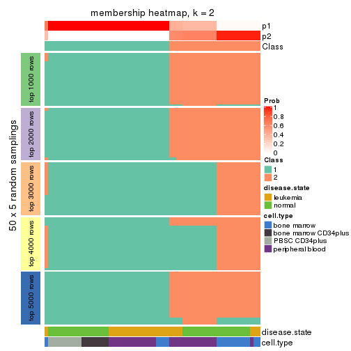
membership_heatmap(res, k = 3)
membership_heatmap(res, k = 4)
membership_heatmap(res, k = 5)
membership_heatmap(res, k = 6)

As soon as we have had the classes for columns, we can look for signatures which are significantly different between classes which can be candidate marks for certain classes. Following are the heatmaps for signatures.
Signature heatmaps where rows are scaled:
get_signatures(res, k = 2)

get_signatures(res, k = 3)
get_signatures(res, k = 4)
get_signatures(res, k = 5)
get_signatures(res, k = 6)
Signature heatmaps where rows are not scaled:
get_signatures(res, k = 2, scale_rows = FALSE)
get_signatures(res, k = 3, scale_rows = FALSE)
get_signatures(res, k = 4, scale_rows = FALSE)
get_signatures(res, k = 5, scale_rows = FALSE)
get_signatures(res, k = 6, scale_rows = FALSE)
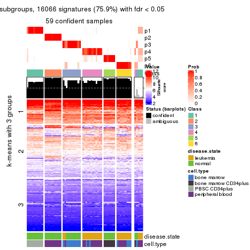
Compare the overlap of signatures from different k:
compare_signatures(res)
get_signature() returns a data frame invisibly. TO get the list of signatures, the function
call should be assigned to a variable explicitly. In following code, if plot argument is set
to FALSE, no heatmap is plotted while only the differential analysis is performed.
# code only for demonstration
tb = get_signature(res, k = ..., plot = FALSE)
An example of the output of tb is:
#> which_row fdr mean_1 mean_2 scaled_mean_1 scaled_mean_2 km
#> 1 38 0.042760348 8.373488 9.131774 -0.5533452 0.5164555 1
#> 2 40 0.018707592 7.106213 8.469186 -0.6173731 0.5762149 1
#> 3 55 0.019134737 10.221463 11.207825 -0.6159697 0.5749050 1
#> 4 59 0.006059896 5.921854 7.869574 -0.6899429 0.6439467 1
#> 5 60 0.018055526 8.928898 10.211722 -0.6204761 0.5791110 1
#> 6 98 0.009384629 15.714769 14.887706 0.6635654 -0.6193277 2
...
The columns in tb are:
which_row: row indices corresponding to the input matrix.fdr: FDR for the differential test. mean_x: The mean value in group x.scaled_mean_x: The mean value in group x after rows are scaled.km: Row groups if k-means clustering is applied to rows.UMAP plot which shows how samples are separated.
dimension_reduction(res, k = 2, method = "UMAP")
dimension_reduction(res, k = 3, method = "UMAP")
dimension_reduction(res, k = 4, method = "UMAP")
dimension_reduction(res, k = 5, method = "UMAP")
dimension_reduction(res, k = 6, method = "UMAP")
Following heatmap shows how subgroups are split when increasing k:
collect_classes(res)
Test correlation between subgroups and known annotations. If the known annotation is numeric, one-way ANOVA test is applied, and if the known annotation is discrete, chi-squared contingency table test is applied.
test_to_known_factors(res)
#> n disease.state(p) cell.type(p) k
#> ATC:mclust 63 9.44e-02 9.65e-05 2
#> ATC:mclust 59 7.93e-03 5.61e-09 3
#> ATC:mclust 63 7.00e-05 8.60e-09 4
#> ATC:mclust 42 1.08e-01 2.61e-17 5
#> ATC:mclust 59 5.10e-10 4.97e-24 6
If matrix rows can be associated to genes, consider to use GO_Enrichment(res,
...) to perform function enrichment for the signature genes.
The object with results only for a single top-value method and a single partition method can be extracted as:
res = res_list["ATC", "NMF"]
# you can also extract it by
# res = res_list["ATC:NMF"]
A summary of res and all the functions that can be applied to it:
res
#> A 'ConsensusPartition' object with k = 2, 3, 4, 5, 6.
#> On a matrix with 21168 rows and 64 columns.
#> Top rows (1000, 2000, 3000, 4000, 5000) are extracted by 'ATC' method.
#> Subgroups are detected by 'NMF' method.
#> Performed in total 1250 partitions by row resampling.
#> Best k for subgroups seems to be 2.
#>
#> Following methods can be applied to this 'ConsensusPartition' object:
#> [1] "cola_report" "collect_classes" "collect_plots"
#> [4] "collect_stats" "colnames" "compare_signatures"
#> [7] "consensus_heatmap" "dimension_reduction" "functional_enrichment"
#> [10] "get_anno_col" "get_anno" "get_classes"
#> [13] "get_consensus" "get_matrix" "get_membership"
#> [16] "get_param" "get_signatures" "get_stats"
#> [19] "is_best_k" "is_stable_k" "membership_heatmap"
#> [22] "ncol" "nrow" "plot_ecdf"
#> [25] "rownames" "select_partition_number" "show"
#> [28] "suggest_best_k" "test_to_known_factors"
collect_plots() function collects all the plots made from res for all k (number of partitions)
into one single page to provide an easy and fast comparison between different k.
collect_plots(res)
The plots are:
k and the heatmap of
predicted classes for each k.k.k.k.All the plots in panels can be made by individual functions and they are plotted later in this section.
select_partition_number() produces several plots showing different
statistics for choosing “optimized” k. There are following statistics:
k;k, the area increased is defined as \(A_k - A_{k-1}\).The detailed explanations of these statistics can be found in the cola vignette.
Generally speaking, lower PAC score, higher mean silhouette score or higher
concordance corresponds to better partition. Rand index and Jaccard index
measure how similar the current partition is compared to partition with k-1.
If they are too similar, we won't accept k is better than k-1.
select_partition_number(res)
The numeric values for all these statistics can be obtained by get_stats().
get_stats(res)
#> k 1-PAC mean_silhouette concordance area_increased Rand Jaccard
#> 2 2 0.999 0.964 0.984 0.3942 0.619 0.619
#> 3 3 0.607 0.751 0.870 0.5462 0.690 0.524
#> 4 4 0.713 0.756 0.890 0.1696 0.771 0.485
#> 5 5 0.844 0.853 0.915 0.1110 0.869 0.574
#> 6 6 0.823 0.769 0.856 0.0399 0.937 0.704
suggest_best_k() suggests the best \(k\) based on these statistics. The rules are as follows:
NA.suggest_best_k(res)
#> [1] 2
Following shows the table of the partitions (You need to click the show/hide
code output link to see it). The membership matrix (columns with name p*)
is inferred by
clue::cl_consensus()
function with the SE method. Basically the value in the membership matrix
represents the probability to belong to a certain group. The finall class
label for an item is determined with the group with highest probability it
belongs to.
In get_classes() function, the entropy is calculated from the membership
matrix and the silhouette score is calculated from the consensus matrix.
cbind(get_classes(res, k = 2), get_membership(res, k = 2))
#> class entropy silhouette p1 p2
#> GSM239371 1 0.0000 0.979 1.000 0.000
#> GSM239487 1 0.0000 0.979 1.000 0.000
#> GSM239489 1 0.0000 0.979 1.000 0.000
#> GSM239492 1 0.0000 0.979 1.000 0.000
#> GSM239497 1 0.0000 0.979 1.000 0.000
#> GSM239520 1 0.0000 0.979 1.000 0.000
#> GSM240427 1 0.0000 0.979 1.000 0.000
#> GSM239345 1 0.0000 0.979 1.000 0.000
#> GSM239346 2 0.0000 0.996 0.000 1.000
#> GSM239348 1 0.0000 0.979 1.000 0.000
#> GSM239363 2 0.0000 0.996 0.000 1.000
#> GSM239460 1 0.0000 0.979 1.000 0.000
#> GSM239485 1 0.0000 0.979 1.000 0.000
#> GSM239488 2 0.0000 0.996 0.000 1.000
#> GSM239490 1 0.0000 0.979 1.000 0.000
#> GSM239491 1 0.0000 0.979 1.000 0.000
#> GSM239493 1 0.0000 0.979 1.000 0.000
#> GSM239494 1 0.0000 0.979 1.000 0.000
#> GSM239495 1 0.0000 0.979 1.000 0.000
#> GSM239496 1 0.0000 0.979 1.000 0.000
#> GSM239498 2 0.0000 0.996 0.000 1.000
#> GSM239516 2 0.0000 0.996 0.000 1.000
#> GSM239580 1 0.0000 0.979 1.000 0.000
#> GSM240405 1 0.0000 0.979 1.000 0.000
#> GSM240406 1 0.0000 0.979 1.000 0.000
#> GSM240429 1 0.0000 0.979 1.000 0.000
#> GSM239323 1 0.6623 0.804 0.828 0.172
#> GSM239324 1 0.1633 0.960 0.976 0.024
#> GSM239326 1 0.6801 0.793 0.820 0.180
#> GSM239328 1 0.3431 0.925 0.936 0.064
#> GSM239329 1 0.0000 0.979 1.000 0.000
#> GSM239331 1 0.2603 0.943 0.956 0.044
#> GSM239332 1 0.0376 0.976 0.996 0.004
#> GSM239333 2 0.3431 0.928 0.064 0.936
#> GSM239334 1 0.9686 0.378 0.604 0.396
#> GSM239335 1 0.4815 0.885 0.896 0.104
#> GSM240430 2 0.0000 0.996 0.000 1.000
#> GSM240431 2 0.0000 0.996 0.000 1.000
#> GSM240432 2 0.0000 0.996 0.000 1.000
#> GSM240433 2 0.0000 0.996 0.000 1.000
#> GSM240494 2 0.0000 0.996 0.000 1.000
#> GSM240495 2 0.0000 0.996 0.000 1.000
#> GSM240496 2 0.0000 0.996 0.000 1.000
#> GSM240497 2 0.0000 0.996 0.000 1.000
#> GSM240498 2 0.0000 0.996 0.000 1.000
#> GSM240499 2 0.0000 0.996 0.000 1.000
#> GSM239170 1 0.0000 0.979 1.000 0.000
#> GSM239338 1 0.0000 0.979 1.000 0.000
#> GSM239339 1 0.0000 0.979 1.000 0.000
#> GSM239340 1 0.0000 0.979 1.000 0.000
#> GSM239341 1 0.0000 0.979 1.000 0.000
#> GSM239342 1 0.0000 0.979 1.000 0.000
#> GSM239343 1 0.0000 0.979 1.000 0.000
#> GSM239344 1 0.0000 0.979 1.000 0.000
#> GSM240500 1 0.0000 0.979 1.000 0.000
#> GSM240501 1 0.0000 0.979 1.000 0.000
#> GSM240502 1 0.0000 0.979 1.000 0.000
#> GSM240503 1 0.0000 0.979 1.000 0.000
#> GSM240504 1 0.0000 0.979 1.000 0.000
#> GSM240505 1 0.0000 0.979 1.000 0.000
#> GSM240506 1 0.0000 0.979 1.000 0.000
#> GSM240507 1 0.0000 0.979 1.000 0.000
#> GSM240508 1 0.0000 0.979 1.000 0.000
#> GSM240509 1 0.0000 0.979 1.000 0.000
cbind(get_classes(res, k = 3), get_membership(res, k = 3))
#> class entropy silhouette p1 p2 p3
#> GSM239371 3 0.6260 0.559 0.448 0.000 0.552
#> GSM239487 1 0.5968 0.429 0.636 0.000 0.364
#> GSM239489 3 0.2448 0.750 0.076 0.000 0.924
#> GSM239492 1 0.0000 0.873 1.000 0.000 0.000
#> GSM239497 3 0.2356 0.748 0.072 0.000 0.928
#> GSM239520 1 0.3619 0.773 0.864 0.000 0.136
#> GSM240427 3 0.5098 0.791 0.248 0.000 0.752
#> GSM239345 1 0.0000 0.873 1.000 0.000 0.000
#> GSM239346 2 0.3038 0.848 0.000 0.896 0.104
#> GSM239348 3 0.5178 0.788 0.256 0.000 0.744
#> GSM239363 3 0.2261 0.675 0.000 0.068 0.932
#> GSM239460 3 0.2448 0.750 0.076 0.000 0.924
#> GSM239485 3 0.6204 0.607 0.424 0.000 0.576
#> GSM239488 3 0.2711 0.665 0.000 0.088 0.912
#> GSM239490 1 0.0000 0.873 1.000 0.000 0.000
#> GSM239491 3 0.5016 0.796 0.240 0.000 0.760
#> GSM239493 3 0.4654 0.800 0.208 0.000 0.792
#> GSM239494 3 0.6111 0.651 0.396 0.000 0.604
#> GSM239495 3 0.5835 0.719 0.340 0.000 0.660
#> GSM239496 3 0.4842 0.800 0.224 0.000 0.776
#> GSM239498 3 0.2448 0.673 0.000 0.076 0.924
#> GSM239516 2 0.5968 0.549 0.000 0.636 0.364
#> GSM239580 1 0.0000 0.873 1.000 0.000 0.000
#> GSM240405 1 0.1031 0.857 0.976 0.000 0.024
#> GSM240406 3 0.6235 0.585 0.436 0.000 0.564
#> GSM240429 1 0.0237 0.870 0.996 0.000 0.004
#> GSM239323 2 0.9783 0.153 0.312 0.432 0.256
#> GSM239324 1 0.6622 0.667 0.748 0.164 0.088
#> GSM239326 1 0.8427 0.169 0.500 0.412 0.088
#> GSM239328 1 0.7031 0.630 0.716 0.196 0.088
#> GSM239329 1 0.2711 0.809 0.912 0.000 0.088
#> GSM239331 1 0.8295 0.306 0.548 0.364 0.088
#> GSM239332 1 0.6079 0.705 0.784 0.128 0.088
#> GSM239333 2 0.4174 0.828 0.036 0.872 0.092
#> GSM239334 2 0.6807 0.670 0.172 0.736 0.092
#> GSM239335 1 0.8337 0.276 0.536 0.376 0.088
#> GSM240430 2 0.0000 0.898 0.000 1.000 0.000
#> GSM240431 2 0.0000 0.898 0.000 1.000 0.000
#> GSM240432 2 0.0000 0.898 0.000 1.000 0.000
#> GSM240433 2 0.0000 0.898 0.000 1.000 0.000
#> GSM240494 2 0.0000 0.898 0.000 1.000 0.000
#> GSM240495 2 0.0000 0.898 0.000 1.000 0.000
#> GSM240496 2 0.0000 0.898 0.000 1.000 0.000
#> GSM240497 2 0.0000 0.898 0.000 1.000 0.000
#> GSM240498 2 0.0000 0.898 0.000 1.000 0.000
#> GSM240499 2 0.0000 0.898 0.000 1.000 0.000
#> GSM239170 1 0.0000 0.873 1.000 0.000 0.000
#> GSM239338 1 0.0237 0.870 0.996 0.000 0.004
#> GSM239339 1 0.0000 0.873 1.000 0.000 0.000
#> GSM239340 1 0.0000 0.873 1.000 0.000 0.000
#> GSM239341 1 0.0000 0.873 1.000 0.000 0.000
#> GSM239342 1 0.0000 0.873 1.000 0.000 0.000
#> GSM239343 1 0.6140 -0.136 0.596 0.000 0.404
#> GSM239344 1 0.0000 0.873 1.000 0.000 0.000
#> GSM240500 1 0.0000 0.873 1.000 0.000 0.000
#> GSM240501 1 0.0000 0.873 1.000 0.000 0.000
#> GSM240502 1 0.0000 0.873 1.000 0.000 0.000
#> GSM240503 1 0.0000 0.873 1.000 0.000 0.000
#> GSM240504 1 0.0000 0.873 1.000 0.000 0.000
#> GSM240505 1 0.0000 0.873 1.000 0.000 0.000
#> GSM240506 1 0.0000 0.873 1.000 0.000 0.000
#> GSM240507 1 0.0000 0.873 1.000 0.000 0.000
#> GSM240508 1 0.0000 0.873 1.000 0.000 0.000
#> GSM240509 1 0.0000 0.873 1.000 0.000 0.000
cbind(get_classes(res, k = 4), get_membership(res, k = 4))
#> class entropy silhouette p1 p2 p3 p4
#> GSM239371 1 0.5459 0.0453 0.552 0.000 0.016 0.432
#> GSM239487 3 0.4415 0.7726 0.056 0.000 0.804 0.140
#> GSM239489 4 0.0188 0.7388 0.004 0.000 0.000 0.996
#> GSM239492 1 0.0469 0.8164 0.988 0.000 0.012 0.000
#> GSM239497 4 0.1743 0.7257 0.004 0.000 0.056 0.940
#> GSM239520 3 0.0469 0.9437 0.000 0.000 0.988 0.012
#> GSM240427 4 0.6403 0.5578 0.260 0.000 0.112 0.628
#> GSM239345 1 0.0592 0.8130 0.984 0.000 0.016 0.000
#> GSM239346 3 0.4675 0.6249 0.000 0.244 0.736 0.020
#> GSM239348 4 0.5055 0.6256 0.256 0.000 0.032 0.712
#> GSM239363 4 0.0469 0.7350 0.000 0.000 0.012 0.988
#> GSM239460 4 0.0000 0.7377 0.000 0.000 0.000 1.000
#> GSM239485 4 0.5989 0.3249 0.400 0.000 0.044 0.556
#> GSM239488 4 0.1677 0.7157 0.000 0.040 0.012 0.948
#> GSM239490 1 0.0188 0.8172 0.996 0.000 0.004 0.000
#> GSM239491 4 0.3539 0.7079 0.176 0.000 0.004 0.820
#> GSM239493 1 0.4008 0.5344 0.756 0.000 0.000 0.244
#> GSM239494 1 0.4781 0.3413 0.660 0.000 0.004 0.336
#> GSM239495 4 0.5050 0.4130 0.408 0.000 0.004 0.588
#> GSM239496 4 0.4741 0.5516 0.328 0.000 0.004 0.668
#> GSM239498 4 0.0000 0.7377 0.000 0.000 0.000 1.000
#> GSM239516 4 0.6920 0.1971 0.000 0.316 0.132 0.552
#> GSM239580 1 0.0000 0.8167 1.000 0.000 0.000 0.000
#> GSM240405 1 0.0707 0.8152 0.980 0.000 0.020 0.000
#> GSM240406 1 0.5407 -0.1656 0.504 0.000 0.012 0.484
#> GSM240429 1 0.0469 0.8149 0.988 0.000 0.012 0.000
#> GSM239323 3 0.0336 0.9461 0.000 0.000 0.992 0.008
#> GSM239324 3 0.0000 0.9501 0.000 0.000 1.000 0.000
#> GSM239326 3 0.0000 0.9501 0.000 0.000 1.000 0.000
#> GSM239328 3 0.0000 0.9501 0.000 0.000 1.000 0.000
#> GSM239329 3 0.0000 0.9501 0.000 0.000 1.000 0.000
#> GSM239331 3 0.0000 0.9501 0.000 0.000 1.000 0.000
#> GSM239332 3 0.0000 0.9501 0.000 0.000 1.000 0.000
#> GSM239333 3 0.1867 0.8892 0.000 0.072 0.928 0.000
#> GSM239334 3 0.0000 0.9501 0.000 0.000 1.000 0.000
#> GSM239335 3 0.0000 0.9501 0.000 0.000 1.000 0.000
#> GSM240430 2 0.0000 1.0000 0.000 1.000 0.000 0.000
#> GSM240431 2 0.0000 1.0000 0.000 1.000 0.000 0.000
#> GSM240432 2 0.0000 1.0000 0.000 1.000 0.000 0.000
#> GSM240433 2 0.0000 1.0000 0.000 1.000 0.000 0.000
#> GSM240494 2 0.0000 1.0000 0.000 1.000 0.000 0.000
#> GSM240495 2 0.0000 1.0000 0.000 1.000 0.000 0.000
#> GSM240496 2 0.0000 1.0000 0.000 1.000 0.000 0.000
#> GSM240497 2 0.0000 1.0000 0.000 1.000 0.000 0.000
#> GSM240498 2 0.0000 1.0000 0.000 1.000 0.000 0.000
#> GSM240499 2 0.0000 1.0000 0.000 1.000 0.000 0.000
#> GSM239170 1 0.4277 0.6580 0.720 0.000 0.280 0.000
#> GSM239338 1 0.4008 0.6905 0.756 0.000 0.244 0.000
#> GSM239339 1 0.3764 0.7103 0.784 0.000 0.216 0.000
#> GSM239340 1 0.3975 0.6935 0.760 0.000 0.240 0.000
#> GSM239341 1 0.3873 0.7028 0.772 0.000 0.228 0.000
#> GSM239342 1 0.4222 0.6659 0.728 0.000 0.272 0.000
#> GSM239343 1 0.7359 0.2395 0.508 0.000 0.188 0.304
#> GSM239344 1 0.4277 0.6580 0.720 0.000 0.280 0.000
#> GSM240500 1 0.0000 0.8167 1.000 0.000 0.000 0.000
#> GSM240501 1 0.0188 0.8172 0.996 0.000 0.004 0.000
#> GSM240502 1 0.0336 0.8180 0.992 0.000 0.008 0.000
#> GSM240503 1 0.0469 0.8149 0.988 0.000 0.012 0.000
#> GSM240504 1 0.0188 0.8172 0.996 0.000 0.004 0.000
#> GSM240505 1 0.0188 0.8172 0.996 0.000 0.004 0.000
#> GSM240506 1 0.0336 0.8180 0.992 0.000 0.008 0.000
#> GSM240507 1 0.0188 0.8172 0.996 0.000 0.004 0.000
#> GSM240508 1 0.0188 0.8172 0.996 0.000 0.004 0.000
#> GSM240509 1 0.0188 0.8172 0.996 0.000 0.004 0.000
cbind(get_classes(res, k = 5), get_membership(res, k = 5))
#> class entropy silhouette p1 p2 p3 p4 p5
#> GSM239371 5 0.5024 0.6079 0.096 0.000 0.000 0.212 0.692
#> GSM239487 5 0.4475 0.5521 0.000 0.000 0.276 0.032 0.692
#> GSM239489 4 0.0794 0.8127 0.000 0.000 0.000 0.972 0.028
#> GSM239492 1 0.3074 0.8327 0.804 0.000 0.000 0.000 0.196
#> GSM239497 4 0.4723 0.0864 0.000 0.000 0.016 0.536 0.448
#> GSM239520 3 0.1444 0.9519 0.000 0.000 0.948 0.012 0.040
#> GSM240427 5 0.2103 0.8427 0.004 0.000 0.020 0.056 0.920
#> GSM239345 1 0.0000 0.8793 1.000 0.000 0.000 0.000 0.000
#> GSM239346 3 0.1153 0.9570 0.000 0.004 0.964 0.024 0.008
#> GSM239348 5 0.2891 0.7634 0.000 0.000 0.000 0.176 0.824
#> GSM239363 4 0.0898 0.8126 0.000 0.000 0.020 0.972 0.008
#> GSM239460 4 0.0703 0.8131 0.000 0.000 0.000 0.976 0.024
#> GSM239485 5 0.2513 0.7941 0.008 0.000 0.000 0.116 0.876
#> GSM239488 4 0.0771 0.8129 0.000 0.004 0.020 0.976 0.000
#> GSM239490 1 0.3300 0.8234 0.792 0.000 0.000 0.004 0.204
#> GSM239491 4 0.2522 0.7851 0.052 0.000 0.000 0.896 0.052
#> GSM239493 1 0.2280 0.8084 0.880 0.000 0.000 0.120 0.000
#> GSM239494 1 0.6024 0.2739 0.512 0.000 0.000 0.364 0.124
#> GSM239495 4 0.6147 0.3771 0.168 0.000 0.000 0.544 0.288
#> GSM239496 4 0.3526 0.7383 0.096 0.000 0.000 0.832 0.072
#> GSM239498 4 0.1012 0.8145 0.000 0.000 0.020 0.968 0.012
#> GSM239516 4 0.4004 0.6391 0.000 0.016 0.232 0.748 0.004
#> GSM239580 1 0.1043 0.9024 0.960 0.000 0.000 0.000 0.040
#> GSM240405 1 0.0794 0.8971 0.972 0.000 0.000 0.000 0.028
#> GSM240406 5 0.5043 0.3129 0.044 0.000 0.000 0.356 0.600
#> GSM240429 1 0.0000 0.8793 1.000 0.000 0.000 0.000 0.000
#> GSM239323 3 0.0162 0.9882 0.000 0.000 0.996 0.000 0.004
#> GSM239324 3 0.0162 0.9882 0.000 0.000 0.996 0.000 0.004
#> GSM239326 3 0.0162 0.9882 0.000 0.000 0.996 0.000 0.004
#> GSM239328 3 0.0162 0.9882 0.000 0.000 0.996 0.000 0.004
#> GSM239329 3 0.0963 0.9631 0.000 0.000 0.964 0.000 0.036
#> GSM239331 3 0.0290 0.9858 0.000 0.000 0.992 0.000 0.008
#> GSM239332 3 0.0162 0.9882 0.000 0.000 0.996 0.000 0.004
#> GSM239333 3 0.0162 0.9882 0.000 0.000 0.996 0.000 0.004
#> GSM239334 3 0.0162 0.9882 0.000 0.000 0.996 0.000 0.004
#> GSM239335 3 0.0162 0.9882 0.000 0.000 0.996 0.000 0.004
#> GSM240430 2 0.0000 1.0000 0.000 1.000 0.000 0.000 0.000
#> GSM240431 2 0.0000 1.0000 0.000 1.000 0.000 0.000 0.000
#> GSM240432 2 0.0000 1.0000 0.000 1.000 0.000 0.000 0.000
#> GSM240433 2 0.0000 1.0000 0.000 1.000 0.000 0.000 0.000
#> GSM240494 2 0.0000 1.0000 0.000 1.000 0.000 0.000 0.000
#> GSM240495 2 0.0000 1.0000 0.000 1.000 0.000 0.000 0.000
#> GSM240496 2 0.0000 1.0000 0.000 1.000 0.000 0.000 0.000
#> GSM240497 2 0.0000 1.0000 0.000 1.000 0.000 0.000 0.000
#> GSM240498 2 0.0000 1.0000 0.000 1.000 0.000 0.000 0.000
#> GSM240499 2 0.0000 1.0000 0.000 1.000 0.000 0.000 0.000
#> GSM239170 5 0.1399 0.8699 0.028 0.000 0.020 0.000 0.952
#> GSM239338 5 0.1310 0.8705 0.024 0.000 0.020 0.000 0.956
#> GSM239339 5 0.1399 0.8699 0.028 0.000 0.020 0.000 0.952
#> GSM239340 5 0.1310 0.8705 0.024 0.000 0.020 0.000 0.956
#> GSM239341 5 0.1485 0.8682 0.032 0.000 0.020 0.000 0.948
#> GSM239342 5 0.1310 0.8705 0.024 0.000 0.020 0.000 0.956
#> GSM239343 5 0.0833 0.8615 0.004 0.000 0.016 0.004 0.976
#> GSM239344 5 0.1399 0.8699 0.028 0.000 0.020 0.000 0.952
#> GSM240500 1 0.1908 0.9063 0.908 0.000 0.000 0.000 0.092
#> GSM240501 1 0.2280 0.8969 0.880 0.000 0.000 0.000 0.120
#> GSM240502 1 0.2377 0.8941 0.872 0.000 0.000 0.000 0.128
#> GSM240503 1 0.0162 0.8822 0.996 0.000 0.000 0.000 0.004
#> GSM240504 1 0.1608 0.9087 0.928 0.000 0.000 0.000 0.072
#> GSM240505 1 0.1732 0.9084 0.920 0.000 0.000 0.000 0.080
#> GSM240506 1 0.2690 0.8755 0.844 0.000 0.000 0.000 0.156
#> GSM240507 1 0.2074 0.9032 0.896 0.000 0.000 0.000 0.104
#> GSM240508 1 0.1341 0.9072 0.944 0.000 0.000 0.000 0.056
#> GSM240509 1 0.1341 0.9073 0.944 0.000 0.000 0.000 0.056
cbind(get_classes(res, k = 6), get_membership(res, k = 6))
#> class entropy silhouette p1 p2 p3 p4 p5 p6
#> GSM239371 4 0.4902 0.3459 0.060 0.000 0.000 0.572 0.364 0.004
#> GSM239487 5 0.5598 0.1468 0.000 0.000 0.020 0.096 0.540 0.344
#> GSM239489 4 0.3426 0.3859 0.000 0.000 0.000 0.720 0.004 0.276
#> GSM239492 1 0.3990 0.7064 0.688 0.000 0.000 0.028 0.284 0.000
#> GSM239497 6 0.5476 0.0464 0.000 0.000 0.004 0.108 0.412 0.476
#> GSM239520 6 0.5007 0.5559 0.000 0.000 0.224 0.004 0.124 0.648
#> GSM240427 5 0.1464 0.8451 0.004 0.000 0.000 0.016 0.944 0.036
#> GSM239345 1 0.0692 0.8424 0.976 0.000 0.000 0.020 0.000 0.004
#> GSM239346 6 0.3563 0.4537 0.000 0.000 0.336 0.000 0.000 0.664
#> GSM239348 4 0.4874 0.2149 0.016 0.000 0.000 0.544 0.408 0.032
#> GSM239363 6 0.2402 0.6236 0.000 0.000 0.012 0.120 0.000 0.868
#> GSM239460 4 0.2135 0.5586 0.000 0.000 0.000 0.872 0.000 0.128
#> GSM239485 5 0.4093 0.2059 0.012 0.000 0.000 0.404 0.584 0.000
#> GSM239488 6 0.3354 0.5854 0.000 0.016 0.008 0.184 0.000 0.792
#> GSM239490 1 0.5255 0.5949 0.632 0.000 0.000 0.208 0.152 0.008
#> GSM239491 4 0.2082 0.6179 0.036 0.000 0.004 0.916 0.004 0.040
#> GSM239493 1 0.3893 0.6542 0.764 0.000 0.000 0.156 0.000 0.080
#> GSM239494 4 0.5248 -0.0747 0.456 0.000 0.000 0.476 0.040 0.028
#> GSM239495 4 0.4109 0.6140 0.060 0.000 0.000 0.792 0.060 0.088
#> GSM239496 4 0.2401 0.6122 0.044 0.000 0.000 0.892 0.004 0.060
#> GSM239498 6 0.3499 0.3863 0.000 0.000 0.000 0.320 0.000 0.680
#> GSM239516 6 0.2263 0.6424 0.000 0.004 0.060 0.036 0.000 0.900
#> GSM239580 1 0.0951 0.8659 0.968 0.000 0.000 0.004 0.020 0.008
#> GSM240405 1 0.1297 0.8680 0.948 0.000 0.000 0.012 0.040 0.000
#> GSM240406 4 0.5003 0.5858 0.048 0.000 0.000 0.712 0.124 0.116
#> GSM240429 1 0.0603 0.8468 0.980 0.000 0.000 0.016 0.000 0.004
#> GSM239323 3 0.0146 0.9938 0.000 0.000 0.996 0.000 0.000 0.004
#> GSM239324 3 0.0000 0.9961 0.000 0.000 1.000 0.000 0.000 0.000
#> GSM239326 3 0.0146 0.9936 0.000 0.000 0.996 0.000 0.000 0.004
#> GSM239328 3 0.0146 0.9938 0.000 0.000 0.996 0.000 0.000 0.004
#> GSM239329 3 0.0458 0.9780 0.000 0.000 0.984 0.000 0.016 0.000
#> GSM239331 3 0.0000 0.9961 0.000 0.000 1.000 0.000 0.000 0.000
#> GSM239332 3 0.0000 0.9961 0.000 0.000 1.000 0.000 0.000 0.000
#> GSM239333 3 0.0000 0.9961 0.000 0.000 1.000 0.000 0.000 0.000
#> GSM239334 3 0.0000 0.9961 0.000 0.000 1.000 0.000 0.000 0.000
#> GSM239335 3 0.0000 0.9961 0.000 0.000 1.000 0.000 0.000 0.000
#> GSM240430 2 0.0000 1.0000 0.000 1.000 0.000 0.000 0.000 0.000
#> GSM240431 2 0.0000 1.0000 0.000 1.000 0.000 0.000 0.000 0.000
#> GSM240432 2 0.0000 1.0000 0.000 1.000 0.000 0.000 0.000 0.000
#> GSM240433 2 0.0000 1.0000 0.000 1.000 0.000 0.000 0.000 0.000
#> GSM240494 2 0.0000 1.0000 0.000 1.000 0.000 0.000 0.000 0.000
#> GSM240495 2 0.0000 1.0000 0.000 1.000 0.000 0.000 0.000 0.000
#> GSM240496 2 0.0000 1.0000 0.000 1.000 0.000 0.000 0.000 0.000
#> GSM240497 2 0.0000 1.0000 0.000 1.000 0.000 0.000 0.000 0.000
#> GSM240498 2 0.0000 1.0000 0.000 1.000 0.000 0.000 0.000 0.000
#> GSM240499 2 0.0000 1.0000 0.000 1.000 0.000 0.000 0.000 0.000
#> GSM239170 5 0.1003 0.8615 0.004 0.000 0.000 0.028 0.964 0.004
#> GSM239338 5 0.0291 0.8728 0.004 0.000 0.000 0.004 0.992 0.000
#> GSM239339 5 0.0146 0.8732 0.004 0.000 0.000 0.000 0.996 0.000
#> GSM239340 5 0.0000 0.8717 0.000 0.000 0.000 0.000 1.000 0.000
#> GSM239341 5 0.0405 0.8715 0.004 0.000 0.000 0.008 0.988 0.000
#> GSM239342 5 0.0146 0.8730 0.000 0.000 0.000 0.004 0.996 0.000
#> GSM239343 5 0.1866 0.8113 0.000 0.000 0.000 0.084 0.908 0.008
#> GSM239344 5 0.0405 0.8708 0.000 0.000 0.000 0.004 0.988 0.008
#> GSM240500 1 0.2412 0.8780 0.880 0.000 0.000 0.028 0.092 0.000
#> GSM240501 1 0.2709 0.8653 0.848 0.000 0.000 0.020 0.132 0.000
#> GSM240502 1 0.3318 0.8354 0.796 0.000 0.000 0.032 0.172 0.000
#> GSM240503 1 0.0436 0.8535 0.988 0.000 0.000 0.004 0.004 0.004
#> GSM240504 1 0.2112 0.8808 0.896 0.000 0.000 0.016 0.088 0.000
#> GSM240505 1 0.2301 0.8786 0.884 0.000 0.000 0.020 0.096 0.000
#> GSM240506 1 0.2964 0.8178 0.792 0.000 0.000 0.004 0.204 0.000
#> GSM240507 1 0.2618 0.8722 0.860 0.000 0.000 0.024 0.116 0.000
#> GSM240508 1 0.1765 0.8782 0.924 0.000 0.000 0.024 0.052 0.000
#> GSM240509 1 0.1471 0.8798 0.932 0.000 0.000 0.004 0.064 0.000
Heatmaps for the consensus matrix. It visualizes the probability of two samples to be in a same group.
consensus_heatmap(res, k = 2)
consensus_heatmap(res, k = 3)
consensus_heatmap(res, k = 4)
consensus_heatmap(res, k = 5)
consensus_heatmap(res, k = 6)
Heatmaps for the membership of samples in all partitions to see how consistent they are:
membership_heatmap(res, k = 2)
membership_heatmap(res, k = 3)
membership_heatmap(res, k = 4)
membership_heatmap(res, k = 5)
membership_heatmap(res, k = 6)
As soon as we have had the classes for columns, we can look for signatures which are significantly different between classes which can be candidate marks for certain classes. Following are the heatmaps for signatures.
Signature heatmaps where rows are scaled:
get_signatures(res, k = 2)
get_signatures(res, k = 3)
get_signatures(res, k = 4)
get_signatures(res, k = 5)
get_signatures(res, k = 6)
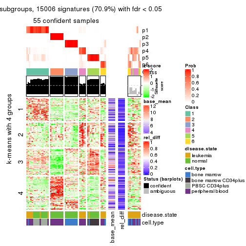
Signature heatmaps where rows are not scaled:
get_signatures(res, k = 2, scale_rows = FALSE)
get_signatures(res, k = 3, scale_rows = FALSE)
get_signatures(res, k = 4, scale_rows = FALSE)
get_signatures(res, k = 5, scale_rows = FALSE)
get_signatures(res, k = 6, scale_rows = FALSE)
Compare the overlap of signatures from different k:
compare_signatures(res)
get_signature() returns a data frame invisibly. TO get the list of signatures, the function
call should be assigned to a variable explicitly. In following code, if plot argument is set
to FALSE, no heatmap is plotted while only the differential analysis is performed.
# code only for demonstration
tb = get_signature(res, k = ..., plot = FALSE)
An example of the output of tb is:
#> which_row fdr mean_1 mean_2 scaled_mean_1 scaled_mean_2 km
#> 1 38 0.042760348 8.373488 9.131774 -0.5533452 0.5164555 1
#> 2 40 0.018707592 7.106213 8.469186 -0.6173731 0.5762149 1
#> 3 55 0.019134737 10.221463 11.207825 -0.6159697 0.5749050 1
#> 4 59 0.006059896 5.921854 7.869574 -0.6899429 0.6439467 1
#> 5 60 0.018055526 8.928898 10.211722 -0.6204761 0.5791110 1
#> 6 98 0.009384629 15.714769 14.887706 0.6635654 -0.6193277 2
...
The columns in tb are:
which_row: row indices corresponding to the input matrix.fdr: FDR for the differential test. mean_x: The mean value in group x.scaled_mean_x: The mean value in group x after rows are scaled.km: Row groups if k-means clustering is applied to rows.UMAP plot which shows how samples are separated.
dimension_reduction(res, k = 2, method = "UMAP")
dimension_reduction(res, k = 3, method = "UMAP")
dimension_reduction(res, k = 4, method = "UMAP")
dimension_reduction(res, k = 5, method = "UMAP")
dimension_reduction(res, k = 6, method = "UMAP")
Following heatmap shows how subgroups are split when increasing k:
collect_classes(res)
Test correlation between subgroups and known annotations. If the known annotation is numeric, one-way ANOVA test is applied, and if the known annotation is discrete, chi-squared contingency table test is applied.
test_to_known_factors(res)
#> n disease.state(p) cell.type(p) k
#> ATC:NMF 63 5.17e-01 1.84e-04 2
#> ATC:NMF 58 3.73e-07 3.93e-05 3
#> ATC:NMF 57 1.47e-05 1.25e-10 4
#> ATC:NMF 60 2.16e-04 2.92e-15 5
#> ATC:NMF 55 7.27e-06 2.00e-17 6
If matrix rows can be associated to genes, consider to use GO_Enrichment(res,
...) to perform function enrichment for the signature genes.
sessionInfo()
#> R version 3.6.0 (2019-04-26)
#> Platform: x86_64-pc-linux-gnu (64-bit)
#> Running under: CentOS Linux 7 (Core)
#>
#> Matrix products: default
#> BLAS: /usr/lib64/libblas.so.3.4.2
#> LAPACK: /usr/lib64/liblapack.so.3.4.2
#>
#> locale:
#> [1] LC_CTYPE=en_GB.UTF-8 LC_NUMERIC=C LC_TIME=en_GB.UTF-8
#> [4] LC_COLLATE=en_GB.UTF-8 LC_MONETARY=en_GB.UTF-8 LC_MESSAGES=en_GB.UTF-8
#> [7] LC_PAPER=en_GB.UTF-8 LC_NAME=C LC_ADDRESS=C
#> [10] LC_TELEPHONE=C LC_MEASUREMENT=en_GB.UTF-8 LC_IDENTIFICATION=C
#>
#> attached base packages:
#> [1] grid parallel stats graphics grDevices utils datasets methods base
#>
#> other attached packages:
#> [1] genefilter_1.66.0 ComplexHeatmap_2.1.1 markdown_1.1 knitr_1.26
#> [5] preprocessCore_1.46.0 cola_1.3.2 GEOquery_2.52.0 Biobase_2.44.0
#> [9] BiocGenerics_0.30.0 GetoptLong_0.1.7
#>
#> loaded via a namespace (and not attached):
#> [1] bitops_1.0-6 matrixStats_0.55.0 bit64_0.9-7 doParallel_1.0.15
#> [5] RColorBrewer_1.1-2 httr_1.4.1 tools_3.6.0 backports_1.1.5
#> [9] R6_2.4.1 DBI_1.0.0 lazyeval_0.2.2 colorspace_1.4-1
#> [13] withr_2.1.2 tidyselect_0.2.5 gridExtra_2.3 bit_1.1-14
#> [17] compiler_3.6.0 xml2_1.2.2 microbenchmark_1.4-7 pkgmaker_0.28
#> [21] slam_0.1-46 scales_1.1.0 readr_1.3.1 NMF_0.23.6
#> [25] stringr_1.4.0 digest_0.6.23 pkgconfig_2.0.3 bibtex_0.4.2
#> [29] highr_0.8 limma_3.40.6 rlang_0.4.2 GlobalOptions_0.1.1
#> [33] RSQLite_2.1.2 impute_1.58.0 shape_1.4.4 mclust_5.4.5
#> [37] dendextend_1.12.0 dplyr_0.8.3 RCurl_1.95-4.12 magrittr_1.5
#> [41] Matrix_1.2-17 Rcpp_1.0.3 munsell_0.5.0 S4Vectors_0.22.1
#> [45] viridis_0.5.1 lifecycle_0.1.0 stringi_1.4.3 plyr_1.8.4
#> [49] blob_1.2.0 crayon_1.3.4 lattice_0.20-38 splines_3.6.0
#> [53] annotate_1.62.0 circlize_0.4.9 hms_0.5.2 zeallot_0.1.0
#> [57] pillar_1.4.2 rjson_0.2.20 rngtools_1.4 reshape2_1.4.3
#> [61] codetools_0.2-16 stats4_3.6.0 XML_3.98-1.20 glue_1.3.1
#> [65] evaluate_0.14 png_0.1-7 vctrs_0.2.0 foreach_1.4.7
#> [69] polyclip_1.10-0 gtable_0.3.0 purrr_0.3.3 tidyr_1.0.0
#> [73] clue_0.3-57 assertthat_0.2.1 ggplot2_3.2.1 xfun_0.11
#> [77] gridBase_0.4-7 eulerr_6.0.0 xtable_1.8-4 skmeans_0.2-11
#> [81] survival_2.44-1.1 viridisLite_0.3.0 tibble_2.1.3 iterators_1.0.12
#> [85] AnnotationDbi_1.46.1 registry_0.5-1 memoise_1.1.0 IRanges_2.18.3
#> [89] cluster_2.1.0 brew_1.0-6